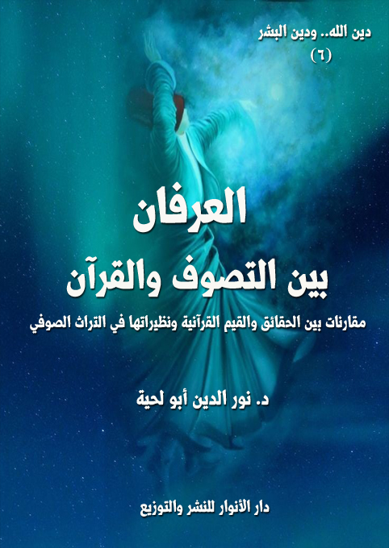

العرفان بين التصوف والقرآن
الوصف: مقارنات بين الحقائق والقيم القرآنية ونظيراتها في التراث الصوفي
السلسلة: دين الله ودين البشر
المؤلف: د. نور الدين أبو لحية
الناشر: دار الأنوار للنشر والتوزيع
الطبعة: الأولى، 1442 هـ
عدد الصفحات: 503
ISBN: 978-620-3-85915-7
لمطالعة الكتاب من تطبيق مؤلفاتي المجاني وهو أحسن وأيسر: هنا

ليس هذا الكتاب خاصا بنقد [العرفان]؛ فهو ـ بشقيه النظري والعملي ـ ركن من أركان الدين الأساسية، التي لا يتم التدين الصحيح إلا بتحققها، ذلك أنه يعني العلم الذي يبحث فيما يطلق عليه [التربية الروحية]، أو [علم السلوك]، أو [علم الإحسان]، أو كيفية التواصل مع الله، وتهيئة النفس لتصبح أهلا لذلك.. ومثل هذا العلم يستحيل على العاقل المؤمن أن يرده أو يرفضه أو ينكره، بل إن عليه أن يدعو إليه وينصح به ويلتزم بمقتضياته.
وليس هو أيضا خاصا بنقد [الطرق الصوفية ] نقدا كليا شاملا استئصاليا، مثلما يفعل الغلاة من السلفية؛ فللصوفية بطرقها ومدارسها المختلفة دور كبير في نشر الكثير من القيم الجميلة، وقبلها نشر الإسلام في الكثير من مناطق العالم التي لولاهم لبقيت في ضلالها وشركها ووثنيتها.
وليس هو أيضا خاصا بنقد [أعلام التصوف] المتقدمين كمعروف الكرخي والجنيد والشبلي وغيرهم.. أو ممن جاء بعدهم كالقشيري والطوسي.. أو من جاء بعدهم كالغزالي ومدرسته.. فكل هؤلاء الأعلام من المحترمين جدا وفي جميع المدارس الإسلامية، ولهذا نرى تراثهم، والذي جُمع في [إحياء علوم الدين] متوفرا لدى جميع المدارس الإسلامية.
ولكنه خاص بالذين خرجوا عن ذلك المنهج، ووقعوا في الكثير من الشطحات والأوهام التي صرفت عن جوهر هذا العلم وروحه ومقاصده إلى معان شوهته، وانحرفت به عن مساره الذي هو تزكية النفس إلى معان أخرى لا نرى شرعيتها، بل نرى وجوب التحذير منها والتصدي لها.
العرفان بين التصوف والقرآن (ص 7)
ليس هذا الكتاب خاصا بنقد [العرفان]؛ فهو ـ بشقيه النظري والعملي ـ ركن من أركان الدين الأساسية، التي لا يتم التدين الصحيح إلا بتحققها، ذلك أنه يعني العلم الذي يبحث فيما يطلق عليه [التربية الروحية]، أو [علم السلوك]، أو [علم الإحسان]، أو كيفية التواصل مع الله، وتهيئة النفس لتصبح أهلا لذلك .. ومثل هذا العلم يستحيل على العاقل المؤمن أن يرده أو يرفضه أو ينكره، بل إن عليه أن يدعو إليه وينصح به ويلتزم بمقتضياته.
وليس هو أيضا خاصا بنقد [الطرق الصوفية] نقدا كليا شاملا استئصاليا، مثلما يفعل الغلاة من السلفية؛ فللصوفية بطرقها ومدارسها المختلفة دور كبير في نشر الكثير من القيم الجميلة، وقبلها نشر الإسلام في الكثير من مناطق العالم التي لولاهم لبقيت في ضلالها وشركها ووثنيتها.
وليس هو أيضا خاصا بنقد [أعلام التصوف] المتقدمين كمعروف الكرخي والجنيد والشبلي وغيره .. أو ممن جاء بعدهم كالقشيري والطوسي .. أو من جاء بعدهم كالغزالي ومدرسته .. فكل هؤلاء الأعلام من المحترمين جدا وفي جميع المدارس الإسلامية، ولهذا نرى تراثهم، والذي جُمع في [إحياء علوم الدين] متوفرا لدى جميع المدارس الإسلامية.
ولكنه خاص بالذين خرجوا عن ذلك المنهج، ووقعوا في الكثير من الشطحات والأوهام التي صرفت عن جوهر هذا العلم وروحه ومقاصده إلى معان شوهته، وانحرفت به عن مساره الذي هو تزكية النفس إلى معان أخرى لا نرى شرعيتها، بل نرى وجوب التحذير منها والتصدي لها.
وقد دفعنا إلى القيام بهذا الواجب الدوافع الشرعية التالية:
العرفان بين التصوف والقرآن (ص 8)
أولا ـ ما ورد في القرآن الكريم من التحذير من البدع، والدعوة إلى الإنكار عليها، وخاصة تلك التي ترتبط بالعلاقة بالله، كما يشير إلى ذلك قوله تعالى: {ثُمَّ قَفَّيْنَا عَلَى آثَارِهِمْ بِرُسُلِنَا وَقَفَّيْنَا بِعِيسَى ابْنِ مَرْيَمَ وَآتَيْنَاهُ الْإِنْجِيلَ وَجَعَلْنَا فِي قُلُوبِ الَّذِينَ اتَّبَعُوهُ رَأْفَةً وَرَحْمَةً وَرَهْبَانِيَّةً ابْتَدَعُوهَا مَا كَتَبْنَاهَا عَلَيْهِمْ إِلَّا ابْتِغَاءَ رِضْوَانِ الله فَمَا رَعَوْهَا حَقَّ رِعَايَتِهَا فَآتَيْنَا الَّذِينَ آمَنُوا مِنْهُمْ أَجْرَهُمْ وَكَثِيرٌ مِنْهُمْ فَاسِقُونَ} [الحديد: 27]، فالآية الكريمة تشير إلى ذلك الانحراف الذي دب إلى المسيحية نتيجة سوء فهمها لتعاليم المسيح عليه السلام، ولذلك كان من الواجب على أهل العلم من المؤمنين رد الأمر إلى نصابه، حتى لا يقع التحريف في الدين.
وقد أشار إلى ذلك أيضا قوله تعالى: {لُعِنَ الَّذِينَ كَفَرُوا مِنْ بَنِي إِسْرَائِيلَ عَلَى لِسَانِ دَاوُودَ وَعِيسَى ابْنِ مَرْيَمَ ذَلِكَ بِمَا عَصَوْا وَكَانُوا يَعْتَدُونَ كَانُوا لَا يَتَنَاهَوْنَ عَنْ مُنْكَرٍ فَعَلُوهُ لَبِئْسَ مَا كَانُوا يَفْعَلُونَ} [المائدة: 78 ـ 79]، فالآية الكريمة تذكر أن اللعنة صُبت على بني إسرائيل بسبب مجاملتهم لبعضهم بعضا على حساب شريعة الله وصفائها وسلامتها.
بالإضافة إلى أن الكثير من المحدثات التي دخلت باسم التصوف مما وقع الخلاف فيه بين الأمة، والمنهج الذي علمنا إياه القرآن الكريم هو الرجوع إليه عند التنازع، فقد اعتبر الله تعالى هذا قانونا في جميع الأديان، فقال: {كَانَ النَّاسُ أُمَّةً وَاحِدَةً فَبَعَثَ الله النَّبِيِّينَ مُبَشِّرِينَ وَمُنْذِرِينَ وَأَنْزَلَ مَعَهُمُ الْكِتَابَ بِالْحَقِّ لِيَحْكُمَ بَيْنَ النَّاسِ فِيمَا اخْتَلَفُوا فِيهِ} [البقرة: 213]
وأنكر على المخالفين لهذا، فقال: {أَلَمْ تَرَ إلى الَّذِينَ أُوتُوا نَصِيبًا مِنَ الْكِتَابِ يُدْعَوْنَ إلى كِتَابِ الله لِيَحْكُمَ بَيْنَهُمْ ثُمَّ يَتَوَلَّى فَرِيقٌ مِنْهُمْ وَهُمْ مُعْرِضُونَ} [آل عمران: 23]
وهكذا دعا هذه الأمة إلى تحكيم كتابها في كل خلاف تقع فيه، قال تعالى: {وَمَا
العرفان بين التصوف والقرآن (ص 9)
اخْتَلَفْتُمْ فِيهِ مِنْ شَيْءٍ فَحُكْمُهُ إلى اللَّهِ} [الشورى: 10]
ثانيا ـ ما ورد في السنة المطهرة من الدعوة إلى إنكار كل دخيل على الدين، وإلا كان الساكت شريكا للمنحرفين المبتدعين، ففي الحديث عن رسول الله صلى الله عليه وآله وسلم أنه قال: (من أحدث في أمرنا هذا ما ليس منه فهو ردّ (1)) (2)
وأخبر عن الواجب الشرعي للعلماء المحققين في مواجهة كل دخيل ودخن يقع في الدين، فقال: (إذ ظهرت البدع في أمتي فليظهر العالم علمه، فمن لم يفعل فعليه لعنة الله) (3)
وفوق ذلك أخبر رسول الله صلى الله عليه وآله وسلم أن هذه الأمة ليست مبرأة أو معصومة من وقوع البدع والمحدثات فيها، بل شأنها شأن كل الأمم في ذلك، فقال: (لتتبعن سنن من كان قبلكم شبرا بشبر وذراعا بذارع، حتى لو دخلوا جحر ضب لتبعتموهم)، فقلنا يا رسول الله اليهود والنصارى؟ قال: (فمن هما) (4)
وقد ورد في حديث حذيفة ما عبر عنه رسول الله صلى الله عليه وآله وسلم بالدخن، وأخبر أنه الشوائب التي تختلط مع الخير، فعنه قال: كان الناس يسألون النبي صلى الله عليه وآله وسلم عن الخير، وكنت أسأله عن الشر مخافة أن يدركني، فقلت: يا رسول الله! إنا كنا في جاهلية وشر، فجاءنا الله بهذا الخير، فهل بعد هذا الخير من شر؟ قال: (نعم)، قلت: وهل بعد ذلك الشر من خير؟ قال: (نعم وفيه دخنٌ)، قلت: وما دخنه؟ قال: (قومٌ يستنون بغير سنتي ويهدون بغير هديي، تعرف
__________
(1) فهو رد: أي غير مقبول ولا جزاء عليه إلا العقاب.
(2) البخاري (2697) ومسلم (1718)
(3) الكافي 1/ 44.
(4) البخاري (4356) ومسلم (2669)
العرفان بين التصوف والقرآن (ص 10)
منهم وتنكر) (1)
فهذا الحديث العظيم المتفق عليه بين جميع طوائف المسلمين أصل في هذا الباب، ولذلك نحن بين أمرين: إما أن نذكر بأن تراثنا صاف خالص ليس فيه أي شوائب، ولا أي دخن؛ فننزه بذلك التراث، ونكذب بذلك رسول الله صلى الله عليه وآله وسلم .. أو نصدق رسول الله صلى الله عليه وآله وسلم فيما قاله، ونسعى بكل جهدنا لتنفيذ الواجب الشرعي لإزالة هذا الدخن بعرض كل شيء على الثوابت القرآنية.
وبناء على أن رسول الله صلى الله عليه وآله وسلم ذكر أن أولئك القوم الذين يقعون في الدخن (تعرف منهم وتنكر)؛ فإن الواجب علينا أن نعرف المعروف، ونقر به، ونشهد لأهله، ولا نحكم حكما استئصاليا ظالما؛ فذلك ينافي العدل الذي أمرنا به.
وليس ذلك فقط ما ورد في السنة المطهرة، بل إن رسول الله صلى الله عليه وآله وسلم دعانا إلى عرض كل ما يرد عنه على القرآن الكريم والحقائق الفطرية الثابتة، كما ورد في الحديث قوله صلى الله عليه وآله وسلم: (إذا حدثتم عني حديثا تعرفونه ولا تنكرونه، فصدقوا به قلته أو لم أقله فإني أقول ما تعرفونه ولا تنكرونه، وإذا حدثتم عني حديثا تنكرونه ولا تعرفونه فكذبوا به، فإني لا أقول ما تنكرونه، وأقول ما تعرفونه) (2)
وقال: (إذا سمعتم الحديث عني تعرفه قلوبكم، وتلين له أشعاركم وأبشاركم، وترون أنه منكم قريبٌ، فأنا أولاكم به، وإذا سمعتم الحديث عني تنكره قلوبكم وتنفر
__________
(1) البخاري (3606) ومسلم (1847) وأبو داود (4244)
(2) رواه الطحاوي في (شرح مشكل الآثار)، (15/ 347)، الدار قطني في سننه، (4/ 208)
العرفان بين التصوف والقرآن (ص 11)
أشعاركم، وأبشاركم منه وترون أنه منكم بعيدٌ فأنا أبعدكم منه) (1)
فإذا كانت الأحاديث المروية عن الثقاة إلى رسول الله صلى الله عليه وآله وسلم تحتاج إلى هذه المعايير والمراجعات؛ فكيف بغيرها؟
ثالثا ـ ما ورد من الروايات عن أئمة الهدى في عموم الإنكار على كل محدث في الدين، أو الإنكار الخاص على بعض المظاهر الصوفية في عصرهم.
أما الروايات العامة؛ فكثيرة جدا؛ فأدوار أئمة الهدى الكثيرة يمكن اختصارها في حماية أصالة الدين من كل دخيل ودخن وتبديل وتغيير، ولهذا لم يكتفوا بالقيام بذلك بأنفسهم، وإنما حضوا الموالين لهم على القيام بهذا الدور حتى لا يتحولوا إلى شركاء لمن يسكتون عنهم.
أما الروايات الخاصة؛ فإنكارهم على بعض المظاهر التي ابتدأ بها التصوف في عصرهم، مع كونها لا تساوي شيئا أمام ما حصل بعد ذلك.
ومن الأمثلة عليها مواجهتهم لظاهرة الرهبنة التي وقع فيها بعض الصوفية الأوائل؛ فقد روي أن الإمام علي دخل على العلاء بن زياد الحارثي يعوده؛ فلمّا رأى سعة داره قال: (ما كنتَ تصنع بسعة هذه الدار في الدنيا، وأنت إليها في الآخرة كنت أحوج؟ وبلى إن شئت بلغت بها الآخرة، تقري فيها الضيف، وتصل فيها الرحم، وتُطلع منها الحقوق مطالعها، فإذا أنت قد بلغت بها الآخرة)، فقال له العلاء: يا أمير المؤمنين، أشكو إليك أخي عاصم بن زياد، لبس العباءة وتخلّى عن الدنيا، فقال الإمام: عليَّ به؛ فلمّا جاء قال: (يا عُديَّ نفسه، لقد استهام بك الخبيث، أما رحمت أهلك وولدك، أترى الله أحلَّ لك الطيّبات، وهو يكره
__________
(1) رواه أحمد 3/ 497، والبزار كما في (كشف الأستار) 1/ 105 (187)
العرفان بين التصوف والقرآن (ص 12)
أن تأخذها، أنت أهون على الله من ذلك)، قال: يا أمير المؤمنين، هذا أنت في خشونة ملبسك وجشوبة مأكلك؟ قال الإمام: (ويحك، إنّي لستُ كأنت، إنّ الله تعالى فرضَ على أئمّة العدل أن يقدّروا أنفسهم بضعفةِ الناس، كيلا يتبيّغ بالفقير فقره) (1)
ومثل ذلك الإمام الصادق؛ فقد روي أنه سئل عن الصوفية، فقال: (إنهم أعداؤنا، فمن مال إليهم فهو منهم ويحشر معهم، وسيكون أقوام، يدّعون حبنا ويميلون إليهم ويتشبهون بهم، ويلقبون أنفسهم بلقبهم، ويقولون أقوالهم، ألا فمن مال إليهم فليس منا، وإنّا منه براء، ومن أنكرهم ورد عليهم، كان كمن جاهد الكفار بين يدي رسول الله صلى الله عليه وآله) (2)
وعن مسعدة بن صدقة، قال: احتج الصوفية على الإمام الصادق بقوله تعالى: {وَيُؤْثِرُونَ عَلَى أَنْفُسِهِمْ وَلَوْ كَانَ بِهِمْ خَصَاصَةٌ وَمَنْ يُوقَ شُحَّ نَفْسِهِ فَأولئك هُمُ الْمُفْلِحُونَ} [الحشر: 9]، فقال: (فقد كان مباحا جائزا ولم يكونوا نهوا عنه وثوابهم منه على الله عزّ وجلّ، وذلك إنّ الله أمر بخلاف ما عملوا به فصار أمره ناسخا لفعلهم، وكان نهي الله تبارك وتعالى رحمة منه للمؤمنين ونظرا لكي لا يضرّوا بأنفسهم وعيالاتهم، منهم الضعفة الصغار والولدان والشيخ الفاني والعجوز الكبيرة الّذين لا يصبرون على الجوع، فإن تصدّقت برغيفي ولا رغيف لي غيره ضاعوا وهلكوا جوعا) (3)
وسئل الإمام الكاظم عن الرجل المسلم هل يصلح له أن يسيح في الأرض أو يترهّب
__________
(1) نهج البلاغة: الخطبة 209.
(2) سفينة البحار للمحدث القمي ج 2 ص 57.
(3) الكافي ج 5 ص 65 ..
العرفان بين التصوف والقرآن (ص 13)
في بيت لا يخرج منه؟ فقال: (لا) (1)
وقال الإمام الرضا: (من ذكر عنده الصوفية ولم ينكرهم بلسانه وقلبه، فليس منا، ومن أنكرهم، فكأنما جاهد الكفار بين يدي رسول الله صلى الله عليه وآله وسلم) (2)
وعن محمد بن الحسين، قال: كنت مع الإمام الهادي في مسجد المدينة فأتاه جماعة من أصحابه، منهم أبو هاشم الجعفري وكان رجلا بليغا وكانت له منزلة عظيمة عنده ثم دخل المسجد جماعة من الصوفية وجلسوا في جانبه حلقة مستديرة، ثم أخذوا بالتهليل؛ فقال: (لا تلتفوا إلى هؤلاء الخداعين، فإنهم خلفاء الشياطين، ومخربو قواعد الدين، يتزهدون لراحة الأجسام، ويتهجدون لتقييد الأنام، ويتجوعون عمراً حتى يذبحوا للأيكاف حمراً، لا يهللون إلا لغرور الناس، ولا يقللون الغذاء إلا للالتباس والاختلاف، أورادهم الرقص والتصدية، وأذكارهم الترنم والتغنية، فلا يتبعهم إلا السفهاء، ولا يعتقد بهم إلا الحمقاء، فمن ذهب إلى زيارة واحد منهم حياً أو ميتاً فكأنما ذهب إلى زيارة الشيطان وعبادة الأوثان، ومن أعان أحداً منهم فكأنما أعان يزيد بن معاوية بن أبي سفيان)، فقال رجل من أصحابه: وإن كان معترفا بحقوقكم؟ قال: فنظر إليه شبه المغضب وقال: (دع ذا، من اعترف بحقوقنا لم يذهب في عقوقنا، أما تدري أن أخس الطوائف الصوفية، والصوفية كلهم من مخالفينا طريقتهم مغايرة لطريقنا) (3)
وروي عن الامام العسكري أنه قال لأبي هشام الجعفري: (يا أبا هشام سيأتي زمان
__________
(1) مسائل علي بن جعفر: 116 ..
(2) مستدرك الوسائل، ج ??، ص ???، رقم ????.
(3) الاثنا عشرية، الحر العاملي، ص ??.
العرفان بين التصوف والقرآن (ص 14)
على الناس .. علماؤهم شرار خلق الله على وجه الأرض، لأنهم يميلون إلى الفلسفة والتصوف، وأيّم والله: أنهم من أهل العدوان والتحريف، يبالغون في حب مخالفينا، ويضلون شيعتنا وموالينا، فإن نالوا منصبا لم يشبعوا، وإن خذلوا عبدوا الله على الرياء، ألا إنهم قُطّاع طريق المؤمنين والدعاة إلى نحلة الملحدين، فمن أدركهم فليحذرهم وليضمن دينه وإيمانه منهم) (1)
وهذه الروايات وغيرها، وإن كنا لا نرى تعميمها على كل الصوفية، أو على جميع المظاهر الصوفية، إلا أنها تدل على وجوب الإنكار عليهم في حال مخالفتهم لما ورد في القرآن الكريم، مثلما يُنكر على غيرهم من الطوائف.
رابعا ـ ما ورد عن الصوفية أنفسهم من الإنكار على التحريفات التي حصلت من المنتسبين للتصوف، وهي كثيرة جدا، بل لا نكاد نجد صوفيا في أي عصر من العصور إلا وهو ينكر على ما أحدثه المعاصرون له.
وقد أشار إلى ذلك الشيخ أحمد زروق (توفي 899 هـ) بقوله في بعض قواعده: (كثر المدعون في هذا الطريق لغربته، وبعد الأفهام عنه لدقته، وكثر الإنكار على أهله لنظافته، وحذر الناصحون من سلوكه لكثرة الغلط فيه .. وصنف الأئمة في الرد على أهله لما أحدث أهل الضلال فيه وانتسبوا منه إليه) (2)
ثم ساق نصا لابن عربي يقول فيه: (احذر هذا الطريق، فإن أكثر الخوارج منه، وما هو إلا الطريق الهلك والملك، من حقق علمه وعمله وحاله، نال عز الأبد، ومن فارق
__________
(1) سفينة البحار للمحدث القمي ج 2 ص 58.
(2) قواعد التصوف، ص: 128.
العرفان بين التصوف والقرآن (ص 15)
التحقيق فيه، هلك وما نفذ، ولذلك أشار بعضهم بقوله: بلغنا إلى حدّ إذ قال هكذا، قال في النار) (1)
ولا بأس أن نسوق بعض الأمثلة هنا لتكون حجة لمن يستعجلون في الإنكار على كل ناقد أو داعية للتصحيح والإصلاح.
فمن ذلك ما ذكره عبد الكريم بن هوازن القشيري (المتوفى: 465 هـ) ـ صاحب الرسالة التي تعتبر دستورا للتصوف ـ فقد قال في مقدمة رسالته: (اعلموا، رحمكم الله، أن المحققين من هذه الطائفة انقرض أكثرهم ولم يبق في زماننا من هذه الطائفة إلا أثرهم، كما قيل:
أما الخيام فإنها كخيامهم وأرى نساء الحي غير نسائها
حصلت الفترة في هذه الطريقة .. لا، بل اندرست الطريقة بالحقيقة: مضى الشيوخ الذين كان بهم اهتداء، وقل الشباب الذين كان لهم بسيرتهم وسنتهم اقتداء، وزال الورع وطوى بساطه، واشتد الطمع وقوى رباطه. وارتحل عن القلوب حرمة الشريعة، فعدوا قلة المبالاة بالدين أوثق ذريعة ورفضوا التمييز بين الحلال والحرام. ودانوا بترك الاحترام. وطرح الاحتشام، واستخفوا بأداء العبادات، واستهانوا بالصوم والصلاة، وركضوا في ميدان الغفلات وركنوا إلى اتباع الشهوات، وقلة المبالاة بتعاطي المحظورات، والارتفاق بما يأخذونه من السوقة، والنسوان، وأصحاب السلطان. ثم لم يرضوا بما تعاطوه من سوء هذه الأفعال، حتى أشاروا إلى أعلى الحقائق والأحوال، وادعوا أنهم تحروا من رق الأغلال وتحققوا بحقائق الوصال وأنهم قائمون بالحق، تجري عليهم أحكامه، وهم محو، وليس لله
__________
(1) المرجع السابق، ص: 128.
العرفان بين التصوف والقرآن (ص 16)
عليهم فيما يؤثرونه أو يذرونه عتب ولا لوم، وأنهم كوشفوا بأسرار الأحدية، واختطفوا عنهم بالكلية، وزالت عنهم أحكامه للبشرية. وبقوا بعد فنائهم عنهم بأنوار الصمدية، والقائل عنهم غيرهم إذا نطقوا، والنائب عنهم سواهم فيما تصرفوا، بل صرفوا) (1)
وهكذا وقف قبله السُلمي (توفي 412 هـ) الذي يعتبر مرجعا كبيرا للصوفية من خلال كتبه المعتمدة لديهم، وخاصة كتابه المشهور [اللمع]، فهو لم يكتف بما ذكره القشيري، وإنما راح يؤلف رسالة كاملة في نقد الصوفية سماها [رسالة في غلطات الصوفية]، ومما جاء في مقدمتها قوله: (واعلم أن في زماننا هذا قد كثر الخائضون في علوم هذه الطائفة، وقد كثر أيضا المتشبهون بأهل التصوف والمشيرون إليها والمجيبون عنها وعن مسائلها، وكل واحد منهم يضيف إلى نفسه كتابا قد زخرفه، وكلاما ألفه، وليس بمستحسَن منهم ذلك؛ لأن الأوائل والمشايخ الذين تكلموا في هذه المسائل وأشاروا إلى هذه الإشارات ونطقوا بهذه الحِكَم، إنما تكلموا بعد قطع العلائق، وإماتة النفوس بالمجاهدات والرياضات والمنازلات والوجد والاحتراق، والمبادرة والاشتياق إلى قطع كل علاقة قطعتهم عن الله عزَّ وجلَّ طرفة عين، وقاموا بشرط العلم، ثم عملوا به، ثم تحققوا في العمل فجمعوا بين العلم والحقيقة والعمل) (2)
ثم راح يفصل أصناف الأخطاء التي وقعوا فيها، والتي انحرفت بهم عن المنهج الأصيل الذي هو السلوك التحققي والتخلقي، فقال: (فطبقة منهم غلطوا في الأصول: من قلة إحكامهم لأصول الشريعة، وضعف دعائمهم في الصدق والإخلاص، وقلة معرفتهم
__________
(1) الرسالة القشيرية (1/ 16)
(2) اللمع، ص 19.
العرفان بين التصوف والقرآن (ص 17)
بذلك .. وطبقة ثانية: منهم غلطوا في الفروع، وهي: الآداب، والأخلاق، والمقامات، والأحوال، والأفعال، والأقوال؛ فكان ذلك من قلة معرفتهم بالأصول، ومتابعتهم لحظوظ النفوس ومزاج الطبع؛ لأنهم لم يدنوا ممن يُروضهم، ويجرعهم المرارات، ويُوقفهم على المنهج الذي يؤديهم إلى مطلوبهم .. والطبقة الثالثة، كان غلطهم فيما غلطوا فيه: زلة وهفوة، لا علة وجفوة؛ فإذا تبين ذلك عادوا إلى مكارم الأخلاق، ومعالي الأمور، فسدُّوا الخلل، ولَمُّوا الشَّعَث، وتركوا العناد، وأذعنوا للحق، وأقروا بالعجز؛ فعادوا إلى الأحوال الرضية والأفعال السنية والدرجات الرفيعة، فلم تنقص مراتبهم هفوتُهم، ولم تظلم الوقتَ عليهم جفوتُهم، ولم تمتزج بالكدورة صفوتُهم) (1)
ومن انتقاداته لهم مبالغتهم في (السماع والرقص، واتخاذ الدعوات، وطلب الإرفاق، والتكلف للاجتماعات على الطعام، وعند سماع القصائد والتواجد والرقص، ومعرفة صياغة الألحان بالأصوات الطيبة، والنغمات الشجية، والاختراع من الأشعار الغزلية، بما يشبه أحوال القوم، على نحو ما رأوا من بعض الصادقين، أو بلغهم ذلك عن المتحققين) (2)
وقد وصف بدقة حال بعض هؤلاء كما عاصرهم، وكأنه يصف واقعنا المشهود، فقال: (وطائفة توهَّمَت أن التصوف هو القول والرقص وسماع النغم والقصائد واتخاذ الدعوات والتّكلّف للاجتماعات لما رأوا من بعض الصادقين انبساطا في السماع في بعض الأوقات. وغلطت في ذلك ولم تعلم أن كل قلب تلوّث بشيء من الدنيا وكل نفس فيها
__________
(1) اللمع، ص 518 - 519.
(2) اللمع، ص 530.
العرفان بين التصوف والقرآن (ص 18)
شيء من البطالة والغفلة لا يصح لها السماع، بل لا يحل لها السماع) (1)
وهكذا راح يذكر أخطاءهم في تصورهم للإخلاص والتجرد، ثم يعقب عليه بذكره (أن العبد المطلوب بدرجة الإخلاص هو: العبد المهذب المؤدب، الذي هجر السيئات، وجرَّد الطاعات، وعمل في الإرادات، ونازل الأحوال والمقامات، حتَّى أدَّاه ذلك إلى صفاء الإخلاص) (2)
وهكذا نجد أبا حامد الغزالي (توفي 505 هـ)، فهو مع ثنائه على الصوفية، وانتسابه إليهم إلا أنه انتقد بعض سلوكاتهم ودعاواهم، وحذر منها تحذيرا شديدا وصل إلى درجة الدعوة إلى إقامة الحد الشرعي على كل من يخلط على المؤمنين عقائدهم الواضحة البينة، فقد قال في الإحياء: (وأما الشطح فنعني به صنفين من الكلام أحدثه بعض الصوفية: أحدهما الدعاوي الطويلة العريضة في العشق مع الله تعالى، والوصال المغني عن الأعمال الظاهرة، حتى ينتهى قوم إلى دعوى الاتحاد وارتفاع الحجاب، والمشاهدة بالرؤية والمشافهة بالخطاب، فيقولون: قيل لنا كذا وقلنا كذا، ويتشبهون فيه بالحسين بن منصور الحلاج الذي صلب لأجل إطلاقه كلمات من هذا الجنس، ويستشهدون بقوله: أنا الحق. وبما حكى عن أبي يزيد البسطامي أنه قال: سبحاني سبحاني، وهذا فن من الكلام عظيم ضرره في العوام، حتى ترك جماعة من أهل الفلاحة فلاحتهم، وأظهروا مثل هذه الدعاوي، فان هذا الكلام يستلذه الطبع، إذ فيه البطالة من الأعمال مع تزكية النفس بدرك المقامات والأحوال، فلا تعجز الأغبياء عن دعوى ذلك لأنفسهم، ولا عن تلقف كلمات مخبطة مزخرفة، ومهما أنكر
__________
(1) رسالة في غلطات الصوفية، ص 473، 474.
(2) اللمع، ص 533.
العرفان بين التصوف والقرآن (ص 19)
عليهم ذلك لم يعجزوا عن أن يقولوا: هذا إنكار مصدره العلم والجدل، والعلم حجاب، والجدل عمل النفس. وهذا الحديث لا يلوح إلا من الباطن بمكاشفة نور الحق. فهذا ومثله مما قد استطار في البلاد شرره وعظم في العوام ضرره حتى من نطق بشيء منه فقتله أفضل في دين الله من إحياء عشرة) (1)
هذا بعض الانتقادات التي وجهها أعلام التصوف في المدرسة السنية، وهي تشير إلى أكثر القضايا التي نريد طرحها في الكتاب، ولذلك فإننا لسنا مبتدعين في طرحها، بعد أن طرحها كل هؤلاء الأعلام الكبار الذين لا يمكن دراسة التصوف الإسلامي من دونهم.
ومثلهم نجد أعلاما كبارا في المدرسة الشيعية، وسنكتفي بذكر اثنين منهم، أولهما: الملا صدرا، أو صدر المتألهين (توفي 1050 هـ)، والثاني الفيض الكاشاني (توفي 1090)
أما الأول، وهو الملا صدرا؛ فقد انتقد الكثير من السلوكات الصوفية في كتابه الذي خصصه لذلك، وهو بعنوان [كسر أصنام الجاهلية]، وقد قال في مقدمته عند بيان دوافع تأليفه: ((لمّا رأيت جماعة كثيرة من النّاس في هذا الزّمان الّذي تفشت فيه ظلمات الجهل والعميان في البلدان، وانتشرت فيه غياهب السّفه والبطلان في أكناف المساكن والعمران مكبّين بتمام الجهد على ملازمة الجهل والهذيان في العقائد والأقوال ومباشرة التعطّل والفساد في الأعمال والأفعال، وكان منشأ سفههم وعبثهم في القول والعمل، هو الأمر الّذي قد عمّت داهيته وعظمت فتنته واشتدّت آفته وانتشرت مصيبته، وغلب على أكثر الطّبائع المئوفة ضرّه، وكثر على الفطر العامّيّة والعقول القاصرة الهيولانيّة شرّه، من حسبانهم دعابة شيطان الخيال نهاية وجدان أرباب الكمال، وظنّهم أنّهم مع إفلاسهم عن
__________
(1) إحياء علوم الدين: 1/ 61.
العرفان بين التصوف والقرآن (ص 20)
العلم والعمل متشبّهون بأرباب التّوحيد وأصحاب التّفريد، وجهلهم بأنّ أهل البصائر والأنظار يعرفون سنن الرّجال من حلية النّاعمات في الحجال، وعماهم عن انكشاف حقيقة الحال وطريقة أهل الله المستحسنة عند المهيمن المتعال، واتّباعهم واقتدائهم واحدا منهم يدّعي لنفسه ولاية الله وقربه ومنزلته وكونه من الأبدال المقرّبين والأوتاد الواصلين، لمّا سمعوا منه كلمات واهية ومزخرفات شطحيّة، يخيّل له ولهم أنّ فيها شيئا من الكرامات والمكاشفات، ويسمعهم أنّها أخبار إلهيّة وأسرار ربّانيّة؛ فلهذا تركوا تعلّم العلم والعرفان، ورفضوا اكتساب العمل بمقتضى الحديث والقرآن، وعطّلوا ما أعطاهم الله تعالى من المشاعر والمدارك عن أعمالها في سبل الهداية والرّشاد، وحرّموا ما رزقهم الله افتراء عليه لصرفها في غير ما خلق لأجله، بسبب الجهل والفساد) (1)
ثم راح يصف الواقع الصوفي المتأثر ببعض المقولات والشطحات من غير توفر قابلية لذلك، فقال: (ثمّ لا يخفى على أولي الدّراية والنّهى أنّ العقول السّليمة والنّفوس السّاذجة ممّا لا خير لهم في ترك الظّواهر من الأعمال والأفعال البدنيّة، الّتي يتحضّر فيها لهم ضرب من النّجاة، ولا ثمرة لوجودهم إلّا في مزاولة المكاسب والصّنائع المدنيّة الّتي فيها نوع معاونة لأبناء جنسهم ومعاملة ومكافاة، وبها يتخلّصون عن عذاب الله تعالى في المعاد، وينجون عن عقوبته على المعاصي والسّيّئات، لقصور الفطرة والاستعداد .. وذلك لأنّ أحدا منهم لم يكن له علم يرتّب ولا قلب يراقب ولا عمل يهذّب ولا خلق يؤدّب سوى اتّباع الهوى والشّيطان واتّصال الشّهوات ومنادمة النّاقصين من أهل اللّهو والهذيان
__________
(1) كسر أصنام الجاهلية، ص: 5.
العرفان بين التصوف والقرآن (ص 21)
والخسران) (1)
ثم ذكر الدواهي التي أصيب بها أمثال هؤلاء العوام بسبب تأثرهم بما قال الصوفية من غير فهم ولا تحقيق، فقال: (وهذا كلّه لأنّ نظر عقلهم كان أبدا مقصورا على صور الأشياء وقوالبها الخياليّة، ولم يمتدّ نظرهم إلى أسرارها وحقائقها، ولم يدركوا الموازنة بين عالم الشّهادة وعالم الغيب. ففات عنهم ذلك، وتناقضت لديهم الأمثلة الواردة في لسان الشّرائع والنّبوّات. فلاهم أدركوا شيئا من حقائق الإيمان باللّه وصفاته وآياته وملائكته وكتبه ورسله واليوم الآخر إدراك الخواصّ، ولا هم آمنوا بالغيب إيمان العوام. فأهلكتهم كياستهم البتراء، وأضلّتهم بصيرتهم الحولاء، وتبعهم الآخرون من الحمقى النّاقصين والعمياء الجاهلين. والعجب من أعمى ناقص أوجب له عماه ونقصانه تقليدا للغير، ثمّ لم يقلّد هاديا مرشدا، بل قلّد غاويا هالكا، فضلّ وأضلّ وغوى وأغوى) (2)
ثم ذكر بعض النماذج عن ذلك، فقال: (وربّما يقول بعضهم: الأعمال بالجوارح لا وزن لها وإنّما النّظر إلى القلوب؛ وقلوبنا والهة بحبّ الله واصلة إلى معرفة الله عاكفة في حظائر القدس، وإنّما نخوض في الدّنيا والشّهوات بأبداننا؛ فنحن مع الشّهوات واللّذّات بالظّواهر والأبدان لا بالبواطن والقلوب. ويزعمون أنّ مباشرة الشهوات ومزاولة المعاصي والخطيئات لا تصدّهم عن طريق اللّه، لقربهم منه ومنزلتهم لديه. ولا يعلم الأحمق السّفيه الزّنديق أنّ بهذا الكلام المزخرف المنتج لعذاب الحريق يرفع درجة نفسه الخسيسة عن درجة الأنبياء (عليهم الصّلوات والتّسليمات)، إذ كانت صدّهم عن طريق الله خطيئة واحدة،
__________
(1) المرجع السابق، ص: 9.
(2) المرجع السابق، ص: 9.
العرفان بين التصوف والقرآن (ص 22)
حتّى كانوا يبكون على ما يعدّونه معصية وذنبا، وينوحون عليه سنين متوالية) (1)
إلى آخر كلامه الكثير حول تلك الآثار السلبية التي سببتها بعض الأطروحات الصوفية، والتي كان يمكن السكوت عنها، لو أنها بقيت في حيز الخواص، ولم تنزل إلى العوام، لتصرفهم عن الشريعة والعقيدة الواضحة الظاهرة المؤيدة بالأدلة القطعية إلى غيرها مما يختلط فيه الحق بالباطل، والمقدس بالمدنس.
ومثل ذلك العلامة الفيض الكاشاني؛ فقد أورد في كتابه [المحجة البيضاء في تهذيب الاحياء] الكثير من الانتقادات للصوفية، ولما أورده الغزالي عنهم، وقد قال في مقدمة الكتاب يشير إلى ذلك: ( .. وأستخيره سبحانه ثالثا فيما انبعث له عزمي من تحرير كتاب في تهذيب إحياء علوم الدّين من تصانيف أبي حامد محمّد بن محمّد الغزالي الطوسيّ قدّس الله سرّه؛ فإنّه وإن اشتهر في الأقطار اشتهار الشمس في رائعة النهار، واشتمل من العلوم الدّينيّة المهمّة النافعة في الآخرة على ما يمكن التوصّل به إلى الفوز بالدّرجات الفاخرة، مع حسن البيان والتحرير، وجودة الترتيب والتقرير إلّا أنّ أبا حامد لمّا كان حين تصنيفه عامّيّ المذهب .. كان أكثر الأخبار المرويّة فيه مسندة عن المشهورين بالكذب والافتراء على الله ورسوله صلى الله عليه وآله وسلم ممّن لا وثوق بأقوالهم مع وجود ما يطابق العقل منها والدّين في أحاديثنا المرويّة عن أهل العصمة والطهارة وأهل بيت الوحي والسفارة ببيان أحسن وطريق أتقن، وكان فيه من الحكايات العجيبة والقصص الغريبة المرويّة عن الصوفيّة ما لا يتلقّاه أكثر العقلاء بالقبول لبعدها عن ظواهر العقول مع قلّة فائدتها ونزارة عائدتها إلى غير ذلك من الأمور الّتي كان يشمئزّ عنها قلوب أهل الحقّ من الفرقة الناجية الإماميّة وينبو بسببها عن مطالعته
__________
(1) المرجع السابق، ص: 9.
العرفان بين التصوف والقرآن (ص 23)
والانتفاع به طباع أكثرهم .. فرأيت أن أهذّبه تهذيبا يزيل عنه ما فيه من الوصمة والعيب، وأبني مطالبه كلّها على أصول أصيلة محكمة لا يتطرّق إليها شكّ ولا ريب) (1)
وهكذا نرى موقف المتأخرين، والذين اشتهروا بكونهم من العرفانيين، أو بأثرهم بابن عربي ومدرسته، إلا أن الحقيقة أنهم لا يقبلون كل ما فيها، بل يناقشونه ويعرضونه على القرآن الكريم، ولهذا نرى العرفان عندهم مختلفا تماما عن العرفان الصوفي.
وقد أشار الشيخ حيدر حب الله إلى هذا عند ذكره لبعض الفروق المهمة بين العرفان الصوفي، والعرفان الذي يقول به كبار المتأخرين من أمثال الإمام روح الله الخميني (1989 م)، والعلامة السيد محمد حسين الطباطبائي (1981 م)، والشهيد الشيخ مرتضى مطهري (1980 م)، فقال: (أن العرفان مطالب بتجاوز هذه العقبة، وعندنا تجربة عرفانية تؤكّد القدرة على هذا التخطّي بدرجة عالية، وهي بعض مظاهر العرفان الشيعي الأخير بالخصوص، وأحبّ هنا أن آخذ ثلاث عيّنات تؤكّد قدرة العرفان الشيعي بأشكاله الأخيرة على حلّ هذه المشكلة ميدانياً بنسبة جيّدة؛ بقطع النظر عن الأصول النظرية لهذه الحلول، وهل أنها موجودة في العرفان القديم سيما عند ابن عربي أو لا؟ كما وبقطع النظر عن حلّ العرفان الشيعي عبر العيّنات التي سنأخذها للإشكاليّة بجميع أبعادها خصوصاً الاجتماعيّة منها) (2)
ثم ذكر العينات التي أشرنا إليها، فقال: (وهذه العيّنات ـ الخميني والطباطبائي
__________
(1) المحجة البيضاء في تهذيب الاحياء، ج 1، ص: 1.
(2) انظر مقالا بعنوان: العرفان الإسلامي بين الإشكاليّة المعرفيّة والآليّة التربويّة والمنحى الواقعي، حيدر حب الله، مجلة نصوص معاصرة.
العرفان بين التصوف والقرآن (ص 24)
ومطهري ـ فقد كان هؤلاء ــ سيما الأوّلين منهما ــ من أقطاب العرفان الشيعي في القرن العشرين أو من أقطاب المدافعين عنه والمنظّرين كالمطهري، وكتبهم ــ سيما الإمام الخميني ــ تشهد على مدى غوصهم في هذا العالم، وفي الوقت نفسه، لم يثن العرفان شخصاً مثل الإمام الخميني عن أن يعمل في عمق الحياة السياسية، فيؤسّس دولة ويكون زعيماً لها، إنها إحدى المرّات القلائل في تاريخ العالم، التي يكون فيها عارفٌ زعيمَ دولة، وهذا بنفسه شاهد قويّ على مدى قدرة العرفان ـــ من حيث نواته الداخلية ــــ على تجاوز إشكاليّة الدنيوي، بل والسعي لتشكيل دولة بكل ما تعنيه كلمة دولة من دلالات، لا بل قد نجد من يقول: إنّ بعض المدارس العرفانية التي انتمى إليها الإمام الخميني والتي كانت تعتمد بناء النفس مقدّمةً للسير والسلوك ـــ لا فناءها ـــ هي التي كانت صاحبة الفضل في تشكيل شخصية جبّارة صلدة كتلك التي تمتّع بها الخميني، وهو أمر يساعدنا أكثر على تحليل الموضوع ويقدّم شاهداً آخر) (1)
ثم ذكر مدى تجاوز العلامة الطباطبائي للكثير من الإشكالات التي وقع فيها الصوفية؛ فقال: (أما العلامة الطباطبائي، فلا نجد حاجة للتأكيد على تجاوزه إشكاليّة الدنيوي بالنسبة لشخص طالع كتبه، سيما منها (الميزان في تفسير القرآن)، فقد امتاز الطباطبائي بشخصية عقلانية، وحاول إقامة الفكر الإسلامي على ثنائي: القرآن والعقل، وساهم مساهمة فاعلة في حركة التحرير الديني، ونقد العقل الديني السائد، مقدّماً معطيات بالغة الأهمية دون أن يسندها ــ في الخطاب الفكري والثقافي العام ــ إلى كشوفات القلب ومشاهداته، كما فعله أحياناً بعض العرفاء، وإنما قدّم كل التصوّرات عن الحياة في صورة
__________
(1) المرجع السابق.
العرفان بين التصوف والقرآن (ص 25)
عقلانية ليمثل امتداداً رئيسيّاً لمدرسة الشيرازي صاحب الحكمة المتعالية) (1)
ثم ذكر نفس الموقف عن مطهري، فقال: (أما الشهيد مرتضى مطهري، فهو واحد من القلائل الذين يمكن تصنيفهم على حساب تيّار الإصلاح الديني، وقد كان إنساناً قائماً في عمق الحياة وأمواجها المتلاطمة على الصعيدين: الفكري والسياسي معاً، وليس القارئ بحاجة إلى كثير جهد وعناء ليرجع إلى أعماله الكاملة فيتأكّد من ذلك) (2)
ثم ذكر أن نفس هذا الحكم منطبق على غيرهم من الذين اشتهروا بالعرفان مع تجاوزهم لكل سلبيات التصوف، فقال: (هذه العيّنات ــ وغيرها كثير كالميرزا جواد ملكي التبريزي، والحبوبي، وجمال الدين الأفغاني ومحمد إقبال اللاهوري .. تؤكّد أن في العرفان نواة تجاوز إشكاليّة الدنيوي، بل والمزاوجة بين الفقه والعرفان كما حصل مع الإمام الخميني، وهو ما يجعل من تطوير هذه النواة أمراً هاماً لفصل العرفان عن المفاهيم التي حملها التصوّف في تاريخه، مما تعبّر عنه كلمات العزلة والوحدة والفردية والانطواء) (3)
وأحب أن أشير هنا إلى أن الذين ينسبون للإمام الخميني التأثر التام بابن عربي، نتيجة ثنائه عليه في بعض المواضع، أو ذكره له في بعض المحال، مثل ذكره له في رسالته لغورباتشوف، ليس صحيحا؛ فهو ذكره بسبب كونه شخصية تحظى بمكانة عالية لدى المدرسة السنية، وخاصة في جمهوريات الاتحاد السوفيتي التي يشكل الصوفية نسبة كبيرة فيها، ولذلك لم يذكر الملا صدرا مع كونه أكثر تأثيرا في شخصيته من ابن عربي.
__________
(1) المرجع السابق.
(2) المرجع السابق.
(3) المرجع السابق.
العرفان بين التصوف والقرآن (ص 26)
بالإضافة إلى ذلك؛ فإننا لو عدنا إلى تراث الإمام الخميني نجده ينتقد بشدة كل العلماء الذين والوا السلطات الظالمة ومكنوا للاستبداد، وأكثرهم كان من الصوفية أو من المتأثرين بهم.
وهكذا نجد كتبه مملوءة بالدعوة للعرفان العملي والسلوك الأخلاقي بعيدا عن كل تلك الشطحات التي وقع فيها الصوفية، والتي نريد في هذا الكتاب عرضها على القرآن الكريم.
ومن الأمثلة على ذلك قوله: (واعلم أن طي أي طريق في المعارف الإلهية، لا يمكن إلا بالبدء بظاهر الشريعة، وما لم يتأدب الإنسان بآداب الشريعة الحقة، لا يحصل له شيء من حقيقة الأخلاق الحسنة، كما لا يمكن أن يتجلى في قلبه نور المعرفة وتتكشف له العلوم الباطنية وأسرار الشريعة. وبعد انكشاف الحقيقة، وظهور أنوار المعارف في قلبه لا بد من الاستمرار في التأدب بالآداب الشرعية الظاهرية أيضا) (1)
ثم رد على من يخالف ذلك من أدعياء التصوف؛ فقال: (ومن هنا نعرف بطلان دعوى من يقول: (أن الوصول إلى العلم الباطن يكون بترك العلم الظاهر)، أو (لا حاجة إلى الآداب الظاهرية بعد الوصول إلى العلم الباطن)، وأن هذه الدعوى ترجع إلى جهل من يقول بها، وجهله بمقامات العبادة ودرجات الإنسانية) (2)
ولهذا نراه في كتبه العرفانية جميعا يحرص على الدعوة إلى مراعاة أدق التفاصيل في الأحكام الشرعية، فهو يخاطب مريده محذرا له من دقائق الرياء، قائلا: (أيها العزيز، كن
__________
(1) شرح الأربعين حديثا، الخميني، ص 29.
(2) المرجع السابق، ص 29.
العرفان بين التصوف والقرآن (ص 27)
دقيقا في أعمالك، وحاسب نفسك في كل عمل، واستنطقها عن الدافع في الأعمال الخيرة، والأمور الشريفة، فما الذي يدفعها إلى السؤال عن مسائل صلاة الليل أو على ترديد الأذكار؟ هل تريد أن تتفهّم أحكام صلاة الليل وتُعلمها قربة إلى الله، أو تريد أن توحي إلى الناس بأنها من أهل صلاة الليل؟ .. لماذا لا ترضى أن لا يطلع أحد على الصدقات التي تعطيها في الخفاء، وتحاول أن تتحدث عنها ليطّلع عليها الناس؟ إذا كان ذلك لله، وتريد أن يتأسىّ به الناس باعتبار أن [الدال على الخير كفاعله] فإن إظهاره حسن، وأشكر الله على هذا الضمير النقي والقلب الطاهر، ولكن ليكن الإنسان حذرا في المناظرة والجدال مع النفس، وأن لا ينخدع بمكرها وإظهارها له العمل المرائي بصورة عمل مقدس. فإن لم يكن لله، فتركه أولى، لأن هذا من طلب السمعة وهو من شجرة الرياء الملعونة. ولن يقبل الله المنان عمله، بل يأمر بإلقائه في سجّين، ويجب علينا أن نستعيذ بالله تعالى من شرِّ مكائد النفس، فإن مكائدها خفية جداً) (1)
وهو في كل كتبه يختلف تماما مع أولئك الذين يدّعون المعرفة بالله، بينما يمارسون كل أنواع الإرجاء، والتساهل مع الأحكام الشرعية، بحجة رحمة الله الواسعة، ومن الأمثلة على ذلك قوله ـ في معرض حديثه عن الرياء وخطورته ـ: (ويل لأهل الطاعة والعبادة والعلم والديانة الذين عندما يفتحون أبصارهم ويقيم سلطان الآخرة قدرته، يرون أنفسهم من أهل كبائر المعاصي، بل وأسوأ من أهل الكفر والشرك، بحيث أن صحيفة أعمالهم تكون أشد سوادا من صحائف الكفار والمشركين، الويل لمن يدخل بصلاته وطاعته جهنم، الويل لمن تكون صورة صدقته وزكاته وصلاته أبشع مما يمكن تصوره .. أيها المسكين المرائي، أنت
__________
(1) المرجع السابق، ص 72.
العرفان بين التصوف والقرآن (ص 28)
مشرك، وأما العاصي فموحد، إن الله يرحم بفضله العاصي إن شاء، لكنه يقول إنه لن يرحم المشرك إذا رحل من الدنيا بدون توبة) (1)
وهكذا نراه يستعمل الترغيب والترهيب، وبلغة واضحة ليس فيها تلك الشطحات التي نراها عادة في كتب الذين خلطوا العرفان بالغنوصيات الشرقية والغربية، فهو يقول لمريده: (يا أيها العزيز؛ فكّر لتجد سبيلا لنجاتك، واعلم أن الشهرة بين هؤلاء الناس وَهمٌ باطل، إنها ليست بشيء. إن قلوب هؤلاء التي لو أكلها عصفورا لما شبع، إن هي إلا قلوب ضعيفة تافهة، ولا طاقة لها على شيء وإن هذا المخلوق الضعيف لا حول له ولا قوة. القوة هي قوة الله المقدسة، فهو الفاعل المطلق ومسبب الأسباب. ولو اجتمع الناس جميعا وكان بعضهم لبعض ظهيرا، لما استطاعوا أن يخلقوا ذبابة، وإذا سلبت منهم الذبابة شيئا لما استطاعوا استرجاعه منها، كما جاء في الآية الكريمة) (2)
ولهذا نرى ذلك الورع الذي يدعو من خلاله إلى التزام أدق آداب الشريعة، بل إنه يدعو إلى مراعاة الاحتياط حتى في الأمور التي نص فيها الفقهاء على الجواز.
وهكذا نرى كتابه [شرح الأربعين حديثا] مملوءا بمثل هذه المعاني الراقية التي تجنب فيها ما وقع فيه بعض الصوفية من الطامات والشطحات والتساهل مع الشريعة.
أما ما يتعلل به البعض من شرحه للفصوص، فقد كان ذلك منه في شبابه الباكر، وهو يعبر عن مرحلة فكرية مر بها، كما يمر بها سائر الناس، بالإضافة إلى أنه تجنب في شرحه الكثير من الأمور الجدلية.
__________
(1) المرجع السابق، ص 74.
(2) المرجع السابق، ص 74.
العرفان بين التصوف والقرآن (ص 29)
ونفس الأمر نجده في المدرسة السنية، حيث نجد أعلاما كبارا اشتهروا في الظاهر بكونهم من الصوفية أو من المتأثرين بابن عربي، لكنهم لا يختلفون عن نظرائهم في المدرسة الشيعية من أن ذلك التأثر ليس كليا، وإنما مرتبط ببعض المعاني الصحيحة الموافقة للقرآن الكريم، والدليل على ذلك الآثار الإيجابية التي تركوها في الواقع بجوانبه المختلفة.
ولهذا؛ ننبه إلى أن ما نعرضه من انتقادات موجهة للفكر أو السلوك الصوفي لا نعني به هؤلاء الأشخاص، ولا الطرق الصوفية، لأن الكثير منها يكتفي بالاهتمام بالأوراد والأذكار والسلوك الروحي بعيدا عن الاهتمام بالفروع التي احتوتها تلك الكتب التي نريد عرض ما فيها على القرآن الكريم.
وهم في ذلك يتبعون ما ورد في [قواعد التصوف] للشيخ أحمد زروق، والتي هي بمثابة دستور للطرق الصوفية، فقد ورد في القاعدة (215) قوله: (حذر الناصحون من تلبيس ابن الجوزي، وفتوحات الحاتمي، بل كل كتبه أو جلها، كابن سبعين، وابن الفارض، وابن حلا، وابن ذو سكين، والعفيف التلمساني، والأيكي العجمي، والأسود الأقطع، وأبي إسحاق التجيبي، والششتري، ومواضع من الإحياء للغزالي، جلها في المهلكات منه، والنفخ والتسوية له، والمضنون به على غير أهله، ومعراج السالكين له، والمنقذ، ومواضع من قوت القلوب لأبي طالب المكي، وكتب السهروردي ونحوهم. فلزم الحذر من مواطن الغلط، لا تجنب الجملة، أو معاداة العلم. ولا يتم ذلك إلا بثلاث: قريحة صادقة، وفطرة سليمة، وأخذ ما بان وجهه وتسليم ما عداه، وإلا هلك الناظر فيه باعتراض على أهله، أو أخذ الشي ء على غير وجه، فافهم) (1)
__________
(1) قواعد التصوف، ص: 130.
العرفان بين التصوف والقرآن (ص 30)
وهو متوافق تماما مع ما ندعو إليه في هذا الكتاب، أو في غيره من الكتب؛ فنحن لا نؤمن بالاستئصال والإلغاء وإنما بالتصحيح والمراجعة، ولهذا لا يتناقض عملنا في هذا الكتاب بغيره من الأعمال التي دافعنا فيها على التصوف باعتبار آثاره الطيبة في المجتمعات الإسلامية (1)، لكن وجود تلك الآثار الطيبة لا يعني نفي السلبيات عنه، وهو ما نحاول بيانه في هذا الكتاب.
__________
(1) بالإضافة إلى أنا أدرجنا الكثير من الكلمات الطيبة للصوفية، وخاصة فيما يتعلق بالعرفان العملي في سلسلة رسائل التزكية والترقية؛ فالحكمة ضالة المؤمن أنى وجدها فهو أحق بها.
العرفان بين التصوف والقرآن (ص 31)
الإلهام في النظرة العرفانية القرآنية موهبة إلهية ترتبط بمدى التقوى والصلاح والعبودية؛ ولذلك فإن الملهم يصبح محلا صالحا للمدد الإلهي الذي يملأ نفسه وعقله وقلبه بكل المعاني الطيبة التي تشجعه على المزيد من العمل الصالح، ليرتقي في سلم الكمال المتاح له، كما تتيح له أن يرشد الخلق وفق ما امتلأت به نفسه من المعاني الطيبة.
ولذلك؛ فإنه لا حرج في أن يكون الإلهام مصدرا من مصادر المعرفة، وهو متوافق في ذلك مع ما ذكره كل الصوفية، سواء المتقدمين منهم أو المتأخرين، فقد عرفه من المتقدمين الشيخ عبد الله الهروي بقوله: (الإلهام: هو مقام المحدثين، وهو فوق الفراسة، لأن الفراسة ربما وقعت نادرةً أو استصعبت على صاحبها وقتاً واستعصت عليه، والإلهام لا يكون إلا في مقام عتيد) (1)
ومن المتأخرين عرفه ابن عربي بأنه: (خبر إلهي، وإخبار من الله للعبد على يد ملك مغيب عن هذا الملهم، وقد يلهم من الوجه الخاص. فالرسول والنبي يشهد الملك ويراه رؤية بصر عندما يوحى إليه، وغير الرسول يحس بتأثره ولا يراه رؤية بصر، فيلهمه الله به ما شاء أن يلهمه أو يعطيه) (2)
وعرفه الشريف الجرجاني في تعريفاته بقوله: (الإلهام: ما يُلقَى في الرُّوع بطريق الفيض. وقيل: الإلهام ما وقع في القلب من علم. وهو يدعو إلى العمل من غير استدلال
__________
(1) الشيخ عبد الله الأنصاري الهروي، كتاب منازل السائرين، ص 82.
(2) الفتوحات المكية، ج 3 ص 239.
العرفان بين التصوف والقرآن (ص 32)
بآية، ولا نظر في حجة) (1)
وذكر الغزالي بعض صور الإلهام، فقال: (اعلم أن أرباب القلوب يكاشفون بأسرار الملكوت تارة على سبيل الإلهام بأن يخطر لهم على سبيل الورود عليهم من حيث لا يعلمون، وتارة على سبيل الرؤيا الصادقة، وتارة في اليقظة على سبيل كشف المعاني بمشاهدة الأمثلة كما يكون في المنام، وهذا أعلى الدرجات وهي من درجات النبوة العالية كما أن الرؤيا الصادقة جزء من ستة وأربعين جزءا من النبوة) (2)
وغيرها من التعريفات الكثيرة التي لا نرى حرجا في قبولها لكونها متوافقة مع ما ورد في القرآن الكريم والسنة المطهرة.
فالله تعالى يقول: {وَنَفْسٍ وَمَا سَوَّاهَا فَأَلْهَمَهَا فُجُورَهَا وَتَقْوَاهَا} [الشمس: 7، 8]، فالآية الكريمة تخبر أن الله تعالى ألهم جميع النفوس فجورها وتقواها، ولذلك فإن كل العلوم الحاثة على الصلاح والتقوى إلهامات إلهية.
وهكذا يمكن أن يستدل لهذا بما حكاه الله تعالى عن مريم عليها السلام حين أوتْ إلى النخلة في أيام الشتاء، فخوطبت بإِلهام ووحي من دون واسطة، وقيل لها: {وهُزِّي إليكِ بجذْعِ النَّخلة تُساقِطْ عليكِ رُطَباً جَنياً. فكُلِي واشرَبي وقرِّي عيناً} [مريم: 25]
ومثل ذلك ما ورد في قوله تعالى إخبارا عن بشارة الملائكة لمريم عليها السلام: {وإذْ قالتْ الملائِكَةُ يا مريَمُ إنَّ اللهَ اصطفاكِ وطَهَّرَكِ واصطَفاكِ على نساءِ العالَمينَ} [آل عمران: 42]، قال فخر الدين الرازي عند تفسيره الآية: (اعلم أن مريم عليها السلام ما كانت من الأنبياء
__________
(1) الجرجاني، تعريفات الشريف، ص 23.
(2) إحياء علوم الدين (1/ 82)
العرفان بين التصوف والقرآن (ص 33)
لقوله تعالى: {وَمَا أَرْسَلْنَا مِنْ قَبْلِكَ إِلَّا رِجَالًا نُوحِي إِلَيْهِمْ مِنْ أَهْلِ الْقُرَى} [يوسف: 109]، وإِذا كان كذلك؛ كان إِرسال جبريل عليه السلام كرامة لها، وكلمها شفاهاً، وليس هذا خاصاً بها، بل هناك كثير من الصالحين كلمتهم الملائكة عليهم السلام) (1)
ومثل ذلك إخبار الله تعالى عن أُم موسى عليه السلام، حينما ضاق بها الحال من أمر ابنها موسى عليه السلام، وداهمها جنود فرعون لقتله، فألهمها، وأوحى إِليها بلا واسطة، فقال: {وأوحينَا إلى أم موسى أنْ أرضِعيهِ فإذا خِفتِ عليه فألْقِيهِ في اليَّمِ ولا تخافي ولا تحزَني إنَّا رادُّوه إليكِ وجاعِلُوه مِنَ المرسلينَ} [القصص: 7]، قال الألوسي عند تفسيره للآية: (والمراد بالإِيحاء عند الجمهور ما كان بإِلهام، كما في قوله تعالى: {وأوحَى ربُّكَ إلى النَّحْلِ} [النحل: 68] .. وإِلهام الأنفس القدسية مثل ذلك لا بُعد فيه، فإِنه نوع من الكشف) (2)
ومثل ذلك إخبار الله تعالى أنه ألهم الحواريين، وعبر عن ذلك بالوحي مع كونهم باتفاق العلماء ليسوا بأنبياء، وأولياء الأمة لا يقلون عنهم، قال تعالى: {وإذ أوحيتُ إلى الحواريينَ} [المائدة: 111]
وكل هذا يدخل ضمن مواهب الله تعالى وإكراماته لأوليائه، والتي نص عليها قوله تعالى في بيان ما أكرم به أولياءه في الدنيا: {إنَّ الذين قالوا ربُّنا اللهُ ثُمَّ استقاموا تَتَنَزَّلُ عليهِمْ الملائِكَةُ أنْ لا تخافوا ولا تحزَنُوا وأبْشِروا بالجَنَّةِ التي كنتم توعَدُونَ نحنُ أولياؤكُم في الحياة الدنيا وفي الآخِرة} [فصلت: 30 ـ 31]، وفي قوله تعالى إخبارا عن مقالة الملائكة: {نحنُ أولياؤكُمْ في الحياة الدنيا} [فصلت: 31] دلالة على الدور الكبير الذي يقوم به الملائكة في
__________
(1) التفسير الكبير، للإِمام فخر الدين الرازي ج 2. ص 669.
(2) محمود الألوسي البغدادي، روح المعاني في تفسير القرآن العظيم والسبع المثاني، ج 16. ص 170.
العرفان بين التصوف والقرآن (ص 34)
صحبة الأولياء والمتقين.
لكن هذه الموهبة الإلهية ـ كسائر المواهب ـ قد تكون عرضة للتلبيس الشيطاني؛ مثلما حصل لآدم عليه السلام عندما وهبه الله الجنة؛ فلم ييأس الشيطان، بل ظل يوسوس له إلى أن أخرجه منها.
وهكذا الأمر بالنسبة لهذه الموهبة الإلهية؛ فإن الشيطان الذي توعد الإنسان بالتضليل استغل هذا النوع من المواهب، ليبث في أهله ما شاء من الانحرافات.
وقد أشار إلى ذلك قوله تعالى: {وَإِنَّ الشَّيَاطِينَ لَيُوحُونَ إلى أَوْلِيَائِهِمْ لِيُجَادِلُوكُمْ وَإِنْ أَطَعْتُمُوهُمْ إِنَّكُمْ لَمُشْرِكُونَ} [الأنعام: 121]، وقوله: {وَكَذَلِكَ جَعَلْنَا لِكُلِّ نَبِيٍّ عَدُوًّا شَيَاطِينَ الأنس وَالْجِنِّ يُوحِي بَعْضُهُمْ إلى بَعْضٍ زُخْرُفَ الْقَوْلِ غُرُورًا وَلَوْ شَاءَ رَبُّكَ مَا فَعَلُوهُ فَذَرْهُمْ وَمَا يَفْتَرُونَ} [الأنعام: 112]
فالآيتان الكريمتان تشيران إلى أن الشيطان يمكنه أن يقوم بالإلهام، بل بالكشف، الذي يخلط به الحق بالباطل، وخاصة لأولئك الذين اغتروا وحسبوا أنهم على شيء.
ولهذا؛ فإنه لتمييز الحق من الباطل من الإلهامات نحتاج إلى عرضها على القرآن الكريم باعتباره المصدر الذي يمثل الحقيقة المطلقة.
وقد رأينا أن هناك نوعين من التحريفات حصلت في التراث والواقع الصوفي نتيجة المبالغة في الأخذ بالإلهام والكشف من غير عرض له على القرآن الكريم، أما الأول؛ فيرتبط بشؤون الدين، وأما الثاني فيرتبط بشؤون الدين، وسنشرح كليهما فيما يلي:
من خلال ما ورد في النصوص المقدسة حول دور الإلهام بأنواعه المختلفة نجد أنه قاصر على أمرين:
العرفان بين التصوف والقرآن (ص 35)
الأول: تقوية إيمان صاحبه، ليحصل له اليقين والطمأنينة التامة، كما يشير إلى ذلك قوله تعالى: {وَالَّذِينَ اهْتَدَوْا زَادَهُمْ هُدًى وَآتَاهُمْ تَقْوَاهُمْ} [محمد: 17]، وقوله: {وَالَّذِينَ جَاهَدُوا فِينَا لَنَهْدِيَنَّهُمْ سُبُلَنَا وَإِنَّ الله لَمَعَ الْمُحْسِنِينَ} [العنكبوت: 69]
فالآيتان الكريمتان تشيران إلى أن من لطف الله تعالى بعباده أن يؤيدهم بما يقوي إيمانهم، بحسب المستوى الذي يؤهلهم لذلك الإمداد، كما يشير إلى ذلك قوله تعالى في حق إبراهيم عليه السلام وإشهاده تلك المشاهد العظيمة التي تقوي إيمانه، وتطمئن قلبه: {وكذلِكَ نُري إبراهيم مَلكُوتَ السمواتِ والأرضِ ولِيَكُونَ مِنَ الموقنينَ} [الأنعام: 75]
وقد أشار إلى هذا قوله صلى الله عليه وآله وسلم مخبرا عن دور الملك الواعظ في قلب الإنسان: ( .. وأما لَمَّةُ (1) الملك فإِيعادٌ بالخير وتصديقٌ بالحق، فمن وجد ذلك فليعلم أنه من الله فليحمد الله) (2)، فقد أخبر صلى الله عليه وآله وسلم أنه إن وجد المؤمن هذه الخواطر الطيبة، فلينسبها إلى الله، لا إلى نفسه.
ومثل ذلك قول رسول الله صلى الله عليه وآله وسلم: (أن رجلاً زار أخاً له في قرية أخرى، فأرصد الله على مَدْرجتِه (3) مَلَكاً، فلما أتى عليه قال: أين تريد؟ قال: أريد أخاً لي في هذه القرية. قال: هل لك عليه من نعمة ترُبُّها (4)؟ قال: لا، غير أني أحببته في الله عز وجل، قال: فإِني رسول الله إِليك بأن الله قد أحبك كما أحببته فيه) (5)
الثاني: هو تلك الإلهامات التي يمكن أن ينقلها المؤمن إلى غيره، كتلك الفهوم المرتبطة
__________
(1) واللمة: الهمة والخطرة تقع في القلب. كما في غريب الحديث.
(2) سنن الترمذي (5/ 219)، السنن الكبرى للنسائي (10/ 37)
(3) أرصد الله على مدرجته: أي وكَّله بحفظ المدْرجَة، وهي الطريق وجعله رصَداً: أي حافظاً مُعَداً.
(4) تَرُبُّها: أي تحفظها وتربيها كما يربي الرجلُ ولدَه.
(5) صحيح مسلم (8/ 12)
العرفان بين التصوف والقرآن (ص 36)
بالقرآن الكريم، أو بأحكام الشريعة وغيرها، وهذا مما لا حرج فيه أيضا، بشرط عدم معارضته للقرآن الكريم، وخصوصا ما ورد فيه من النصوص الدالة على كمال الدين عقيدة وشريعة، كما قال تعالى: {الْيَوْمَ أَكْمَلْتُ لَكُمْ دِينَكُمْ وَأَتْمَمْتُ عَلَيْكُمْ نِعْمَتِي وَرَضِيتُ لَكُمُ الْإِسْلَامَ دِينًا} [المائدة: 3]
ولهذا؛ فإن أئمة الهدى ـ مع اتفاق الأمة على صلاحهم وإمامتهم وهداهم ـ إلا أنهم كانوا متواضعين جدا في كل ما يذكرونه من أحكام الدين؛ فهم يذكرون أن كل ما عندهم ليس سوى تلق من رسول الله صلى الله عليه وآله وسلم، لا بالرؤية المباشرة ـ كما يزعم بعض الصوفية ـ وإنما بالإسناد المعتبر، كما عبر عن ذلك الإمام الصادق بقوله: (حديثي حديث أبي، وحديث أبي حديث جدّي، وحديث جدّي حديث الحسين، وحديث الحسين حديث الحسن، وحديث الحسن حديث أمير المؤمنين، وحديث أمير المؤمنين حديث رسول الله صلى الله عليه وآله وسلم وحديث رسول الله صلى الله عليه وآله وسلم قول الله عزّوجلّ) (1)
وروي أنه قيل له: (أسمع الحديث فلا أدري منك سماعه أو من أبيك؟)، قال: (ما سمعته مني فاروه عن رسول الله صلى الله عليه وآله وسلم) (2)
وقال: (والله لولا أنّ الله فرض ولايتنا ومودتنا وقرابتنا، ما أدخلناكم بيوتنا، ولا أوقفناكم على أبوابنا، والله ما نقول بأهوائنا، ولا نقول برأينا، ولا نقول إلا ما قال ربنا) (3)
وقيل له: (بأي شيء يفتي الإمام؟)، قال: بالكتاب، قيل: فما لم يكن في الكتاب؟ ..
__________
(1) بحار الأنوار (2/ 179)
(2) المرجع السابق،: 2/ 161.
(3) المرجع السابق،: 2/ 173.
العرفان بين التصوف والقرآن (ص 37)
قال: بالسنّة، قيل: فما لم يكن في الكتاب والسنّة؟ .. قال: (ليس شيءٌ إلا في الكتاب والسنّة) (1)
وقال: (عجبا للناس يقولون: أخذوا علمهم كله عن رسول الله صلى الله عليه وآله وسلم فعملوا به واهتدوا، ويرون أنّا أهل البيت لم نأخذ علمه ولم نهتد به، ونحن أهله وذريّته، في منازلنا أُنزل الوحي، ومن عندنا خرج إلى الناس العلم أفتراهم علموا واهتدوا وجهلنا وضللنا؟! .. إنّ هذا محال) (2)
وقبله قال الإمام الباقر: (يا جابر .. لو كنا نفتي الناس برأينا وهوانا، لكنّا من الهالكين، ولكنا نفتيهم بآثار من رسول الله صلى الله عليه وآله وسلم وأصول علم عندنا، نتوارثها كابراً عن كابر، نكنزها كما يكنز هؤلاء ذهبهم وفضتهم) (3)
وقال: (إنّا على بيّنة من ربنا، بيّنها لنبيّه صلى الله عليه وآله وسلم فبيّنها نبيه لنا، فلولا ذلك كنا كهؤلاء الناس) (4)
وقال: (أن رسول الله صلى الله عليه وآله وسلم دعا عليا في المرض الذي توفي فيه فقال: (يا علي .. ادن مني حتى أسرّ إليك ما أسرّ الله إليّ، وأئتمنك على ما ائتمنني الله عليه، ففعل ذلك رسول الله صلى الله عليه وآله وسلم بالإمام علي، وفعله الإمام علي بالإمام الحسن، وفعله الإمام الحسن بالحسين وفعله الحسين بأبي، وفعله أبي بي) (5)
__________
(1) المرجع السابق، (2/ 175)
(2) المرجع السابق،: 2/ 179.
(3) المرجع السابق،: 2/ 172.
(4) المرجع السابق،: 2/ 173.
(5) المرجع السابق،: 2/ 174.
العرفان بين التصوف والقرآن (ص 38)
وغيرها من الروايات الكثيرة المتواترة التي تبين أن كل علوم أئمة الهدى التي بثوها للأمة لم تكن سوى وراثة نبوية، أو فهم مرتبط بها، مع كون هؤلاء ـ وبإجماع الأمة ـ من أعلم وأتقى وأصلح هذه الأمة جميعا.
لكنا إذا عدنا إلى الصوفية، وخاصة المتأخرين منهم، وجدنا العجب العجاب، حيث نراهم يذكرون المعارف الكثيرة المرتبطة بكل شيء، ومع ذلك ليس لهم من دليل عليها سوى الإلهام أو الكشف المجرد.
ولهذا نرى كبار أعلامهم ينكرون ذلك، ويدعون إلى العرض على القرآن والسنة المطهرة، كما قال الجنيد سيد الطائفة: (أن النكتة لتقع في قلبي من جهة الكشف فلا أقبلها إلا بشاهدي عدل من الكتاب والسنة)
وقال الشيخ عبد القادر الجيلاني مؤسس الطريقة القادرية: (كل حقيقة لا تشهد لها الشريعة فهي زندقة .. طِرْ إلى الحق عز وجل بجناحي الكتاب والسنة، ادخل عليه ويدك في يد الرسول صلى الله عليه وآله وسلم) (1)
ويرد منكراً على من يعتقد أن التكاليف الشرعية تسقط عن السالك في حال من الأحوال: (ترك العبادات المفروضة زندقة، وارتكاب المحظورات معصية، لا تسقط الفرائض عن أحد في حال من الأحوال) (2)
ومثله الشيخ أبو الحسن الشاذلي مؤسس الطريقة الشاذلية، فقد كان يقول: (إِذا عارض كشفُك الصحيح الكتابَ والسنة فاعمل بالكتاب والسنة ودع الكشف، وقل لنفسك: إِن
__________
(1) الشيخ عبد القادر الجيلاني، الفتح الرباني والفيض الرحماني، ص 29.
(2) الفتح الرباني للشيخ عبد القادري الجيلاني ص 29.
العرفان بين التصوف والقرآن (ص 39)
الله تعالى ضمن لي العصمة في الكتاب والسنة، ولم يضمنها لي في جانب الكشف والإِلهام) (1)
بناء على هذا سنذكر هنا نموذجا عن الإلهام المرتبط بأكبر شخصية لها تأثيرها الكبير في التصوف، وفي كل الشخصيات التي أتت بعده؛ وهو ابن عربي، والذي نرى أنه غير مسار التصوف التقليدي تغييرا تاما، وخاصة بنشره لما كان يعتبر قبله من علوم المكاشفات التي لا يحل ذكرها.
وهو لا يستند في تلك الأطروحات التي طرحها لظواهر القرآن الكريم أو السنة المطهرة أو للأدلة العقلية، بل يستند إلى الإلهام المجرد، وقد قال متحدثا عن نفسه: (الحمد لله الذي جعلني من أهل الإلقاء والتلقي، فنسأله سبحانه أن يجعلنا وإياكم من أهل التداني والترقي، فإني لا أتكلم إلا عن طريق الإذن، وأنطق بما يجريه الله فينا من غير تعمل ولا روية، كما أني أقف عند ما يحد لي، فتعين علينا أن نبين للخلق ما بينه الحق لنا، هكذا أخذ العهد علينا فيما يجوز لنا الإبانة عنه والإفصاح به، وأما ما أخذ الله علينا العهد على كتمانه، فنشاهده من الخلق ولا نخبرهم بما هو، فهم بحكم ما يتخيلون ونحن بحكم ما نعلم، ولو عرفناهم بذلك ما قبلوا، لأن استعدادهم لا يعطي القبول، فما حجبناه عنهم إلا رحمة بهم) (2)
ثم يعقب على هذا بقوله شعرا:
فعلوم القوم من أنفسهم وعلومي من إله حكما
بل إنه يذكر أن كتابه الفصوص ليس مجرد إلهام فقط، وإنما تلقاه مباشرة من رسول
__________
(1) انظر: إِيقاظ الهمم، (2/ 302)
(2) الفتوحات المكية 2/ 438.
العرفان بين التصوف والقرآن (ص 40)
الله صلى الله عليه وآله وسلم، كما عبر عن ذلك بقوله في مقدمته: (رأيت رسول الله صلى الله عليه وآله وسلم في مُبشِّرة أُرِيتُها في العشر الآخِر من محرم سنة سبع وعشرونَ وستمائة بمحروسة دمشق، وبيده صلى الله عليه وآله وسلم كتاب، فقال لي: هذا (كتاب فصوص الحكم) خذه واخرج به إلى الناس ينتفعون به، فقلت: السمع والطاعة للَّه ولرسوله وأولي الأمر منا كما أُمِرْنا؛ فحقَّقْتُ الأمنية وأخلصت النيَّة وجردت القصد والهمة إلى إبراز هذا الكتاب كما حدَّه لي رسول الله صلى الله عليه وآله وسلم من غير زيادة ولا نقصان، وسألت الله تعالى أن يجعلني فيه وفي جميع أحوالي من عباده الذين ليس للشيطان عليهم سلطانٌ، وأن يَخُصَّني في جميع ما يرقمُهُ بَنَانِي وينطق به لساني وينطوي عليه جَناني بالإلقاء السُّبُوحي والنَّفْث الروحي في الرُّوعِ النفسي بالتأييد الاعتصامي، حتى أكون مترجماً لا متحكماً، ليتحقق من يقف عليه من أهلِ الله أصحاب القلوبِ أنه من مقام التقديس المنزَّه عن الأغراض النفسية التي يدخلها التلبيس .. وأرجو أن يكون الحق لمَّا سمع دعائي قد أجاب ندائي، فما أُلقي إلا ما يُلْقِي إليَّ، ولا أُنزل في هذا المسطور إلَّا ما ينزِّل به عليَّ. ولست بنبيّ رسول ولكنِّي وارث ولآخرتي حارث) (1)
وهكذا يصف كتابه الفتوحات المكية بقوله: (فإن تأليفنا هذا ـ يعني الفتوحات المكية ـ وغيره لا يجري مجرى التواليف، ولا نجري نحن فيه مجرى المؤلفين، فإن كل مؤلف إنما هو تحت اختياره، وإن كان مجبورا في اختياره، أو تحت العلم الذي يبثه خاصة، فيلقي ما يشاء ويمسك ما يشاء، أو يلقي ما يعطيه العلم، وتحكم عليه المسألة التي هو بصددها حتى تبرز حقيقتها، ونحن في تواليفنا لسنا كذلك، إنما هي قلوب عاكفة على باب الحضرة الإلهية، مراقبة لما ينفتح له الباب، فقيرة خالية من كل علم، لو سئلت في ذلك المقام عن شيء ما
__________
(1) فصوص الحكم، ج 1، ص: 48.
العرفان بين التصوف والقرآن (ص 41)
سمعت، لفقدها إحساسها، فمهما برز لها من وراء ذلك الستر أمر ما بادرت لامتثاله، وألفته على حسب ما يحد لها في الأمر، فقد يلقى الشيء إلى ما ليس من جنسه في العادة والنظر الفكري، وما يعطيه العلم الظاهر والمناسبة الظاهرة للعلماء لمناسبة خفية لا يشعر بها إلا أهل الكشف، فإن الكشف هو الطريق الذي عليه أسلك، والركن الذي إليه استند في علومي، بل ثمّ ما هو أغرب عندنا، أن يلقى إلى هذا القلب أشياء يؤمر بإيصالها وهو لا يعلمها في ذلك الوقت، لحكمة إلهية غابت عن الخلق، فقد ننقل من الواقعة والكشف جميع ما سطرته، ولا يلزم أن أكون به عالما، فإن النور الذي ينبسط من حضرة الجود على عالم الغيب في الحضرات الوجودية لا يعمها كلها، ولا ينبسط عليها في حق المكاشف إلا على قدر ما يريد الله تعالى) (1)
ثم يسمي هذا المقام الذي لا يختلف عن مقام النبوة بأنه (مقام الوحي)، ويستدل له بقوله: (دليلنا على ذلك لأنفسنا ذوقنا له، ولغيرنا قوله تعالى لنبيه صلى الله عليه وآله وسلم: {وَمَا أَدْرِي مَا يُفْعَلُ بِي وَلَا بِكُمْ إِنْ أَتَّبِعُ إِلَّا مَا يُوحَى إِلَيَّ} [الأحقاف: 9] مع غاية الصفاء المحمدي، فلهذا لا يتقيد كل شخص يؤلف عن الإلقاء بعلم الباب الذي يتكلم عليه، ولكن يدرج فيه غيره في علم السامع العادي على حسب ما يلقى إليه، ولكنه عندنا قطعا من نفس ذلك الباب بعينه، لكن بوجه لا يعرفه غيرنا، فيجيء الشعر أحيانا لزوم ما يلزم من غير قصد، فإن الله تعالى رتب على يدنا هذا الترتيب، فتركناه ولم ندخل فيه برأينا ولا بعقولنا، فالله يملي على القلوب بالإلهام من غير قصد، فإنا لا نزيد في التقييد على ما نشاهده في الكشف، بل ربما نرغب في نقص شيء منها مخافة التطويل، فنسعف في ذلك من جهة الرقم واللفظ ونعطى لفظا يعم
__________
(1) الفتوحات المكية 2/ 438.
العرفان بين التصوف والقرآن (ص 42)
تلك المعاني التي كثرت ألفاظها، فنلقيه فلا نخل بشيء من الإلقاء، ولا ينقص ولا يظهر لذلك الطول الأول عين، فينقضي المرغوب لله الحمد، فنحن ما نعتمد في كل ما نذكره إلا على ما يلقي الله عندنا من ذلك، لا على ما تحتمله الألفاظ من الوجوه، وقد تكون جميع المحتملات في بعض الكلام مقصودة للمتكلم فنقول بها كلها، وربما يقول من لا معرفة له بطريق الحقائق التي هي نتيجة التصوف، ولا علم له بصورة التجارة فيها ولا التصرف إنه قشر على غير لباب، وترجمة تروق بلا معنى، واسم يهول بلا جسم؛ فاعلم وفقك الله، أن غرضي البيان الشافي في كل ما أصنفه، والقول الكافي في كل ما أؤلفه، فما جعلت لفظة إلا لمعنى فيه يودعه، وسر لديه يستودعه، فما في كلامنا حشو، لأن مذهبي في كل ما أورده أني لا أقصد لفظة بعينها دون غيرها مما يدل على معناها إلا لمعنى، ولا أزيد حرفا إلا لمعنى. فما في كلامي بالنظر إلى قصدي حشو ـ وإن تخيله الناظر ـ فالغلط عنده في قصدي لا عندي) (1)
ثم يؤكد هذه المعاني شعرا فيقول (2):
قلمي ولوحي في الوجود يمده ... قلم الإله ولوحه المحفوظ
ويدي يمين الله في ملكوته ... ما شئت أجري والرسوم حظوظ
ثم يقول: (وإني لا أسوق ما أسوقه على جهة الحصر مع علمي بذلك، وإنما أسوقه على جهة التنبيه على ما فيه، أو بعض ما فيه، بحسب ما يقع لي، فإنا ما نتكلم ولا نترجم إلا عما وقع من الأمر، لا عما يمكن فيه عقلا، وهو الفرق بين أهل الكشف فيما يخبرون به ـ وهم أهل البصائر ـ وبين أهل النظر العقلي، والفائدة إنما هي فيما وقع لا فيما يمكن، فإن
__________
(1) المرجع السابق، 1/ 59.
(2) المرجع السابق، 1/ 59.
العرفان بين التصوف والقرآن (ص 43)
ذلك علم لا عمل، وما وقع علم محقق، فوقتا أورد ذلك بطريق الحصر ووقتا أقصر عن ذلك .. فإن الذي أبرزناه إلى ما عندنا من العلم بالله قشر، وسبب إبرازه ما فيه من المنفعة في حق العباد، ولو استقصينا إيراد ما يطلبه منا كل باب من هذا الكتاب لا يفي العمر بكتابته، فلو أعطانا الله الكتابة الإلهية، أبرزنا جميع ما يحويه هذا الكتاب (الفتوحات المكية) على الاستقصاء في ورقة صغيرة واحدة) (1)
وأمثال هذه العبارات كثيرة جدا في كتب ابن عربي والصوفية، والتي يتصورون من خلالها أنهم قد أعفوا أنفسهم عن إثبات ما يقولونه والاحتجاج له، ذلك أنهم يعتبرون المحتج قاصرا أو ناقصا أو معارضا لأولياء الله غير مسلم لهم.
ولهذا نرى ابن عربي يذكر أن تلك المعارف التي يذكرها، والتي استفادها من الإلهام المجرد لا يمكن أن يفهمها إلا الخاصة من الناس، وذلك ما جعل الكثير ممن بعده يزعم فهمه لها، حتى يرقى إلى أولئك الخاصة الذين ذكرهم ابن عربي، وشرفهم بأنهم يفهمون كلامه ويسلمون له.
يقول في ذلك: (وكلامنا مع أهل طريق الله لا مع غيرهم فليس كلامنا إلا مع أهل الكشف، الذين أشهدهم الأمر على ما هو عليه .. ومن المسائل ما لا يعلمها إلا الأكابر من عباد الله، الذين هم في زمانهم بمنزلة الأنبياء في زمان النبوة، فهذه الأسرار الخاصة لا يعلمها إلا من حصل مقامها، ومنها ما لا يعرفها بالمجموع إلا الولي الكامل، والفحول من أهل الكشف والوجود، وأما أصحاب النظر العقلي فلا يشمون منه رائحة، فإن الله أطلعنا على أسرار تجهلها العامة، بل أكثر الخاصة، فلهذا الأمر الكبّار، ما نبه عليه إلا أهل البصائر
__________
(1) المرجع السابق، 3/ 146.
العرفان بين التصوف والقرآن (ص 44)
والأبصار، وأما العوام فليس لنا معهم كلام، وإنما نتكلم مع أهل الله على طبقاتهم، فإن رجال الله في هذه الطريق، بالله يتحركون، وبه يسكنون، عن مشاهدة وكشف، وعامتهم عن حضور اعتقاد وإيمان بما ورد بأن الأمر بيد الله، وأن نواصي عباده وكل دابة بيده، ولا يعرف هذا إلا أهل الكشف من طريقنا) (1)
ولهذا يتهم كل من يطالب بعرض ما ذكره ابن عربي على القرآن، بأنه ناقص وعامي وعالم رسوم، وأنه لم يرتق لتلك المراقي التي ارتقى إليها الكمل .. ولست أدري كيف ارتقوا إليها، وهم أخذوها تقليدا.
ولهذا نرى ابن عربي لا يستدل لما يذكره بأي أدلة عقلية أو نقليه، وإنما يكتفي بدعوة من يريد الأدلة بالقيام بالخلوة والتجرد إلى أن يحصل له ما ذكره، ومن الأمثلة على ذلك قوله ـ بعد انتهائه من الحديث عن أسرار علم الحروف والتي أورد فيها الكثير من الغرائب التي سنشير إليها ـ: (فهذه حروف المعجم قد كملت بذكر ما حدّ لنا من الإشارات والتنبيهات، لأهل الكشف والخلوات والاطلاع على أسرار الموجودات، وفيه تنبيه لأصحاب الروائح والذوق، فافهم إن كنت تفهم، وإلا فالزم الخلوة وعلق الهمة بالله الرحمن حتى تعلم، وما أنا في قلوب الناس، ولا في نفس الأمر، ولا عند نفسي، بمنزلة الرسول يجب الإيمان بي وبما جئت به) (2)
وما دام الأمر كذلك، كان الأجدى به أن يترك الأمر لهؤلاء الخواص، وأن يرشدهم إلى السلوك العملي الذي يجعلهم يرون تلك الحقائق أو يفهمونها، لا أن يضعه في كتاب
__________
(1) الفتوحات المكية، 3/ 59.
(2) المرجع السابق، 1/ 76.
العرفان بين التصوف والقرآن (ص 45)
يتداوله العامة والخاصة ليصبح بعد ذلك مصدرا من مصادر الدين، يفسر على أساسه القرآن، ويشرح الحديث.
لكنه والمتأثرين بمشربه لا يفعلون ذلك، بل يكتفون بإقناع المريدين بأن كلامهم إلهام مقدس معصوم، وأن التسليم لهم يقتضي أخذه كما هو من غير مطالبة بالدليل، فابن عربي يعتبر كتبه ـ وليس مجرد مقولاته فقط ـ من الإلهام المقدس، فهو يقول عن كتاب الفتوحات المكية ـ تعليقا على قوله تعالى: {وَكَذَلِكَ أَوْحَيْنَا إِلَيْكَ رُوحًا مِنْ أَمْرِنَا مَا كُنْتَ تَدْرِي مَا الْكِتَابُ وَلَا الْإِيمَانُ وَلَكِنْ جَعَلْنَاهُ نُورًا نَهْدِي بِهِ مَنْ نَشَاءُ مِنْ عِبَادِنَا} [الشورى: 52]: (فنحن بحمد الله ممن شاء من عباده، فالعلم الإلهي هو الذي كان الله سبحانه معلمه بالإلهام والإلقاء وبإنزال الروح الأمين على قلبه، وهذا الكتاب الفتوحات من ذلك النمط عندنا، فو الله ما كتبت منه حرفا إلا عن إملاء إلهي وإلقاء رباني، أو نفث روحاني في روع كياني، هذا جملة الأمر، مع كوننا لسنا برسل مشرعين ولا أنبياء مكلفين، بكسر اللام اسم فاعل، فإن رسالة التشريع ونبوة التكليف قد انقطعت عند رسول الله صلى الله عليه وآله وسلم فلا رسول بعده صلى الله عليه وآله وسلم ولا نبي يشرع ولا يكلف، وإنما هو علم وحكمة، وفهم عن الله، فيما شرعه على ألسنة رسله وأنبيائه عليهم سلام الله، وما خطه وكتبه في لوح الوجود من حروف العالم وكلمات الحق، فالتنزيل لا ينتهي، بل هو دائم دنيا وآخرة) (1)
وهو عند شعوره أن ما يذكره من الإلهامات المرتبطة بحقائق الوجود والكون والحياة لا تختلف عن تلك التي جاء بها الأنبياء عليهم السلام، يسارع إلى نفي النبوة، مع أنه يذكر عن نفسه كل مقتضياتها، يقول في معرفة منزل الرؤية وسوابق الأشياء في الحضرة الربية:
__________
(1) المرجع السابق، 2/ 329.
العرفان بين التصوف والقرآن (ص 46)
(فتحقق ما أوردناه في هذا المنزل من علم الرؤية، تنتفع بذلك في الدنيا إن كنت من أهل الشهود والجمع والوجود، وفي الآخرة .. وإنما قلنا ذلك لئلا يتوهم متوهم أني وأمثالي أدعي نبوة، لا والله، ما بقي إلا ميراث وسلوك على مدرجة محمد صلى الله عليه وآله وسلم خاصة، وإن كان للناس عامة، ولنا ولأمثالنا خاصة من النبوة ما أبقى الله علينا منها مثل المبشرات ومكارم الأخلاق، ومثل حفظ القرآن إذا استظهره الإنسان، فإن هذا وأمثاله من أجزاء النبوة الموروثة) (1)
ثم أنشد يقول:
خصصت بعلم لم يخص بمثله ... سواي من الرحمن ذي العرش والكرسي
و أشهدت من علم الغيوب عجائبا ... تصان عن التذكار في عالم الحس
فيا عجبا إني أروح وأغتدي ... غريبا وحيدا في الوجود بلا جنس
لقد أنكر الأقوام قولي وشنعوا ... عليّ بعلم لا ألوم به نفسي
فلا هم مع الأحياء في نور ما أرى ... ولا هم مع الأموات في ظلمة الرمس
فسبحان من أحيى الفؤاد بنوره ... وأفقدهم نور الهداية بالطمس
علوم لنا في عالم الكون قد سرت ... من المغرب الأقصى إلى مطلع الشمس
تحلّى بها من كان عقلا مجردا ... عن الفكر والتخمين والوهم والحدس
و أصبحت في بيضاء مثلي نقية ... إماما وإن الناس منها لفي لبس
وهذه الأبيات وحدها كافية للدلالة على اعتبار نفسه مصدرا من المصادر التي يتلقى منها الدين، فهو إمام فيه، يمكنه أن يضيف ما يلهم به من العقائد التي لم يذكرها رسول
__________
(1) المرجع السابق 1/ 418.
العرفان بين التصوف والقرآن (ص 47)
الله، ولا الورثة الذين لم يزيدوا حرفا واحدا على ما قاله رسول الله صلى الله عليه وآله وسلم.
ومع أن أئمة الهدى الذين ذكرنا أقوالهم يذكرون أن علمهم وأحاديثهم أخذوها عن رسول الله صلى الله عليه وآله وسلم عن طريق التلقي عن آبائهم وأجدادهم، ولم يزعم أحد منهم أنه تلقى علمه مباشرة من رسول الله صلى الله عليه وآله وسلم إلا الإمام علي الذي عاصره وتربى على يديه؛ إلا أن ابن عربي يزعم أنه يأخذ علمه مباشرة من الأنبياء عليهم السلام، ومن غير أي واسطة.
فهو يقول عن المسيح عليه السلام: (هو شيخنا الأول الذي رجعنا على يديه، فإن رجوعنا إلى هذا الطريق كان مبشرة على يد عيسى وموسى ومحمد عليهم السلام .. وصاحبت من الرسل وانتفعت به سوى محمد صلى الله عليه وآله وسلم جماعة، منهم إبراهيم الخليل قرأت عليه القرآن، وعيسى تبت على يديه، وله بنا عناية خاصة لا يغفل عنا ساعة واحدة، وكنت كثير الاجتماع بعيسى عليه السلام في الوقائع، وعلى يده تبت، ودعا لي بالثبات على الدين في الحياة الدنيا وفي الآخرة، ودعاني بالحبيب، وأمرني بالزهد والتجريد، وأرجو أن أدرك زمان نزوله إن شاء الله) (1)
ولو كان الأمر قاصرا على رؤى منامية لكان ذلك مقبولا، لكنه يذكر في أحيان كثيرة حقائق عقدية مهمة لا دليل عليها سوى تلك الإلهامات والرؤى التي ينسبها للأنبياء أو الملائكة أو غيرهم.
ولهذا نجد المتأثرين به، أو من يطلق عليهم [أصحاب المشرب الأكبري] يسوقون كلماته كما يسوقون القرآن والحديث باعتبارها حقائق مطلقة، ولا يستدلون لها إلا بكونه قالها؛ فيكفي أن يذكر ابن عربي كلمة لتصبح قاعدة مقررة وعلما محكما وحديثا صحيحا.
__________
(1) المرجع السابق 3/ 341.
العرفان بين التصوف والقرآن (ص 48)
وقد عبر عن ذلك بعض تلاميذه المعاصرين بقوله ـ بعد أن ساق بعض النصوص من كلماته ـ: (اتضح لك مما سبق أن ما قاله الشيخ رضي الله عنه عن نفسه، أنه كان يأخذ العلوم عن الأرواح الملكية، وعن الملائكة، وعن الأرواح المفارقة لأجسامها بالموت، وعن اجتماعه بالأنبياء والرسل والأولياء والنبي صلى الله عليه وآله وسلم في الوقائع والمبشرات والكشف، وعن طريق الفيض الإلهي الناتج عن العمل بالتقوى، ومن الوهب الإلهي بوهبه العلم اللدني من الوجه الخاص الذي لكل مخلوق، وبالإلقاء والإملاء الإلهي) (1)
وعبر عن ذلك الملا عبد الرحمن جامي (توفي 898 هـ) في مقدمة شرحه للفصوص حين قال: (اعلم أن الحكم الفائضة من الحق سبحانه على قلوب كمل عباده وخلص عبيده على أنواع، منها: ما يفيض عليهم بواسطة الملائكة المقربين بألفاظ وعبارات محفوظة من التغيير والتبديل مرادة قراءتها وهو القرآن المنزل على نبينا صلى الله عليه وآله وسلم بواسطة الروح الأمين، ومنها: ما يفيض عليهم بواسطة أو بغير واسطة معاني صرفة أو معبرة بعبارات غير متلوة، ومن هذا القبيل الأحاديث القدسية، فهي إما ما فاضت عليه صلى الله عليه وآله وسلم معاني صرفة لكنه كساها أكسية عباراته الخاصة أو بعبارات مخصوصة غير مراد ضبطها وتلاوتها، وهذا النوع ليس مخصوصا بالأنبياء بل يعم الأولياء وصالحي المؤمنين، ومنها: ما يفيض من بعض الكمل على بعض كما يفيض من روح نبينا صلى الله عليه وآله وسلم على خواص متابعيه ما يفيض بقدر متابعتهم وقوّة مناسبتهم، ومن عجائب هذا النوع ما فاض من قلبه الأنور وروحه الأطهر كتاب (فصوص الحكم) بجملة ما فيه من الحكم والأسرار دفعة واحدة على قلب الشيخ الكامل المكمل محيي الملة والدين أبي عبد الله محمد بن علي المعروف بابن العربي الطائي الحاتمي، الأندلسي،
__________
(1) الشيخ محيى الدين بن عربى ترجمة حياته من كلامه، ص: 186.
العرفان بين التصوف والقرآن (ص 49)
قدس الله تعالى روحه وكثر من عند فتوحه) (1)
وبذلك؛ فإن كتاب فصوص الحكم ـ حسب رؤية الجامي ـ لا يختلف عن القرآن الكريم إلا في كونه أنزل جملة واحدة على قلبه، وأنه مثله تماما {لَا يَأْتِيهِ الْبَاطِلُ مِنْ بَيْنِ يَدَيْهِ وَلَا مِنْ خَلْفِهِ تَنْزِيلٌ مِنْ حَكِيمٍ حَمِيدٍ} [فصلت: 42]
بل إن المتأثرين به راحوا يزعمون لأنفسهم أيضا أنهم صاروا محلا للإلهام الخاص الذي يتيح لهم شرح كلمات شيخهم الأكبر، كما عبر عن ذلك الشيخ حيدر الآملي ـ وهو من المتأثرين الكبار به من المدرسة الشيعية ـ بقوله: (أمرني الحق تعالى بشرح فصوص الحكم الذي هو منسوب إلى رسول الله صلى الله عليه وآله وسلم وأعطاه للشيخ الأعظم محيي الدين بن عربي قدس الله سره في النوم وقال له: أوصله إلى عباد الله، المستحقّين المستعدّين) (2)
ونلاحظ هنا كيف يعبر الآملي عن الفصوص بكونه منسوبا إلى رسول الله صلى الله عليه وآله وسلم، ومثل ذلك قال في تفسيره: (وأما الشيخ الأعظم (ابن عربي) فقد بينا أيضاً أنّ له كتابين: الواصل إليه والصادر منه، وأما الكتاب الواصل إليه فالفصوص، وأما الكتاب الصادر منه فالفتوحات، وبينا أنهما عديما المثال والنظير في نوعيهما وانحصار نوعيهما في شخصيهما) (3)
بل إن الكثير منهم راحوا يؤلفون المؤلفات يتتبعون فيها إلهاماته، وينشرونها بين الناس باعتبارها عقائد الأولياء والصالحين، والتي تختلف عن عقائد العوام المتلقاة عن رسول الله صلى الله عليه وآله وسلم أو الواردة في القرآن الكريم.
__________
(1) شرح فصوص الحكم (الجامى)، ص: 41.
(2) جامع الأسرار، حيدر الآملي، ص 69.
(3) تفسير المحيط الأعظم، حيدر الآملي، ج 1 ص 22.
العرفان بين التصوف والقرآن (ص 50)
ولعل أشهرهم الشيخ عبد الوهاب الشعراني الذي ألف كتابا في عقائد ابن عربي، سماه [اليواقيت والجواهر في بيان عقائد الأكابر] نقل فيه أقواله فيما ألهم به معتبرا أنها تعبر عن الحقيقة المطلقة، وقد قدم لها بقوله: (اعلم يا أخي أنني قد طالعت من كتب القوم ما لا أحصيه وما وجدت كتابا أجمع لكلام أهل الطريق من كتاب (الفتوحات المكية) لا سيما ما تكلم فيه من أسرار الشريعة وبيان منازع المجتهدين التي استنبطوا منها أقوالهم، فإن نظر فيه مجتهد في الشريعة ازداد علما إلى علمه واطلع على أسرار في وجوه الاستنباط وعلى تعليلات صحيحة لم تكن عنده، وإن نظر فيه مفسر للقرآن فكذلك أو شارح للأحاديث النبوية فكذلك أو متكلم فكذلك أو محدث فكذلك أو لغوي فكذلك أو مقرئ فكذلك أو معبر للمنامات فكذلك أو عالم بالطبيعة وصنعه الطب فكذلك أو عالم بالهندسة فكذلك أو نحويّ فكذلك أو منطقي فكذلك أو صوفي فكذلك أو عالم بعلم حضرات الأسماء الإلهية فكذلك أو عالم بعلم الحرف فكذلك .. فهو كتاب يفيد أصحاب هذه العلوم وغيرها علوما لم تخطر لهم قطّ على بال وقد أشرنا لنحو ثلاثة آلاف علم منها في كتابنا المسمى بـ[بتنبيه الأغبياء على قطرة من بحر علم علوم الأولياء]) (1)
ثم يعلل ذلك بهذه العلة الخطيرة: (فإن علوم الشيخ كلها مبنية على الكشف والتعريف ومطهرة من الشك والتحريف)
ثم يبرهن على هذا، لا بنص مقدس يحث على ابن عربي ويوصي به ويدعو إلى التزام ما جاء به، وإنما بما يقوله ابن عربي نفسه، فهو برهان على نفسه، يقول الشعراني: (كما أشار رضي الله تعالى عنه إلى ذلك بقوله ـ في الباب السادس والستين وثلثمائة من (الفتوحات
__________
(1) اليواقيت والجواهر في بيان عقائد الأكابر (الكبريت الأحمر في بيان علوم الشيخ الأكبر)، ص: 17.
العرفان بين التصوف والقرآن (ص 51)
المكية) ـ: جميع ما أتكلم به في مجالسي وتآليفي إنما هو من حضرة القرآن العظيم فإني أعطيت مفاتيح العلم فيه فلا أستمد قط في علم من العلوم إلا منه كل ذلك حتى لا أخرج من مجالسة الحق تعالى في مناجاته بكلامه أو بما تضمنه كلامه .. وقال في الكلام على الأذان من (الفتوحات): اعلم أني لم أقرر بحمد الله تعالى في كتابي هذا ولا غيره قط أمرا غير مشروع وما خرجت عن الكتاب والسنة في شي ء من تصانيفي .. وقال في الباب السادس والستين وثلثمائة: جميع ما أكتبه في تصانيفي ليس هو عن فكر ولا روية وإنما هو عن نفث في روعي من ملك الإلهام .. وقال في الباب السابع والستين وثلثمائة: ليس عندي بحمد الله تقليد لأحد غير رسول الله صلى الله عليه وآله وسلم فعلومنا كلها محفوظة من الخطأ .. وقال في الباب العاشر من (الفتوحات): نحن بحمد الله لا نعتمد في جميع ما نقوله إلا على ما يلقيه الله تعالى في قلوبنا لا على ما تحتمله الألفاظ .. وقال في الباب الثالث والسبعين وثلثمائة: جميع ما كتبته وأكتبه إنما هو عن إملاء إلهي وإلقاء رباني أو نفث روحاني في روح كياني كل ذلك بحكم الإرث للأنبياء والتبعية لهم لا بحكم الاستقلال .. وبقوله في الباب التاسع والثمانين من (الفتوحات) والباب الثامن والأربعين وثلثمائة منها: واعلم أن ترتيب أبواب (الفتوحات) لم يكن عن اختيار ولا عن نظر فكري وإنما الحق تعالى يملي لنا على لسان ملك الإلهام جميع ما نسطره وقد نذكر كلاما بين كلامين لا تعلق له بما قبله ولا بما بعده وذلك شبيه بقوله تعالى: {حَافِظُوا عَلَى الصَّلَوَاتِ وَالصَّلَاةِ الْوُسْطَى وَقُومُوا لِلَّهِ قَانِتِينَ} [البقرة: 238] بين آيات طلاق ونكاح وعدة وفاة تتقدمها وتتأخرها .. وبقوله في الباب الثاني من (الفتوحات): اعلم أن العارفين إنما كانوا لا يتقيدون بالكلام على ما بوبوا عليه فقط لأن قلوبهم عاكفة على باب الحضرة الإلهية مراقبة لما يبرز منها فمهما برز لها أمر بادرت لامتثاله وألفته على حسب ما حد لها فقد تلقى الشيء إلى ما ليس من جنسه امتثالا لأمر ربها .. وبقوله في الباب
العرفان بين التصوف والقرآن (ص 52)
السابع والأربعين: اعلم أن علومنا وعلوم أصحابنا ليست من طريق الفكر، إنما هي من الفيض الإلهي) (1)
وقد صار هذا الكتاب الذي جمع الكثير من المقولات الغريبة من غير دليل سوى الإلهام المجرد مرجعا للمتأثرين بابن عربي؛ فقد قال فيه الشيخ شهاب الدين ابن الشلبي الحنفي: (لا يقدح في معاني هذا الكتاب إلا معاند مرتاب أو جاحد كذّاب، كما لا يسعى في تخطئة مؤلّفه إلا كل عار عن علم الكتاب، حائد عن طريق الصواب وكما لا ينكر فضل مؤلفه إلّا كل غبي حسود أو جاعل معاند جحود، أو زائغ عن السّنّة مارق، ولإجماع أئمتها خارق) (2)
وقال شيخ الإسلام الفتوحي الحنبلي: (وبالجملة فهو كتاب لا ينكر فضله، ولا يختلف اثنان بأنه ما صنّف مثله) (3)
وقال شهاب الدين الرّملي الشافعي: (هو كتاب جلّ مقداره، ولمت أسراره، وسحت من سحب الفضل أمطاره وفاحت في رياض التحقيق أزهاره، ولاحت في سماء التوفيق شموسه وأقماره، وتناغت في غياض الإرشاد بلغات الحقّ أطياره، فأشرقت على صفحات القلوب باليقين أنواره) (4)
وبما أنا سنسوق الكثير من الشواهد على بعض هذه الإلهامات في سائر فصول الكتاب، فسنذكر هنا شاهدا عليها ذكره الشعراني، لست أدري أين نضعه: هل في خانة
__________
(1) المرجع السابق، ص: 21.
(2) انظر هذه المقولات في مقدمة المحقق لليواقيت والجواهر في بيان عقائد الأكابر، ص: 7.
(3) المرجع السابق.
(4) المرجع السابق.
العرفان بين التصوف والقرآن (ص 53)
الحديث الموضوع، أم في خانة الحديث الصحيح باعتبار أن كل ما يذكره ابن عربي صحيح لا مجال للشك فيه، وبذلك فإن كل الشروط التي وضعها المحدثون للحديث الصحيح تذهب أدراج الرياح.
وهذا الشاهد ـ وأمثاله كثير ـ الأحداث التي ذكرها ابن عربي عند ذكره لمعراج رسول الله صلى الله عليه وآله وسلم، فقد قال: (ثم إنه صلى الله عليه وآله وسلم، لما تقوى بالحال أعطاه الله تعالى في نفسه علما علم به ما لم يكن يعلمه قبل ذلك عن وحي من حيث لا يدري وجهته فطلب الإذن في الرؤية بالدخول على حضرة ربه الخاصة فرأى صوتا يشبه صوت أبي بكر وهو يقول: يا محمد قف إن ربك يصلي فراعه ذلك الخطاب، وقال في نفسه: أربي يصلي! فلما وقع في نفسه هذا التعجب من هذا الخطاب وأنس بصوت أبي بكر رضي الله عنه، فتلا عليه: {هُوَ الَّذِي يُصَلِّي عَلَيْكُمْ وَمَلَائِكَتُهُ لِيُخْرِجَكُمْ مِنَ الظُّلُمَاتِ إلى النُّورِ وَكَانَ بِالْمُؤْمِنِينَ رَحِيمًا} [الأحزاب: 43]، فعلم عند ذلك ما هو المراد بصلاة الحق تعالى) (1)
وقد استدل الشعراني بهذا الإلهام على كون أبي بكر أفضل الأمة، وبه راح يحاج الشيعة على فضله، ويلزمهم، لا بما ورد من الأدلة النقلية أو العقلية، وإنما بما ينقله من إلهامات ابن عربي، ومنها ما نقله عنه في (الفتوحات) من قوله: (اعلم أنه ليس في أمة محمد صلى الله عليه وآله وسلم، من هو أفضل من أبي بكر غير عيسى عليه السلام، وذلك أنه إذا نزل بين يدي الساعة لا يحكم إلا بشرع محمد صلى الله عليه وآله وسلم، فيكون له يوم القيامة حشران: حشر في زمرة الرسل بلواء الرسالة، وحشر في زمرة الأولياء بلواء الولاية) (2)
__________
(1) اليواقيت والجواهر، ص: 369.
(2) المرجع السابق، ص: 439.
العرفان بين التصوف والقرآن (ص 54)
وقوله: (اعلم أن السر الذي وقر في صدر أبي بكر رضي الله عنه، وفضل به على غيره هو القوة التي ظهرت فيه يوم موت رسول الله صلى الله عليه وآله وسلم، فكانت له كالمعجزة في الدلالة على دعوى الرسالة فقوي حين ذهلت الجماعة لأنه لا يكون صاحب التقدم والإمامة إلا صاحيا غير سكران، فكان رضي الله عنه، هو الحقيق بالتقدم ولا يقدح في كماله واستحقاقه الخلافة كراهة بعض الناس فإن ذلك مقام إلهي قال تعالى: {وَلِلَّهِ يَسْجُدُ مَنْ فِي السَّمَاوَاتِ وَالْأَرْضِ طَوْعًا وَكَرْهًا وَظِلَالُهُمْ بِالْغُدُوِّ وَالْآصَالِ} [الرعد: 15]، فإذا كان بعض الناس يسجد لمن بيده ملكوت السموات والأرض كرها لا طوعا فكيف بحال أبي بكر أو غيره فعلم أنه لا بد من طائع وكاره: ولو كان يدخل في الأمر على كره لأجل شبهة تقوم عنده إذا كان ذا دين وكل الصحابة كذلك فتقديم بعضهم على بعض كما وقع به الترتيب في أخلاقهم لا بد منه لكونه سبق ذلك في حكم اللّه) (1)
بل ينقل ما هو أكبر من ذلك، حيث يقول ابن عربي: (مما يدل على فضل أبي بكر رضي الله عنه على غيره كونه كان مع النبي صلى الله عليه وآله وسلم كالمريد الصادق إذا كمل فتحه مع شيخه وبذلك استحق الخلافة فما مات رسول الله صلى الله عليه وآله وسلم، حتى تجرد أبو بكر إلى جانب الحق جلّ وعلا ورأى رسول الله صلى الله عليه وآله وسلم عبدا مخلصا ليس له مع الله تعالى حركة ولا سكون إلا بإذن من الله تعالى. وقال أبو السعود ابن الشبلي رحمه اللّه: ما مات رسول الله صلى الله عليه وآله وسلم، حتى صار أبو بكر متعهدا على الله تعالى دون رسول الله صلى الله عليه وآله وسلم، فكان يأخذ كل شيء يأتيه من الأحكام من الله على لسان رسول الله صلى الله عليه وآله وسلم، ولذلك لما مات رسول الله صلى الله عليه وآله وسلم لم يتأثر كل ذلك التأثر كما وقع لغيره، فإنه ما من أحد من الصحابة إلا واضطرب ذلك اليوم، وقال: ما لا ينبغي سماعه
__________
(1) المرجع السابق، ص: 439.
العرفان بين التصوف والقرآن (ص 55)
وشهد على نفسه في ذلك اليوم بقصوره وعدم معرفته بحال رسوله الذي اتبعه، وأما أبو بكر فكان يعلم حقائق الأمور، ولذلك صعد المنبر وقرأ: {وَمَا مُحَمَّدٌ إِلَّا رَسُولٌ قَدْ خَلَتْ مِنْ قَبْلِهِ الرُّسُلُ أَفَإِنْ مَاتَ أو قُتِلَ انْقَلَبْتُمْ عَلَى أَعْقَابِكُمْ وَمَنْ يَنْقَلِبْ عَلَى عَقِبَيْهِ فَلَنْ يَضُرَّ الله شَيْئًا وَسَيَجْزِي الله الشَّاكِرِينَ} [آل عمران: 144]، فتراجع من كان حكم عليه وهمه وعرف الناس حينئذ فضله على الجماعة حينئذ استحق الإمامة والتقدم فما بايعه من بايعه سدىّ وما تخلف عن بيعته إلّا من جهل منه ما كان يجهل من رسول الله صلى الله عليه وآله وسلم، أو من كان في محل نظر من ذلك أو متأولا فإن رسول الله صلى الله عليه وآله وسلم، قد شهد له في حياته بفضله على الجماعة بالسر الذي وقر في صدره فظهر حكم ذلك السر يوم موته صلى الله عليه وآله وسلم، وليس السر إلا ما ذكرناه من استيفائه مقام العبودية بحيث أنه لم يخل منه شيء في حقه ولا في حق رسول الله صلى الله عليه وآله وسلم .. وكان رسول الله صلى الله عليه وآله وسلم قد علم من أبي بكر أنه صار مع الله لا مع رسوله صلى الله عليه وآله وسلم، إلا بحكم أنه كان يرى ما يخاطبه به الحق تعالى على لسان محمد صلى الله عليه وآله وسلم، في كل خطاب سمعه منه وكان لأبي بكر ميزان في نفسه يعلم ما يقبل من خطابه في حقه وما لا يقبل) (1)
ثم ينقل الشعراني عن ابن عربي أنه تحقق بهذا المقام الذي صار فيه مستغنيا عن الرسول صلى الله عليه وآله وسلم، فقال: (وقد تحققت بمقام العبودية الصرف الخالصة وبلغت فيه الغاية فأنا العبد المحض الخالص الذي لا يشوبني شيء من دعوى الربوبية على شيء من العالم .. ولا أعلم أحدا ممن تقدمني بالزمان ورث مقام العبودية على التمام كما ورثته إلّا ما بلغني عن رجل من رجال (رسالة القشيري) أنه قال: لو اجتمع الناس على أن ينزلوا نفسي منزلتها التي هي عليها من الخشية والتواضع لم يستطيعوا فأنا وإن كان الناس يستفيدون مني العلوم
__________
(1) المرجع السابق، ص: 440.
العرفان بين التصوف والقرآن (ص 56)
فأنا في نفسي عن ذلك بمعزل) (1)
هذا مجرد شاهد عن الجرأة العظيمة على رسول الله صلى الله عليه وآله وسلم وعلى الحقائق من غير دليل سوى الإلهام المجرد الذي لا يُدرى هل هو من الله وملائكته، أم هو من الشياطين ووحيهم.
وقد ورث هذه الجرأة كل المتأثرين بابن عربي، ذلك أنه لا يمكن مناقشتهم بالدليل العقلي والنقلي .. أما الدليل العقلي، فيعتبرونه حجابا، وأما النقلي، فهم يصححون ما شاءوا من النصوص، ويضعفون ما شاءوا منها من غير دليل سوى الإلهام المجرد، كما سنرى ذلك في الفصول التالية.
ثانيا ـ الإلهام .. وشؤون الدنيا
وهو الإلهام أو الكشف المرتبط بما يحصل من وقائع دنيوية، وهو في ذلك لا يختلف عن الرؤى الصادقة التي قد يراها المسلم، وتتحقق كما رآها تماما، كما قص الله تعالى ذلك عن ملك مصر، والذي لم يكن مسلما، ومع ذلك رأى تلك الرؤيا الصادقة التي أولها له يوسف عليه السلام.
وسياق القصة، ودور الرؤيا في إنقاذ مصر والأقطار المحيطة بها من آثار الجفاف، يدل على أن الإلهام أو الكشف المرتبط بالغيب ليس عبثيا، وإنما لتحقيق بعض المصالح التي لا تتحقق إلا بها.
ويدل كذلك على أن الملهم بهذا النوع من الإلهام لا يدل بالضرورة على صلاحه؛ فقد يكون ذلك لمصلحة من المصالح، أو استدراجا ونوعا من الفتنة والاختبار الإلهي.
ومن الأمثلة التي يذكرها الصوفية على هذا النوع من الإلهام ما حدث به أصبغ بن نباتة
__________
(1) المرجع السابق، ص: 440.
العرفان بين التصوف والقرآن (ص 57)
قال: أتينا مع عليّ فمررْنا بموضع قبر الحسين، فقال علي: (ههنا مناخ ركابهم، وههنا موضع رحالهم، وههنا مهراق دمائهم. فتية من آل محمد صلى الله عليه وآله وسلم يقتلون بهذه العَرْصة، تبكي عليهم السماء والأرض) (1)، وقوله لأهل الكوفة: (سينزل بكم أهلُ بيت رسول الله صلى الله عليه وآله وسلم، فيستغيثون بكم فلم يغاثوا) (2)
فهذا الحديث وأمثاله والذي يستشهد بأمثاله الصوفية عادة في إثبات الكشف والإلهام، يدل على أن الإمام علي لم يفعل ذلك سوى للتنبيه إلى ضرورة نصرة الإمام الحسين والحث على ذلك بالطرق المختلفة، وخاصة في الرد على الذين أنكروا مسيره؛ فالإمام علي بذكره لذلك كأنه يقره عليه.
وبناء على هذا، لا نرى حرجا في قبول الكثير من القصص الواردة عن الصوفية في هذا المجال، وخاصة إذا تحقق فيها هذا البعد الإصلاحي؛ فقدرة الله أعظم من أن تحدها الحدود، وكرمه واسع، ولذلك يدخل ما يذكرونه ضمن الإكرام الإلهي للصالحين من عباده.
بل إن هذا يدخل ضمن قول رسول الله صلى الله عليه وآله وسلم: (اتقوا فراسة المؤمن، فإِنه ينظر بنور الله) (3)، والفراسة نوع من المصادر الغيبية، و (هي على حسب قوة القرب والمعرفة، فكلما قوي القرب، وتمكنت المعرفة صدقت الفراسة، لأن الروح إِذا قربت من حضرة الحق لا يتجلى فيها غالباً إِلا الحق) (4)
لكن بعض الصوفية للأسف لم يكتفوا بهذا، بل راحوا يستعملون هذا النوع من الإلهام
__________
(1) الرياض النضره في مناقب العشره، (2/ 295)
(2) فيض القدير شرح الجامع الصغير ج 1. ص 143.
(3) سنن الترمذي (5/ 298)
(4) ابن عجيبة، معراج التشوف الى حقائق اهل التصوف، ص 18.
العرفان بين التصوف والقرآن (ص 58)
أو الكشف في غير تلك الأهداف النبيلة، بل قد يستغلون في ذلك عوام الناس وبسطاءهم، وهو ما جعل أعلامهم والمحققين منهم يحذرون من هذا السلوك، كما عبر عن ذلك ابن عطاء الله موجها المريدين إلى الحذر من هذا النوع من الفتن، فقال: (تشوفك إلى ما بطن فيك من العيوب خير من تشوفك إلى ما حجب عنك من الغيوب) (1)
وعقب ابن عجيبة عليها بقوله شارحا لها: (تشوفك أيها الإنسان إلى ما بطن فيك من العيوب كالحسد والكبر وحب الجاه والرياسة وهم الرزق وخوف الفقر وطلب الخصوصية وغير ذلك من العيوب والبحث عنها والسعي في التخلص منها أفضل من تشوفك إلى ما حجب عنك من الغيوب كالاطلاع على أسرار العباد، وما يأتي به القدر من الوقائع المستقبلة وكالاطلاع على أسرار غوامض التوحيد قبل الأهلية له، لأن تشوفك إلى ما بطن من العيوب سبب في حياة قلبك وحياة قلبك سبب في الحياة الدائمة والنعيم المقيم، والاطلاع على الغيوب إنما هو فضول، وقد يكون سبباً في هلاك النفس كاتصافها بالكبر ورؤية المزية على الناس) (2)
وقال ابن عطاء الله في حكمة أخرى: (من اطلع على أسرار العباد ولم يتخلق بالرحمة الإلهية كان اطلاعه فتنة لعيه وسبباً بجر الوبال إليه) (3)
وقد شرحها ابن عجيبة بقوله: (الاطلاع على أسرار العباد قبل التمكن في الشهود والتخلق بأخلاق الملك المعبود فتنة عظيمة وبلية ومصيبة، وذلك لأنه قبل التمكين في
__________
(1) إيقاظ الهمم شرح متن الحكم، ص: 49.
(2) المرجع السابق، ص 49.
(3) المرجع السابق، ص 171.
العرفان بين التصوف والقرآن (ص 59)
المعرفة قد يشتغل بذلك قلبه ويتشوش خاطره ولبه، فيفتره عن الشهود، ويفتنه عن الرسوخ في معرفة الملك الودود، وأيضاً ما دامت النفس ولم يقع الفناء عنها قد يعتقد بذلك المزية على الناس فيدخله الكبر والعجب، وهما أصل المعاصي فكان اطلاعه حينئذ على أسرار العباد سبباً في جر هذا الوبال أي العقوبة إليه وهو التكبر على الناس واعتقاد المزية عليهم وهو سبب البعد عن الله) (1)
وللأسف؛ فإن هؤلاء الذين يقعون في هذا النوع من الفتنة يستدلون بقصة الخضر مع موسى عليهما السلام، ولهذا يدافعون على القول بعدم نبوته، وهو استدلال غير صحيح، ذلك أن الخضر عليه السلام وكلت له مهام خاصة غيبية لا نعلمها، ولا يجوز لأحد أن ينسبها لنفسه، بالإضافة إلى ذلك فإن ما قام به الخضر عليه السلام كان بإقرار نبي، وفي حضوره ومشاركته.
ولهذا؛ فإن كتب الكرامات والخوارق تحتاج إلى مراجعات كثيرة، ليميز المقبول منها من المرفوض، حتى لا تستثمر الكرامة في نشر الخرافة.
ومن قصص الكرامات المرتبطة بهذا، والتي لا نرى حرجا في قبولها ما روي عن أبي سعيد الخراز قال: (دخلت المسجد الحرام، فرأيت فقيراً عليه خرقتان، فقلت في نفسي: هذا وأشباهه كَلٍّ على الناس؛ فناداني وقال: {واعلموا أنَّ اللهَ يعلَمُ ما في أنْفُسِكُم فاحذَروهُ} [البقرة: 235]، فاستغفرْتُ الله في سرِّي، فناداني وقال: {وهوَ الذي يَقْبَلُ التوبَةَ عن عبادِهِ} [الشورى: 25]، ثم غاب عني، ولم أره) (2)
__________
(1) المرجع السابق، ص: 171.
(2) الإِحياء ج 3 ص 21.
العرفان بين التصوف والقرآن (ص 60)
ومثل هذا وقع لخير النسَّاج، حيث قال: (كنت جالساً في بيتي، فوقع لي أن الجنيد بالباب، فنفيت عن قلبي ذلك، فوقع ثانياً وثالثاً، فخرجت، فإِذا الجنيد، فقال: لِمَ لم تخرج مع الخاطر الأول؟) (1)
وحُكي عن إبراهيم الخوّاص قال: (كنت في بغداد في جامع المدينة، وهناك جماعة من الفقراء، فأقبل شاب ظريف طيب الرائحة، حسن الحرمة حسن الوجه، فقلت لأصحابنا: يقع لي أنه يهودي، فكلهم كرهوا ذلك، فخرجت وخرج الشاب، ثم رجع إِليهم وقال: إِيش قال الشيخ؟ فاحتشموه، فألح عليهم فقالوا: قال: إِنك يهودي. قال: فجاءني، وأكبَّ على يدي وأسلم، فقيل: ما السبب؟ قال نجد في كتبنا أن الصدّيق لا تخطئ فراسته فقلتُ: أمتحنُ المسلمين، فتأملتهم فقلت: إِن كان فيهم صدّيق، ففي هذه الطائفة لأنهم يقولون حديثه سبحانه، فلبَّستُ عليهم، فلما اطّلع عليَّ وتفرَّس فيَّ علمتُ أنه صدّيق، وصار الشاب من كبار الصوفية) (2)
ومثله ما يروى أنه وقف نصراني على الجنيد، وهو يتكلم في الجامع على الناس، فقال: أيها الشيخ! ما معنى حديث: (اتقوا فراسة المؤمن فإِنه ينظر بنور الله) (3)، فأطرق الجنيد ثم رفع رأسه وقال: أسلمْ فقد جاء وقت إِسلامك، فأسلم الغلام (4)
وغيرها من القصص التي تمتلئ بها كتب المناقب والطبقات والمواعظ، بل نرى أنه من المستحسن ذكرها وروايتها، وخاصة في المجتمعات التي تقبل هذا، لأنه يحدث فيها الكثير
__________
(1) الرسالة القشيرية ص 110
(2) المرجع السابق، ص 110
(3) سنن الترمذي (5/ 298)
(4) الفتاوى الحديثية، ص 223.
العرفان بين التصوف والقرآن (ص 61)
من الطمأنينة والإيمان واليقين في الله تعالى.
لكن الذي ننكره هو المبالغات الكثيرة، وأن يصبح ذلك الإلهام دليلا على قبول كل ما يذكره الملهم والمكاشف من غير أي اعتراض.
ومن أحسن الأمثلة على ذلك ما حصل للشيخ الفقيه أحمد بن المبارك، الذي راح يتلقى العلوم والمعارف الإلهامية عن شيخه عبد العزيز الدباغ الفاسي، والذي ـ كان كما يصفه أميا لم يقرأ ولم يكتب ـ وكل حججه على ما يذكره له من علوم غريبة ما ذكره في مقدمة كتابه من مشاهداته للكثير من إلهاماته التي ترتبط بشؤون بسيطة من حياته.
ولا بأس من استعراض بعض ما ذكره هنا، ليكون نموذجا عن الواقع الذي تحول إليه التصوف بسبب أمثال هؤلاء المشايخ الذين تركوا الدعوة لله ورسوله والعمل الصالح، وراحوا يدعون لأنفسهم.
فمن الأمثلة على كشوفاته، والتي ابتدأت ـ كما يذكر ـ من أول لقاءاته به، ما عبر عنه بقوله: (قال لي ذات يوم في أول ما لقيته: هل عندك شيء من السمن؟ فقلت نعم سيدي، عندي كذا وكذا، فقال ائتني ببعضه، فقلت نعم، فقال بعض الإخوان لعل ما بقي من السمن لا يوصل إلى وقت رخاء السمن، فقلت نعم، فقال رضي الله عنه: هل بقي ما يوصلك إلى الوقت الفلاني؟ قلت نعم.، فقال ائتني بما زاد على ذلك، ثم إنه لما وصل ذلك الوقت أتاني رجل بشيء من السمن لوجه الله من حيث لا أحتسب فكفاني إلى رخائه) (1)
ومنها ما عبر عنه بقوله: (أني كنت أستشيره رضي الله عنه ونفعني به في بيع شيء من الزرع كان عندي، فقال لي اليوم الخامس من الشهر الفلاني بع ما تريده، فلما وصل ذلك
__________
(1) الإبريز، ص 33.
العرفان بين التصوف والقرآن (ص 62)
الشهر كان غاية بيع الزرع في اليوم الخامس والسادس منه، فلما كان اليوم السابع أعطى الله المطر الغزير فرخص الزرع غاية والحمد لله) (1)
ومنها ما عبر عنه بقوله: (ذهبت لزيارته وكانت إحدى زوجاتي حاملا فتكلمت معه في شأنها، فقال لي إنها تلد ولدا ذكرا اسمه أحمد، فلما قدمت ذكرت لأهلي ذلك فكان كما قال رضي الله عنه، ثم إن زوجتي الأخرى دخلتها غيرة حيث ولدت الأولى ذكرا وكانت ترضع بنية ففطمتها قبل الأوان لعلها تحمل، فلمتها على ذلك، فقالت إني حامل وخفت على البنت وأقسمت على ذلك، فلما ذهبت لزيارة الشيخ رضي الله عنه ذكرت له القصة فقال كذبت ليس عندها شيء، فرجعت فوجدتها كما قال رضي الله عنه، فمكثت ثلاثة أشهر ومضيت لزيارته فقال لي أحملت زوجتك؟ فقلت لا أدري يا سيدي، فقال إنها حامل منذ خمسة عشر يوما وهو ذكر إن شاء الله فسمه باسمي وهو يشبهني إن شاء الله، فلما رجعت أعلمت الزوجة بما قال وفرحت، ثم ولدت ذكرا كما قال رضي الله عنه وهو أشبه الناس به بشرة .. ومنها أن الزوجة الأولى حملت ثانيا فسألته عن حملها فقال لي بنت وسمها باسم أمي، فكان الأمر كما قال، فزادت عندنا بنت وسميتها باسم أمه) (2)
ومنها ما عبر عنه بقوله: (كنت جالسا معه ذات يوم وهو يمازحني، فقال لي هل فعلت كذا وكذا وذكر لي أمرا من جملة المعاصي، فقلت له لا ظنا مني أني لم أفعله، فقال لي انظر وهو يضحك، فأقسمت له بأني لم أفعله ثانيا وثالثا، ثم إني في المرة الرابعة تفكرت وإذا بي قد فعلت ذلك منذ خمسة عشر عاما في بلدة بعيدة بينها وبين فاس نحو من سبع مراحل،
__________
(1) المرجع السابق، ص 33.
(2) المرجع السابق، ص 33.
العرفان بين التصوف والقرآن (ص 63)
فاستحييت فعلم بي وقال أتحلف الآن؟ قلت لا سيدي، وقبلت يده الكريمة، فقلت له ومن أين لك بهذا يا سيدي؟ فقال وهل يغيب عليه تعالى شيء وكذا من أطلعه الله على أسراره، ثم نبأني بأمور فعلتها قبل ذلك وبعد ذلك وتبت إلى الله على يده توبة نصوحا والحمد لله) (1)
ومنها ما عبر عنه بقوله: (كنت جالسا ذات يوم أمامه وهو متكئ على يمينه رضي الله عنه وهو بين النوم واليقظة فخطر بقلبي خاطر سوء والعياذ بالله ففتح عينيه وقال: ما الذي قلت؟ فقلت يا سيدي لم أقل شيئا فقال: ما الذي قلت في قلبك؟ فاستحييت منه وتبت إلى الله) (2)
ومنها ما عبر عنه بقوله: (لما أردت أن أتزوج الزيرارية وكنت غير عارف بصفتها فوصفها لي بما وجدتها عليه وذكر لي فيها أمورا لا يعلمها إلا الله، ثم لما عزمت على الدخول قال لي أنا ليلة الدخول أكون عندكم، فقلت له وبم أعلم ذلك يا سيدي؟ فقال لي أن أفعل لك علامة، ثم لما اجتمعت بالزوجة وكلمتها بعض الكلام وإذا بالدم يسيل من خياشيمها، فقلت لها وما بالك؟ فقالت لي أنت ضربتني على أنفي فسكت عنها وعلمت أنه فعل سيدنا الإمام، ثم لما ذهبت لزيارته وذكرت له القصة قال لي نعم، ولو لم يهبط ذلك الدم من خياشيمها لمرضت، وذلك أنها جاءت من موضع بعيد وكان يوما باردا فامتخض فيها الدم) (3)
وغيرها من القصص الكثيرة التي نسمع بأمثالها كثيرا في المجتمعات الصوفية، والتي
__________
(1) المرجع السابق، ص 34.
(2) المرجع السابق، ص 33.
(3) المرجع السابق، ص 33.
العرفان بين التصوف والقرآن (ص 64)
حولتهم للأسف أسارى لبعض المشايخ الذين يستثمرون تسليمهم وخضوعهم في إلقاء أي خرافة أو شعوذة أو دجل.
العرفان بين التصوف والقرآن (ص 65)
العلم ركن أساسي في السلوك إلى الله .. فلا سلوك ولا تربية ولا تزكية ولا ترقية بلا علم، ذلك أن عبادة الجاهل ـ كما يقال ـ مسخرة للشيطان، ولذلك فإن النصوص المقدسة الكثيرة تحث على العلم وتعتبره الوسيلة الأكمل للكمال، كما يشير إلى ذلك قوله تعالى في قصة آدم عليه السلام: {وَعَلَّمَ آدَمَ الْأَسْمَاءَ كُلَّهَا ثُمَّ عَرَضَهُمْ عَلَى الْمَلَائِكَةِ فَقَالَ أَنْبِئُونِي بِأَسْمَاءِ هَؤُلَاءِ إِنْ كُنْتُمْ صَادِقِينَ} [البقرة: 31]، ففي هذه الآية الكريمة تذكر أهمية العلم ودوره الأساسي في تحقيق أهلية الخلافة، ذلك أن الله تعالى ـ لجعل آدم عليه السلام خليفة ـ وفر له من العلم ما يستطيع أن يؤدي بها هذه المهمة .. ولذلك كان الكمال منوطا بها.
وقد عبر الله تعالى عن هذا العلم الذي أوتيه الإنسان في بدء الخلق بأنه علم الأسماء كلها .. وهي تعني معاني كثيرة كلها لها علاقة بالطاقات التي يحتاج إليها الإنسان لأداء وظيفته في الاستخلاف وفي الوصول إلى الكمال المتاح له.
وهكذا يخبر الله تعالى أنه لتكميل رسله، وتأهيلهم لأداء وظائفهم علمهم من كل العلوم التي يحتاجونها لذلك، تعليما إلهيا مباشرا حتى لا تختلط علومهم بالدنس والخرافة التي تعلق بعلوم البشر بحسب محدودية قدراتهم، قال تعالى يذكر ذلك في حق نبينا صلى الله عليه وآله وسلم: {وَأَنْزَلَ الله عَلَيْكَ الْكِتَابَ وَالْحِكْمَةَ وَعَلَّمَكَ مَا لَمْ تَكُنْ تَعْلَمُ وَكَانَ فَضْلُ الله عَلَيْكَ عَظِيمًا} [النساء: 113]
ويخبر الله تعالى أن من وظائف الرسل عليهم الصلاة والسلام التعليم، ويقرنه بالتزكية، ليبين من خلال ذلك أنه لا يمكن أن تتحقق التزكية من دون علم، قال تعالى على لسان إبراهيم عليه السلام: {رَبَّنَا وَابْعَثْ فِيهِمْ رَسُولًا مِنْهُمْ يَتْلُو عَلَيْهِمْ آيَاتِكَ وَيُعَلِّمُهُمُ
العرفان بين التصوف والقرآن (ص 66)
الْكِتَابَ وَالْحِكْمَةَ وَيُزَكِّيهِمْ إِنَّكَ أَنْتَ الْعَزِيزُ الْحَكِيمُ} [البقرة: 129]، وقال: {لَقَدْ مَنَّ الله عَلَى الْمُؤْمِنِينَ إِذْ بَعَثَ فِيهِمْ رَسُولًا مِنْ أَنْفُسِهِمْ يَتْلُو عَلَيْهِمْ آيَاتِهِ وَيُزَكِّيهِمْ وَيُعَلِّمُهُمُ الْكِتَابَ وَالْحِكْمَةَ وَإِنْ كَانُوا مِنْ قَبْلُ لَفِي ضَلَالٍ مُبِينٍ} [آل عمران: 164]
وهكذا نجد في الأحاديث الكثيرة ـ المتفق عليها بين مدارس الأمة ـ حث رسول الله صلى الله عليه وآله وسلم على العلم، والدعوة إلى استعمال كل الأساليب لتحصيله، واعتباره من أفضل العبادات، وأن الشعائر التعبدية لا تغني عنه .. ففي الحديث قال رسول الله صلى الله عليه وآله وسلم: (من سلك طريقا يلتمس فيه علما سهل الله له طريقا إلى الجنة، وإن الملائكة لتضع أجنحتها لطالب العلم رضا بما يصنع، وإن العالم ليستغفر له من في السموات ومن في الأرض حتى الحيتان في الماء، وفضل العالم على العابد كفضل القمر على سائر الكواكب، وإن العلماء ورثة الأنبياء، إن الأنبياء لم يورثوا دينارا ولا درهما إنما ورثوا العلم فمن أخذه أخذ بحظ وافر) (1)
وقال: (أفضل العبادة الفقه، وأفضل الدين الورع) (2)
وقال: (قليل العلم خير من كثير العبادة، وكفى بالمرء فقها إذا عبد الله، وكفى بالمرء جهلا إذا أعجب برأيه) (3)
وقال: (ما عبد الله بشيء أفضل من فقه في دين ولفقيه واحد أشد على الشيطان من ألف عابد، ولكل شيء عماد وعماد هذا الدين الفقه) (4)
وقايس بين بعض النوافل وبين طلب العلم، فقال لأبي ذر، وقد رأى حرصه على
__________
(1) أبو داود والترمذي وابن ماجه وابن حبان في صحيحه والبيهقي.
(2) رواه الطبراني في معاجيمه الثلاثة.
(3) الطبراني في الأوسط.
(4) الدارقطني والبيهقي.
العرفان بين التصوف والقرآن (ص 67)
النوافل: (يا أبا ذر لأن تغدو فتعلم آية من كتاب الله خير لك من أن تصلي مائة ركعة، ولأن تغدو فتعلم بابا من العلم عمل به أو لم يعمل به خير لك من أن تصلي ألف ركعة) (1)
وقال: (من تعلّم بابا من العلم ـ عمل به أو لم يعمل ـ كان أفضل من أن يصلي ألف ركعة تطوعاً) (2)
وقال: (مَن طلب العلم فهو كالصائم نهاره، القائم ليله، وإنّ باباً من العلم يتعلّمه الرجل خيرٌ له من أن يكون له أبو قبيس ذهباً، فأنفقه في سبيل الله) (3)
وقال: (أن العبد إذا خرج في طلب العلم ناداه الله عزّ وجلّ: مرحبا بك يا عبدي .. أتدري أي منزلة تطلب؟ .. وأي درجة تروم؟ .. تضاهي ملائكتي المقرّبين لتكون لهم قرينا، لأُبلّغنّك مرادك ولأُوصلنّك بحاجتك)، فقيل للإمام السجاد راوي الحديث: ما معنى مضاهاة ملائكة الله عزّ وجلّ المقرّبين ليكون لهم قريناً؟ .. فقال: أما سمعت قول الله عزّ وجلّ: {شَهِدَ الله أَنَّهُ لَا إِلَهَ إِلَّا هُوَ وَالْمَلَائِكَةُ وَأُولُو الْعِلْمِ قَائِمًا بِالْقِسْطِ لَا إِلَهَ إِلَّا هُوَ الْعَزِيزُ الْحَكِيمُ} [آل عمران: 18]، فبدأ بنفسه، وثنّى بملائكته، وثلّث بأُولي العلم الذين هم قرناء ملائكته) (4)
وغيرها من الأحاديث الكثيرة، والتي تعتبر العلم ركنا من أركان الدين؛ فلا يمكن لأحد أن يتدين تدينا سليما صحيحا ما لم يتعلم من العلوم ما يوفر له ذلك.
ولهذا؛ فإن العرفان القرآني هو العرفان المستند للعلم؛ فلا يقبل شيئا، ولا يرفضه إلا
__________
(1) ابن ماجه.
(2) بحار الأنوار: 1/ 180، وروضة الواعظين.
(3) المرجع السابق،: 1/ 184، ومنية المريد.
(4) المرجع السابق،: 1/ 180، وأمالي الطوسي.
العرفان بين التصوف والقرآن (ص 68)
بحسب ما تقتضيه مناهج العلوم، والتي اعتبرها الله تعالى ودعا إلى استعمالها لتحصيل العلم، ولهذا نجد في القرآن الكريم الأسلوب البرهاني والحجة والجدال الحسن والاستقراء والمقارنة والتمحيص استنادًا إلى المعطيات الحسية الخارجية وضرب الأمثال إلى غير ذلك من الأساليب العلمية.
كما قال تعالى في الدعوة إلى القراءة: {اقْرَأْ بِاسْمِ رَبِّكَ الَّذِي خَلَقَ خَلَقَ الإنسان مِنْ عَلَقٍ اقْرَأْ وَرَبُّكَ الْأَكْرَمُ الَّذِي عَلَّمَ بِالْقَلَمِ عَلَّمَ الإنسان مَا لَمْ يَعْلَمْ} [العلق: 1 - 5]
وقال في الدعوة إلى استعمال المدارك الحسية وغيرها لتحصيل العلم: {وَاللَّهُ أَخْرَجَكُمْ مِنْ بُطُونِ أُمَّهَاتِكُمْ لَا تَعْلَمُونَ شَيْئًا وَجَعَلَ لَكُمُ السَّمْعَ وَالْأَبْصَارَ وَالْأَفْئِدَةَ لَعَلَّكُمْ تَشْكُرُونَ} [النحل: 78]، وقال: {أَلَمْ نَجْعَلْ لَهُ عَيْنَيْنِ وَلِسَانًا وَشَفَتَيْنِ وَهَدَيْنَاهُ النَّجْدَيْنِ} [البلد: 8 - 10]،
وقال في الدعوة إلى استعمال الوسائل المناسبة للبحث في حقائق الكون: {قُلْ سِيرُوا فِي الْأَرْضِ فَانْظُرُوا كَيْفَ بَدَأَ الْخَلْقَ ثُمَّ الله يُنْشِئُ النَّشْأَةَ الْآخِرَةَ إِنَّ الله عَلَى كُلِّ شَيْءٍ قَدِيرٌ} [العنكبوت: 20]
وقال في الدعوة إلى السير في الأرض للبحث التاريخي: {قَدْ خَلَتْ مِنْ قَبْلِكُمْ سُنَنٌ فَسِيرُوا فِي الْأَرْضِ فَانْظُرُوا كَيْفَ كَانَ عَاقِبَةُ الْمُكَذِّبِينَ} [آل عمران: 137]
وغيرها من الآيات الكريمة، التي تدعو إلى استعمال كل الوسائل التي وفرها الله تعالى لعباده للتحقق بما تتطلبه الخلافة من العلم.
ومن خلال العودة للمصادر المقدسة نجد أن العلم المقصود نوعان، كلاهما فسر به قوله تعالى: {وَعَلَّمَ آدَمَ الْأَسْمَاءَ كُلَّهَا} [البقرة: 31]
أما الأول، فهي الأسماء المتعلقة بالمستخلف فيه: وهو كل ما يتعلق بحياته على
العرفان بين التصوف والقرآن (ص 69)
الأرض من معارف أساسية، ومن لغة يستطيع بواسطتها بناء علاقاته وإنماء معارفه، وإلى هذا النوع الإشارة بالروايات الواردة عن ابن عباس وغيره من أنه: (علمه أسماء جميع الأشياء كلها جليلها وحقيرها)، وقال ابن عباس: (علمه أسماء كل شيء حتى الجفنة والمحلب) (1)
وهذا يدل على أن المعارف الأساسية للإنسان في جميع المجالات معارف توقيفية لا اجتهادية، ثم أتيح للإنسان بعد ذلك استعمال تلك المعارف وتنميتها واستثمارها كما قال تعالى عن ذي القرنين: {وَيَسْأَلُونَكَ عَنْ ذِي الْقَرْنَيْنِ قُلْ سَأَتْلُو عَلَيْكُمْ مِنْهُ ذِكْرًا إِنَّا مَكَّنَّا لَهُ فِي الْأَرْضِ وَآتَيْنَاهُ مِنْ كُلِّ شَيْءٍ سَبَبًا فَأَتْبَعَ سَبَبًا} [الكهف: 83 - 85]
فالآية الكريمة تشير إلى أن ذا القرنين استعمل كل الأسباب لتحصيل العلوم والمعارف وغيرها، ويدل على ذلك السد الذي بناه بعلم وإحكام، كما قال تعالى: {ثُمَّ أَتْبَعَ سَبَبًا حَتَّى إِذَا بَلَغَ بَيْنَ السَّدَّيْنِ وَجَدَ مِنْ دُونِهِمَا قَوْمًا لَا يَكَادُونَ يَفْقَهُونَ قَوْلًا قَالُوا يَا ذَا الْقَرْنَيْنِ إِنَّ يَأْجُوجَ وَمَأْجُوجَ مُفْسِدُونَ فِي الْأَرْضِ فَهَلْ نَجْعَلُ لَكَ خَرْجًا عَلَى أَنْ تَجْعَلَ بَيْنَنَا وَبَيْنَهُمْ سَدًّا قَالَ مَا مَكَّنِّي فِيهِ رَبِّي خَيْرٌ فَأَعِينُونِي بِقُوَّةٍ أَجْعَلْ بَيْنَكُمْ وَبَيْنَهُمْ رَدْمًا آتُونِي زُبَرَ الْحَدِيدِ حَتَّى إِذَا سَاوَى بَيْنَ الصَّدَفَيْنِ قَالَ انْفُخُوا حَتَّى إِذَا جَعَلَهُ نَارًا قَالَ آتُونِي أُفْرِغْ عَلَيْهِ قِطْرًا فَمَا اسْطَاعُوا أَنْ يَظْهَرُوهُ وَمَا اسْتَطَاعُوا لَهُ نَقْبًا} [الكهف: 92 - 97]
وأما النوع الثاني من العلوم؛ فالأسماء المتعلقة بالمستخلف عليه: وهو من المعارف الأساسية التي يحتاج إليها في أداء وظيفة الخلافة، لأن جميع الكون، دقيقه وجليله يستند إلى أسماء الله التي تمده بمعاني الوجود التي هو عليها.
__________
(1) انظر في هذه الروايات: الدر المنثور:1/ 120.
العرفان بين التصوف والقرآن (ص 70)
ويدل على هذا أن القرآن الكريم لم يذكر كلمة (الأسماء) معرفة إلا وأراد بها الأسماء الحسنى، كما قال تعالى: {وَلِلَّهِ الْأَسْمَاءُ الْحُسْنَى فَادْعُوهُ بِهَا وَذَرُوا الَّذِينَ يُلْحِدُونَ فِي أَسْمَائِهِ سَيُجْزَوْنَ مَا كَانُوا يَعْمَلُونَ} [الأعراف: 180]
وكان الأصل في التصوف أن يتقيد بكل هذه المعاني القرآنية، والتي ورد ما يدل عليها ويؤكدها ويفصلها من أحاديث رسول الله صلى الله عليه وآله وسلم، وأحاديث أئمة الهدى الذين أوصى بهم، لكنا نجد مخالفات كثيرة، سنقتصر في هذا الفصل على ذكر نموذجين عنها:
أما الأول؛ فهو استخدام الخلوة وسيلة لتحصيل العلوم بدل المطالعة والدرس.
وأما الثاني؛ فهو طلب العلم من غير أهله، وبغير أسبابه التي وضعها الله تعالى.
وسنشرح كلا الأمرين في المبحثين التاليين:
نجد في الكثير من كتب الصوفية، وخاصة كتب المتأخرين الدعاوى الطويلة العريضة المرتبطة بالقدرات العلمية الهائلة لمشايخ الصوفية الكبار، بل والمريدين منهم، والتي لا ترتبط فقط بالمعرفة بالله وحقائق الدين وقيمه، وإنما ترتبط بكل شؤون الحياة، وبكل المعارف الدينية والكونية.
وكل ذلك من غير تكلف دراسة ولا بحث، ولا حضور للمدارس والجامعات، ولا معاناة مطالعة وبحث .. بل يكفي أن يجلس أحدهم في الخلوة أربعين يوما، أو أقل أو أكثر ليتنزل عليه حينها من العلوم ما يغنيه عن كل جامعات العالم ومكتباتها .. وبذلك انحرف دور الخلوة من كونها محلا لتحقيق التعمق في الإيمان وتذوقه إلى محل لاصطياد المعارف والعلوم.
ولهذا نجد في كتب الصوفية المتأخرين المصنفات الخاصة بنتائج الخلوة، واعتبارها
العرفان بين التصوف والقرآن (ص 71)
معيارا لصحتها، فمن خرج عندهم من خلوته بالإيمان المجرد عن تلك المعارف، لا يكون قد نال من ثمار خلوته شيئا.
ومعظم هذه الكتب مقتبسة من كتب ابن عربي، وخاصة كتابه [الأنوار فيما يمنح صاحب الخلوة من أسرار]، بالإضافة إلى ما كتبه في الفتوحات عنها.
فمن الكتب المؤلفة في ذلك كتاب [الجوهر المصون والسر المرقوم فيما تنتجه الخلوة من الأسرار والعلوم] للشيخ عبد الوهاب الشعراني، وهو في ذكر ما يمكن ان ينتج للمريد من كشف وفتوح وأسرار إلهية في الخلوة عند قراءته لكل سورة من سور القرآن، وقد قال في مقدمته: (فهذا كتاب نفيس ليس في ذخائر ملوك الدنيا مثله سميته بـ[الجوهر المصون والسر المرقوم فيما تنتجه الخلوة من الأسرار والعلوم]، وضمنته أسرارا غريبة وعلوما شريفة فاخرة عجيبة لا مرقى لأحد إلى التسابق إلى معرفة شمس من أسراره وعلومه بالفكر ولا إمعان نظر في كتب وإنما ذلك هبة من الله تعالى لمن شاء من عباده المختصين إما من طريق الخلوة المعروفة بين القوم وإما من طريق الجذب الإلهي للعبد، غير ذلك لا يكون، وإنما خصصنا تلك الأسرار والعلوم بالخلوة جريا على الغالب وإلا فالمجذوب الإلهي قد تحصل له هذه الأمور ولكنه لا يصلح لتربية المريدين لجهله بمراتب الطريق؛ فهو كمن خطف من أرض مصر إلى مكة مثلا فلا يعرف مناهل الطريق ومراحلها كما يعرفها الذي يسافر مع الدليل والركب فافهم .. وأيضا فإن الخلوة تجمع القلب على حضرة الرب وما دام العبد لم يدخل الخلوة فهو مع الخلق لا مع الحق جل وعلا ومعلوم أن الخلق ليسوا بأهل لإفاضة هذه الأسرار والعلوم من ذواتهم وإنما يفيضها الحق تعالى عليهم إذا دخلوا في حضرته بعد
العرفان بين التصوف والقرآن (ص 72)
تهذيب أخلاقهم وزوال رعونات نفوسهم كما هو معروف بين العارفين) (1)
وهذا الكلام جميل جدا، ومقبول، ولا يصح إنكاره، إن كان المراد منه تعميق المعارف الإيمانية لتتحول من علم اليقين إلى عين اليقين، أو إلى حق اليقين، كما ورد في الحديث عن الحارث بن مالك الانصاري، قال: مررت بالنبي صلى الله عليه وآله وسلم فقال: (كيف أصبحت يا حارث؟) قال: أصبحت مؤمنا حقا. فقال: (انظر ما تقول؟ فإن لكل شيء حقيقة، فما حقيقة إيمانك؟) فقال: قد عزفت نفسي عن الدنيا، وأسهرت لذلك ليلي، واطمأن نهاري، وكأني أنظر إلى عرش ربي بارزا، وكأني أنظر إلى أهل الجنة يتزاورون فيها، وكأني أنظر إلى أهل النار يتضاغون فيها. فقال: (يا حارث عرفت فالزم) (2)
لكن الشيخ الشعراني عندما يذكر أنواع العلوم التي يكتسبها المختلي في هذا الكتاب نجد أنواعا أخرى كثيرة لا علاقة لها بذلك.
فمن الأمثلة على ذلك ما ذكره عن العلوم التي يكتسبها المختلي من سورة الفلق، ومن غير أستاذ ولا كتب، فمنها: (علم ما يعطيه الزمان في نشأة الإنسان وفى سائر المعادن والنبات والحيوان ومنها علم اجتماع الكثير من الأيدي والصفات على إيجاد الواحد ومنها علم حضرة تمليك ما ينشئه المنشئ من كونه أنشأه ومنها علم حضرة الرياضة الإلهية والفرق بينها وبين الرياضة الكونية ومنها علم حضرة النعم وما لها في الدنيا والآخرة ومنها علم حضرة المبدأ والميعاد ومنها علم حضرة التشبيه وعكس التشبيه كما هو الأصل الذي ينفع به التشبيه ومنها علم حضرة التأثير ومنه تأثير اجتماع الأضداد من العلم الإلهي ووجود
__________
(1) الجوهر المصون والسر المرقوم فيما تنتجه الخلوة، ص: 24.
(2) مصنف ابن أبي شيبة 6/ 170 ح (30425) المعجم الكبير للطبراني 3/ 266 ح (3367).
العرفان بين التصوف والقرآن (ص 73)
النار في الماء والماء في النار كما ورد متضمنا في مكنون السنة ومنها علم الحضرة التي أظهرت صفات العالم في عينه ومنها علم حضرة الملكوت وأين حظه من الملك والجبروت؟ ومنها علم حمد السراء وتفاصيله وهو علم شريف) (1)
ثم يختم هذه العلوم الكثيرة بقوله: (فهذه أمهات علوم هذه السورة واللّه سبحانه وتعالى أعلم) (2)
وهكذا يذكر عند كل سورة أنواع العلوم التي يتقنها صاحبها من خلال جلوسه في الخلوة لتلك الفترة المحدودة، بل قد تتنزل عليه من غير معاناة الخلوة نفسها.
وقد ذكر الشيخ الشعراني في كتابه [الأنوار القدسية في معرفة قواعد الصوفية] مجامع العلوم التي تثمرها الخلوة، واعتبرها ثمارا ضرورية، على أساسها تكون الخلوة صحيحة أو غير صحيحة، أو كاملة أو غير كاملة.
وقد قال في التقديم لها والتعريف بضرورتها واعتبارها المعيار على نجاح الخلوة، ومدى إخلاص صاحبها: (وأما ثمرات الخلوة التي لا ينبغي لشيخ أن يدخل المريد الخلوة إلا إن علم من طريق كشفه حصولها له فهي خمسة وعشرون من انواع الكشف وقد أجمعوا على ان حصولها من علامات صحة الفتح، وان من لم تحصل له فاشتغاله بالعلم والكسب والصنايع والحرف افضل له من دخول الخلوة، فيقال لمن اختلى ماذا حصل لك من الكشوفات والعلوم؟ فان رأيناه كاشفنا بهذه الخمسة وعشرين كشفا صدقناه والا أعرضنا
__________
(1) الجوهر المصون والسر المرقوم فيما تنتجه الخلوة، ص: 241.
(2) المرجع السابق، ص: 241.
العرفان بين التصوف والقرآن (ص 74)
عنه) (1)
وقال في [الجوهر المصون والسر المرقوم فيما تنتجه الخلوة من الأسرار والعلوم]: (يقال لمن ادعى الصدق في دخول الخلوة فإذا فتح الله تعالى به على قلبك من العلوم والأسرار والمعارف الربانية والآداب المحمدية فإن أبدى لنا شيئا من العلوم التي ذكرناها في هذا الكتاب وتكلم لنا على كل علم منها قلنا له أنت صادق رضى الله تعالى عن شيخك وعرفنا أنه محقق لا متشبه بالقوم وإن رأيناه جاهلا بعلوم هذا الكتاب وأسرار الخلوة التي قدمناها عرفنا أنه متشبه لا متحقق وأنه لم يخلص في دخول الخلوة) (2)
وهذا يعني أن المختلي ـ بدل أن ينشغل بذكر الله والتقرب إليه ـ ينشغل بالبحث عن تلك العلوم التي سيسأل عنها بعد خلوته، ليثبت نجاحه أو فشله.
ثم ذكر الشعراني أول تلك الكشوف، فقال: (فأول الكشوفات التي تحصل للمختلي ان يكشف له عن عالم الحشر الغائب عنه فلا يحجبه ظلمة ولا جدار عما يفعله الناس في قعور بيوتها، لكن يجب عليه التوبة من هذا الكشف فورا لأنه كشف سلطاني، وينبغي له ان يسأل الله تعالى ان يخلق باسمه الستار .. والفرق بين الكشف الحسّي والخيالي ان يغمض العبد عينيه عند رؤية شخص أو عند رؤية فعل، فإن بقي له الكشف فهو خيالي، وان زال فليعلم ان الادراك قد تعلق بمكان مخصوص) (3)
والثاني: (أن تنزل عليه المعاني العقلية في الصور الحسيّة فلا يصير بعد ذلك يحتاج إلى
__________
(1) الأنوار القدسية في معرفة قواعد الصوفية، ج 2، ص: 87.
(2) الجوهر المصون والسر المرقوم فيما تنتجه الخلوة، ص: 36.
(3) الأنوار القدسية في معرفة قواعد الصوفية، ج 2، ص: 87.
العرفان بين التصوف والقرآن (ص 75)
اتعاب فكر في تحصيل شيء مما طريقه العقل)
والثالث: (أن يؤتى بأوان فيها شراب فينبغي له ان يشرب اللبن منها، وإلا فاللبن ثم العسل، وان جمع بين اللبن والعسل فهو افضل، وليحذر من شرب الخمر فانه يورث الشطح، فان كان الخمر ممزوجا بماء المطر فليشربه دون الممزوج بماء الانهار والآبار والعيون، وعليه بالذكر حتى يرتفع عنه عالم الخيال ويتجلى له عالم المعاني المجردة عن المواد)
والرابع: (أن يتجلى له المذكور ويغني عن الذكر في حضرة المشاهدة)
والخامس: (أن يعرض عليه الحق تعالى مراتب المملكة كلها فلا ينبغي له الالتفات إليها)
والسادس: (أن يكشف له عن اسرار الاحجار المعدنية وغيرها فيعرف سر كل حجر وخاصيته في المضار والمنافع ويعرف عمل الكيمياء الصحيحة التي لا تتغير على مرور الازمان، فلا ينبغي الالتفات إلى شيء من ذلك)
والسابع: (أن يكشف له عن اسرار النبات حتى تناديه كل عشبة وتخبره بما فيها من الخواص، ولا ينبغي له الالتفات إلى ذلك، فمن التفت إلى ذلك طرد، وليكن غذاؤه عند حصول هذا الكشف بما كثرت رطوبته وحرارته)
والثامن: (أن يكشف له عن اسرار الحيوان كله حتى الحشرات ويسلم عليها وتعرّفه بما أودعه الله فيها من الخواص النافعة والضارة وبما تعبد الله تعالى به من انواع التسبيح والتمجيد .. وهنا نكتة جليلة وهو ان المختلي إن رأى العوالم مشتغلة بالذكر الذي هو عليه في الخلوة فليعلم انه كشف خيالي لا حقيقي فان خياله هو الذي اقيم له في الموجودات، وان رآها مشتغلة بأنواع اذكارها هي فهو كشف حقيقي)
والتاسع: (أن يكشف به عن سريان عالم الحياة التي هي سبب الاحياء وما تعطيه من
العرفان بين التصوف والقرآن (ص 76)
الاثر في كل ذات وكيف تندرج العبادات في هذا السريان فيعرف نشأة الصلاة الحية من الميتة)
والعاشر: (أن يكشف له عن اللوايح اللوحية ويخاطب بالمخاوف وتتنوع عليه الحالات ويقام له دولاب يعاين فيه صور الاستحالات وكيف يصير الكثيف لطيفا وعكسه)
والحادي عشر: (أن يكشف له عن نور نظائر السر حتى يطلب التستر منه فليقدم على الذكر ولا يخف فانه ينقطع عنه ويندفع)
والثاني عشر: (أن يكشف له عن نور الطوالع وصورة التراكيب الكلية وتعرف آداب الدخول إلى الحضرة الإلهية وآداب الوقوف بين يدي الحق جل وعلا، وأدب الخروج من عنده إلى الخلق، وهناك يعرف ان كل شيء نقص من الظاهر زيد في الباطن والذات واحدة وما ثم نقص حقيقة)
والثالث عشر: (أن يكشف له عن مراتب العلوم النظرية ويعرف صور المغاليط التي تطرأ على الافهام وسريان السرّ الإلهي في العالم)
والرابع عشر: (أن يكشف له عن عالم التصوير والحسّ والخيال ويمده كل شيء في الوجود بما عنده)
والخامس عشر: (أن يكشف له عن مراتب القطبية وعوالمها وكل ما شاهده قبل ذلك فهو من عالم اللسان، وهناك يعطى عالم الرموز والاجمال والوهب)
والسادس عشر: (أن يكشف عن عالم العزّة فيعرف جميع الأدلة السليمة والشرائع المستقيمة المنزلة من عند الله بواسطة محمد صلى الله عليه وآله وسلم على أتم وجوهها ويميز قول الله من قول خلقه ولو حكاه تعالى عنهم ويتأيد عنده الاحاديث التي قيل بضعيفها بالكشف، ويعرف
العرفان بين التصوف والقرآن (ص 77)
ايضا جميع المقامات ومراتبها في الحضرة الإلهية وتقابله كلها بالتوقير والتعظيم)
والسابع عشر: (أن يكشف له عن غامضات الاسرار)
والثامن عشر: (أن يكشف له عن عالم الحيرة والقصور والعجز وخزائن الاعمال وهي من الجنان عليون فقط)
والتاسع عشر: (أن يكشف له عن جميع الجنان ومراتب أهلها كلهم وهو واقف على طريق ضيق، ثم عن جهنم ودركاتها ومراتب اهلها، وهناك يعرف كشفا ويقينا الاعمال الموصلة إلى كل من الدارين)
والعشرون: (أن يكشف له عن أرواح اهل محبة الله عز وجل فيراهم حيارى سكارى قد غلب عليهم سلطان الوجل)
والحادي والعشرون: (أن يكشف له عن نور لا يرى فيه غير نفسه فيأخذه فيه وجد وهيمان ويتمايل كتمايل السراج ويجد في نفسه لذة لا يقدر يقدرها)
والثاني والعشرون: (أن يكشف له عن صور كصور بني آدم وستور تدفع وستور بياض ولهم تسبيح يدهش العقول فلا يذهل حين يرى صورته فيهم)
والثالث والعشرون: (أن يكشف له عن اسرار الرحمانية فيعرف عاقبة أمره ومنزلته من حضرات الأسماء)
والرابع والعشرون: (أن يعرف منازع جميع احوال المجتهدين من الكتاب والسنة ويخرج من الخلوة وقد نحى نفسه من ديوان الفقراء الصادقين، واما من يخرج منها وهو يرى انه خير من أقرانه فهو ممقوت بإجماع اهل الطريق، إذ هو وقت اللبس الذي اخرج به آدم من حضرة الله كما مر قبيل هذه الخاتمة)
والخامس والعشرون: (أن يعطيه الله تعالى المشي على الهواء والماء ويصير يتصرف
العرفان بين التصوف والقرآن (ص 78)
بهمته في الكون بإذن الله تعالى، وتطوى له الارض ويخلع عليه هناك من الخلع ما لم يخطر على باله)
ثم ختم كل هذه العلوم والطاقات التي ذكرها بالتأكيد على كونها ثمارا ضرورية؛ فمن فاتته لم يستفد من خلوته.
ولم يكتف بذلك، بل راح يذكر عن غيره اشتراط ثمار علمية أخرى، فقد قال: (كان أخي ابو العباس الحريني يختلي الاربعين واكثر ويقول: كل خلوة لا تمنح صاحبها هذه العلوم فهي عبث ناقص الاستعداد، وهي: علم حضرة الجمع الاكبر، وعلم مزلات الاقدام، واسباب السعادة والشقاء، وعلم الفرق بين الكرامة والاستدراج في سائر الاحوال، وعلم جميع مراتب العالم عند الله تعالى على اختلاف طبقات الخلق ومعرفة انساب جميع الحيوانات إلى ابيها الأول .. ومنها علم التجليات الالهية وعلم بطون عالم الشهادة في عالم الغيب وعكسه .. ومنها علم جواهر القرآن كلها في مقام الاسلام وفي مقام الايمان وفي مقام الإحسان وفي مقام الايقان .. ومنها علم مراتب الملائكة في الدار الآخرة على التفصيل وعلى الجمع بين الضدين، وادخال الواسع في الضيق، وطي الزمان، وشهود الجسم الواحد في مكانين فاكثر من مكانين فأكثر في آن واحد .. ومنها علم كلام الحيوانات من حيث تسبيحها بحمد ربها حال صلاتها ومعرفة الأداة المتعلقة بملائكة الارض وملائكة الهواء بين السموات كلها، وعلم البرازخ .. ومنها علم ابراز الغيوب من خلق الحجب، وعلم الظلالات الاقدسية وعلم كيفية الحروف المسطرة في اللوح المحفوظ، وعلم طول العالم وعرضه من الجهات الست .. ومنها علم حضرات الفردانية والصمدانية وعدتها سبعون الف حضرة ومعرفة الاحكام المتعلقة بأهل كل حضرة بحيث يصير يمليها كلها من قلبه .. ومنها علوم فتق الرتق بالعروق وفصل الوصل بالختوق .. ومنها علم حضرات الرجوع
العرفان بين التصوف والقرآن (ص 79)
ولماذا يرجع كلام الباري جل وعلا، هل هو لذاته، أو لصفة قائمة زائدة عليها، أو لعلمه أو نسبه خاصة، وما محل الاعجاز من جميع الآيات .. ومنها علم تطورات الحروف ملائكة حال النطق بها بحيث يصير صاحب هذا الكشف يرى الجو كله ملائكة من كلام الخلق .. ومنها علم الغيب الذي انفرد به الحق جل وعلا، والغيب الذي يطلع خواص عباده عليه، وهل بين كل ارض وأرض سماء فيها ملائكة ام لا .. ومنها علم الشرائع المبثوثة في جميع العالم وعلم جميع المعجزات والكرامات واستخراجها كلها من مقام محمد صلى الله عليه وآله وسلم .. ومنها علم مظاهر الآيات البرزخية والكرامات الكونية، وعلم ما خص الله تعالى به اصحاب الكهف من العلوم والاسرار، وعلم الانفهامات القدسية والالهامات الملكية والصحف الفردوسية وحضرة الديمومية .. ومنها علم الآداب التي تجب على أتباع كل امة ومستحباتها عن غيرها .. ومنها علم الكنوز ومعرفة حلّ طلسمات جميع الكنوز بأي حرف شاء من حروف الهجاء على عدد مخصوص وحال مخصوص ويتصرف في جميع كنوز الدنيا بما شاء لكنه يترك ذلك اقتداء بجمهور الانبياء والاولياء .. ومنها علم ضم المعاني بعضها على بعض كالالفاظ وهو علم غريب لان المعاني لا توجد الا مع الالفاظ، وتجرّد المعاني من الالفاظ محال في العقل .. ومنها علم فك المعمى من الاسرار وتفهم مراتب الايمان وايضاح السر وعلم التفاضل بين الانبياء والاولياء على التعيين كما هم في حضرة الله تعالى .. ومنها علم حضرة الحجب الشهوانية في الدنيا والآخرة وما يحجب العبد منها عن الله تعالى وما لا يحجبه .. ومنها علم الطبائع .. ومنها علم تمييز الحق من الباطل في سائر الاقوال والافعال والعقائد .. ومنها علم القبض والبسط .. ومنها علم جميع الطرق التي يدخل منها ابليس على جميع السالكين ومعرفة الأمور التي تسد جميع طرقه عنهم وهو من اشرف العلوم .. ومنها علم الصفات والاحكام التي كانت للأرواح قبل دخولها في هذا الجسم والصفات التي تكون
العرفان بين التصوف والقرآن (ص 80)
عليها بعد دخولها) (1)
ثم عقب على هذه العلوم الكثيرة بقوله: (فهذا بعض علوم الخلوة التي ذكرها أخي أفضل الدين رحمه اللّه)
ثم ذكر العلوم التي اشترطها شيخ آخر من شيوخ الصوفية، فقال: (وكان سيدي علي المرصفي رضي الله عنه يقول: كل خلوة لا يطلع صاحبها اذا خرج منها على هذه العلوم فلا ثمرة لها وهي غير مشروعة بل هي إلى الرياء اقرب، فأولها: ان يكشف له عن علم آداب ردى الحجب وعدتها سبعون الف حجاب وذلك ليرفع عنه اذا دخل في الصلاة، وان يعطى علم آداب المشاهدات العيانية والمكالمات البيانية .. ثانيها: ان يعطيه الله تعالى معرفة أهل الجنة ومعرفة من يدخل النار من الموحدين ممن لا يدخلها .. ثالثها: ان يعطيه الله تعالى علم جميع ما احصاه الله تعالى في الامام المبين من العلوم وعدتها ما يحصل من ضرب ثلاث مائة وستين الفا في مثلها تسع مرات وثلث .. رابعها: ان يعطيه الله تعالى معرفة احكام الكتاب والسنة في مقام الاسلام ومقام الايمان ومقام الاحسان ومقام الايقان ويصير يعرف شروط كل عبادة واركانها وسننها وآدابها في كل مقام من هذه الاربعة مقامات وهو علم عزيز .. خامسها: ان يعطيه الله تعالى علم فك رموز الحقائق وحل معميات الدقائق .. سادسها: ان يعطيه الله تعالى علم آداب الدخول إلى حضرة الله الخاصة بالصلاة، وامهاتها عشرة آلاف ادب واما فروعها فلا تنحصر، وما قدروا الله حق قدره .. سابعها: ان يعطيه الله تعالى علم استخراج جميع الكتب المنزلة من القرآن العظيم وتمييز جميع الشرائع عن بعضها وما تزيد كل شريعة أو تنقص عن الأخرى، وكان سيدي ابراهيم المتبولي يقول: لما دخلت الخلوة
__________
(1) الأنوار القدسية في معرفة قواعد الصوفية، ج 2، ص: 89.
العرفان بين التصوف والقرآن (ص 81)
أطلعني الله تعالى على رجوع جميع الكتب المنزلة إلى القرآن ورجوع القرآن كله من حيث معانيه إلى الفاتحة ورجوع الفاتحة إلى الباء ورجوع الباء إلى النقطة، وصرت أستخرج جميع مذاهب المجتهدين من أي حرف شئت من حروف الهجاء .. ثامنها: ان يعطيه الله علم حضرات الاسماء ومعرفة اسناد كل قول في الشريعة إلى اسم الهي .. تاسعها: ان يعطيه الله تعالى علم كل علامات الساعة وامهاتها الف علامة لا تقع كل واحدة الا بعد سنة، ويصير يعرف الأمور المبرمة والامور المعلقة من المنكرات فيشدد في المعلقة ويخفف في المبرمة لئلا يعارض فيما اخبر به الشارع .. عاشرها: أن يعطيه الله تعالى معرفة سائر الألسن الخاصة بالأنس والجن فلا يخفى عليه فهم كلام احد منهم ولو تشكل في غير صورته الأصلية .. حادي عشرها: ان يعطيه الله تعالى علم سر القدر الذي طوى علمه عن الخلائق ما عدا محمد صلى الله عليه وآله وسلم ومن ورثه في المقام من طريق الكشف .. ثاني عشرها: ان يعطيه الله تعالى ما ينطوي عليه كل انسان من الخير والشر بمجرد رؤيه أنفه .. ثالث عشرها: ان يعطيه الله تعالى معرفة غسالات الخطايا في الماء الذي يتطهر الناس منه فيصير يميز بين غسالة الكبائر والصغائر والمكروهات وخلاف الاولى برؤية ذلك الماء فلا يخطى ء .. رابع عشرها: ان يعطيه الله تعالى علم الطبائع ومعرفة ما يقبل الانتقال عن طبعه وما لا يقبل من سائر الحيوانات .. خامس عشرها: ان يعطيه الله معرفة العلوم التي يختص بها الإنسان، والعلوم التي يختص بها الملك، والعلوم التي تختص بها البهائم، وما يدخل مع الإنسان قبره من العلوم ويدوم معه إلى الآخرة، وما ينقطع حكمه بالموت .. سادس عشرها: أن يعطيه الله تعالى معرفة ترتيب الأسماء الإلهية في الظهور وما اول اسم ظهر وما هو الذي تلاه في الظهور وهكذا، وما هو الاسم المهيمن على سائر الاسماء .. سابع عشرها: ان يعطيه الله تعالى معرفة الآداب التي تختص بالبعث والنشور والحشر إلى دخول الجنة، ومعرفة الآداب التي تكون في الجنة، وهل
العرفان بين التصوف والقرآن (ص 82)
هي مستنبطة من آداب الشريعة ام يوحي بها الله إلى اهل الجنة، فان الادب مع الله لا يختص بمكان بل هو واجب على الدوام .. ثامن عشرها: ان يعطيه الله تعالى علم نسبته جميع الأمور إلى الله تعالى والى الخلق، ومنه يعرف حقيقة مسألة خلق الافعال التي عجزت عقول العلماء عن تحقيقها .. تاسع عشرها: ان يعطيه الله تعالى معرفة الجمع بين اقوال جميع المجتهدين وأتباعهم ورجوعها كلها إلى عين الشريعة من غير ترجيح قول على آخر كشفا ويقينا لا ظنا وتخمينا .. عشرونها: ان يعطيه الله تعالى معرفة أسرار القرآن والسنة المسمى بعلم الحقيقة، ويطابق بينها وبين الشريعة ويراها حقيقة واحدة لها مرتبتان: عليا وسفلى .. حادي عشرينها: ان يعطيه الله تعالى معرفة جميع العلوم حتى يهلك صاحبها في عين ما يظن سعادته بها كعلوم البراهمة ونحوها .. ثاني عشرينها: ان يعطيه الله تعالى تطورات الاقوال والافعال والاغراض ومعرفة ما تطورت منه تلك الصور على اختلاف اجناسها بمجرد رؤيتها .. ثالث عشرينها: ان يعطيه الله تعالى وزن الرجال ومعرفة مقام كل انسان برؤية تدوير فمه أو بأصر عينه .. رابع عشرينها: ان يعطيه الله تعالى معرفة تفاصيل الآيات والصور وجميع الانبياء على اختلاف طبقاتهم وما فضل الله به كل واحد عن بقيّة اجناسه)) (1)
ثم عقب على هذا بقوله: (فهذه أربعة وعشرون علما من ثمرات الخلوة في يوم وليلة، وما زاد فبحسابه إلى أربعين يوما) (2)
وقد ذكر في كتابه [الجوهر المصون والسر المرقوم فيما تنتجه الخلوة] عدد تلك العلوم نقلا عن ابن عربي، فقال: (ومنها أن يكشف له عدد أمهات علوم الإمام المبين الذي أحصى
__________
(1) المرجع السابق، ج 2، ص: 92.
(2) المرجع السابق، ج 2، ص: 92.
العرفان بين التصوف والقرآن (ص 83)
الله تعالى فيه علم كل شيء وعدتها كما ذكره الشيخ محيى الدين بن العربى في الباب الثاني والعشرين من الفتوحات المكية مائة ألف نوع وستمائة نوع وتحت كل نوع من العلوم ما لا يحصى في الدفاتر) (1)
ومن تلك العلوم ـ ولعله أغربها ـ (أن يكشف له عن عدد أهل الجنة الذين كانوا في ظهر آدم عند أخذ الميثاق وهى .. ما يتحصل من ضرب تسعمائة ألف ألف ألف ألف ألف ألف ألف ألف ألف تسع مرات ونصف ذلك وسدسه مضروبا ذلك كله في الأس لا يزيدون على ذلك واحدا ولا ينقصون، وأما أهل النار فلا يحصى عددهم إلا الله فإن أهل الجنة كالشعرة البيضاء في جلد الثور الأسود) (2)
وهو انحراف ثان لا يقل عن الأول، ذلك أن دور الشيخ في الأصل هو توجيه المريد وتربيته وتزكية نفسه وحثه على السير إلى الله وتعريفه بكل ما يخدم ذلك السير، لكنه تحول لدى بعض الصوفية إلى وسيلة لتعلم كل شيء، ومن غير مراعاة للأسباب التي وضعها الله تعالى لتحصيل العلوم.
ولعل أحسن نموذج لذلك الشيخ عبد العزيز الدباغ الذي يمثل الكثير من الشخصيات الصوفية التي جعلت الإلهام والكشف مصدرا شاملا معصوما للمعرفة، بحيث يمكن من خلاله التعرف على كل شيء، ومن غير بحث ولا مطالعة ولا اجتهاد فكري، ذلك أن السائل في هذا الكتاب هو الطالب الباحث، والمسؤول هو الشيخ المربي
__________
(1) الجوهر المصون والسر المرقوم فيما تنتجه الخلوة، ص: 30.
(2) المرجع السابق، ص: 30.
العرفان بين التصوف والقرآن (ص 84)
الذي لا يجيب من خلال مطالعاته وبحوثه، وإنما من خلال كشفه وإلهامه.
وعنوان الكتاب الذي دونت فيه تلك الإلهامات هو (الإبريز الذي تلقاه نجم العرفان، الحافظ، سيدي أحمد بن المبارك، عن قطب الواصلين، سيدي عبد العزيز)
وهو على حسب ما ذكر في مقدمته من إملاء عبد العزيز الدباغ الفاسي، الذي عاش بفاس، خلال القرن الحادي عشر الهجري، على مريده الفقيه أحمد بن المبارك، والمريد أحمد بن المبارك، يحكي عن شيخه، أنه لم يكن قارئًا، ولا كاتباً، ولكنه كان أمياً، ولما فتح الله عليه بالكمال، والفيض، والكشف، صار من العارفين بالعلم اللدني، فصار يفتي في قضايا الناس الدينية، والدنيوية، ويحل مشكلات العلم المعقدة، في العقائد، والأحاديث المشكلة، ونحوها.
وسنذكر هنا نماذج وأمثلة عن تلك الحوارات، لا باعتبارها مقصودة لذاتها، وإنما لتكون مثالا لتحول الإلهام لمصدر جديد للمعرفة لا يقل عن النبوة نفسها، بل يفوقها، ذلك أن النبوة اكتفت في أكثر الأحيان بما يرتبط بالهداية في شؤون الدين والحياة، لكن إلهامات الصوفية شملت كل شيء حتى العلوم الكونية والطبيعية.
وحتى تتضح لنا الصورة جيدا؛ فسنستعرض ما ورد في الكتاب ابتداء من مقدمته، لنعرف كيف تحول المريد إلى مجرد أداة تسجيل، لا يناقش شيخه، ولا يسأله عن أدلته، لأن ذلك كله قد يتحول إلى اعتراض يتناقض مع التسليم.
يقول الشيخ أحمد بن المبارك في مقدمة الكتاب: (إنه لما من الله علي وله الحمد والشكر بمعرفة الولي الكامل، الغوث الحافل، الصوفي الباهر، نجم العرفان الزاهر، صاحب الإشارات العلية، والعبارات السنية، والحقائق القدسية، والأنوار المحمدية، والأسرار الربانية، والهمم العرشية، منشئ معالم الطريقة بعد خفاء آثارها، ومبدي علوم الحقائق بعد
العرفان بين التصوف والقرآن (ص 85)
خبو أنوارها، الشريف الحسيب .. قطب السالكين، وحامل لواء العارفين، شيخنا وسيدنا ومولانا عبد العزيز)
وبعد هذا الوصف لشيخه، والذي يبدو منه الانبهار التام بعلومه، ذكر ما استفاده منه من علوم الإلهام والمكاشفة، فقال: ( .. فشاهدت من علومه ومعارفه وشمائله ولطائفه ما غمرني وبهرني، وقادني بكليتي وأسرني، وسمعت منه في جانب سيد الوجود وعلم الشهود سيدنا ومولانا محمد صلى الله عليه وآله وسلم من المعرفة بقدره العظيم، وجاهه الكريم، ما لم يطرق سمعي منذ نشأت من إنسان، ولا رأيته مسطورا في ديوان، وسترى بعضه إن شاء الله تعالى أثناء الكتاب، وأعرف الناس به أولاهم به يوم الحساب. وكذا سمعت منه من المعرفة بالله تعالى وعليّ صفاته وعظيم أسمائه ما لا يكيف ولا يطاق، ولا يدرك إلا بعطية الملك الخلاق، وكذا سمعت منه من المعرفة بأنبياء الله تعالى ورسله الكرام عليهم أفضل الصلاة وأزكى السلام ما تخصه به كأنه كان مع كل نبي في زمانه، ومن أهل عصره وأوانه؛ وكذا سمعت منه من المعرفة بالملائكة الكرام، واختلاف أجناسهم وتفاوت مراتبهم العظام، ما كنت أحسب أن البشر لا يبلغون إلى علم ذلك، ولا يتخطون إلى ما هنالك، وكذا سمعت منه من المعرفة بالكتب السماوية والشرائع النبوية السالفة الأعصار المتقادمة الليل والنهار ما تقطع وتجزم إذا سمعته بأنه سيد العارفين وإمام أولياء أهل زمانه أجمعين، وكذا سمعت منه من المعرفة باليوم الآخر وجميع ما فيه من حشر ونشر وصراط وميزان ونعيم باهر ما تعرف إذا سمعته أنه يتكلم عن شهود وعيان، ويخبر عن تحقيق وعرفان، فأيقنت حينئذ بولايته العظمى، وانتسبت لجنابه الأحمى) (1)
__________
(1) الإبريز، ص 2.
العرفان بين التصوف والقرآن (ص 86)
ويلاحظ القارئ أن كل هذه العلوم التي ذكرها، والتي أخبر أنه لم يسطر قبلها في كتاب، لا يمكن أن يوردها صاحبها من غير أن تكون له المصادر والأسانيد التي يعتمد عليها، وإلا كان مدعيا، وفي أخطر مجال، وهو الدين والهداية.
وهو في هذا يزعم لشيخه ما لم يتح للنبوة نفسها، فمع أن الله تعالى ـ بعد قصه لقصص الأنبياء عليهم السلام ـ يقول لرسول الله صلى الله عليه وآله وسلم: {وَمَا كُنْتَ بِجَانِبِ الْغَرْبِيِّ إِذْ قَضَيْنَا إلى مُوسَى الْأَمْرَ وَمَا كُنْتَ مِنَ الشَّاهِدِينَ وَلَكِنَّا أَنْشَأْنَا قُرُونًا فَتَطَاوَلَ عَلَيْهِمُ الْعُمُرُ وَمَا كُنْتَ ثَاوِيًا فِي أَهْلِ مَدْيَنَ تَتْلُو عَلَيْهِمْ آيَاتِنَا وَلَكِنَّا كُنَّا مُرْسِلِينَ وَمَا كُنْتَ بِجَانِبِ الطُّورِ إِذْ نَادَيْنَا وَلَكِنْ رَحْمَةً مِنْ رَبِّكَ لِتُنْذِرَ قَوْمًا مَا أَتَاهُمْ مِنْ نَذِيرٍ مِنْ قَبْلِكَ لَعَلَّهُمْ يَتَذَكَّرُونَ} [القصص: 44 - 46] إلا أن لشيخه ـ كما يذكر ـ (من المعرفة بأنبياء الله تعالى ورسله الكرام عليهم أفضل الصلاة وأزكى السلام ما تخصه به كأنه كان مع كل نبي في زمانه)
ومثل ذلك ما تلقاه عنه (من المعرفة بالملائكة الكرام، واختلاف أجناسهم وتفاوت مراتبهم العظام، ما كنت أحسب أن البشر لا يبلغون إلى علم ذلك، ولا يتخطون إلى ما هنالك)
وهو يذكر بإعجاب كيف ساهم في نشر علومه ـ التي لم يكن لها من دليل سوى الكشف والإلهام ـ فقال: (وكان اجتماعي به في رجب سنة خمس وعشرين ومائة وألف فبقيت في عشرته وتحت لواء محبته أسمع من معارفه التي لا تعد ولا تحصى، ولم يجر الله تعالى على يدي تقييد شيء من كلامه، بل كنت أسمعه وأعقله وأذكره لبعض أحبابي وخاصة أصحابي، فكل من سمعه يتعجب منه ويقول: ما سمعنا مثل هذه المعارف، ويزيدهم تعجبا كون صاحبها رضي الله عنه أميا لم يتعاط العلم، ومن الذين أعرضوا عنه في الظاهر غاية الإعراض وكل من سمع منهم شيئا يبقى متلذذا به اليوم واليومين والجمعة والجمعتين،
العرفان بين التصوف والقرآن (ص 87)
وإذا لقيتهم ولقوني سألوني هل سمعت شيئا من تلك المعارف والفوائد اللطائف؟ فأذكر لهم ما تيسر، فيزيدهم ذلك حبا وتعجبا، ولولا خشية الملل لسميت هؤلاء الذين كانوا يسمعون مني كلامه ويتلذذون به فإن من عرفهم بأسمائهم علم مكانة شيخنا رضي الله عنه لشهرتهم في الناس بالولاية والتعظيم والتوقير إلى النهاية مع كثرة مخالطتهم للصالحين والأولياء العارفين وطول معاشرتهم لهم المعاشرة التامة بالقلب والحب واللب، حتى علموا بذلك أسرار الولاية وأوصاف المحبين وسمات العارفين، ومناقب الصادقين وأحوال الهادين المهتدين، هذا مع كونهم من أكابر العلماء وفحول الفقهاء، وحين سمعوا مني بعض كلام شيخنا رضي الله عنه أمروني بالدوام على محبته، وقالوا: هذا والله الولي الكامل والعارف الواصل .. وبالجملة فما سمع أحد كلامه إلا ويبادر إليه بالقبول التام، وستقف على ذلك بما تراه أثناء الكتاب إن شاء الله تعالى بمنه وكرمه) (1)
ثم ذكر كيف قيد بعض تلك المعارف التي وضعها في كتابه، وأن ما فاته تقييده أكبر بكثير، فقال: ((ولما كان رجب) سنة تسع وعشرين ومائة وألف ألهمني تبارك وتعالى وله الحمد والشكر تقييد بعض فوائده لتعم به الفائدة وتتم به العائدة فجمعت بعض ما سمعته في شهر رجب وشعبان ورمضان وشوال وذي القعدة، وإذا هو يقرب من خمسة عشر كراسا فعلمت أني لو قيدت ما سمعت منه في السنين الأربع الماضية لكان أزيد من مائتي كراس، وآفة العلم عدم التقييد .. واعلم وفقك الله أن جميع ما قيدت إنما هو قطرات من بحر زخار لا قعر له ولا ساحل، تلاطمت أمواجه فتطايرت علينا منها قطرات نفعنا الله بها، فتلك القطرات هي التي لو قيدتها لزادت على مائتي كراس، وأما العلوم التي في صدر الشيخ
__________
(1) المرجع السابق، ص 3.
العرفان بين التصوف والقرآن (ص 88)
رضي الله عنه فلا يحصيها إلا ربه تعالى الذي خصه بها، والله تعالى يوفقنا لما يحبه ويرضاه ويسعدنا بحسن قضاه) (1)
وبعد أن ساق بعضا من سيرة حياته، ابتدأ بذكر كراماته، وأول لقاءاته به، فقال: (اعلم أن شيخنا غريب وشأنه كله عجيب، ومثله لا يحتاج إلى كرامة لأنه كله كرامة، فإنه يخوض في العلوم التي تعجز عنها الفحول، ويأتي فيها بما يوافق المعقول والمنقول مع كونه أميا لا يحفظ القرآن العزيز، فضلا عن أن يسام بتعاطي شيء من العلوم، مع أنه قط لم ير في مجلس درس من صغره إلى كبره) (2)
ثم راح يذكر أكبر كرامة له، وهي الطائفية المقيتة، فقال: (ولنبدأ بالكرامة التي لا كرامة فوقها، وهي سلامة العقيدة واستقامتها، ولما جمعني الله به سألته عن عقيدته في التوحيد فسرد عليّ عقيدة أهل السنة والجماعة، ولم يغادر منها شيئا، وقال لي مرة: إنه لا يفتح على العبد إلا إذا كان على عقيدة أهل السنة والجماعة، وليس لله ولي على عقيدة غيرهم، ولو كان عليها قبل الفتح لوجب عليه أن يتوب بعد الفتح ويرجع إلى عقيدة أهل السنة .. ولم أزل أسمعه يمدح أهل السنة ويثني عليهم كثيرا ويقول: إني أحبهم محبة عظيمة، ويطلب من الله تعالى أن يتوفاه على عقيدتهم، ثم جعلت ألقي عليه شيئا من شبه أهل الأهواء، فيفهم الشبهة غاية ويقررها أحسن تقرير ويجيب عنها بطريق الشهود والعيان فتسمع عنه في أمر الربوبية وسر الألوهية وهو يجيب بما لا عين رأت ولا أذن سمعت ولا خطر قط على عقولنا مع كثرة معاناتنا للمعقول والمنقول، حتى إن من وفقه الله تعالى وخالطه في هذا الباب وجال معه في
__________
(1) المرجع السابق، ص 3.
(2) المرجع السابق، ص 23.
العرفان بين التصوف والقرآن (ص 89)
أجوبة شبه أهل الأهواء، فإنه يكتسب منه قوة وتحصل له ملكة يقدر بها على حل شبه اثنين وسبعين فرقة) (1)
وبناء على أنه لا يمكننا أن نستعرض هنا كل ما تلقاه عنه من معارف عجيبة، فإننا سنكتفي ببعض الشواهد التي تدل على غيرها.
وهو ـ ما ذكره عنه ـ من معرفته باللغات جميعا، ليس لغات البشر فقط، بل لغات غيرهم أيضا، ومن غير معلم سوى الإلهام المجرد، يقول عنه: (ما رأيت من يعرف السريانية وجميع اللغات التي لبني آدم وللجن وللملائكة وللحيوانات مثله) (2)
وهو يذكر إشادته خصوصا باللغة السريانية، ففي حواره معه حولها قال: (وسمعته يقول: إن اللغة السريانية هي لغة الأرواح، وبها يتخاطب الأولياء من أهل الديوان فيما بينهم لاختصارها وحملها المعاني الكثيرة التي لا يمكن أداؤها بمثل ألفاظها في لغة أخرى، فقلت: وهل تبلغها في ذلك لغة العرب؟ فقال: لا يبلغها في ذلك إلا ما في القرآن العزيز، فإن لغة العرب إذا جمعت المعاني التي في السريانية وكانت بلفظ العرب كانت أعذب وأحسن من السريانية) (3)
ثم ذكر سر تلك المكانة الخاصة للسريانية، فقال: (وسمعته يقول: إن اللغات كلها مطنبة بالنسبة للسريانية، لأن الكلام في كل لغة غير السريانية يتركب من الكلمات لا من
__________
(1) المرجع السابق، ص 23.
(2) المرجع السابق، ص 229.
(3) المرجع السابق، ص 232.
العرفان بين التصوف والقرآن (ص 90)
الحروف الهجائية، وفي السريانية يتركب من الحروف الهجائية، فكل حرف هجائي في السريانية يدل على معنى مفيد، فإذا جمع إلى حرف آخر حصلت منهما فائدة الكلام، ومن عرف لأي معنى وضع كل حرف هان عليه فهم السريانية وصار يتكلم بها كيف يحب وارتقى بذلك إلى معرفة أسرار الحروف، وفي ذلك علم عظيم حجبه الله عن العقول رحمة بالناس لئلا يطلعوا على الحكمة مع الظلام الذي في ذواتهم فيهلكوا .. وسمعته يقول: إن اللغة السريانية سارية في جميع اللغات سريان الماء في العود، لأن حروف الهجاء في كل كلمة من كل لغة قد فسرت في السريانية ووضعت فيها لمعانيها الخاصة التي سبقت إليها الإشارة) (1)
ويقول عنها: (السريانية هي أصل اللغات بأسرها واللغات طارئة عليها، وسبب طروها عليها الجهل الذي عم بني آدم، وذلك لأن مبنى وضع السريانية وأصل التخاطب بها المعرفة الصافية التي لا جهل معها حتى تكون المعاني عند المتكلمين بها معروفة قبل التكلم فتكفي إشارة ما في إخطارها في ذهن السامع، فاتفقوا على أن أشاروا إلى المعاني بالحروف الهجائية تقريبا وقصدا إلى الاختصار لأن غرضهم الخوض في المعاني لا فيما يدل عليها، حتى إنه لو أمكنهم إحضارها بلا تلك الحروف ما وضعوها أصلا، ولهذا لا يقدر على التكلم بها إلا أهل الكشف الكبير ومن في معناهم من الأرواح التي خلقت عرافة دراكة، والملائكة الذين جبلوا على المعرفة، فإذا رأيتهم يتكلمون بها رأيتهم يشيرون بحرف أو بحرفين، أو بكلمة أو بكلمتين إلى ما يشير إليه غيرهم بكراسة أو كراستين .. إذا عرفت هذا علمت أنه لما عم بني آدم الجهل كان ذلك سببا في نقل الحروف عن معانيها التي
__________
(1) المرجع السابق، ص 232.
العرفان بين التصوف والقرآن (ص 91)
وضعت لها أولا وجعلها مهملة، فاحتيج في أداء المعاني إلى ضم بعضها إلى بعض حتى يحصل منها مجموع يسمى كلمة، فيدل على معنى من المعاني الدائرة عند أهل ذلك الوضع، فضاع بسبب جهل معاني الحروف ومعرفة أسرارها علم عظيم، ومع ذلك فإن أخذت تلك الكلمة التي في تلك اللغة وأردت أن تفسر حروفها بما كانت عليه قبل الوضع والنقل، وجدت في الغالب حرفا منها يدل على المعنى الذي نقلت إليه لاتفاقه مع المنقول عنه، ووجدت باقي حروف تلك الكلمة يدل على معان أخر يعرفها السريانيون ويجهلها غيرهم) (1)
ثم ذكر تاريخ اللغة السريانية، وعلاقة الأنبياء عليهم السلام بها، فقال: (وسمعته يقول: إن سيدنا آدم على نبينا وعليه الصلاة والسلام لما نزل إلى الأرض كان يتكلم بالسريانية مع زوجته وأولاده لقربهم بالعهد، فكانت معرفتهم بالمعاني صافية فبقيت السريانية في أولاده على أصلها من غير تبديل ولا تغيير إلى أن ذهب سيدنا إدريس على نبينا وعليه الصلاة والسلام فدخلها التبديل والتغيير، وجعل الناس ينقلونها عن أصلها ويستنبطون منها لغاتهم، فأول لغة استنبطت منها لغة الهند فهي أقرب شيء إلى السريانية) (2)
ويذكر معرفة الأطفال الصغار بها، فيقول: (وسمعته يقول: من تأمل كلام الصبيان الصغار وجد السريانية كثيرا في كلامهم، وسبب ذلك أن تعليم الشيء في الصغر كالنقش في الحجر، فكان آدم عليه السلام يحدث أولاده في الصغر ويسكتهم بها، ويسمي لهم أنواع
__________
(1) المرجع السابق، ص 232.
(2) المرجع السابق، ص 232.
العرفان بين التصوف والقرآن (ص 92)
المآكل والمشارب بها، فنشأوا عليها وعلموها أولادهم وهلم جرا. فلما وقع التبديل فيها وتنوسيت لم يبق منها عند الكبار شيء في كلامهم وبقي عند الصغار منها ما بقي. وسر آخر وهو أن الصبي ما دام في حال الرضاع فإن روحه متعلقة بالملأ الأعلى، وفي ذلك الوقت يرى الصبي الرضيع منامات ولو رآها الكبير لذاب لغلبة حكم الروح في ذلك الوقت وغلبة حكم الذات على الكبير، وقد سبق أن لغات الأرواح هي السريانية. وكما أن ذات الصبي ترى المنامات السابقة والحكم للروح، فكذلك قد تنطق بألفاظ سريانية والحكم للروح) (1)
ثم يذكر بعض الأمثلة على ذلك من كلام الصبيان، فيقول: (فمن أسمائه تعالى لفظة (أغ) التي ينطق بها الصبي الرضيع، وهو اسم يدل على الرفعة والعلو واللطف والحنانة فهو بمنزلة من يقول: يا علي يا رفيع يا حنان يا لطيف. وترى الصبي إذا فطموه يسمون له مثل الفول والحمص بلفظة (بوبو) وهو موضوع في السريانية للحلو المأكول، ولذا يسمى له الثدي الذي يرضع منه بهذا الاسم أيضا .. والصبي يسمى له صبي آخر أصغر منه بلفظة (مومو) وهو موضوع في السريانية للشيء القليل الحجم العزيز، ولذلك سمي إنسان العين باللفظة السابقة) (2)
ثم ذكر قلة من يعرفها، وكيفية تعلمه لها، فقال: (وسمعته يقول: لا أعرف أحدا في هذا الحين من أهل المغرب يتكلم بالسريانية .. فقلت له: وسيدي منصور، وقد مات قبل ذلك كان يتكلم بها أم لا، فقال: نعم كان يتكلم بها، وسيدي عبد الله البرناوي كان يحسنها
__________
(1) المرجع السابق، ص 234.
(2) المرجع السابق، ص 234.
العرفان بين التصوف والقرآن (ص 93)
أكثر منه .. فقلت: فما سبب تعليمها؟ فقال: كثرة مخالطة أهل الديوان، فإنهم لا يتكلمون إلا بها لكثرة معانيها كما تقدم، ولا يتكلمون بالعربية إلا إذا حضر النبي صلى الله عليه وآله وسلم أدبا معه وتوقيرا لأنها كانت لغته صلى الله عليه وآله وسلم حال حياته في دار الدنيا) (1)
ثم ذكر لغة أهل البرزخ، فقال: (سؤال القبر بالسريانية، لأنها لغة الملائكة والأرواح، ومن جملة الملائكة ملائكة السؤال، وإنما يجيب الميت عن سؤالهما روحه وهي تتكلم بالسريانية كسائر الأرواح، لأن الروح إذا زال عنها حجاب الذات عادت إلى الميت حالتها الأولى .. والولي المفتوح عليه فتحا كبيرا يتكلم بها من غير تعلم أصلا، لأن الحكم لروحه فما ظنك بالميت فلا صعوبة عليه في التكلم بها) (2)
ثم ذكر الشيخ لتلميذه صيغة السؤال بالسريانية، فقال: (أما السؤال فإن الملكين يقولان له بلفظ السريانية (مَّرَازْهُو) .. ومعنى هذه الحروف المسؤول بها يعرف بأصل وضع الحروف في اللغة السريانية. فأما الميم المفتوحة وهي الحرف الأول، فإنها وضعت لتدل على المكونات كلها والمخلوقات بأسرها .. وأما الحرف الثاني وهو الراء، فإنه وضع للخيرات التي في تلك المكونات .. وأما الزاي، فإنها وضعت للشر الذي فيها .. وأما الهاء التي بعدها صلة، فإنها وضعت لتدل على الذات المقدسة الخالقة للعوالم كلها سبحانه لا إله إلا هو .. وأما الجواب فإن الميت إذا كان مؤمنا فإنه يجيبهما بقوله: (مَّرَادْأَزِيرْهُو) .. فإذا أجاب الميت بهذا الجواب الحق، قال له الملكان عليهما الصلاة والسلام: نَاصِرْ) (3)
__________
(1) المرجع السابق، ص 235.
(2) المرجع السابق، ص 236.
(3) المرجع السابق، ص 236.
العرفان بين التصوف والقرآن (ص 94)
وهو ـ ما ذكره عنه ـ من معرفته بالظواهر الطبيعية، والعلوم المرتبطة بها، ومن غير معلم سوى الإلهام المجرد، ومن الأمثلة التي ذكرها أنه كتب إليه يسأله عن أصل الثلج، وهذا نص السؤال: (سادتنا الأعلام أدام الله بكم النفع للأنام، جوابكم في الثلج ما أصله؟ وهل ينزل كذلك من محله منعقدا أم هو ماء عقدته الرياح؟ وما محله الذي ينزل منه، أمن السماء أم من المعصرات أم هو من بحر في السماء مكفوف كما قيل به في المطر أو غير ذلك؟ ولأي شيء خص بالبلاد الشديدة البرد دون غيرها؟ ولأي شيء خاص بالجبال فقط دون سهل الأرض؟ وعلى أنه إن نزل في سهلها فإنه لا يمكث إلا قليلا بخلاف مكثه في الجبال، ونراه في بعض الأحيان ينزل مجتمعا مع المطر دفعة، وفي بعضها ينزل وحده وهو الأغلب. وأيضا فإنه قد لا يكون الحاجز بين الحارة والباردة إلا اليسير مثل الستة عشر ميلا فأقل فتختص كل واحدة منهما بما اختصت به، هل ذلك معلل أم لا؟ ولأي شيء خصت الجبال وعلو الأرض بالبرودة دون السهل منها؟ وأيضا الصاعقة لا تنزل إلا في البلاد الباردة والجبال ومواضع الشجر بخلاف الأرض السهلة المستوية الحارة مثل الصحراء، فقد ذكر أهلها أنهم لا يعرفونها ولا تنزل عندهم، فلأي شيء خصت بناحية دون أخرى؟ وما السر في ذلك؟ جوابا شافيا) (1)
وكان الأصل أن يذكر الشيخ لمريده أن دوره هو توجيهه وتربيته وترقيته لا إجابته عن أمثال هذه المسائل التي تحتاج إلى الكثير من المعارف التي لا علاقة لها بالسلوك، بالإضافة إلى كونها من الفضول المعرفي الذي لا يغني شيئا عن صاحبه، خاصة إن لم يكن
__________
(1) المرجع السابق، ص 265.
العرفان بين التصوف والقرآن (ص 95)
من مصادر موثوقة.
لكن الشيخ أجابه إجابة مفصلة نقتصر منها على ما يلي: (أن الثلج ماء عقدته الرياح، وأصله غالبا من ماء البحر المحيط، وماء البحر المحيط مخصوص بثلاث خصال لا توجد في غيره: البرودة إلى النهاية لمجاورته للرياح ولبعده من حر الشمس، ولذلك ينعقد بأدنى سبب؛ والصفاء إلى النهاية لأنه ماء باق على أصل خلقته لم يمتزج بشيء من جواهر الأرض، فإنه بحر محمول على القدرة الأزلية وليس هو على الأرض ولا على شيء؛ والبعد إلى النهاية فإن المسافة التي بيننا وبينه في غاية البعد .. إذا فهمت فاعلم أنه تبارك وتعالى إذا أمر الرياح تحمل شيء من هذا الماء فإنه ينعقد بعد حمله لأجل البرودة التي فيه، ولا تزال الرياح تحمله شيئا فشيئا وتسحقه قليلا قليلا، فإذا طالت المسافة التي بيننا وبينه حصل له انحلال إلى النهاية حتى يصير مثل الهباء، وتجتمع أجزاؤه لأجل النداوة التي فيه، ولذا ينزل على هيئة لطيف الصوف أحيانا وعلى هيئة أخرى أدق منها أحيانا، فهذا أصل الثلج. وذلك بخلاف البرد، فإن المسافة التي بين انعقاده ونزوله غير طويلة لأنه من مياه البحور التي في وسط الأرض ومن الغدران التي تجتمع في الأرض عند نزول الأمطار غالبا، ولذلك قد يوجد أحيانا في وسط الحبة شيء من البرد من أجزاء الأرض مثل الكريس ونحوه ..) (1)
وفي محل آخر ذكر أنه سأله عن (سبب الخسف الذي يظهر في الأرض أحيانا ويكثر في آخر الزمان)، فأجابه بقوله: (أن الأرض محمولة على الماء، والماء محمول على الريح، والريح تخرج من حيز عظيم بين السماء وطرف الماء أعني ماء البحر المحيط، وذلك أنا لو قدرنا رجلا يمشي ولا ينقطع مشيه فإنه يبلغ لمنقطع الأرض، ثم يرى البحر المحيط، فإذا
__________
(1) المرجع السابق، ص 266.
العرفان بين التصوف والقرآن (ص 96)
فرضناه يمشي عليه ولا ينقطع مشيه، فإنه لا يزال يمشي فوق الماء إلى أن ينقطع، وعند ذلك لا يبقى بينه وبين السماء إلا الجو الذي تخرج منه الريح، فيرى رياحا لا تكيف ولا تطاق وهي بإذن الله الحاملة للماء والأرض والماسكة للسماء، ثم هي خدامة دائما لا تسكن لحظة ومرتفعة نحو السماء، فإذا أراد الله تعالى أن ينزل المطر على قوم أمر شيئا من تلك الرياح فانعكس إلى جهة الأرض وعبر على متن البحر المحيط أو غيره، فيحمل ما أراد الله تعالى من الماء إلى الموضع الذي يريده عز وجل. وكم مرة أنظر إلى طرف الماء الموالي للجو الذي فيه الرياح فأرى فيه جبالا من الثلج لا يعلم قدر عظمها إلا الله عز وجل، فإذا رجعت من الغد وجدت تلك الجبال نقلت إلى طرف الماء الموالي لجبل قاف، وإذا الرياح المنعكسة هي التي حملتها .. وإذا أراد الله أن يخسف بقوم دخلت الرياح في منافس وتقويرات في الأرض بينها وبين الماء، فإذا دخلت الريح فيها وقع في الأرض انحلال ينشأ عنه الخسف، وفي آخر الزمان تكثر المنافس في الأرض، ويكثر انعكاس الرياح إلى جهة الأرض فتكثر الخسوفات حتى يختل نظام الأرض، وكل ذلك بفعل الله تعالى وإرادته .. ثم لا تزال الرياح تعمد نحو الأرض وتقصد خرابها حتى تصير الأرض في أيدي الرياح بمثابة الغربال في يدي الذي يصير بها زرعا من تراب أو حجر، والمصير في الأرض هو عجب الذنب الذي تركب منه الذات، وهو لبني آدم بمثابة الزريعة، فيجمعه الله من أعماق الأرض وقعر البحار ووسط الكهوف وتحت الجبال وحيثما كان، وفي ذلك اليوم تسير الجبال ثم تنسف نسفا من قوة الريح، ثم تنشق السماء وينزل الماء على عجب الذنب فلا يزال ينمو شيئا فشيئا كنمو القلنيص والبطيخ ونحوهما ويظهر على وجه الأرض) (1)
__________
(1) المرجع السابق، ص 270.
العرفان بين التصوف والقرآن (ص 97)
هذه مجرد أمثلة قليلة عن العلوم التي استفادها المريد من شيخه، ونحن لا ننكر فضوله ولا فضول شيخه المعرفي، ولكن ننكر أن يتوجه به إلى غير أهل الاختصاص، فلكل علم أهله، بالإضافة إلى أن دور الشيخ هو التربية والتوجيه، لا الإجابة عن كل ما يسأل عنه.
ولهذا نرى أن هذا النوع من الفضول انحراف أبعد التصوف عن مجاله الخاص به، وقد أشار إلى ذلك ابن خلدون بقوله: (ثمّ إنّ قوما من المتأخّرين انصرفت عنايتهم إلى كشف الحجاب والكلام في المدارك الّتي وراءه واختلفت طرق الرّياضة عنهم في ذلك باختلاف تعليمهم في إماتة القوى الحسّيّة وتغذية الرّوح العاقل بالذّكر حتّى يحصل للنّفس إدراكها الّذي لها من ذاتها بتمام نشوتها وتغذيتها فإذا حصل ذلك زعموا أنّ الوجود قد انحصر في مداركها حينئذ وأنّهم كشفوا ذوات الوجود وتصوّروا حقائقها كلّها من العرش إلى الطّشّ) (1)
وهو لذلك لا يختلف كثيرا عما وقع في أهل الحديث من الفضول الذي جرهم إلى سؤال أهل الكتاب، وشحن كتبهم بالإسرائيليات، كما أشار إلى ذلك ابن خلدون بقوله عند الحديث عن التفسير بالمأثور: (وصار التفسير على صنفين: تفسير نقلي مسند إلى الآثار المنقولة عن السلف وهي معرفة الناسخ والمنسوخ وأسباب النزول ومقاصد الآي. وكل ذلك لا يعرف إلا بالنقل عن الصحابة والتابعين. وقد جمع المتقدمون في ذلك وأوعوا، إلا أن كتبهم ومنقولاتهم تشتمل على الغث والسمين والمقبول والمردود. والسبب في ذلك أن العرب لم يكونوا أهل كتاب ولا علم وإنما غلبت عليهم البداوة والأمية. وإذا تشوقوا إلى
__________
(1) مقدمة ابن خلدون (1/ 614).
العرفان بين التصوف والقرآن (ص 98)
معرفة شيء مما تتشوق إليه النفوس البشرية في أسباب المكونات وبدء الخليقة وأسرار الوجود فإنما يسألون عنه أهل الكتاب قبلهم ويستفيدونه منهم وهم أهل التوراة من اليهود ومن تبع دينهم من النصارى. وأهل التوراة الذين بين العرب يومئذ بادية مثلهم ولا يعرفون من ذلك إلا ما تعرفه العامة من أهل الكتاب ومعظمهم من حمير الذين أخذوا بدين اليهودية. فلما أسلموا بقوا على ما كان عندهم مما لا تعلق له بالأحكام الشرعية التي يحتاطون لها مثل أخبار بدء الخليقة وما يرجع إلى الحدثان والملاحم وأمثال ذلك. وهؤلاء مثل كعب الأحبار ووهب بن منبه وعبد الله بن سلام وأمثالهم. فامتلأت التفاسير من المنقولات عندهم في أمثال هذه الأغراض أخبار موقوفة عليهم وليست مما يرجع إلى الأحكام فيتحرى في الصحة التي يجب بها العمل. وتساهل المفسرون في مثل ذلك وملأوا كتب التفسير بهذه المنقولات. وأصلها كما قلناه عن أهل التوراة الذين يسكنون البادية، ولا تحقيق عندهم بمعرفة ما ينقلونه من ذلك إلا أنهم بعد صيتهم وعظمت أقدارهم. لما كانوا عليه من المقامات في الدين والملة، فتلقيت بالقبول من يومئذ) (1)
وبذلك يمكن اعتبار هذا النوع من التصوف ليس سوى ظاهرة من الظواهر السلفية، والفرق بينهما أن السلفي يتوهم أن سلفه أوتي علم كل شيء، فلذلك لا يأخذ عنه علوم الدين فقط، بل يأخذ علوم الدين والدنيا، وأما الصوفي، فيتوهم أن شيخه أو من يعتقد في ولايتهم لهم القدرة العلمية التي تؤهلهم للإجابة على كل أسئلته؛ فلذلك يقع في نفس الخرافات التي وقع فيها السلفية.
__________
(1) مقدمة ابن خلدون (2/ 93).
العرفان بين التصوف والقرآن (ص 99)
بما أن العرفان يستمد أصوله وفروعه من القرآن الكريم والبيان النبوي، وشروح أئمة الهدى؛ فإن من الأركان التي يتأسس عليها أدبه مع الغيب؛ فلا يتحدث عنه إلا وفق ما أذن له فيه.
ومن خلال العودة للقرآن الكريم نجد أن الغيب نوعان:
النوع الأول: وهو يرتبط بالأحداث الغائبة عن مداركنا الحسية أو العقلية، مما لا علاقة له بالدين، وهي مع كون أكثرها مما استأثر الله بعلمه إلا أنه قد يتيح لخلقه معرفة بعض ذلك إما كرامة أو استدراجا.
ولهذا ورد الاستثناء بعد قوله تعالى: {عَالِمُ الْغَيْبِ فَلا يُظْهِرُ عَلَى غَيْبِهِ أَحَداً} [الجن:26] بقوله: {إِلَّا مَنِ ارْتَضَى مِنْ رَسُولٍ فَإِنَّهُ يَسْلُكُ مِنْ بَيْنِ يَدَيْهِ وَمِنْ خَلْفِهِ رَصَداً} [الجن:27]، وقال تعالى: {وَلا يُحِيطُونَ بِشَيْءٍ مِنْ عِلْمِهِ إِلَّا بِمَا شَاءَ} [البقرة: 255]
وقد أخبر أن الله تعالى يحفظ هذا الغيب الملقى لهذا الذي خص بهذا الغيب بمزيد معقبات من الملائكة يحفظونه من أمر اللّه، قال تعالى: {فَإِنَّهُ يَسْلُكُ مِنْ بَيْنِ يَدَيْهِ وَمِنْ خَلْفِهِ رَصَداً} [الجن: 27]
وقد أخبرنا الله تعالى عن بعض من خصوا ببعض علم الغيب، ومنهم الخضر عليه السلام الذي قال تعالى عن نوع العلم الذي أوتيه: {فَوَجَدَا عَبْداً مِنْ عِبَادِنَا آتَيْنَاهُ رَحْمَةً مِنْ عِنْدِنَا وَعَلَّمْنَاهُ مِنْ لَدُنَّا عِلْماً} [الكهف:65]
وقد كانت تلك التصرفات الغريبة التي فعلها الخضر عليه السلام بمرأى من موسى عليه السلام دليلا على حكمة الله في تقديره، وكيف يجتمع عالم الأمر الذي يمثله موسى
العرفان بين التصوف والقرآن (ص 100)
عليه السلام بعالم التدبير الذي يمثله الخضر عليه السلام، ونرى ـ والله أعلم ـ أنه لولا الحاجة لتبيين هذه الحكمة ما فعل الخضر عليه السلام ما فعله.
وكذلك ما أخبر الله تعالى به الملائكة الموكلين بالوظائف المختلفة، فلكل منهم من العلم بالغيب ما له علاقة بوظيفته.
لكن للأسف اعتبر بعض الصوفية هذا أصلا؛ فصاروا يتحدثون عن الغيوب بشكل غير عادي، ولغير أي مصلحة، وظهر بسبب ذلك الكثير من الأدعياء.
وهو يخالف ما ذكره الله تعالى عن الصالحين، وبراءتهم من ادعاء علم الغيب؛ فقد تردد في القرآن الكريم الأمر بإخبار رسول الله صلى الله عليه وآله وسلم عن عدم علمه بالغيب، قال تعالى: {قُلْ لا أَقُولُ لَكُمْ عِنْدِي خَزَائِنُ اللَّهِ وَلا أَعْلَمُ الْغَيْبَ وَلا أَقُولُ لَكُمْ إِنِّي مَلَكٌ إِنْ أَتَّبِعُ إِلَّا مَا يُوحَى إِلَيَّ قُلْ هَلْ يَسْتَوِي الْأَعْمَى وَالْبَصِيرُ أَفَلا تَتَفَكَّرُونَ} [الأنعام:50]
ومثل ذلك أمره بالاستدلال على أنه لو كان يعلم الغيب لاستكثر من الخير وما مسه السوء، قال تعالى: {قُلْ لا أَمْلِكُ لِنَفْسِي نَفْعاً وَلا ضَرّاً إِلَّا مَا شَاءَ اللَّهُ وَلَوْ كُنْتُ أَعْلَمُ الْغَيْبَ لَاسْتَكْثَرْتُ مِنَ الْخَيْرِ وَمَا مَسَّنِيَ السُّوءُ إِنْ أَنَا إِلَّا نَذِيرٌ وَبَشِيرٌ لِقَوْمٍ يُؤْمِنُونَ} [لأعراف:188] وأحسن ما قيل في تفسيرها هو أن المراد منها (لعلمت إذا اشتريت شيئاً ما أربح فيه، فلا أبيع شيئاً إلا ربحت فيه، ولا يصيبني الفقر، أو لو كنت أعلم الغيب لأعددت للسنة المجدبة من المخصبة، ولوقت الغلاء من الرخص، فاستعددت له من الرخص) (1)، ولا يصح اعتبار الخير هنا العمل الصالح، فرسول الله صلى الله عليه وآله وسلم، بل صالحو المؤمنين لا يحجزهم الجهل بالغيب عن العمل، بل يزيدهم عملا وصلاحا.
__________
(1) ابن كثير: 3/ 524.
العرفان بين التصوف والقرآن (ص 101)
وأُمر صلى الله عليه وآله وسلم أن يقول لمن طلبوا الآيات: {إِنَّمَا الْغَيْبُ لِلَّهِ فَانْتَظِرُوا إِنِّي مَعَكُمْ مِنَ الْمُنْتَظِرِينَ} [يونس:20]
وأُمر صلى الله عليه وآله وسلم أن يخبرهم بأن رسالته لا تعني اطلاعه على الغيب، قال تعالى: {وَلا أَقُولُ لَكُمْ عِنْدِي خَزَائِنُ اللَّهِ وَلا أَعْلَمُ الْغَيْبَ وَلا أَقُولُ إِنِّي مَلَكٌ وَلا أَقُولُ لِلَّذِينَ تَزْدَرِي أَعْيُنُكُمْ لَنْ يُؤْتِيَهُمُ اللَّهُ خَيْراً اللَّهُ أَعْلَمُ بِمَا فِي أَنْفُسِهِمْ إِنِّي إِذاً لَمِنَ الظَّالِمِينَ} [هود:31]
ولهذا فإن الأصل عند ذكر علم الغيب أن يذكر قصره على الله، لأن الاستثناء لا يغير القاعدة، ولهذا يذكر القرآن الكريم أن الله هو المستأثر بعلم الغيب، وأن هذا الكتاب المكنون الذي هو فيض من فيوضات علم الله سر من أسرار الله، قال تعالى: {قُلْ لا يَعْلَمُ مَنْ فِي السَّمَاوَاتِ وَالْأَرْضِ الْغَيْبَ إِلَّا اللَّهُ وَمَا يَشْعُرُونَ أَيَّانَ يُبْعَثُونَ} [النمل:65]، وقال: {عَالِمُ الْغَيْبِ فَلا يُظْهِرُ عَلَى غَيْبِهِ أَحَداً} [الجن:26]
ولهذا يرد في القرآن الكريم وصف الله تعالى بكونه عالما للغيب والشهادة، وكأنه ينبه بذلك إلى الأدب مع الله، وعدم ادعاء هذا العلم، قال تعالى: {يَعْتَذِرُونَ إِلَيْكُمْ إِذَا رَجَعْتُمْ إِلَيْهِمْ قُلْ لا تَعْتَذِرُوا لَنْ نُؤْمِنَ لَكُمْ قَدْ نَبَّأَنَا اللَّهُ مِنْ أَخْبَارِكُمْ وَسَيَرَى اللَّهُ عَمَلَكُمْ وَرَسُولُهُ ثُمَّ تُرَدُّونَ إِلَى عَالِمِ الْغَيْبِ وَالشَّهَادَةِ فَيُنَبِّئُكُمْ بِمَا كُنْتُمْ تَعْمَلُونَ} [التوبة:94]، وقال: {عَالِمُ الْغَيْبِ وَالشَّهَادَةِ الْكَبِيرُ الْمُتَعَالِ} [الرعد:9]، وقال: {عَالِمِ الْغَيْبِ وَالشَّهَادَةِ فَتَعَالَى عَمَّا يُشْرِكُونَ} [المؤمنون:92]، وقال: {ذَلِكَ عَالِمُ الْغَيْبِ وَالشَّهَادَةِ الْعَزِيزُ الرَّحِيمُ} [السجدة:6]، وقال: {هُوَ اللَّهُ الَّذِي لا إِلَهَ إِلَّا هُوَ عَالِمُ الْغَيْبِ وَالشَّهَادَةِ هُوَ الرَّحْمَنُ الرَّحِيمُ} [الحشر:22]
بل أخبر تعالى أنه لا يطلع على غيبه أحدا، كما قال تعالى: {مَا كَانَ اللَّهُ لِيَذَرَ الْمُؤْمِنِينَ عَلَى مَا أَنْتُمْ عَلَيْهِ حَتَّى يَمِيزَ الْخَبِيثَ مِنَ الطَّيِّبِ وَمَا كَانَ اللَّهُ لِيُطْلِعَكُمْ عَلَى الْغَيْبِ وَلَكِنَّ اللَّهَ يَجْتَبِي مِنْ رُسُلِهِ مَنْ يَشَاءُ فَآمِنُوا بِاللَّهِ وَرُسُلِهِ وَإِنْ تُؤْمِنُوا وَتَتَّقُوا فَلَكُمْ أَجْرٌ عَظِيمٌ} [آل
العرفان بين التصوف والقرآن (ص 102)
عمران:179]
ورد على من تألى على الله، فزعم أنه يمكن أن ينال بجهده ما لم يقدره الله له، فقال: {لَأُوتَيَنَّ مَالاً وَوَلَداً} [مريم: 77] بقوله: {أَطَّلَعَ الْغَيْبَ أَمِ اتَّخَذَ عِنْدَ الرَّحْمَنِ عَهْداً} [مريم:78]، أي أعلم ماله في الآخرة، حتى تألى وحلف على ذلك، أم له عند اللّه عهد سيؤتيه ذلك؟
وتردد في القرآن الكريم مواجهة المشركين بعدم علمهم الغيب، قال تعالى: {أَمْ عِنْدَهُمُ الْغَيْبُ فَهُمْ يَكْتُبُونَ} [الطور:41]، وقال: {أَعِنْدَهُ عِلْمُ الْغَيْبِ فَهُوَ يَرَى} [لنجم:35] أي ليس الأمر كذلك فإنه لا يعلم أحد من أهل السماوات والأرض الغيب إلا اللّه.
ورد الله تعالى على من يزعمون اطلاع الجن على عالم الغيب بحكاية ما حصل لسليمان عليه السلام، قال تعالى: {فَلَمَّا قَضَيْنَا عَلَيْهِ الْمَوْتَ مَا دَلَّهُمْ عَلَى مَوْتِهِ إِلَّا دَابَّةُ الْأَرْضِ تَأْكُلُ مِنْسَأَتَهُ فَلَمَّا خَرَّ تَبَيَّنَتِ الْجِنُّ أَنْ لَوْ كَانُوا يَعْلَمُونَ الْغَيْبَ مَا لَبِثُوا فِي الْعَذَابِ الْمُهِينِ} [سبأ:14]
إلى آخر الآيات الكريمة الكثيرة التي نجدها معطلة عند بعض الصوفية الذين يبالغون في الإخبار عن علم الأولياء بكل ما يحصل، لا في الأرض وحدها، بل في الكون جميعا.
النوع الثاني: يرتبط بالحقائق الغيبية الدينية، سواء تلك المرتبطة بالله أو برسله أو بعالم الملائكة أو غيرهم؛ والعلم به محصور في النبوة، والتي تتلقاه عن طريق الوحي الإلهي، ولهذا لا يمكن للإلهام أو الكشف أو نحوها إضافة أي عقائد جديدة من دون سند من الوحي الإلهي الخاص بالنبي.
ولهذا نرى القرآن الكريم ـ عند ذكره لأخبار الأنبياء عليهم السلام ـ يعقب عليها بأن معرفة ذلك لم تكن إشراقا ولا كشفا، وإنما هي إعلام إلهي عن طريق الوحي، ومن الأمثلة على ذلك قوله تعالى: {تِلْكَ مِنْ أَنْبَاءِ الْغَيْبِ نُوحِيهَا إِلَيْكَ مَا كُنْتَ تَعْلَمُهَا أَنْتَ وَلا قَوْمُكَ
العرفان بين التصوف والقرآن (ص 103)
مِنْ قَبْلِ هَذَا فَاصْبِرْ إِنَّ الْعَاقِبَةَ لِلْمُتَّقِينَ} [هود:49]، وقال: {ذَلِكَ مِنْ أَنْبَاءِ الْغَيْبِ نُوحِيهِ إِلَيْكَ وَمَا كُنْتَ لَدَيْهِمْ إِذْ أَجْمَعُوا أَمْرَهُمْ وَهُمْ يَمْكُرُونَ} [يوسف:102]، وقال: {ذَلِكَ مِنْ أَنْبَاءِ الْغَيْبِ نُوحِيهِ إِلَيْكَ وَمَا كُنْتَ لَدَيْهِمْ إِذْ يُلْقُونَ أَقْلامَهُمْ أَيُّهُمْ يَكْفُلُ مَرْيَمَ وَمَا كُنْتَ لَدَيْهِمْ إِذْ يَخْتَصِمُونَ} [آل عمران:44]
حتى أنه عندما أخبر رسول الله صلى الله عليه وآله وسلم باستماع الجن للقرآن الكريم صدر ذلك بقول (قل)، قال تعالى: {قُلْ أُوحِيَ إِلَيَّ أَنَّهُ اسْتَمَعَ نَفَرٌ مِنَ الْجِنِّ فَقَالُوا إِنَّا سَمِعْنَا قُرْآناً عَجَباً} [الجن:1]، وفي ذلك رد بليغ على من يتصورون أن بقدرتهم تجاوز عالم الشهادة بطقوس ما أنزل الله بها من سلطان.
ولهذا نرى أن كل جرأة أو جسارة على هذا النوع من العلوم دخن وانحراف عن النبوة، وأنه لا يجوز لمن كشف له عن أي شيء من هذه العوالم إخبار غيره عنه، أو تسطيره في الكتب، لأن ذلك سيتحول إلى عقيدة جديدة مضافة للدين، مع أنها ليست مضمونة من كونها من الله، ذلك أن الإلهام أو الكشف غير معصوم.
انطلاقا من هذا سنذكر هنا بعض الأمثلة على تلك المخالفات التي وقع فيها بعض الصوفية نتيجة عدم مراعاتهم لهذه المعاني القرآنية، وقد قسمناها ـ بحسب نوع غيوب هذا النوع في القرآن الكريم ـ إلى قسمين: غيوب المبدأ، وغيوب المعاد.
ونقصد بها الغيوب المرتبطة بمبدأ الخلق مما لم يذكر في القرآن الكريم، أو ذكر من غير تفصيل، وقد أشار الله تعالى إلى هذا النوع من الغيب في قوله: {مَا أَشْهَدْتُهُمْ خَلْقَ السَّمَاوَاتِ وَالْأَرْضِ وَلَا خَلْقَ أَنْفُسِهِمْ وَمَا كُنْتُ مُتَّخِذَ الْمُضِلِّينَ عَضُدًا} [الكهف: 51]
ولذلك لا يمكن للعقل ولا للحدس ولا للكشف وغيرها أن تضع أي تصور
العرفان بين التصوف والقرآن (ص 104)
خاص بذلك، لأن في ذلك جرأة كبيرة على الله، وعلى العلم، وتقول في الدين بما لا دليل عليه.
ومن الأمثلة التي نرى مخالفتها لما ورد في القرآن الكريم ما ورد في كتاب [الإنسان الكامل في معرفة الأواخر والأوائل]، للشيخ عبد الكريم الجيلي (توفي 826 هـ)، وهو من أشهر كتب الصوفية التي اهتم بها المتأخرون منهم، وقد تأثر فيه بمنهج ابن عربي تأثرا شديدا، حتى أنه ينقل أحيانا كلامه كما هو من دون نسبته إليه.
وقد قدم لكتابه هذا ـ كعادة أمثال هذه الكتب ـ بكونه مستمدا من المصادر المعصومة، وهو بذلك معصوم لعصمتها، بل إنه يدعو القارئ للتسليم لما يظهر فيه من المخالفات للكتاب والسنة، باعتبارها خاصة بالقارئ لا بحقيقة الأمر، يقول في مقدمة الكتاب: (ثم التمس من الناظر في هذا الكتاب بعد أن أعلمه أني ما وضعت شيئا في هذا الكتاب إلا وهو مؤيد بكتاب الله أو سنة رسول الله صلى الله عليه وآله وسلم، أنه إذا لاح له شيء في كلامي بخلاف الكتاب والسنة فليعلم أن ذلك من حيث مفهومه لا من حيث مرادي الذي وضعت الكلام لأجله فليتوقف عن العمل به مع التسليم إلى أن يفتح الله تعالى عليه بمعرفته، ويحصل له شاهد ذلك من كتاب الله تعالى أو سنة نبيه) (1)
ثم يحذر القارئ من أن ينكر أي شيء ورد في الكتاب حتى لو خالف الكتاب والسنة، لأن تلك المخالفة تؤدي إلى حرمان القارئ من الكشف والإلهام المرتبط بذلك الأمر، يقول: (وفائدة التسليم هنا وترك الإنكار أن لا يحرم الوصول إلى معرفة ذلك، فإن من أنكر شيئا من علمنا هذا حرم الوصول إليه ما دام منكراً، ولا سبيل إلى غير ذلك، بل ويخشى عليه
__________
(1) الإنسان الكامل، ص 8.
العرفان بين التصوف والقرآن (ص 105)
حرمان الوصول إلى ذلك مطلقاً بالإنكار أول وهلة، ولا طريق له إلا الإيمان والتسليم) (1)
ثم يؤكد أن تأييد ما يذكره بالكتاب والسنة لا يقتضي ذكر تلك الأدلة ومناقشتها، وإنما يتطلب التسليم واعتبار ذلك التأييد حتى ولو لم يؤيد بأي دليل، يقول: (اعلم أن كل علم لا يؤيده الكتاب والسنة فهو ضلالة، لا لأجل ما لا تجد أنت له ما يؤيده، فقد يكون العلم في نفسه مؤيداً بالكتاب والسنة، ولكن قلة استعدادك منعتك من فهمه فلن تستطيع أن تتناوله له بهمتك من محله فتظن أنه غير مؤيد بالكتاب والسنة، فالطريق في هذا التسليم وعدم العمل به من غير إنكار إلى أن يأخذ الله بيدك إليه) (2)
وهو لا يكتفي بذلك، بل إنه يذكر أن الله تعالى هو الذي أمره بكتابة الكتاب ونشره، يقول في مقدمة الكتاب: (وكنت قد أسست الكتاب على الكشف الصريح، وأيدت مسائله بالخبر الصحيح، وسميته بـ[الإنسان الكامل، في معرفة الأواخر والأوائل]، لكني بعد أن شرعت في التأليف، وأخذت في البيان والتعريف، خطر في الخاطر أن أترك هذا الأمر الخاطر إجلالا لمسائل التحقيق، وإقلالا لما أوتيت من التدقيق، فجمعت همتي على تفريقه، وشرعت في تشتيته وتمزيقه، حتى دثرته فاندثر وفرقته شذر مذر، فأفل شمسه وغاب، وانسدل على وجه جماله برقع الحجاب، وتركته نسيا منسيا، واتخذته شيئا فريا، فصار خبرا بعد أن كان أثرا مسطورا .. فأمرني الحق الآن بإبرازه بين تصريحه وإلغازه، ووعدني بعموم الانتفاع، فقلت طوعا للأمر المطاع، وابتدأت في تأليفه، متكلا على الحق في تعريفه، فها أنا ذا أكرع من دنه القديم بكأس الاسم العليم، في قوابل أهل الإيمان والتسليم، خمرة مرضعة
__________
(1) المرجع السابق، ص 8.
(2) المرجع السابق، ص 8.
العرفان بين التصوف والقرآن (ص 106)
من الحي الكريم، مسكرة الموجود والعديم) (1)
وهذا الأسلوب الذي استعمله الجيلي وقبله ابن عربي وغيرهما سبب فيما حصل من ذلك التسليم المطلق لكل ما يذكره مشايخ الصوفية، خشية أن يؤدي الإنكار عليهم أو مطالبتهم بالدليل إلى ذلك الحرمان الذي حذروا منه.
وسنذكر هنا بعض النماذج من كلامه في الكتاب حول غيوب المبدأ لنرى مدى موافقتها للقرآن الكريم، أو مدى استلهامها منه.
فمن الأمثلة عنها قوله في الباب المخصص بالتعريف بـ[الملك المسمى بالروح]: (اعلم أن هذا الملك هو المسمى في اصطلاح الصوفية بالحق المخلوق به والحقيقة المحمدية نظر اللّه تعالى إلى هذا الملك بما نظر به إلى نفسه، فخلقه من نوره وخلق العالم منه، وجعله محل نظره من العالم، ومن أسمائه أمر اللّه وهو أشرف الموجودات وأعلاها مكانة وأسماها منزلة ليس فوقه ملك، وهو سيد المقرّبين وأفضل المكرّمين، أدار اللّه عليه رحا الموجودات وجعله قطب فلك المخلوقات، له مع كل شيء خلقه اللّه تعالى وجه خاص به يلحقه، وفي المرتبة التي أوجده اللّه تعالى فيها يحفظه) (2)
ولا يكتفي بهذه التفاصيل التي قد تجد من يتكلف لها ما شاء من الأدلة، بل إنه يضيف إليها تفاصيل أكثر، فيقول: (له ثمانية صور هم حملة العرش، منه خلق الملائكة جميعها عليها وعنصريها، فنسبة الملائكة إليه نسبة القطرات إلى البحر، ونسبة الثمانية الذين يحملون العرش منه نسبة الثمانية التي قام الوجود الإنساني بها من روح الإنسان، وهي
__________
(1) المرجع السابق، ص 8.
(2) المرجع السابق، ص: 153.
العرفان بين التصوف والقرآن (ص 107)
العقل والوهم والفكر والخيال والمصورة والحافظة والمدركة والنفس .. ولهذا الملك في العالم الأفقي والعالم الجبروتي والعالم العلى والعالم الملكوتي هيمنة إلهية خلقها اللّه في هذا الملك وقد ظهر بكماله في الحقيقة المحمدية، ولهذا كان صلى الله عليه وآله وسلم أفضل البشر وبه امتنّ اللّه تعالى عليه وأمده من أجلّ النعم التي أسداها اللّه تعالى إليه) (1)
وهو يشير بهذا إلى قوله تعالى:: {وَكَذَلِكَ أَوْحَيْنَا إِلَيْكَ رُوحًا مِنْ أَمْرِنَا مَا كُنْتَ تَدْرِي مَا الْكِتَابُ وَلَا الْإِيمَانُ وَلَكِنْ جَعَلْنَاهُ نُورًا نَهْدِي بِهِ مَنْ نَشَاءُ مِنْ عِبَادِنَا وَإِنَّكَ لَتَهْدِي إِلَى صِرَاطٍ مُسْتَقِيمٍ} [الشورى: 52]، والتي يمكن فهمها ببساطة وجمال من دون كل تلك التعقيدات التي ذكرها، والتي لا دليل عليها؛ ففرق كبير بين أن نعتقد بأن الله تعالى يمد عباده الصالحين بالمدد الروحي الذي يكسبهم علما ومعرفة وتقوى، وبين أن نتصورها بتلك الصورة التي ذكرها.
ولهذا يذكر الله تعالى أنه يمكن لكل مؤمن يتواصل مع الله من خلال كلماته أن يكتسب من القوة الروحية الشيء الكثير، قال تعالى: {يَاأَيُّهَا الَّذِينَ آمَنُوا اسْتَجِيبُوا لله وَلِلرَّسُولِ إِذَا دَعَاكُمْ لِمَا يُحْيِيكُمْ} [الأنفال: 24]؛ فالحياة المرادة هنا ليست حياة الأجساد، وإنما هي حياة خاصة بتلك الطاقات الجديدة الموهوبة للإنسان بسبب تفعيله للقرآن الكريم.
ومثلك ذلك ما نص عليه قوله تعالى: {أَوَمَنْ كَانَ مَيْتًا فَأَحْيَيْنَاهُ وَجَعَلْنَا لَهُ نُورًا يَمْشِي بِهِ فِي النَّاسِ كَمَنْ مَثَلُهُ فِي الظُّلُمَاتِ لَيْسَ بِخَارِجٍ مِنْهَا كَذَلِكَ زُيِّنَ لِلْكَافِرِينَ مَا كَانُوا يَعْمَلُونَ} [الأنعام: 122]؛ فالآية الكريمة تشير إلى أن غير المؤمن يكون فاقدا للروح التي
__________
(1) المرجع السابق، ص: 153.
العرفان بين التصوف والقرآن (ص 108)
يتحقق بها الإيمان، ولذلك يكون ميتا من هذه الجهة؛ فإذا ما آمن عادت إليه الحياة من جديد.
وقد أشار إلى هذا المعنى الإمام الصادق، فقال: (إن الله خلق الناس ثلاثة أصناف .. فالسابقون هو رسول الله صلى الله عليه وآله وسلم وخاصة الله من خلقه، جعل فيهم خمسة أرواح أيدهم بروح القدس، فبه بعثوا أنبياء، وأيدهم بروح الايمان فبه خافوا الله، وأيدهم بروح القوة فبه قووا على طاعة الله، وأيدهم بروح الشهوة فبه اشتهوا طاعة الله وكرهوا معصيته، وجهل فيهم روح المدرج الذي يذهب به الناس ويجيئون) (1)
ولا يكتفي الجيلي بكل تلك التفاصيل التي ذكرها، وإنما يضيف إليها تفاصيل أخرى أكثر تعقيدا، ليس له من دليل عليها سوى الإلهام والكشف، يقول: (ثم اعلم أنه لما خلق اللّه هذا الملك مرآة لذاته لا يظهر اللّه تعالى بذاته إلا في هذا الملك وظهوره في جميع المخلوقات إنما هو بصفاته، فهو قطب العالم الدنيوي والأخروي، وقطب أهل الجنة والنار وأهل الكثيب وأهل الأعراف، اقتضت الحقيقة الإلهية في علم اللّه سبحانه أن لا يخلق شيئا إلا ولهذا الملك فيه وجه يدور فلك ذلك المخلوق على وجهه فهو قطبه، لا يتعرف ذلك الملك لأحد من خلق اللّه تعالى إلا إلى الإنسان الكامل، فإذا عرفه الولي علمه أشياء، فإذا تحقق بها صار قطبا يدور عليه رحا الوجود جميعه بحكم النيابة والعارية فاعرفه) (2)
ويزيد على ذلك، فيقول: (فأوّل من يتلقى الأمر من الحق هذا الملك، ثم يوجه إلى غيره من الملائكة، فهم الجند، فإذا أمر بنفوذ أمر في العالم خلق اللّه منه ملكا لائقا بذلك الأمر
__________
(1) بصائر الدرجات: 132.
(2) المرجع السابق، ص: 154.
العرفان بين التصوف والقرآن (ص 109)
فيرسله الروح، فيفعل الملك ما أمره الروح به، وجميع الملائكة المقربين مخلوقون منه مثل إسرافيل وجبريل وميكائيل وعزرائيل، ومن هو فوقهم كالملك المسمى بالنون، وهو الملك القائم تحت اللوح المحفوظ، كالملك المسمى بالقلم، وسيأتي بيانه في تلو هذا الباب، والملك المسمى بالمدبر وهو الملك القائم تحت الكرسي، والملك المسمى بالمفضل وهو القائم تحت الإمام المبين، وهؤلاء هم العالون الذين لم يؤمروا بالسجود لآدم، حكمة إلهية، فلو أمروا بالسجود لآدم لعرفهم كل أحد من ذريته، ألا ترى إلى الأملاك لما أمروا بالسجود لآدم كيف ظهروا على كل من بني آدم فتتصور لهم في النوم بالأمثال الإلهية التي يظهر بها الحق للنائم، فتلك الصور جميعها ملائكة للّه فتنزل بحكم ما يأمرها الملك الموكل بضرب الأمثال فتصوّر بكل صور للنائم، ولهذا يرى النائم أن الجماد يكلمه ولو لم يكن روحا متصوّرا بالصورة الجمادية لم يكن يتكلم) (1)
وبعد تفاصيل أخرى لا تقل تعقيدا يقول: (اعلم أن الروح له أسماء كثيرة على عدد وجوهه، يسمى بالقلم الأعلى، وبروح محمد صلى الله عليه وآله وسلم، وبالعقل الأول، وبالروح الإلهي من تسمية الأصل بالفرع، وإلا فليس له في الحضرة إلا اسم واحد وهو الروح، ولهذا خصصناه في عقد الباب عليه، ولو أخذنا في شرح ما حواه هذا الملك من العجائب والغرائب احتجنا إلى كتب ومجلدات كثيرة)
ثم ذكراجتماعه به، وحديثه معه، فقال: (ولقد اجتمعت به في بعض الحضرات الإلهية فتعرّف إلي وسلّم عليّ فرددت عليه السلام بعد أن كدت أذوب من هيبته وأفنى من حسن بهجته؛ فلما باسطني بالكلام بعد أن حيا ودار بإيناسه كاس الحميا، سألته عن مكانته ومحتده
__________
(1) المرجع السابق، ص: 155.
العرفان بين التصوف والقرآن (ص 110)
وحضرته ومستنده وعن أصله وفرعه وعن هيئته ونوعه وعن صفته واسمه وعن حليته ورسمه فقال: إن الأمر الذي خطبته والسرّ الذي طلبته عزيز المرام عظيم المقام، لا يصلح إفشاؤه بالتصريح ولا يكاد يفهم بالكناية والتلويح، فقلت له: هلم بالتلويح والكناية لعلي أفهمه إذا سبقت لي به العناية، فقال: أنا الولد الذي أبوه ابنه، والخمر الذي كرمه دنه، أنا الفرع الذي أنتج أصله، والسهم الذي قوسه نصله، اجتمعت بالأمهات اللاتي ولدتني وخطبتها لأنكحها فأنكحتني، فلما سرت في ظاهر الأصول عقدت صورة المحصول، فانثنيت في نفسي أدور في حسي وقد حملت أمانات الهيولي وأحكمت الحضرة الموصوفة بالأولى، وجدتني أبا الجميع وأم الكبير والرضيع، هذه الحضرة والأمانة. وأما المحتد والمكانة فاعلم أني كنت عينا مشهودا كان لي في الغيب حكما موجودا، فلما أردت معرفة ذلك الحكم المحتوم ومشاهدته في جانت الأمر المحكوم، عبدت اللّه تعالى بذلك الاسم كذا وكذا سنة وأنا عن اليقظة في سنة، فنبهني الحق سبحانه وتعالى وأقسم باسمه وآلى أنه قَدْ أَفْلَحَ مَنْ زَكَّاها وقَدْ خابَ مَنْ دَسَّاها فلما حضرت القسمة وأحرزت ما أعطاني الاسم، أعني باسمه، زكتني الحقيقة المحمدية بلسان الحضرة الرسولية، فقال عليه الصلاة والسلام: (خلق اللّه آدم على صورته) ولا ريب في هذا ولا كلام، ولم يكن آدم إلا مظهرا من مظاهري أقيم خليفة على ظاهري فعلمت أن الحق جعلني المراد والمقصود من العباد، فإذا بالخطاب الأكرم عن المقام الأعظم: أنت القطب الذي تدور عليه أفلاك الجمال، والشمس الذي تمدّ بضوئها بدر الكمال. أنت الذي أقمنا له الأنموذج وأحكمنا من أجله الزور فوتج المراد بما يكنى عنه بهند وسلمى أو يلوح بأنها عزّة وأسما، فالكل إلا أنت يا ذا الأوصاف السنية والنعوت الزكية، لا يدهشك الجمال ولا يرعشك الجلال ولا تستبعد استيعاب الكمال، أنت
العرفان بين التصوف والقرآن (ص 111)
النقطة وهي الدائرة، وأنت اللابس وهي الثياب الفاخرة) (1)
ثم ذكر بعض أسئلته له، وجوابه عنها، فقال: (فقلت: أيها السيد الكبير والعلام الخبير نسألك بالتأييد والعصمة، أخبرني عن درر الحكمة وبحر الرحمة بأن جعلت صدفها سوائي وما انعقدت سوى من مائي، ولم وسم طيري باسم غيري وكتم هذا الأمر رأسا فلم يعلم لحديدته بأسا؟ فقال: اعلم أن الحق تعالى أراد أن تتجلى أسماؤه وصفاته لتعرف الخلق ذاته، فأبرزها في المظاهر المتميزة والبواطن المتحيزة وهي الموجودات الذاتية المتجلية في المراتب الإلهية، ولو أطلق الأمر كفاحا وأطلق لهذا العبد سراحا، جهلت الرتب، وفقدت الإضافات والنسب، فإن الإنسان إذا أشهد غيره فقد استوعب خيره وسهل عليه الاتباع وأخذ في ذلك ما استطاع، فلهذا أرسل اللّه الرسل الكرام عليهم الصلاة والسلام بكتابه المبين وخطابه المتين، يترجم عن صفاته العليا وأسمائه الحسنى، ليعلم أن ذاته لها التعالي عن الإدراك فلا يعرفها غيرها ولا إشراك، ولهذا أمرنا السيد الأوّاه فقال: (تخلقوا بأخلاق اللّه) لتبرز أسراره المودعة في الهيا كل الإنسانية، فيظهر بذلك علوّ العزّة الربانية، ويعلم حق المرتبة الرحمانية، ولا سبيل إلى معرفته بحسب حصره) (2)
إلى آخر كلامه، والذي لا نجادل في كونه يحمل الكثير من المعاني الصحيحة، ولكن التعبير عنها بهذه الطريقة يشوهها كثيرا، بل يجعل لكل من يدعي الولاية وما يتبعها من الكشف والإلهام الحق في أن يملي ما يشاء من العقائد والمعارف، وبصورة لا تضاهي النبوة فقط، بل تتجاوزها.
__________
(1) المرجع السابق، ص: 156.
(2) المرجع السابق، ص: 157.
العرفان بين التصوف والقرآن (ص 112)
وهكذا، وبهذه الجرأة يتحدث عن النبوة والأنبياء، والوحي المنزل عليهم، ومن غير أي دليل سوى الكشف المجرد؛ فقد عقد فصلا عن التوراة ضمنه الكثير من التفاصيل التي لا دليل واقعي عليها، قال في مقدمته: (أنزل اللّه تعالى التوراة على موسى في تسعة ألواح وأمره أن يبلغ سبعة منها ويترك لوحين، لأن العقول لا تكاد تقبل ما في ذينك اللوحين، فلو أبرزهما موسى لانتقض عليه ما يطلبه وكان لا يؤمن به رجل واحد، فهما مخصوصان بموسى عليه السلام دون غيره من أهل ذلك الزمان) (1)
وما ذكره مخالف لظاهر القرآن الكريم؛ فالله تعالى يذكر أن موسى عليه السلام كلف بتبليغ التوراة جميعا، مثلما كلف رسول الله صلى الله عليه وآله وسلم بتبليغ القرآن الكريم، كما قال تعالى: {إِنَّا أَنْزَلْنَا التَّوْرَاةَ فِيهَا هُدًى وَنُورٌ يَحْكُمُ بِهَا النَّبِيُّونَ الَّذِينَ أَسْلَمُوا لِلَّذِينَ هَادُوا وَالرَّبَّانِيُّونَ وَالْأَحْبَارُ بِمَا اسْتُحْفِظُوا مِنْ كِتَابِ اللَّهِ وَكَانُوا عَلَيْهِ شُهَدَاءَ فَلَا تَخْشَوُا النَّاسَ وَاخْشَوْنِ وَلَا تَشْتَرُوا بِآيَاتِي ثَمَنًا قَلِيلًا وَمَنْ لَمْ يَحْكُمْ بِمَا أَنْزَلَ اللَّهُ فَأُولَئِكَ هُمُ الْكَافِرُونَ} [المائدة: 44]
وكلمة التوراة تشير إليها جميعا، وليس إلى جزء منها فقط، كما قال تعالى عنها وعن الإنجيل: {وَلَوْ أَنَّهُمْ أَقَامُوا التَّوْرَاةَ وَالْإِنْجِيلَ وَمَا أُنْزِلَ إِلَيْهِمْ مِنْ رَبِّهِمْ لَأَكَلُوا مِنْ فَوْقِهِمْ وَمِنْ تَحْتِ أَرْجُلِهِمْ مِنْهُمْ أُمَّةٌ مُقْتَصِدَةٌ وَكَثِيرٌ مِنْهُمْ سَاءَ مَا يَعْمَلُونَ} [المائدة: 66]
لكن الحرص على ما يطلقون عليه الأسرار هو الذي جعله يذكر هذا، وهو لا يكتفي بهذا الإجمال، بل يذكر الكثير من التفاصيل الأخرى، منها قوله: (وكانت الألواح التي أمر بتبليغها فيها علوم الأولين والآخرين، إلا علم محمد صلى الله عليه وآله وسلم، وعلم إبراهيم، وعلم عيسى، عليهما الصلاة والسلام، وعلم ورثة محمد صلى الله عليه وآله وسلم، فإنه لم تتضمنه التوراة خصوصية لمحمد صلى الله عليه وآله وسلم
__________
(1) المرجع السابق، ص: 119.
العرفان بين التصوف والقرآن (ص 113)
وورثته، وإكراما لإبراهيم وعيسى عليهما السلام، وكانت الألواح من حجر المرمر، أعني الألواح السبعة التي أمر بتبليغها موسى، بخلاف اللوحين فإنهما كانا من نوره، ولهذا قست قلوبهم لأن الألواح من الحجارة) (1)
وبذلك؛ فإنه ـ ومن غير قصد ـ يتهم الله تعالى بكونه السبب في قسوة قلوب بني إسرائيل؛ فلو أن الله تعالى ـ حسب إلهامه ـ أنزل التوراة في مادة لينة لكانت قلوبهم لينة.
وهكذا نجد هذا التشويه للعدالة والرحمة الإلهية في أكثر التفاصيل التي يطرحها، ومن الأمثلة عنها قوله عند ذكر تفاصيل ما ورد في الألواح: (وجميع ما تضمنته الألواح مشتمل على سبعة أنواع من المقتضيات الإلهية على عدد الألواح: فاللوح الأول: النور. واللوح الثاني: الهدي، واللوح الثالث: الحكمة. واللوح الرابع: القوى. واللوح الخامس: الحكم، واللوح السادس: العبودية. واللوح السابع: وضوح طريق السعادة من طريق الشقاوة، وتبيين ما هو الأولى فهذه سبعة ألواح أمر موسى عليه السلام بتبليغها .. وأما اللوحان المخصوصان بموسى: فاللوح الأول: لوح الربوبية. واللوح الثاني: لوح القدرة، ولهذا لم يكمل أحد من قوم موسى لأنه لم يؤمر بإبراز التسعة ألواح، فلم يكمل أحد من قومه بعده ولم يرثه أحد من قومه، بخلاف محمد صلى الله عليه وآله وسلم فإنه ما ترك شيئا إلا وبلغه إلينا .. ولهذا كانت ملته خير الملل، ونسخ بدينه جميع الأديان، لأنه أتى بجميع ما أتوا به وزاد عليهم ما لم يأتوا به، فنسخت أديانهم لنقصها، وشهر دينه بكماله) (2)
وما ذكره يتنافى مع العدالة الإلهية التي أعطت لكل الخلق ما يتناسب مع حاجاتهم
__________
(1) المرجع السابق، ص: 120.
(2) المرجع السابق، ص: 120.
العرفان بين التصوف والقرآن (ص 114)
من الهداية، ولهذا يخبر الله تعالى عن اشتمال التوراة عن كل ما يحتاجه أتباع موسى عليه السلام في عصره، وفي كل العصور، قال تعالى: وكتبنا له {وَكَتَبْنَا لَهُ فِي الْأَلْوَاحِ مِنْ كُلِّ شَيْءٍ مَوْعِظَةً وَتَفْصِيلًا لِكُلِّ شَيْءٍ فَخُذْهَا بِقُوَّةٍ وَأْمُرْ قَوْمَكَ يَأْخُذُوا بِأَحْسَنِهَا سَأُرِيكُمْ دَارَ الْفَاسِقِينَ} [الأعراف: 145]
ويزيد ما ذكره تأكيدا، فيقول ـ مقارنا بين رسول الله صلى الله عليه وآله وسلم وموسى عليه السلام، تعقيبا على قوله تعالى: {الْيَوْمَ أَكْمَلْتُ لَكُمْ دِينَكُمْ وَأَتْمَمْتُ عَلَيْكُمْ نِعْمَتِي وَرَضِيتُ لَكُمُ الْإِسْلَامَ دِينًا} [المائدة: 3]: (ولم ينزل هذه الآية على نبي غير محمد صلى الله عليه وآله وسلم، ولو نزلت على أحد لكان هو خاتم النبيين، وما صحّ ذلك إلا لمحمد صلى الله عليه وآله وسلم فنزلت عليه فكان خاتم النبيين، لأنه لم يدع حكمة ولا هدى ولا علما ولا سرّا إلّا وقد نبه عليه وأشار إليه على قدر ما يليق بالنبيين لذلك السرّ إما تصريحا وإما تلويحا وإما إشارة وإما كناية وإما استعارة، وإما محكما وإما مفسرا وإما مؤولا وإما متشابها، إلى غير ذلك من أنواع كمال البيان، فلم يبق لغيره مدخلا فاستقلّ بالأمر وختم النبوّة، لأنه ما ترك شيئا يحتاج إليه إلا وقد جاء به، فلا يجد الذي يأتي بعده من الكمل شيئا مما ينبغي أنه ينبه عليه إلا وقد فعل صلى الله عليه وآله وسلم ذلك فيتبعه هذا الكامل كما نبه عليه .. فانقطع حكم نبوّة التشريع بعده) (1)
ونلاحظ هنا أن الجيلي لم يذكر ختم النبوة ولا انقطاعها مطلقا، وإنما ذكر ختم نبوة التشريع، ليشير إلى أن النبوة الأخرى المرتبطة بالإنباء عن الحقائق الغيبية لا تزال مستمرة، وأنه يجوز لكل من حصل له الكشف أن يتنبأ بما شاء .. المهم فقط ألا يشرع شرائع جديدة.
ثم يذكر عند مقارنته بين رسول الله صلى الله عليه وآله وسلم وموسى عليه السلام عقائد جديدة تتهم
__________
(1) المرجع السابق، ص: 120.
العرفان بين التصوف والقرآن (ص 115)
العدالة الإلهية بكونها السبب في عدم حصول الكمال في بني إسرائيل، فيقول: (وكان محمد صلى الله عليه وآله وسلم خاتم النبيين، لأنه جاء بالكمال ولم يجي ء أحد بذلك، فلو أمر موسى عليه السلام بإبلاغ اللوحين المختصين به لما كان يبعث عيسى من بعده، لأن عيسى عليه السلام بلغ سرّ ذينك اللوحين إلى قومه، ولهذا من أوّل قدم ظهر عيسى بالقدرة والربوبية وهو كلامه في المهد وأبرأ الأكمه والأبرص وأحيا الموتى ونسخ دين موسى لأنه أتى بما لم يأت به موسى، لكنه لما أظهر أحكام ذلك ضلّ قومه من بعده فعبدوه وقالوا: إنه ثالث ثلاثة) (1)
وبعد تفاصيل كثيرة ختمها بقوله: (جال بنا جواد البيان في مضمار التبيان إلى أن أبدى ما لم يخطر إظهاره أبدا، فلترجع إلى ما كنا بسبيله من الحديث على التوراة) (2) راح يذكر تفاصيل ما ورد في الألواح، فقال عن اللوح الأول، والذي سماه لوح النور: (فيه وصف الحق بالواحدية والإفراد على سبيل التنزيه المطلق، وحكم ما للحق تعالى مما يتميز به عن الخلق، وفيه ذكر ربوبية الحق والقدرة التي للحق مع جميع أسمائه الحسنى وصفاته العلا، كل ذلك على ما هو للحق بطريق التعالي والتنزيه مما استحقه في اللوح المسمى بلوح النور) (3)
وقال عن اللوح الثاني، وهو الذي سماه لوح الهدى: (في هذا اللوح علم الكشف عن أحوال الملل وأخبار من كان قبلهم وبعدهم، وعلم الملكوت وهو عالم الأرواح وعلم الجبروت وهو العالم الحاكم على عالم الأرواح وذلك حضرة القدس، ومن جملة ما في هذا
__________
(1) المرجع السابق، ص: 121.
(2) المرجع السابق، ص: 121.
(3) المرجع السابق، ص: 123.
العرفان بين التصوف والقرآن (ص 116)
اللوح علم البرزخ وذكر القيامة والساعة والميزان والحساب والجنة والنار؛ ومن جملة ما في هذا اللوح أخبار جمع من الملائكة؛ ومن جملة ما في هذا اللوح من علم الأسرار المودعة في الأشكال وأمثال ذلك حتى فعلت بنو إسرائيل بمعرفة تلك الأسرار ما فعلته وأظهرت بذلك من الكرامات ما أظهرته) (1)
وقال عن اللوح الثالث، وهو الذي سماه لوح الحكمة: (فيه معرفة كيفية السلوك العلمي بطريق التجلي والذوق في الحظائر القدسية الإلهية من خلع النعلين وتراقي الطور ومكالمة الشجرة ورؤيا النار في الليل المظلم فإنها كلها أسرار إلهيات، فهذا اللوح أصل علم تنزّل الروحانيات بطريق التسخير وأمثال ذلك؛ ومن جملة ما في هذا اللوح علم يشتمل على جميع هذه الأنواع من الحكمة الإلهية؛ ومن جملة هذا اللوح أصل علم الفلك والهيئة والحساب وعلم خواص الأشجار والأحجار وأمثال ذلك، وكل من أتقن من بني إسرائيل علم هذا اللوح صار راهبا) (2)
وقال عن اللوح الرابع، وهو الذي سماه لوح القوى: (فيه علم التنزيلات الحكمية وفي القوى البشرية، وهذا علم الأذواق من حصله من بني إسرائيل كان حبرا، وهو على مرتبة ورثة موسى؛ وهذا اللوح أكثره رموز وأمثال وإشارات نصبها الحق تعالى في التوراة لتنصب الحكمة الإلهية في القوى البشرية .. ومن جملة ما في هذا اللوح علم السيمياء وكيفية السحر العالي وهو الذي يشبه الكرامات، وقولي السحر العالي لأنه بلا أدوية ولا عمل ولا تلفظ بشيء بل بمجرّد قوى سحرية في الإنسان تجري الأمور على حسب ما اقتضاه الساحر،
__________
(1) المرجع السابق، ص: 124.
(2) المرجع السابق، ص: 124.
العرفان بين التصوف والقرآن (ص 117)
فتبرز الصور التي لا تمكن إلا في الخيال محسوسة مشهودة في الحسّ، وقد يدخل بصر الناظرين إلى خيال نفسه فيصوّر ما يشاء فيرونه بأبصارهم ولكن في خياله ويظنون أنه في عالم الحسّ، ولقد وقعت على ذلك في طريق التوحيد، فكنت لو شئت أتصوّر بأي صورة في الوجود تصوّرت بها، ولو أردت أي فعل فعلت، ولكن علمت أنه مهلك فتركته، ففتح اللّه علي بالقدر المصون الذي جعله بين الكاف والنون) (1)، وهكذا تتحول التوراة ـ بحسب هذا الإلهام والكشف ـ إلى مصدر من مصادر السحر والشعوذة.
وبعد هذه الألواح الأساسية يذكر ألواحا فرعية مرتبطة بالشريعة والأخلاق، فيقول عن اللوح الخامس، وهو الذي سماه لوح الحكم: (فيه علم الأوامر والنواهي، وهي التي فرضها اللّه على بني إسرائيل وحرّم عليهم ما شاء أن يحرمه، وهذا اللوح فيه التشريع الموسوي الذي بنى عليه اليهود) (2)
ويقول عن لوح العبودية: (وهو اللوح السادس، فإن فيه معرفة الأحكام اللازمة للخلق من الذلة والافتقار والخوف والخضوع، حتى إنه قال لقومه: إن أحدكم إذا جازى بالسيئة سيئة فقد ادّعى ما ادّعاه فرعون من الربوبية، لأن العبد لا حقّ له؛ ومن جملة ما في هذا اللوح علم أسرار التوحيد والتسليم والتوكل والتفويض والرضا والخوف والرجا والرغبة والزهد والتوجه إلى الحق وترك ما سواه وأمثال ذلك) (3)
ويقول عن اللوح السابع: (هو اللوح الذي يذكر فيه الطريق إلى اللّه تعالى، ثم بين
__________
(1) المرجع السابق، ص: 124.
(2) المرجع السابق، ص: 125.
(3) المرجع السابق، ص: 125.
العرفان بين التصوف والقرآن (ص 118)
طريق السعادة من الشقاوة؛ ومن جملة ما في هذا اللوح تبيين ما هو الأولى في طريق السعادة من غيره وهو الجائز في طريق السعادة، ومن هذا اللوح ابتدع قوم موسى ما ابتدعوه في دينهم رغبة ورهبانية ابتدعوها واستخرجوا ذلك بأفكارهم وعقولهم لا من كلام موسى، بل من كلام اللّه تعالى، فما رعوها حقّ رعايتها، فلو أنهم استخرجوا ذلك بطريق الأخبار الإلهية والكشف الإلهي لكان اللّه يقدر لهم ذلك، وكيف ولو كان ذلك مما أمكنهم أن يرعوه حق رعايته لكان الحقّ يأمرهم بذلك على لسان نبيه موسى، فما أعرض موسى عن ذلك جهلا بها ولكن رفقا بهم، ولما ابتدعوها ولم يراعوها عوقبوا عليها؛ وفي هذا اللوح علوم جمة مما يتعلق بالأديان والأبدان) (1)
ويختم كل هذه التفاصيل التي أوردها عن التوراة بذكر مصدره الذي رجع إليه فيها، فيقول: (وقد جمعت جميع ما تضمنته التوراة في هذه الورقات على حسب ما كشف اللّه لنا عن ذلك وقصدنا الاختصار فيه فإنا لو أخذنا في إبدائه كما هو عليه لاحتجنا إلى تطويل كثير ولا فائدة في ذلك، فهذا جميع ما تضمنته التوراة على الإجمال فافهم) (2)
ثم يتحدث بنفس الجرأة عن الزبور، فيقول: (اعلم أن الزبور أكثره مواعظ وباقيه ثناء على اللّه بما هو له فيه، وما فيه من الشرائع إلا آيات مخصوصة، ولكن تحتوي تلك المواعظ وذلك الثناء على علوم جمة إلهية حقيقية، وعلوم الوجود المطلق، وعلم تجلي الحق تعالى في الخلق وعلم التسخير والتدبير، وعلم مقتضيات حقائق الموجودات، وعلم القوابل والاستعدادات، وعلم الطبيعيات، وعلم الرياضيات، وعلم المنطق، وعلم الخلافة، وعلم
__________
(1) المرجع السابق، ص: 125.
(2) المرجع السابق، ص: 125.
العرفان بين التصوف والقرآن (ص 119)
الحكمة، وعلم الفراسة إلى غير ذلك من العلوم، كل ذلك بطريق الاستتباع؛ ومنه شيء على سبيل التصريح مما لا يضرّ إظهاره، ولا يؤدي إلى كشف سرّ من أسرار اللّه تعالى) (1)
ثم تحدث بتفصيل عن كيفية تعلم داود عليه السلام لمنطق الطير، فقال: (كان داود عليه السلام يعلم منطق الطير بالكشف الإلهي، ويحدثهم بالقوّة الإلهية، فيبلغهم في آذانهم ما يريده من المعاني .. وكان إذا أراد أن يكلم أحدا منهم كلمه إن شاء باللغة السريانية وإن شاء بغيرها من أصوات الحيوانات، فيفهمه ذلك الحيوان للقوّة الإلهية التي جعلها اللّه تعالى لداود في كلامه، وهذا الأمر الذي جعله اللّه لداود وسليمان عليهما السلام غير محصور فيهما ولا مقصور عليهما، وإنما هو أمر عام في جميع الخلفاء، أعني الخلافة الكبرى، وما اختصّ داود وسليمان إلا بظهور ذلك والتحدي به، وإلا فكل واحد من الأفراد والأقطاب له التصرّف في جميع المملكة الوجودية، ويعلم كل واحد منهم ما اختلج في الليل والنهار فضلا عن لغات الطيور، وقد قال الشبلي: لو دبت نملة سوداء على صخرة صماء في ليلة ظلماء ولم أسمعها لقلت: إني مخدوع أو ممكور بي، وقال غيره: لا أقول ولم أشعر بها لأنه لا يتهيأ لها أن تدب إلا بقوّتي وأنا محركها، فكيف أقول لا أشعر بها وأنا محركها) (2)
ثم قارن بين ما ورد في التوراة والزبور والقرآن، فقال: (اعلم أن الزبور في الإشارة عبارة عن تجليات صفات الأفعال، والتوراة عبارة عن تجليات جملة أسماء الصفات فقط والإنجيل عبارة عن تجليات أسماء الذات فقط، والفرقان عبارة عن تجليات جملة الصفات
__________
(1) المرجع السابق، ص: 126.
(2) المرجع السابق، ص: 127.
العرفان بين التصوف والقرآن (ص 120)
والأسماء مطلقا الذاتية والصفاتية، والقرآن عبارة عن الذات المحض) (1)
وبنفس الرغبة في التفاصيل الكثيرة التي لا دليل عليها تحدث عن الإنجيل ومحتوياته، وراح يبرر فيه ما حصل من الانحرافات العقدية للمسيحيين، وأن سببها ليس بغيهم على نبيهم، وإنما الإنجيل نفسه، فقال: (أنزل اللّه الإنجيل على عيسى باللغة السريانية، وقرى ء على سبع عشرة لغة، وأوّل الإنجيل باسم الأب والأم والابن، كما أن أول القرآن بسم اللّه الرحمن الرحيم، فأخذ هذا الكلام قومه على ظاهره، فظنوا أن الأب والأم والابن عبارة عن الروح ومريم وعيسى، فحينئذ قالوا: إن اللّه ثالث ثلاثة، ولم يعلموا أن المراد بالأب هو اسم اللّه، والأم كنه الذات المعبر عنها بماهية الحقائق، وبالابن الكتاب، وهو الوجود المطلق لأنه فرع ونتيجة عن ماهية الكنه .. فلم يقفوا على ما بين لهم عيسى، بل ذهبوا إلى ما فهموه من كلام اللّه تعالى، فقول عيسى في الجواب: {مَا قُلْتُ لَهُمْ إِلَّا مَا أَمَرْتَنِي بِهِ أَنِ اعْبُدُوا اللَّهَ رَبِّي وَرَبَّكُمْ وَكُنْتُ عَلَيْهِمْ شَهِيدًا مَا دُمْتُ فِيهِمْ فَلَمَّا تَوَفَّيْتَنِي كُنْتَ أَنْتَ الرَّقِيبَ عَلَيْهِمْ وَأَنْتَ عَلَى كُلِّ شَيْءٍ شَهِيدٌ} [المائدة: 117] على سبيل الاعتذار لقومه، يعني أنت المرسل إليهم بذلك الكلام الذي أوله بسم الأب والأم والابن، فلما بلغتهم كلامك حملوه على ما ظهر لهم من كلام، فلا تلمهم على ذلك، لأنهم فيه على ما علموه من كلامك، فكان شركهم عين التوحيد، لأنهم فعلوا ما علموه بالإخبار الإلهي في أنفسهم، فمثلهم كمثل المجتهد الذي اجتهد وأخطأ فله أجر الاجتهاد، فاعتذر عيسى عليه السلام لقومه بذلك الجواب للحقّ حيث سأله) (2)
__________
(1) المرجع السابق، ص: 128.
(2) المرجع السابق، ص: 129.
العرفان بين التصوف والقرآن (ص 121)
هذه مجرد أمثلة عن الجرأة على عالم الغيب من دون دليل سوى الكشف المجرد، وقد رأينا ما تؤدي إليه تلك المعاني من تبرير واعتذار لكل المنحرفين عن الهدي الإلهي، وإرجاع ذلك إلى ما تضمنته الكتب المقدسة نفسها لا إلى شهوات الأتباع وبغيهم، كما عبر عن ذلك القرآن الكريم، قال تعالى بعد ذكره لبعض الأنبياء عليهم السلام: {فَخَلَفَ مِنْ بَعْدِهِمْ خَلْفٌ وَرِثُوا الْكِتَابَ يَأْخُذُونَ عَرَضَ هَذَا الْأَدْنَى وَيَقُولُونَ سَيُغْفَرُ لَنَا وَإِنْ يَأْتِهِمْ عَرَضٌ مِثْلُهُ يَأْخُذُوهُ أَلَمْ يُؤْخَذْ عَلَيْهِمْ مِيثَاقُ الْكِتَابِ أَنْ لَا يَقُولُوا عَلَى اللَّهِ إِلَّا الْحَقَّ وَدَرَسُوا مَا فِيهِ وَالدَّارُ الْآخِرَةُ خَيْرٌ لِلَّذِينَ يَتَّقُونَ أَفَلَا تَعْقِلُونَ} [الأعراف: 169]، وقال: {فَخَلَفَ مِنْ بَعْدِهِمْ خَلْفٌ أَضَاعُوا الصَّلَاةَ وَاتَّبَعُوا الشَّهَوَاتِ فَسَوْفَ يَلْقَوْنَ غَيًّا} [مريم: 59]
ونفس الأمر ـ وبصورة أكثر غرابة وتفصيلا ـ نجده عند ابن عربي، ومن الأمثلة عنها قوله في الفتوحات، وهو يتحدث عن بدء الخلق: ( .. فخلق الله الماء بردة جامدة، كالجوهرة في الاستدارة والبياض. وأودع فيها بالقوة ذوات الأجسام وذوات الأعراض، ثم خلق العرش واستوى عليه اسم الرحمن. ونصب الكرسي، وتدلت إليه القدمان؛ فنظر بعين الجلال إلى تلك الجوهرة، فذابت حياء، وتحللت أجزاؤها فسالت ماء، وكان عرشه على ذلك الماء قبل وجود الأرض والسماء. وليس في الوجود، إذ ذاك، إلا حقائق المستوي عليه والمستوي والاستواء. فأرسل النفس، فتموج الماء من زعزعه وأزبد، وصوت بحمد الحمد المحمود الحق، عند ما ضرب بساحل العرش، فاهتز الساق وقال له: أنا أحمد! فخجل الماء، ورجع القهقرى يريد ثبجه، وترك زبده بالساحل الذي أنتجه. فهو مخضة ذلك الماء، الحاوي على أكثر الأشياء. فأنشأ سبحانه من ذلك الزبد، الأرض، مستديرة النشء، مدحية الطول والعرض، ثم أنشا الدخان من نار احتكاك الأرض عند فتقها. ففتق فيه السماوات العلى، وجعله محل الأنوار ومنازل الملأ الأعلى. وقابل بنجومها المزينة لها النيرات، ما زين الأرض
العرفان بين التصوف والقرآن (ص 122)
من أزهار النبات) (1)
وقال في محل آخر: (وأما أسرار أهل الإلهام المستدلين فلا تتجاوز سدرة المنتهى، فان إليها تنتهي أعمال بنى آدم. ونهاية كل أمر، إلى ما منه بدأ. فان قال لك عارف، ممن لا علم له بهذا الأمر: (إن الكرسي موضع القدمين)، فقل له: (ذلك عالم الخلق والأمر، والتكليف إنما انقسم من السدرة، فإنه قطع أربع مراتب، والسدرة هي المرتبة الخامسة (للوجود). فنزل (الحكم الشرعي) من قلم (عقل كلى)، إلى لوح (نفس كلية)، إلى عرش (طبيعة كلية) إلى كرسى (هيولى، هباء، مادة كلية)، الى سدرة (جسم كلى) (2)
ثم ذكر كيف تنزلت الأحكام الشرعية من هذه المراتب، فقال: (فظهر الواجب من القلم. وظهر المندوب من اللوح، وظهر المحظور من العرش. وظهر المكروه من الكرسي. وظهر المباح من السدرة. والمباح قسم (أي حظ) النفس)
ثم راح يذكر محال صعود الأعمال، فقال: (وإذا ظهرت قسمة الاحكام الشرعية من السدرة، فإذا صعدت الأعمال، التي لا تخلو من أحد هذه الأحكام، لا بد أن تكون نهايتها إلى الموضع الذي منه ظهرت، إذ لا تعرف من كونها منقسمة إلى السدرة. ثم يكون من العقل، الذي هو القلم، نظر إلى الأعمال المفروضة، فيمدها بحسب ما يرى فيها. ويكون من اللوح نظر إلى الأعمال المندوب إليها، فيمدها بحسب ما يرى فيها. ويكون من العرش نظر إلى المحظورات- وهو (أي العرش) مستوى الرحمن- فلا ينظرها إلا بعين الرحمة، ولهذا يكون مآل أصحابها إلى الرحمة، ويكون من الكرسي نظر إلى الأعمال المكروهة، فينظر إليها
__________
(1) الفتوحات المكية، ج 1، ص: 49.
(2) المرجع السابق، ج 4، ص: 326.
العرفان بين التصوف والقرآن (ص 123)
بحسب ما يرى فيها. وهو (أي الكرسي) تحت حيطة العرش، والعرش مستوى الرحمن. والكرسي، موضع القدمين. فيسرع العفو والتجاوز عن أصحاب المكروه من الأعمال. ولهذا يؤجر تاركها، ولا يؤاخذ فاعلها) (1)
وهكذا نجد أمثال هؤلاء يتحدثون عن الغيب المرتبط بالأنبياء عليهم السلام من دون أي دليل من كتب الحديث أو التاريخ أو غيرها، بل كل مصادرهم عنها الإلهام والكشف المجرد، وكأنهم يعوضون بذلك عما فاتهم من صحبة كعب الأحبار وغيره، لأن كل شيخ صار بإمكانه أن يصير وعاء من أوعية العلم مثله مثل كل اليهود الذي دسوا تلك الروايات الغريبة.
ومن الأمثلة على ذلك ما ذكره الشيخ أحمد بن المبارك نقلا عن شيخه الدباغ من الإلهامات التي خصص لها فصلا بعنوان [ذكر ما سمعنا منه رضي الله عنه في خلق أبينا آدم وتدريج أمره على نبينا وعليه الصلاة والسلام]، ومما جاء فيه قوله: (سمعته رضي الله عنه يقول: إن الله تعالى لما أراد خلق آدم عليه السلام جمع تربته في عشرة أيام، وتركها في الماء عشرين يوما، وصوره في أربعين يوما، وتركه عشرين يوما بعد التصوير، حتى انتقل من الطينية إلى الجسمية فمجموع ذلك ثلاثة أشهر، وهي رجب وشعبان ورمضان، ثم رفعه الله إلى الجنة ونفخ فيه من روحه وهو في الجنة وخلقت منه حواء وهو في الجنة فكان خلقها في الجنة، ولما تم لها شهران في الجنة حملت ووضعت حملها بعد النزول إلى الأرض لثلاثة أشهر من حملها، ثم حملت في الأرض بعد ذلك فوضعت حملها لتسعة أشهر فاستمر ذلك
__________
(1) المرجع السابق، ج 4، ص: 327.
العرفان بين التصوف والقرآن (ص 124)
إلى اليوم) (1)
ويذكر أنه سأله بعدها عن التربة التي خلق منها آدم، فقال: (تربة جميع المعادن معدن الذهب ومعدن الفضة ومعدن النحاس وسائر المعادن، فأخذت تربته من كل معدن وجمع ذلك في محل وخلق منه آدم) (2)
ثم سأله عن الذي جمع ذلك، فقال: (الملائكة ومن شاء الله وأكثرهم حملا سيدنا جبريل عليه السلام لأن الله وعده أن مخلوقا من التراب لا أعز عند الله منه يكون جبريل عشيرا له ومرافقا معه، وينال منه بركة عظيمة، وهو سيد الوجود صلى الله عليه وآله وسلم، فكان جبريل يجمع التراب وهو يظن أنه لذلك المخلوق الذي وعد به) (3)
ثم سأله عن مقدار ذلك التراب، فقال: (مقدار ما يعمر من الأرض مقدار ميل أو أقل منه يعني أنهم جمعوا ترابا كثيرا مقدار مساحة ما سبق) (4)
ثم سأله عن كيفية تحول آدم إلى بشر والأطوار التي مر بها، فلم يكتف بما ذكره القرآن الكريم من الإجمال، وإنما راح يفصل له قائلا ـ عند حديثه عن الماء الذي منه خلق ـ: (المياه المارة على الأرض منها ما يمر على بعضها فلا يأخذ إلا سر ذلك البعض ومنها ما يمر على غالب أجزائها أو كلها، فيأخذ سرها وهذا الماء عين من العيون الخارجة من الأرض الجائية من أرض الشام، فهناك جمعت تربته عليه الصلاة والسلام في كور من الأرض مساحته ما قلناه فيما سبق وبلت تربته بهذا الماء، لأنه يستمد من المياه التي في أطراف الأرض فتراه ماشيا
__________
(1) الإبريز، ص 590.
(2) المرجع السابق، ص 590.
(3) المرجع السابق، ص 590.
(4) المرجع السابق، ص 590.
العرفان بين التصوف والقرآن (ص 125)
في تخوم الأرض خارقا لأجزائها حتى ينتهي إلى تلك العين، ويأتي إليها من جميع النواحي والعين باقية إلى الان، وفيها من الموافقة للذات ما لا يوجد في غيرها من المياه التي على ظهر الأرض .. فبقي ذلك التراب في الماء المدة السابقة يعني عشرين يوما، وعند ذلك ابتدأ التصوير في آدم عليه الصلاة والسلام وهو في جوف ذلك الطين فبقي التصوير يدخله شيئا فشيئا إلى أن كمل ذلك في أربعين يوما، وهو في جوف الطين لا يرى منه شيء، وبعد ذلك أراد الله تعالى نقله من الطينة إلى جسم بني آدم فظهر في أصابعه شبه القرحة حتى ملأتها ثم انفجرت وجمدت مادتها على الأصبع فرجع أبيض مثل الجمار ثم سرى ذلك فيه عضوا عضوا وجزءا جزءا إلى أن صار كله مثل الجمار في الصفاء والرطوبة أو مثل عجين ناصع أخذ دقيقه من خالص القمح، فصور من ذلك صورة آدم، ثم دخلته الدموية شيئا فشيئا وانفلق عنه الطين وحصل فيه يبس فصارت الريح تهب عليه واليبس يظهر في أجزائه، فتكونت العظام بإذن الله، فلما تكاملت خلقته في عشرين يوما وأراد الله نفخ الروح فيه نقله إلى الجنة ورفعه إليها) (1)
فسأله عن الجنة التي أدخل إليها، فقال: (الجنة الأولى فلما حل فيها دخلت فيه الروح فدخل فيه العقل والعلم وحصلت له المعرفة بالله عز وجل فأراد أن يقوم فارتعد فسقط ثم أراد أن يقوم فحصل له مثل ذلك أيضا مثل ما يحصل للصبيان من السقوط إذا أرادوا القيام ثم إن الله تعالى أمده بالمشاهدة التي سبق ذكرها في الأسماء وهو واقف على رجل معتمد بركبته الأخرى على الأرض، فلما حصلت تلك المشاهدة قال الله الله الله لا إله إلا الله محمد رسول الله، فأمده الله تعالى بالقوة فاستقل قائما وجعل يمشي في الجنة ويروح حيث شاء، ثم
__________
(1) المرجع السابق، ص 591.
العرفان بين التصوف والقرآن (ص 126)
ألقى الله عليه وجعا في ضلعه فحصل فيه مثل الدمل العظيم حتى خرج منه قدر رأس إنسان، فبقي فيه إلى أن انفجر عن مثل القليب بالتصغير فسقط القليب إلى الأرض فنظر إليه آدم، فإذا هو مصور بصورته فتركه وجعلت روائح الجنة ونفحاتها تمر على ذلك القليب، فنفعه ذلك في سرعة الكبر، فجعل آدم يتعاهده فيجده يسرع في الكبر إسراعا عظيما فجعل يأنس إليه ويجلس معه فألقى الله العقل في ذلك القليب فجعل يتحدث مع آدم) (1)
ثم ذكر كيفية خلق آدم عليه السلام وعلاقتها بتربته، فقال: (لما علم الله سبحانه منه ذلك، وأنه سينزل إلى الأرض رتب له سبحانه أسباب المعاش، ونصب له سبلها قبل أن يهبط من الجنة، وذلك أنه لما صوره من التربة السابقة وقد سبق أنها كثيرة صور له من تلك التربة كل حيوان يحتاج إليه في أمر معاشه، وكان أصل خلقتها من التربة المذكورة فإن الله تعالى لما رفع آدم ظهرت الحيوانات كلها في ذلك الطين على صورة الدود وخلق من كل نوع عشرة خمسة من الذكور وخمسة من الإناث .. فالسبع والنمر والفهد حتى عد خمسة كلها نوع واحد .. ثم أرسل الله بعد رفعه مطرا عظيما ما سمع بمثله فجاءت السيول من كل مكان وجاءت معها بالأوحال الكثيرة، فزادت على ذلك الطين فحصل نفع عظيم ومدد قوي منها للحيوانات بمنزلة من اتسع عيشه، وجاءه الخصب وكثرت عليه الخيرات، فلما نزل آدم بعد تسعة أشهر وجد الحيوانات تمشي على وجه الأرض وهي تكبر شيئا فشيئا فأنس بها وأعلمه الله أنها سبب معاشه ومعاش ذريته إلى يوم القيامة .. وأنبت الله في الموضع الذي كان فيه رأس آدم من الطين النخيل والأعناب والتين والزيتون، فلما نزل آدم بعد تسعة أشهر وفرغ بطنه طلب ما يأكل فجعل الله الطعم في تلك الأشجار والنخيل، فكان أول
__________
(1) المرجع السابق، ص 591.
العرفان بين التصوف والقرآن (ص 127)
رزق رزقه الله من أسباب المعاش وحملت تلك الأشجار في هذه المدة القريبة بإذن الله) (1)
ونقصد بها الغيوب المرتبطة بالمستقبل، وخاصة ما تعلق منه بذكر البرزخ والقيامة ونحوهما، والذي اكتفى القرآن الكريم بذكر بعض التفاصيل التي تعطي صورة عامة عنه، والتي تكفي لتحقيق الدافعية للعمل الصالح.
لكن بعض الصوفية ـ للأسف ـ انحرفوا عن ذلك المنهج القرآني؛ فراحوا يذكرون القيامة، وكأنهم شاهدوها رأي العين.
وسنسوق هنا بعض الأمثلة من دون تعليق ليكتشف القارئ بنفسه تلك الجرأة العجيبة على هذا العالم من دون أي دليل سوى الإلهام والكشف.
ومنها ما ذكره ابن عربي عند حديثه عن جهنم، والتي راح يصفها بقوله: (وأوجدها الله [أي جهنم] بطالع الثور، ولذلك كان خلقها، في الصورة، صورة الجاموس سواء. هذا الذي يعول عليه عندنا. وبهذه الصورة رآها أبو الحكم بين برجان في كشفه. وقد تمثل لبعض الناس، من أهل الكشف، في صورة حية. فيتخيل أن تلك الصورة هي التي خلقها الله عليها، كأبي القاسم بن قسى وأمثاله، ولما خلقها الله تعالى، كان زحل في الثور، وكانت الشمس والأحمر في القوس، وكان سائر الدراري في الجدي. وخلقها الله تعالى من تجلى قوله، في حديث مسلم: (جعت فلم تطعمني! وظمئت فلم تسقني! ومرضت فلم تعدني!
__________
(1) المرجع السابق، ص 594.
العرفان بين التصوف والقرآن (ص 128)
وهذا أعظم نزول نزله الحق إلى عباده في اللطف بهم، فمن هذه الحقيقة خلقت جهنم. أعاذنا اللَّه، وإياكم، منها! فلذلك تجبرت على الجبابرة، وقصمت المتكبرين) (1)
ويتحدث عن المأدبة المعدة لأهل الجنة، والمندبة المعدة لأهل النار، فيقول: (في ذلك الوقت يجتمع أهل النار في مندبة. فأهل الجنة في المآدب. وأهل النار في المنادب. وطعامهم في تلك المأدبة زيادة كبد النون. وأرض الميدان درمكة بيضاء، مثل القرصة. ويخرج من الثور الطحال لأهل النار. فيأكل أهل الجنة من زيادة كبد النون. وهو حيوان بحرى مائي. فهو عنصر الحياة المناسبة للجنة. والكبد بيت الدم. وهو بيت الحياة. والحياة حارة رطبة. وبخار ذلك الدم هو النفس، المعبر عنه بالروح الحيواني، الذي به حياة البدن. فهو بشارة لأهل الجنة ببقاء الحياة عليهم. وأما الطحال في جسم الحيوان، فهو بيت الأوساخ، فان فيه تجتمع أوساخ البدن، وهو ما يعطيه الكبد من الدم الفاسد. فيعطى لأهل النار يأكلونه. وهو من الثور. والثور حيوان ترابى، طبعه البرد واليبس. وجهنم على صورة الجاموس. والطحال من الثور، لغذاء أهل النار، أشد مناسبة: فبما في الطحال من الدمية، لا يموت أهل النار، وبما فيه من أوساخ البدن ومن الدم الفاسد المؤلم، لا يحيون ولا ينعمون. فيورثهم أكله سقما ومرضا) (2)
ويتحدث عن عدد درجات الجنة، فيقول: (فتحوى درجات الجنة من الدرج فيها على خمسة آلاف درج ومائة درج وخمسة أدراج لا غير. وقد تزيد على هذا العدد بلا شك. ولكن ذكرنا منها ما اتفق عليه أهل الكشف، مما يجرى مجرى الأنواع من الأجناس. والذي
__________
(1) الفتوحات المكية، ج 4، ص: 370
(2) المرجع السابق، ج 4، ص: 479.
العرفان بين التصوف والقرآن (ص 129)
اختصت به هذه الأمة المحمدية على سائر الأمم، من هذه الأدراج، اثنا عشر درجا لا غير، لا يشاركها فيها أحد من الأمم. كما فضل صلى الله عليه وآله وسلم غيره من الرسل، في الآخرة، بالوسيلة وفتح باب الشفاعة، وفي الدنيا بست لم يعطها نبى قبله كما ورد في الحديث الصحيح، من حديث مسلم بن الحجاج. فذكر منها: عموم رسالته، وتحليل الغنائم، والنصر بالرعب، وجعلت له الأرض كلها مسجدا، وجعلت تربتها له طهورا، وأعطى مفاتيح خزائن الأرض) (1)
ومنها ما ذكره الشيخ أحمد بن المبارك عن شيخه عبد العزيز الدباغ الفاسي، فقد ذكر أنه سمعه يقول عن البرزخ: (إنه على صورة محل ضيق من أسفله، ثم ما دام يطلع يتسع، فلما بلغ منتهاه جعلت قبة على رأسه مثل قبة الفنار، فينبغي أن يمثل بالمهراس الكبير من العود، فإن أسفله ضيق، ثم جعل يتسع شيئا فشيئا إلى أعلاه، فإذا جعلت قبة فنار على رأسه كان مثل البرزخ في الشكل. أما في القدر والعظم فإن البرزخ أصله في السماء الدنيا ولم يخرج منها إلى ما يلينا، ثم جعل يتصاعد عاليا حتى خرق السماء الثانية، ثم تصاعد حتى خرق الثالثة، ثم تصاعد حتى خرق الرابعة، ثم تصاعد حتى خرق الخامسة، ثم تصاعد حتى خرق السادسة، ثم تصاعد حتى خرق السابعة، ثم تصاعد إلى ما لا يحصى، وقد جعلت قبته عليه هذا طوله .. وهو البيت المعمور .. والبيت المعمور إنما هو في السماء السابعة، والبرزخ مبدؤه من الأولى إلى ما فوق السابعة إلى ما لا يحصى، فهو في كل سماء .. وإنما اقتصروا على ذكر ما فوق السابعة، لأن فيه القبة المذكورة وهي أشرف ما فيه، إذ ليس فيها إلا روح سيد الأولين والآخرين عليه أفضل الصلاة وأزكى التسليم، ومن أكرمه الله بكرامته كأزواجه الطاهرات وبناته وذريته الذين كانوا في زمانه، وكل من علم بالحق بعده من ذريته إلى يوم
__________
(1) المرجع السابق، ج 5، ص: 73.
العرفان بين التصوف والقرآن (ص 130)
القيامة، وفيها أيضا أرواح الخلفاء الأربعة، وفيها أيضا أرواح الشهداء الذي ماتوا بين يدي النبي صلى الله عليه وآله وسلم في زمانه، وبذلوا نفوسهم ليحيا صلى الله عليه وآله وسلم، ويبقى لهم قوة وجهد لا يوجد في غيرهم إثابة لهم على حسن صنيعهم رضي الله عنهم. وفي القبة أيضا أرواح ورثته صلى الله عليه وآله وسلم الكاملين من أولياء الله تعالى، كالغوث والأقطاب رضي الله عنهم أجمعين. فأشرف ما في البرزخ القبة المقصورة، ولذا اقتصر عليها من اقتصر) (1)
وقال عن جهنم: (إن أهل جهنم لا يرون الأشجار والأنهار التي هي قريبة منهم، بل لا يرون إلا ما هو بعيد منهم قدر الأرضين السبع وما بينهن ليزدادوا عذابا على عذابهم، فيرون على بعد المسافة السابقة في نار جهنم ما هو على صورة الأشجار ولها ثمار وأوراق خضر، فيسرعون إليها ليدفعوا العذاب الذي بهم بأكل ثمارها والدنو منها، فيقطعون المسافة السابقة في نحو ثلاث خطوات استعجالا، فيأخذون من ثمارها وأوراقها فيجعلونه في أفواههم .. وكل ما دخل الفم من جهنم والجنة لا يستطيع العبد إخراجه كما يستطيعه في دار الدنيا، فإذا وقع في فمهم ورق أو ثمر كان أشد عليهم من العذاب السابق، فيرجعون القهقرى فيقطعون المسافة السابقة في نحو خطوة ونصف لما بهم من الحريق .. وفي جهنم أودية، وإن المرأة من أهل جهنم تحمل ولدها على ظهرها ذاهبة لنحو الوادي مسيرة المسافة السابقة لشدة العطش النازل بها، وقد بلغت الوادي وكرعت فيه سفها هي وولدها) (2)
وبدل أن يسأل الشيخ أحمد بن المبارك شيخه الدباغ عن المرأة التي تحمل ولدها في جهنم، وعن ذنب الولد، راح يبرر قوله، ويعلق عليه بقوله ـ وكأنه يتحدث عن نبي التقى
__________
(1) الإبريز، ص 627.
(2) المرجع السابق، ص 655.
العرفان بين التصوف والقرآن (ص 131)
به وأسر له بعضا من أخبار الغيب الذي لا شك فيه ـ: (كذا سمعت الشيخ رضي الله عنه يقول في ولدها، ولم أسأله عن الولد هل هو من ولادة جهنم حتى يكون فيها تناسل، أو هو من أولاد الدنيا؛ فإن كان من أولاد الدنيا فقد علمت اختلاف العلماء في أولاد الكفار، وقد ورد في الحديث عن النبي صلى الله عليه وآله وسلم أنه قال: (اللهُ أَعْلَمُ بِمَا كَانُوا عَامِلِينَ) لما سئل عنهم، وهو الذي اختاره إمامنا مالك رضي الله عنه. فعلى هذا فمن علم منه تعالى أنه لو كبر لآمن بمحمد صلى الله عليه وآله وسلم فهو من أهل الجنة، وعليه يحمل حديث جابر بن سمرة في رؤياه صلى الله عليه وآله وسلم لأولاد الكفار في الجنة؛ ومن علم منه تعالى أنه لو كبر لكفر بمحمد صلى الله عليه وآله وسلم فهو من أهل النار، وعليه يحمل هذا الحديث)
وبهذا يتدعم الكشف بكل الروايات الباطلة التي لا تنسجم مع العدالة الإلهية، وتتعارض مع كل القيم القرآنية التي تذكر أن الله لا يحاسب عباده على علمه فيهم، وإنما على أعمالهم التي عملوها، وبها وحدها تقام عليهم الحجة.
ثم ذكر ابن المبارك أنه سأل شيخه الأمي عن هذه المسألة، والخلاف الوارد فيها، ليرجح بإلهامه وكشفه، فقال: (الصحيح فيها ما دل عليه هذا الحديث .. وكم صبي يموت صغيرا ويبعث من حملة كتاب الله عز وجل، لأنه تعالى علم أنه لو عاش لقرأ كتاب الله فيبعث من جملة حملته. وكم من صبي يموت وهو صغير فيبعث من جملة العلماء الأولياء وغير ذلك لعلمه تعالى بأنه إذا كبر كان من تلك الطائفة)
وقال عن كيفية عذاب الجن: (إن الجني في جهنم لا يعذب في النار الحامية لأنها طبقه فلا تضره، وإنما يعذب بالزمهرير والبرد، والجن في الدنيا تخاف من البرد خوفا شديدا، فتراهم إذا كانوا في زمن الصيف وفي الهواء يتخوفون من هبوب الريح الباردة، فإذا هبت فروا فرار حمر الوحش، وأما الماء فلا يدخله الجن ولا الشياطين أبدا، فإن قدر على أحد أن
العرفان بين التصوف والقرآن (ص 132)
يدخله طفيء وذاب كما يذوب أحدنا إذا دخل النار .. وإذا خفي عليك كيف أجسام الجن، فانظر إلى نار مظلمة جدا بكثرة دخانها مثل ما يكون في الفخارين، وصور فيها صورهم التي خلقوا عليها، فإذا جعلت الصورة في ذلك الدخان وألبسته إياها فذلك هو الجني)
هذه مجرد نماذج عن خلفاء كعب الأحبار في الغرام بالتفاصيل، والفرق بينهما أن كعبا وأمثاله كانوا ينسبون رواياتهم للكتب المقدسة، وبذلك يمكن تكذيبهم بسهولة عند الرجوع لتلك الكتب، أما هؤلاء؛ فمن الصعب تكذيبهم أو من المستحيل وخاصة من أولئك الذين يعتقدون أن تكذيبهم في هذا كبيرة من الكبائر التي تنذر بسوء الخاتمة.
ونحن لا ننكر أن يُلهم الأولياء أي نوع من أنواع المعارف حتى تلك التي ذكرها ابن عربي أو الجيلي أو الدباغ أو غيرهم كثير، ولكن ننكر أن يسطر ذلك في الكتب، وينشر بين الناس، ليتحول إلى عقيدة جديدة ليست بعقيدة البسطاء، وإنما عقيدة الأكابر والأولياء، والتي يجعلونها أعلى درجة من العقيدة الواردة في القرآن والحديث، ذلك أنهم يعتبرونها عقيدة العوام والبسطاء، لا عقيدة الخواص والأولياء.
العرفان بين التصوف والقرآن (ص 133)
ينظر العارفون المستلهمون من القرآن الكريم والسنة المطهرة إلى الكون باعتباره النافذة التي يطلون منها على الحقائق، ويتعرفون من خلالها على ربهم بالحدود التي يطيقونها، ولذلك يسمونه القرآن الصامت، لأنه كلمات الله الدالة عليه، والتي شرحت دلالتها كلماته الناطقة التي أوحى بها إلى رسله عليهم السلام.
والعبودية التي يستعملونها في التعامل مع الكون يسمونها التفكير، استنادا إلى ما ورد في قوله تعالى: {إِنَّ فِي خَلْقِ السَّمَاوَاتِ وَالْأَرْضِ وَاخْتِلَافِ اللَّيْلِ وَالنَّهَارِ لَآيَاتٍ لِأُولِي الْأَلْبَابِ الَّذِينَ يَذْكُرُونَ اللَّهَ قِيَامًا وَقُعُودًا وَعَلَى جُنُوبِهِمْ وَيَتَفَكَّرُونَ فِي خَلْقِ السَّمَاوَاتِ وَالْأَرْضِ رَبَّنَا مَا خَلَقْتَ هَذَا بَاطِلًا سُبْحَانَكَ فَقِنَا عَذَابَ النَّارِ} [آل عمران: 190 - 191]
فهاتان الآيتان الكريمتان تصفان المتفكرين الذاكرين بكونهم أولي الألباب (1)، وربما يكون هذا هو المصطلح الحقيقي لأهل العرفان؛ فهم الذين خلصت عقولهم من كل الشوائب، واهتمت باللب والجوهر.
ولهذا نرى القرآن الكريم يقصر التذكر والعبرة والتقوى وغيرها على أصحاب هذا النوع من العقول، كما قال تعالى: {يُؤْتِي الْحِكْمَةَ مَنْ يَشَاءُ وَمَنْ يُؤْتَ الْحِكْمَةَ فَقَدْ أُوتِيَ خَيْرًا كَثِيرًا وَمَا يَذَّكَّرُ إِلَّا أُولُو الْأَلْبَابِ} [البقرة: 269]، فالآية الكريمة تشير إلى أن الحكمة خاصة بأولي الألباب دون غيرهم من الذين يخوضون فيما لا يطيقونه.
ومثل ذلك ما ورد في قوله تعالى: {هُوَ الَّذِي أَنْزَلَ عَلَيْكَ الْكِتَابَ مِنْهُ آيَاتٌ مُحْكَمَاتٌ
__________
(1) الألباب: جمع لبّ بمعنى جوهر الشيء، ويقابل اُولي الألباب اُولو الجهل والعمى.
العرفان بين التصوف والقرآن (ص 134)
هُنَّ أُمُّ الْكِتَابِ وَأُخَرُ مُتَشَابِهَاتٌ فَأَمَّا الَّذِينَ فِي قُلُوبِهِمْ زَيْغٌ فَيَتَّبِعُونَ مَا تَشَابَهَ مِنْهُ ابْتِغَاءَ الْفِتْنَةِ وَابْتِغَاءَ تَأْوِيلِهِ وَمَا يَعْلَمُ تَأْوِيلَهُ إِلَّا اللَّهُ وَالرَّاسِخُونَ فِي الْعِلْمِ يَقُولُونَ آمَنَّا بِهِ كُلٌّ مِنْ عِنْدِ رَبِّنَا وَمَا يَذَّكَّرُ إِلَّا أُولُو الْأَلْبَابِ} [آل عمران: 7]، فالآية الكريمة تقرن أولي الألباب بالراسخين في العلم، وتقابلهم بمتبعي الشبهات، وهم الذين يتركون الحقائق الجلية الواضحة إلى غيرها؛ فيقعون في الفتنة، ويوقعون غيرهم فيها.
وهكذا يخبر الله تعالى أن كل معاني الدين ومقاصده لا يفهمها إلا أولو الألباب الذين تحرروا من كل القيود التي تحول بينهم وبين النظر والتأمل الحقيقي، قال تعالى: {لَقَدْ كَانَ فِي قَصَصِهِمْ عِبْرَةٌ لِأُولِي الْأَلْبَابِ مَا كَانَ حَدِيثًا يُفْتَرَى وَلَكِنْ تَصْدِيقَ الَّذِي بَيْنَ يَدَيْهِ وَتَفْصِيلَ كُلِّ شَيْءٍ وَهُدًى وَرَحْمَةً لِقَوْمٍ يُؤْمِنُونَ} [يوسف: 111]، وقال: {أَفَمَنْ يَعْلَمُ أَنَّمَا أُنْزِلَ إِلَيْكَ مِنْ رَبِّكَ الْحَقُّ كَمَنْ هُوَ أَعْمَى إِنَّمَا يَتَذَكَّرُ أُولُو الْأَلْبَابِ} [الرعد: 19]، وقال: {هَذَا بَلَاغٌ لِلنَّاسِ وَلِيُنْذَرُوا بِهِ وَلِيَعْلَمُوا أَنَّمَا هُوَ إِلَهٌ وَاحِدٌ وَلِيَذَّكَّرَ أُولُو الْأَلْبَابِ} [إبراهيم: 52]، وقال: {كِتَابٌ أَنْزَلْنَاهُ إِلَيْكَ مُبَارَكٌ لِيَدَّبَّرُوا آيَاتِهِ وَلِيَتَذَكَّرَ أُولُو الْأَلْبَابِ} [ص: 29]
وهكذا يصف الله تعالى العارفين المستلهمين من القرآن الكريم بهذا الوصف؛ فيقول: {أَمَّنْ هُوَ قَانِتٌ آنَاءَ اللَّيْلِ سَاجِدًا وَقَائِمًا يَحْذَرُ الْآخِرَةَ وَيَرْجُو رَحْمَةَ رَبِّهِ قُلْ هَلْ يَسْتَوِي الَّذِينَ يَعْلَمُونَ وَالَّذِينَ لَا يَعْلَمُونَ إِنَّمَا يَتَذَكَّرُ أُولُو الْأَلْبَابِ} [الزمر: 9]، وقال: {الَّذِينَ يَسْتَمِعُونَ الْقَوْلَ فَيَتَّبِعُونَ أَحْسَنَهُ أُولَئِكَ الَّذِينَ هَدَاهُمُ اللَّهُ وَأُولَئِكَ هُمْ أُولُو الْأَلْبَابِ} [الزمر: 18]
وغيرها من الآيات الكريمة التي تصف هذا النوع من الناس، وهي تدل على أن علاقة العارفين بكل شيء تنطلق من هذا المبدأ، وهو الاهتمام باللباب، لا بالقشور والتفاصيل التي لا تغنيهم شيئا.
العرفان بين التصوف والقرآن (ص 135)
وهذا هو المعيار المفرق بين الرؤية الإيمانية العرفانية للكون، وبين غيرها من الرؤى، والتي قد تتدخل فيما لا يعنيها فتقع في الخرافة أو الدجل أو الإلحاد أو أي انحراف من الانحرافات.
فالعارف على المنهج القرآني يتأمل في الكون ليجعل منه وسيلة للتزكية والترقية والتحقق بكل المعاني النبيلة، ولا يبحث في التفاصيل التي ليس لديه منها أي برهان أو علم أو حجة، كما قال تعالى: {وَلَا تَقْفُ مَا لَيْسَ لَكَ بِهِ عِلْمٌ إِنَّ السَّمْعَ وَالْبَصَرَ وَالْفُؤَادَ كُلُّ أُولَئِكَ كَانَ عَنْهُ مَسْئُولًا} [الإسراء: 36]
ويشير إلى هذا المنهج، ويدل عليه ما ورد في القرآن الكريم من الدعوة للتفكر والتأمل في الكائنات، والعبور منها إلى صانعها وخالقها ومبدعها، كما قال تعالى: {أَوَلَمْ يَتَفَكَّرُوا فِي أَنفُسِهِمْ مَا خَلَقَ اللَّهُ السَّمَاوَاتِ وَالْأَرْضَ وَمَا بَيْنَهُمَا إِلَّا بِالْحَقِّ وَأَجَلٍ مُّسَمًّى} [الروم: 8]، وقال: {قُلِ انظُرُوا مَاذَا فِي السَّمَاوَاتِ وَالأَرْضِ} [يونس: 101]، وقال: {إِن كُلُّ نَفْسٍ لَّمَّا عَلَيْهَا حَافِظٌ فَلْيَنظُرِ الإنسان مِمَّ خُلِقَ خُلِقَ مِن مَّاء دَافِقٍ يَخْرُجُ مِن بَيْنِ الصُّلْبِ وَالتَّرَائِبِ} [الطارق: 5 - 7]، وقال: {أَفَلا يَنظُرُونَ إِلَى الإِبِلِ كَيْفَ خُلِقَتْ وَإِلَى السَّمَاء كَيْفَ رُفِعَتْ وَإِلَى الْجِبَالِ كَيْفَ نُصِبَتْ وَإِلَى الأَرْضِ كَيْفَ سُطِحَتْ} [الغاشية: 17 - 20]
وهكذا يخبر الله تعالى عن منهج رسله عليهم السلام في التعريف بالله والدعوة إليه، ومن ذلك قوله عن إبراهيم عليه السلام: {أَلَمْ تَرَ إِلَى الَّذِي حَاجَّ إِبْرَاهِيمَ فِي رَبِّهِ أَنْ آتَاهُ اللَّهُ الْمُلْكَ إِذْ قَالَ إِبْرَاهِيمُ رَبِّيَ الَّذِي يُحْيِي وَيُمِيتُ قَالَ أَنَا أُحْيِي وَأُمِيتُ قَالَ إِبْرَاهِيمُ فَإِنَّ اللَّهَ يَأْتِي بِالشَّمْسِ مِنَ الْمَشْرِقِ فَأْتِ بِهَا مِنَ الْمَغْرِبِ فَبُهِتَ الَّذِي كَفَرَ وَاللَّهُ لَا يَهْدِي الْقَوْمَ الظَّالِمِينَ} [البقرة: 258]
وقال عن نوح عليه السلام: {أَلَمْ تَرَوْا كَيْفَ خَلَقَ اللَّهُ سَبْعَ سَمَاوَاتٍ طِبَاقًا وَجَعَلَ
العرفان بين التصوف والقرآن (ص 136)
الْقَمَرَ فِيهِنَّ نُورًا وَجَعَلَ الشَّمْسَ سِرَاجًا وَاللَّهُ أَنْبَتَكُمْ مِنَ الْأَرْضِ نَبَاتًا ثُمَّ يُعِيدُكُمْ فِيهَا وَيُخْرِجُكُمْ إِخْرَاجًا وَاللَّهُ جَعَلَ لَكُمُ الْأَرْضَ بِسَاطًا لِتَسْلُكُوا مِنْهَا سُبُلًا فِجَاجًا} [نوح: 15 - 20]
وقال عن موسى عليه السلام: {قَالَ فِرْعَوْنُ وَمَا رَبُّ الْعَالَمِينَ قَالَ رَبُّ السَّمَاوَاتِ وَالْأَرْضِ وَمَا بَيْنَهُمَا إِنْ كُنْتُمْ مُوقِنِينَ قَالَ لِمَنْ حَوْلَهُ أَلَا تَسْتَمِعُونَ قَالَ رَبُّكُمْ وَرَبُّ آبَائِكُمُ الْأَوَّلِينَ قَالَ إِنَّ رَسُولَكُمُ الَّذِي أُرْسِلَ إِلَيْكُمْ لَمَجْنُونٌ قَالَ رَبُّ الْمَشْرِقِ وَالْمَغْرِبِ وَمَا بَيْنَهُمَا إِنْ كُنْتُمْ تَعْقِلُونَ} [الشعراء: 23 - 28]
ومثل ذلك ما ورد من الأحاديث عن رسول الله صلى الله عليه وآله وسلم وأئمة الهدى، والتي تحث على التفكير، وتبين منهجه، ومنها قوله صلى الله عليه وآله وسلم: (تفكروا في آلاء الله، ولا تفكروا في الله) (1)
وروي أنه صلى الله عليه وآله وسلم أبصر قوما، فقال: (ما لكم؟) قالوا: نتفكر في الخالق. فقال لهم: (تفكروا في خلقه ولا تفكروا في الخالق، لا تقدرون قدره) (2)
واعتبر صلى الله عليه وآله وسلم هذا النوع من التفكر عبادة من أعظم العبادات، فقال: (على العاقل أن يكون له ثلاث ساعات: ساعة يناجي فيها ربه عزّ وجلّ فيها وساعة يحاسب فيها ّ نفسه، وساعة يتفكر فيما صنع الله عز وجل إليه، وساعة يخلو فيها بحظ نفسه من الحلال) (3)، وقال: (فكرة ساعة خير من عبادة سنة، ولا يُنال منزلة التفكّر إلا مَن قد خصه الله بنور المعرفة والتوحيد) (4)
وهكذا دعا أئمة الهدى إلى هذا النوع من التفكير الجوهري، فعن الإمام علي أنه قال:
__________
(1) ابن أبي حاتم في تفسيره (12111)، والطبراني في المعجم الأوسط (6319)، وأبو الشيخ في العظمة (1/ 210)
(2) قوام السنة في الترغيب والترهيب (670)
(3) معاني الأخبار ص 334، الخصال 2/ 104.
(4) مصباح الشريعة ص 20.
العرفان بين التصوف والقرآن (ص 137)
(نبّه بالتفكر قلبك، وجافِ عن الليل جنبك، واتق الله ربك) (1)، وقال: (ما أكثر العِبر، وأقلّ الاعتبار) (2)
وقال الإمام الصادق: (أفضل العبادة، إدمان التفكر في الله، وفي قدرته) (3)، وقال: (كان أكثر عبادة أبي ذر ـ رحمة الله عليه ـ التفكر والاعتبار) (4)
ولم يكتف أئمة الهدى بتلك الدعوة، وإنما راحوا يعلمون مريديهم ومواليهم كيفية ممارسة هذه العبادة، وذلك بتأملاتهم الكثير في كل شيء، ومن أمثلتها قول الإمام الصادق في جوابه لمن سأله عن قوله صلى الله عليه وآله وسلم: (تفكر ساعة خير من قيام ليلة)، وكيفية التفكر، فقال: (يمر بالخربة أو بالدار، فيقول: أين ساكنوكِ؟ .. وأين بانوكِ؟! .. ما لك لا تتكلمين؟!.) (5)
وقال: (اعتبروا بما مضى من الدنيا، هل بقّى على أحد؟ .. أو هل فيها باقٍ من الشريف، والوضيع، والغني، والفقير، والولي، والعدو؟ .. فكذلك ما لم يأت منها بما مضى أشبه من الماء بالماء، قال رسول الله صلى الله عليه وآله وسلم: (كفى بالموت واعظا، وبالعقل دليلا، وبالتقوى زادا، وبالعبادة شغلا، وبالله مؤنساً، وبالقرآن بياناً) (6)
وقيل للإمام الكاظم: (عظني وأوجز، فكتب إليه: (ما من شيء تراه عينك إلا وفيه موعظة) (7)
__________
(1) الكافي 2/ 54.
(2) النهج 2/ 217.
(3) الكافي 2/ 55.
(4) الخصال 1/ 23.
(5) الكافي 2/ 54.
(6) مصباح الشريعة ص 20.
(7) أمالي الصدوق ص 305.
العرفان بين التصوف والقرآن (ص 138)
ويدخل في هذا الباب تلك الأحاديث الواردة عن أئمة الهدى، والتي يصفون فيها بعض الكائنات، ويربطون ذلك الوصف بالتعريف بالله وصفات جماله وجلاله، ومن أمثلتها قول الإمام علي في وصف السماء: (من شواهد خلقه خلق السّماوات موطّدات بلا عمد، قائمات بلا سند، دعاهنّ فأجبن طائعات مذعنات، غير متلكّئات ولا مبطئات، ولو لا إقرارهنّ له بالرّبوبيّة، وإذعانهنّ بالطّواعية، لما جعلهنّ موضعا لعرشه، ولا مسكنا لملائكته، ولا مصعدا للكلم الطّيّب، والعمل الصّالح من خلقه) (1)
وقال: (جعل نجومها أعلاما، يستدلّ بها الحيران في مختلف فجاج الأقطار، لم يمنع ضوء نورها، ادلهمام سجف اللّيل المظلم، ولا استطاعت جلابيب سواد الحنادس، أن تردّ ما شاع في السّماوات من تلألؤ نور القمر .. فسبحان من لا يخفى عليه سواد غسق داج، ولا ليل ساج، في بقاع الأرضين المتطأطئات، ولا في يفاع السّفع المتجاورات، وما يتجلجل به الرّعد في أفق السّماء، وما تلاشت عنه بروق الغمام، وما تسقط من ورقة، تزيلها عن مسقطها عواصف الأنواء، وانهطال السّماء، ويعلم مسقط القطرة ومقرّها، ومسحب الذّرّة ومجرّها، وما يكفي البعوضة من قوتها، وما تحمل الأنثى في بطنها) (2)
وقال في وصف بعض مواضع الاعتبار والتفكير: (هو المنشئ أصناف الأشياء بلا رويّة فكر آل إليها، ولا قريحة غريزة أضمر عليها، ولا تجربة أفادها من حوادث الدّهور، ولا شريك أعانه على ابتداع عجائب الأمور، فتمّ خلقه بأمره، وأذعن لطاعته، وأجاب إلى دعوته، لم يعترض دونه ريث المبطئ، ولا أناة المتلكّئ، فأقام من الأشياء أودها، ونهج
__________
(1) نهج البلاغة: الخطبة رقم 182.
(2) نهج البلاغة: الخطبة رقم 182.
العرفان بين التصوف والقرآن (ص 139)
حدودها، ولاءم بقدرته بين متضادّها، ووصل أسباب قرائنها، وفرّقها أجناسا مختلفات في الحدود والأقدار، والغرائز والهيئات، بدايا خلائق أحكم صنعها، وفطرها على ما أراد وابتدعها) (1)
وقال: (خلق الخلق على غير تمثيل، ولا مشورة مشير، ولا معونة معين، فتمّ خلقه بأمره، وأذعن لطاعته، فأجاب ولم يدافع، وانقاد ولم ينازع) (2)
وهكذا وردت الروايات في وصفه لبعض الكائنات، وكيفية العبور منها إلى خالقها، ومن الأمثلة على ذلك قوله في وصف الخفاش: (من لطائف صنعته، وعجائب خلقته، ما أرانا من غوامض الحكمة في هذه الخفافيش، الّتي يقبضها الضّياء الباسط لكلّ شيء، ويبسطها الظّلام القابض لكلّ حيّ، وكيف عشيت أعينها عن أن تستمدّ من الشّمس المضيئة نورا تهتدي به في مذاهبها، وتتّصل بعلانية برهان الشّمس إلى معارفها، وردعها بتلألؤ ضيائها عن المضيّ في سبحات إشراقها، وأكنّها في مكامنها عن الذّهاب في بلج ائتلاقها، فهي مسدلة الجفون بالنّهار على أحداقها، وجاعلة اللّيل سراجا تستدلّ به في التماس أرزاقها، فلا يردّ أبصارها إسداف ظلمته، ولا تمتنع من المضيّ فيه لغسق دجنّته، فإذا ألقت الشّمس قناعها، وبدت أوضاح نهارها، ودخل من إشراق نورها على الضّباب في وجارها، أطبقت الأجفان على مآقيها، وتبلّغت بم اكتسبته من المعاش في ظلم لياليها .. فسبحان من جعل اللّيل لها نهارا ومعاشا، والنّهار سكنا وقرارا، وجعل لها أجنحة من لحمها، تعرج بها عند الحاجة إلى الطّيران، كأنّها شظايا الآذان، غير ذوات ريش ولا قصب،
__________
(1) نهج البلاغة: الخطبة رقم 91.
(2) نهج البلاغة: الخطبة 49 و155.
العرفان بين التصوف والقرآن (ص 140)
إلّا أنّك ترى مواضع العروق بيّنة أعلاما، لها جناحان لمّا يرقّا فينشقّا، ولم يغلظا فيثقلا، تطير وولدها لاصق بها، لاجئ إليها، يقع إذا وقعت، ويرتفع إذا ارتفعت، لا يفارقها حتّى تشتدّ أركانه، ويحمله للنّهوض جناحه، ويعرف مذاهب عيشه، ومصالح نفسه، فسبحان البارئ لكلّ شيء على غير مثال خلا من غيره) (1)
وقال في وصف النملة: (انظروا إلى النّملة في صغر جثّتها، ولطافة هيئتها، لا تكاد تنال بلحظ البصر، ولا بمستدرك الفكر، كيف دبّت على أرضها، وصبّت على رزقها، تنقل الحبّة إلى جحرها، وتعدّها في مستقرّها، تجمع في حرّها لبردها، وفي وردها لصدرها؟ مكفولة برزقها، مرزوقة بوفقها، لا يغفلها المنّان، ولا يحرمها الدّيّان، ولو في الصّفا اليابس، والحجر الجامس .. ولو فكّرت في مجاري أكلها، في علوها وسفلها، وما في الجوف من شراسيف بطنها، وما في الرّأس من عينها وأذنها، لقضيت من خلقها عجبا، ولقيت من وصفها تعبا .. فتعالى الّذي أقامها على قوائمها، وبناها على دعائمها، لم يشركه في فطرتها فاطر، ولم يعنه على خلقها قادر .. ولو ضربت في مذاهب فكرك لتبلغ غاياته، ما دلّتك الدّلالة إلّا على أنّ فاطر النّملة، هو فاطر النّخلة، لدقيق تفصيل كلّ شيء، وغامض اختلاف كلّ حيّ، وما الجليل واللّطيف، والثّقيل والخفيف، والقويّ والضّعيف، في خلقه إلّا سواء) (2)
وقال في وصف الجرادة: (وإن شئت قلت في الجرادة، إذ خلق لها عينين حمراوين، وأسرج لها حدقتين قمراوين، وجعل لها السّمع الخفيّ، وفتح لها الفم السّويّ، وجعل لها
__________
(1) نهج البلاغة: الخطبة 49 و155.
(2) نهج البلاغة: الخطبة رقم 185، والاحتجاج: ج 1 ص 204.
العرفان بين التصوف والقرآن (ص 141)
الحسّ القويّ، ونابين بهما تقرض، ومنجلين بهما تقبض .. يرهبها الزّرّاع في زرعهم، ولا يستطيعون ذبّها ولو أجلبوا بجمعهم، حتّى ترد الحرث في نزواتها، وتقضي منه شهواتها، وخلقها كلّه لا يكوّن إصبعا مستدقّة) (1)
وقال في وصف بديع صنع الله تعالى في الإنسان: (أيّها المخلوق السّويّ، والمنشأ المرعيّ، في ظلمات الأرحام، ومضاعفات الأستار، بدئت من سلالة من طين، ووضعت في قرار مكين، إلى قدر معلوم، وأجل مقسوم، تمور في بطن أمّك جنينا، لا تحير دعاء، ولا تسمع نداء، ثمّ أخرجت من مقرّك إلى دار لم تشهدها، ولم تعرف سبل منافعها .. فمن هداك لاجترار الغذاء من ثدي أمّك، وعرّفك عند الحاجة مواضع طلبك وإرادتك؟) (2)
وقال في وصف بديع صنع الله تعالى في المظاهر المختلفة: (وكذلك السّماء والهواء، والرّياح والماء، فانظر إلى الشّمس والقمر، والنّبات والشّجر، والماء والحجر، واختلاف هذا اللّيل والنّهار، وتفجّر هذه البحار، وكثرة هذه الجبال، وطول هذه القلال، وتفرّق هذه اللّغات، والألسن المختلفات .. فالويل لمن أنكر المقدّر، وجحد المدبّر، زعموا أنّهم كالنّبات ما لهم زارع، ولا لاختلاف صورهم صانع، ولم يلجؤوا إلى حجّة فيما ادّعوا، ولا تحقيق لما أوعوا، وهل يكون بناء من غير بان؟ أو جناية من غير جان؟) (3)
وعلى هذا المنهج نجد أقطاب التصوف الأوائل يدعون إلى هذا النوع من النظر والاقتصار عليه، ومن الأمثلة عنه قول أبي حامد الغزالي: (اعلم أن كل ما في الوجود مما
__________
(1) نهج البلاغة: الخطبة رقم 185، والاحتجاج: ج 1 ص 204.
(2) نهج البلاغة: الخطبة رقم 185، والاحتجاج: ج 1 ص 204.
(3) نهج البلاغة: الخطبة رقم 185، والاحتجاج: ج 1 ص 204.
العرفان بين التصوف والقرآن (ص 142)
سوى الله تعالى فهو فعل الله وخلقه. وكل ذرة من الذرات من جوهر وعرض وصفة وموصوف ففيها عجائب وغرائب تظهر بها حكمة الله وقدرته، وجلاله وعظمته. وإحصاء ذلك غير ممكن، لأنه لو كان البحر مدادا لذلك لنفد البحر قبل أن ينفد عشر عشيره) (1)
ثم ذكر مجامع ذلك، فقال: (الموجودات المخلوقة منقسمة إلى ما لا يعرف أصلها فلا يمكننا التفكر فيها، وكم من الموجودات التي لا نعلمها، كما قال الله تعالى: {وَيَخْلُقُ مَا لَا تَعْلَمُونَ} [النحل: 8]، وقال: {سُبْحَانَ الَّذِي خَلَقَ الْأَزْوَاجَ كُلَّهَا مِمَّا تُنْبِتُ الْأَرْضُ وَمِنْ أَنْفُسِهِمْ وَمِمَّا لَا يَعْلَمُونَ} [يس: 36]، وإلى ما يعرف أصلها وجملتها ولا يعرف تفصيلها، فيمكننا أن نتفكر في تفصيلها .. وهي منقسمة إلى ما أدركناه بحس البصر، وإلى ما لا ندركه بالبصر، أما الذي لا ندركه بالبصر فكالملائكة، والجن، والشياطين، والعرش، والكرسي، وغير ذلك، ومجال الفكر في هذه الأشياء مما يضيق ويغمض، فلنعدل إلى الأقرب إلى الأفهام وهي المدركات بحس البصر، وذلك هو السموات السبع، والأرض، وما بينهما. فالسماوات مشاهدة بكواكبها، وشمسها، وقمرها، وحركتها، ودورانها في طلوعها وغروبها .. والأرض مشاهدة بما فيها من جبالها، ومعادنها، وأنهارها، وبحارها، وحيوانها، ونباتها .. وما بين السماء والأرض وهو الجو مدرك بغيومها، وأمطارها، وثلوجها، ورعدها، وبرقها، صواعقها، وشهبها، وعواصف رياحها. فهذه هي الأجناس المشاهدة من السموات والأرض وما بينهما) (2)
ثم ذكر وجه التفكير فيها، والترقي من خلاله؛ فقال: (وجميع ذلك مجال الفكر فلا
__________
(1) إحياء علوم الدين، ج 6، ص: 78.
(2) المرجع السابق، ج 6، ص: 78.
العرفان بين التصوف والقرآن (ص 143)
تتحرك ذرة في السموات والأرض من جماد، ولا نبات، ولا حيوان، ولا فلك، ولا كوكب، إلا واللّه تعالى هو محركها، وفي حركتها حكمة، أو حكمتان، أو عشر، أو ألف حكمة، كل ذلك شاهد للَّه تعالى بالوحدانية، ودال على جلاله وكبريائه) (1)
لكن هذا للأسف لم يستمر عند الكثير من الصوفية المتأخرين، لأنه مزج بذلك الفضول للتعرف على أسرار الكائنات من غير دليل سوى الكشف والإلهام المجرد، وبذلك تحول التفكير عن مساره الحقيقي، أو اختلط مساره الحقيقي بأمور أخرى، أقل ما يقال عنها: إنها خرافة.
ولا يمكننا في هذا الفصل الموجز أن نذكر كل ما ذكروه من الكشوف المرتبطة بالكون، ولذلك نقتصر على ما ورد في كتاب [الإنسان الكامل في معرفة الأواخر والأوائل]، للشيخ عبد الكريم الجيلي (توفي 826 هـ)، لشهرته بين الصوفية المتأخرين أولا، ولكون صاحبه ذكر أنه كتبه بناء على الكشف المجرد، بالإضافة إلى تأثره الكبير بابن عربي، ولذلك فإن هذه الكشوف نفسها، أو ما هو قريب منها نجده عند ابن عربي.
وبما أن الشيخ عقد فصلين حول الموضوع، أحدهما حول السموات، والثاني حول الأرض، فسنقسم هذا الفصل بناء على ذلك.
عندما نقارن بين تلك الأوصاف الواردة في القرآن الكريم أو السنة المطهرة أو أحاديث الأئمة الهدى عن السماء بما يذكره الصوفية المتأخرون نجد البون شاسعا جدا.
فالأولى لا تهتم بالتفاصيل الكثيرة، وإنما تكتفي بالدعوة للاعتبار والنظر والتأمل،
__________
(1) المرجع السابق، ج 6، ص: 78.
العرفان بين التصوف والقرآن (ص 144)
وأما الثانية فتورد الكثير من التفاصيل، لا بما يذكره العلماء والمختصون، وإنما بما بالكشف المجرد.
ومن الأمثلة على ذلك قول الشيخ عبد الكريم الجيلي متحدثا عن كشوفه المرتبطة بالسماء: (اعلم أن اللّه تعالى قد خلق جميع الأرزاق والأقوات المتنوّعة في أربعة أيام، وجعلها بين السماء والأرض مخزونة في قلب أربعة أفلاك: الفلك الأول فلك الحرارة، الفلك الثاني فلك اليبوسة، الفلك الثالث فلك البرودة، الفلك الرابع فلك الرطوبة، وهذا معنى قوله تعالى: {وَقَدَّرَ فِيهَا أَقْوَاتَهَا فِي أَرْبَعَةِ أَيَّامٍ سَوَاءً لِلسَّائِلِينَ} [فصلت: 10] يعني بحكم التسوية على قدر السؤال الذاتي، لأن الحقائق تسأل بذاتها ما تقتضيه كلما اقتضت حقيقة من حقائق المخلوقات شيئا نزل لها من تلك الخزائن على قدر سؤالها، وهذا معنى قوله تعالى: {وَإِنْ مِنْ شَيْءٍ إِلَّا عِنْدَنَا خَزَائِنُهُ وَمَا نُنَزِّلُهُ إِلَّا بِقَدَرٍ مَعْلُومٍ} [الحجر: 21]، ثم جعل ملائكة الإنزال الموكلة بإيصال كل رزق إلى مرزوقه في السبع السموات، ثم جعل في كل سماء ملكا يحكم على من فيها من ملائكة الأرزاق يسمى ملك الحوادث، وجعل لذلك الملك روحانية الكواكب الموجودة في تلك السماء، فلا ينزل من السماء ملك من ملائكة الأرزاق إلا بإذن ذلك الملك المخلوق على روحانية كوكب تلك السماء، فكوكب سماء الدنيا القمر، وكوكب السماء الثانية عطارد، وكوكب السماء الثالثة الزهرة، وكوكب السماء الرابعة الشمس، وكوكب السماء الخامسة المريخ، وكوكب السماء السادسة المشتري، وكوكب السماء السابعة زحل) (1)
ثم أخذ يتحدث عن السموات سماء سماء وبدقة وثقة، وسنورد ذلك للقارئ ليرى
__________
(1) الإنسان الكامل، ص: 231.
العرفان بين التصوف والقرآن (ص 145)
الفارق الكبير بين الرؤية القرآنية والنبوية، وما جنح إليه الصوفية المتأخرون، وبسببه وقعوا في الخرافة.
وقد بدأ ذلك بذكر عجائب السماء الدنيا، فقال: (وأما السماء الدنيا فإنها أشد بياضا من الفضة، خلقها اللّه تعالى من حقيقة الروح لتكون نسبتها للأرض نسبة الروح للجسد، وكذلك جعل فلك القمر فيها، لأنه تعالى جعل القمر مظهر اسمه الحيّ، وأدار فلكه في سماء البروج فيه حياة الوجود وعليه مدار الموهوم والمشهود، ثم جعل فلك الكوكب القمري هو المتولي تدبير الأرض، كما أن الروح هي التي تتولى تدبير الجسد، فلو لم يخلق اللّه تعالى سماء الدنيا من حقيقة الروح لما كانت الحكمة تقتضي وجود الحيوان من الأرض، بل كانت محل الجمادات، ثم أسكن اللّه تعالى آدم في هذه السماء، لأن آدم روح العالم الدنيوي إذ به نظر اللّه إلى الموجودات فرحمها، وجعل لها حياة بحياة آدم فيها، فلم يزل العالم الدنيوي حيا ما دام هذا النوع الإنساني فيها، فإذا انتقل منها هلكت الدنيا والتحق بعضها ببعض، كما لو خرجت روح الحيوان من جسده، فيخرب الجسد ويلتحق بعضه ببعض، وزين اللّه هذه السماء بزينة الكواكب جميعها كما زين الروح بجميع ما حمله الهيكل الإنساني من اللطائف الظاهرة كالحواس الخمس، ومن اللطائف الباطنة كالسبع القوى التي هي العقل والهمة والفهم والوهم والقلب والفكر والخيال، فكما أن كواكب سماء الدنيا رجوم للشياطين، كذلك هذه القوى إذا حكم الإنسان بصحتها انتفت عنها شياطين الخواطر، فحفظ باطنه بهذه القوى كما حفظت بالنجوم الثواقب السماء الدنيا)
ويتحدث عن ملائكة هذه السماء، فيقول: (وملائكة هذه السماء أرواح بسيطة ما دامت مسبحة للّه تعالى فيها، فإذا نزلت منها لما يأمرها الملك الموكل بإنزال ملائكة السماء الدنيا تشكلت على هيئة الأمر الذي تنزل لأجله، فتكون روحانية ذلك الشيء الذي وكلت
العرفان بين التصوف والقرآن (ص 146)
به، فلا تزال تسوقه إلى المحلّ الذي أمرها اللّه تعالى به؛ فإن كان رزقا ساقته إلى مرزوقه، وإن كان أمرا قضائيا ساقته إلى من قدره اللّه عليه إما خيرا وإما شرا، ثم تسبح اللّه تعالى في فلك هذه السماء ولا تنزل أبدا بعدها في أمر، وجعل اللّه الملك المسمى إسماعيل حاكما على جميع أملاك هذه السماء وهو روحانية القمر، فإذا أمر اللّه على ذلك بأمر وقضى الملك ذلك الأمر، فإنه يجلسه على كراسي تسمى منصة الصور، فيجلس عليه متشكلا بصورة ما نزل به من الأمر، ولا يعود إلى بساطته أبدا، بل يبقى على ما هو عليه من التشكل والتصوّر الجرمي الجزئي يعبد اللّه تعالى في الوجود) (1)
ويتحدث عن رحلته لهذه السماء، فيقول: (وفي هذا المشهد اجتماع الأنبياء والأولياء بعضهم ببعض، أقمت فيه بزبيد بشهر ربيع الأول في سنة ثمانمائة من الهجرة النبوية، فرأيت جميع الرسل والأنبياء صلوات اللّه وسلامه عليهم أجمعين، والأولياء والملائكة العالين والمقرّبين، وملائكة التسخير، ورأيت روحانية الموجودات جميعها، وكشفت عن حقائق الأمور على ما هي عليه من الأزل إلى الأبد، وتحققت بعلوم إلهية لا يسع الكون أن نذكرها فيه، وكان في هذا المشهد ما كان؛ فظنّ خيرا ولا تسأل عن الخبر) (2)
ولا يكتفي بكل تلك التفاصيل التي ذكرها، وإنما يذكر معلومات أخرى أكثر دقة، فيقول: (اعلم أن اللّه تعالى خلق دور فلك سماء الدنيا مسيرة أحد عشر ألف سنة، وهو أصغر أفلاك السموات دورا، فيقطع القمر جميع دور هذا الفلك في أربع وعشرين ساعة معتدلة أعني مستقيمة، فيقطع في كل ساعة مسيرة أربعة آلاف سنة وخمسمائة عام .. واعلم
__________
(1) المرجع السابق، ص: 232.
(2) المرجع السابق، ص: 232.
العرفان بين التصوف والقرآن (ص 147)
أن السموات بعضها محيط ببعض، فأكبرها سماء زحل وأصغرها سماء القمر .. وكل فلك مماس لسمائه من تحته وهو أمر معنوي، لأنه اسم لسمت دوران الكوكب في أوجه، والكوكب اسم للجرم الشفاف المنير من كل سماء، ولو أخذنا في بيان الدقائق والثواني والدقائق والدرج والحلول والسمت والسير، أو لو شرحنا خواص ذلك ومقتضياتها لاحتجنا إلى مجلدات كثيرة، فلنعرض عن ذلك فليس المطلوب إلا معرفة اللّه تعالى، وما ذكرنا هذا القدر من ظاهر الأشياء إلا وقد رمزنا تحتها أسرارا إلهيا جعلناها كاللبّ لهذا القشر) (1)
ثم تحدث عن السماء الثانية، فوصفها بقوله: (إنها جوهر شفاف لطيف ولونها أشهب، خلقها اللّه تعالى من الحقيقة الفكرية، فهي للوجود بمثابة الفكر للإنسان، ولهذا كانت محلا لفلك الكاتب وهو عطارد، جعله اللّه تعالى مظهرا لاسمه القدير، وخلق سماءه من نور اسمه العليم الخبير، ثم جعل اللّه الملائكة الممدة لأهل الصنائع جميعها في هذه السماء ووكل بهم ملكا جعله روحانية هذا الكوكب، وهذه السماء أكثر ملائكة من جميع السموات، ومنها ينزل العلم إلى عالم الأكوان، وكانت الجن تأتي إلى صفيح سماء الدنيا فتسمع منها أصوات ملائكة السماء الثانية، لأن الأرواح لا يمنعها البعد عن استماع الكلام، لكن إذا كانت في عالمها، وأما إذا لم تكن في عالمها كان حكمها حكم هذا العالم الذي هي فيه، ولما كانت الجن أرواحا وهي في عالم الأجسام والكثافة ارتقت حتى بلغت نحو العالم الروحي وهو صفيح سماء الدنيا، فسمعت بواسطة ذلك الارتقاء كلام ملائكة السماء الثانية لعدم الفاصل، ولم يمكنها سماع الثالثة لحصول الفاصل .. فهي الآن إذا رقت إلى ذلك المحل
__________
(1) المرجع السابق، ص: 233.
العرفان بين التصوف والقرآن (ص 148)
نزل بها الشهاب الثاقب فأحرقها، وهو النور المحمدي الكاشف لأهل الحجب الظلمانية عن كثافة محتدهم، فلا يمكنهم الترقي لاحتراق جناح طير الهمة فيرجع خاسرا حاسرا) (1)
ثم تحدث عن رحلته إلى هذه السماء، فقال: (رأيت نوحا عليه السلام في هذه السماء جالسا على سرير خلق من نور الكبرياء بين أهل المجد والثناء، فسلمت عليه وتمثلت بين يديه، فردّ علي السلام ورحب بي وقام، فسألته عن سمائه الفكري ومقامه السري فقال: إن هذه السماء عقد جوهر المعارف، فيها تتجلى أبكار العوارف، ملائكة هذه السماء مخلوقة من نور القدرة، لا يتصوّر شيئا في عالم الوجود إلا وملائكتها المتولية لتصوير ذلك المشهود، فهي دقائق التقدير المحكمة لرقائق التصوير، عليها يدور أمر الآيات القاهرة والمعجزات الظاهرة، ومنها تنشأ الكرامات الباهرة، خلق اللّه في هذه السماء ملائكة ليس لهم عبادة إلا إرشاد الخلق إلى أنوار الحق، يطيرون بأجنحة القدرة في سماء العبرة، على رؤوسهم تيجان الأنوار مرصعة بغوامض الأسرار، من ركب على ظهر ملك من هذه الأملاك طار بجناحه إلى سبعة الأفلاك، وأنزل الصور الروحانية في القوالب الجسمانية متى شاء وكيف شاء، فإن خاطبها كلمته، وإن سألها أعلمته، جعل اللّه دور فلك هذه السماء مسيرة ثلاث عشرة ألف سنة وثلثمائة سنة وثلاثا وثلاثين سنة ومائة وعشرين يوما يقطع كوكبها وهو عطارد في كل ساعة مسيرة خمسمائة سنة وخمس وخمسين سنة ومائة وعشرين يوما، فيقطع جميع فلكه في مضي أربع وعشرين ساعة معتدلة، ويقطع الفلك الكبير في مضي سنة كاملة، وروحانية الملك الحاكم على جميع ملائكة هذه السماء اسمه نوحائيل عليه السلام .. ثم رأيت في هذه السماء عجائب من آيات الرحمن وغرائب من أسرار الأكوان لا يسعنا إذاعتها في أهل هذا
__________
(1) المرجع السابق، ص: 234.
العرفان بين التصوف والقرآن (ص 149)
الزمان، فتأمل فيما أشرناه وتفكر فيما لغزناه ومن وجودك لا من خارج عنك، فاطلب حلّ ما قد رمزناه) (1)
ثم تحدث عن السماء الثالثة، فوصفها بقوله: (أما السماء الثالثة فلونها أصفر وهي سماء الزهرة، جوهرها شفاف وأهلها المتلوّنون في سائر الأوصاف، خلقت من حقيقة الخيال وجعلت محلا لعالم المثال، جعل اللّه كوكبها مظهرا لاسمه العليم، وجعل فلكها مجلى قدرة الصانع الحكيم، فملائكتها مخلوقة على كل شكل من الأشكال، فيها من العجائب والغرائب ما لا يخطر بالبال، يسوغ فيها المحال وربما امتنع فيها الجائز الحلال، خلق اللّه دور فلك هذه السماء مسيرة خمس عشرة ألف سنة وستة وثلاثين سنة ومائة وعشرين يوما، يقطع كوكبها وهو الزهرة في كل ساعة مسيرة ستمائة سنة وإحدى وثلاثين سنة وثمانية عشر يوما وثلث يوم، فيقطع الفلك في مضيّ أربعة وعشرين ساعة، ويقطع جميع منازل الفلك الكبير في مسيرة ثلثمائة يوم وأربعة وعشرين يوما؛ وملائكة هذه السماء تحت حكم الملك المسمى صورائيل وهو روحانية الزهرة، ثم إن ملائكتها محيطون بالعالم يجيبون من دعاهم من بني آدم) (2)
ثم ذكر رحلته إلى هذه السماء، وما رآه فيها من العجائب، فقال: (رأيت ملائكة هذه السماء مؤتلفة لكن على أنواع مختلفة، فمنهم من وكله اللّه بالإيحاء إلى النائم إما صريحا وإما بضرب مثل يعقله العالم؛ ومنهم من وكله اللّه تعالى بتربية الأطفال وتعليمهم المعاني والأقوال؛ ومنهم من وكله اللّه بتسلية المهموم وتفريح المغموم؛ ومنهم من وكله اللّه بالناس
__________
(1) المرجع السابق، ص: 235.
(2) المرجع السابق، ص: 236.
العرفان بين التصوف والقرآن (ص 150)
المستوحشين ومكالمة المتوحدين؛ ومنهم من وكله اللّه تعالى بإضرام نيران الحبّ للمحبين في سويداء اللبّ، ومنهم من وكله اللّه بحفظ صورة المحبوب لئلا يغيب عن عاشقه الملهوب؛ ومنهم من وكله اللّه بإبلاغ الرسائل بين أهل الوسائل .. واجتمعت في هذه السماء بيوسف عليه السلام، فرأيته على سرير من الأسرار كاشفا عن رموز الأنوار عالما بحقيقة ما انعقدت عليه أكلّة الأحبار متحققا بأمر المعاني، مجاوزا عن قيد الماء والأواني، فسلمت عليه تحية وافد إليه فأجاب وحيا ثم رحب بي وبيا، فقلت له: سيدي أسألك عن قولك: {رَبِّ قَدْ آتَيْتَنِي مِنَ الْمُلْكِ وَعَلَّمْتَنِي مِنْ تَأْوِيلِ الْأَحَادِيثِ} [يوسف: 101] أيّ المملكتين تعني وعن تأويل أيّ الأحاديث تكنى، فقال: أردت المملكة الرحمانية المودعة في النكتة الإنسانية، وتأويل الأحاديث: الأمانات الدائرة في الألسنة الحيوانية، فقلت له: يا سيدي أليس هذا المودع في التلويح حللا من البيان والتصريح، فقال: اعلم أن للحق تعالى أمانة في العباد يوصلها المتكلمون بها إلى أهل الرشاد، قلت: كيف يكون للحق أمانة وهو أصل الوجود في الظهور والإبانة؟ فقال: ذاك وصفه، وهذا شأنه، ذاك حكمه وهذه عبارته، الأمانة يجعلها الجاهل في اللسان ويحملها العالم في السرّ والجنان، والكل في حيرة عنه ولم يفز غير العارف بشيء منه؛ فقلت: وكيف ذاك؟ فقال: اعلم أيدك اللّه وحماك أن الحق تعالى جعل أسراره كدرر إشارات مودعة في أسرار عبارات، فهي ملقاة في الطريق، دائرة على ألسنة الفريق، يجهل العام إشارتها ويعرف الخاص ما سكن عبارتها، فيؤوّلها على حساب المقتضى ويئوبها إلى حيث المرتضى، وهل تأويل الأحلام إلا رشحة من هذا البحر أو حصاة من جنادل هذا القفر؟ فعلمت ما أشار إليه الصديق ولم أكن قبله جاهلا بهذا التحقيق، ثم تركته وانصرفت
العرفان بين التصوف والقرآن (ص 151)
في الرفيق الأعلى ونعم الرفيق) (1)
ثم تحدث عن السماء الرابعة، فوصفها بقوله: (أما السماء الرابعة، فهي الجوهر الأفخر، ذات اللون الأزهر سماء الشمس الأنور، وهو قطب الأفلاك خلق اللّه تعالى هذه السماء من النور القلبي، وجعل الشمس فيها بمنزلة القلب للموجود، به عمارته ومنه نضارته، منها تلتمس النجوم أنوارها وبها يعلو في المراتب منارها، جعل اللّه هذا الكوكب الشمسي في هذا الفلك القلبي مظهر الألوهية ومجلى المتنوّعات أوصافه المقدسة النزيهة الزكية فالشمس أصل لسائر المخلوقات العنصرية، كما أن الاسم (اللّه) لسائر المراتب العلية، نزل إدريس عليه السلام هذا المقام النفيس لعلمه بالحقيقة القلبية، فتميز عن غيره في الرتبة الربية، جعل اللّه هذه السماء مهبط الأنوار ومعدن الأسرار؛ ثم إن الملك الجليل المسمى إسرافيل هو الحاكم على ملائكة هذه السماء، وهي روحانية الشمس ذات السناء، لا يرفع في الوجود خفض ولا يحدث فيه بسط ولا قبض إلا بتصريف هذا الملك الذي جعله اللّه محتد هذا الفلك، وهو أعظم الملائكة هيبة وأكبرهم وسعا وأقواهم همة، له من سدرة المنتهى إلى ما تحت الثرى يتصرّف في جميعها ويتمكن من شريفها ووضيعها، منصته عند الكرسي ومحتده هذا الفلك الشمسي، وعالمه السموات والأرض وما فيهما من عقل وحس .. ثم اعلم أن اللّه تعالى جعل الفلك الشمسي مسيرة سبع عشرة ألف سنة وتسعا وعشرين سنة وستين يوما، فيقطع جميع الفلك في مضيّ أربع وعشرين ساعة معتدلة، ويقطع الفلك الكبير في ثلثمائة وخمسة وستين يوما وربع يوم وثلاث دقائق .. واعلم أن اللّه تعالى جعل الوجود بأسره مرموزا في قرص الشمس، تبرزه القوى الطبيعية في الوجود شيئا فشيئا
__________
(1) المرجع السابق، ص: 236.
العرفان بين التصوف والقرآن (ص 152)
بأمر اللّه تعالى، فالشمس نقطة الأسرار ودائرة الأنوار، أكثر الأنبياء أهل التمكين في دائرة هذا الفلك المكين مثل عيسى وسليمان وداود وإدريس وجرجيس وغيرهم ممن يكثر عدده ويطول أمده، كلهم نازلون في هذا المنزل الجلي، وقاطنون في هذا المقام العليّ، واللّه يقول الحق وهو يهدي السبيل إلى الصراط السوي) (1)
ثم تحدث عن السماء الخامسة، فوصفها بقوله: (أما السماء الخامسة، فإنها سماء الكوكب المسمى بهرام، وهو مظهر العظمة الإلهية والانتقام، نزل به يحيى عليه السلام لمشاهدته العظمة والجبروت وملاحظته العزة والملكوت، ولهذا لم يهم بزلة، وما منهم إلا من همّ أو جاء بخلة، سماؤه مخلوقة من نور الوهم ولونها أحمر كالدم، وملائكة هذه السماء خلقهم اللّه تعالى مراثي للكمال ومظاهر للجلال، بهم عبد اللّه في هذا الوجود، وبهم دان أهل التقليد للحق بالسجود، جعل اللّه عبادة هذه الملائكة تقريب البعيد وإيجاد الفقيد؛ فمنهم من عبادته تأسيس قواعد الإيمان في القلب والجنان، ومنهم من عبادته طرد الكفار عن عالم الأسرار؛ ومنهم من عبادته شفاء المريض وجبر الكسر المهيص، ومنهم من خلق لقبض الأرواح فيقبض بإذن الحاكم ولا جناح وحاكم هذه السماء الأثيل هو الملك المسمى عزرائيل، وهو روحانية المريخ صاحب الانتقام والتوبيخ، جعل اللّه تعالى محتد هذا الملك هذه السماء ومنصته عند القلم الأعلى، لا ينزل ملك إلى الأرض للانتقام ولا لقبض الأرواح ولا لنشر انتظام إلا بأمر هذا الملك الذي هو روحانية بهرام .. واعلم أن اللّه تعالى جعل دور هذه السماء مسيرة تسع عشرة ألف سنة وثمان مائة سنة وثلاثا وثلاثين سنة ومائة وعشرين يوما، يقطع هذا الكوكب منها في كل ساعة معتدلة مسيرة ثمانمائة سنة وست وعشرين سنة
__________
(1) المرجع السابق، ص: 237.
العرفان بين التصوف والقرآن (ص 153)
ومائة وأربعين يوما، فيقطع جميع الفلك في مضي أربع وعشرين ساعة، ويقطع الفلك الكبير في مضي خمسمائة وأربعين يوما بالتقريب، وروحانيته هي الممدة لأرباب السيوف والانتقام، وهي الموكلة بنصر من أراد اللّه نصره من أهل الزمام) (1)
ثم تحدث عن السماء السادسة، فوصفها بقوله: (أما السماء السادسة، فمحتدها من نور الهمة، وهي جوهر شفاف روحاني أزرق اللون، وكوكبها مظهر القيومية ومنظر الديمومية ذو النور الممد المسمى بالمشتري) (2)
ووصف بعض ما رآه في رحلته إلى هذه السماء، فقال: (رأيت موسى عليه السلام متمكنا في هذا المقام، واضعا قدمه على سطح هذه السماء، قابضا بيمينه ساق سدرة المنتهى، سكران من خمر تجلى الربوبية، حيران من عزّة الألوهية، قد انطبعت في مرآة علمه أشكال الأكوان، وتجلت في إنيته ربوبية الملك الديان، يهول منظره الناظر، ويزعج أمره الوارد والصادر، فوقفت متأدبا بين يديه، وسلمت بتحقيق مرتبته عليه، فرفع رأيه من سكرة الأزل ورحب بي ثم أهل، فقلت له: يا سيدي قد أخبر الناطق بالصواب، الصادق في الخطاب، أنه قد برزت لك خلعة لن تراني من ذلك الجناب، وحالتك هذه غير حالة أهل الحجاب، فأخبرني بحقيقة هذا الأمر العجاب؛ فقال: اعلم أنني لما خرجت من مصر أرضي إلى حقيقة فرضي، ونوديت من طور قلبي بلسان ربي من جانب شجرة الأحدية في الوادي المقدس بأنوار الأزلية إِنَّنِي أَنَا اللَّهُ لا إِلهَ إِلَّا أَنَا فَاعْبُدْنِي فلما عبدته كما أمر في الأشياء، وأثنيت عليه بما يستحقه من الصفات والأسماء تجلت أنوار الربوبية لي فأخذني عني، فطلبت البقاء في
__________
(1) المرجع السابق، ص: 238.
(2) المرجع السابق، ص: 238.
العرفان بين التصوف والقرآن (ص 154)
مقام اللقاء، ومحال أن يثبت المحدث لظهور القديم، فنادى لسان سرّي مترجما عن ذلك الأمر العظيم، فقلت: ربي أَرِنِي أَنْظُرْ إِلَيْكَ فأدخل بأنيتي في حضرة القدس عليك، فسمعت الجواب من ذلك الجناب لَنْ تَرانِي ولكِنِ انْظُرْ إِلَى الْجَبَلِ وهي ذاتك المخلوقة من نوري في الأزل، فَإِنِ اسْتَقَرَّ مَكانَهُ بعد أن أظهر القديم سلطانه فَسَوْفَ تَرانِي، فَلَمَّا تَجَلَّى رَبُّهُ لِلْجَبَلِ وجذبتني حقيقة الأزل وظهر القديم على المحدث جَعَلَهُ دَكًّا فخر موسى لذلك صعقا، فلم يبق في القديم إلا القديم، ولم يتجلّ بالعظمة إلا العظيم، هذا على أن استيفاءه غير ممكن وحصره غير جائز، فلا تدرك ماهيته ولا ترى ولا يعلم كنهه ولا يدري، فلما اطلع ترجمان الأزل على هذا الخطاب أخبركم به من أم الكتاب، فترجم بالحق والصواب، ثم تركته وانصرفت وقد اغترفت من بحره ما اغترفت) (1)
وذكر بعض التفاصيل التي كشفت له عن هذه السماء، فقال: (اعلم أن اللّه تعالى جعل دور فلك هذه السماء مسيرة اثنتين وعشرين ألف سنة وستا وستين سنة وثمانية أشهر، فيقطع كوكبها وهو المشتري فيها في كل ساعة مسيرة تسعمائة سنة وتسع عشرة سنة وخمسة أشهر وسبعة وعشرين يوما ونصف يوم، فيقطع جميع الفلك في مضيّ أربع وعشرين ساعة، ويقطع جميع الفلك الكبير في مضيّ اثنتي عشرة سنة، يقطع كل سنة برجا من الفلك الكبير، وخلق اللّه تعالى هذه السماء من نور الهمة، وجعل ميكائيل موكلا بملائكتها، وهم ملائكة الرحمة، جعلهم اللّه معارج الأنبياء، ومراقي الأولياء، خلقهم اللّه تعالى لإيصال الرقائق إلى من اقتضتها له الحقائق، دأبهم ربع الوضيع وتسهيل الصعب المنيع، يجولون في الأرض، بسبب رفع أهلها من ظلمة الخفض، فهم أهل البسط بين الملائكة والقبض، وهم الموكلون
__________
(1) المرجع السابق، ص: 239.
العرفان بين التصوف والقرآن (ص 155)
بإيصال الأرزاق إلى المرزوقين على قدر الوفاق، جعلهم اللّه تعالى من أهل البسط والحظوة، فهم بين الملائكة مجابو الدعوة، لا يدعون لأحد بشيء ألا أجيب، ولا يمرّون بذي عاهة إلا ويبرأ ويطيب .. ثم إني رأيت ملائكة هذه السماء مخلوقة على سائر أنواع الحيوانات، فمنهم من خلقه اللّه تعالى على هيئة الطائر وله أجنحة لا تنحصر للحاصر، وعبادة هذا النوع خدمة الأسرار ورفعها من حضيض الظلمة إلى عالم الأنوار، ومنهم من خلقه اللّه تعالى على هيئة الخيول المسومة، وعبادة هذه الطائفة المكرّمة رفع القلوب من سجن الشهادة إلى فضاء الغيوب؛ ومنهم من خلقه اللّه تعالى على هيئة النجائب وفي صورة الركائب، خلقه اللّه تعالى على هيئة البغال والحمير، وعبادة هذا النوع رفع الحقير وجبر الكسير والعبور من القليل إلى الكثير؛ ومنهم من خلقه اللّه تعالى على صورة الإنسان، وعبادة هؤلاء حفظ قواعد الأديان، ومنهم من خلق على صفة بسائط الجواهر والأعراض، وعبادة هؤلاء إيصال الصحة إلى الأجسام المراض، ومنهم من خلق على أنواع الحبوب والمياه وسائر المأكولات والمشروبات، وعبادة هؤلاء إيصال الأرزاق إلى مرزوقها من سائر المخلوقات) (1)
وذكر بعض مشاهداته في هذه السماء، فقال: (ثم إني رأيت في هذه السماء ملائكة مخلوقة بحكم الاختلاط مزجا، فالنصف من ماء عقد ثلجا، فلا الماء يفعل في إطفاء النار ولا النار تغير الماء عن ذلك القرار .. واعلم أن ميكائيل عليه السلام هو روحانية كوكب هذه السماء، وهو الحاكم على سائر الملائكة المقيمين في هذا الفلك، جعل اللّه محتده هذه السماء ومنصته عن يمين سدرة المنتهى، سألته عن البراق المحمدي هل كان مخلوقا من هذا المحتد العلى؟ فقال: لا، لأن محمدا صلى الله عليه وآله وسلم لم تتكاثف عليه الستور، فلم ينزل سرّه عن سماء
__________
(1) المرجع السابق، ص: 240.
العرفان بين التصوف والقرآن (ص 156)
النور، وذلك محتد العقل الأول ومنشأ الروح الأفضل، فبراقه من فلك هذا المقام المكين، وترجمانه جبريل وهو الروح الأمين؛ وأما من سواه من الأنبياء وسائر الكمل من الأولياء، فإن مراكبهم في السفير الأعلى على نجائب هذه السماء فيصعدون عليها من حضيض أرض الطبائع حتى يجاوزوا الفلك السابع، ثم ليس لهم مركب إلا الصفات ولا ترجمان إلا الذات) (1)
ثم تحدث عن السماء السابعة، فوصفها بقوله: (أما السماء السابعة، فسماء زحل المكرّم، وجوهرها شفاف أسود كالليل المظلم، خلقها اللّه من نور العقل الأول، وجعلها المنزل الأفضل، فتلوّنت بالسواد إشارة إلى سوادها والبعاد، فلهذا لا يعرف العقل الأول إلا كل عالم أكمل، هذا هو سماء كيوان المحيط بجميع عالم الأكوان، أفضل السموات وأعلى الكائنات، جميع الكواكب الثابتة في موكبه سائرة سيرا خفيا في كوكبه، دورة فلكه مسيرة أربع وعشرين ألف سنة وخمسمائة عام، يقطع كوكبه في كل ساعة معتدلة مسيرة ألف سنة وعشرين سنة وعشرة أشهر، ويقطع الفلك الكبير في مدة ثلاثين سنة، وجميع الكواكب الثابتة التي فيها لكل منها سير خفيّ مهين لا يكاد يبين، منها ما يقطع كل برج من الفلك في ثلاثين ألف سنة، ومنها ما يقطع بأكثر وأقل، ولأجل دقتها وكثرتها لا تعرف، وليس لها أسماء عند الحساب، ولكن أهل الكشف يعرفون اسم كل نجم ويخاطبونه باسمه ويسألونه عن سيره، فيجيبهم ويخبرهم بما يقتضيه في فلكه، ثم إن هذه الأسماء أول سماء خلقها اللّه تعالى محيطة بعالم الأكوان، وخلق السموات التي تحتها بعدها، فهو نور العقل الأول الذي
__________
(1) المرجع السابق، ص: 240.
العرفان بين التصوف والقرآن (ص 157)
هو أول مخلوقات اللّه في عالم المحدثات) (1)
وتحدث عن مشاهداته في هذه السماء، فقال: (رأيت إبراهيم عليه السلام قائما في هذه السماء، وله منصة يجلس عليها عن يمين العرش من فوق الكرسي، وهو يتلو آية الْحَمْدُ لِلَّهِ الَّذِي وَهَبَ لِي عَلَى الْكِبَرِ إِسْماعِيلَ وإِسْحاقَ الآية) (2)
وتحدث عن ملائكتها، فقال: (اعلم أن ملائكة هذه السماء كلهم مقرّبون، ولكل من المقرّبين منزلة على قدر وظيفته التي أقامه اللّه فيها، وليس فوقه إلا الفلك الأطلس، وهو الفلك الكبير، سطحه هو الكرسي الأعلى، وبينهما أعني الفلك الأطلس والفلك المكوكب ثلاثة أفلاك وهمية حكمية لا وجود لها إلا في الحكم دون العين. الفلك الأول منها، وهو الفلك الأعلى على فلك الهيولي، الفلك الثاني فلك الهباء. الفلك الثالث فلك العناصر، وهو آخرهم مما يلي الفلك المكوكب. وقال بعض الحكماء: ثم فلك رابع، وهو فلك الطبائع، واعلم أن الفلك الأطلس هو عرصة سدرة المنتهى، وهي تحت الكرسي .. ويسكن سدرة المنتهى الملائكة الكروبيون، رأيتهم على هيئات مختلفة لا يحصى عددهم إلا اللّه، قد انطبقت أنوار التجليات عليهم حتى لا يكاد أحد منهم يحرك جفن طرفه؛ فمنهم من وقع على وجهه، ومنهم من جثا على ركبتيه وهو الأكمل، ومنهم من سقط على جنبه، ومنهم من جمد في قيامه وهو أقوى، ومنهم من دهش في هويته، ومنهم من خطف في إنيته، ورأيت منهم مائة ملك مقدمين على هؤلاء جميعهم، بأيديهم أعمدة من النور مكتوب على كل عمود اسم من أسماء اللّه الحسنى، يرهبون بها من دونهم من الكروبيين، ومن بلغ مرتبتهم من أهل اللّه
__________
(1) المرجع السابق، ص: 241.
(2) المرجع السابق، ص: 241.
العرفان بين التصوف والقرآن (ص 158)
تعالى، ثم رأيت سبعة من جملة هذه المائة متقدمة عليهم يسمون قائمة الكروبيين، ورأيت ثلاثة مقدمين على هذه السبعة يسمون بأهل المراتب والتمكين، ورأيت واحدا مقدما على جميعهم يسمى عبد اللّه، وكل هؤلاء عالون ممن لم يؤمروا بالسجود لآدم، ومن فوقهم كذلك المسمى بالنون والملك المسمى بالقلم وأمثالهما أيضا عالون، وبقية ملائكة القرب دونهم، وتحتهم مثل جبريل وميكائيل وإسرافيل وعزرائيل وأمثالهم، ورأيت في هذا الفلك من العجائب والغرائب ما لا يسعنا شرحه) (1)
ثم تحدث بثقة عجيبة عن جميع أفلاك الكون، فقال: (اعلم أن جملة الأفلاك التي خلقها اللّه تعالى في هذا العالم ثمانية عشر فلكا، الفلك الأول: العرش المحيط. الفلك الثاني: الكرسي. الفلك الثالث: الأطلس، وهو فلك سدرة المنتهى. الفلك الرابع: الهيولي. الفلك الخامس: الهباء، الفلك السادس: العناصر. الفلك السابع: الطبائع. الفلك الثامن: المكوكب، وهو فلك زحل ويسمى فلك الأفلاك. الفلك التاسع: فلك المشتري. الفلك العاشر: فلك المريخ. الفلك الحادي عشر: فلك الشمس. الفلك الثاني عشر: فلك الزهرة. الفلك الثالث عشر: فلك عطارد. والفلك الرابع عشر: فلك القمر. الفلك الخامس عشر: فلك الأثير. وهو فلك النار الفلك السادس عشر: فلك الهواء. الفلك السابع عشر: فلك الماء. الفلك الثامن عشر: فلك التراب. والبحر المحيط الذي فيه البهموت، وهو حوت يحمل الأرض على منكبيه، ثم فلك الهواء، ثم فلك النار، ثم فلك القمر، ويرجع صاعدا كما هبط) (2)
__________
(1) المرجع السابق، ص: 242.
(2) المرجع السابق، ص: 242.
العرفان بين التصوف والقرآن (ص 159)
بمثل ما تحدث به الشيخ عبد الكريم الجيلي عن السماء وأفلاكها وملائكتها وعجيب ما شاهده فيها، تحدث عن الأرض وطباقها، وسنورد ما ذكره بحروفه، ليكتشف القارئ بنفسه الفرق بين حديث القرآن عن الأرض، وحديث أهل الكشف والإلهام عنها.
أما الطبقة الأولى من الأرض، فقد وصفها بقوله: (أول ما خلقها اللّه تعالى كانت أشد بياضا من اللبن وأطيب من رائحة المسك، فاغبرت لما مشى آدم عليه السلام عليها بعد أن عصى اللّه تعالى، وهذه الأرض أرض النفوس، ولهذا كانت يسكنها الحيوانات، دور كرة الأرض مسيرة ألف ومائة عام وستة وستون عاما ومائتا يوم وأربعون يوما، قد غمر الماء منها ثلاثة أرباع بحكم الحيطة، فبقي الربع من وسط الأرض إلا ما يلي الجانب الشمالي، وأما الجانب الجنوبي فأجمعه بكليته مغمور تحت الماء من نصف الأرض، ثم ربعه من الجانب الشمالي تحت الماء، فما بقي إلا الربع وهذا الربع فالخراب منه ثلاثة أرباعه، ولم يبق إلا الربع من الربع، ثم هذا الربع المتبقى لم تكن مدته المسكونة منه إلا مسيرة أربعة وعشرين عاما وباقيها برار وقفار عامرة بالطرق ممكنة الذهاب والإياب، لم يبلغ الإسكندر من الأرض إلا هذا الربع المتبقى، سلك قطره شرقا وغربا، لأن بلاده في المغرب، وكان ملكا بالروم، فأخذ أولا يسلك مما يليه من جنبه حتى بلغ إلى باطن الأرض منه، فوصله إلى مغرب الشمس؛ ثم سلك الجنوبي وهو ما يقابله حتى تحقق بظهور تلك الأشياء، فوصل إلى مشرق الشمس، ثم سلك الجانب الجنوبي وهو الظلمات حتى بلغ يأجوج ومأجوج، وهم في الجانب الجنوبي من الأرض، نسبتهم من الأرض نسبة الخواطر من النفس، لا يعرف عددهم ولا يدرك حصرهم، لم تطلع الشمس على أرضهم أبدا، فلأجل هذا غلب عليهم الضعف حتى أنهم لم يقدروا في هذا الزمان على خراب السد؛ ثم سلك الجانب الشمالي حتى بلغ محلا منه لم
العرفان بين التصوف والقرآن (ص 160)
تغرب الشمس فيه، وهذه الأرض بيضاء على ما خلقها اللّه تعالى عليه هي مسكن رجال الغيب، وملكها الخضر عليه السلام، أهل هذه البلاد تكلمهم الملائكة لم يبلغ إليها آدم ولا أحد ممن عصى اللّه تعالى، فهي باقية على أصل الفطرة، وهي قريبة من أرض بلغار، وبلغار بلدة في العجم لا تجب فيها صلاة العشاء في أيام الشتاء، لأن شفق الفجر يطلع قبل غروب شفق المغرب فيها، فلا يجب عليهم صلاة العشاء، ولا حاجة إلى تبيين عجائب الأرض لما قد نقلت الأخبار من عجائبها مما لا يحتاج إلى ذكره فافهم ما أشرنا إليه، وهذه الأرض من أشرف الأراضي وأرفعها قدرا عند اللّه تعالى، لأنها محل النبيين والمرسلين والأولياء الصالحين، فلولا ما أخذ الناس من الغفلة عن معرفتها لكنت تراهم يتكلمون بالمغيبات ويتصرّفون في الأمور المعضلات، ويفعلون ما يشاءون بقدرة صانع البريات) (1)
ووصف الطبقة الثانية من الأرض بقوله: (لونها كالزمردة الخضراء تسمى أرض العبادات، يسكنها مؤمنون الجن، ليلهم نهار الأرض الأولى، ونهارهم ليلها، لا يزال أهلها قاطنين فيها حتى تغيب الشمس عن أرض الدنيا، فيخرجون إلى ظاهر الأرض يتعشقون بيني آدم تعشق الحديد بالمغناطيس، ويخافون منهم أشد من خوف الفريسة للآساد، دورة كرة هذه الأرض ألفا سنة ومائتا سنة وأربعة أشهر، ولكن ليس فيها خراب، بل الجميع معمور بالسكنى، وأكثر مؤمني الجن يحسدون أهل الإرادات والمخالفات، فأكثر هلاك السالكين من جن هذه الأرض يأخذون الشخص من حيث لا يشعر بهم، ولقد رأيت جماعة من السادات، أعني طائفة من متصوّفة هذا الزمان مقيدين مغلغلين، قد قيدهم جن هذه الأرض، فأصمهم وأعمى أبصارهم، وقد كانوا ممن يسمع كلام الحضرة بأذنيه، فصار إذا
__________
(1) المرجع السابق، ص: 243.
العرفان بين التصوف والقرآن (ص 161)
خوطب من غير جهة هذه الأرض لا يسمع ولا يعقل، وهم محجوبون بما هم فيه، فلو قيل لهم بما هم عليه لأنكروا ذلك) (1)
ووصف الطبقة الثالثة من الأرض بقوله: (لونها أصفر كالزعفران تسمى أرض الطبع، يسكنها مشركو الجن، ليس فيها مؤمن باللّه، قد خلقوا للشرك والكفر يتمثلون بين الناس على صفة بني آدم، لا يعرفهم إلا أولياء اللّه تعالى، لا يدخلون بلدة فيها رجل من أهل التحقيق إذا كان متمكنا بشعاع أنواره، وأما قبل ذلك فإنهم يدخلون عليه ويحاربهم، فلا يزالون كذلك حتى ينصره اللّه تعالى عليهم، فلا يقربون بعد هذا من أرضه، ومن توجه إليه احترق بشعاع أنواره، ليس لهؤلاء عمل في الأرض إلا إشغال الخلق عن عبادة اللّه تعالى بأنواع الغفلة، دورة كرة هذه الأرض مسيرة أربعة آلاف سنة وأربعمائة سنة وثمانية أشهر، كلها عامرة بالسكنى ليس فيها خراب، لم يذكر الحق سبحانه وتعالى فيها منذ خلقها إلا مرة واحدة بلغة غير لغة أهلها، فافهم ما أشرنا إليه واعرف ما دللناك عليه) (2)
ووصف الطبقة الرابعة من الأرض بقوله: (لونها أحمر كالدم تسمى أرض الشهود، دورة كرة هذه الأرض مسيرة ثمانية آلاف سنة وخمس وستين سنة ومائة وعشرين يوما، كلها عامرة بالسكنى، يسكنها الشياطين، وهم على أنواع كثيرة، يتوالدون من نفس إبليس، فإذا تحصلوا بين يديه جعلهم طوائف، يعلم طائفة منهم القتل ليكونوا أدلة عليه لعبادة اللّه، ثم يعلم طائفة الشرك ويحكمهم في معرفة علوم المشركين ليوطن بنيان الكفر في قلوب أهله، ويعلم طائفة العلم ليجادلوا به العلماء، ويعلم طائفة منهم المكر وطائفة الخداع وطائفة الزنا
__________
(1) المرجع السابق، ص: 244.
(2) المرجع السابق، ص: 244.
العرفان بين التصوف والقرآن (ص 162)
وطائفة السرقة، حتى لا يترك معصية صغيرة ولا كبيرة إلا وقد أرصد لها طائفة من حفدته، ثم يأمرهم أن يجلسوا في مواضع معروفة، فيعلموا أهل الخدع والمكر وأمثال ذلك أن يقيموا في دركة الطمع، ويعلموا أهل القتل والطعن وأمثال ذلك أن يقيموا في دركة الرياسة، ويعلموا أهل الشرك أن يقيموا في دركة الشرك، ويعلموا أهل العلم أن يقيموا في دركة المناجاة والعبادات، ويعلموا أهل الزنا والسرقة وأمثال ذلك أن يقيموا في دركة الطبع؛ ثم جعل بأيديهم سلاسل وقيودا يأمرهم أن يجعلوها في أعناق من يحتكم لهم سبع مرات متواترات ليس بينها توبة، ثم يسلمونه بعد ذلك إلى عفاريت الشياطين فينزلون إلى الأرض التي تحتهم، ويجعلون أصول تلك السلاسل فيهم، فلا يمكنه مخالفتهم بعد أن توضع تلك السلاسل في عنقه أبدا) (1)
ووصف الطبقة الخامسة من الأرض بقوله: (لونها أزرق كالنيلة، واسمها أرض الطغيان، دورة كرتها سبعة عشرة ألف سنة وستمائة سنة وعشر سنين وثمانية أشهر، كلها عامرة بالسكنى، يسكنها عفاريت الجن والشياطين، ليس لهم عمل إلا قيادة أهل المعاصي إلى الكبائر، وهؤلاء كلهم لا يصنعون إلا بالعكس؛ فلو قيل لهم اذهبوا جاءوا، ولو قيل لهم تعالوا ذهبوا، هؤلاء أقوى الشياطين كيدا، فإن من فوقهم من أهل الطبقة الرابعة كيدهم ضعيف يرتدع بأدنى حركة) (2)
ووصف الطبقة السادسة من الأرض بقوله: (هي أرض الإلحاد، لونها أسود كالليل المظلم، دورة كرة هذه الأرض مسيرة خمس وثلاثين ألف سنة ومائتي سنة وإحدى وعشرين
__________
(1) المرجع السابق، ص: 244.
(2) المرجع السابق، ص: 245.
العرفان بين التصوف والقرآن (ص 163)
سنة ومائة وعشرين يوما، كلها عامرة يسكنها المردة ومن لا يتحكم لأحد من عبادة اللّه تعالى .. واعلم أن سائر الجنّ على اختلاف أجناسهم كلهم على أربعة أنواع: فنوع عنصريون، ونوع ناريون ولو كانت النار راجعة إلى العنصرين فثم نكتة، ونوع ترابيون، فأما العنصريون فلا يخرجون عن عالم الأرواح وتغلب عليهم البساطة، وهم أشد الجن قسوة، سموا بهذا الاسم لقوّة مناسبتهم بالملائكة، وذلك لغلبة الأمور الروحانية على الأمور الطبيعية السفلية منهم، ولا ظهور لهم إلا في الخواطر .. ولا يتراءون إلا للأولياء، وأما الناريون فيخرجون من عالم الأرواح غالبا، وهم يتنوّعون في كل صورة أكثر ما يفاجئون الإنسان في عالم المثال، فيفعلون به ما يشاءون في ذلك العالم، وكيد هؤلاء شديد، فمنهم من يحمل الشخص بهيكله فيرفعه إلى موضعه؛ ومنهم من يقيم معه، فلا يزال الرائي مصروعا ما دام عنده. وأما الهوائيون فإنهم يتراءون في المحسوس مقابلين للروح فتنعكس صورهم على الرائي فينصرع. وأما الترابيون فإنهم يلبسون الشخص ويعفرونه بترابهم، وهؤلاء أضعف الجن قوّة ومكرا) (1)
ووصف الطبقة السابعة من الأرض بقوله: (تسمى أرض الشقاوة، وهي سطح جهنم، خلقت من سفليات الطبيعة يسكنها الحيات والعفاريت وبعض زبانية جهنم، دورة كرة هذه الأرض مسيرة سبعين ألف سنة وأربعمائة سنة واثنتين وأربعين سنة وأربعة أشهر، وحياتها وعقاربها كأمثال الجبال وأعناق البخت، وهي ملحقة بجهنم نعوذ باللّه منها، أسكن اللّه هذه الأشياء في هذه الأرض لتكون أنموذجا في الدنيا لما في جهنم من عذابه، كما أسكن طائفة مثل سكان الجنة على الفلك المكوكب ليكون أنموذجا في الدنيا لما في الجنة من
__________
(1) المرجع السابق، ص: 245.
العرفان بين التصوف والقرآن (ص 164)
نعيمه، ونظير ذلك في مخيلة الإنسان، وما في الجانب الأيسر منها من الصور الممثلة هو نسخة هذه الأرض، وما في الجانب الأيمن منها هو نسخة ما في الفلك الأطلس من الحور وأمثاله، كل ذلك لتقوم حجته على خلقه) (1)
ثم تحدث عن البحار، فقال: (اعلم أن البحار السبعة المحيطة أصلها بحران، لأن الحق سبحانه وتعالى لما نظر إلى الدرّة البيضاء التي صارت ماء، فما كان مقابلا في علم اللّه تعالى لنظر الهيبة والعظمة والكبرياء، فإنه لشدة الهيبة صار طعمه مالحا زعافا، وما كان مقابلا في علم اللّه تعالى لنظر اللطف والرحمة صار طعمه عذبا .. فلهذا كان الأصل بحرين عذب ومالح، فبرز من العذب جدول إلى جانب المشرق منه واختلط بنبات الأرض فنبتت رائحته فصار بحرا على حدته، ثم خرج منه أي العذاب من جدول مما يلي جانب المغرب، فقرب من البحر المالح المحيط فامتزج طعمه فصار ممتزجا وهو بحر على حدته، وأما البحر المالح فخرجت منه ثلاث جداول: جدول أقام وسط الأرض فبقي على طعمه الأول مالحا ولم يتغير فهو بحر على حدته، وجدول ذهب إلى اليمين، وهو الجانب الجنوبي، فغلب عليه طعم الأرض التي امتدّ إليها، فصار حامضا، وهو بحر على حدته، وجدول ذهب إلى الشام، وهو الجانب الشمالي فغلب عليه طعم الأرض التي امتد فيها فصار مرّا زعافا وهو بحر على حدته، وأحاط بجبل قاف والأرض جميعها بما فيها لم يعرف له طعم يختص به ولكنه طيب الرائحة، لا يكاد من شمه أن يبقى على حالته بل يهلك من طيب رائحته، وهذا هو البحر المحيط الذي لا يسمع له غطيط) (2)
__________
(1) المرجع السابق، ص: 246.
(2) المرجع السابق، ص: 247.
العرفان بين التصوف والقرآن (ص 165)
ثم ذكر التفاصيل الكثيرة المرتبطة بكل بحر من البحار، ومنها قوله: (أما البحر العذب فهو طيب المشرب وسهل المركب .. أبيض اللون شفاف الكون، يسرع في منافذه الطفل والمحتلم، ويرتع في موائده الطالب والمغتنم، حيتانه سهلة الانقياد قريبة الاصطياد، خلقت من نور تعظيم الاحترام، الحلال فيه بين من الحرام، وبها ارتبط الحكم الظاهر، وبها أصلح أمر الأول والآخر، كثيرة السفر قليلة الخطر، قل أن تنعطب مراكبها أو يغرق من موجها راكبها .. سكانها أهل الملل المختلفة والنحل المؤتلفة، رؤساؤها المسلمون وحكامها الفقهاء العاملون قد وكل اللّه ملائكة النعيم بحفظها، وجعلهم أهل بسطها وقبضها، ولها أربعة فروع مشتهرة وأربعون ألف فرع مندثرة، فالفروع المشتهرة الفرات والنيل وسيحون وجيحون، والمندثرة فأكثرها بأرض الهند والتركمان وفي الحبشة منها فرعان، دورة محيط هذه الأبحر مسيرة أربع وعشرين سنة وهي متشعبة في أقطار الأرض ومتفرّعة في طولها والعرض، يتشعب منها فرعان الأول بإرم ذات العماد، والآخر بنعمان، فأما الذي أخذ في العرض وبين من ملابسة الأرض، فهو العامر للديار والأعمال والظاهر بين أيدي السفرة والعمال. وأما الذي أخذ في طول الالتحاد وسكن إرم ذات العماد، فهو البحر الممزوج ذو الدرّ الممزوج)
ومن تلك البحور ما سماه البحر النتن، ووصفه بقوله: (هو الصعب المسالك القريب المهالك .. لونه أشهب وكونه أغرب، أمواجه بأنواع البر طافحة وأرياحه بأنصاف الفضائل غادية ورائحة، حيتانه كالبغال والجمال تحمل الكلّ وأعباء الأثقال إلى بلد الدرّ الأنفس ولم يكونوا بالغيه إلا بشق الأنفس، لكنهم صعاب الانقياد لا يصادون إلا بالجد والاجتهاد، لا يعبر مراكبهم الباهرة إلا أهل العزائم القاهرة، تهب رياحها من جانب الشرق الواضح فتسير بأفلاكها إلى ساحل البحر الناجح، أهلها صادقون في الأفعال مؤمنون في الأقوال
العرفان بين التصوف والقرآن (ص 166)
والأحوال، سكانها العباد والصالحون والزهاد، يستخرج من هذا البحر درّ البقاء ومراجين النقاء، يتحلى بها من تطهر وتزكى وتخلق وتحقق وتجلى، قد وكل اللّه ملائكة العذاب بحفظ هذا البحر العجاب. دور محيط هذا البحر مسيرة خمسة آلاف سنة، وقد أخذ سردا في العرض غير ممتد في الأرض وأما البحر الممزوج ذو الدرّ الممزوج، لونه أصفر أمواجه معقودة كالصخر الأحمر، لا يقدر كل على شربه ولا يطيق كل أحد أن يسير فيه سربه، هو بحر ذات العماد التي لم يخلق مثلها في البلاد، صعب المسلك كثير العطب والمهلك، لا يسلم فيه إلا آحاد المؤمنين ولا يحكم أمره إلا أفراد المعتقدين، وكل من ركب في فلكه من الكفار فإنه يئول به إلى الغرق والانكسار، وأكثر مراكب المسلمين تتبعها قروش هذا البحر المعين، لا يعمر مراكبه إلا أهل العقول الوافية المؤيدة بالنقول الشافية، وأما من سواهم فإنه يستكثر الغرامة ويطلب الفائدة في الإقامة، حيتان هذا البحر كثيرة العلل عظيمة الحيل، لا تصاد إلا بشباك الإبريسم يقينا ولا يتولى ذلك إلا رجال كانوا مؤمنين، يستخرج منه لؤلؤ لاهوتي المحتد ومرجان ناسوتي المشهد، وفوائد هذا البحر لا يحصى عددها ولا يعرف أمدها، وعطبه شديد الخسران مؤثر في الأبدان والأديان، سكان هذا البحر أهل الصديقية الصغرى، والحاملون لغذاء أهل الصديقية الكبرى، رأيت سكان هذا البحر سليمي الاعتقاد سالمين بحسن الظن من فتن الانقياد، قد وكل اللّه ملائكة التسخير بحفظ هذا البحر الغزير، هم أهل إرم ذات العماد التي لم يخلق مثلها في البلاد، وهذا البحر يضرب موجه على ساحل هذه البلدة القريبة وينتفع أهلها بحيتانه العجيبة، قطر محيط هذا البحر مسيرة سبعة آلاف سنة، وقد يقطعها المسافر في مثل السنة، متفرّعة في طول الدار غامرة
العرفان بين التصوف والقرآن (ص 167)
الجواب منها والعمار) (1)
إلى آخر البحار التي ذكرها، ومن العجائب التي ذكرها عن بعض البحار ما ذكره عن مجمع البحرين، والذي أخبر الله تعالى أنه المحل الذي اجتمع فيه موسى عليه السلام بالخضر عليه السلام، وقد قال عما كشف له عنه: (لما ذهب موسى وفتاه حاملا لغدائه .. وهذا الفتى اسمه يوشع بن نون، وهو أكبر من موسى عليه السلام في السن بسنة شمسية وقصتهما مشهورة، وقد فصلت ذلك في رسالتنا الموسومة ب [مسامرة الحبيب ومسايرة الصحيب] فليتأمل فيه، سافر الإسكندر ليشرب من هذا الماء اعتمادا على كلام أفلاطون أن من شرب من ماء الحياة فإنه لا يموت، لأن أفلاطون كان قد بلغ هذا المحل وشرب من هذا البحر فهو باق إلى يومنا هذا في جبل يسمى دراوند، وكان أرسطو تلميذ أفلاطون وهو أستاذ الإسكندر صحب الإسكندر في مسيره إلى مجمع البحرين، فلما وصل إلى أرض الظلمات ساروا وتبعهم نفر من العسكر وأقام الباقون بمدينة تسمى ثبت برفع الثاء المثلثة والباء الموحدة وإسكان التاء المثناة من فوق وهو حد ما تطلع الشمس عليه، وكان في جملة من صحب الإسكندر من عسكره الخضر عليه السلام، فساروا مدة لا يعلمون عددها ولا يدركون أمدها وهم على ساحل البحر، وكلما نزلوا منزلا شربوا من الماء؛ فلما ملوا من طول السفر أخذوا في الرجوع إلى حيث أقام المعسكر، وقد كانوا مروا بمجمع البحرين على طريقهم من غير أن يشعروا به، فما أقاموا عنده ولا نزلوا به لعدم العلامة، وكان الخضر عليه السلام قد ألهم بأن أخذ طيرا فذبحه وربطه على ساقه، فكان يمشي ورجله في الماء، فلما بلغ هذا المحل انتعش الطير واضطرب عليه، فأقام عنده وشرب من ذلك الماء واغتسل منه
__________
(1) المرجع السابق، ص: 249.
العرفان بين التصوف والقرآن (ص 168)
وسبح فيه، فكتمه عن الإسكندر وكتم أمره إلى أن خرج؛ فلما نظر أرسطو إلى الخضر عليه السلام علم أنه قد قال من دونهم بذلك، فلزم خدمته إلى أن مات، واستفاد من الخضر هو والإسكندر علوما جمة) (1)
ثم تحدث عن علاقته بالخضر عليه السلام، فقال: (اعلم أن الخضر عليه السلام خلقه اللّه تعالى من حقيقة ونَفَخْتُ فِيهِ مِنْ رُوحِي فهو روح اللّه، فلهذا عاش إلى يوم القيامة، اجتمعت به وسألته، ومنه أروى جميع ما في هذا البحر المحيط) (2)
ثم تحدث عن هذا البحر المحيط، فذكر أن (ما كان منه منفصلا عن جبل (ق) مما يلي الدنيا فهو مالح وهو البحر المذكور، وما كان منه متصلا بالجبل فهو وراء المالح، فإنه البحر الأحمر الطيب الرائحة، وما كان من وراء جبل (ق) متصلا بالجبل الأسود فإنه البحر الأخضر، وهو مرّ الطعم كالسمّ القاتل، ومن شرب منه قطرة هلك، وفنى لوقته؛ وما كان منه وراء الجبل بحكم الانفصال والحيطة والشمول بجميع الموجودات فهو البحر الأسود الذي لا يعلم له طعم ولا ريح، ولا يبلغه أحد، بل وقع به الإخبار، فعلم وانقطع عن الآثار فكتم، وأما البحر الأحمر الذي نشره كالمسك الأذفر فإنه يعرف بالبحر الأسمى ذي الموج الأنمى)
ثم ذكر رحلته لهذا البحر وعجائبه، فقال: (رأيت على ساحل هذا البحر رجالا مؤمنين، ليس لهم عبادة إلا تقريب الخلق إلى الحقّ، قد جبلوا على ذلك، فمن عاشرهم أو صاحبهم عرف اللّه بقدر معاشرتهم، وتقرّب إلى اللّه بقدر مسايرتهم، وجوههم كالشمس
__________
(1) المرجع السابق، ص: 250.
(2) المرجع السابق، ص: 251.
العرفان بين التصوف والقرآن (ص 169)
الطالع والبرق اللامع، يستضي ء بهم الحائر في تيهات القفار، ويهتدي بهم التائه في غيابات البحار، إذا أرادوا السفر في هذا البحر نصبوا شركا لحيتانه، فإذا اصطادوها ركبوا عليها، لأن مراكب هذا البحر حيتانه، ومكتسبه لؤلؤه ومرجانه، ولكنهم عند أن يستووا على ظهر هذا الحوت ينتعشون بطيب رائحة البحر فيغمى عليهم، فلا يفيقون إلى أنفسهم، ولا يرجعون إلى محسوسهم ما داموا راكبين في هذا البحر، فتسير بهم الحيتان إلى أن يأخذوا حدّها من الساحل، فتقذف بهم في منزل من تلك المنازل، فإذا وصلوا إلى البرّ وخرجوا من ذلك البحر، رجعت إليهم عقولهم، وبان لهم محصولهم، فيظفرون بعجائب وغرائب لا تحصر، أقلّ ما يعبر عنها: ما لا عين رأت، ولا أذن سمعت، ولا خطر على قلب بشر)
ثم ذكر عظم أمواج هذا البحر، فقال: (اعلم أن أمواج هذا البحر كل موجة منها تملأ ما بين السماء والأرض ألف ألف مرّة إلى ما لا ينتهي، ولولا أن عالم القدرة يسع هذا البحر لما كان يوجد في الوجود بأسره، وكل اللّه الملائكة الكروبيين بحفظ هذا البحر، فهم واقفون على شطه، لا يستقرّ بهم قرار في وسطه، وليس في هذا البحر من السكان سوى دوابه والحيتان) (1)
ثم تحدث عن البحر الأخضر وعجائب مشاهداته المرتبطة به، فقال: (رأيته وعلى ساحله مدينة مطمئنة أمينة، هي المدينة التي وصل إليها الخضر وموسى فـ {اسْتَطْعَمَا أَهْلَهَا فَأَبَوْا أَنْ يُضَيِّفُوهُمَا} [الكهف: 77] وذلك لأنهما لبسا ثياب الفقراء، وتلك البلدة لا يمكن أن يأكل طعامها إلا الملوك والأمراء، ثم إني رأيت أهلها مشغوفين بركوب هذا البحر، ومتعلقين بحبّ هذا الأمر، حتى أنهم يجتمعون في رأس كلّ سنة، وهو يوم عيدهم،
__________
(1) المرجع السابق، ص: 252.
العرفان بين التصوف والقرآن (ص 170)
فيركبون على نجائب متلوّنة بكل لون، فأخضر وأحمر وأصفر وغير ذلك، ويشدّون نفوسهم عليها، ويربطون عصابة على أعين النجب، ثم يقرّبونها إلى جانب البحر، فمن سار به نجيبه إلى البحر هلك هو والنجيب، ومن أخذ به مركبه عن البحر صفحا فإنه يرجع حيا، ولكنه في نفسه كالخائب والمردود، وكالمهجور والمطرود، فلا يزال يقتني نجيبا آخر ويربيه ويطعمه إلى دور السنة، ثم يفعل ما فعل في العام السابق إلى أن يتوفى في البحر تعشقا منهم للبحر، كما تتعشق الفراشة بنور السراج، فلا تزال تلقي بنفسها فيه إلى أن تفنى وتهلك فيه) (1)
هذه بعض المعارف التي ذكرها الجيلي عن الكون، ونجد أمثالها عند الكثير من الصوفية وخاصة المتأخرين منهم، وقد لخص أكثرها ابن عربي في كتابه [التدبيرات الالهية في اصلاح المملكة الإنسانية] والذي يهتم به الصوفية كثيرا.
وقد ذكر ابن عربي أن مصدره في هذا الكتاب هو الإلهام والكشف والعلم اللدني، فقال: (بنيت هذا الكتاب، المستخرج من العلم اللدُني، المسمى في الإمام المبين الذي لا يدخله ريب ولا تخمين ب (التدبيرات الإلهية في إصلاح المملكة الإنسانية).وهو يشتمل على (مقدمة) و (تمهيد) و (أحد وعشرون) باباً من دقائق التوحيد في تدبير المُلك الذي لا يَبيد، على التدبيرالحكمي والنظام الإلهيوجاء غريباً في شأنه، ممزوجاً رمزه ببيانه، يقرأه الخاص والعام قد علم كل أناس مشربهم، وهو لباب التصوف، وسبيل التصرّف. يلهج به الواصل والسالك)
وقد قال في مقدمة الفصل الخاص بذلك: (و لنذكر منه هاهنا فصلا قريبا جامعا
__________
(1) المرجع السابق، ص: 252.
العرفان بين التصوف والقرآن (ص 171)
يحوى على كلّيّاته وأجناسه وأمرائه الّذين لهم التأثير في غيرهم ولو ما قصدنا في كتابنا هذا طريق الإشارة والتنبيه لضربنا له دوائر على صور الأفلاك وترتيبها ونجعل لكلّ فلك في العالم ما يقابلها من الإنسان بخاصّيّة ذلك الفلك) (1)
ثم ذكر تفاصيل ذلك، والتي يسلم لها الكثير من الصوفية، وكأنها حقائق عقدية أو علمية لا جدال فيها، بل يتهم من يجادل فيها بأنه ضد الولاية والأولياء، ومن تلك التفاصيل قوله: (أمّا العالم الأعلى فأعلاه لطيفة الاستواء وهي الحقيقة الكلّيّة المحمّديّة وفلكها الحياة ينظر إليها من الإنسان لطيفته والروح القدسىّ ثمّ في العالم العرش ينظر إليه من الإنسان الجسم ثمّ في العالم الكرسىّ بنجومه ينظر إليه من الإنسان النفس بقواها وكما كان موضع القدمين فكذلك النفس محلّ الأمر والنهى والمدح والذمّ ثمّ في العالم البيت المعمور ينظر إليه من الإنسان القلب ثمّ في العالم الملائكة ينظر إليها من الإنسان أرواحه والمراتب كالمراتب ثمّ في العالم زحل وفلكه ينظر إليهما من الإنسان القوّة الذاكرة ومؤخّر الدماغ ثمّ في العالم المشترى وفلكه ينظر إليهما من الإنسان القوّة العاقلة واليافوخ ثمّ في العالم الأحمر وفلكه ينظر إليهما من الإنسان القوّة الغضبيّة والكبد ثمّ في العالم الشمس وفلكها ينظر إليهما من الإنسان القوّة المفكّرة ووسط الدماغ ثمّ في العالم الزّهرة وفلكها ينظر إليهما من الإنسان القوّة الوهميّة والروح الحيواني ثمّ في العالم عطارد وفلكه ينظر إليهما من الإنسان القوّة الخياليّة ومقدّم الدماغ ثمّ في العالم القمر وفلكه ينظر إليهما من الإنسان القوّة الحسّيّة والحواسّ فهذه طبقات العالم الأعلى ونظائره من الإنسان وأمّا عالم الاستحالة فمنه الفلك الأثير وروحه الحرارة واليبوسة ينظر إليهما من الإنسان الصفراء وروحها القوّة الهاضمة ثمّ
__________
(1) التدبيرات الالهية في اصلاح المملكة الانسانية، ص: 210.
العرفان بين التصوف والقرآن (ص 172)
في العالم فلك الهواء وروحه الحرارة والرطوبة ينظر إليهما من الإنسان الدم وروحه القوّة الجاذبة ثمّ في العالم فلك الماء وروحه البرودة والرطوبة ينظر إليهما من الإنسان البلغم وروحه القوّة الدافعة ثمّ في العالم فلك التراب وروحه البرودة واليبوسة ينظر أيهما من الإنسان السوداء وروحها القوّة الماسكة وأمّا الأرض فسبع طباق أرض سوداء غبراء وأرض حمراء وأرض صفراء وأرض بيضاء وأرض زرقاء وأرض خضراء ينظر إليها من الإنسان طبقات الجسم الجلد والشّحم واللحم والعروق والعصب والعضلات والعظام وأمّا عالم عمارة الأمكنة فمنه الروحانيّون ينظر إليها من الإنسان القوى الّتي فيه ثمّ في العالم الحيوان ينظر إليه ما يحسّ من الإنسان ثمّ في العالم النبات ينظر إليه ما ينمو من الإنسان ثمّ في العالم الجماد ينظر إليه ما لا يحسّ من الإنسان) (1)
إلى آخر كلامه المملوء بالغرابة، والذي يسلم له كل من تأثر به، وكأنه حقائق مطلقة لا يجوز الجدال فيها، وإلا صار المجادل منكرا على الأولياء والصالحين، وبذلك يصبح من أهل ذلك الحديث الذي حذر فيه رسول الله صلى الله عليه وآله وسلم من إذية الأولياء، واعتباره إذية وحربا لله تعالى.
ونحن نعوذ بالله من أن نكون كذلك، ولكن الواجب الشرعي يدعونا إلى الإنكار على ما نراه مخالفا للقرآن الكريم، ولا يهمنا من قاله أو قال به، فقد يكون من كبار الأولياء والصالحين، وأن ما قاله كان صادقا فيه، ولكن اشتبه عليه الأمر؛ فصفاء الشريعة وخلوها من الكدورات والدخن الذي يسيء إليها أهم من تزكية الأشخاص، أو الحفاظ على سمعتهم.
__________
(1) التدبيرات الالهية في اصلاح المملكة الانسانية، ص: 211.
العرفان بين التصوف والقرآن (ص 173)
يقصد بالولاية في المفهوم العرفاني والصوفي أصحاب المراتب العالية من الهداية، والذين ورد التعبير عنهم بهذا اللفظ في القرآن الكريم والسنة المطهرة.
ففي القرآن الكريم يقول الله تعالى: {أَلَا إِنَّ أَوْلِيَاءَ اللَّهِ لَا خَوْفٌ عَلَيْهِمْ وَلَا هُمْ يَحْزَنُونَ الَّذِينَ آمَنُوا وَكَانُوا يَتَّقُونَ لَهُمُ الْبُشْرَى فِي الْحَيَاةِ الدُّنْيَا وَفِي الْآخِرَةِ لَا تَبْدِيلَ لِكَلِمَاتِ اللَّهِ ذَلِكَ هُوَ الْفَوْزُ الْعَظِيمُ} [يونس: 62 - 64]
وفي السنة المطهرة نجد الحديث المتفق عليه بين مدارس الأمة، وهو قوله صلى الله عليه وآله وسلم في الحديث القدسي: (من عادى لي وليا فقد آذنته بالحرب، وما تقرب إلي عبدي بشيء أحب إلي مما افترضت عليه، وما يزال عبدي يتقرب إلي بالنوافل حتى أحبه، فإذا أحببته: كنت سمعه الذي يسمع به، وبصره الذي يبصر به، ويده التي يبطش بها، ورجله التي يمشي بها، وإن سألني لأعطينه، ولئن استعاذني لأعيذنه، وما ترددت عن شيء أنا فاعله ترددي عن نفس المؤمن، يكره الموت وأنا أكره مساءته) (1)
وحتى لا يبقى وصف الولاية مجملا يمكن أن يدعيه من شاء؛ فقد ورد في القرآن الكريم والسنة المطهرة وأحاديث أئمة الهداة ما يضبطه، ويبين الأركان المشكلة لحقيقته.
ونجد ذلك واضحا في الآية والحديث اللذين أوردناهما؛ ففي الآية الكريمة وصف الأولياء بوصفين: الإيمان والتقوى .. وفي الحديث وصفوا بكثرة التقرب إلى الله بالنوافل ونحوها.
__________
(1) البخاري (8/ 105) (6502)
العرفان بين التصوف والقرآن (ص 174)
وهكذا نجد في نصوص أخرى تفاصيل لهذه المعاني، ومنها ما ورد في بيان معنى المنعم عليهم المنصوص عليه في قوله تعالى: {اهْدِنَا الصِّرَاطَ الْمُسْتَقِيمَ صِرَاطَ الَّذِينَ أَنْعَمْتَ عَلَيْهِمْ غَيْرِ الْمَغْضُوبِ عَلَيْهِمْ وَلَا الضَّالِّينَ} [الفاتحة: 6 - 7]، وهو ما ورد في قوله تعالى: {وَمَنْ يُطِعِ اللَّهَ وَالرَّسُولَ فَأُولَئِكَ مَعَ الَّذِينَ أَنْعَمَ اللَّهُ عَلَيْهِمْ مِنَ النَّبِيِّينَ وَالصِّدِّيقِينَ وَالشُّهَدَاءِ وَالصَّالِحِينَ وَحَسُنَ أُولَئِكَ رَفِيقًا} [النساء: 69]، فهي تذكر أن هؤلاء هم الأصناف الكبرى للأولياء المنعم عليهم.
ومثلها ما ورد في وصف المتقين، كما قال تعالى: {إِنَّ الْمُتَّقِينَ فِي جَنَّاتٍ وَعُيُونٍ آخِذِينَ مَا آتَاهُمْ رَبُّهُمْ إِنَّهُمْ كَانُوا قَبْلَ ذَلِكَ مُحْسِنِينَ كَانُوا قَلِيلًا مِنَ اللَّيْلِ مَا يَهْجَعُونَ وَبِالْأَسْحَارِ هُمْ يَسْتَغْفِرُونَ وَفِي أَمْوَالِهِمْ حَقٌّ لِلسَّائِلِ وَالْمَحْرُومِ وَفِي الْأَرْضِ آيَاتٌ لِلْمُوقِنِينَ وَفِي أَنْفُسِكُمْ أَفَلَا تُبْصِرُونَ} [الذاريات: 15 - 21]
ومثلها ما ورد في وصف المخبتين، كما قال تعالى: {وَبَشِّرِ الْمُخْبِتِينَ الَّذِينَ إِذَا ذُكِرَ اللَّهُ وَجِلَتْ قُلُوبُهُمْ وَالصَّابِرِينَ عَلَى مَا أَصَابَهُمْ وَالْمُقِيمِي الصَّلَاةِ وَمِمَّا رَزَقْنَاهُمْ يُنْفِقُونَ} [الحج: 34 - 35]
ومثلها ما ورد في وصف عباد الرحمن، كما قال تعالى: {وَعِبَادُ الرَّحْمَنِ الَّذِينَ يَمْشُونَ عَلَى الْأَرْضِ هَوْنًا وَإِذَا خَاطَبَهُمُ الْجَاهِلُونَ قَالُوا سَلَامًا وَالَّذِينَ يَبِيتُونَ لِرَبِّهِمْ سُجَّدًا وَقِيَامًا وَالَّذِينَ يَقُولُونَ رَبَّنَا اصْرِفْ عَنَّا عَذَابَ جَهَنَّمَ إِنَّ عَذَابَهَا كَانَ غَرَامًا إِنَّهَا سَاءَتْ مُسْتَقَرًّا وَمُقَامًا وَالَّذِينَ إِذَا أَنْفَقُوا لَمْ يُسْرِفُوا وَلَمْ يَقْتُرُوا وَكَانَ بَيْنَ ذَلِكَ قَوَامًا وَالَّذِينَ لَا يَدْعُونَ مَعَ اللَّهِ إِلَهًا آخَرَ وَلَا يَقْتُلُونَ النَّفْسَ الَّتِي حَرَّمَ اللَّهُ إِلَّا بِالْحَقِّ وَلَا يَزْنُونَ وَمَنْ يَفْعَلْ ذَلِكَ يَلْقَ أَثَامًا يُضَاعَفْ لَهُ الْعَذَابُ يَوْمَ الْقِيَامَةِ وَيَخْلُدْ فِيهِ مُهَانًا إِلَّا مَنْ تَابَ وَآمَنَ وَعَمِلَ عَمَلًا صَالِحًا فَأُولَئِكَ يُبَدِّلُ اللَّهُ سَيِّئَاتِهِمْ حَسَنَاتٍ وَكَانَ اللَّهُ غَفُورًا رَحِيمًا وَمَنْ تَابَ وَعَمِلَ صَالِحًا فَإِنَّهُ يَتُوبُ
العرفان بين التصوف والقرآن (ص 175)
إِلَى اللَّهِ مَتَابًا وَالَّذِينَ لَا يَشْهَدُونَ الزُّورَ وَإِذَا مَرُّوا بِاللَّغْوِ مَرُّوا كِرَامًا وَالَّذِينَ إِذَا ذُكِّرُوا بِآيَاتِ رَبِّهِمْ لَمْ يَخِرُّوا عَلَيْهَا صُمًّا وَعُمْيَانًا وَالَّذِينَ يَقُولُونَ رَبَّنَا هَبْ لَنَا مِنْ أَزْوَاجِنَا وَذُرِّيَّاتِنَا قُرَّةَ أَعْيُنٍ وَاجْعَلْنَا لِلْمُتَّقِينَ إِمَامًا أُولَئِكَ يُجْزَوْنَ الْغُرْفَةَ بِمَا صَبَرُوا وَيُلَقَّوْنَ فِيهَا تَحِيَّةً وَسَلَامًا خَالِدِينَ فِيهَا حَسُنَتْ مُسْتَقَرًّا وَمُقَامًا} [الفرقان: 63 - 76]
ومثلها ما ورد في وصف عباد الله الذين جمعوا كل مقامات الخير، كما قال تعالى: {التَّائِبُونَ الْعَابِدُونَ الْحَامِدُونَ السَّائِحُونَ الرَّاكِعُونَ السَّاجِدُونَ الْآمِرُونَ بِالْمَعْرُوفِ وَالنَّاهُونَ عَنِ الْمُنْكَرِ وَالْحَافِظُونَ لِحُدُودِ اللَّهِ وَبَشِّرِ الْمُؤْمِنِينَ} [التوبة: 112]، وقال تعالى: {إِنَّ المُسْلِمِينَ وَالمُسْلِمَاتِ وَالمُؤْمِنِينَ وَالمُؤْمِنَاتِ وَالقَانِتِينَ وَالقَانِتَاتِ وَالصَّادِقِينَ وَالصَّادِقَاتِ وَالصَّابِرِينَ وَالصَّابِرَاتِ وَالخَاشِعِينَ وَالخَاشِعَاتِ وَالمُتَصَدِّقِينَ وَالمُتَصَدِّقَاتِ وَالصَّائِمِينَ وَالصَّائِمَاتِ وَالحَافِظِينَ فُرُوجَهُمْ وَالحَافِظَاتِ وَالذَاكِرِينَ الله كَثِيراً وَالذَّاكِرَاتِ أَعَدَّ الله لَهُمْ مَغْفِرَةً وَأَجْراً عَظِيما} [الأحزاب:35]
ومثلها ما ورد في وصف المجاهدين في سبيله، قال تعالى: {إِنَّ الله اشْتَرَى مِنَ المُؤْمِنِينَ أَنْفُسَهُمْ وَأموالهُمْ بِأَنَّ لَهُمُ الجَنَّةَ يُقَاتِلُونَ فِي سَبِيلِ الله فَيَقْتُلُونَ وَيُقْتَلُونَ وَعْداً عَلَيْنَا حَقاً فِي التَّوْرَاةِ وَالإِنْجِيلِ وَالقُرْآنِ وَمَنْ أَوْفَى بِعَهْدِهِ مِنَ الله فَاسْتَبْشِرُوا بِبَيْعِكُمُ الذِّي بَايَعْتُمْ بِهِ وَذَلِكَ هُوَ الفَوْزُ العَظِيم التَّائِبُونَ العَابِدُونَ السَّائِحُونَ الرَّاكِعُونَ السَّاجِدُونَ الأمرونَ بِالمَعْرُوفِ وَالنَّاهُونَ عَنِ المُنْكَرِ وَالحَافِظُونَ لِحُدُودِ الله وَبَشِّر المُؤْمِنِين} [التوبة: 111 - 112]
ومثلها ما ورد في وصف المصلين الصادقين، قال تعالى: {إِنَّ الإنسان خُلِقَ هَلُوعاً إِذَا مَسَّهُ الشَّرُ جَزُوعاً وَإِذَا مَسَّهُ الخَيْرُ مَنُوعاً إِلا المُصَلِّين الذِّينَ هُمْ عَلَى صَلاتِهِمْ دَائِمُون وَالذِّينَ فِي أموالهِمْ حَقٌّ مَعْلُوم للسَّائِلِ وَالمَحْرُوم وَالذِّينَ يُصَدِّقُونَ بِيَوْمِ الدِّين وَالذِّينَ هُمْ مِنْ عَذَابِ رَبِّهِمْ مُشْفِقُون إِنَّ عَذَابَ رَبِّهِمْ غَيْرُ مَأْمُون وَالذِّينَ هُمْ لِفُرُوجِهِمْ حَافِظُون إِلا
العرفان بين التصوف والقرآن (ص 176)
عَلَى أَزْوَاجِهِمْ أَو مَا مَلَكَتْ إيمانهُمْ فَإِنَّهُمْ غَيْرُ مَلُومِين فَمَنْ ابْتَغَى وَرَاءَ ذَلِكَ فَأُولَئِكَ هُمُ العَادُون وَالذِّينَ هُمْ لأَمَانَاتِهِمْ وَعَهْدِهِمْ رَاعُون وَالذِّينَ هُمْ بِشَهَادَاتِهِمْ قَائِمُونَ وَالذِّينَ هُمْ عَلَى صَلاتِهِمْ يُحَافِظُون أُولَئِكَ فِي جَنَّاتٍ مُكْرَمُون} [المعارج: 19 - 35]
ومثلها ما ورد في وصف المفلحين، قال تعالى: {قَدْ أَفْلَحَ الْمُؤْمِنُونَ الَّذِينَ هُمْ فِي صَلَاتِهِمْ خَاشِعُونَ وَالَّذِينَ هُمْ عَنِ اللَّغْوِ مُعْرِضُونَ وَالَّذِينَ هُمْ لِلزَّكَاةِ فَاعِلُونَ وَالَّذِينَ هُمْ لِفُرُوجِهِمْ حَافِظُونَ إِلَّا عَلَى أَزْوَاجِهِمْ أَوْ مَا مَلَكَتْ أَيْمَانُهُمْ فَإِنَّهُمْ غَيْرُ مَلُومِينَ فَمَنِ ابْتَغَى وَرَاءَ ذَلِكَ فَأُولَئِكَ هُمُ الْعَادُونَ وَالَّذِينَ هُمْ لِأَمَانَاتِهِمْ وَعَهْدِهِمْ رَاعُونَ وَالَّذِينَ هُمْ عَلَى صَلَوَاتِهِمْ يُحَافِظُونَ أُولَئِكَ هُمُ الْوَارِثُونَ الَّذِينَ يَرِثُونَ الْفِرْدَوْسَ هُمْ فِيهَا خَالِدُونَ} [المؤمنون: 1 - 11]
وغيرها من الآيات الكريمة التي تصف الصالحين، إما بذكر أعمالهم، أو مواقفهم، أو بذكر بعض الأحداث المرتبطة بهم، كما في قوله تعالى: {الَّذِينَ قَالَ لَهُمُ النَّاسُ إِنَّ النَّاسَ قَدْ جَمَعُوا لَكُمْ فَاخْشَوْهُمْ فَزَادَهُمْ إِيمَانًا وَقَالُوا حَسْبُنَا اللَّهُ وَنِعْمَ الْوَكِيلُ} [آل عمران: 173]، وقال تعالى: {إِنَّ الذِّينَ هُمْ مِنْ خَشْيَةِ رَبِّهِمْ مُشْفِقُون وَالذِّينَ هُمْ بِآيَاتِ رَبِّهِمْ يُؤْمِنُون وَالذِّينَ هُمْ بِرَبِّهِمْ لا يُشْرِكُون وَالذِّينَ يُؤْتُونَ مَا آتُوا وَقُلُوبُهُمْ وَجِلَةٌ أَنَّهُمْ إِلى رَبِّهِمْ رَاجِعُون أُولَئِكَ يُسَارِعُون فِي الخَيْرَاتِ وَهُمْ لَهَا سَابِقُون وَلا نُكَلِفُّ نَفْساً إِلا وُسْعَهَا} [المؤمنون: 57 - 62]
وهكذا نجد معنى الولاية في القرآن الكريم مضبوطا محددا بأعمال وأوصاف معينة، كل من مارسها تحقق بالولاية، مهما كان جنسه أو بلده أو زمانه أو مكانه، ولهذا قد يجتمع في العصر الواحد آلاف الأولياء، ولا يوجد في عصر آخر إلا العدد المحدود منهم، لأن ذلك موكول للاجتهاد والعمل، ولا يجبر أحد على أن يكون وليا، ولا أن يكون صالحا.
ومثل ذلك نجد في أحاديث رسول الله صلى الله عليه وآله وسلم وأحاديث أئمة الهدى ما يبين معنى
العرفان بين التصوف والقرآن (ص 177)
الولاية بوضوح تام، وكونها مرتبطة بالأعمال والمواقف، وأنها إكرام إلهي لمن شاء من عباده، والذين قد لا نعرفهم، أو ربما نحتقر أعمالهم، ولكنهم في حقيقتهم من كبار الأولياء.
ففي الحديث عن رسول الله صلى الله عليه وآله وسلم أنه قال: (هل تدرون أول من يدخل الجنة من خلق الله عز وجل؟) قالوا: الله ورسوله أعلم قال: (الفقراء المهاجرون الذين تسد بهم الثغور، وتتقى بهم المكاره، ويموت أحدهم وحاجته في صدره لا يستطع لها قضاء، فيقول الله عز وجل لمن يشاء من ملائكته: ائتوهم فحيوهم، فتقول الملائكة: ربنا نحن سكان سمائك وخيرتك من خلقك، أفتأمرنا أن نأتي هؤلاء فنسلم عليهم؟ قال: إنهم كانوا عبادا يعبدوني، ولا يشركون بي شيئا، وتسد بهم الثغور، وتتقى بهم المكاره، ويموت أحدهم وحاجته في صدره لا يستطيع لها قضاء. قال: فتأتيهم الملائكة عند ذلك، فيدخلون عليهم {مِنْ كُلِّ بَابٍ سَلَامٌ عَلَيْكُمْ بِمَا صَبَرْتُمْ فَنِعْمَ عُقْبَى الدَّارِ} [الرعد: 22 - 24]) (1)
وفي حديث آخر قال رسول الله صلى الله عليه وآله وسلم: (طوبى للغرباء) قيل: من الغرباء؟ قال: (أناس صالحون قليل في ناس سوء كثير من يعصيهم أكثر ممن يطيعهم) (2)
وفي حديث آخر قال رسول الله صلى الله عليه وآله وسلم: (إن أغبط أوليائي عندي لمؤمن خفيف الحاذ ذو حظ من صلاة أحسن عبادة ربه وأطاعه في السر، وكان غامضا في الناس لا يشار إليه بالأصابع، وكان رزقه كفافا، فصبر على ذلك)، ثم نقر بيده فقال: (عجلت منيته، قلت بواكيه، قل تراثه) (3)
__________
(1) رواه أحمد والبزار وابن حبان في صحيحه، الترغيب والترهيب: 4/ 133.
(2) رواه أحمد والطبراني، الترغيب والترهيب: 4/ 138.
(3) رواه الترمذي، الترغيب والترهيب: 4/ 154.
العرفان بين التصوف والقرآن (ص 178)
وفي حديث آخر قال رسول الله صلى الله عليه وآله وسلم: (إن أولياء الله سكتوا فكان سكوتهم ذكرا، ونظروا فكان نظرهم عبرة، ونطقوا فكان نطقهم حكمة، ومشوا فكان مشيهم بين الناس بركة، لولا الآجال التي قد كتب الله عليهم لم تقر أرواحهم في أجسادهم خوفا من العذاب، وشوقا إلى الثواب) (1)
وسئل صلى الله عليه وآله وسلم عن خيار العباد فقال: (الذين إذا أحسنوا استبشروا، وإذا أساؤا استغفروا، وإذا اعطوا شكروا، وإذا ابتلوا صبروا، وإذا أغضبوا غفروا) (2)
وقال رسول الله صلى الله عليه وآله وسلم: (ألا اخبركم بأشبهكم بي؟) قالوا: بلى يا رسول الله قال: (أحسنكم خلقا، وألينكم كنفا، وأبركم بقرابته، وأشدكم حبا لاخوانه في دينه، وأصبركم على الحق، وأكظمكم للغيظ، وأحسنكم عفوا، وأشدكم من نفسه إنصافا في الرضا والغضب) (3)
ومثل ذلك نجد الأوصاف الكثيرة للأولياء بمراتبهم المختلفة في كلمات أئمة الهدى، ومنها ما ورد في الحديث عن الإمام علي أنه سئل عن قوله تعالى: {أَلَا إِنَّ أَوْلِيَاءَ اللَّهِ لَا خَوْفٌ عَلَيْهِمْ وَلَا هُمْ يَحْزَنُونَ} [يونس: 62] فقال: (هم قوم أخلصوا لله تعالى في عبادته، ونظروا إلى باطن الدنيا حين نظر الناس إلى ظاهرها، فعرفوا آجلها، حين غر الناس سواهم بعاجلها، فتركوا منها ما علموا أنه سيتركهم وأماتوا منها ماعلموا أنه سيميتهم) (4)
ومنها قوله في وصف المؤمن: (قد أحيا عقله، وأمات نفسه، حتى دق جليله، ولطف
__________
(1) الكافي: ج 2: 237.
(2) الكافي: ج 2 ص 240.
(3) الكافي: ج 2 ص 240.
(4) مجالس المفيد ص 60.
العرفان بين التصوف والقرآن (ص 179)
غليظه، وبرق له لامع كثير البرق، فأبان له الطريق، وسلك به السبيل، وتدافعته الابواب إلى باب السلامة، ودار الاقامة، وثبتت رجلاه بطمأنينة بدنه في قرار الامن والراحة بما استعمل قلبه، وأرضى ربه) (1)
وغيرها من الأحاديث الكثيرة التي يصف بها الإمام علي الصالحين وأخلاقهم، ومثلها ما ورد عن غيره من أئمة الهدى، وهي كثيرة جدا منها قول الإمام الحسن في بعض خطبه: (أيها الناس إنما اخبركم عن أخ لي كان من أعظم الناس في عيني، وكان رأس ماعظم به في عيني صغر الدنيا في عينه، كان خارجا من سلطان بطنه، فلايشتهي ما لا يجد، ولايكثر إذا وجد، كان خارجا من سلطان فرجه، فلا يستخف له عقله ولا رأيه، كان خارجا من سلطان الجهالة، فلا يمد يده إلا على ثقة لمنفعة .. كان لايتشهى، ولا يتسخط، ولا يتبرم، كان أكثر دهره صماتا، فاذا قال بذ القائلين، كان لايدخل في مراء، ولايشارك في دعوى، ولا يدلي بحجة حتى يرى قاضيا، وكان لايغفل عن إخوانه ولايخص نفسه بشيء دونهم، كان ضعيفا مستضعفا فإذا جاء الجد كان ليثا عاديا .. وكان لايلوم أحدا فيما يقع العذر في مثله حتى يرى اعتذارا، كان يفعل ما يقول ويفعل مالا يقول كان إذا ابتزه أمران لايدري أيهما أفضل، نظر إلى أقربهما إلى الهوى فخالفه، وكان لايشكو وجعا إلا عند من يرجو عنده البرء، ولايستشير إلا من يرجو عنده النصيحة، كان لايتبرم، ولايتسخط، ولايتشكى، ولايتشهى، ولاينتقم ولايغفل عن العدو، فعليكم بمثل هذه الأخلاق الكريمة، إن أطقتموها، فان لم تطيقوها كلها فأخذ القليل خير من ترك الكثير، ولاحول ولاقوة إلا
__________
(1) نهج البلاغة: ج 1 ص 465.
العرفان بين التصوف والقرآن (ص 180)
بالله) (1)
وقال الإمام السجاد في قوله تعالى: {أَلَا إِنَّ أَوْلِيَاءَ اللَّهِ لَا خَوْفٌ عَلَيْهِمْ وَلَا هُمْ يَحْزَنُونَ} [يونس: 62]: (إذا أدوا فرائض الله، وأخذوا سنن رسول الله، وتورعوا عن محارم الله، وزهدوا في عاجل زهرة الدنيا، ورغبوا فيما عند الله، واكتسبوا الطيب من رزق الله لوجه الله لا يريدون به التفاخر والتكاثر، ثم أنفقوا فيما يلزمهم من حقوق واجبة، فأولئك الذين بارك الله لهم فيما اكتسبوا، ويثابون على ما قدموا لآخرتهم) (2)
وغيرها من الأحاديث الكثيرة التي حاولنا جمعها في كتاب [موازين الهداية ومراتبها]، والتي لم نر فيها جميعا أي حديث يشابه تلك الأحاديث التي تحدث بها متأخرو الصوفية عن الأولياء، والتي خصوها بمصنفات خاصة، مثل كتاب [جامع الأصول في الأولياء وأنواعهم وأوصافهم وأصول كل طريق ومهمات المريد وشروط الشيخ] لأحمد ضياء الدين الكمشخاتلي، والذي جمع فيه الكثير مما ذكره الصوفية عنهم، ومن الأمثلة عنها قوله عن أنواع الأولياء والمتصرفين: (فمنهم الاثنا عشر نقيبا: وهم مطلعون على تأثيرات الكواكب التي تنزل على البروج .. ومنهم النجباء وهم ثمانية عدد السموات مع الكرسي: وهم واقفون على أحوال النجوم ومطلعون على أسرار النجوم والكرسي والعرش .. ومنهم: ثلاثمائة رجل من الأولياء على قلب آدم .. ومنهم أربعون على قلب نوح .. ومنهم سبعة غير الأبدال السبعة على قلب إبراهيم .. ومنهم خمسة على قلب جبريل .. ومنهم ثلاثة على قلب ميكائيل .. ومنهم واحد على قلب إسرافيل، وعلمه علم إسرافيل جامع للقبض
__________
(1) الكافي: ج 2 ص 237.
(2) تفسير العياشى ج 2 ص 124.
العرفان بين التصوف والقرآن (ص 181)
والبسط وعلى هذا المشرب أبو يزيد البسطامي .. ومنهم ثمانية عشر قائمون بحقوق الله وظاهرون بأمره ويحكمون بما أراد الله .. ومنهم خمسة عشر رجلا وهم المسمون رجال الحنان والعطف الإلهي .. ومنهم أربعة يسمون رجال الهيبة والجلال وهم يمدون بالأوتاد الأربعة: قالبهم روحاني وقلبهم سماوي معروفون في السماء مجهولون في الأرض وعلمهم مما لا يتناهى .. ومنهم رجال الاشتياق وهم خمسة .. ومنهم رجال الأيام الست) (1)
وبما أن هذا النص وحدة لا يكفي لإثبات ما ذكرناه، ولهذا سنذكر بعض النماذج لنرى مدى قربها أو بعدها عن المنهج القرآني والنبوي.
وحتى يتيسر على القارئ عرض رؤية المتأخرين من الصوفية على القرآن الكريم؛ فقد اخترنا نموذجين عن كبار أعلام الصوفية، والذين نجد البعض يتعامل مع كتبهم وكأنها آيات قرآنية أو أحاديث نبوية.
أولا ـ ابن عربي وأصناف الأولياء
باعتبار ابن عربي هو أكبر شخصية نالت اهتماما كبيرا لدى الصوفية المتأخرين، وخاصة من المتأثرين بمشربه؛ فسنورد هنا تصوراته حول الأولياء، لأنها أثرت كثيرا فيمن جاء بعده، ذلك أن الكثير من التسميات والدعاوى نجدها لا تستند للقرآن الكريم أو الأحاديث النبوية، وإنما لكلمات ابن عربي.
ذلك أنه صرح بالتقائه بجميع الأولياء، كما قال: (أطلعني اللّه على جميع الأولياء المتقدمين والمتأخرين إلى يوم القيامة وما يمنعني أن أعين للناس الأقطاب والأبدال وغيرهم من أهل زماننا إلا خوف الإنكار عليهم وعدم التصديق لهم، فأكون بذلك سببا في مقتهم
__________
(1) جامع الأصول في الأولياء وأنواعهم وأوصافهم، ص 131.
العرفان بين التصوف والقرآن (ص 182)
على أن اللّه لم يكلفنا بإظهار مثل هذا حتى نكون عصاة لو تركناه وبسط الرحمة على كافة المسلمين أولى من اختصاصها) (1)
وقال في موضع آخر: (إني رأيت من أولياء الله ما لا أحصيهم عددا، نفعنا الله بهم، فما من طبقة من الأقطاب والأئمة والأوتاد والأبدال والنقباء والنجباء والرجبيين والأفراد إلا وقد رأيت منهم، وعاشرتهم ببلاد المغرب، وببلاد الحجاز والشرق؛ إلا أني لم أر أحدا أعطي النبوة المطلقة، التي لا تشريع لها، إلا إن كان وما عرفته، فهذا لا يبعد) (2)
وهكذا تحدث عن لقائه بأهل الورع، وأنه لم يكن محتاجا لأي دليل يدل عليهم، يقول: (ما من طبقة ذكرناها من أهل الورع إلا وقد رأينا منهم جماعة، من رجال ونساء، بإشبيلية، وتلمسان، وبمكة، وبمواضع كثيرة، وكانت لهم براهين تشهد بصحة ما يقولونه، وأما نحن فلا نحتاج مع أحد منهم لبرهان فيما يدعيه، فإن الله قد جعل لكل صنف علامة يعرف بها، فإذا رأينا تلك العلامة عرفنا صدق صاحبها من حيث لا يشعر، وكم رأينا ممن يدعي ذلك كاذبا، أو صاحب خيال فاسد، فإن علمنا منه أنه يرجع نصحناه، وإن رأيناه عاشقا لحاله محجوبا بخياله الفاسد تركناه) (3)
وسنذكر هنا نماذج عن بعض أصناف الأولياء الذين ذكرهم والتقى بهم مع ذكر أوصافهم، لنقارنها بما ورد في القرآن الكريم وأحاديث النبوة وأئمة الهدى.
فمن تلك الأصناف من وصفهم بأنهم (يدركون العلوم بالقوة الشمية)، وقد ذكر
__________
(1) نقلا عن الكبريت الأحمر، ص: 555
(2) الفتوحات المكية 2/ 76
(3) المرجع السابق (1/ 274)
العرفان بين التصوف والقرآن (ص 183)
التقاءه ببعضهم، فقال: (رأينا جماعة ممن يدركون العلوم من الروائح بالقوة الشمية، رأيتهم بإشبيلية وبمكة وبالبيت المقدس، وفاوضناهم في ذلك مفاوضة حال، لا مفاوضة نطق، كما أني فاوضت طائفة أخرى من أصحاب النظر البصري، فكنت أسأل وأجاب، ونسأل ونجيب، بمجرد النظر، ليس بيننا كلام معتاد، ولا اصطلاح بالنظر أصلا، لكن كنت إذا نظرت إليه علمت جميع ما يريده مني، وإذا نظر إليّ، علم جميع ما نريده منه، فيكون نظره إلي سؤالا وجوابا، ونظري إليه كذلك، فنحصل علوما جمة بيننا من غير كلام) (1)
ومنها من وصفهم بأنهم (أصحاب عيسى ويونس عليهما السلام)، وقد ذكر التقاءه ببعضهم، فقال: (في زماننا اليوم جماعة من أصحاب عيسى عليه السلام ويونس يحيون، وهم منقطعون عن الناس، فأما القوم الذين هم من قوم يونس، فرأيت أثر قدم واحد منهم بالساحل، كان صاحبه قد سبقني بقليل، فشبّرت قدمه في الأرض، فوجدت طول قدمه ثلاثة أشبار ونصفا وربعا بشبري، وأخبرني صاحبي أبو عبد الله بن خرز الطنجي أنه اجتمع به في حكاية، وجاءني بكلام من عنده مما يتفق في الأندلس في سنة خمس وثمانين وخمسمائة، وهي السنة التي كنا فيها، وما يتفق في سنة ست وثمانين مع الإفرنج، فكان كما قال ما غادر حرفا) (2)
ومنهم من وصفهم بـ[أقطاب الركبان]، وذكر التقاءه بهم، فقال: (لقينا من أقطاب الركبان، وهم من يركب نجب الهمم، أو يركب نجب الأعمال، لقيت منهم بجبل أبي قبيس
__________
(1) المرجع السابق (1/ 217)
(2) المرجع السابق (1/ 223)
العرفان بين التصوف والقرآن (ص 184)
بمكة في يوم واحد ما يزيد على السبعين رجلا) (1)
ومنهم من وصفهم بـ[رجال الهيبة والجلال]، وقال عنهم: (أما رجال الهيبة والجلال، فأربعة في كل زمان، لا يزيدون ولا ينقصون، اجتمع في هؤلاء الأربعة عبادة العالم كله، شأنهم عجيب وأمرهم غريب، ما لقيت فيمن لقيت مثلهم، لقيتهم بدمشق، فعرفت أنهم هم، وقد كنت رأيتهم ببلاد الأندلس واجتمعوا بي، ولكن لم أكن أعلم أن لهم هذا المقام، بل كانوا عندي من جملة عباد الله، فشكرت الله على أن عرفني بمقامهم، وأطلعني على حالهم) (2)
ومنهم الأقطاب، وقد تحدث عنهم في مواضع كثيرة جدا، منها قوله: (أقطاب هذه الأمة المحمدية على أقسام مختلفة، منهم كل من دار عليه أمر جماعة من الناس، في إقليم أو جهة، كالأبدال في الأقاليم السبعة، لكل إقليم بدل هو قطب ذلك الإقليم، والأوتاد الأربعة، لهم أربع جهات، يحفظها الله بهم، من شرق وغرب وجنوب وشمال، لكل جهة وتد، وكأقطاب القرى، فلا بد في كل قرية من ولي الله تعالى، به يحفظ الله تلك القرية، سواء كانت تلك القرية كافرة أو مؤمنة، فذلك الولي قطبها، وكذا أصحاب المقامات، فلا بد للزهاد من قطب، يكون المدار عليه في الزهد في أهل زمانه، وكذلك في التوكل والمعرفة وسائر المقامات والأحوال، لا بد في كل صنف صنف من أربابها، من قطب يدور عليه ذلك المقام، وهؤلاء غير الاثني عشر قطبا، الذين عليهم مدار الأمة المحمدية، وكذا غير القطب
__________
(1) المرجع السابق (1/ 201)
(2) المرجع السابق (2/ 13)
العرفان بين التصوف والقرآن (ص 185)
الغوث صاحب الزمان، الذي هو واحد في كل عصر، خليفة الله في أرضه) (1)
وتحدث عن التقائه بقطب المتوكلين في زمانه، فقال: (لقد أطلعني الله على قطب المتوكلين، فرأيت التوكل يدور عليه، كأنه الرحى، حين تدور على قطبها، وهو عبد الله بن الأستاذ الموروري، من مدينة مورور ببلاد الأندلس، كان قطب التوكل في زمانه، عاينته وصحبته بفضل الله، وكشفه لي، ولما اجتمعت به عرّفته بذلك، فتبسم، وشكر الله تعالى) (2)
وقال عند حديثه عن منزل العظمة: (ليس في المنازل الإلهية كلها على كثرتها من يعطي الإنصاف، ويؤدي الحقوق، ولا يترك عليه حجة لله ولا لخلقه، فيوفي الربوبية حقها، والعبودية حقها وما ثمّ إلا عبد ورب إلا منزل العظمة الجامعة للعظمات المحمدية خاصة، هكذا أعلمنا الله بما ألهمه أهل طريق الله، الذي جرت به العادة أن يعلّم الله منه ورثة أنبيائه، وهو منزل غريب عجيب، أوله يتضمن كلّه، وكلّه يتضمن جميع المنازل كلّها، وما رأيت أحدا تحقق به سوى شخص واحد مكمل في ولايته، لقيته بإشبيلية وصحبته، وهو في هذا المنزل، وما زال عليه إلى أن مات رحمه الله، وغير هذا الشخص فما رأيته) (3)
وقال عمن سماهم [السبعة الأبدال]: (رأيت السبعة الأبدال بمكة، لقيناهم خلف حطيم الحنابلة، وهنالك اجتمعنا بهم، فما رأيت أحسن سمتا منهم، ولا أكثر شغلا منهم بالله، ما رأيت مثلهم إلا سقيط الرفرف ابن ساقط العرش بقونية، وكان فارسيا، وكنا قد رأينا منهم موسى السدراني بإشبيلية، سنة ست وثمانين وخمسمائة، وصل إلينا بالقصد
__________
(1) المرجع السابق (4/ 74)
(2) المرجع السابق (4/ 76)
(3) المرجع السابق (3/ 523)
العرفان بين التصوف والقرآن (ص 186)
واجتمع بنا، ومنهم شيخ الجبال محمد بن أشرف الرندي) (1)
وقال عمن سماهم [الأوتاد الأربعة]: (أما الأوتاد الأربعة فإن لكل وتد ركنا من أركان البيت، فالذي على قلب آدم عليه السلام له الركن الشامي، والذي على قلب إبراهيم عليه السلام له الركن العراقي، والذي على قلب عيسى عليه السلام له الركن اليماني، والذي على قلب محمد صلى الله عليه وآله وسلم له ركن الحجر الأسود، وهو لنا بحمد الله، وكان الشيخ أبو علي الهواري قد أطلعه الله عليهم في كشفه قبل أن يعرفهم، وتحقق صورهم، فما مات حتى أبصر منهم ثلاثة في عالم الحس والبصر، ربيعا المارديني، وأبصر الآخر وهو رجل فارسي، ولازمنا إلى أن مات سنة تسع وتسعين وخمسمائة، أخبرني بذلك، وقال لي ما أبصر الرابع، وهو رجل حبشي) (2)
وقال عمن سماه [القطب الغوث]: (أما القطب الغوث صاحب الزمان، الذي هو واحد في كل عصر، خليفة الله في أرضه، فإنه لا يكون في الزمان إلا واحدا، وهو الذي ينفرد به الحق، ويخلو به دون خلقه، فإذا فارق هيكله المنور انفرد بشخص آخر، لا ينفرد بشخصين في زمان واحد، وهذه الخلوة الإلهية من علم الأسرار التي لا تذاع ولا تفشى، وما ذكرناها وسميناها إلا لتنبيه قلوب الغافلين عنها، بل الجاهلين بها، فإني ما رأيت ذكرها أحد قبلي ولا بلغني، مع علمي بأن خاصة أهل الله بها عالمون، وذلك العبد، عين الله في كل زمان، لا ينظر الحق في زمانه إلا إليه، وهو الحجاب الأعلى والستر الأزهى، والقوام الأبهى، فيحجب الحق ظهوره بطريق الخدمة في نفس الأمر، فيرى مع هذا القرب الإلهي خلقا بلا حق، كما
__________
(1) المرجع السابق (2/ 7)
(2) المرجع السابق (1/ 160)
العرفان بين التصوف والقرآن (ص 187)
يرى العامة بعضهم بعضا، ويشاهد الحق فيه إذا تجلى في صورة حق) (1)
وذكر اجتماعه بقطب زمانه، فقال: (اجتمعت بقطب الزمان سنة ثلاث وتسعين وخمسمائة بمدينة فاس، أطلعني الله عليه في واقعة وعرّفني به، فاجتمعنا يوما ببستان بن حيون بمدينة فاس، وهو في الجماعة لا يؤبه له، فحضر في الجماعة، وكان غريبا من أهل بجاية، أشل اليد، وكان في المجلس معنا شيوخ من أهل الله معتبرون في طريق الله، ومنهم أبو العباس الحصار وأمثاله، وكانت تلك الجماعة بأسرها إذا حضروا يتأدبون معنا، فلا يكون المجلس إلا لنا، ولا يتكلم أحد في علم الطريق فيهم غيري، وإن تكلموا فيما بينهم رجعوا فيها إلي، فوقع ذكر الأقطاب وهو في الجماعة، فقلت لهم: يا إخواني، إني أذكر لكم في قطب زمانكم عجبا، فالتفت إليّ، ذلك الرجل الذي أراني الله في منامي أنه قطب الوقت ـ وكان يختلف إلينا كثيرا ويحبنا ـ فقال لي: قل ما أطلعك الله عليه، ولا تسم الشخص الذي عين لك في الواقعة، وتبسم وقال: الحمد لله، فأخذت أذكر للجماعة ما أطلعني الله عليه في أمر ذلك الرجل، فتعجب السامعون، وما سميته ولا عينته، وبقينا في أطيب مجلس، مع أكرم إخوان إلى العصر، ولا ذكرت للرجل بأنه هو، فلما انقضت الجماعة، جاء ذلك القطب وقال: جزاك الله خيرا، ما أحسن ما فعلت حيث لم تسم الشخص الذي أطلعك الله عليه، والسلام عليك ورحمة الله، فكان سلام وداع ولا علم لي بذلك، فما رأيته بعد ذلك في المدينة إلى الآن) (2)
وذكر معرفته بجميع الأقطاب وبأسمائهم وإلى يوم القيامة، فقال: (السبب الذي
__________
(1) المرجع السابق (4/ 76)
(2) المرجع السابق (2/ 555)
العرفان بين التصوف والقرآن (ص 188)
منعني أن أذكر فيه بقية الأقطاب من زماننا هذا إلى يوم القيامة، هو أن الكتب الموضوعة لا تبرح إلى أن يرث الله الأرض ومن عليها، وفي كل زمان لا بد من وقوف أهل ذلك الزمان عليها، ولا بد في كل زمان من وجود قطب عليه يكون مدار ذلك الزمان، فإذا سميناه وعيّناه، قد يكون أهل زمانه يعرفونه بالاسم والعين، ولا يعرفون رتبته، فإن الولاية أخفاها الله في خلقه، وربما لا يكون عندهم في نفوسهم ذلك القطب بتلك المنزلة، التي هو عليها في نفس الأمر، فإذا سمعوا في كتابي هذا بذكره، أداهم إلى الوقوع فيه، فينزع الله نور الإيمان من قلوبهم، كما قال رويم، وأكون أنا السبب في مقت الله إياهم، فتركت ذلك، شفقة مني على أمة محمد صلى الله عليه وآله وسلم) (1)
وهو يسمي بعض أقطاب الأزمنة السابقة، فيقول عند تعريفه بـ (الأقطاب)، (وهم الجامعون للأحوال والمقامات بالأصالة أو بالنيابة .. ولا يكون منهم في الزمان إلا واحد. وهو الغوث أيضا. وهو من المقربين .. وهو سيد الجماعة في زمانه. ومنهم من يكون ظاهر الحكم، ويحوز الخلافة الظاهرة كما حاز الخلافة الباطنة من جهة المقام: كأبي بكر، وعمر، وعثمان، وعلى، والحسن، ومعاوية بن يزيد، وعمر بن عبد العزيز، والمتوكل، ومنهم من له الخلافة الباطنة خاصة، ولا حكم له في الظاهر: كأحمد بن هارون الرشيد السبتي، وكأبي يزيد البسطامي) (2)
وبذلك تحول المتوكل المستبد الظالم الناصبي صاحب الجرائم الكثيرة لا إلى مؤمن عادي فقط، بل إلى ولي من أولياء الله الكبار، بل قطب من الأقطاب المقربين .. وكل ذلك
__________
(1) المرجع السابق (4/ 194)
(2) المرجع السابق، ج 11، ص: 275.
العرفان بين التصوف والقرآن (ص 189)
بدليل واحد لا يستطيع أحد مهما كان أن يحاجج به، وهو الكشف.
ومن أولياء هذه الأمة ـ كما يذكر ابن عربي ـ (الأئمة)،وهم ـ كما يذكر ـ (لا يزيدون في كل زمان على اثنين لا ثالث لهما. الواحد (عبد الرب)، والآخر (عبد الملك) .. وهما اللذان يخلفان القطب إذا مات .. وهما للقطب بمنزلة الوزيرين، الواحد منهم مقصور على مشاهدة عالم الملكوت، والآخر مع عالم الملك) (1)
ومنهم ـ كما يذكر ـ (الأوتاد)، (وهم أربعة في كل زمان، لا يزيدون ولا ينقصون. رأينا منهم شخصا بمدينة فاس، يقال له: ابن جعدون. كان ينخل الحناء بالأجرة. الواحد منهم يحفظ الله به المشرق، وولايته فيه، والآخر (يحفظ الله به) المغرب، والآخر الجنوب، والآخر الشمال. والتقسيم من الكعبة. وهؤلاء قد يعبر عنهم بالجبال) (2)
ومنهم (رجال الماء) وهم ـ كما يذكر ـ (قوم يعبدون اللَّه في قعور البحار والأنهار، لا يعلم بهم كل أحد. أخبرنى أبو البدر التماشكى البغدادي ـ وكان صدوقا، ثقة، عارفا بما ينقل، ضابطا حافظا لما ينقل ـ عن الشيخ أبى السعود بن الشبل، إمام وقته في الطريق، قال: كنت بشاطئ دجلة بغداد، فخطر في نفسى: هل لله عباد يعبدونه في الماء؟ قال: فما استتممت الخاطر إلا وإذا بالنهر قد انفلق عن رجل، فسلم على وقال: نعم يا أبا السعود! لله رجال يعبدون الله في الماء، وأنا منهم! أنا رجل تكريت، وقد خرجت منها لأنه بعد كذا وكذا يوما،
__________
(1) المرجع السابق، ج 11، ص: 276.
(2) المرجع السابق، ج 11، ص: 277.
العرفان بين التصوف والقرآن (ص 190)
يقع فيها كذا وكذا ـ يذكر أمرا يحدث فيها. ثم غاب في الماء. فلما انقضت خمسة عشر يوما وقع ذلك الأمر على صورة ما ذكره ذلك الرجل لأبى السعود، وأعلمنى بالأمر ما كان) (1)
ومنهم (النقباء) وهم ـ كما يذكر ـ (اثنا عشر نقيبا في كل زمان، لا يزيدون ولا ينقصون، على عدد بروج الفلك الاثنى عشر برجا، كل نقيب عالم بخاصية كل برج، وبما أودع اللَّه في مقامه من الأسرار والتاثيرات، وما يعطى للنزلاء فيه من الكواكب السيارة والثوابت؛ فإن للثوابت حركات وقطعا في البروج، لا يشعر به في الحس، لأنه لا يظهر ذلك إلا في آلاف من السنين، وأعمار أهل الرصد تقصر عن مشاهدة ذلك، واعلم أن اللَّه قد جعل بأيدي هؤلاء النقباء علوم الشرائع المنزلة، ولهم استخراج خبايا النفوس وغوائلها، ومعرفة مكرها وخداعها. وأما إبليس فمكشوف عندهم، يعرفون منه ما لا يعرفه من نفسه. وهم من العلم بحيث إذا رأى أحدهم أثر وطاة شخص في الأرض، علم أنها وطاة سعيد أو شقي. مثل العلماء بالآثار والقافة، وبالديار المصرية منهم كثير، يخرجون الأثر في الصخور، وإذا رأوا شخصا يقولون: هذا الشخص هو صاحب ذلك الأثر. ويكون (الأمر) كذلك. وليسوا (هؤلاء) بأولياء اللَّه. فما ظنك بما يعطيه اللَّه هؤلاء النقباء من علوم الآثار؟) (2)
ومنهم (النجباء) وهم ـ كما يذكر ـ (وهم ثمانية في كل زمان، لا يزيدون ولا ينقصون، وهم الذين تبدو منهم وعليهم أعلام القبول من أحوالهم، وإن لم يكن لهم في ذلك اختيار، لكن الحال يغلب عليهم، ولا يعرف ذلك منهم إلا من هو فوقهم، لا من هو دونهم. وهم أهل علم الصفات الثمانية: السبعة المشهورة والإدراك الثامن، ومقامهم الكرسي لا يتعدوه
__________
(1) المرجع السابق، ج 11، ص: 357.
(2) المرجع السابق، ج 11، ص: 282
العرفان بين التصوف والقرآن (ص 191)
ما داموا نجباء، ولهم القدم الراسخة في علم تسيير الكواكب، من جهة الكشف والاطلاع، لا من جهة الطريقة المعلومة عند العلماء بهذا الشأن، والنقباء هم الذين حازوا علم الفلك التاسع، والنجباء حازوا علم الثمانية الأفلاك التي دونه، وهي كل فلك فيه كوكب) (1)
ومنهم (الحواريون) وهم ـ كما يذكر ـ (واحد في كل زمان، لا يكون فيه اثنان؛ فإذا مات ذلك الواحد، أقيم غيره، وكان في زمان رسول اللَّه صلى الله عليه وآله وسلم الزبير بن العوام، هو كان صاحب هذا المقام، مع كثرة أنصار الدين بالسيف. فالحوارى (هو) من جمع في نصرة الدين بين السيف والحجة، فأعطى العلم والعبارة والحجة، وأعطى السيف والشجاعة والاقدام، ومقامه التحدي في إقامة الحجة على صحة الدين المشروع، كالمعجزة التي للنبي، فلا يقوم بعد رسول اللَّه صلى الله عليه وآله وسلم بدليله الذي يقيمه على صدقه فيما ادعاه، إلا حواريه؛ فهو يرث المعجزة ولا يقيمها إلا على صدق نبيه صلى الله عليه وآله وسلم) (2)
ومنهم (الأولياء الذين هم على قلب آدم عليه السلام)، وهم ـ كما يذكر ـ (ثلاث مائة نفس في كل زمان، لا يزيدون ولا ينقصون؛ فاعلم أن معنى قول النبي صلى الله عليه وآله وسلم في حق هؤلاء الثلاث مائة: إنهم على قلب آدم، وكذلك قوله في غير هؤلاء، ممن هو على قلب شخص من أكابر البشر أو الملائكة، إنما معناه أنهم يتقلبون في المعارف الإلهية تقلب ذلك الشخص، إذ كانت واردات العلوم الإلهية إنما ترد على القلوب، فكل علم يرد على قلب ذلك الكبير، من ملك أو رسول، فإنه يرد على هذه القلوب التي هي على قلبه. وربما يقول بعضهم: (فلان على قدم فلان) - وهو بهذا المعنى نفسه، وقد أخبر رسول اللَّه صلى الله عليه وآله وسلم عن هؤلاء الثلاث مائة
__________
(1) المرجع السابق، ج 11، ص: 283
(2) المرجع السابق، ج 11، ص: 284
العرفان بين التصوف والقرآن (ص 192)
أنهم على قلب آدم، وما ذكر صلى الله عليه وآله وسلم أنهم ثلاث مائة في أمته فقط، أو هم في كل زمان، وما علمنا أنهم في كل زمان إلا من طريق الكشف، وأن الزمان لا يخلو عن هذا العدد، ولكل واحد من هؤلاء الثلاث مائة من الأخلاق الإلهية، ثلاث مائة خلق إلهى، من تخلق بواحد منها صحت له السعادة) (1)
ومنهم (الأولياء الذين هم على قلب نوح عليه السلام)، وهم ـ كما يذكر ـ (أربعون شخصا في كل زمان، لا يزيدون ولا ينقصون .. ومقام هؤلاء الرجال مقام الغيرة الدينية) (2)
ومنهم (الأولياء الذين هم على قلب إبراهيم عليه السلام)، وهم ـ كما يذكر ـ (سبعة لا يزيدون ولا ينقصون في كل زمان، ورد به الخبر المروي عن رسول اللَّه صلى الله عليه وآله وسلم ودعاؤهم دعاء الخليل: (رب هب لي حكما وألحقنى بالصالحين)، ومقامهم السلامة من جميع الريب والشكوك، وقد نزع اللَّه الغل من صدورهم في هذه الدنيا، وسلم الناس من سوء ظنهم: إذ ليس لهم سوء ظن، بل ما لهم ظن! فإنهم أهل علم صحيح .. وقد أرسل اللَّه بينهم وبين الشرور التي هم عليها الناس حجابا، وأطلعهم على النسب التي بين اللَّه وبين عباده، ونظر الحق إلى عباده بالرحمة التي أوجدهم بها، فكل خير في الخلق من تلك الرحمة، فذلك هو المشهود لهم من عباد اللَّه، ولقد لقيتهم يوما، وما رأيت أحسن سمتا منهم: علماء، حلماء، إخوان صدق على سرر متقابلين، قد عجلت لهم جناتهم المعنوية الروحانية في قلوبهم، مشهودهم من الخلق تصريف الحق من حيث هو وجود، لا من حيث تعلق حكم به) (3)
__________
(1) المرجع السابق، ج 11، ص: 293
(2) المرجع السابق، ج 11، ص: 297
(3) المرجع السابق، ج 11، ص: 302
العرفان بين التصوف والقرآن (ص 193)
ومنهم (الأولياء الذين هم على قلب جبريل عليه السلام)، وهم ـ كما يذكر ـ (خمسة لا يزيدون ولا ينقصون في كل زمان، ورد بذلك الخبر المروي عن رسول اللَّه صلى الله عليه وآله وسلم هم ملوك أهل هذه الطريقة. لهم من العلوم على عدد ما لجبريل من القوى، المعبر عنها بالأجنحة التي بها يصعد وينزل لا يتجاوز علم هؤلاء الخمسة مقام جبريل، وهو الممد لهم من الغيب، ومعه يقفون يوم القيامة في الحشر) (1)
ومنهم (الأولياء الذين هم على قلب ميكائيل عليه السلام)، وهم ـ كما يذكر ـ (ثلاثة .. لهم الخير المحض والرحمة والحنان والعطف، والغالب على هؤلاء الثلاثة البسط والتبسم ولين الجانب والشفقة المفرطة، ومشاهدة ما يوجب الشفقة، ولا يزيدون ولا ينقصون في كل زمان. ولهم من العلوم على قدر ما لميكائيل من القوى) (2)
ومنهم (الأولياء الذين هم على قلب إسرافيل عليه السلام)، وهم ـ كما يذكر ابن عربي: (واحد في كل زمان، وله الأمر ونقيضه، جامع للطرفين .. وكان أبو يزيد البسطامي منهم، ممن كان على قلب إسرافيل، وله من الأنبياء عيسى عليه السلام؛ فمن كان على قلب عيسى عليه السلام، فهو على قلب إسرافيل، ومن كان على قلب إسرافيل قد لا يكون على قلب عيسى. وكان بعض شيوخنا على قلب عيسى، وكان من الأكابر) (3)
ومنهم من سماهم (رجال الغيب)، ووصفهم بقوله: (هم عشرة لا يزيدون ولا ينقصون، هم أهل خشوع فلا يتكلمون إلا همسا، لغلبة تجلى الرحمن عليهم دائما في أحوالهم.
__________
(1) المرجع السابق، ج 11، ص: 303
(2) المرجع السابق، ج 11، ص: 303
(3) المرجع السابق، ج 11، ص: 304
العرفان بين التصوف والقرآن (ص 194)
قال تعالى: {وَخَشَعَتِ الْأَصْوَاتُ لِلرَّحْمَنِ فَلَا تَسْمَعُ إِلَّا هَمْسًا} [طه: 108]، وهؤلاء هم المستورون الذين لا يعرفون، خبأهم الحق في أرضه وسمائه فلا يناجون سواه، ولا يشهدون غيره، {يَمْشُونَ عَلَى الْأَرْضِ هَوْنًا وَإِذَا خَاطَبَهُمُ الْجَاهِلُونَ قَالُوا سَلَامًا} [الفرقان: 63] بابهم الحياء، إذا سمعوا أحدا يرفع صوته في كلامه، ترعد فرائصهم ويتعجبون، وذلك أنهم لغلبة الحال عليهم، يتخيلون أن التجلي الذي أورث عندهم الخشوع والحياء يراه كل أحد) (1)
وذكر أنه قد يراد بهم صنفا آخر من الأولياء، فقال: (اعلم أن رجال الغيب، في اصطلاح أهل اللَّه، يطلقونه ويريدون به هؤلاء الذين ذكرناهم، وهي هذه الطبقة، وقد يطلقونه ويريدون به من يحتجب عن الأبصار من الإنس، وقد يطلقونه أيضا ويريدون به رجالا من الجن، من صالحى مؤمنيهم، وقد يطلقونه على القوم الذين لا يأخذون شيئا من العلوم والرزق المحسوس من الحس، ولكن يأخذونه من الغيب) (2)
ومنهم من سماهم (الظاهرون بأمر اللَّه عن أمر اللَّه)، وهم ـ كما يذكر ـ (ثمانية عشر نفسا، لا يزيدون ولا ينقصون في كل زمان، ظهورهم بالله، قائمون بحقوق اللَّه، مثبتون الأسباب، خرق العوائد عندهم عادة .. كان منهم شيخنا أبو مدين .. وهم على مدارج الأنبياء الرسل، لا يعرفون إلا اللَّه، ظاهرا وباطنا .. وهذه الطبقة اختصت باسم الظهور، لكونهم ظهروا في عالم الشهادة، ومن ظهر في عالم الشهادة فقد ظهر لجميع العالم) (3)
ومنهم من سماهم (رجال القوة الإلهية)، وهم ـ كما يذكر ـ (ثمانية رجال .. آيتهم من
__________
(1) المرجع السابق، ج 11، ص: 308
(2) المرجع السابق، ج 11، ص: 309
(3) المرجع السابق، ج 11، ص: 310
العرفان بين التصوف والقرآن (ص 195)
كتاب اللَّه: {أَشِدَّاءُ عَلَى الْكُفَّارِ} [الفتح: 29]. لهم من الأسماء الإلهية) (ذو القوة، المتين)، جمعوا ما بين علم ما ينبغي أن تعلم به الذات الواجبة الوجود لنفسها من حيث هي، وبين علم ما ينبغي أن تعلم به من حيث ما هي إله، فقدمها عزيز في المعارف، لا تأخذهم في اللَّه لومة لائم، وقد يسمون رجال القهر، لهم همم فعالة في النفوس، وبهذا يعرفون. كان بمدينة فاس منهم رجل واحد يقال له: أبو عبد اللَّه الدقاق، كان يقول: ما اغتبت أحدا قط، ولا اغتيب بحضرتي أحد قط، ولقيت أنا منهم ببلاد الأندلس، لهم أثر عجيب وكل معنى غريب. وكان بعض شيوخي منهم) (1)
ومنهم من سماهم (رجال القوة واللين)، وهم ـ كما يذكر ـ (خمسة رجال في كل زمان أيضا، لا يزيدون ولا ينقصون، هم على قدم هؤلاء الثمانية في القوة، غير أن فيهم لينا ليس للثمانية، وهم على قدم الرسل في هذا المقام .. فهم، مع قوتهم، لهم لين في بعض المواطن، وأما في العزائم فهم في قوة الثمانية على السواء، ويزيدون عليهم بما ذكرناه مما ليس للثمانية، وقد لقينا منهم رضى اللَّه عنهم وانتفعنا بهم) (2)
ومنهم من سماهم (رجال الحنان والعطف الإلهي)، وهم ـ كما يذكر ـ (خمسة عشر نفسا .. آيتهم من كتاب اللَّه آية الريح السليمانية .. لهم شفقة على عباد اللَّه، مؤمنهم وكافرهم، ينظرون الخلق بعين الوجود والجود، لا بعين الحكم والقضاء، لا يولى اللَّه منهم قط أحدا ولاية ظاهرة: من قضاء أو ملك لأن ذوقهم ومقامهم لا يحتمل القيام بامر الخلق. فهم مع الحق في الرحمة المطلقة .. لقيت منهم جماعة وماشيتهم على هذا القدم، وانتقلت منهم إلى
__________
(1) المرجع السابق، ج 11، ص: 313
(2) المرجع السابق، ج 11، ص: 314
العرفان بين التصوف والقرآن (ص 196)
الخمسة التي ذكرناهم آنفا، فان مقام هؤلاء الخمسة بين رجال القوة ورجال الحنان. فجمعت بين الطرفين، فكانت واسطة العقد، وهي الطائفة التي تصلح لهم ولاية الأحكام في الظاهر. وهاتان الطائفتان لا يكون منهم وال أبدا أمور العباد، ولا يستخلف منهم أحد جملة واحدة) (1)
ومنهم من سماهم (رجال الهيبة والجلال)، وهم ـ كما يذكر ـ (أربعة أنفس في كل زمان، لا يزيدون ولا ينقصون .. وهم الذين يمدون الأوتاد الغالب على أحوالهم الروحانية، قلوبهم سماوية، مجهولون في الأرض، معروفون في السماء .. الواحد من هؤلاء الأربعة هو ممن استثنى اللَّه تعالى في قوله: {وَنُفِخَ فِي الصُّورِ فَصَعِقَ مَنْ فِي السَّمَاوَاتِ وَمَنْ فِي الْأَرْضِ إِلَّا مَنْ شَاءَ اللَّهُ ثُمَّ نُفِخَ فِيهِ أُخْرَى فَإِذَا هُمْ قِيَامٌ يَنْظُرُونَ} [الزمر: 68]، والثاني له العلم بما لا يتناهى، وهو مقام عزيز، يعلم التفصيل في المجمل، والثالث له الهمة الفعالة في الإيجاد، ولكن لا يوجد عنه شيء، والرابع توجد عنه الأشياء، وليس له إرادة فيها ولا همة متعلقة بها. أطبق العالم الأعلى على علو مراتبهم، أحدهم على قلب محمد صلى الله عليه وآله وسلم والآخر على قلب شعيب عليه السلام، والثالث على قلب صالح عليه السلام، والرابع على قلب هود عليه السلام. ينظر إلى أحدهم، من الملإ الأعلى، عزرائيل. وإلى الآخر، جبريل. وإلى الآخر، ميكائيل. وإلى الآخر، إسرافيل، أحدهم يعبد اللَّه من حيث نسبة العماء إليه. والثاني يعبد اللَّه من حيث نسبة العرش إليه. والثالث يعبد اللَّه من حيث نسبة السماء إليه. والرابع يعبد اللَّه من حيث نسبة الأرض إليه. فقد اجتمع في هؤلاء الأربعة عبادة العالم كله، شأنهم عجيب وأمرهم غريب، ما لقيت، فيمن لقيت، مثلهم. لقيتهم بدمشق، فعرفت أنهم هم. وقد كنت
__________
(1) المرجع السابق، ج 11، ص: 315
العرفان بين التصوف والقرآن (ص 197)
رأيتهم ببلاد الأندلس واجتمعوا بى، ولكن لم أعلم أن لهم هذا المقام، بل كانوا عندي من جملة عباد اللَّه. فشكرت اللَّه على أن عرفني بمقامهم، وأطلعنى على حالهم) (1)
ومنهم من سماهم (رجال الفتح)، وهم ـ كما يذكر ـ (أربعة وعشرون نفسا في كل زمان، لا يزيدون ولا ينقصون .. بهم يفتح اللَّه على قلوب أهل اللَّه ما يفتحه من المعارف والأسرار، وجعلهم اللَّه على عدد الساعات: لكل ساعة رجل منهم. فكل من يفتح عليه في شيء من العلوم والمعارف، في أي ساعة كانت من ليل أو نهار، فهو لرجل تلك الساعة، وهم متفرقون في الأرض، لا يجتمعون أبدا، كل شخص منهم لازم مكانه، لا يبرح أبدا، فمنهم باليمن اثنان، ومنهم ببلاد الشرق أربعة، ومنهم بالمغرب ستة، والباقي بسائر الجهات) (2)
ومنهم من سماهم (رجال المعارج العلى)، وهم ـ كما يذكر ـ (سبعة أنفس في كل زمان، لا يزيدون ولا ينقصون .. لهم في كل نفس معراج، وهم أعلى عالم الأنفاس .. يتخيل بعض الناس، من أهل الطريق، أنهم الأبدال لما يرى أنهم سبعة، كما يتخيل بعض الناس في الرجبيين أنهم الأبدال لكونهم أربعين، عند من يقول: إن الأبدال أربعون نفسا، ومنهم من يقول: سبعة أنفس. وسبب ذلك أنهم لم يقع لهم التعريف من اللَّه بذلك، ولا بعدد ما لله في العالم في كل زمان من العباد المصطفين الذين يحفظ اللَّه بهم العالم. فيسمعون أن ثم رجالا عددهم كذا، كما أن ثم أيضا مراتب محفوظة لا عدد لأصحابها معين في كل زمان، بل يزيدون وينقصون: كالأفراد، ورجال الماء، والأمناء، والأحباء، والأخلاء، وأهل اللَّه،
__________
(1) المرجع السابق، ج 11، ص: 317
(2) المرجع السابق، ج 11، ص: 318
العرفان بين التصوف والقرآن (ص 198)
والمحدثين، والسمراء، والأصفياء- وهم المصطفون. فكل مرتبة من هذه المراتب محفوظة برجال في كل زمان. غير أنهم لا يتقيدون بعدد مخصوص مثل من ذكرناهم) (1)
منهم من سماهم (رجال التحت الأسفل)، وهم ـ كما يذكر ـ (أحد وعشرون نفسا .. وهم أهل النفس الذي يتلقونه من اللَّه، لا معرفة لهم بالنفس الخارج عنهم، وهم على هذا العدد في كل زمان، لا يزيدون ولا ينقصون .. آيتهم من كتاب اللَّه تعالى: {ثُمَّ رَدَدْنَاهُ أَسْفَلَ سَافِلِينَ} [التين: 5] يريد عالم الطبيعة إذ لا أسفل منه، رده إليه ليحيا به، فإن الطبع ميت بالاصالة، فأحياه اللَّه بهذا النفس الرحماني الذي رده إليه، لتكون الحياة سارية في جميع الكون .. وهؤلاء الرجال لا نظر لهم إلا فيما يرد من عند اللَّه مع الأنفاس. فهم أهل حضور مع الدوام) (2)
ومنهم من سماهم (رجال الإمداد الإلهي والكوني)، وهم ـ كما يذكر ـ (ثلاثة أنفس، في كل زمان لا يزيدون ولا ينقصون؛ فهم يستمدون من الحق ويمدون الخلق، ولكن بلطف ولين ورحمة، لا بعنف ولا شدة ولا قهر، يقبلون على اللَّه بالاستفادة، ويقبلون على الخلق بالافادة، فيهم رجال ونساء، قد أهلهم اللَّه للسعي في حوائج الناس وقضائها عند اللَّه، لا عند غيره. وهم ثلاثة. لقيت منهم واحدا باشبيلية، وهو من أكبر من لقيته، يقال له: موسى بن عمران، سيد وقته، كان أحد الثلاثة. لم يسأل أحدا حاجة من خلق اللَّه، وصفة هؤلاء إذا أفادوا الخلق، أنك ترى فيهم من اللطف وحسن التاتى، حتى تظن أنهم هم الذين يستفيدون من الخلق، وأن الخلق هم الذين لهم اليد عليهم. ما رأيت أحسن منهم في معاملة
__________
(1) المرجع السابق، ج 11، ص: 320
(2) المرجع السابق، ج 11، ص: 321
العرفان بين التصوف والقرآن (ص 199)
الناس. الواحد من هؤلاء الثلاثة، فتحه دائم لا ينقطع، على قدم واحدة لا يتنوع في المقامات. وهو مع اللَّه واقف، وبالله في خلقه قائم .. والثاني له عالم الملكوت، جليس للملائكة، تتنوع عليه المقامات والأحوال، ويظهر في كل صورة من صور العالم، له التروحن إذا شاء، كقضيب البان، والثالث له عالم الملك، جليس للناس، لين المعاطف، تتنوع أيضا عليه المقامات. إمداده من البشر، أي النفوس الحيوانية، وإمداد الثاني من الملائكة. شأنهم عجيب ومعناهم لطيف) (1)
ومنهم من سماهم (الأولياء الإلهيون الرحمانيون)، وهم ـ كما يذكر ـ (ثلاثة أنفس، في كل زمان لا يزيدون ولا ينقصون، يشبهون الأبدال في بعض الأحوال وليسوا بابدال .. آيتهم من كتاب اللَّه: {وَمَا كَانَ صَلَاتُهُمْ عِنْدَ الْبَيْتِ إِلَّا مُكَاءً وَتَصْدِيَةً} [الأنفال: 35] لهم اعتقاد عجيب في كلام اللَّه بين الاعتقادين. هم أهل وحى إلهى لا يسمعونه أبدا إلا كسلسلة على صفوان لا غير ذلك، ومثل صلصلة الجرس) (2)
ومنهم من سماه (الولى الذي له الاستطالة على كل شيء)، وهو ـ كما يذكر ـ (رجل واحد، وقد تكون امرأة في كل زمان .. آيته: {وَهُوَ الْقَاهِرُ فَوْقَ عِبَادِهِ} [الأنعام: 18])، له الاستطالة على كل شيء سوى اللَّه! شهم، شجاع، مقدام، كبير الدعوى بحق يقول حقا، ويحكم عدلا، كان صاحب هذا المقام شيخنا عبد القادر الجيلي ببغداد. كانت له الصولة والاستطالة بحق على الخلق، كان كبير الشأن، أخباره مشهورة، لم ألقه، ولكن لقيت صاحب زماننا في هذا المقام، ولكن كان عبد القادر أتم في أمور أخر من هذا الشخص الذي
__________
(1) المرجع السابق، ج 11، ص: 323
(2) المرجع السابق، ج 11، ص: 325
العرفان بين التصوف والقرآن (ص 200)
لقيته. وقد درج الآخر، ولا علم لي بمن ولى بعده هذا المقام إلى الآن) (1)
ومنهم من سماه (الولى المتولد بين الروح والبشر الذي يحفظ اللَّه به عالم البرزخ)، وهو ـ كما يذكر ـ (رجل واحد، مركب، ممتزج، في كل زمان، لا يوجد غيره في مقامه، وهو يشبه عيسى عليه السلام، متولد بين الروح والبشر، لا يعلم له أب بشرى، كما يحكى عن بلقيس أنها تولدت بين الجن والانس، فهو مركب من جنسين مختلفين، وهو رجل البرزخ، به يحفظ اللَّه عالم البرزخ دائما؛ فلا يخلو كل زمان عن واحد مثل هذا الرجل، يكون مولده على هذه الصفة. فهو مخلوق من ماء أمه، خلافا لما ذكر عن أهل علم الطبائع: أنه لا يتكون من ماء المرأة ولد، بل اللّه {عَلَى كُلِّ شَيْءٍ قَدِيرٌ} [البقرة: 20]) (2)
ومنهم من سماه (الولى ذو الرقائق الممتدة إلى جميع العالم)، وهو ـ كما يذكر ـ (رجل واحد، وقد يكون امرأة له رقائق ممتدة إلى جميع العالم، وهو شخص غريب المقام، لا يوجد منه في كل زمان إلا واحد، يلتبس على بعض أهل الطريق، ممن يعرفه بحاله، بالقطب: فيتخيل أنه القطب، وليس بالقطب) (3)
ومنهم من سماه (سقيط الرفرف بن ساقط العرش)، وهو ـ كما يذكر ـ (رجل واحد، يسمى بمقامه .. رأيته بقونية. آيته من كتاب اللَّه: {وَالنَّجْمِ إِذَا هَوَى} [النجم: 1]، حاله لا يتعداه، شغله بنفسه وبربه، كبير الشأن، عظيم الحال، رؤيته مؤثرة في حال من يراه، فيه انكسار. هكذا شاهدته: صاحب انكسار وذل. أعجبتنى صفته، له لسان في المعارف، شديد
__________
(1) المرجع السابق، ج 11، ص: 327
(2) المرجع السابق، ج 11، ص: 328
(3) المرجع السابق، ج 11، ص: 328
العرفان بين التصوف والقرآن (ص 201)
الحياء) (1)
ومنهم من سماهما (رجال الغنى بالله)، وهما ـ كما يذكر ـ (رجلان في كل زمان، من عالم الأنفاس، آيتهم: {إِنَّ اللَّهَ غَنِيٌّ عَنِ الْعَالَمِينَ} [آل عمران: 97]، يحفظ اللَّه بهم هذا المقام. الواحد منهم أكمل من الآخر، يضاف الواحد منهم إلى نفسه، وهو الأدنى، ويضاف الآخر إلى اللَّه تعالى، ولهذا المقام هذان الرجلان. وإن كان في العالم أغنياء النفوس، ولكن في غناهم شوب. ولا يخلص (الغنى) في الزمان إلا لرجلين، تكون نهايتهما في بدايتهما، وبدايتهما في نهايتهما. للواحد منهما إمداد عالم الشهادة: فكل غنى في عالم الشهادة فمن هذا الرجل. والآخر منهما له إمداد عالم الملكوت: فكل غنى بالله في عالم الملكوت فمن هذا الرجل، والذي يستمد منه هذان لرجلان روح علوى، متحقق بالحق، غناه اللَّه، ما هو غناه بالله، فان أضفته إليهما: فرجال الغنى ثلاثة. وإن نظرت إلى بشريتهما: فرجال الغنى اثنان، وقد يكون منهم النساء. فغنى بالنفس، وغنى بالله، وغنى غناه اللَّه، ولنا جزء عجيب في معرفة هؤلاء الرجال الثلاثة) (2)
ومنهم من سماه (الولى الذي يتكرر تقلبه في كل نفس)، وهو ـ كما يذكر ـ (شخص واحد يتكرر تقلبه في كل نفس، لا يفتر، بين علمه بربه وبين علمه بذات ربه. ما تكاد تراه في إحدى المنزلتين إلا رأيته في الأخرى، لا ترى في الرجال أعجب منه حالا، وليس في أهل المعرفة بالله أكبر معرفة من صاحب هذا المقام، يخشى اللَّه ويتقيه، تحققت به ورأيته وأفادنى، آيته من كتاب اللَّه: {لَيْسَ كَمِثْلِهِ شَيْءٌ وَهُوَ السَّمِيعُ الْبَصِيرُ} [الشورى: 11]، وقوله: {ثُمَّ رَدَدْنَا
__________
(1) المرجع السابق، ج 11، ص: 329
(2) المرجع السابق، ج 11، ص: 330
العرفان بين التصوف والقرآن (ص 202)
لَكُمُ الْكَرَّةَ عَلَيْهِمْ} [الإسراء: 6] لا تزال ترعد فرائصه من خشية اللَّه. هكذا شاهدناه) (1)
ومنهم من سماهم (عين التحكيم والزوائد)، وهم ـ كما يذكر ـ (عشرة أنفس في كل زمان، لا يزيدون ولا ينقصون. مقامهم إظهار غاية الخصوصية بلسان الانبساط في الدعاء. وحالهم زيادات الايمان بالغيب، واليقين في تحصيل ذلك الغيب، فلا يكون لهم غيبا .. فلا يصير لهم غيب شهادة إلا ويزيدون إيمانا بغيب آخر، ويقينا في تحصيله) (2)
ومنهم من سماهم (رجال الاشتياق)، وهم ـ كما يذكر ـ (خمسة أنفس وهم أصحاب القلق .. فالأشواق تقلقهم في عين المشاهدة. وهم من ملوك أهل طريق اللَّه، وهم رجال الصلوات الخمس، كل رجل منهم مختص بحقيقة صلاة من الفرائض .. لا يفترون عن صلاة في ليل ولا نهار، كان صالح البربري منهم، لقيته وصحبته إلى أن مات، وانتفعت به، وكذلك أبو عبد اللَّه المهدوى بمدينة فاس صحبته كان من هؤلاء أيضا حتى أن بعض أهل الكشف يتخيلون أن كل صلاة تجسدت لهم ما هم أعيان، وليس الأمر كذلك) (3)
ومنهم من سماهم (رجال الأيام الستة)، وهم ـ كما يذكر ـ (ستة أنفس في كل زمان، لا يزيدون ولا ينقصون. كان منهم ابن هارون الرشيد السبتي، لقيته بالطواف، يوم الجمعة بعد الصلاة، سنة تسع وتسعين وخمس مائة، وهو يطوف بالكعبة، وسألته وأجابنى، ونحن بالطواف، وكان روحه تجسد لي في الطواف حسا، تجسد جبريل في صورة أعرابى، وهؤلاء الرجال الستة لما اطلعت عليهم، لم أكن قبل ذلك عرفت أن ثم ستة رجال، ولما عرفت بهم
__________
(1) المرجع السابق، ج 11، ص: 331
(2) المرجع السابق، ج 11، ص: 332
(3) المرجع السابق، ج 11، ص: 335
العرفان بين التصوف والقرآن (ص 203)
في هذا الزمان القريب، لم أدر ما مقامهم؟ ثم بعد هذا عرفت أنهم رجال الأيام الستة التي خلق اللَّه فيها العالم، وما علمت ذلك إلا من هجيرهم، فان هجيرهم: {وَلَقَدْ خَلَقْنَا السَّمَاوَاتِ وَالْأَرْضَ وَمَا بَيْنَهُمَا فِي سِتَّةِ أَيَّامٍ وَمَا مَسَّنَا مِنْ لُغُوبٍ} [ق: 38] .. ولهم سلطان على الجهات الست التي ظهرت بوجود الإنسان. وأخبرت أن واحدا منهم بعكاء، من جملة (العوانية) من أهل أرزن الروم، أعرف ذلك الشخص بعينه وصحبته، وكان يعظمني ويرى لي كثيرا. واجتمعت به في دمشق، وفي سيواس، وفي ملطية، وفي قيصرية. وخدمني مدة. وكانت له والدة كان برا بها. اجتمعت به في حران، في خدمة والدته. فما رأيت فيمن رأيت من يبر أمه مثله. وكان ذا مال، ولي سنون فقدته من دمشق، فلا أدرى هل عاش أو مات؟) (1)
ومنهم (الرجبيون) وهم ـ كما يذكر ـ (أربعون نفسا في كل زمان، لا يزيدون ولا ينقصون. وهم رجال حالهم القيام بعظمة الله. وهم من الافراد. وهم أرباب القول الثقيل، من قوله تعالى: {إِنَّا سَنُلْقِي عَلَيْكَ قَوْلاً ثَقِيلاً} [المزمل:5]، وسموا رجبيون لأن حال هذا المقام لا يكون لهم إلا في شهر رجب، من أول استهلال هلاله إلى انفصاله، ثم يفقدون ذلك الحال من أنفسهم، فلا يجدونه إلى دخول رجب، من السنة الآتية، وقليل من يعرفهم من أهل هذا الطريق، وهم متفرقون في البلاد، ويعرف بعضهم بعضا، منهم من يكون باليمن وبالشام وبديار بكر، لقيت واحدا منهم بدنيسير من ديار بكر، ما رأيت منهم غيره، وكنت بالأشواق إلى رؤيتهم. ومنهم من يبقى عليه، في سائر السنة، أمر ما مما كان يكاشف به في
__________
(1) المرجع السابق، ج 11، ص: 336
العرفان بين التصوف والقرآن (ص 204)
حاله في رجب، ومنهم من لا يبقى عليه شيء من ذلك) (1)
ومن خواص هؤلاء الرجبيين ـ كما يذكر ـ القدرة على التمييز بين أهل السنة وغيرهم، يقول: (وكان هذا الذي رأيته (في دنيسير) قد أبقى عليه كشف الروافض، من أهل الشيعة، سائر السنة؛ فكان يراهم خنازير؛ فيأتي الرجل المستور، الذي لا يعرف منه هذا المذهب قط ـ وهو في نفسه مؤمن به، يدين به ربه. فإذا مر عليه يراه في صورة خنزير، فيستدعيه ويقول له: (تب إلى الله! فإنك شيعى رافضى)، فيبقى الآخر متعجبا من ذلك. فان تاب وصدق في توبته، رآه إنسانا، وإن قال له بلسانه: تبت! ـ وهو يضمر مذهبه ـ لا يزال يراه خنزيرا، فيقول له: (كذبت في قولك تبت!) وإذا صدق، يقول له: (صدقت) ـ فيعرف ذلك الرجل صدقه في كشفه. فيرجع عن مذهبه ذلك الرافضي) (2)
ثم ذكر مثالا واقعيا عن هذا الولي العجيب الذي يشق على سرائر الخلق، ويمتحنهم، فقال: (ولقد جرى لهذا مثل هذا مع رجلين عاقلين، من أهل العدالة من الشافعية، ما عرف منهما قط التشيع، ولم يكونا من بيت التشيع غير أنهما أداهما إليه نظرهما، وكانا متمكنين من عقولهما، فلم يظهرا ذلك وأصرا عليه بينهما وبين الله؛ فكانا يعتقدان السوء في أبى بكر وعمر، ويتغالون في على؛ فلما مرا به ودخلا عليه، أمر باخراجهما من عنده، فإن الله كشف له عن بواطنهما في صورة خنازير، وهي العلامة التي جعل الله له في أهل هذا المذهب، وكانا قد علما من نفوسهما أن أحدا من أهل الأرض ما اطلع على حالهما، وكانا شاهدين عدلين، مشهورين بالسنة، فقالا له في ذلك، فقال: (أراكما خنزيرين، وهي علامة بينى وبين الله
__________
(1) المرجع السابق، 11/ 286.
(2) المرجع السابق، ج 11، ص: 286.
العرفان بين التصوف والقرآن (ص 205)
فيمن كان مذهبه هذا)، فأضمرا التوبة في نفوسهما، فقال لهما: (إنكما، الساعة، قد رجعتما عن ذلك المذهب فإني أراكما إنسانين) فتعجبا من ذلك، وتابا إلى الله) (1)
ثم ذكر من أوصاف هؤلاء الأولياء الطائفيين أنهم (أول يوم يكون في رجب، يجدون كأنما أطبقت عليهم السماء؛ فيجدون من الثقل بحيث لا يقدرون على أن يطرفوا، ولا تتحرك فيهم جارحة، ويضطجعون فلا يقدرون على حركة أصلا، ولا قيام ولا قعود ولا حركة يد ولا رجل ولا جفن عين. يبقى ذلك عليهم أول يوم، ثم يخف في ثاني يوم قليلا، وفي ثالث يوم يكون أقل. وتقع لهم الكشوفات والتجليات والاضطلاع على المغيبات. ولا يزال (أحدهم) مضطجعا مسجى، يتكلم بعد الثلاث أو اليومين ويتكلم معه، ويقول ويقال له، إلى أن يكمل الشهر. فإذا فرغ الشهر ودخل شعبان، قام كأنما نشط من عقال، فإن كان صاحب صناعة أو تجارة اشتغل بشغله، وسلب عنه جميع حاله كله إلا من شاء الله أن يبقى عليه من ذلك شيء أبقاه الله عليه. ـ هذا حالهم. وهو حال غريب، مجهول السبب، والذي اجتمعت به منهم كان في شهر رجب، وكان في هذه الحال) (2)
ومن أصناف الأولياء ـ كما يذكر ابن عربي ـ من عبر عنهم بقوله: (من كرامة رسول اللَّه صلى الله عليه وآله وسلم أن جعل من أمته وأتباعه رسلا وإن لم يرسلوا؛ فهم من أهل المقام الذي منه يرسلون، وقد كانوا أرسلوا، فاعلم ذلك! ولهذا صلى رسول اللَّه صلى الله عليه وآله وسلم ليلة إسرائه بالأنبياء عليهم السلام في السماوات، لتصح له الامامة على الجميع، حسا بجسمانيته وجسمه. فلما انتقل صلى الله عليه وآله وسلم بقي الأمر محفوظا بهؤلاء الرسل. فثبت الدين قائما بحمد اللَّه، ما انهد منه ركن، إذ كان له
__________
(1) المرجع السابق، ج 11، ص: 288.
(2) المرجع السابق، ج 11، ص: 289.
العرفان بين التصوف والقرآن (ص 206)
حافظ يحفظه وإن ظهر الفساد في العالم، إلى أن يرث اللَّه الأرض ومن عليها، وهذه نكتة فاعرف قدرها فإنك لست تراها في كلام أحد منقول عنه أسرار هذه الطريقة، غير كلامنا، ولو لا ما ألقى عندي في إظهارها ما أظهرتها، لسر يعلمه اللَّه ما أعلمنا به، ولا يعرف ما ذكرناه إلا نوابهم خاصة، لا غيرهم من الأولياء) (1)
ثم عقب على هذا بقوله: (فاحمدوا اللَّه يا إخواننا حيث جعلكم اللَّه ممن قرع سمعه أسرار اللَّه المخبوءة في خلقه، التي اختص اللَّه بها من شاء من عباده. فكونوا لها قابلين، مؤمنين بها، ولا تحرموا التصديق بها فتحرموا خيرها، قال أبو يزيد البسطامي، وهو أحد النواب لأبى موسى الدبيلي: (يا أبا موسى! إذا رأيت من يؤمن بكلام أهل هذه الطريقة، فقل له يدعو لك؛ فإنه مجاب الدعوة)، وسمعت شيخنا أبا عمران، موسى بن عمران الميرتلى، بمنزله بمسجد الرضا بإشبيلية، وهو يقول للخطيب أبى القاسم بن عفير، وقد أنكر أبو القاسم ما يذكر أهل هذه الطريقة: (يا أبا القاسم! لا تفعل فإنك إن فعلت هذا جمعنا بين حرمانين: لا نرى ذلك من نفوسنا، ولا نؤمن به من غيرنا. وما ثم دليل يرده، ولا قادح يقدح فيه شرعا وعقلا). ثم استشهدني على ما ذكره، وكان أبو القاسم يعتقد فينا، فقررت عنده ما قاله بدليل يسلمه من مذهبه، فإنه كان محدثا: فشرح اللَّه صدره للقبول، وشكرني الشيخ ودعا لي) (2)
وهكذا يستمر ابن عربي في ذكر الأولياء وأنواعهم وأوصافهم ومهامهم .. لا المرتبطة بهداية الخلق، والدعوة إلى الصراط المستقيم وخلافة النبوة .. وإنما يضع لهم مهام غريبة
__________
(1) المرجع السابق، ج 11، ص: 272
(2) المرجع السابق، ج 11، ص: 273
العرفان بين التصوف والقرآن (ص 207)
جدا، لم يدل عليها لا الكتاب ولا السنة ولا العقل.
وبذلك تحولت الولاية من التحقق والتخلق بالمعاني القرآنية إلى معان جديدة مملوءة بالألغاز ..
وقد كان لهذا الطرح والتشويه لقيمة الولاية أثره الخطير في واقعنا وتراثنا، حيث أصبح وسيلة من وسائل النصب والاحتيال بأسماء مختلفة، كلها تعود إلى ذلك الموروث الذي وضع في محل العصمة والقداسة، فلا ينقد، ولا يطالب بتصحيحه .. والويل لمن يفعل ذلك.
ثانيا ـ الدباغ وأصناف الأولياء
على منهج ابن عربي وغيره من الصوفية الذين تحدثوا عن كشوفهم المرتبطة بأصناف الأولياء ووظائفهم، نجد الشيخ عبد العزيز الدباغ، يذكر الكثير من الكشوف المرتبطة بهذا الجانب، وخاصة تلك المرتبطة بالتصريفات المتاحة للأولياء لتدبير الكون.
وقد سمى الشيخ المجلس الذي تعقد فيه اجتماعاتهم [ديوان الصالحين]، وهو ديوان مكلف بتدبير كل شيء، وقد وصف الشيخ بدقة أصحاب هذا الديوان، فقال: (الديوان يكون بغار حراء الذي كان يتحنث فيه النبي صلى الله عليه وآله وسلم قبل البعثة .. فيجلس الغوث خارج الغار ومكة خلف كتفه الأيمن والمدينة أمام ركبته اليسرى؛ وأربعة أقطاب عن يمينه، وهم مالكية على مذهب الإمام مالك بن أنس رضي الله عنه؛ وثلاثة أقطاب عن يساره، واحد من كل مذهب من المذاهب الثلاثة؛ والوكيل أمامه ويسمى قاضي الديوان، وهو في هذا الوقت مالكي أيضا من بني خالد القاطنين بناحية البصرة، واسمه سيدي محمد بن عبد الكريم البصراوي؛ ومع الوكيل يتكلم الغوث، ولذلك سمي وكيلا، لأنه ينوب في الكلام
العرفان بين التصوف والقرآن (ص 208)
عن جميع من في الديوان) (1)
ثم ذكر الشيخ تشكيلة هذه الحكومة، فقال: (والتصرف للأقطاب السبعة على أمر الغوث، وكل واحد من الأقطاب السبعة تحته عدد مخصوص يتصرفون تحته، والصفوف الستة من وراء الوكيل، وتكون دائرتها من القطب الرابع إلى الذي على اليسار من الأقطاب الثلاثة، فالأقطاب السبعة هم أطراف الدائرة، وهذا هو الصف الأول، وخلفه الثاني على صفته وعلى دائرته، وهكذا الثالث إلى أن يكون السادس آخرها) (2)
ويذكر الشيخ أنه يوجد في هذه الحكومة بعض النساء، فيقول: (ويحضره النساء، وعددهن قليل، وصفوفهن ثلاثة، وذلك في جهة الأقطاب الثلاثة التي على اليسار فوق دائرة الصف الأول في فسحة هناك بين الغوث والأقطاب الثلاثة) (3)
ويذكر أنه يحضره كذلك بعض الأموات، فيقول: (ويحضره بعض الكمل من الأموات، ويكونون في الصفوف مع الأحياء، ويتميزون بثلاثة أمور: أحدها: أن زيهم لا يتبدل بخلاف زي الحي وهيئته، فمرة يحلق شعره، ومرة يجدد ثوبه، وأما الموتى فلا تتبدل حالتهم، فإذا رأيت في الديوان رجلا على زي لا يتبدل فاعلم أنه من الموتى، كأن تراه محلوق الشعر ولا ينبت له شعر، فاعلم أنه على تلك الحالة مات، وإن رأيت الشعر على رأسه على حالة لا يزيد ولا ينقص ولا يحلق فاعلم أيضا أنه ميت، وأنه مات على تلك الحالة .. ثانيها: أنه لا تقع معهم مشاورة في أمور الأحياء، لأنهم لا تصرف لهم فيها، وقد انتقلوا إلى عالم
__________
(1) الإبريز من كلام سيدي عبد العزيز، ص 353.
(2) المرجع السابق، ص 353.
(3) المرجع السابق، ص 353.
العرفان بين التصوف والقرآن (ص 209)
آخر في غاية المباينة لعالم الأحياء، وإنما تقع معهم المشاورة في أمور عالم الأموات .. ثالثها: أن ذات الميت لا ظل لها، فإذا وقف الميت بينك وبين الشمس فإنك لا ترى له ظلا، وسره أنه يحضر بذات روحه لا بذاته الفانية الترابية، وذات الروح خفيفة لا ثقيلة وشفافة لا كثيفة) (1)
ثم ذكر الشيخ كيفية حضور الموتى لاجتماعات تلك الحكومة الخفية، فقال: (والأموات الحاضرون في الديوان ينزلون إليه من البرزخ يطيرون طيرا بطيران الروح، فإذا قربوا من موضع الديوان بنحو مسافة نزلوا إلى الأرض ومشوا على أرجلهم إلى أن يصلوا إلى الديوان، تأدبا مع الأحياء وخوفا منهم) (2)
ويذكر الشيخ أن تشكيلة تلك الحكومة تضم أيضا بعض الملائكة والجن، فيقول: (وتحضره الملائكة وهم من وراء الصفوف، ويحضره أيضا الجن الكمل وهم الروحانيون وهم من وراء الجميع وهم لا يبلغون صفا كاملا .. وفائدة حضور الملائكة والجن أن الأولياء يتصرفون في أمور تطيق ذواتهم الوصول إليها، وفي أمور أخرى لا تطيق ذواتهم الوصول إليها، فيستعينون بالملائكة وبالجن في الأمور التي لا تطيق ذواتهم الوصول إليها) (3)
ويذكر حضور رسول الله صلى الله عليه وآله وسلم لمجالس تلك الحكومة، فيقول: (وفي بعض الأحيان يحضره النبي صلى الله عليه وآله وسلم، فإذا حضر عليه الصلاة والسلام جلس في موضع الغوث، وجلس
__________
(1) المرجع السابق، ص 354.
(2) المرجع السابق، ص 354.
(3) المرجع السابق، ص 355.
العرفان بين التصوف والقرآن (ص 210)
الغوث في موضع الوكيل، وتأخر الوكيل للصف. وإذا جاء النبي صلى الله عليه وآله وسلم جاءت معه الأنوار التي لا تطاق، وإنما هي أنوار محرقة مفزعة قاتلة لحينها، وهي أنوار المهابة والجلالة والعظمة، حتى إنا لو فرضنا أربعين رجلا بلغوا في الشجاعة مبلغا لا مزيد عليه ثم فجئوا بهذا الأنوار، فإنهم يصعقون لحينهم، إلا أن الله تعالى يرزق أولياءه القوة على تلقيها، ومع ذلك فالقليل منهم هو الذي يضبط الأمور التي صدرت في ساعة حضوره صلى الله عليه وآله وسلم) (1)
ويذكر الشيخ تاريخ تلك الحكومة، أو ذلك الديوان، قبل الإسلام، فيقول: (إن الديوان أولا كان معمورا بالملائكة، ولما بعث الله النبي صلى الله عليه وآله وسلم جعل الديوان يعمر بأولياء هذه الأمة، فظهر أن أولئك الملائكة كانوا نائبين عن أولياء هذه الأمة المشرفة، حيث رأينا الولي إذا خرج إلى الدنيا وفتح الله عليه وصار من أهل الديوان، فإنه يجيء إلى موضع مخصوص في الصف الأول أو غيره، فيجلس فيه ويصعد الملك الذي كان فيه، فإذا ظهر ولي آخر جاء إلى موضع ويصعد الملك الذي في ذلك الموضع، وهكذا كانت بداية عمارة الديوان حتى كمل ولله الحمد، كلما ظهر ولي صعد ملك. وأما الملائكة الذين هم باقون فيه، ويكونون خلف الصفوف الستة كما سبق، فهم ملائكة ذات النبيصلى الله عليه وآله وسلم الذين كانوا حفاظا لها في الدنيا، ولما كان نور ذاته صلى الله عليه وآله وسلم مفرقا في أهل الديوان بقيت ملائكة الذات الشريفة مع ذلك النور الشريف) (2)
ويذكر الشيخ الدباغ التوقيت المرتبط باجتماعات الديوان، فيقول: (وأما ساعة الديوان فهي الساعة التي ولد فيها النبي صلى الله عليه وآله وسلم، وأنها هي ساعة الإستجابة من ثلث الليل
__________
(1) المرجع السابق، ص 355.
(2) المرجع السابق، ص 356.
العرفان بين التصوف والقرآن (ص 211)
الأخير التي وردت بها الأحاديث .. ومن أراد أن يظفر بهذه الساعة فليقرأ عند إرادة النوم: {إِنَّ الَّذِينَ آمَنُوا وَعَمِلُوا الصَّالِحَاتِ كَانَتْ لَهُمْ جَنَّاتُ الْفِرْدَوْسِ نُزُلًا خَالِدِينَ فِيهَا لَا يَبْغُونَ عَنْهَا حِوَلًا} [الكهف: 107 - 108] إلى آخر السورة، ويطلب من الله تعالى أن يوقظه في الساعة المذكورة، فإنه يفيق فيها) (1)
ويذكر الشيخ الكثير من العقائد المرتبطة بالملائكة وأعدادهم وعلاقتهم بالديوان، ومنها قوله: (إن في كل مدينة من المدن عددا كثيرا من الملائكة مثل السبعين ملكا أو أقل أو أكثر، يكونون موجودين عونا لأهل التصرف من الأولياء فيما لا تطيقه ذات الولي .. وهؤلاء الملائكة الذين يكونون في المدن يكونون على هيئة بني آدم، فمنهم من يلقاك في صورة خواجة، ومنهم من يلقاك في صورة فقير، ومنهم من يلقاك في صورة طفل صغير، وهم منغمسون في الناس ولكن الناس لا يشعرون) (2)
ويذكر الشيخ ابن المبارك أن شيخه الدباغ سمعه وهو يذكر لبعض من معه (أن من أخذ سفرا من سيدي البخاري وذهب به إلى ضريح ولي وفتحه وتوسل برجال سنده وبذلك الولي إلى الله تعالى فإن حاجته تقضى، ولا سيما إن كان هو السفر الأخير)، فقال له الشيخ: (إن في كل مدينة عددا من الملائكة، فإذا رأوا العبد يطلب من الله شيئا، فإن رأوا القدر سبق به سددوه وكانوا معه، فيحضره التوفيق ويزول الشيطان من الطريق، وإن رأوا خلاف ذلك تركوه فحضره الشيطان، وحينئذ فإذا رأوا من أخذ سفرا من سيدي البخاري ذاهبا به إلى ضريح، ورأوا حاجته مقضية، سددوه وألقوا في قلبه الإلحاح والتلهف على
__________
(1) المرجع السابق، ص 355.
(2) المرجع السابق، ص 356.
العرفان بين التصوف والقرآن (ص 212)
طلبته، وذهبوا معه إلى الضريح وهو حامل لجرم السفر وهم حاملون لأسراره، فإذا دعا أمنوا على دعائه فتقضى حاجته، وإن رأوا الحاجة غير مقضية أخذوا أسرار الكتاب وذهب هو بالجرم فقط، ويعرض له الشيطان في الطريق بالوسوسة وتشتيت الفكر حتى لا تبقى له حلاوة في الدعاء) (1)
ويذكر أنه سأله عن حضور الأنبياء عليهم السلام للديوان، فقال: (يحضرونه في ليلة واحدة في العام)، فسأله عنها، فقال: (ليلة القدر، فيحضره في تلك الليلة الأنبياء والمرسلون، ويحضره الملأ الأعلى من الملائكة المقربين وغيرهم، ويحضره سيد الوجود صلى الله عليه وآله وسلم، ويحضره معه أزواجه الطاهرات وأكابر صحابته الأكرمين رضي الله عنهم أجمعين) (2)
ويذكر أنه سأله عن (الخلاف الذي بين المحدثين في تفضيل مولاتنا خديجة على مولاتنا عائشة والعكس)، فأجابه بقوله: (رأيناهما مع النبي صلى الله عليه وآله وسلم في الديوان ليلة القدر، فرأينا نور عائشة يزيد على نور خديجة رضي الله عنهما) (3)
ويذكر أنه سأله عن سبب ليلة القدر، فأجابه بقوله: (إن العالم قبل خلق النور في جرم الشمس كان مظلما، والملائكة عامرون له أرضا وسماء وفي الكهوف والسهول والجبال والأودية، فلما خلق الله تعالى النور في الشمس وأضاء العالم بها ضجت ملائكة السماء وملائكة الأرض، وخافوا من خراب العالم ومن أمر عظيم ينزل بهم، فنزل ملائكة السماء إلى الأرض وجعلوا هم وملائكة الأرض يفرون من الضوء إلى الظل، أي من ضوء النهار
__________
(1) المرجع السابق، ص 356.
(2) المرجع السابق، ص 356.
(3) المرجع السابق، ص 357.
العرفان بين التصوف والقرآن (ص 213)
إلى ظل الليل، فرارا من الضوء الذي لم يعرفوه إلى الظل الذي يعرفونه، خائفين متضرعين مجتمعين على الإبتهال إلى الله تعالى والتضرع له والخوف منه، يطلبون منه الرضا ويلجأون إليه في أن لا يسخط عليهم، ولم يكن في ظنهم إلا أنه تعالى أراد أن يطوي هذا العالم، فاجتمعوا على التضرع والإبتهال على الصفة السابقة مقدرين في كل لحظة وقوع ما خافوه، فإذا زاد إليهم الضوء فروا عنه إلى الظل، ولم يزالوا على تلك الحالة الضوء ينسخ الظل وهم يفرون إلى أن طافوا الأرض كلها، ورجعوا إلى الموضع الذي بدأوا منه، فلما لم يروا شيئا وقع حصل لهم الأمن ورجعوا إلى مراكزهم في الأرض والسماء، ثم صاروا يجتمعون ليلة من كل عام، فهذا هو سبب ليلة القدر) (1)
وهكذا يستمر ابن المبارك في سرد كل ما يذكره له شيخه، وكأنه حقائق مطلقة، وعقائد ثابتة، لا يجوز الشك فيها، أو السؤال عن مصدرها، أو عن مدى موافقتها للقرآن الكريم .. وذلك لأن الإلهام والكشف صار هو البديل الشرعي للوحي المقدس، أو صار هو المفسر الوحيد له.
ونحب أن نذكر في ختام هذا الفصل أن هذين النموذجين اللذين اقتصرنا عليهما، هما مجرد عينات نستدل بها على مدى الانحراف عن القرآن الكريم في مفهوم الولاية، وإلا فإن ما ذكراه موجود عند الكثير من الصوفية.
__________
(1) المرجع السابق، ص 358.
العرفان بين التصوف والقرآن (ص 214)
نقصد بالإمامة ما ورد النص عليه إشارة أو تصريحا في القرآن الكريم والسنة المطهرة من وجود دعاة صالحين مأذون لهم، يدعون إلى الله على بصيرة، ويمارسون دورهم في حفظ الدين من كل انحراف يقع فيه بعد وفاة الرسول صلى الله عليه وآله وسلم، بالإضافة إلى بيانهم للمختلف فيه، حتى لا تزيغ الأمة عن الصراط المستقيم.
وقد أخبر الله تعالى أنه أكرم كل الأمم بأمثال هؤلاء، لأن الشيطان يحاول بعد وفاة الرسل عليهم السلام، أن يعيد الجاهلية من جديد عبر المشتبهات والأهواء، لتزيغ القلوب عن الدين الحق إلى الدين الباطل، وعن دين الله إلى دين الشيطان.
ولهذا أخبر الله تعالى عن زكريا عليه السلام، وأنه طلب من الله عز وجل الذرية الصالحة لأجل أداء هذا الدور، قال تعالى: {ذِكْرُ رَحْمَتِ رَبِّكَ عَبْدَهُ زَكَرِيَّا إِذْ نَادَى رَبَّهُ نِدَاءً خَفِيًّا قَالَ رَبِّ إِنِّي وَهَنَ الْعَظْمُ مِنِّي وَاشْتَعَلَ الرَّأْسُ شَيْبًا وَلَمْ أَكُنْ بِدُعَائِكَ رَبِّ شَقِيًّا وَإِنِّي خِفْتُ الْمَوَالِيَ مِنْ وَرَائِي وَكَانَتِ امْرَأَتِي عَاقِرًا فَهَبْ لِي مِنْ لَدُنْكَ وَلِيًّا يَرِثُنِي وَيَرِثُ مِنْ آلِ يَعْقُوبَ وَاجْعَلْهُ رَبِّ رَضِيًّا} [مريم: 2 - 6]
فزكريا عليه السلام حسب هذا الدعاء، لم يكن يقصد الولد لذاته، ولا ليتمتع برؤيته، وتقرّ به عينه، وإنما كان لحرصه على بني إسرائيل، خوفا من أن يؤثر فيهم غيابه عنهم، ليتحولوا عن الهداية التي جاء بها.
وهكذا أخبر عن موسى عليه السلام أنه لم يذهب للميعاد إلا بعد أن استخلف أخاه في بني إسرائيل حتى لا يضلوا من بعده، وقد أشار إلى ذلك، بل صرح به قوله تعالى: {وَلَقَدْ قَالَ لَهُمْ هَارُونُ مِنْ قَبْلُ يَا قَوْمِ إِنَّمَا فُتِنْتُمْ بِهِ وَإِنَّ رَبَّكُمُ الرَّحْمَنُ فَاتَّبِعُونِي وَأَطِيعُوا أَمْرِي قَالُوا
العرفان بين التصوف والقرآن (ص 215)
لَنْ نَبْرَحَ عَلَيْهِ عَاكِفِينَ حَتَّى يَرْجِعَ إِلَيْنَا مُوسَى قَالَ يَا هَارُونُ مَا مَنَعَكَ إِذْ رَأَيْتَهُمْ ضَلُّوا أَلَّا تَتَّبِعَنِ أَفَعَصَيْتَ أَمْرِي قَالَ يَا ابْنَ أُمَّ لَا تَأْخُذْ بِلِحْيَتِي وَلَا بِرَأْسِي إِنِّي خَشِيتُ أَنْ تَقُولَ فَرَّقْتَ بَيْنَ بَنِي إِسْرَائِيلَ وَلَمْ تَرْقُبْ قَوْلِي} [طه: 90 - 94]
وهكذا أخبر عن إبراهيم عليه السلام أنه دعا الله أن يمد البشر بالأئمة الهداة الذين يحفظون مسيرة الدين من التحريف والتبديل، قال تعالى: {وَإِذِ ابْتَلَى إِبْرَاهِيمَ رَبُّهُ بِكَلِمَاتٍ فَأَتَمَّهُنَّ قَالَ إِنِّي جَاعِلُكَ لِلنَّاسِ إِمَامًا قَالَ وَمِنْ ذُرِّيَّتِي قَالَ لَا يَنَالُ عَهْدِي الظَّالِمِينَ} [البقرة: 124]
فإبراهيم عليه السلام ـ لحرصه الشديد على هداية الخلق ـ لم يكتف بأهل زمانه، وإنما تطلع لسائر الأزمنة، سائلا الله تعالى أن يرزقهم من أئمة الهدى من يحفظون لهم الهداية الإلهية.
ومن هذه الآية الكريمة كان هذا الاصطلاح [الإمام]، مرتبطا بما نطلق عليه [الامتداد الرسالي]، ذلك أن النبوة محدودة في مدتها، وأجلها، وقد انتهت أدوارها بوفاة آخر الرسل عليهم السلام، ولذلك لم يبق إلا الإمام، وهو ما يفرق بين الولي والإمام؛ فالولي هو الصالح المهتدي، والإمام هو الذي لا يكون صالحا ومتقيا في نفسه فقط، وإنما يكون له دور في بيان الدين وحفظه من كل الانحرافات التي تسيء إليه.
وسر ذلك واضح .. ذلك أن النبوة تتضمن إيصال التعاليم الإلهية إلى العباد لتطبيقها في حياتهم، ثم يقوم الإمام بعد ذلك بشرح تلك التعاليم، وخاصة في الزمن الذي يتسلل فيه البغاة للتحريف والتبديل.
وقد أشار إلى هذا قوله تعالى ـ مشيرا إلى منابع الهداية الثلاثة: الكتاب، والنبوة، والإمامة ـ: {وَلَقَدْ آتَيْنَا مُوسَى الْكِتَابَ فَلَا تَكُنْ فِي مِرْيَةٍ مِنْ لِقَائِهِ وَجَعَلْنَاهُ هُدًى لِبَنِي
العرفان بين التصوف والقرآن (ص 216)
إِسْرَائِيلَ وَجَعَلْنَا مِنْهُمْ أَئِمَّةً يَهْدُونَ بِأَمْرِنَا لَمَّا صَبَرُوا وَكَانُوا بِآيَاتِنَا يُوقِنُونَ} [السجدة: 23 - 24]؛ فقد قرن الله تعالى الإمامة بالهداية، أي أن دور الإمام هو حفظ الهداية من أن يتسلل إليها المتسللون عبر استثمار المتشابه، واستعماله وسيلة للفتنة.
وهكذا ورد الإخبار عن هذه السنة الإلهية في قوله تعالى: {ثُمَّ أَوْرَثْنَا الْكِتَابَ الَّذِينَ اصْطَفَيْنَا} [فاطر: 32]، ثم بين مواقف الأمم من هؤلاء المصطفين، فقال: {فَمِنْهُمْ ظَالِمٌ لِنَفْسِهِ وَمِنْهُمْ مُقْتَصِدٌ وَمِنْهُمْ سَابِقٌ بِالْخَيْرَاتِ بِإِذْنِ اللَّهِ} [فاطر: 32]
وبذلك؛ فإن القرآن الكريم يشير إلى أن أئمة الهدى يتعرضون ـ مثلما تعرض الأنبياء ـ لمواجهة أصحاب الفتن، ومتبعي الشبهات، والذين لا يكتفون بتحريف الدين، وإنما يضيفون إليه إقصاء الأئمة، وتشويههم، واستبدالهم بأئمة آخرين.
وقد أشار إلى ذلك قوله تعالى: {كَانَ النَّاسُ أُمَّةً وَاحِدَةً فَبَعَثَ اللَّهُ النَّبِيِّينَ مُبَشِّرِينَ وَمُنْذِرِينَ وَأَنْزَلَ مَعَهُمُ الْكِتَابَ بِالْحَقِّ لِيَحْكُمَ بَيْنَ النَّاسِ فِيمَا اخْتَلَفُوا فِيهِ وَمَا اخْتَلَفَ فِيهِ إِلَّا الَّذِينَ أُوتُوهُ مِنْ بَعْدِ مَا جَاءَتْهُمُ الْبَيِّنَاتُ بَغْيًا بَيْنَهُمْ فَهَدَى اللَّهُ الَّذِينَ آمَنُوا لِمَا اخْتَلَفُوا فِيهِ مِنَ الْحَقِّ بِإِذْنِهِ وَاللَّهُ يَهْدِي مَنْ يَشَاءُ إِلَى صِرَاطٍ مُسْتَقِيمٍ} [البقرة: 213]
ثم عقب الله تعالى على هذه الآية الكريمة بأن سنته في هذه الأمة هي نفس سنته في سائر الأمم، وأن الشيطان الذي أضل سائر الأمم بإبعادها عن سراطها المستقيم، وممثليه الشرعيين، سيفعل ذلك مع هذه الأمة أيضا، قال تعالى: {أَمْ حَسِبْتُمْ أَنْ تَدْخُلُوا الْجَنَّةَ وَلَمَّا يَأْتِكُمْ مَثَلُ الَّذِينَ خَلَوْا مِنْ قَبْلِكُمْ مَسَّتْهُمُ الْبَأْسَاءُ وَالضَّرَّاءُ وَزُلْزِلُوا حَتَّى يَقُولَ الرَّسُولُ وَالَّذِينَ آمَنُوا مَعَهُ مَتَى نَصْرُ اللَّهِ أَلَا إِنَّ نَصْرَ اللَّهِ قَرِيبٌ} [البقرة: 214]
ومن خلال هذه الآيات جميعا يتبين لنا أن من مقتضيات عناية الله تعالى بعباده، باعتباره ربهم وهاديهم، توفير كل أسباب الهداية التي تحميهم من الضلالة، ومن التحريف
العرفان بين التصوف والقرآن (ص 217)
الذي يلحق الأديان بعد وفاة الأنبياء عليهم السلام، وأن الذين يقومون بذلك يُطلق عليهم [الأئمة]، أو [أئمة الهدى]، أو [الخلفاء]، أو [الورثة]، أو [الهداة]، كما نص على ذلك قوله تعالى: {إِنَّمَا أَنْتَ مُنْذِرٌ وَلِكُلِّ قَوْمٍ هَادٍ} [الرعد: 7]
وتبين لنا كذلك أن أتباع الأنبياء يفترقون في مواقفهم من أولئك الأئمة الهداة الذين استخلفهم أنبياؤهم عليهم، وأوصوهم بهم؛ فبينما يطبق بعضهم تلك الوصايا، ويحرص عليها، بينما يخالف آخرون، وهم كثر، تلك الوصايا، ويرتضون لأنفسهم أئمة بدلهم، كما قال تعالى: {فَخَلَفَ مِنْ بَعْدِهِمْ خَلْفٌ أَضَاعُوا الصَّلَاةَ وَاتَّبَعُوا الشَّهَوَاتِ فَسَوْفَ يَلْقَوْنَ غَيًّا} [مريم: 59]، وقال: {فَخَلَفَ مِنْ بَعْدِهِمْ خَلْفٌ وَرِثُوا الْكِتَابَ يَأْخُذُونَ عَرَضَ هَذَا الْأَدْنَى وَيَقُولُونَ سَيُغْفَرُ لَنَا وَإِنْ يَأْتِهِمْ عَرَضٌ مِثْلُهُ يَأْخُذُوهُ أَلَمْ يُؤْخَذْ عَلَيْهِمْ مِيثَاقُ الْكِتَابِ أَنْ لَا يَقُولُوا عَلَى اللَّهِ إِلَّا الْحَقَّ وَدَرَسُوا مَا فِيهِ وَالدَّارُ الْآخِرَةُ خَيْرٌ لِلَّذِينَ يَتَّقُونَ أَفَلَا تَعْقِلُونَ} [الأعراف: 169]
لكن ذلك لا يعني اندراس الدين الأصيل، لأن في ذلك فتنة كبرى، تجعل البشر محرومين من الهداية الإلهية الصافية .. فلذلك لا يخلوا عصر من العصور من المتمسكين بالدين الحقيقي، واتباع أئمة الهدى، كما أشار إلى ذلك قوله تعالى في الآية التي تلت الآية السابقة: {وَالَّذِينَ يُمَسِّكُونَ بِالْكِتَابِ وَأَقَامُوا الصَّلَاةَ إِنَّا لَا نُضِيعُ أَجْرَ الْمُصْلِحِينَ} [الأعراف: 170]
وبما أن السنة المطهرة هي البيان التفصيلي والعملي للقرآن الكريم؛ فقد ورد في النصوص الكثيرة التعريف بهؤلاء الأئمة والوصية بهم، والحث على اتباعهم، بل اعتبارهم صنو القرآن، وأنهم لا يخالفونه أبدا.
ومن تلك الأحاديث الحديث المعروف بحديث الثقلين، لقوله صلى الله عليه وآله وسلم في بعض ألفاظه:
العرفان بين التصوف والقرآن (ص 218)
(إنِّي تاركٌ فيكم الثَّقَلينِ)، وذلك ـ كما يذكر المحدثون ـ لأهميتهما، قال القاضي عياض: (قِيل سُمِّيَا بذلك؛ لعِظم أقدارهما، وقيل: لشدَّة الأخْذ بهما) (1)، وقال النوويُّ: (سمِّيَا ثَقلين؛ لعظمهما، وكبير شأنهما) (2)
وقد روي الحديث عن جمع من الصحابة، وبصيغ متقاربة، تدل على أن رسول الله صلى الله عليه وآله وسلم كان يكثر من ذكره والتنبيه عليه، وهو بجميع صيغه يدل على كون العترة الطاهرة منبعا من منابع الهداية الصافية، بدليل ذكرها مع القرآن الكريم، والإخبار بعدم افتراقها عنه، ومن تلك الصيغ قول رسول الله صلى الله عليه وآله وسلم: (تركتُ فيكم ما إنْ أخذتُم به لن تضلُّوا: كتابَ الله، سببُه بيده وسببُه بأيديكم، وأهلَ بَيتي) (3)
وقال: (إني تاركٌ فيكم ما إن تمسَّكتُم به لن تضلُّوا: كتاب الله، وعِترتي أهل بيتي؛ فإنَّهما لن يفترقَا حتى يرِدَا عليَّ الحوضَ) (4)
وقال: (إنِّي تاركٌ فيكم ما إن تمسَّكتُم به لن تضلُّوا بعدي. أحدُهما أعظمُ من الآخَر: كتاب الله، حبْلٌ ممدودٌ من السَّماء إلى الأرض، وعِترتي أهل بيتي، ولن يتفرَّقَا حتى يرِدَا عليَّ الحوضَ، فانظروا كيف تَخلُفوني فيهما) (5)
وفي لفظ آخر: (أيُّها الناس، إنِّي تاركٌ فيكم أمرينِ لن تضلُّوا إن اتَّبعتموهما، وهما:
__________
(1) انظر: (مشارق الأنوار على صحاح الآثار) (1/ 134)
(2) انظر: (شرح صحيح مسلم) (15/ 180)
(3) رواه إسحاق بن راهويه كما في (إتحاف الخيرة المهرة) للبوصيري (7/ 210)، و (المطالب العالية) لابن حجر (4/ 252) والطحاوي في (شرح مشكل الآثار) (1760)، والحديث صحح إسناده الحافظ ابن حجر في (المطالب العالية) (4/ 252)
(4) رواه عبد بن حميد في (مسنده) (240)
(5) رواه الترمذي (3788)، والفسوي في (المعرفة والتاريخ) (1/ 536)، والشجري في (ترتيب الأمالي) (738) قال الترمذي: (حسن غريب)
العرفان بين التصوف والقرآن (ص 219)
كتابُ الله، وأهلُ بيتي عِترتي) (1)
وغيرها من الأحاديث الكثيرة المتفق عليها في المصادر السنية والشيعية، والتي جمعناها في كتاب [الإمامة والامتداد الرسالي]
ولذلك؛ فإن العرفان الحقيقي هو العرفان الذي لا يتجاوز هؤلاء الموصى بهم، بل يعود إليهم كما يعود إلى القرآن الكريم والسنة المطهرة، لأنهم المبينون المأذون لهم عن الله ورسوله صلى الله عليه وآله وسلم.
لكنا إن عدنا إلى الواقع والتراث الصوفي نجد تجاوزا وتجاهلا كبيرا لهؤلاء، وذلك عبر ثلاث نواح:
أولا ـ تمييع مفهوم العترة وآل البيت، والمرتبط في حديث رسول الله صلى الله عليه وآله وسلم بالإمامة؛ فحولوه إلى جميع الأمة، أو إلى كل من ادعى النسبة إلى بيت النبوة، بغض النظر عن التزامه أو عدم التزامه، وبغض النظر عن الأحاديث الأخرى التي تحدد بدقة المصاديق المرادة من الدعوة للعودة إلى العترة والوصية بهم.
ثانيا ـ تجاهل هدي أئمة الهدى، والولاء لأعدائهم، وبذلك تحولت علاقتهم بهم إلى مجرد دعوى عريضة لا دليل عليها من الواقع.
ثالثا ـ استبدال أئمة الهدى بغيرهم من الكثير من وسائط الهداية الجديدة، والذين جعلوا لهم من المكانة ما لم يدعه الأئمة أنفسهم.
وقد حصل ذلك بسبب الوهم المرتبط بمفهوم العترة الموصى بها؛ فقد حولوها عن
__________
(1) رواه الحاكم (4577)، والشجري في (ترتيب الأمالي) (712)
العرفان بين التصوف والقرآن (ص 220)
أولئك الأفراد المحدودين المعدودين الذين يبدؤون بالإمام علي، والذي ورد الثناء الكثير عليه من رسول الله صلى الله عليه وآله وسلم، باعتباره باب مدينة العلم والحكمة، وأنه مرجع الأمة في كل شيء وقع الخلاف فيه أو لم يقع .. وانتهاء بكل الأئمة الذين اتفقت الأمة على صلاحهم وعلمهم وكونهم بلا شك من الموصى بهم؛ فأصبحوا ـ بعد ذلك التمييع ـ يشملون كل مسلم، حتى لو لم تكن له نسبة لآل بيت النبوة، أو يشملون كل من ينتسب لبيت النبوة حتى ولو لم يكن عالما ولا صالحا ولا إمام هدى.
وبذلك اتخذ ذلك التمييع صورتين:
1. اعتبار كل العلماء والصالحين من آل البيت
وهو التمييع الأول الذي يجعل وصية رسول الله صلى الله عليه وآله وسلم فضفاضة غير منضبطة، بل متناقضة، لأن قصد الوصية حفظ وحدة الأمة عبر الاكتفاء بهداة معينين، وإلا لو كان الأمر مطلقا، لما تحققت الوحدة، بل يصبح كل شخص محلا لوصية رسول الله صلى الله عليه وآله وسلم.
وقد دافع ابن عربي عن هذا النوع الأول من التمييع، وذلك عند حديثه عن الصلاة على آل رسول الله صلى الله عليه وآله وسلم، حيث اعتبرها شاملة لكل العلماء والصالحين، فقال: (اعلم أن اللَّه أمرنا بالصلاة على رسول اللَّه صلى الله عليه وآله وسلم ولم يأمرنا بالصلاة على آله في القرآن، وجاء الأعلام في تعليم رسول اللَّه صلى الله عليه وآله وسلم إيانا الصلاة عليه، بزيادة الصلاة على الآل في طلب رسول اللَّه صلى الله عليه وآله وسلم الصلاة من اللَّه عليه، مثل صلاته على إبراهيم من حيث أعيانهما، فان العناية الإلهية برسول اللَّه صلى الله عليه وآله وسلم أتم، إذ قد خص بأمور لم يخص بها نبي قبله، لا إبراهيم ولا غيره. وذلك من صلاته تعالى عليه؛ فكيف يطلب الصلاة من اللَّه عليه مثل صلاته على إبراهيم، من حيث عينه؟
العرفان بين التصوف والقرآن (ص 221)
وإنما المراد من ذلك ما أبينه إن شاء اللَّه) (1)
ثم راح يبين معنى الآل المقصودين بالصلاة عليهم، مما يخالف كل ما ذكره الفقهاء والمحدثون، فقد قال: (اعلم أن [آل الرجل]، في لغة العرب، هم خاصته، الأقربون إليه، وخاصة الأنبياء وآلهم هم الصالحون، العلماء بالله، المؤمنون .. وقد علمنا أن إبراهيم كان من آله أنبياء ورسل، ومرتبة النبوة والرسالة قد ارتفعت في الشاهد، أي في الدنيا، فلا يكون بعد رسول اللَّه صلى الله عليه وآله وسلم في أمته، نبي يشرع اللَّه له خلاف محمد صلى الله عليه وآله وسلم ولا رسول. وما منع الشارع المرتبة ولا حجرها، من حيث لا تشريع، ولا سيما وقد قال صلى الله عليه وآله وسلم فيمن حفظ القرآن: (إن النبوة أدرجت بين جنبيه)؛ فوصف بعض أمته بانهم قد حصل لهم المقام، وإن لم يكونوا على شرع يخالف شرعه .. وقد علمنا بما قال لنا صلى الله عليه وآله وسلم: (أن عيسى ينزل فينا حكما عدلا مقسطا، فيكسر الصليب ويقتل الخنزير) ولا نشك، قطعا، أنه رسول اللَّه ونبيه وهو ينزل. فله مرتبة النبوة بلا شك عند اللَّه، وما له مرتبة التشريع عند نزوله. فعلمنا بقوله صلى الله عليه وآله وسلم: (إنه لا نبي بعدى ولا رسول)، و (إن النبوة قد انقطعت والرسالة) إنما يريد بهما التشريع .. فلما كانت النبوة أشرف مرتبة وأكملها، ينتهي إليها من اصطفاه اللَّه من عباده، علمنا أن التشريع في النبوة أمر عارض، بكون عيسى ينزل فينا حكما من غير تشريع، وهو نبي بلا شك. فخفيت مرتبة النبوة في الخلق، بانقطاع التشريع، ومعلوم أن آل إبراهيم من النبيين والرسل هم الذين كانوا بعده: مثل إسحاق، ويعقوب، ويوسف، ومن انتسل منهم من الأنبياء والرسل، بالشرائع الظاهرة، الدالة على أن لهم النبوة عند اللَّه أراد رسول اللَّه صلى الله عليه وآله وسلم أن يلحق أمته، وهم آله: العلماء والصالحون منهم، بمرتبة النبوة عند اللَّه، وإن لم يشرعوا، ولكن أبقى
__________
(1) الفتوحات المكية، ج 8، ص: 175
العرفان بين التصوف والقرآن (ص 222)
لهم من شرعه ضربا من التشريع. فقال: (قولوا: اللهم صل على محمد وعلى آل محمد)، أي صل عليه من حيث ماله [آل] كما صليت على إبراهيم وعلى آل إبراهيم، أي من حيث إنك أعطيت آل إبراهيم النبوة، تشريفا لإبراهيم؛ فظهرت نبوتهم بالتشريع، وقد قضيت أن لا شرع بعدى، فصل على وعلى آلى بأن تجعل لهم مرتبة النبوة عندك، وإن لم يشرعوا؛ فكان من كمال رسول اللَّه صلى الله عليه وآله وسلم أن ألحق آله بالأنبياء في المرتبة، وزاد على إبراهيم بان شرعه لا ينسخ، وبعض شرع إبراهيم ومن بعده، نسخت الشرائع، بعضها بعضا، وما علمنا رسول اللَّه صلى الله عليه وآله وسلم الصلاة عليه، على هذه الصورة، إلا بوحي من اللَّه، وبما أراه اللَّه، وأن الدعوة في ذلك مجابة؛ فقطعنا أن في هذه الأمة من لحقت درجته درجة الأنبياء في النبوة عند اللَّه، لا في التشريع. ولهذا بين رسول اللَّه صلى الله عليه وآله وسلم وأكد بقوله: (فلا رسول بعدى ولا نبي)، فأكد بالرسالة من أجل التشريع؛ فأكرم اللَّه رسوله صلى الله عليه وآله وسلم بأن جعل آله شهداء على أمم الأنبياء، كما جعل الأنبياء شهداء على أممهم .. ثم إنه خص هذه الأمة ـ أعنى علماءها ـ بان شرع لهم الاجتهاد في الأحكام، وقرر حكم ما أداه إليه اجتهادهم، وتعبدهم به، وتعبد من قلدهم به) (1)
ثم ختم كل هذه التأويلات لمفهوم الآل بقوله: (فلآل محمد صلى الله عليه وآله وسلم وهم المؤمنون من أمته، العلماء، مرتبة النبوة عند اللَّه، تظهر في الآخرة، وما لها حكم، في الدنيا، إلا هذا القدر من الاجتهاد المشروع لهم. فلم يجتهدوا في الدين والأحكام إلا بأمر مشروع من عند اللَّه. فان اتفق أن يكون أحد من أهل البيت بهذه المثابة من العلم والاجتهاد ـ ولهم هذه المرتبة ـ كالحسن والحسين وجعفر وغيرهم،- فقد جمعوا بين الأهل والآل) (2)
__________
(1) المرجع السابق، ج 8، ص: 176
(2) المرجع السابق، ج 8، ص: 180
العرفان بين التصوف والقرآن (ص 223)
ثم استدل لذلك بما يخالف كل ما ورد من الأحاديث الموضحة لمعنى آل البيت، فقال: (فلا تتخيل أن آل محمد صلى الله عليه وآله وسلم هم أهل بيته خاصة، ليس هذا عند العرب، وقد قال تعالى: {أَدْخِلُوا آلَ فِرْعَوْنَ} [غافر: 46]، يريد خاصته؛ فإن الآل لا يضاف، بهذه الصفة، إلا للكبير القدر في الدنيا والآخرة. فلهذا قيل لنا: (قولوا: اللهم صل على محمد وعلى آل محمد، كما صليت على إبراهيم)، أي من حيث ما ذكرناه، لا من حيث أعيانهما خاصة، دون المجموع. فهي صلاة من حيث المجموع. وذكرناه لأنه تقدم بالزمان على رسول اللَّه صلى الله عليه وآله وسلم؛ فرسول اللَّه صلى الله عليه وآله وسلم قد ثبت أنه سيد الناس يوم القيامة، ومن كان بهذه المثابة عند اللَّه، كيف تحمل الصلاة عليه كالصلاة على إبراهيم من حيث أعيانهما؟ فلم يبق إلا ما ذكرناه) (1)
ثم ذكر أن هذا المعنى من الحقائق التي كشفت له، والتي لا مجال لمناقشتها، فقال: (وهذه المسألة هي عن واقعة إلهية من وقائعنا؛ فلله الحمد والمنة) (2)
2. اعتبار الوصية خاصة بالنسب وليس بالهداية
وهو التمييع الثاني، والأخطر، ذلك أنه حول من كل منتسب إلى آل بيت النبوة فردا مميزا على غيره، مطهرا مغفورا له، لا يجوز التعامل معه كالتعامل مع سائر المسلمين، وهو يخالف كل ما ورد في الآيات القرآنية والأحاديث النبوية من أن العبرة بالتقوى، وليس بالنسب.
ومن الأمثلة على هذا التمييع ما عبر عنه ابن عربي بقوله ـ عند الحديث عن آل البيت، وهو يقصد بهم كل منتسب لهم في كل مكان وزمان ـ: (ولما كان رسول الله صلى الله عليه وآله وسلم عبدا محضا
__________
(1) المرجع السابق، ج 8، ص: 181
(2) المرجع السابق، ج 8، ص: 181
العرفان بين التصوف والقرآن (ص 224)
قد طهره الله وأهل بيته تطهيرا، وأذهب عنهم الرجس، وهو كل ما يشينهم، فإن الرجس هو القذر عند العرب، قال تعالى: {إِنَّمَا يُرِيدُ الله لِيُذْهِبَ عَنكُمُ الرِّجْسَ أَهْلَ الْبَيْتِ وَيُطَهِّرَكُمْ تَطْهِيرًا} [الأحزاب:33]، فلا يضاف إليهم إلا مطهر .. وإذا كان لا ينضاف إليهم إلا مطهر مقدس، وحصلت له العناية الإلهية بمجرد الإضافة، فما ظنك بأهل البيت في نفوسهم، فهم المطهرون بل هم عين الطهارة .. فطهر الله سبحانه نبيه صلى الله عليه وآله وسلم بالمغفرة فما هو ذنب بالنسبة إلينا لو وقع منه صلى الله عليه وآله وسلم لكان ذنبا في الصورة لا في المعنى، لأن الذم لا يلحق به على ذلك من الله ولا من الشرع، فلو كان حكمه حكم الذنب لصحبة ما يصحب الذنب من المذمة) (1)
وهذا تحريف خطير للقيم القرآنية الثابتة والعامة لكل البشر، بل لكل الخلق، وهو يذم رسول الله صلى الله عليه وآله وسلم من حيث لا يشعر عندما يقول: (فما هو ذنب بالنسبة إلينا لو وقع منه صلى الله عليه وآله وسلم لكان ذنبا في الصورة لا في المعنى)، وكأن رسول الله صلى الله عليه وآله وسلم رفع عنه القلم، أو رفعت عنه المؤاخذة مع أن الله تعالى يقول له: {وَلَوْ تَقَوَّلَ عَلَيْنَا بَعْضَ الْأَقَاوِيلِ لَأَخَذْنَا مِنْهُ بِالْيَمِينِ ثُمَّ لَقَطَعْنَا مِنْهُ الْوَتِينَ} [الحاقة: 44 - 46]
بل إن رسول الله صلى الله عليه وآله وسلم ـ لمكانته ووظيفته ـ يكلف من الوظائف والأعمال ما لا يكلف غيره، كما قال تعالى: {وَلَا تَمُدَّنَّ عَيْنَيْكَ إِلَى مَا مَتَّعْنَا بِهِ أَزْوَاجًا مِنْهُمْ زَهْرَةَ الْحَيَاةِ الدُّنْيَا لِنَفْتِنَهُمْ فِيهِ وَرِزْقُ رَبِّكَ خَيْرٌ وَأَبْقَى وَأْمُرْ أَهْلَكَ بِالصَّلَاةِ وَاصْطَبِرْ عَلَيْهَا لَا نَسْأَلُكَ رِزْقًا نَحْنُ نَرْزُقُكَ وَالْعَاقِبَةُ لِلتَّقْوَى} [طه: 131 - 132]
وما ذكره ابن عربي هو نفسه الوهم الذي سرى إلى أولئك الذين تقالوا عبادة رسول
__________
(1) المرجع السابق، ج 1، ص: 196.
العرفان بين التصوف والقرآن (ص 225)
الله صلى الله عليه وآله وسلم، ففي الحديث عن أنس بن مالك قال: جاء ثلاثة رهط إلى بيوت أزواج النّبيّ صلى الله عليه وآله وسلم، يسألون عن عبادة النّبيّ صلى الله عليه وآله وسلم، فلمّا أخبروا كأنّهم تقالّوها، فقالوا: وأين نحن من النّبيّ صلى الله عليه وآله وسلم؟، قد غفر الله له ما تقدّم من ذنبه وما تأخّر، قال أحدهم: أمّا أنا فأنا أصلّي اللّيل أبدا، وقال آخر: أنا أصوم الدّهر ولا أفطر، وقال آخر: أنا أعتزل النّساء فلا أتزوّج أبدا. فجاء رسول الله صلى الله عليه وآله وسلم، فقال: (أنتم الّذين قلتم كذا وكذا؟، أما والله إنّي لأخشاكم لله وأتقاكم له لكنّى أصوم وأفطر، وأصلّي وأرقد، وأتزوّج النّساء فمن رغب عن سنّتي فليس منّي) (1)
ولم يكتف ابن عربي بذلك في حق رسول الله صلى الله عليه وآله وسلم وإنما راح يعممه لكل من ينتسب لآل بيت النبوة، وهو يذمهم بذلك من حيث لا يشعر، لأنه يذكر أنهم حتى لو أصيبوا بالرجس؛ فهو في حقهم طهارة، وليس رجسا.
يقول في ذلك: (فدخل الشرفاء أولاد فاطمة كلهم، ومن هو من أهل البيت مثل سلمان الفارسي إلى يوم القيامة في حكم هذه الآية من الغفران، فهم المطهرون اختصاصا من الله تعالى، وعناية بهم لشرف محمد صلى الله عليه وآله وسلم وعناية الله به، ولا يظهر حكم هذا الشرف لأهل البيت إلا في الدار الآخرة، فإنهم يحشرون مغفورا لهم، وأما في الدنيا فمن أتى منهم حدا أقيم عليه، كالتائب إذا بلغ الحاكم أمره وقد زنى أو سرق أو شرب أقيم عليه الحد مع تحقق المغفرة كماعز وأمثاله ولا يجوز ذمه) (2)
وهذا حكم خطير جدا، فمن أين علم أن الله سيغفر لهم .. وما حال من وقع منهم
__________
(1) البخاري (5063) ومسلم (1108)
(2) الفتوحات المكية، ج 1، ص: 196.
العرفان بين التصوف والقرآن (ص 226)
في ذنوب متعدية تفتقر لمسامحة الخصوم؟
لكن كل ذلك لم يهتم به، ولا فهم دلالة النص من خلال تفسير رسول الله صلى الله عليه وآله وسلم .. فالرسول صلى الله عليه وآله وسلم أخبر أن آية التطهير تخص أفرادا محدودين معدودين علم الله صدقهم وإخلاصهم وتفانيهم في خدمة الرسالة .. وأنهم ـ فوق ذلك ـ سيتعرضون لأنواع من البلاء تمحصهم .. وأنهم سيكلفون بمهام كبيرة في هذه الأمة، فلذلك أخبر بطهارتهم، وبالعناية الخاصة بهم .. لا عناية الجزاء، وإنما عناية التربية والتكليف .. فالله لا يحابي أحدا في الجزاء.
والنص الوارد في تفسير الآية الكريمة التي استنتج منها ابن عربي تلك النتائج الخطيرة واضح ووارد في كتب السنة، وأن المراد بهم علي وفاطمة والحسن والحسين .. وحتى أم سلمة مع كونها زوجة رسول الله صلى الله عليه وآله وسلم إلا أن رسول الله صلى الله عليه وآله وسلم أخبرها أنهم لم تدخل فيهم بنص الحديث.
فعن عمر بن أبي سلمة، ربيب النبي صلى الله عليه وآله وسلم، قال: نزلت هذه الآية على النبي صلى الله عليه وآله وسلم: {إِنَّمَا يُرِيدُ الله لِيُذْهِبَ عَنكُمُ الرِّجْسَ أَهْلَ الْبَيْتِ وَيُطَهِّرَكُمْ تَطْهِيرًا} [الأحزاب:33] في بيت أم سلمة، فدعا النبي صلى الله عليه وآله وسلم فاطمة، وحسنا، وحسينا، فجللهم بكساء، وعلي خلف ظهره، فجلله بكساء، ثم قال: اللهم هؤلاء أهل بيتي، فأذهب عنهم الرجس، وطهرهم تطهيرا، قالت أم سلمة: وأنا معهم يا نبي الله؟ قال: أنت على مكانك، وأنت إلى خير) (1)
وفي حديث آخر عن شداد أبي عمار، قال: دخلت على واثلة بن الأسقع وعنده قوم، فذكروا عليا، فلما قاموا، قال لي: ألا أخبرك بما رأيت من رسول الله صلى الله عليه وآله وسلم؟ قلت: بلى، قال: أتيت فاطمة، رضي الله عنها، أسألها عن علي، قالت: توجه إلى رسول الله صلى الله عليه وآله وسلم، فجلست
__________
(1) رواه الترمذي (3205 و 3787)
العرفان بين التصوف والقرآن (ص 227)
أنتظره، حتى جاء رسول الله صلى الله عليه وآله وسلم، ومعه علي وحسن وحسين، رضي الله عنهم، آخذ كل واحد منهما بيده، حتى دخل، فأدنى عليا وفاطمة، فأجلسهما بين يديه، وأجلس حسنا وحسينا كل واحد منهما على فخذه، ثم لف عليهم ثوبه، أو قال: كساء، ثم تلا هذه الآية: {إِنَّمَا يُرِيدُ الله لِيُذْهِبَ عَنكُمُ الرِّجْسَ أَهْلَ الْبَيْتِ وَيُطَهِّرَكُمْ تَطْهِيرًا} [الأحزاب:33]، وقال: (اللهم هؤلاء أهل بيتي، وأهل بيتي أحق) (1)
وهذا القول من رسول الله صلى الله عليه وآله وسلم وغيره ليس محاباة لهؤلاء، وإنما لما كان في قلوبهم من الطهارة والصدق والإخلاص؛ فكل ما نالوه من فضل الله إنما كان بسبب كسبهم وعملهم ..
فكون الحسنين سيدا شباب أهل الجنة ـ كما أخبر رسول الله صلى الله عليه وآله وسلم ـ ليسا لكونهما أحفادا لرسول الله صلى الله عليه وآله وسلم، وإنما للأدوار الرسالية الخطيرة التي كلفا بها في هذه الأمة، ونجحا في أدائها أيما نجاح .. وضحيا في سبيل ذلك بكل شيء.
وهكذا تنسجم النصوص مع الواقع مع العقل مع القيم .. أما اعتبار أن كل منتسب لرسول الله صلى الله عليه وآله وسلم من قريب أو من بعيد يعطى حصانة خاصة تحميه، فهذا لا ينافي فقط العدالة الإلهية .. بل إنها دعوة للانحراف والضلال والمعصية ..
وقد حصل مثل هذا في الأمم السابقة، كما ورد في الإنجيل عن المسيح عليه السلام، وهو يوبخ اليهود الذين راحوا يتيهون على الناس بقرابتهم لإبراهيم، فقال لهم: (يا أولاد الأفاعي، من أراكم أن تهربوا من الغضب الآتي، فاصنعوا أثمارا تليق بالتوبة. ولا تبتدئوا تقولون في أنفسكم: لنا إبراهيم أبا. لأني أقول لكم: إن الله قادر أن يقيم من هذه الحجارة
__________
(1) رواه أحمد 4/ 107 (17113)
العرفان بين التصوف والقرآن (ص 228)
أولادا لإبراهيم) [لوقا: 3/ 7 - 8]
ولهذا فإن القرآن الكريم يخبر أن عقوبة الأقرب إلى رسول الله صلى الله عليه وآله وسلم أشد من عقوبة غيره في الآخرة، لكونه يتلقى من التوجيه والتربية ما لا يتلقاه غيره، ولكونه يعيش في بيئة أفضل من بيئات غيره، فقال: {يَانِسَاء النَّبِيِّ مَن يَأْتِ مِنكُنَّ بِفَاحِشَةٍ مُّبَيِّنَةٍ يُضَاعَفْ لَهَا الْعَذَابُ ضِعْفَيْنِ وَكَانَ ذَلِكَ عَلَى الله يَسِيرًا} [الأحزاب:30]، ومضاعفة العذاب هنا واضحة في دلالتها على عذاب الآخرة .. فكيف يجرؤ بعدها ابن عربي على اعتبار المنتسبين لآل البيت معفيين من جرائمهم.
بل إن ابن عربي لم يكتف بذلك، وإنما راح يعطيهم حصانة من النقد، فقال: (و ينبغي لكل مسلم مؤمن بالله وبما أنزله أن يصدق الله تعالى في قوله {لِيُذْهِبَ عَنْكُمُ الرِّجْسَ أَهْلَ الْبَيْتِ ويُطَهِّرَكُمْ تَطْهِيراً} فيعتقد في جميع ما يصدر من أهل البيت إن الله قد عفا عنهم فيه فلا ينبغي لمسلم أن يلحق المذمة بهم، ولا ما يشنأ أعراض من قد شهد الله بتطهيره وذهاب الرجس عنه، لا يعمل عملوه، ولا بخير قدموه بل سابق عناية من الله بهم) (1)
بل إنه دعا إلى التنازل لهم عن جرائمهم التي يقعون فيها، والنظر إليها لا على أنها جرائم، وإنما على أنها مقادير قدرها الله، فقال: (إنّه لا ينبغي لمسلم أن يذمّهم بما يقع منهم أصلاً، فإنّ اللّه طهّرهم، فليعلم الذامّ لهم أنّ ذلك راجع إليه ولو ظلموه، فذلك الظلم الذي هو في زعمه ظلم لا في نفس الأمر، يشبه جري المقادير على العبد في ماله ونفسه بغرق أو حرق، أو غير ذلك من الأمور المهلكة، فيحرق أو يموت له أحد من أحبابه أو يصاب هو في نفسه، وهذا كلّه ممّا لا يوافق له غرضه، ولا ينبغي أن يذمّ قدر اللّه ولا قضاءه، بل ينبغي
__________
(1) الفتوحات المكية، ج 1، ص: 197.
العرفان بين التصوف والقرآن (ص 229)
أن يقابل ذلك بالتسليم والرضا. وإن نزل عن هذه المرتبة فبالصبر، وإن ارتفع عن تلك المرتبة فبالشكر، فإن في طيّ ذلك نعماً من اللّه لهذا المصاب، وليس وراء ما ذكرناه خير، فإنّ ما وراءه إلاّ الضجر والسخط وعدم الرضاء وسوء الأدب مع اللّه تعالى. فكذا ينبغي أن يقابل المسلم جميع ما يطرأ عليه من أهل البيت، في ماله ونفسه وعرضه وأهله وذويه. فيقابل ذلك كلّه بالرضا والتسليم والصبر، ولا يلحق المذمّة بهم أصلاً، وان توجهت عليهم الأحكام المقرّرة شرعاً، فإنّ ذلك لا يقدح في هذا، بل يجريه جري المقادير) (1)
ولست أدري كيف يطالب الناس بالإيمان بعدالة إله يرونه يفرق بين عباده، لا على أساس أعمالهم، وإنما على أساس أنسابهم .. وهم يقرؤون قوله تعالى: {يَاأَيُّهَا النَّاسُ إِنَّا خَلَقْنَاكُم مِّن ذَكَرٍ وَأُنثَى وَجَعَلْنَاكُمْ شُعُوبًا وَقَبَائِلَ لِتَعَارَفُوا إِنَّ أَكْرَمَكُمْ عِندَ الله أَتْقَاكُمْ إِنَّ الله عَلِيمٌ خَبِير} [الحجرات:13]
بل إن ابن عربي ـ كعادته في مزج الأحكام بالرؤى والهواتف ونحوها ـ راح يحكي هذه الرؤيا ـ فقال: (ولقد أخبرني الثقة عندي بمكّة، أنّ شخصاً كان يكره ما يفعله الشرفاء بمكّة في الناس، فرأى في منامه فاطمة ابنة رسول اللّه صلى الله عليه وآله وسلم، وهي معرضة عنه: فسلّم عليها وسألها عن إعراضها عنه، فقالت له: انّك تقع في الشرفاء، قال: فقلت: يا سيّدتي ألا ترين ما يفعلونه في النّاس؟ فقالت: أليس هم بنيّ؟ قال: فقلت لها: من الآن تبت إلى اللّه، فأقبلت عليّ وتبسّمت) (2)
ونحب أن نبين أن ابن عربي الذي قال هذه الكلمات في خصوص أحفاد أحفاد آل
__________
(1) المرجع السابق، ج 1، ص: 197.
(2) المرجع السابق، ج 1، ص: 198.
العرفان بين التصوف والقرآن (ص 230)
البيت هو نفسه الذي وقف مواليا ومناصرا ومنافحا عن أعداء أصحاب الكساء أنفسهم، الذين ورد الحديث بخصوصهم .. وهذا من التناقضات العجيبة التي لا تقل عن تناقضات السلفية.
ولذلك نرى الصوفية المتأثرين بهم يتفقون مع السلفية في تبرئة من أخبر رسول الله صلى الله عليه وآله وسلم أنه حرب عليهم .. يقول ابن عربي ـ وهو يدافع عن بدع معاوية التي أحدثها في صلاة العيد ـ: (وكذلك ما أحدثه معاوية كاتب رسول الله صلى الله عليه وآله وسلم، وصهره، خال المؤمنين، فالظن بهم (الصحابة) جميل رضي الله عن جميعهم، ولا سبيل إلى تجريحهم) (1)
وهكذا راح يعتبر المتوكل ـ ذلك الناصبي الذي استعمل كل الوسائل في حرب أهل البيت، بل إنه لشدة حقده عليهم حرث قبر الإمام الحسين بن علي ـ من الأقطاب المقربين، فقال: ( .. ولكن الأقطاب المصطلح على أن يكون لهم هذا الإسم مطلقاً، من غير إضافة، لا يكون منهم في الزمان إلا واحد. وهو الغوث أيضاً. وهو من (المقربين) وهو سيد الجماعة في زمانه .. ومنهم من يكون ظاهر الحكم، ويحوز الخلافة الظاهرة، كما حاز الخلافة الباطنة من جهة المقام) (2)
ثم ذكر منهم ـ بثقة عجيبة ـ (معاوية بن يزيد .. وعمر بن عبد العزيز .. والمتوكل)
وهو بذلك يطالب موالاتهم ومحبتهم مثلما طالب بمحبة أهل البيت .. ولست أدري كيف يستقيم في العقل الجمع بين كل هذه المتناقضات؟
مع أنه هو نفسه يقول: (اعلم أنّ من الخيانة لرسول اللّه صلى الله عليه وآله وسلم أن تخونه فيما سألك فيه
__________
(1) المرجع السابق، ج 7 ص 458.
(2) المرجع السابق، ج 2، ص: 8.
العرفان بين التصوف والقرآن (ص 231)
من المودّة لقرابته وأهل بيته، فإنّ من كره أحداً من أهل بيته، فقد كره رسول اللّه صلى الله عليه وآله وسلم؛ لأنّ رسول اللّه واحد من أهل البيت، وحبّ أهل البيت لايتبعّض؛ فإنّه ما تعلّق إلاّ بمطلق الأهل لا بواحد بعينه، فاجعله ببالك، واعرف قدر أهل البيت، فمن خان أهل البيت فقد خان رسول اللّه في سننه، ومن خان ما سنّه رسول اللّه فقد خانه) (1)
وقد ذكرني هذا بكلمة سمعتها من بعض ممن يتيهون بنسبهم، فقد قال في حوار من حواراته مع مناظره الذي ساق النصوص التي تتهم معاوية والطلقاء بتحريف الدين، فبدل أن يناقش معه تلك النصوص قال له بكل كبرياء وغرور: أنا من آل البيت .. وجدي هو الإمام علي .. وأنا قد سامحت هؤلاء الطلقاء .. فما شأنك أنت؟
وهكذا أصبح الدين في عرف هؤلاء، وكأنه مرتبط بعواطف عائلة، لا بقيم عادلة، ونسي هؤلاء أن فضل أئمة أهل البيت كعلي والحسن والحسين وغيرهم ممن وردت النصوص في مناقبهم، لم ينالوا ذلك بالكسل والدعوى، وإنما بالجهاد والصبر والتضحية والتقوى، وكل ما ورد عنهم يدل عليهم.
وقد سارت كلمات ابن عربي في الأمة سريان النار بالهشيم .. فراحوا يضيفون إليها، ويؤكدونها بمختلف صنوف التأكيد من الرؤى والهواتف والكشف وغيرها.
وقد وصل بهم الأمر إلى كتابة الرسائل، لا في فضائل أهل البيت الذين احتقروا سلفهم الأول عندما عظموا النواصب، وإنما بكتابة الرسائل في فضائل عصاة الأشراف.
ومن تلك الرسائل الرسالة المسماة [نصرة الشرفاء في الرد على أهل الجفاء]، والممتلئة بكل أنواع العنصرية المتلبسة بلباس الدين ..
__________
(1) المرجع السابق: 9: 672.
العرفان بين التصوف والقرآن (ص 232)
فهو لم يكتف بتلك المكانة الخاصة لنسل الحسن والحسين، وإنما راح يضم إليها قريشا وغيرها، بل العرب جميعا، فقد ورد في الرسالة قوله: (أما فضل العرب فإنه منسدل عليهم من أول وجودهم إلى آخرهم .. وهذا مما اتفقت عليه أكابر الفحول من أهل المنقول والمعقول، ولا يخالف فيه إلا حاسد أو جاهل، لأن أجناس الخلق في التفضيل لها دوائر ورتب بحسب الاكتساب والنسب، فأعلاها وأفضلها دائرة سيد الوجود وعلم الشهود صلى الله عليه وآله وسلم والتي تليها أفضل من التي تحتها وهكذا إلى الدائرة البعيدة من الدوائر الآدمية وهي أفضل من جميع الدوائر الخلقية) (1)
ثم استنتج من هذه التقريرات الجزافية الخالية من أي حجة هذه المستلزمات العقدية الخطيرة، والتي عبر عنها بقوله: (فإذا فهمت هذا، فاعلم أن العرب أفضل من جميع أولاد آدم، وهم فيما بينهم مراتب في التفضيل كما أشرنا إليه بذكر الدوائر، فالدائرة القرشية أفضل من جميع النسبة العربية، ثم الهاشمية أفضل منها، ثم الفاطمية .. لأن الدوائر أقربها له صلى الله عليه وآله وسلم أفضل من البعدي) (2)
وبعد أن قرر هذا راح يستنجد بالنصوص التي لا تعارض القرآن الكريم فقط، بل تعارض كل القيم .. فمن تلك النصوص، ما رواه عن سلمان الفارسي قال قال صلى الله عليه وآله وسلم: (يا سلمان لا تبغضني فتفارق دينك، قلت: يا رسول الله كيف أبغضك وبك هداني الله؟ قال: (تبغض العرب فتبغضني) (3)
__________
(1) نصرة الشرفاء في الرد على أهل الجفاء.
(2) نصرة الشرفاء في الرد على أهل الجفاء.
(3) رواه أحمد (5/ 440) والترمذي (3927)
العرفان بين التصوف والقرآن (ص 233)
ثم علق على هذه الرواية بقوله: (فجعل صلى الله عليه وآله وسلم بغض العرب سبباً لبغضه، وسبباً لفراق دين من حل بقلبه هذ الداء العضال، والعياذ بالله تعالى نسأل الله السلامة والعافية منه، وقد خاطب سلمان بهذا الخطاب، وهو سيد الفرس وسابقهم، وصاحب الفضائل الكثيرة، تنبيهاوزجراً لغيره أن يقع في هذا الوعيد الشديد والبلاء الوكيد) (1)
بل إنه راح يمتهن سلمان ويحتقره لكونه من غير العرب، متناسيا كل ما ورد في فضله، فقال: (ولم يروا أي فضل كفضل سلمان أو علم كعلمه، ومع ذلك عرفه بمرتبته، ونهاه أن يترفع على من فضله الله عليه من غير عمل)
ثم راح يروي الأكاذيب عن سلمان، وأنه انتفع بنصيحة رسول الله صلى الله عليه وآله وسلم، وأنه كان يقول بعدها: (نفضلكم يا معشر العرب بتفضيل رسول الله صلى الله عليه وآله وسلم إياكم، لا ننكح نساءكم، ولا نؤمكم في الصلاة) (2)
ثم علق على هذا النص ـ موجها كلامه لغير العرب ـ بقوله: (وهذا الحديث وحده كاف في هذا الباب لمن كان مشفقاً على دينه من أبناء العجم، لأنه وإن بلغ ما بلغ لا يشم رائحة لفضل سلمان وعلمه لأنه من أكابر الصحابة، وقد اتفق أهل الحق على أن القطب من هذه الأمة لا يساوي مرتبة الصحابي الذي قارف الذنوب في الفضل فضلاً عن غيره كما في حديث الاصطفاء) (3)
وهكذا راح يروي الروايات الكثيرة التي لا تختلف عن تلك العنصرية اليهودية
__________
(1) نصرة الشرفاء في الرد على أهل الجفاء.
(2) رواه سعيد بن منصور في السنن 1/ 164.
(3) نصرة الشرفاء في الرد على أهل الجفاء.
العرفان بين التصوف والقرآن (ص 234)
المقيتة، فقال: (فإذا فهمت هذا فأي علم لعالم أو فضل لولي يرتفع به على من فضله الله عليه بلا سبب، فاذا فعل فقد أوقع نفسه في العطب، ولتعلم من هذا أن بغض جنس العرب كفر، وسبب للكفر، وأن محبتهم سبب قوة الايمان، وعن أبي هريرة قال قال رسول الله صلى الله عليه وآله وسلم: (أحبوا العرب وبقاءهم فإن بقاءهم نور في الاسلام)،وروى الحاكم (حب العرب إيمان وبغضهم كفر، فمن أحب العرب فقد أحبني ومن أبغض العرب فقد ابغضني) .. وقال رسول الله صلى الله عليه وآله وسلم: (من غش العرب لم يدخل في شفاعتي ولم تنله مودتي) (1)
وغيرها من النصوص، وكأن رسول الله صلى الله عليه وآله وسلم كان زعيما قوميا، وجاء لينهى أن يغش العرب، ولا مانع من غش من عداهم .. وجاء ليحب العجم العرب .. لا لينشر المحبة بين العالم أجمع من غير تفريق بين أنسابهم وألوانهم.
ثم راح يحقق التحقيقات الجليلة ليثبت من خلالها أن الشرف ـ الذي يعطي صاحبه حصانة خاصة ـ ليس خاصا بأبناء الحسن والحسين، فقال: (وعند جهال العامة أن الشرف خاص بأولاد الحسن والحسين ولذلك بيناه بأن المؤمنين من أولاد هاشم كلهم أشراف، ولكن الحسن والحسين أفضل من جميع أهل البيت غير أبيهما علي كرم الله وجهه فإذا فهمت هذا فالآل الذين أمرنا بحبهم وتوقيرهم ومودتهم كل مؤمن من أولاد هاشم، وهم الذين من أسدى إليهم معروفا فيكافئه رسول الله صلى الله عليه وآله وسلم) (2)
ثم راح يفسر كل النصوص التي تبين المكانة الخاصة لأهل بيت النبوة الذين أنيطت بهم مهمة حفظ الدين، ليطبقها على كل منتسب لأهل البيت، حتى لو كان أبعد الناس عن
__________
(1) نصرة الشرفاء في الرد على أهل الجفاء.
(2) نصرة الشرفاء في الرد على أهل الجفاء.
العرفان بين التصوف والقرآن (ص 235)
الدين، فقال تعليقا على قوله صلى الله عليه وآله وسلم: (إنما مثل أهل بيتي كمثل سفينة نوح من ركبها نجا) (1): (ووجه تسميتهم بالسفينة أن من أجلهم وعظمهم شكراً لنعمة مشرفهم صلى الله عليه وآله وسلم، وأخذ بهدي علمائهم نجا من ظلمة المخالفة، ومن تخلف عن ذلك غرق في بحر كفر النعم، وهلك في مفوز الطغيان، ثم أعلم أن نقش الفضل والكمال في حضرة الجلال والجمال هي الحقيقة المحمدية عليها افضل الصلاة وازكى التسليم فلا فضل لمخلوق إلا منها ولا قرب ولا وصل إلا لمن اتصل بها بنسب أو سبب) (2)
وبعد كل هذه الجولة في ضرب المعاني القرآنية .. راح يقرر أن الفضل ليس في العمل والكسب، وإنما في النسب، لأن الأول كسبي، والثاني وهبي، والوهبي أفضل من الكسبي، وقد عبر عن ذلك بقوله: (وبهذا تعلم ان الشرف الذاتي النسبي أعلى وأفضل من الكسبي)
ولم يكتف بهذا، بل راح يخرق حجب الغيب، ليثبت المآل الذي سيؤول إليه هؤلاء الأشراف، ولو من غير عمل، فقال: (الوجه السابع في أحوالهم في المحشر يوم القيامة أنهم لا يقفون في موقف الضيق والأهوال، وإنما يقفون في موضع وحدهم كخاصة الله العليا) (3)
وبعد هذا المجلس الخاص الذي ينزلون فيه، (يبدأ بهم رسول الله صلى الله عليه وآله وسلم إذا أذن له في الشفاعة، ثم يذهبون إلى الجنة بعد خلاصهم من التبعات، فمن كانت له حسنات يؤدي منها، ومن لم تكن له أو كانت ولم توف فيخلص عنه صلى الله عليه وآله وسلم فإذا فرغ منهم اشتغل بأمته) (4)
وليس الأمر قاصرا على هذا كله، فقد كتب بعضهم رسالة أدبية لا تقل خطرا عنها
__________
(1) رواه مسلم.
(2) نصرة الشرفاء في الرد على أهل الجفاء.
(3) نصرة الشرفاء في الرد على أهل الجفاء.
(4) نصرة الشرفاء في الرد على أهل الجفاء.
العرفان بين التصوف والقرآن (ص 236)
اختار لها هذا العنوان العجيب: (منار الإشراف على فضل عصاة الأشراف ومواليهم من الأطراف)
وحسبنا بالعنوان عما ورد في الرسالة .. فهو يحكي كل ما فيها .. ومن العجيب أن تنهار القيم الإسلامية إلى الدرجة التي تؤلف فيها الكتب في فضل العصاة.
من المغالطات الكبرى التي وقع فيها الكثير، وربما من خلالها حصل التمييع الأخطر، الزعم بأن الصوفية هم أصحاب الولاء الصادق لآل بيت النبوة، وأنهم بذلك الممثلون الشرعيون لهم في المدرسة السنية.
وهذا وهم كبير، ذلك أن هذا الادعاء نفسه نجده في المدارس السلفية، بل عند ابن تيمية نفسه في نفس الوقت الذي لا يعتبر فيه أكثر أحاديث الإمام علي وغيره من أئمة الهدى.
وهذا النوع من الولاء في الحقيقة نوع من الوهم، وهو يحمل مغالطات كثيرة، وربما أحسن مثال له أن يثني شخص على فقيه، ويعتبره أعظم فقهاء الدنيا، لكنه لا يأخذ دينه عنه، أو كمريض يثني على بعض الأطباء، ويعتبره أفضلهم وأعرفهم بصناعته، لكنه إذا مرض لا يرجع إليه.
وهذا المثال هو المنطبق تماما على كلا المدرستين المختلفين جدا في الصورة، لكنهما متفقتين جدا، وخصوصا في هذا الجانب، في المعنى.
وسنضرب مثالا على ذلك بابن عربي، والذي يعتبره البعض شيعيا بسبب ثنائه على الإمام علي، في نفس الوقت الذي لا نجد أقواله ولا أحاديثه في أسفاره الكثيرة، بل لا يعتبرها مرجعا يرجع إليه، أو دليلا يستدل به.
العرفان بين التصوف والقرآن (ص 237)
ولذلك كان كل حظه منه، أو دعوته إليه، هو ما قاله عنه من التمجيد الذي أثر سلبا على من جاءوا بعده، وخصوصا من الشيعة، لأنه أدخل فيهم من الغلو في الأئمة ما حاربه أئمة الهدى أنفسهم.
ولهذا نجد المتأثرين به من الشيعة يذكرون قوله عند حديثه عن إلهاماته المرتبطة بـ (بدء العالم ومثاله: الهباء والحقيقة المحمدية): (لما أراد تعالى وجود العالم، وبدأه على حد ما علمه بعلمه بنفسه، انفعل عن تلك الإرادة المقدسة، بضرب تجل من تجليات التنزيه، إلى الحقيقة الكلية، انفعل عنها حقيقة تسمى الهباء، هي بمنزلة طرح البناء الجص، ليفتح فيها ما شاء من الأشكال والصور، وهذا هو أول موجود في العالم، وقد ذكره على بن أبى طالب وسهل بن عبد اللَّه التستري وغيرهما من أهل التحقيق، أهل الكشف والوجود، ثم إنه سبحانه تجلى بنوره إلى ذلك الهباء، ويسميه أصحاب الأفكار الهيولى الكل، والعالم كله فيه القوة والصلاحية، فقبل منه كل شيء في ذلك الهباء، على حسب قوته واستعداده، كما تقبل زوايا البيت نور السراج، وعلى قدر قربه من ذلك النور يشتد ضوءه وقبوله .. فلم يكن أقرب إليه تعالى قبولا، في ذلك الهباء، إلا حقيقة محمد صلى الله عليه وآله وسلم المسماة بالعقل؛ فكان سيد العالم بأسره، وأول ظاهر في الوجود؛ فكان وجوده من ذلك النور الإلهي، ومن الهباء، ومن الحقيقة الكلية، وفي الهباء وجد عينه، وعين العالم من تجليه، وأقرب الناس إليه على بن أبى طالب، وأسرار الأنبياء) (1)
وبغض النظر عن مصدر هذا الكلام، والذي يذكر ابن عربي وأتباعه أنه الكشف المجرد، والذي لا يسنده شيء من النصوص، لا القرآنية ولا النبوية؛ فإنه ـ مع ذلك ـ لا
__________
(1) الفتوحات المكية، ج 2، ص: 227
العرفان بين التصوف والقرآن (ص 238)
معنى له في أحاديث ابن عربي عن الإمام علي، أو عن غيره من الأئمة.
ذلك أن هذا الكلام نفسه وصف به غير الإمام علي، وبصيغة غير مباشرة، ولذلك كما وجد من يستدل بتلك الكلمات على تشيع ابن عربي وولائه لأئمة الهدى، نجد من كتب في تسننه، بل في نصبه وعداوته لهم، بالإضافة إلى أن ذلك النص أوجد نوعا جديدا من الغلو في الإمام علي لدى الشيعة المتأثرين به لم يكن موجودا من قبل، وبذلك كان تأثير تلك الكلمات سلبيا لدى المدرستين السنية والشيعية، وسنتحدث عن كلا التأثيرين فيما يلي:
وسنرجع فيه إلى الشيخ عبد الوهاب الشعراني، باعتباره من كبار الصوفية المتأخرين؛ فكتبه الكثيرة صارت مرجعا لهم، لسهولتها ويسرها؛ فهو يتحدث فيه عن الصحابة والتفاضل بينهم، بمثل ما يتحدث به السلفية تماما، بل إنه يزيد عليهم بالاعتماد على كشف ابن عربي، بالإضافة إلى ما يورده من الأدلة.
فقد قال في كتابه الذي يذكر فيه عقائد الأكابر، في مبحث بعنوان [بيان أنّ أفضل الأولياء المحمديين بعد الأنبياء والمرسلين أبو بكر ثم عمر ثم عثمان ثم علي] بعد ذكره لبعض ما يستدل به السلفية من النصوص على كون (الترتيب بين هؤلاء الأربعة الخلفاء قطعي): (وعبارة الشيخ في الباب الثالث والتسعين من (الفتوحات): (اعلم أنه ليس في أمة محمد صلى الله عليه وآله وسلم من هو أفضل من أبي بكر غير عيسى عليه السلام، وذلك أنه إذا نزل بين يدي الساعة لا يحكم إلا بشرع محمد صلى الله عليه وآله وسلم، فيكون له يوم القيامة حشران: حشر في زمرة الرسل بلواء الرسالة، وحشر في زمرة الأولياء بلواء الولاية) .. وقال الشيخ تقي الدين بن أبي المنصور في عقيدته: (ويعتقد أن أبا بكر أفضل من سائر الأمة المحمدية وسائر أمم الأنبياء وأصحابهم لأنه كان ملازما لرسول اللّه صلى الله عليه وآله وسلم، بالصديقية لزوم الظل للشاخص حتى في
العرفان بين التصوف والقرآن (ص 239)
ميثاق الأنبياء ولذلك كان أول من صدق رسول اللّه صلى الله عليه وآله وسلم)، وقال الشيخ في الباب الثالث وثلاثمائة من (الفتوحات): (اعلم أن السر الذي وقر في صدر أبي بكر، وفضل به على غيره هو القوة التي ظهرت فيه يوم موت رسول اللّه صلى الله عليه وآله وسلم، فكانت له كالمعجزة في الدلالة على دعوى الرسالة فقوي حين ذهلت الجماعة لأنه لا يكون صاحب التقدم والإمامة إلا صاحيا غير سكران، فكان هو الحقيق بالتقدم ولا يقدح في كماله واستحقاقه الخلافة كراهة بعض الناس فإن ذلك مقام إلهي قال تعالى: {وَلِلَّهِ يَسْجُدُ مَنْ فِي السَّمَاوَاتِ وَالْأَرْضِ طَوْعًا وَكَرْهًا} [الرعد: 15]، فإذا كان بعض الناس يسجد لمن بيده ملكوت السموات والأرض كرها لا طوعا فكيف بحال أبي بكر أو غيره فعلم أنه لا بد من طائع وكاره: ولو كان يدخل في الأمر على كره لأجل شبهة تقوم عنده إذا كان ذا دين وكل الصحابة كذلك فتقديم بعضهم على بعض كما وقع به الترتيب في أخلاقهم لا بد منه لكونه سبق ذلك في حكم اللّه، وأما من حيث قطعنا بتفضيل بعضهم على بعض فذلك مصروف إلى اللّه تعالى. فهو العالم بمنازلهم عنده ولم يعلمنا سبحانه وتعالى بما في نفسه من ذلك فاللّه تعالى يحفظنا من الفضول ومن مخالفة أهل السنة والجماعة آمين، وقال الشيخ صفي الدين بن أبي المنصور: (كان ترتيب الخلفاء الأربعة كما ذكرناه متعينا لترتيب الحكمة وسر كمال دائرة الأمة) .. وقال الشيخ محيي الدين في الباب التاسع والستين وثلاثمائة: (مما يدل على فضل أبي بكر على غيره كونه كان مع النبي صلى الله عليه وآله وسلم، كالمريد الصادق إذا كمل فتحه مع شيخه وبذلك استحق الخلافة فما مات رسول اللّه صلى الله عليه وآله وسلم، حتى تجرد أبو بكر إلى جانب الحق جلّ وعلا ورأى رسول اللّه صلى الله عليه وآله وسلم، عبدا مخلصا ليس له مع اللّه تعالى حركة ولا سكون إلا بإذن من اللّه تعالى) (1)
__________
(1) اليواقيت والجواهر فى بيان عقائد الأكابر، اليواقيت والجواهر، ص: 439
العرفان بين التصوف والقرآن (ص 240)
وهذا الكلام لا يختلف عما يورده السلفية تماما، وهو ما أنشأ نفس التعصب لدى الصوفية في الخلاف الذي جرى بين المسلمين حول الصحابة، وكان يمكن لهم أن يستعلوا على هذا كله، لأن تخصصهم ومجالهم هو التزكية والتربية، وليس البحث في قضايا تثير الفتن، وتفرق المسلمين مع كونها لا علاقة لها لا بأصول الدين، ولا بفروعه، فما الذي يجدي معرفة السني لكون أبي بكر أفضل من علي؟
وهذا ما يبين تهافت ما يزعمه المتأثر بابن عربي من الشيعة حول ابن عربي وموقفه من الإمام علي، ذلك أنه موقف متناقض؛ فكيف يزعم أنه أقرب الناس إلى رسول الله صلى الله عليه وآله وسلم، ثم يزعم في نفس الوقت أن غيره من هذه الأمة أفضل منه؛ فهل هناك من يفضل من هو أقرب الناس إلى رسول الله صلى الله عليه وآله وسلم؟
بل إن ابن عربي يقع في الغلو في أبي بكر بما لم يقله السلفية أنفسهم، فقد نقل عن أبي السعود بن الشبلي قوله: (ما مات رسول اللّه صلى الله عليه وآله وسلم، حتى صار أبو بكر متعهدا على اللّه تعالى دون رسول اللّه صلى الله عليه وآله وسلم، فكان يأخذ كل شيء يأتيه من الأحكام من اللّه على لسان رسول اللّه صلى الله عليه وآله وسلم، ولذلك لما مات رسول اللّه صلى الله عليه وآله وسلم، لم يتأثر كل ذلك التأثر كما وقع لغيره، فإنه ما من أحد من الصحابة إلا واضطرب ذلك اليوم وقال: ما لا ينبغي سماعه وشهد على نفسه في ذلك اليوم بقصوره وعدم معرفته بحال رسوله الذي اتبعه، وأما أبو بكر فكان يعلم حقائق الأمور ولذلك صعد المنبر وقرأ: {وَمَا مُحَمَّدٌ إِلَّا رَسُولٌ قَدْ خَلَتْ مِنْ قَبْلِهِ الرُّسُلُ أَفَإِنْ مَاتَ أَوْ قُتِلَ انْقَلَبْتُمْ عَلَى أَعْقَابِكُمْ وَمَنْ يَنْقَلِبْ عَلَى عَقِبَيْهِ فَلَنْ يَضُرَّ اللَّهَ شيءا وَسَيَجْزِي اللَّهُ الشَّاكِرِينَ} [آل عمران: 144]، فتراجع من كان حكم عليه وهمه وعرف الناس حينئذ فضله على الجماعة حينئذ استحق الإمامة والتقدم فما بايعه من بايعه سدىّ وما تخلف عن بيعته إلّا من جهل منه ما كان يجهل من رسول اللّه صلى الله عليه وآله وسلم، أو من كان في محل نظر من ذلك أو متأولا فإن
العرفان بين التصوف والقرآن (ص 241)
رسول اللّه صلى الله عليه وآله وسلم، قد شهد له في حياته بفضله على الجماعة بالسر الذي وقر في صدره فظهر حكم ذلك السر يوم موته صلى الله عليه وآله وسلم، وليس السر إلا ما ذكرناه من استيفائه مقام العبودية بحيث أنه لم يخل منه شيء في حقه ولا في حق رسول اللّه صلى الله عليه وآله وسلم .. وكان رسول اللّه صلى الله عليه وآله وسلم قد علم من أبي بكر أنه صار مع اللّه لا مع رسوله صلى الله عليه وآله وسلم، إلا بحكم أنه كان يرى ما يخاطبه به الحق تعالى على لسان محمد صلى الله عليه وآله وسلم، في كل خطاب سمعه منه وكان لأبي بكر ميزان في نفسه يعلم ما يقبل من خطابه في حقه وما لا يقبل) (1)
وهذا النص خطير جدا، لأنه يمهد للقول بالاستغناء عن النبوة، بحيث يمكن لأي شخص وصل مرتبة معينة من الصلاح أن يصبح كذلك، كما تحدث بذلك عن نفسه، فقال: (وقد تحققت بمقام العبودية الصرف الخالصة وبلغت فيه الغاية فأنا العبد المحض الخالص الذي لا يشوبني شيء من دعوى الربوبية على شيء من العالم .. ولا أعلم أحدا ممن تقدمني بالزمان ورث مقام العبودية على التمام كما ورثته إلّا ما بلغني عن رجل من رجال (رسالة القشيري) أنه قال: لو اجتمع الناس على أن ينزلوا نفسي منزلتها التي هي عليها من الخشية والتواضع لم يستطيعوا فأنا وإن كان الناس يستفيدون مني العلوم فأنا في نفسي عن ذلك بمعزل) (2)
وهكذا نراه يقول عن عمر بن الخطاب: (هذا عمر بن الخطاب رضي اللّه عنه، الصلب القوي، الذي ليس للشيطان عليه سبيل، حسب الشيطان أن ينجو منه، نزل القرآن موافقا لحكمه، وأداه أن يقول: لو كشف الغطاء ما ازددت يقينا، ما يعرفه من إيمانه وعلمه،
__________
(1) المرجع السابق، ص: 440
(2) المرجع السابق، ص: 440
العرفان بين التصوف والقرآن (ص 242)
قد جمع بين العلم والعيان، وتبرز في صدر مشاهدة الأعيان، ليس أحد من وقته إلى يوم القيامة يبرز أمامه، ولا يكون في حال من الأحوال إمامه) (1)
وابن عربي يستخدم كشفه في هذا المجال، الذي كان يمكنه أن يتجاوزه، أو يمكنه أن يناقشه بحسب المناهج العلمية، لأن الكشف تجربة ذاتية، لا يصح الاستدلال بها أو الاعتماد عليها، فهو يقول: (والذي أطلعنا اللّه تعالى عليه من طريق كشفنا أن تقدم شخص بالإمامة على آخر إنما هو تقدم بالزمان ولا يلزم منه التقدم بالفضل؛ فإن اللّه تعالى قد أمرنا باتباع ملة إبراهيم وليس ذلك لكونه أحق بها من محمد صلى الله عليه وآله وسلم، وإنما هو لتقدمه بالزمان فإن للزمان حكما في التقدم من حيث هو زمان لا من حيث المرتبة وذلك كالخلافة بعد رسول اللّه صلى الله عليه وآله وسلم، فإن من حكمة اللّه تعالى ترتيبها بحسب الآجال والأعمال التي قدرها اللّه عزّ وجلّ أيام ولاية كل واحد على التعيين مع أن كل واحد أهل لها حال ولاية الآخر وقد سبق في علم اللّه أنه لا بد من ولاية كل واحد من الخلفاء الأربعة على الترتيب الذي وقع حتى لو قدر أن المتأخر تقدم فلا بد من خلعه حتى يلي أحدهم من لا بد من الولاية عند اللّه تعالى، فكان في ترتيب ولايتهم بحكم أعمارهم عدم وقوع خلع أحدهم مع الاستحقاق إذ الصحابة كلهم عدول) (2)
وقال: (اعلم أن الخلفاء الأربعة لم يتقدموا في الخلافة إلا بحسب أعمارهم فإن الأهلية للخلافة موجودة فيهم من جميع الوجوه فكان سبقهم لا يقتضي التفضيل بمجرده وإنما ذلك بوجود نص قاطع .. ولما سبق في علم اللّه تعالى أن أبا بكر يموت قبل عمر وعمر
__________
(1) روح القدس في محاسبة النفس، ص 27.
(2) الفتوحات المكية، ج 3، ص: 16
العرفان بين التصوف والقرآن (ص 243)
يموت قبل عثمان وعثمان يموت قبل علي والكل لهم حرمة عند اللّه وفضل قدم اللّه في الخلافة من علم أن أجله يسبق أجل غيره من هؤلاء الأربعة، وفي الحديث: (إذا بويع لخليفتين فاقتلوا الآخر منهما)؛ فلو قدر أن الناس بايعوا أحدا من الثلاثة دون أبي بكر مع كونه لا بد لأبي بكر من الخلافة في ذلك الزمان فخليفتان لا يجتمعان وقتل الآخر من هؤلاء الخلفاء لا يجوز وإن قدر خلع أحد من الثلاثة وولي أبو بكر الخلافة كان في ذلك عدم احترام في حق المخلوع ونسبة من خلعه إلى الجور والظلم، فإنه خلع من الخلافة من يستحقها ثم إن قدر أن من قدم لم يخلع كان أبو بكر يموت أيام خلافة من تقدمه من غير أن يلي الخلافة وقد سبق في علم اللّه أنه لا بد له أن يليها ومخالفة سبق العلم محال .. وبالجملة فلا ينبغي الخوض في مثل ذلك إلا مع وجود نص صريح مع أننا قائلون بترتيب هؤلاء الخلفاء الأربعة كما عليه الجمهور، وانما خالفناهم في علة التقديم فهم يقولون: هي الفضل ونحن نقول: هي تقدم الزمان. ولو أن كل متأخر كان مفضولا لكان من تقدم محمدا صلى الله عليه وآله وسلم، أفضل منه ولا قائل بذلك من المحققين) (1)
والصوفية في تشابههم مع السلفية في الخوض في هذه المسائل لا يتوقفون عند هذا، فالشيخ عبد الوهاب الشعراني يذكر نفس ما يذكره السلفية في الترتيب بين الصحابة، يقول: (وأفضل الناس بعد الخلفاء الأربعة بقية العشرة المشهود لهم بالجنة، وما زاد على العشرة فالأدب الوقف عن الخوض في تفضيلهم مع محبتهم وتعظيمهم ورفع درجتهم على سائر الأولياء) (2)
__________
(1) اليواقيت والجواهر فى بيان عقائد الأكابر، اليواقيت والجواهر، ص: 444
(2) المرجع السابق، ص: 445
العرفان بين التصوف والقرآن (ص 244)
ثم ذكر قول ابن عربي: (إن أهل القرن الأول ما فضلوا على غيرهم إلا بقوة الإيمان فإنهم كانوا فيه أتم وكان التابعون أتم من غالب الصحابة في العلم وكان تابع التابعين أتم من غالب التابعين في العمل) (1)
ويذكر نفس ما يذكره السلفية في الموقف من الناكثين والمارقين والقاسطين؛ فقد قال في مبحث بعنوان [بيان وجوب الكفّ عما شجر بين الصحابة ووجوب اعتقاد أنهم مأجورون]: (وذلك لأنهم كلهم عدول باتفاق أهل السنة سواء من لابس الفتن ومن لم يلابسها كفتنة عثمان ومعاوية ووقعة الجمل وكل ذلك وجوبا لإحسان الظن بهم وحملا لهم في ذلك على الاجتهاد فإن تلك أمور مبناها عليه، وكل مجتهد مصيب، أو المصيب واحد والمخطى ء معذور بل مأجور .. ولا التفات إلى ما يذكره بعض أهل السير فإن ذلك لا يصح وإن صح فله تأويل صحيح .. وكيف يجوز الطعن في حملة ديننا وفيمن لم يأتنا خبر عن نبينا إلا بواسطتهم فمن طعن في الصحابة فقد طعن في نفس دينه فيجب سد الباب جملة واحدة لا سيما الخوض في أمر معاوية وعمرو بن العاص وأضرابهما ولا ينبغي الاغترار بما نقله بعض الروافض عن أهل البيت من كراهيتهم فإن مثل هذه المسألة منزعها دقيق ولا يحكم فيها إلا رسول اللّه صلى الله عليه وآله وسلم، فإنها مسألة نزاع بين أولاده وأصحابه. قال الكمال بن أبي شريف: وليس المراد بما شجر بين علي ومعاوية المنازعة في الإمارة كما توهمه بعضهم وإنما المنازعة كانت بسبب تسليم قتلة عثمان إلى عشيرته ليقتصوا منهم، لأن عليا كان رأى أن تأخير تسليمهم أصوب، إذ المبادرة بالقبض عليهم مع كثرة عشائرهم واختلاطهم بالعسكر يؤدي إلى اضطراب أمر الإمامة العامة فإن بعضهم كان عزم على الخروج على الإمام علي وعلى
__________
(1) المرجع السابق، ص: 445
العرفان بين التصوف والقرآن (ص 245)
قتله لما نادى يوم الجمل بأن يخرج عنه قتلة عثمان. ورأى معاوية أن المبادرة إلى تسليمهم للاقتصاص منهم أصوب فكل منهما مجتهد مأجور فهذا هو المراد بما شجر بينهم) (1)
ولا يتوقف الأمر عند هذا الحد من التجاهل لكل ما ورد في الأحاديث في حق الإمام علي وأئمة الهدى من بعده، بل نجد الشيخ الشعراني وأمثاله من الصوفية، يتجاهلون كل الأئمة بعد الإمام علي؛ فلا هم يذكرونهم، ولا هم يستهدون بهديهم.
ولهذا نجده يعقد مبحثا بعد المبحث الذي تحدث فيه عن الصحابة عنونه بقوله: [بيان أن أكبر الأولياء بعد الصحابة رضي اللّه عنهم القطب ثم الأفراد على خلاف في ذلك ثم الإمامان ثم الأوتاد ثم الأبدال]، وسنتحدث عن هذا في المبحث الثالث، لنرى أن الصوفية ـ كما تجاهلوا الإمام علي ـ تجاهلوا ذريته وأحفاده الذين ينطبق عليهم حديث الثقلين، وذلك بالبدائل الكثيرة التي وضعوها.
ولذلك؛ فإننا مع كثرة ما نراه من أذكارهم ومناجياتهم وصلواتهم، لا نرى أي أثر لما ورد عن أئمة الهدى من ذلك، بل إن من يقرأ أدعية الإمام السجاد في الكثير من المجامع الصوفية يعتبر مبتدعا ورافضيا وربما مجوسيا.
وربما يسمعونه ما أورده ابن عربي عن الرجبيين وقدرتهم على كشف الروافض الذين يظهرون لهم بصورة الكلاب والخنازير.
وأحسنهم حالا من يذكر لهم ما قاله ابن عربي عن الشيعة، فقد قال عنهم في الفصل الخاص بـ (مداخل الشيطان في نفوس العالم): (وعلى هذا جرى أهل البدع والأهواء؛ فإن الشياطين ألقت إليهم أصلا صحيحا لا يشكون فيه، ثم طرأت عليهم التلبيسات من عدم
__________
(1) المرجع السابق، ص: 445
العرفان بين التصوف والقرآن (ص 246)
الفهم حتى ضلوا؛ فينسب ذلك إلى الشيطان بحكم الأصل، ولو علموا أن الشيطان، في تلك المسائل، تلميذ له (أي لصاحب البدعة والهوى)، يتعلم منه، وأكثر ما ظهر ذلك في الشيعة، ولا سيما في الامامية منهم؛ فدخلت عليهم شياطين الجن أولا، بحب أهل البيت واستفراغ الحب فيهم، ورأوا أن ذلك من أسنى القربات إلى اللَّه، وكذلك هو لو وقفوا، ولا يزيدون عليه. إلا أنهم تعدوا من حب أهل البيت إلى طريقين، منهم من تعدى إلى بغض الصحابة وسبهم، حيث لم يقدموهم، وتخيلوا أن أهل البيت أولى بهذه المناصب الدنيوية، فكان منهم ما قد عرف واستفاض، وطائفة زادت، إلى سب الصحابة، القدح في رسول اللَّه صلى الله عليه وآله وسلم وفي جبريل عليه السلام وفي اللَّه جل جلاله حيث لم ينصوا على رتبتهم وتقديمهم في الخلافة للناس، حتى أنشد بعضهم: من كان من بعث الأمين أمينا .. وهذا، كله، واقع من أصل صحيح، وهو حب أهل البيت أنتج، في نظرهم، فاسدا؛ فضلوا وأضلوا؛ فانظر ما أدى إليه الغلو في الدين) (1)
وأسوؤهم حالا من ينقل لهم قوله في تفسيره لقوله تعالى {قُلْ مَنْ كَانَ عَدُوًّا لِجِبْرِيلَ فَإِنَّهُ نَزَّلَهُ عَلَى قَلْبِكَ بِإِذْنِ اللَّهِ مُصَدِّقًا لِمَا بَيْنَ يَدَيْهِ وَهُدًى وَبُشْرَى لِلْمُؤْمِنِينَ} [البقرة: 97]: (زعمت اليهود أن اللّه أمر جبريل أن يجعل النبوة في بني إسرائيل فجعلها في العرب، فاتخذوه عدوا، كما فعلت الرافضة حيث قالوا: إن اللّه أمر جبريل أن يجعل النبوة في عليّ، فجعلها في محمد صلى الله عليه وآله وسلم، وهذا من جملة ما ذكر رسول اللّه صلى الله عليه وآله وسلم أنه يكون في أمته، فقال في الحديث الصحيح: (إنكم تتبعون سنن من قبلكم شبرا بشبر وذراعا بذراع) .. فهذا من ذلك، اتباع الروافض اليهود في نسبة الخيانة لجبريل .. فإن جبريل ما فعل شيءا، ولا تعدى أمر اللّه، فإن
__________
(1) الفتوحات المكية، ج 4، ص: 281
العرفان بين التصوف والقرآن (ص 247)
اللّه أنزله على قلب محمد صلى الله عليه وآله وسلم بِإِذْنِ اللَّهِ أي بأمره) (1)
وبذلك نرى الطائفية بصورتها البشعة لدى المدرسة السلفية في بعض المجامع الصوفية المتأثرة بابن عربي، أو بمدرسته؛ فهم يتسامحون مع كل أهل الأديان، لكنهم لا يتسامحون أبدا مع إخوانهم من الشيعة.
2 ـ في المدرسة الصوفية الشيعية
كما وجد من تأثر بابن عربي لدرجة الغلو في المدرسة السنية إلى درجة القول بعصمته، نجد نفس الشيء في المدرسة الشيعية، حيث نرى من يزعم له العصمة، حتى أن هناك من ألف الرسائل والكتب في الثناء عليه، متجاهلا كل ما ورد عن أئمة الهدى الذين يزعم الاكتفاء بهم عن كل من دونهم.
ومن الأمثلة على ذلك ما يذكره السيد حيدر الآملي (720 - حيا إلى 787)؛ فقد عقد في المقدمات من كتابه نص النصوص، (التمهيد الثاني من القسم الثاني) مبحثا طويلا حول فضيلة الشيخ ابن عربي (2) .. ذكر فيه الكثير من الأدلة الغريبة على ولايته، بل على عصمته في كل ما ذكره.
ومن تلك الأدلة الغريبة إيراده لما ذكره ابن عربي عن كتابه (فصوص الحكم) وقوله، بعد الخطبة: (أما بعد: فإني رأيت رسول الله صلى الله عليه وآله وسلم في مبشرة، أريتها في العشر الأخير من المحرم من سنة سبع وعشرين وستماية، بمحروسة دمشق، وبيده صم كتاب، فقال لي: هذا كتاب فصوص الحكم! خذه، واخرج به إلى الناس فينتفعون به؛ فقلت: السمع والطاعة لله
__________
(1) إيجاز البيان في الترجمة عن القرآن، نقلا عن: الشيخ محيى الدين بن عربى ترجمة حياته من كلامه، ص: 283
(2) من ص 102 إلى ص 154
العرفان بين التصوف والقرآن (ص 248)
ولرسوله ولأولي الأمر منا، كما أمرنا .. فحققت الامنية، وجردت القصد والهمة إلى إبراز هذا الكتاب، كما حده لي رسول الله صلى الله عليه وآله وسلم من غير زيادة ولا نقصان، وسألت الله أن يجعلني فيه، وفي جميع أحوالي، من عباده الذين ليس للشيطان عليهم سلطان، وأن يخصني في جميع ما يرقمه بناني وينطوي عليه جناني، بالإلقاء السبوحي والنفث الروحي، في الروع النفسي، بالتأييد الإعتصامي، حتى أكون مترجما لا متحكما؛ ليتحقق من يقف عليه من أهل الله، أصحاب القلوب، أنه من مقام التقديس المنزه عن الأغراض النفسية، التي يدخلها التلبيس، وأرجو أن يكون الحق تعالى، لما سمع دعائي، قد أجاب ندائي؛ فما ألقي إلا ما يلقى الحق إلي؛ ولا أنزل في هذا المسطور إلا ما ينزل الحق به علي، ولست بنبي ولا رسول، ولكني وارث ولآخرتي حارث) (1)
ثم عقب عليه بقوله: (فنقول: هذا الكلام بهذه العبارة لا يخلو من وجهين: إما أن يكون واقعا صحيحا بدعوانا، أو لا يكون واقعا صحيحا بدعوى الخصم، إن كان واقعا صحيحا مطابقا، فالكتاب (فصوص الحكم) يكون من رسول الله صلى الله عليه وآله وسلم ويكون وصل إليه (يعني إلى ابن العربي) منه على الوجه المذكور، من غير خلاف؛ ويكون (فصوص الحكم) عديم المثل والنظير مثل القرآن، كما سبق تقريره، وإن لم يكن (الكلام) واقعا ولا مطابقا ويكون إفتراء على النبيصلى الله عليه وآله وسلم وعلى نفسه، فحينئذ الكتاب لا بد وأن يكون لأحد: إما للنبي أوله أو لغيرهما؛ فإن كان للنبي، فالمراد حاصل؛ وإن كان له، فهذه فضيلة أخرى ثابتة له مع كل فضيلة، ويكون الغرض من نسبته إلى الرسول ترغيب الخلق إليه وتحريضهم لديه، وهذا ليس بمذموم عقلا ولا شرعا، بل هو محمود عقلا وشرعا، لأنه من المرغبات، المرغبة إلى
__________
(1) نقلا عن: القول المتين فى تشيع الشيخ الأكبر، ج 2، ص: 313
العرفان بين التصوف والقرآن (ص 249)
الله تعالى وإلى طريق عباده، وإن كان (الكتاب) لغيره دون الرسول، ونسبه إلى نفسه، فالكتاب في نفس الأمر معتبر شريف؛ غاية ما في الأمر أن يكون هو، في هذه النسبة، معلوما مذموما في العرف والعادة، وهذا غير قادح في فضيلته وفضيلة الكتاب، وحاشا من صدور مثل هذا من مثله، وهذه كلها تقديرات عقلية، وفروض تقديرية من حيث التقاسيم العقلي؛ وإلا في الواقع، فلا وجود لها جل شأنه عن أمثال ذلك) (1)
وهذا النص يدل على مدى الثقة التي يوليها هذا الشيعي بابن عربي، إلى الدرجة التي يجعل فيها كلامه مشابها لكلام رسول الله صلى الله عليه وآله وسلم، بل يضع احتمالا كبيرا أن يكون هو نفس كلام رسول الله صلى الله عليه وآله وسلم، ولكن برز من ابن عربي.
وهو يستدل لذلك بوجه آخر يقول فيه: (ووجه آخر: وهو أن الشيخ (الحاتمي) ولي من أولياء الله تعالى؛ والولي لله تعالى لا يقول إلا الواقع، لأن صدور الكذب منه مستحيل، أما بيان الأول وهو أن الولي الحقيقي لا يقول إلا الواقع فلأن الولي الحقيقي هو الذي يكون الحق تعالى (سمعه وبصره ولسانه ويده ورجله)، بحكم قوله في الحديث القدسي: (لا يزال العبد يتقرب إلي بالنوافل حتى أحبه؛ فإذا أحببته كنت سمعه وبصره ولسانه ويده ورجله: فبي يسمع، وبي يبصر، وبي ينطق، وبي يبطش، وبي يمشي) وكل من كان الحق تعالى سمعه وبصره ولسانه ويده ورجله لا يقول إلا الواقع، المطابقة، الصحيح .. وأما بيان الثاني وهو أن صدور الكذب منه مستحيل فقد ثبت بالدلائل العقلية والبراهين القطعية، أن (الإنسان الكامل) أفضل من الملك وأشرف منه .. و (الإنسان الكامل)، الذي هو وليه وحبيبه وخليفته أولى بذلك .. والشيخ (الحاتمي) من الأولياء الكبار، فلا يكون كاذبا في قوله أصلا.
__________
(1) المرجع السابق، ج 2، ص: 315
العرفان بين التصوف والقرآن (ص 250)
وهذا هو المراد) (1)
ثم عقد مبحثا لإثبات ولاية ابن عربي، بل بيان أنه من أولياء الله الكبار، وقد قدم له بقوله: (اعلم أن معرفة الأولياء الذين كانوا قبلنا، ما حصلت لنا إلا من أقوالهم وأفعالهم؛ وكذلك معرفة الأنبياء والرسل عليهم السلام حتى معرفة الله تعالى، فإنها ما حصلت لنا إلا بقوله الذي هو الكتاب، وفعله الذي هو العالم. فمعرفة الشيخ (الأعظم) أيضا، لا تكون إلا بقوله وفعله. ومهما قد ثبت ولايته عند أهله، من أهله، من أهل الذوق والشهود، فيكون وليا بلاخلاف. واختلاف الخصم فيه لا يدل على خلافه في نفس الأمر، لأن كل ما ثبت عند البعض، لا يلزم أن يثبت عند الكل، لأن القرآن، مع عظمة قدره وجلالة شأنه ومع أنه خبر قاطع نور ساطع، ما ثبتت حقيقته عند الكل، بل عند البعض من المسلمين المحققين. وإلى الآن أكثر الناس على إنكاره، وأنه سحر وشعر، كالنصارى واليهود والمجوس وأمثالهم، والحاصل أنه لا يعرف الأهل إلا الأهل؛ ولا يعرف الحق إلا الحق .. لكن الخصم حيث ما يعرف هذا المعنى، ولابد له من الدلائل العقلية والشواهد النقلية قولا وفعلا، نريد أن نشرع في إثبات ولايته، في ضمن هذا الوجه بأقواله الدالة عليه، وفي الوجه الثاني بأفعاله الدالة أيضا عليه كذلك، لأن المعرفة كما بيناها) (2)
بناء على هذا ذكر الكثير من الأدلة الغريبة، والتي يستند فيها إلى أقوال ابن عربي وشهادته لنفسه، يقول في ذلك: (اعلم أن أقوال ابن عربي كثيرة من التصانيف والكتب المشهورة، المنسوبة إلى حضرة الرسول صلى الله عليه وآله وسلم كنسبة القرآن إلى الرسول؛ فإن القرآن وصل إلى
__________
(1) القول المتين فى تشيع الشيخ الأكبر، ج 2، ص: 317
(2) المرجع السابق، ج 2، ص: 320
العرفان بين التصوف والقرآن (ص 251)
النبي صلى الله عليه وآله وسلم على يد جبرئيل، و (الفصوص) وصل إليه (إلى الشيخ ابن العربي) على يد النبي صلى الله عليه وآله وسلم، والنبي صلى الله عليه وآله وسلم أعظم من جبرئيل، لكن حيث انه (كتاب الفصوص) منسوب إلى حضرة الرسالة، ما نعده من كتبه الخاصة، و (الفتوحات) كتاب معتبر، وهو في الأصل بخط الشيخ، كتبه في اثنين وثلاثين مجلدا؛ والآن يكتبونه في أقل من ذلك أو أكثر، وهو كتاب مشتمل على خمس مائة وستين بابا، كل باب منها (هو) كتاب برأسه؛ مجموع ذلك في الأسرار الإلهية والحقائق الربانية، بحيث ما سبقه أحد من المشايخ والعلماء، المتقدمين منهم والمتأخرين، وهو نزل على قلبه الشريف إجمالا في ليلة واحدة بمكة، شرفها الله تعالى! وصار مأمورا بكتابته على سبيل التفصيل، فكتبه بمدة وبعثه إلى قونية بالروم إلى الشيخ الأعظم الكامل صدر الحق والدين القونوي قدس الله سره كما ذكره في أوله .. وكل من يحصل له الإطلاع على سر ذلك الكتاب، على ما ينبغي، يشهد بولايته من غير شك ولا ريب. وقد ذكر فيه فصولا تدل على ولايته وختميته للولاية، كما سنذكره في أثناء هذا البحث) (1)
ومن الأدلة التي استند إليها في إثبات ولايته وعصمته، ما عبر عنه بقوله: (وقد جرت له قصة غريبة فيه (يعني في الفتوحات) وهي تشهد بولايته أيضا من غير شبهة، لأنه ما يمكن اظهار مثل ذلك إلا من نبي أو ولي أو إمام خليفة، وهي أنه لما فرغ كتابته، وتممه من حيث الكتابة وبعثه إلى الروم، على ما سبق، وبعده توجه إلى الشام مع نسخة الأصل، حصل للقفل الذي كان فيه نكبة، وضرب عليهم طائفة من الحراميين فنهبوهم بأسرهم، وأخذوا منهم جميع ما كان معهم من النقد والجنس. وكان من جملة ذلك ما كان مع الشيخ من الكتب والثياب. فلما وصل إلى الشام والحال هذه صعب ذلك على أصحابه عموما
__________
(1) المرجع السابق، ج 2، ص: 324
العرفان بين التصوف والقرآن (ص 252)
ومريديه خصوصا، لأنهم كانوا سمعوا بذكره (يعني بذكر الفتوحات) صاروا منتظرين، فرحين بوجوده. فلما رأى الشيخ حالهم على هذه الصورة، قال لهم: لا تغتموا بفقده، فإني أكتب لكم النسخة بعينها من غير زيادة ولا نقصان، فشرع وكتب لهم النسخة من ظهر قلبه، بلا رجوع إلى شيء من الكتب، وفرغ منها. بعد أيام حصل لملك تلك البلاد الظفر بهؤلاء الحراميين، وقبضوا عليهم، وأخذوا منهم كل ما أخذوا من القفل، وردوا كل شيء إلى صاحبه، حتى ما كان للشيخ من الكتب والثياب. فقابل أصحابه النسخة المقصودة، التي كانت هي الأصل، بالنسخة المذكورة، فما وجدوا بينهما تفرقة، لا بزيادة ولا بنقصان، إلا بفوت واو العطف عن بعض المواضع؛ فتعجبوا من هذا، وجزموا بأجمعهم على ولايته وخاتميته للولاية أيضا، كما ادعى هو لنفسه فيه (يعني في الفتوحات) (1)
ثم علق على هذا الدليل الغريب بقوله: (ولا يخفى على الفطن اللبيب أن هذا أمر عظيم وشغل خطير قليل الوقوع من أمثاله وأقرانه، وفيه سر خطير ألطف وأغرب، وقد أخبرته عن الشيخ الكامل صدر الدين القونوي قدس الله سره وهو أنه إذا ذكر هذه الحكاية قال: (كان الشيخ، في هذه الحالة، في المقام العزيزي، لأن عزيز عليه السلام بعد وفاته بمئة عام، لما رجع إلى أصحابه وقومه أنكروا عليه وقالوا: ما أنت عزيزا! وعزيز قد مات من مدة طويلة؛ وإن كنت أنت عزيزا وليس فيه خلاف فاقراء التوراة حتى نسمع منك، ونتحقق أنك عزيز. فإن عزيز كان يحفظ التوراة، فقرأ عليهم التوراة من أولها إلى آخرها؛ ففات منه، في هذه الحالة عمدا أو سهوا، واو عطف من بعض المواضع. وكان الحكمة في ذلك، من الله تعالى، رحمة بعباده بأن لا يقروا بألوهيته، وأقروا بولايته، لقوله تعالى: {وَقَالَتِ الْيَهُودُ عُزَيْرٌ
__________
(1) المرجع السابق، ج 2، ص: 324
العرفان بين التصوف والقرآن (ص 253)
ابْنُ اللَّهِ} [التوبة: 30]، فالشيخ (الحاتمي) لو لم يغلط في ذلك الموضع أيضا، لحكموا بألوهيته، وأقروا بألوهيته، وكان هذا أيضا رحمة من الله تعالى بعباده)، والغرض من هذا النقل، أن كل شخص يكون بهذه المثابة لا يتوهم فيه كذب ولا إفتراء. وهذه القضية وحدها تكفي في صحة ولايته وخاتميته لها. هذا ما استدللنا عليه بقوله) (1)
ومن الأدلة التي ذكرها على ولايته وعصمته قوله: (فأما قوله الصريح في ذلك، وهو ما ذكر في (الفتوحات) المذكورة في الباب الخامس والستين في معرفة الجنة، من المجلد الأول، بعد كلام طويل: (ولقد رأيت رؤيا لنفسي في هذا النوع، وأخذتها بشرى من الله تعالى، فإنها مطابقة لحديث نبوي عن رسول الله صلى الله عليه وآله وسلم حين ضرب مثله في الأنبياء عليهم السلام فقال: مثلي في الأنبياء كمثل رجل بني حائطا فأكمله إلا لبنة واحدة، فكنت أنا تلك اللبنة، فلا رسول بعدي ولا نبي، فشبه النبوة بالحائط، والأنبياء باللبن التي قام بها هذا الحائط، وهو تشبيه في غاية الحسن. فإن مسمى الحائط المشار إليه، لم يصح ظهوره إلا باللين، فكان صلى الله عليه وآله وسلم خاتم النبيين؛ فكنت بمكة سنة تسع وتسعين وخمس ماية؛ أرى فيها، فيما يرى النائم، الكعبة مبنية بلبن فضة وذهب: لبنة فضة ولبنة ذهب. وقد أكملت بالبناء، وما بقي فيها شيء؛ وأنا أنظر إليها وإلى حسنها. فالتفت إلى الوجه الذي بين الركن اليماني و (الركن) الشامي، وهو إلى الركن الشامي أقرب فوجدت موضع لبنتين، لبنة فضة ولبنة ذهب، ينقص من الحائط في الصفين، في الصف الأعلى ينقص لبنة ذهب، وفي الصف الذي يليه ينقص لبنة فضة. فرأيت نفسي قد انطبعت في موضع تلك اللبنتين، فكنت أن عين تينك اللبنتين؛ وكمل الحائط، ولم يبق في الكعبة شيء ينقص. وأنا واقف، أنظر وأعلم أني واقف،
__________
(1) المرجع السابق، ج 2، ص: 328
العرفان بين التصوف والقرآن (ص 254)
وأعلم أني عين تينك اللبنتين، لا أشك في ذلك، وأنهما عين ذاتي، واستيقظت، فشكرت الله تعالى. وقلت متأولا: اني في الاتباع، في صنفي، كرسول الله صلى الله عليه وآله وسلم في الأنبياء وعسى أن أكون ممن ختم الولاية بي .. وذكرت حديث النبي صلى الله عليه وآله وسلم في ضربه المثل بالحائط، فانه كان تلك اللبنة. فقصصت رؤياي على بعض علماء هذا الشأن بمكة، من أهل توزر، فأخبرني في تأويلها بما وقع لي، وما سميت له الرائي من هو. فالله أسأل أن يتمها على بكرمه، فإن الإختصاص الإلهي لا يقبل التحجير ولا الموازنة ولا العمل) (1)
وهكذا راح يستدل بأمثال هذه الأدلة الغريبة، لا على ولاية ابن عربي فقط، وإنما على عصمته أيضا، وشبيها له أو قريبا منه ما أورده السيد علي القاضي (128 - 1366) من أدلة على ولاية ابن عربي وعصمة كشفه، فقد نقل عنه تلميذه هاشم الحداد قوله: (كان للمرحوم السيد القاضي اهتمام كبير بمحي الدين بن عربي وكتابه (الفتوحات المكية) وكان يقول: إن محي الدين من الكاملين وهناك في فتوحاته شواهد وأدلة جمة على كونه من الشيعة وهناك مطالب كثيرة فيه تناقض الأصول المسلمة لأهل السنة، لقد كتب محي الدين كتاب الفتوحات في مكة المكرمة ثم بسط جميع أوراقه على سقف الكعبة وتركها سنة لتمحي المطالب الباطلة منها إن وجدت بهطول الأمطار فيتشخص الحق منها عن الباطل وبعد سنة من هطول الأمطار المتعاقبة جمع تلك الأوراق المنشورة فشاهد أن كلمة واحدة منها لم تمح ولم تغسل) (2)
هذه مجرد أمثلة عن بعض المتأثرين من أعلام الشيعة بابن عربي، ولم نوردها لنعتب
__________
(1) المرجع السابق، ج 2، ص: 328
(2) المرجع السابق، ج 2، ص: 215
العرفان بين التصوف والقرآن (ص 255)
عليهم، أو نوبخهم لكونهم تركوا أئمة الهدى إلى غيرهم، وإنما لنبين الأضرار التي جلبوها لأئمتهم بسبب الارتباط بابن عربي وأمثاله من الصوفية.
ذلك أن هذا النوع من الارتباط أدخل التشيع في متاهة جديدة من الغلو، لعلها أخطر من الغلو الذي شنع عليه أئمة الهدى أنفسهم.
ذلك أن هذا الغلو الجديد، والمبني على إتاحة المجال للكشف والإلهام لأن يضيف للأئمة ما شاء من المناقب، صرف هؤلاء والمتأثرين به عن رسالة الأئمة وأدوارهم في حفظ الدين وأصالته إلى البحث في مقاماتهم ومكانتهم بطرق غريبة لا نجد لها نظيرا لا في القرآن، ولا في السنة، ولا في كلام الأئمة أنفسهم.
ومن الأمثلة على هذا ما حاول به البرسي تطبيقه على الإمام علي وأئمة الهدى في كتابه [مشارق أنوار اليقين في أسرار أمير المؤمنين]، فمن فصول الكتاب فصل بعنوان: [علي السرّ في فواتح السور]،حيث قال: (ثم إنّ الله سبحانه أوحى إلى نبيّه صلى الله عليه وآله وسلم أن عليا معه في السرّ المودع في فواتح السور، والاسم الأكبر الأعظم الموحى إلى الرسل من السرّ، والسرّ المكتوب على وجه الشمس والقمر والماء والحجر، وأنه ذات الذوات، والذات في الذات، في الذات للذات، لأن أحدية الباري متنزّهة عن الأسماء والصفات، متعالية عن النعوت والإشارات، وأنه هو الاسم الذي إليه ترجع الحروف والعبارات، والكلمة المتضرّع بها إلى الله سائر البريات، وأنه الغيب المخزون بين اللام والفاء والواو والهاء والكاف والنون، فقال سبحانه: {حم عسق كَذَلِكَ يُوحِي إِلَيْكَ وَإِلَى الَّذِينَ مِنْ قَبْلِكَ اللَّهُ الْعَزِيزُ الْحَكِيمُ} [الشورى: 1 - 3] .. وإليه الإشارة بقوله: (لا صلاة إلّا بفاتحة الكتاب) (1)، ومعناه لا صلاة للعبد ولا
__________
(1) صحيح مسلم: 1/ 295 ح 595.
العرفان بين التصوف والقرآن (ص 256)
صلة له بالرب، إلّا بحب علي ومعرفته) (1)
وقال في فصل بعنوان: [الإمام محيط بالكون]: (ثمّ صرّح لنا أن الولي هو المحيط بكل شيء، فهو محيط بالعالم، والله من ورائهم محيط، فقال: {وَكُلَّ شَيْءٍ أَحْصَيْنَاهُ فِي إِمَامٍ مُبِينٍ} [يس: 12]، فأخبرنا سبحانه أن جميع ما جرى به قلمه وخطه في اللوح المحفوظ في الغيب، أحصيناه في إمام مبين، وهو اللوح الحفيظ لما في الأرض والسماء، هو الإمام المبين وهو علي، فاللوح المحفوظ علي، وهو أعلى وأفضل من اللوح بوجوده، (الأوّل) لأنّ اللوح وعاء الخط وظرف السطور، والإمام محيط بالسطور وأسرار السطور، فهو أفضل من اللوح .. (الثاني) لأنّ اللوح المحفوظ بوزن مفعول، والإمام المبين بوزن فعيل، وهو بمعنى فاعل، فهو عالم بأسرار اللوح، واسم الفاعل أشرف من اسم المفعول .. (الثالث) أن الولي المطلق ولايته شاملة للكل، ومحيط بالكل واللوح داخل فيها فهو دال على اللوح المحفوظ وعال عليه، وعالم بما فيه) (2)
وقال في فصل عقب هذا مطبقا ما يطبقه الصوفية مما يسمونه أسرار الحروف: (ثم ذكر في آخر هذه السورة آية فيها اسم الله الأعظم فقال: {سَلَامٌ قَوْلًا مِنْ رَبٍّ رَحِيمٍ} [يس: 58]، ويخرج من تكسير حروفها السبيل السلام أنا هو محمد، ثم دلّنا بعد هذا المقام العظيم لنبيّه على مقام آخر فيها لوليه، وأنه هو كلمة الجبّار ومنبع سائر الأسرار، ومطلع فائض الأنوار، فقال: {إِنَّمَا أَمْرُهُ إِذَا أَرَادَ شيءا أَنْ يَقُولَ لَهُ كُنْ فَيَكُونُ} [يس: 82]، فجعل وجوده الوجود، والموجود بين حرفي الأمر وهما الكاف والنون، وباطن الكاف والنون
__________
(1) مشارق أنوار اليقين في أسرار أمير المؤمنين ص: 191.
(2) المرجع السابق، ص 236.
العرفان بين التصوف والقرآن (ص 257)
الاسم المخزون المكنون، لمن عرف هذا السرّ المصون، وإليه الإشارة بقوله: {أَلَا لَهُ الْخَلْقُ وَالْأَمْرُ} [الأعراف: 54]، والخلق والأمر هما العين والميم، وذلك لأن ظهور الأفعال عن الصفات، وتجلّي الصفات عن الذات) (1)
وقال في فصل آخر تحت عنوان [آل محمّد الاسم الأعظم]: (ألم تعلم أنّا إذا اعتبرنا الأسماء والصفات، فإنّا لا نجد أعظم من ثلاثة أسماء: اسم الذات، واسم الصفات، واسم هو سرّ الذات وروح الصفات، وهي الكلمة الجارية في سائر الموجودات، فهي سرّ الذات وسرّ الصفات وبها تنفعل الكائنات، فاسم الله ا ل ه ا ل ه وهو اسم المقدس وهو علم على ذات الأحد الحق، واسم الصفات للأحد الواحد وهو محمد، والاسم الذي هو روح الصفات وسرّ الذات ع ل ي، وهو نور النور، وكل واحد من هذه الثلاثة اسم أعظم، فاسم الجلالة هو الاسم المقدّس والمكرّم، واسم محمّد صلى الله عليه وآله وسلم هو ظاهر الاسم الأعظم، لأن الواحد صورة الوجود، ومنبع الموجود، وظاهر المعدود، واسم ع ل ي ظاهر الباطن وباطن الظاهر، فهو الاسم الأعظم بالحقيقة، لأنه جامع سرّ الربوبية، وسرّ النبوّة، وسرّ الولاية، وسرّ الحكم والسلطنة، وسرّ الجبروت والعظمة، وسرّ التصرّف الإلهي. وإليه الإشارة بقوله: {وَلَهُ الْمَثَلُ الْأَعْلَى فِي السَّمَاوَاتِ وَالْأَرْضِ} [الروم: 27]، وهو علي؛ وبيان ذلك أنك إذا قلت: ا ل م تضمن بكل حرف منها محمد وعلي، وإذا قلت الله فإنّه علم على ذات المعبود واجب الوجود، وإذا قلت: يا الله، فالياء ناديت، والاسم ناجيت، والمعنى عنيت، فهو اسم الذات المقدّسة، أو إذا أشبعت ضمة الهاء منه برزت الذات وفي طي حروفه اسم علي، فهو يشير بالمعنى إلى ذات الربّ المعبود، وبالحروف إلى الكلمة التي قام بها الوجود، إذا قلت:
__________
(1) المرجع السابق، ص 192.
العرفان بين التصوف والقرآن (ص 258)
لا إله إلّا هو، وهي حروف التنزيه والنفي والإثبات وهي عشرة) (1)
وهكذا يطبق القرآن الكريم جميعا على هذه المعاني، مستدلا لها بما ورد في الرواية التي سبق الحديث عن ردها، والتي تنص على (أن القرآن الكريم ثلاثة أثلاث: ثلث في مدح علي وعترته ومحبّيه، وثلث في مثالب أعدائه ومخالفيه، والثلث الآخر ظاهره الشرائع والأحكام وتبيين الحلال والحرام وباطنه اسم محمد وعلي) (2)
وقال في فصل بعنوان: [بعلي عليه السّلام تكوّنت الكائنات]: (والدليل على صحّة هذه المباحث والتأويل، ما رواه عمّار عن أمير المؤمنين عليه السّلام في كتاب الواحدة، أنه قال: (يا عمّار باسمي تكوّنت الكائنات والأشياء، وباسمي دعا سائر الأنبياء، وأنا اللوح، وأنا القلم، وأنا العرش، وأنا الكرسي، وأنا السّماوات السبع، وأنا الأسماء الحسنى، والكلمات العليا، وأين كان اسم علي كان اسم محمد من غير عكس، لدخول الولاية تحت النبوّة، كدخول الإنسان تحت الحيوان، فأين كان الإنسان كان الحيوان من غير عكس) (3)
وهذا النص الأخير المروي كذبا وزورا عن الإمام علي، يذكرنا بما يردد في المجامع الصوفية من أمثال قول بعضهم:
طُفْ بِحَانِي سَبْعاً ولُذْ بِذِمَامِي ... وَتَجَرَّدْ لِزَوْرَتِي كُلَّ عَامِ
أَنَا سِرُّ الأَسْرَارِ مِنْ سِرِّ سِرِّي ... كَعْبَتِي رَاحَتِي وَبَسْطِي مُدَامي
سَائِرُ الأَرْضِ كُلِّهَا تَحْتَ حُكْمِي ... وَهْيَ فِي قَبْضَتِي كَفَرْخِ حَمَامِ
__________
(1) المرجع السابق، ص 247.
(2) المرجع السابق، ص 236.
(3) المرجع السابق، ص 254.
العرفان بين التصوف والقرآن (ص 259)
مَطْلَعُ الشَّمْسِ ثُمَّ أَقْصَى الْغَرُوبِ ... خُطْوَتِي وَأَقَلُّهَا بِاهْتِمامِ
يَا مُرِيدِي لَكَ الهَنَا بِدَوَامٍ ... عِشْ بِعِزٍ وَرِفْعَةٍ وَاحْتِرامِ
وَمُرِيدِي إذا دعانِي بِشَرْقٍ ... أَوْ بِغَرْبٍ أَوْ نَازلٌ بَحْرَ طَامِ
فَأَغِثْهُ لَوْ كَانَ فَوْقَ هَواءِ ... أَنَا سَيْفُ القَضَا لِكُلِّ خِصَامِ
أَنَا فِي الْحَشْرِ شَافِعٌ لِمُرِيدِي ... عِنْدَ رَبِّي فَلاَ يُرَدُّ كَلاَمِي
وهكذا تحولت العلاقة مع أئمة الهدى عن المجال الصحيح الذي هو الاهتداء بهديهم، وأخذ الدين عنهم، ومحبتهم ونصرتهم إلى هذه المعاني الغريبة التي أثرت في بنيان الدين جميعا، ابتداء من عقيدته.
وهذه النتيجة الأخيرة لكل ما ذكرناه من العلاقة بين التصوف والأئمة، ذلك أن الهدف الأكبر كان استبدال أئمة الهدى الموصى بهم من لدن رسول الله صلى الله عليه وآله وسلم بغيرهم من الذين لا يعتمدون التلمذة على الهدي النبوي، وإنما يعتمدون الكشف والإلهام وغيرهما.
ولهذا نجد المجامع الصوفية لا تذكر أئمة الهدى إلا في إطار محدود جدا هو الثناء على مكانتهم دون الرجوع إليهم أو اعتبارهم، أو اعتبار هديهم.
بل إننا عندما نقارن ما يذكرونه عن مشايخهم بما يذكرونه عن أئمة الهدى، نرى مدى هوانهم عليهم، وأنهم لا يعطونهم أي قيمة حقيقية، حتى تلك المرتبطة بالقرب الإلهي، أو المكانة عند الله تعالى.
وسنذكر هنا نموذجين عن مرتبتين من المراتب التي يذكرونها، ويتنافسون فيها، وهي تدل على مدى هوان مرتبة [إمامة الهدى] عندهم.
العرفان بين التصوف والقرآن (ص 260)
من المراتب التي استبدل بها الصوفية إمامة الهدى المرتبة التي يطلقون عليها [ختم الولاية]، وهي المرتبة التي نرى لها الكثير من الأدعياء، وكلهم ينسبها لنفسه.
وهي بحسب تعريفاتهم لها، لا تساوي أمامها [إمامة الهدى] شيءا، فقد قال الشيخ عبد الكريم الجيلي عنها: (الخاتم: هو الفرد الكامل والغوث الجامع، عليه يدور أمر الوجود وله يكون الركوع والسجود وبه يحفظ الله العالم .. وهو الخليفة، وأشار إليه في قصة آدم، تنجذب حقائق الموجودات إلى امتثال أمره انجذاب الحديد إلى حجر المغناطيس، ويقهر الكون بعظمته، ويفعل ما يشاء بقدرته، فلا يحجب عنه شيء، وذلك أنه لما كانت هذه اللطيفة الإلهية في هذا الولي ذاتاً ساذجاً غير مقيد برتبة لا حقيقة إلهية ولا خلقية عبدية، أعطى كل رتبة من رتب الموجودات الإلهية والخلقية حقها) (1).
وقال ابن عربي: (الختم: هو واحد لا في كل زمان، بل واحد في العالم، يختم الله به الولاية المحمدية، فلا يكون في الأولياء المحمديين أكبر منه) (2).
وقال: (الختم: علامة الحق على القلوب من العارفين) (3).
وقال: (الختم: هو الذي يحمل لواء الولاية ويكون المنتهى للمقام والغاية. إنه قد كان ختماً لا يُعرف، وكان له الأمر لا يرد ولا يصرف، في روحانية متجسدة وفردانية متعددة، ختم أمراً جسيماً فاستتر، وختم أمراً مقامياً فظهر، وإن ظهر بعد ولي فليس له المقام الأعلى .. ليس الختم بالزمان، وإنما هو باستيفاء مقام العيان) (4).
__________
(1) الإنسان الكامل في معرفة الأواخر والأوائل، ج 1 ص 44.
(2) الفتوحات المكية، ج 2 ص 9.
(3) ابن عربي، اصطلاح الصوفية، ص 14.
(4) عنقاء مغرب في ختم الأولياء وشمس المغرب، ص 71.
العرفان بين التصوف والقرآن (ص 261)
وقال: (إنما سميناه خاتماً، وجعلناه على الأولياء حاكماً: لأنه يأتي يوم القيامة وفي يده اليمنى محل الملك الأسنى خاتم مثالي جسماني، وفي يده اليسرى محل الإمام الأسرى بخاتم نزالي روحاني، وقد انتشر باليمين في زمرة أهل التعيين، وقد انتشر باليسار مع أهل التمكين. خصص بعلمين، وخوطب بإسمين) (1)
وقال: (عيسى عليه السلام إذا نزل إلى الأرض في آخر الزمان، أعطاه اللّه ختم الولاية الكبرى من آدم إلى آخر نبي، تشريفا لمحمد صلى الله عليه وآله وسلم، حيث لم يختم الولاية العامة في كل أمة إلا برسول تابع إياه صلى الله عليه وآله وسلم، وحينئذ فله ختم دورة الملك وختم الولاية، أعني الولاية العامة، فهو من الخواتم في العالم، وأما خاتم الولاية المحمدية، وهو الختم الخاص لولاية أمة محمد الظاهرة، فيدخل في حكم ختميته عيسى عليه السلام وغيره، كإلياس والخضر وكل ولي للّه تعالى من ظاهر الأمة، فعيسى عليه السلام وإن كان ختما فهو مختوم تحت ختم هذا الخاتم المحمدي، وعلمت حديث هذا الخاتم المحمدي بفاس من بلاد المغرب، سنة أربع وتسعين وخمسمائة، عرفني به الحق وأعطاني علامته ولا أسمّيه، ومنزلته من رسول اللّه صلى الله عليه وآله وسلم منزلة شعرة واحدة من جسده صلى الله عليه وآله وسلم، ولهذا يشعر به إجمالا، ولا يعلم به تفصيلا إلا من أعلمه اللّه به، أو من صدّقه إن عرّفه بنفسه في دعواه ذلك) (2)
بل إنه يستند إلى القرآن الكريم في إثبات هذه المرتبة، فيقول: (تتبعت مواضع التنبيهات عليه [الختم] والتنصيص في القرآن فوجدته كثيراً لكن على تقاسيم البرهان: فمنها في البقرة موضعان .. وفي آل عمران أربعة مواضع .. وفي النساء أربعة مواضع .. وفي
__________
(1) المرجع السابق، ص 19.
(2) الفتوحات المكية (3/ 514)
العرفان بين التصوف والقرآن (ص 262)
المائدة ثمانية مواضع .. وفي الأنعام موضع .. وفي مريم موضعان .. وفي الأنبياء موضع .. وفي الشورى موضع .. وفي الحديد موضع) (1)
وقبلهم جميعا قال الحكيم الترمذي: (خاتم الأولياء هو عبد قد ولّى الله استعماله، فهو في قبضته يتقلب، به ينطق، وبه يسمع، وبه يبصر، وبه يبطش، وبه يعقل شَهَرَهُ في أرضه، وجعله إمام خلقه، وصاحب لواء الأولياء، وأمان أهل الأرض، ومنظر أهل السماء، وريحانه الجنان، وخاصة الله، وموضع نظره، ومعدن سره، وسوطه في أرضه، يؤدب به خلقه، ويحيي القلوب الميتة برؤيته ويرد الخلق إلى طريقه، وينعش به حقوقه، مفتاح الهدى، وسراج الأرض، وأمين صحيفة الأولياء، وقائدهم، والقائم بالثناء على ربه بين يدي رسول الله صلى الله عليه وآله وسلم، يباهي به الرسول صلى الله عليه وآله وسلم في ذلك الموقف وينوه الله باسمه في ذلك المقام، ويقر عين رسول الله صلى الله عليه وآله وسلم، قد أخذ الله بقلبه أيام الدنيا، ونحله حكمته العليا، وأهدى إليه توحيده، ونزه طريقه عن رؤية النفس، وظل الهوى وائتمنه على صحيفة الأولياء، وعرّفه مقاماتهم، وأطْلعه على منازلهم، فهو سيد النجباء، وصالح الحكماء، وشفاء الأدواء، وإمام الأطباء، كلامه قيد القلوب، ورؤيته شفاء النفوس، وإقباله قهر الأهواء، وقُرْبَه طهر الأدناس – فهو ربيع يزهر نوره أبداً، وخريف يجني ثماره دأبا، وكهف يلجأ إليه، ومعدن يؤمل ما لديه، وفصل بين الحق والباطل) (2)
وهذه النصوص وغيرها كثير تدل على أن الصوفية يعتقدون أن الختم هو صاحب أرفع مرتبة ومقام في أمة رسول الله صلى الله عليه وآله وسلم، وبذلك هو الإمام والمرجع الحقيقي للأمة، لأن
__________
(1) عنقاء مغرب في ختم الأولياء وشمس المغرب، ص 73 – 74.
(2) ختم الأولياء، (161 ـ 163)
العرفان بين التصوف والقرآن (ص 263)
الهداية مرتبطة بالصلاح والإمامة، ولأن أعرف الخلق بالله وبدينه من كانوا كذلك.
ولهذا؛ فإنه يمكن اختبار علاقة الصوفية بأئمة الهدى بالموقف من هذا الختم؛ فإن وضعوه في غيرهم، فهو دليل على مدى تجاهلهم لهم، وأن علاقتهم بهم ليست سوى كلمات جوفاء لا أثر لها في الواقع.
وعندما نعود للواقع الصوفي نجد للأسف أنهم يضعونه في غيرهم، مثلما يعتقد أتباع الشيخ محمد عثمان الميرغني السوداني (توفى 1268 هـ) في شيخهم، ولهذا تسمى طريقتهم [الختمية]
ومثل ذلك يعتقد أتباع الشيخ أحمد التجاني (توفي 1230 هـ) في شيخهم، وقد قال بعض أتباعه عنه: (وشيخنا التجاني ولد عام 1150 ووقع له الإذن من النبي صلى الله عليه وآله وسلم يقظة لا منامًا بتربية الخلق على العموم والإطلاق سنة ألف ومائة وست وتسعين، قال أخبرني سيدي محمد الغالي أن الشيخ عاش وهو في مرتبة الختمية ثلاثين سنة، وإذا تأملت هذا علمت أن الختمية لم تثبت لأحد قبل شيخنا وأن أحدًا ما ادعاها وثبت على ادعائها لنفسه وأما شيخنا وسيدنا ووسيلتنا إلى ربنا سيد أحمد بن محمد الشريف الحسني التيجاني قال: أخبرني سيد الوجود صلى الله عليه وآله وسلم بأني أنا القطب المكتوم منه إلي مشافهة يقظة لا منامًا فقيل له ما معنى المكتوم؟ فقال هو الذي كتمه الله تعالى عن جميع خلقه حتى الملائكة والنبيين إلا سيد الوجود صلى الله عليه وآله وسلم فإنه علم به وبحاله وهو الذي حاز كل ما عند الأولياء من الكمالات الإلهية واحتوى على جميعها وأكبر من هذا أن النبي صلى الله عليه وآله وسلم قال: إن لله ثلاثمائة خلق من تخلق بواحد منها أدخله الله الجنة وما اجتمعت في نبي ولا ولي إلا في سيد الوجود صلى الله عليه وآله وسلم وأما الأقطاب الذين بعده حتى الحجة العظمى ابن عربي الحاتمي فإنما يعلمون ظواهرها فقط ويسمون المحمديين وبه ختم الله الأقطاب المجتمعة فيهم الأخلاق والإلهية وهذه الأخلاق لا يعرفها
العرفان بين التصوف والقرآن (ص 264)
إلا من ذاقها ولا تدرك بالوصف ولا يعرف ما فيها إلا بالذوق، وقال: إن الفيوض التي تفيض من ذات سيد الوجود صلى الله عليه وآله وسلم تتلقاها ذات الأنبياء وكل ما فاض وبرز من ذات الأنبياء تتلقاه ذاتي ومني يتفرق على جميع الخلائق من نشأة العالم إلى النفخ في الصور، وخصصت بعلوم بيني وبينه منه إلى مشافهة لا يعلمها إلا الله عز وجل بلا واسطة قال: أنا سيد الأولياء كما كان صلى الله عليه وآله وسلم سيد الأنبياء) (1)
والنص واضح جدا، وأمثاله في كتب الصوفية كثيرة، وهي تدل على أنه لا اعتبار لكل أئمة الهدى، ذلك أنه لا توجد مرتبة بعد النبوة إلا مرتبة الولاية؛ فإن كان أفضل الأولياء هم هؤلاء، فهذا يعني أن أئمة الهدى ابتداء من الإمام علي مفضولين لا أفاضل.
لكن أكثر الصوفية يعتقدون أن الختمية خاصة بابن عربي، وأنه صرح بها، وله في ادعائها أشعار كثيرة، ومن ذلك قوله: ((أما ختم الولاية المحمدية فهي لرجل من العرب، ومن أكرمها أصلا ويدا، وهو في زماننا اليوم موجود، عرّفت به سنة خمس وتسعين وخمسمائة، ورأيت العلامة التي له، قد أخفاها الحق فيه عن عيون عباده، وكشفها لي بمدينة فاس حتى رأيت ختم الولاية منه، وهو خاتم النبوة المطلقة، لا يعلمها كثير من الناس، وقد ابتلاه اللّه بأهل الإنكار عليه فيما يتحقق به من الحق في سره من العلم به، وكما أن اللّه ختم بمحمد صلى اللّه عليه وسلم نبوة الشرائع، كذلك ختم اللّه بالختم المحمدي الولاية التي تحصل من الورث المحمدي، لا التي تحصل من سائر الأنبياء) (2)
وقد نقل بعض المتأثرين بابن عربي من المعاصرين، وهو الأستاذ محمود محمود
__________
(1) كتاب رماح حزب الرحيم على نحور حزب الشيطان الرجيم
(2) الفتوحات ج 2 ص 49
العرفان بين التصوف والقرآن (ص 265)
الغراب، والذي ألف الكتب الكثيرة عنه، في كتابه [الشيخ محيي الدين بن عربي ترجمة حياته من كلامه] الكثير من كلمات ابن عربي وأشعاره، والتي استنتج منها أنه المقصود بختم الولاية.
وأول دليل استدل به ما عبر عنه بقوله: (قول الرسول صلى الله عليه وآله وسلم للشيخ الأكبر في الرؤيا التي جعلها خطبة كتابه الفتوحات: (قم يا محمد عليه (الضمير يعود على المنبر) فأثن على من أرسلني وعليّ، فإن فيك شعرة مني لا صبر لها عني) (1)) (2)
ونلاحظ هنا أن الأستاذ محمود محمود الغراب ينقل ما ذكره ابن عربي باعتباره حديثا من رسول الله صلى الله عليه وآله وسلم، ولذلك يعتبره أكبر دليل على الختمية، مثلما نقلنا عن أتباع الشيخ أحمد التيجاني.
ومثل ذلك استدل بالنص السابق الذي ذكرناه، والذي يعتبر فيه الختمية خاصة بـ (رجل من العرب، ومن أكرمها أصلا ويدا)، وعلق عليه بقوله: (والشيخ من أكرم العرب أصلا ويدا فهو حاتمي خولاني) (3)
ومن الأدلة التي استدل بها على ختميته قوله ـ ناقلا عنه ـ: (قوله إشارة إلى هذا الختم: للولاية الخاصة ختم يواطى ء اسمه اسمه صلى الله عليه وآله وسلم، ويجوز خلقه، وما هو بالمهدي المسمى المعروف المنتظر، فإن ذلك من سلالته وعترته، والختم ليس من سلالته الحسية، ولكنه من سلالة أعراقه وأخلاقه صلى الله عليه وآله وسلم، وكلاهما محمد (4) .. ويقول في علم الاختصاص بالختم الخاص:
__________
(1) الفتوحات المكية (2/ 49)
(2) الشيخ محيى الدين بن عربى ترجمة حياته من كلامه، ص: 244
(3) المرجع السابق، ص: 244
(4) الفتوحات المكية (2/ 50)
العرفان بين التصوف والقرآن (ص 266)
الختم الخاص هو المحمدي، ختم اللّه به ولاية الأولياء المحمديين، أي الذين ورثوا محمدا صلى الله عليه وآله وسلم، وعلامته في نفسه أن يعلم قدر ما ورث كل ولي محمدي من محمد صلى الله عليه وآله وسلم، فيكون هو جامع علم كل ولي محمدي للّه تعالى، وإذا لم يعلم هذا فليس بختم (1).
ومن أشعاره التي استدل بها على ذلك قوله في ديوانه (2):
أنا خاتم للأولياء كما أتى ... بأن خاتم الأنبياء محمدا
ختام خصوص لا ختام ولاية ... تعم فإن الختم عيسى المؤيدا
و قوله (3):
جاء المبشر بالرسالة يبتغي ... أجر السرور من الكريم المرسل
فأتى به ختم الولاية مثلما ... ختم النبوة بالنبي المرسل
و لنا من الختمين حظ وافر ... ورثا أتانا في الكتاب المنزل
وغيرها من الأشعار التي ذكرها، والتي يلمح فيها ابن عربي، بل يصرح بكونه الختم، وعلى هذا الاعتقاد نجد أكثر المتأثرين به، والذي يعتبرونه أعظم أولياء هذه الأمة، بل أعظم الأولياء قاطبة، ومن الأمثلة على ذلك قول ابن حجر الهيتمي الشافعي عنه: (الذي أثرناه عن أكابر مشايخنا العلماء الحكماء الذين يُستسقى بهم الغيث، وعليهم المعوّل وإليهم المرجع في تحرير الأحكام وبيان الأحوال والمعارف والمقامات والإشارات، أن الشيخ محي الدين بن عربي من أولياء الله العارفين ومن العلماء العاملين، وقد اتفقوا على أنه كان أعلم
__________
(1) المرجع السابق، (4/ 442)
(2) الديوان/ 392
(3) الديوان/ 50
العرفان بين التصوف والقرآن (ص 267)
أهل زمانه، بحيث أنه كان في كل فن متبوعاً لا تابعاً، وأنه في التحقيق والكشف والكلام على الفرق والجمع بحر لا يجارى، وإمام لا يغالط ولا يمارى، وأنه أورع أهل زمانه وألزمهم للسنّة وأعظمهم مجاهدة) (1)
وقال ابن كمال باشا، مفتي الدولة العثمانية: (أيها الناس، اعلموا أن الشيخ الأعظم المقتدى الأكرم قطب العارفين وإمام الموحدين، محمد بن علي بن العربي الطائي الأندلسي، مجتهد كامل ومرشد فاضل، له مناقب عجيبة وخوارق غريبة وتلامذة كثيرة مقبولة عند العلماء والفضلاء، فمن أنكره فقد أخطأ، وإن أصرَّ في إنكاره فقد ضلَّ، يجب على السلطان تأديبه، وعن هذا الاعتقاد تحويله، إذ السلطان مأمور بالأمر بالمعروف والنهي عن المنكر) (2)
وقال عبد الوهاب الشعراني: (إِن الشيخ من كمّل العارفين بإِجماع أهل الطريق، وكان جليس رسول الله صلى الله عليه وآله وسلم على الدوام) (3)
2 ـ القطبانية وتعطيل إمامة الهدى
مثلما كان للختمية دورها في تعطيل إمامة الهدى، كان للقطبانية مثل ذلك الدور، ذلك أن الصوفية انشغلوا بالبحث عنها، وعن مصاديقها عن البحث عن أئمة الهدى الذين أوصى بهم رسول الله صلى الله عليه وآله وسلم.
وحتى أكون موضوعيا ومحايدا قدر الإمكان؛ فسأذكر هنا أقوال كبار مشايخ الصوفية حول تعريفهم للقطب، وخصائصه ووظائفه، ثم أدع للقارئ بعد ذلك إدراك
__________
(1) الفتاوى الحديثية، لابن حجر الهيثمي، ص 215 ..
(2) طبقات المجتهدين.
(3) اليواقيت والجواهر، لعبد الوهاب الشعراني، ج 2، ص 205 ..
العرفان بين التصوف والقرآن (ص 268)
مدى إمكانية الجمع بين هذه الوظائف والخصائص، وإمامة الهدى التي أوصى بها رسول الله صلى الله عليه وآله وسلم، وقصرها على نفر محدودين اتفقت الأمة على صلاحهم وعلمهم وهدايتهم.
فمن تلك التعاريف قول ابن عربي: (القطب: هو الغوث .. وهو الواحد الذي هو موضع نظر الله من العالم في كل زمان، وهو على قلب إسرافيل عليه السلام) (1).
وقال الشيخ عبد الوهاب الشعراني: (القطب هو كل من جمع الأحوال والمقامات .. ولا يكون منهم في الزمان إلا واحد، وهو الغوث) (2).
وقال الشيخ بالي أفندي: (القطب: وهو الذي مدار الوجود عليه، وهو الحقيقة المحمدية، قطب العالم) (3).
وقال الشيخ أحمد بن عجيبة: (القطب: هو القائم بحق الكون والمكون، وهو واحد، وقد يطلق على من تحقق بمقام، وعلى هذا يتعدد في الزمان الواحد أقطاب في المقامات والأحوال والعلوم، يقال: فلان قطب في العلوم، أو قطب في الأحوال، أو قطب في المقامات، إذا غلب عليه شيء منها؛ فإذا أريد المقام الذي لا يتصف به إلا واحد عبر عنه بالغوث، وهو الذي يصل منه المدد الروحاني إلى دوائر الأولياء من نجيب ونقيب وأوتاد وأبدال، وله الإمامة والإرث والخلافة الباطنة، وهو روح الكون الذي عليه مداره، كما يشير إلى ذلك كونه بمنزلة إنسان العين من العين، ولا يعرف ذلك إلا من له قسط ونصيب من سر البقاء بالله. وأما تسميته بالغوث: فمن حيث إغاثته العوالم بمادته ورتبته الخاصة) (4).
__________
(1) الشيخ ابن عربي، كتاب اصطلاح الصوفية، ص 4.
(2) اليواقيت والجواهر في بيان عقائد الأكابر، ج 2 ص 81.
(3) الشيخ بالي أفندي، شرح فصوص الحكم، ص 84.
(4) الشيخ أحمد بن عجيبة، معراج التشوف إلى حقائق التصوف، ص 48، 49.
العرفان بين التصوف والقرآن (ص 269)
أما أوصافه؛ فيقول عنها بعضهم (1): (القطب هو من لا مسلك في الحقيقة إلا وله فيه مأخذ مكين، ولا درجة في الولاية إلا وله فيها موطئ ثابت، ولا مقام في النهاية إلا وله فيها قدم راسخ، ولا منازلة في المشاهد إلا وله منها مشرب هني، ولا معراج إلى مراقي الحضرة إلا وله فيها مسراً عليّ، ولا أمر في كوني الملك والملكوت إلا وله فيه كشف خارق، ولا سر في عالم الغيب والشهادة إلا وله إليه مطالعة، ولا مظهر للوجود إلا وله فيه مشاركة، ولا فعل لقوي إلا وله فيه مباطنة، ولا نور إلا وله منه مقبس، ولا معرفة إلا وله منها نفس، ولا مجرى لسابق إلا وهو أحد بغايته، ولا مدى لواصل إلا وهو مالك لنهايته، ولا مكرمة إلا وهو لها مخطوب، ولا مرتبة إلا وهو إليها مجذوب، ولا نفس إلا وهو فيه محبوب، وهو حامل لواء العز، ومنتضي سيف القدرة، وحاكم دست الوقت، وسلطان جيوش الحب، وولي عهد التولية والعزل، لا يشقى به جليسه، ولا يغيب فيه مشهوده، ولا يتوارى عنه حاله، ولا مرمى فوق مرماه، ولا مغشى فوق مغشاه، ولا وجود أتم من وجوده، ولا شهود أظهر من شهوده، ولا اقتفاء للشرع أشد من اقتفائه، إلا أنه كائن بائن، متصل منفصل، أرضي سماوي، قدسي غيبي، واسطة خالصة إلا أنه مستتر باتصاله عند جمعه في موانع نظرات الأزل عن عين التفرقة بين الهيبة والأنس، بارزاً بانفصاله عند تفرقته في شعاب المشاهدات لتباين الصفات بين إضعاف الجلال وإنعاش الجمال مع لزوم وصف المقام وزوال نعت الحال .. ولولا عالم الملك والحكمة لا يظهر فيه شيء من عالم الغيب والقدرة إلا في قشرة الحجاب، وإشارة الرمز وقيد الحصر، لشاهد أهل الكون من هذا الأمر عجباً .. ولولا أن جملته وتفصيله وأوله وآخره منطو في حواشي تمكين المصطفى وممزوج رحيقه
__________
(1) القول منسوب في كتب الصوفية للشيخ عبد القادر الجيلاني، ولسنا ندرى مدى صحة نسبته إليه.
العرفان بين التصوف والقرآن (ص 270)
بتنسيم نسمات رعايته، ومحصور محصله في قبضة أمره إقبالاً وإدباراً أو جمعاً وتفرقةً، لخرق سهم القدر سياج الحكم، ولو خلق لهذا الأمر الذي أشير إليه لسان لسمعتم ورأيتم عجائب) (1)
أما علاماته؛ فيقول عنها الشيخ أبو الحسن الشاذلي: (للقطب خمس عشرة علامة، فمن ادعاها أو شيئا منها فليبرز بمدد الرحمة، والعصمة، والخلافة، والنيابة، ومدد حملة العرش العظيم، ويكشف له عن حقيقة الذات، وإحاطة الصفات، ويكرم بالحكم والفصل بين الوجودين، وانفصال الأول عن الأول ما انفصل عنه إلى منتهاه وما ثبت فيه، وحكم ما قبل، وحكم ما بعد، وما لا قبل ولا بعد، وعلم البدء وهو العلم المحيط بكل علم وبكل معلوم وما يعود إليه .. فالعلامة الأولى: أن يكون متخلقا بأخلاق الرحمة على قدم موروثه، صاحب حلم ورأفة وشفقة وعفو وعقل ورزانة وجود وشجاعة، كما كان موروثه .. والعلامة الثانية: أن يمد بمدد العصمة، وهي الحفظ الإلهي والعصمة الربانية، كما كان موروثه غير أنه في الأنبياء واجبة، وفي الأولياء جائزة، ويقال لها: الحفظ، فلا يتجاوز حداً ولا ينقض عهدا .. والثالثة: الخلافة: وهو أن يكون خليفة الله في أرضه، أمينا على عباده بالخلافة النبوية، قد بايعته الأرواح، وانقادت إليه الأشباح .. والرابعة: النيابة: وهو أن يكون نائبا عن الحق في تصريف الأحكام حسبما اقتضته الحكمة الإلهية، وفي الحقيقة ما ثم إلا القدرة الأزلية .. والخامسة: أن يمد بمدد حملة العرش من القوة والقرب، فهو حامل عرش الأكوان، كما أن الملائكة حاملة عرش الرحمن .. والسادسة: أن يكشف له عن حقيقة الذات، فيكون عارفا بالله معرفة العيان، وأما الجاهل بالله فلا نصيب له في القطبانية ..
__________
(1) بهجة الأسرار ومعدن الأنوار، ص 193.
العرفان بين التصوف والقرآن (ص 271)
والسابعة: أن يكشف له عن إحاطة الصفات بالكائنات، فلا مكون إلا وهو قائم بالصفات وأسرار الذات. ومعرفة القطب بإحاطة الصفات أتم من غيره لأنها في حقه ذوقية لا علمية .. الثامنة: أن يكرم بالحكم والفصل بين الوجودين، أي: بين الوجود الأول قبل التجلي وهو المعبر عنه بالأزل وبالكنز القديم، وبين الثاني الذي وقع به التجلي والفصل بينهما، أن يعلم أن الأول: ربوبية بلا عبودية، ومعنى بلا حس، وقدرة بلا حكمة بخلاف الثاني: فإنه متصف بالضدين ربوبية وعبودية، ومعنى وحس، وقدرة وحكمة ليتحقق فيه اسمه الظاهر واسمه الباطن. فالضدين خاص بالقبضة المتجلى بها، وأما العظمة بها الباقية على كنزيتها فهي باقية على أصلها فافهم ..) (1)
ويقول الشيخ علي الخواص: (علامة القطب: أن يكون مستغنياً عن علم العلماء بما أعطاه الله تعالى من النور المبين الذي يفك به معميات الأمور، ولا تطوى له الأرض ولا يمشي على ماء ولا هواء ولا ينزل مدد من السماء والأرض إلا بواسطته، له سريان في قلوب المؤمنين، لا يتولى رتبة القطابة حتى يبايعه الملأ الأعلى على اختلاف طبقاتهم والعوالم السفلية على اختلاف أجناسهم من السمع والطاعة) (2).
ويقول: (من علامة القطب في كل زمان: كثرة تحمله للبلايا والإنكار عليه. فإن جميع بلاء أهل الأرض ينزل عليه أولا، ثم يتفرع منه إلى الإمامين، ثم إلى الأوتاد الأربعة، ثم إلى الأبدال السبعة، وهكذا إلى آخر الدوائر. فإذا فاض عنهم شيء وزعوه على المؤمنين بحسب
__________
(1) الشيخ أحمد بن عجيبة، معراج التشوف إلى حقائق التصوف، ص 49، 50، 51.
(2) الشيخ عبد الوهاب الشعراني، الجواهر والدرر، ص 226.
العرفان بين التصوف والقرآن (ص 272)
مقامهم، فربما حمل رجل واحد جميع البلاء عن أهل حارته أو بلده) (1).
ويقول الشيخ ابن قضيب البان: (القطب يعرفه كل شيء حتى أهل الغيب وعالم المحال وأهل الأرض البيضاء، ويعرض عليه أحوال العالم وصور أولي العلم حتى يسمها بطابع الرحمة ويروه بالبصر، وقال لي الحق: القطب قلبه في كن عالم الأزل ومخدع الألوهة، وشخصه قبل كل وارد على الله في مركز الوقت على صفة بين كل عالم في برزخ بين القبضتين والدارين، وبصره في أسرار الوجود ووجوه القلوب، وهو نكتة إنسان العين في الأبد والأزل، وهو المرآة لرؤية وجه الحق، وعنده مقر قاب قوسين، وقيام لواء الحمد .. وقال لي: القطب: فاروق الوقت، وقاسم الفيض، وإليه مُفَوّض أزِمة الأمور .. وقال لي: قلب القطب: خزانة أرواح الأنبياء، وله بكل وجه وجه .. الكون كله صورة القطب وأنا ذاته وبأنفاسه ظهور ألوان الشؤؤون الذاتية، وهو الباب الذي لا دخول ولا خروج إلا منه .. وقال لي: فؤاد القطب: شمعة نصبت لفراش أرواح العالم، وسره: نهر بستان زهر العقول، ونطقه شهد حقائق المعارف الذي فيه شفاء أسرار المقربين، وصلاح مشاهد العارفين، وغذاء أفئدة الواصلين .. وقال لي: نفس القطب: صور برزخ الشؤون الصفاتية، وعقله: إسرافيله، ومن نفسه: قيام عمود السماوات الروحية والأرضين الجسمية وإرادته المأثُرةَ فيهما، ومن اختياره: همم أهل زمانه .. وقال لي: القطب الفرد الواحد في كل زمان الحقيقة المحمدية، ولكل زمان قطب منها، وهو خطيب سر الولاء بكلمة: بلى .. وهو كوكب ليل الفلك، وقمر سماء الملك، ونقطة حرف كلمة سورة الكتاب المبين) (2)
__________
(1) لطائف المنن والأخلاق في بيان وجوب التحدث بنعمة الله على الإطلاق، ج 2 ص 184.
(2) نقلا عن: د. عبد الرحمن بدوي، الإنسان الكامل في الإسلام، ص 190.
العرفان بين التصوف والقرآن (ص 273)
هذه مقتطفات من كلمات الصوفية حول تعريف القطب وعلاماته وخصائصه، وعند الرجوع لكتب الطبقات والتراجم، نجد الكثير ممن وصفوا بهذا الوصف، أو وصفهم أتباعهم به، وهنا يمكننا أن نتساءل عن المريد الذي يجد فيمن يعتقد فيه القطبية والختمية، هل يمكن أن يبحث عن المصاديق التي دعا رسول الله صلى الله عليه وآله وسلم إلى الاهتمام بها، والرجوع إليها، باعتبارهم سفينة النجاة، والصراط المستقيم؟
العرفان بين التصوف والقرآن (ص 274)
تعتبر النبوة الركن الأصيل والأساسي للإسلام، ولكل دين إلهي، ويعتبر الموقف منها، والثقة المطلقة فيها، والتسليم الكلي لها، العلامة الكبرى للتحقق بالدين الإلهي الأصيل، كما يعتبر الانحراف عنها، ولو قيد أنملة انحرافا عن ذلك الدين.
ولذلك نجد في القرآن الكريم الدعوة للتسليم لرسول الله صلى الله عليه وآله وسلم وقرن طاعته بطاعة الله، كما قال تعالى: {قُلْ إِنْ كُنْتُمْ تُحِبُّونَ اللَّهَ فَاتَّبِعُونِي يُحْبِبْكُمُ اللَّهُ وَيَغْفِرْ لَكُمْ ذُنُوبَكُمْ وَاللَّهُ غَفُورٌ رَحِيمٌ} [آل عمران: 31] فهذه الآية الكريمة تدعو كل من يدعي محبة الله إلى الاتباع المطلق لرسول الله صلى الله عليه وآله وسلم، فكل من ينحرف عنه كاذب أو مقصر في ادعائه.
ولذلك قال تعالى في الآية التي تليها: {قُلْ أَطِيعُوا اللَّهَ وَالرَّسُولَ فَإِنْ تَوَلَّوْا فَإِنَّ اللَّهَ لَا يُحِبُّ الْكَافِرِينَ} [آل عمران: 32]، فقد قرن طاعة لله بطاعة الرسول صلى الله عليه وآله وسلم .. واعتبر التولي عنهما كفرا.
ودعا في آية أخرى إلى التسليم المطلق لرسول الله صلى الله عليه وآله وسلم ظاهرا وباطنا، فقال: {فَلَا وَرَبِّكَ لَا يُؤْمِنُونَ حَتَّى يُحَكِّمُوكَ فِيمَا شَجَرَ بَيْنَهُمْ ثُمَّ لَا يَجِدُوا فِي أَنْفُسِهِمْ حَرَجًا مِمَّا قَضَيْتَ وَيُسَلِّمُوا تَسْلِيمًا} [النساء: 65]، فالله تعالى يقسم في هذه الآية على أن أولئك الذين رغبوا عن التحاكم إلى الرسول، ومن ماثلهم من المنافقين، لا يؤمنون إيمانا حقا إلا إذا كملت لهم ثلاث خصال: أن يحكموا الرسول في القضايا التي يختصمون فيها، ولا يبين لهم فيها وجه الحق .. وألا يجدوا ضيقا وحرجا مما يحكم به، وأن تذعن نفوسهم لقضائه إذعانا تاما دون امتعاض من قبوله والعمل به، لأنه الحق وفيه الخير .. وأن ينقادوا ويسلموا لذلك الحكم، موقنين بصدق الرسول في حكمه، وبعصمته عن الخطأ.
العرفان بين التصوف والقرآن (ص 275)
وهكذا ينفي الله تعالى الإيمان عمن لم يذعن الإذعان التام للنبوة، ومن دون أن يختار معها، أو يرى لنفسه رأيا مقابل ما تأتي به، قال تعالى: {وَمَا كَانَ لِمُؤْمِنٍ وَلا مُؤْمِنَةٍ إِذَا قَضَى اللَّهُ وَرَسُولُهُ أَمْراً أَنْ يَكُونَ لَهُمُ الْخِيَرَةُ مِنْ أَمْرِهِمْ وَمَنْ يَعْصِ اللَّهَ وَرَسُولَهُ فَقَدْ ضَلَّ ضَلالاً مُبِيناً} [الأحزاب:36]
ويعتبر مبدأ الفتن مخالفة النبوة، قال تعالى: {فَلْيَحْذَرِ الَّذِينَ يُخَالِفُونَ عَنْ أَمْرِهِ أَنْ تُصِيبَهُمْ فِتْنَةٌ أَوْ يُصِيبَهُمْ عَذَابٌ أَلِيمٌ) [النور:63]
ويعتبر كل هدي مخالف للنبوة أو مزاحم لها هوى يجب الحذر منه، قال تعالى: {وَأَنْزَلْنَا إِلَيْكَ الْكِتَابَ بِالْحَقِّ مُصَدِّقاً لِمَا بَيْنَ يَدَيْهِ مِنَ الْكِتَابِ وَمُهَيْمِناً عَلَيْهِ فَاحْكُمْ بَيْنَهُمْ بِمَا أَنْزَلَ اللَّهُ وَلا تَتَّبِعْ أَهْوَاءَهُمْ عَمَّا جَاءَكَ مِنَ الْحَقِّ} [المائدة:48]، وقال: {وَأَنِ احْكُمْ بَيْنَهُمْ بِمَا أَنْزَلَ اللَّهُ وَلا تَتَّبِعْ أَهْوَاءَهُمْ وَاحْذَرْهُمْ أَنْ يَفْتِنُوكَ عَنْ بَعْضِ مَا أَنْزَلَ اللَّهُ إِلَيْكَ فَإِنْ تَوَلَّوْا فَاعْلَمْ أَنَّمَا يُرِيدُ اللَّهُ أَنْ يُصِيبَهُمْ بِبَعْضِ ذُنُوبِهِمْ وَإِنَّ كَثِيراً مِنَ النَّاسِ لَفَاسِقُونَ} [المائدة:49]
بل إن القرآن الكريم يشير إلى أن هذا العهد والميثاق المرتبط بالتسليم المطلق للنبوة ليس خاصا بهذه الأمة، بل هو جار حتى على الأنبياء، قال تعالى: {وَإِذْ أَخَذَ اللَّهُ مِيثَاقَ النَّبِيِّينَ لَمَا آتَيْتُكُمْ مِنْ كِتَابٍ وَحِكْمَةٍ ثُمَّ جَاءَكُمْ رَسُولٌ مُصَدِّقٌ لِمَا مَعَكُمْ لَتُؤْمِنُنَّ بِهِ وَلَتَنْصُرُنَّهُ قَالَ أَأَقْرَرْتُمْ وَأَخَذْتُمْ عَلَى ذَلِكُمْ إِصْرِي قَالُوا أَقْرَرْنَا قَالَ فَاشْهَدُوا وَأَنَا مَعَكُمْ مِنَ الشَّاهِدِينَ} [آل عمران: 81]، فالله تعالى يخبر في هذه الآية (أنه أخذ ميثاق كل نبي بعثه من لدن آدم عليه السلام إلى عيسى عليه السلام، لمهما آتى الله أحدهم من كتاب وحكمة، وبلغ أي مبلغ، ثم جاءه رسول من بعده، ليؤمنن به ولينصرنه، ولا يمنعه ما هو فيه من العلم والنبوة من
العرفان بين التصوف والقرآن (ص 276)
اتباع من بعث بعده ونصرته) (1)؛ فإن كان الأنبياء عليهم السلام مطالبين بالإذعان التام لرسول الله صلى الله عليه وآله وسلم؛ فكيف بغيرهم ممن هم دونهم.
وقد أخبر الله تعالى عن صور من ذلك الإعراض والمزاحمة للنبوة، ومنها قوله عن اليهود، واستكبارهم على أنبيائهم، وتكذيبهم لهم، واعتدائهم عليهم: {أَفَكُلَّمَا جَاءَكُمْ رَسُولٌ بِمَا لَا تَهْوَى أَنْفُسُكُمُ اسْتَكْبَرْتُمْ فَفَرِيقًا كَذَّبْتُمْ وَفَرِيقًا تَقْتُلُونَ} [البقرة: 87]، وقوله: {لَقَدْ أَخَذْنَا مِيثَاقَ بَنِي إِسْرَائِيلَ وَأَرْسَلْنَا إِلَيْهِمْ رُسُلًا كُلَّمَا جَاءَهُمْ رَسُولٌ بِمَا لَا تَهْوَى أَنْفُسُهُمْ فَرِيقًا كَذَّبُوا وَفَرِيقًا يَقْتُلُونَ} [المائدة: 70]
فهذه الآيات الكريمة تشير إلى أن اليهود، ضيعوا ـ بسبب اتباعهم لأهوائهم ـ عقولهم التي لم يحكّموها في التعرف على أنبيائهم الذين جاءوهم بالبينات الدالة على صدقهم، كما ضيعوا شريعة ربهم التي جاءهم بها أنبياؤهم، ولذلك سقطوا في هاوية الهوى، وصاروا كذلك الذي أعطاه الله عينين ليبصر بهما، وسراجا ليستضيء به، فأطفأ السراج، وأغلق عينيه، وراح يقتحم الظلمات.
وهذه الآيات تشير إلى أن المعرض عن الأنبياء أو المزاحم لهم لا يختلف عمن قتلهم، ذلك أن القتل الأول حسي، والثاني معنوي، لأنه يزيل عن النبوة مكانتها وهيبتها ووظائفها المناطة بها.
وهكذا نجد أحاديث رسول الله صلى الله عليه وآله وسلم تحذر بشدة من كل انحراف عن النبوة، أو اتباع لغيرها، ففي الحديث أن بعض الصحابة جاء إلى النبي صلى الله عليه وآله وسلم، فقال: يا رسول الله إني مررت بأخ لى من بنى قريظة، فكتب لى جوامع من التوراة. ألا أعرضها عليك؟ فقال: فتغير وجه
__________
(1) تفسير ابن كثير (2/ 67)
العرفان بين التصوف والقرآن (ص 277)
رسول الله صلى الله عليه وآله وسلم، قال عبد الله: فقلت له: ألا ترى ما بوجه رسول الله صلى الله عليه وآله وسلم؟ فقال: رضينا بالله ربا، وبالإسلام دينًا، وبمحمد رسولاً. قال: فسرى عن النبي صلى الله عليه وآله وسلم، ثم قال: (والذي نفس محمد بيده، لو أصبح فيكم موسى ثم اتبعتموه وتركتموني لضللتم، أنتم حظي من الأمم، وأنا حظكم من النبيين) (1)
وفي حديث آخر، قال رسول الله صلى الله عليه وآله وسلم: (لا تسألوا أهل الكتاب عن شيء، فإنهم لن يهدوكم وقد ضلوا، وإنكم إما أن تصدقوا بباطل، وإما أن تكذبوا بحق، وإنه والله، لو كان موسى حيا بين أظهركم ما حل له إلا أن يتبعني) (2)
وعندما رأى ابن عباس بعض الجرأة على مخالفة النبوة، واتباع آراء الرجال اعتبر ذلك ضلالا، فقد روي عنه أنه قال: (تمتع النبي صلى الله عليه وآله وسلم)، فقال عروة بن الزبير: نهى أبو بكر وعمر عن المتعة، فقال ابن عباس: (ما يقول عرية؟)، قال: يقول: نهى أبو بكر وعمر عن المتعة، فقال ابن عباس: (أراهم سيهلكون أقول: قال النبي صلى الله عليه وآله وسلم، ويقول: نهى أبو بكر وعمر؟) (3)
و عن عروة بن الزبير: أنه أتى ابن عباس، فقال: يا ابن عباس، طالما أضللت الناس، قال: وما ذاك يا عرية؟ قال: الرجل يخرج محرما بحج أو عمرة، فإذا طاف، زعمت أنه قد حل، فقد كان أبو بكر وعمر ينهيان عن ذلك؟ فقال: (أهما، ويحك، آثر عندك أم ما في كتاب الله، وما سن رسول الله صلى الله عليه وآله وسلم في أصحابه وفي أمته؟) (4)
__________
(1) روه أحمد: 4/ 265.
(2) أحمد 3/ 338.
(3) رواه أحمد (3121)
(4) رواه الطبراني في الأوسط (21)
العرفان بين التصوف والقرآن (ص 278)
وعن ابن أبي مليكة: أن عروة قال لابن عباس: أضللت الناس يا ابن عباس قال: وما ذاك يا عرية؟ قال: تفتي الناس أنهم إذا طافوا بالبيت فقد حلوا، وكان أبو بكر وعمر رضي الله عنهما يجيئان ملبيين بالحج فلا يزالان محرمين إلى يوم النحر؟ قال ابن عباس: (بهذا ضللتم؟ أحدثكم عن رسول الله صلى الله عليه وآله وسلم وتحدثوني عن أبي بكر وعمر؟) (1)
ولذلك؛ فإن العرفان الحقيقي الأصيل هو الذي يستند للنبوة، ويسلم لها تسليما مطلقا، ويتوقف أن يدلي برأيه أو إلهامه أو كشفه في أي مسألة ورد النص عليها.
والعرفان المنحرف هو الذي يزاحم النبوة، أو يخالفها، أو لا يذعن لها إذعانا تاما؛ فيجعل من الأشخاص الذين يقدسهم بدائل تنوب عنها.
ولهذا؛ فإن أئمة الهدى يذكرون أتباعهم ومواليهم كل حين، بأن كل ما عندهم ميراث من رسول الله صلى الله عليه وآله وسلم، لم يزيدوا فيه، ولم ينقصوا منه، وأنهم تلقوه بالطرق المعروفة من التعلم والإسناد، كما قال الإمام الصادق: (حديثي حديث أبي، وحديث أبي حديث جدّي، وحديث جدّي حديث الحسين، وحديث الحسين حديث الحسن، وحديث الحسن حديث أمير المؤمنين، وحديث أمير المؤمنين حديث رسول الله صلى الله عليه وآله وسلم وحديث رسول الله صلى الله عليه وآله وسلم قول الله عزّوجلّ) (2)
ولهذا نجدهم يحذرون تحذيرا شديدا من اتباع الأهواء والآراء التي تزاحم النبوة، واعتبروا ذلك نوعا من أنواع الشرك؛ فقد سئل الإمام الصادق عن أدنى ما يكون به
__________
(1) رواه الطحاوي في شرح معاني الآثار (2/ 189)
(2) بحار الأنوار (2/ 179)
العرفان بين التصوف والقرآن (ص 279)
الإنسان مشركا، فقال: (من ابتدع رأيا فأحبّ عليه أو أبغض عليه) (1)
وقال في قول الله عزّ وجلّ: {وَمَا يُؤْمِنُ أَكْثَرُهُمْ بِالله إِلَّا وَهُمْ مُشْرِكُونَ} [يوسف: 106]: (يطيع الشيطان من حيث لا يعلم فيشرك) (2)
وقال في قول الله عزّ وجلّ: {وَمَا يُؤْمِنُ أَكْثَرُهُمْ بِالله إِلَّا وَهُمْ مُشْرِكُونَ} [يوسف: 106]: (شرك طاعة وليس شرك عبادة) (3)
وقال: (من أطاع رجلا في معصية فقد عبده) (4)
وقال: (لو أنّ قوما عبدوا الله وحده لا شريك له وأقاموا الصلاة وآتوا الزّكاة وحجّوا البيت وصاموا شهر رمضان ثمّ قالوا لشيء صنعه الله أو صنعه رسول الله صلى الله عليه وآله وسلم: ألّا صنع خلاف الّذي صنع؟ أو وجدوا ذلك في قلوبهم لكانوا بذلك مشركين)، ثمّ تلا: {فَلَا وَرَبِّكَ لَا يُؤْمِنُونَ حَتَّى يُحَكِّمُوكَ فِيمَا شَجَرَ بَيْنَهُمْ ثُمَّ لَا يَجِدُوا فِي أَنْفُسِهِمْ حَرَجًا مِمَّا قَضَيْتَ وَيُسَلِّمُوا تَسْلِيمًا} [النساء: 65]، ثمّ قال: (فعليكم بالتسليم) (5)
وسئل عن قول الله عزّ وجلّ: {اتَّخَذُوا أَحْبَارَهُمْ وَرُهْبَانَهُمْ أَرْبَابًا مِنْ دُونِ الله} [التوبة: 31]، فقال: (أما والله ما دعوهم إلى عبادة أنفسهم ولو دعوهم إلى عبادة أنفسهم لما أجابوهم ولكن أحلّوا لهم حراما وحرّموا عليهم حلالا فعبدوهم من حيث لا يشعرون) (6)
__________
(1) أصول الكافي ج 2 ص 397.
(2) المرجع السابق، ج 2 ص 397.
(3) المرجع السابق، ج 2 ص 397.
(4) المرجع السابق، ج 2 ص 397.
(5) المرجع السابق، ج 2 ص 397.
(6) المرجع السابق، ج 2 ص 397.
العرفان بين التصوف والقرآن (ص 280)
وسئل عن قول الله عزّ وجلّ: {وَمَا يُؤْمِنُ أَكْثَرُهُمْ بِالله إِلَّا وَهُمْ مُشْرِكُونَ} [يوسف: 106]، فقال: (المعاصي التي تركبون ممّا أوجب الله عليها النار شرك طاعة، أطاعوا إبليس فأشركوا بالله في الطاعة) (1)
وقال: (من فسّر القرآن برأيه إن أصاب لم يؤجر وإن أخطأ فهو أبعد من السماء) (2)
وغيرها من الأحاديث الكثيرة التي تحذر من اتباع آراء الرجال في مقابل ما جاءت به النبوة، ومثلها الأحاديث التي يعتبر فيها أئمة الهدى أنفسهم مجرد تلاميذ للنبوة، لا يقدمون ولا يؤخرون عنها شيئا.
فالإمام علي، مع قول رسول الله صلى الله عليه وآله وسلم في حقه: (أنا مدينة الحكمة، وعلي بابها، فمن أرادها آتاها من بابها) (3) إلا أنه كان في غاية التواضع والتسليم، وعندما قال له بعضهم بعد أن انبهر بكلماته وحكمه: (يا أمير المؤمنين أفنبي أنت؟)، فقال له الإمام علي: (ويلك، إنما أنا عبد من عبيد محمد صلى الله عليه وآله وسلم) (4)
وعندما نقارن هذا بما حدث في التصوف، وخاصة عند ابن عربي والمتأثرين به، نجد الأمر مختلفا تماما، حيث أن النبوة أصبحت معنى بسيطا مائعا يمكن أن تتحقق لأي شخص، وبسهولة ويسر، ومن غير حاجة لاصطفاء إلهي خاص.
وهذا ما وفر الغطاء الشرعي لكل من زعموا عدم ختم النبوة برسول الله صلى الله عليه وآله وسلم من الفرق المنحرفة كالبابية والبهائية والقاديانية وغيرها، وهي فرق تعظم ابن عربي وتستدل
__________
(1) كتاب درست بن أبي منصور ص 158.
(2) تفسير العيّاشي ج 1 ص 17.
(3) الشريعة للآجري (4/ 2069)
(4) التوحيد: 174/ 3
العرفان بين التصوف والقرآن (ص 281)
بكلامه على ما تذهب إليه.
وبما أن الكثير من المتأثرين بابن عربي أو بتلاميذه يدافعون عنه في هذه المسألة، ويوهمون القارئ أنه لم يفهم مراده، أو أن وراءه معان أخرى؛ فسننقل هنا ما يقوله بدقة، من دون تدخل منا، لنرى الوجوه التي يحتملها ما ذكره، ونرى مدى توافقها مع النصوص المقدسة التي ذكرناها.
وأول ما يبدأ به ابن عربي تعامله مع النبوة هو تقسيمها إلى نوعين:
أولاهما: النبوة الظاهرة، وهي الخاصة بالأنبياء، والرسل عليهم السلام، ويصفها بكونها (انقطع ظهورها)، ويسميها: نبوة التشريع، ونبوة التكليف، والنبوة الخاصة، والنبوة المقيدة، ونبوة مكملة، ونبوة رسالية، ونبوة شمسية.
ثانيهما: النبوة الباطنة، ويصفها بأنها (نبوة الأولياء والورثة)، ويسميها: نبوة عموم، ونبوة الأخبار، ونبوة عامة، والوراثة النبوية، والنبوة المطلقة، والنبوة السارية، ونبوة الوارث، ونبوة الولي، والنبوة القمرية، ويذكر أنها (لا تزال في الدنيا والآخرة، لأن الوحي الإلهي، والإنزال الرباني لا ينقطعان، إذ كان بهما حفظ العالم) (1)
وبذلك؛ فإن المراد من ختم النبوة عنده وعند المتأثرين به مرتبط بالشرائع، لا بالعقائد؛ ذلك أن العقائد ـ بحسب رأيه في النبوة ـ يمكن أن يضاف إليها الكثير من المعاني والحقائق التي لم يوردها النبي، بخلاف الصلاة وغيرها، والتي لا يحق للولي ـ وهو النبي الباطني بمفهومه ـ أن يضيف لها شيئا جديدا، لأنه تابع فيها للنبي الظاهر.
وقد عبر عن هذه المعاني بصراحة شديدة لا تحتمل أي تأويل، ومن الأمثلة على ذلك
__________
(1) الفتوحات المكية، ج 3 ص 285.
العرفان بين التصوف والقرآن (ص 282)
قوله: (الأنبياء على رتبتين: أنبياء شرائع، وأنبياء اتباع؛ فأنبياء الشرائع في الرتبة الثانية من الرسل، والأنبياء الاتباع في الرتبة الثالثة، والرتبة الثالثة تنقسم قسمين: قسم يسمى أنبياء، وقسم يسمى أولياء، والرتبة للأولياء بالاسم العام) (1)
وقال: (فليس بين النبوة، التي هي نبوة التشريع، والصديقية، مقام ولا منزلة، فمن تخطى رقاب الصديقين، وقع في النبوة الرسالية، ومن ادعى نبوة التشريع بعد محمد صلى الله عليه وآله وسلم، فقد كذب. بل كذب وكفر، بما جاء به الصادق رسول اللّه صلى الله عليه وآله وسلم) (2)
وهو لذلك يعتبر النبوة سارية في الخلق دائما، يقول: (فالنبوة سارية الى يوم القيامة في الخلق، وان كان التشريع قد انقطع؛ فالتشريع جزء من أجزاء النبوة، فإنه يستحيل أن ينقطع خبر اللّه وإخباره من العالم، اذ لو انقطع لم يبق للعالم غذاء يتغذى به في بقاء وجوده) (3)
ويقول: (إن اللّه أخفى النبوة في خلقه، وأظهرها في بعض خلقه؛ فالنبوة الظاهرة هي التي انقطع ظهورها، وأما الباطنة فلا تزال في الدنيا والآخرة، لأن الوحي الالهي والانزال الرباني لا ينقطع اذ كان به حفظ العالم) (4)
ويقول: (النبوة العامة: لا تشريع معها، والنبوة الخاصة: هي نبوة الشرائع فبابها مغلق) (5)
__________
(1) المرجع السابق، (2/ 84)
(2) المرجع السابق، (2/ 24)
(3) المرجع السابق، (2/ 90)
(4) المرجع السابق، (3/ 285)
(5) المرجع السابق، (3/ 513)
العرفان بين التصوف والقرآن (ص 283)
ويقول: (الولاية: نبوة عامة .. والنبوة التي بها التشريع: نبوة خاصة) (1)
ويقول: (فأبقى الحق لعباده النبوة العامة التي لا تشريع فيها، وابقى لهم التشريع في الاجتهاد) (2)
واستعمل ابن عربي مثال نور الشمس ونور القمر، للدلالة على نبوة النبي [نبوة شمسية]، ونبوة الولي والوارث [نبوة قمرية]. فنبوة الولي والوارث قمرية، من حيث إن نورها مستمد من النبوة الشمسية، ولا يستقل دونه، يقول: (فنبوة الوارث: قمرية، ونبوة النبي والرسول: شمسية) (3)
ويفرق بينهما كذلك بأن إحداهما مقيدة والأخرى مطلقة، و (النبوة المقيدة): هي النبوة المقيدة بشرع مخصوص مثل نبوة الأنبياء والرسل في مقابل النبوة المطلقة، والتي لا تشريع فيها، وهي نبوة الأولياء والورثة، يقول: (وأما من أعطي النبوة المقيدة بالشرع الخاص به، [نبوة تشريع دون رسالة]، فما على الارض منهم اليوم أحد، ولا يراهم احد الا في الموافقة وهي المبشرات .. وأما النبوة المقيدة بالشرائع [نبوة تشريع مرسلة] ففي الزمان منهم اليوم: إلياس، وإدريس وعيسى واختلف في الخضر بين النبوة والولاية، فقيل: هو نبى، وقيل: ولى) (4)
ويقول عن العلاقة بين الولاية والنبوة: (الولاية: الفلك المحيط الجامع للكل
__________
(1) المرجع السابق، (2/ 24)
(2) فصوص الحكم 1/ 135.
(3) المرجع السابق، (4/ 330)
(4) المرجع السابق، (2/ 76)
العرفان بين التصوف والقرآن (ص 284)
[الأنبياء والأولياء]، فهم وان اجتمعوا في منصب الولاية، فالولاة لهم مراتب) (1)
ويقول: (فقد يكون الولي: بشيرا ونذيرا، ولكن لا يكون: مشرعا؛ فإن الرسالة والنبوة والتشريع قد انقطعت، فلا رسول بعده صلى الله عليه وآله وسلم ولا نبي أي: لا مشرع ولا شريعة) (2)
ويقول: (الولاية لها الاولية ثم تنصحب وتثبت ولا تزول، ومن درجاتها: النبوة والرسالة. فينالها بعض الناس .. وأما اليوم، فلا يصل الى درجة النبوة، نبوة التشريع أحد، لأن بابها مغلق، والولاية لا ترتفع دنيا ولا آخرة) (3)
ويقول: (فاعبد ربك المنعوت في الشرع حتى يأتيك اليقين، فينكشف الغطاء، ويحتد البصر، فترى ما رأى، وتسمع ما سمع، فتلحق به في درجته [النبوة العامة] من غير نبوة تشريع، بل وراثة محققة لنفس مصدقة متبعة) (4)
ويقول: (الاكابر من عباد اللّه الذين هم في زمانهم بمنزلة: الأنبياء في زمان النبوة، وهي النبوة العامة) (5)
ويقول: (ونبوة عيسى عليه السلام ثابتة له محققة، فهذا نبي ورسول قد ظهر بعده صلى الله عليه وآله وسلم، وهو الصادق في قوله: انه لا نبي بعده، فعلمنا قطعا أنه يريد التشريع خاصة .. فالنبوة مقام عند اللّه يناله البشر، وهو مختص بالأكابر من البشر يعطى للنبي المشرّع، ويعطى للتابع لهذا النبي المشرع الجاري على سنته، قال تعالى {وَوَهَبْنَا لَهُ مِنْ رَحْمَتِنَا أَخَاهُ هَارُونَ نَبِيًّا} [مريم:
__________
(1) المرجع السابق، (3/ 14)
(2) المرجع السابق، (2/ 376)
(3) المرجع السابق، (3/ 101)
(4) المرجع السابق، (3/ 311)
(5) المرجع السابق، (2/ 3)
العرفان بين التصوف والقرآن (ص 285)
53] فسددنا باب اطلاق لفظ النبوة على هذا المقام مع تحققه، لئلا يتخيل متخيل ان المطلق لهذا اللفظ يريد: نبوة التشريع) (1)
ويقول: (فإن النبوة التي انقطعت بوجود رسول اللّه صلى الله عليه وآله وسلم انما هي: نبوة التشريع، لا مقامها) (2)
ويقول: (وفي محمد صلى الله عليه وآله وسلم قد انقطعت [نبوة التشريع]، فلا نبي بعده، يعني مشرّعا أو مشرّعا له، ولا رسول وهو المشرع، وهذا الحديث قصم ظهور أولياء اللّه لانه يتضمن انقطاع ذوق العبودية الكاملة التامة؛ فلا ينطلق عليه [العبد] اسمها الخاص بها، فان العبد يريد الّا يشارك سيده ـ وهو اللّه ـ في اسم، واللّه لم يتسّم بنبي ولا رسول، وتسمّى بالولي، واتصف بهذا الاسم) (3)
ويقول: (والرسالة في البشر لا تكون الا في الدنيا، ينقطع حكمها في الآخرة. وكذلك تنقطع في الآخرة بعد دخول الجنة والنار نبوة التشريع؛ لا النبوة العامة. وأصل الرسالة في الاسماء الالهية وحقيقة الرسالة ابلاغ كلام من متكلم الى سامع، فهي حال لا مقام، ولا بقاء لها بعد انقضاء التبليغ) (4)
وغيرها من النصوص الكثيرة (5) التي لا يمكن تأويلها، وهي واضحة تماما، يقر فيها
__________
(1) المرجع السابق، (2/ 3)
(2) المرجع السابق، (2/ 3)
(3) فصوص 1/ 135
(4) الفتوحات المكية (2/ 257)
(5) من أراد المزيد من النصوص والأدلة؛ فيراجع: الفتوحات ج 2 ص 5 (مقام النبوة)، ص 19 (النبوة المطلقة)، ص 24 (مقام القربة النبوة العامة)، ص 41 (نبوة التشريع، النبوة العامة)، ص 58 (نبوة التشريع)، ص 90 (النبوة منزلة)، ص 125 (أنبياء تشريع ـ أنبياء علم وسلوك)، ص 252 (النبوة)، ص 254 (النبوة إخبار لأرواح)، ص 255 (النبوءة)، ص 375 (النبوة خطاب اللّه تعالى)، الفتوحات ج 3 ص 14 (النبوة اختصاص)، ص 38 (النبوة والرسالة)، ص 311 (نبوة تشريع)، ص 326 (النبوة العامة والنبوة الخاصة)، ص 456 (رسالة التشريع، نبوة التكليف)، ص 513 (النبوة العامة)، ص 326 (النبوة العامة ـ النبوة الخاصة)، ص 456 (رسالة التشريع، نبوة التكليف)، ص 513 (النبوة العامة)، ص 326 (النبوة العامة ـ النبوة الخاصة)، الفتوحات ج 4 ص 115 (النبوة الاولى)، ص 116 (النبوة بالجعل،) ص 369 (نبوة مكملة)، ـ فصوص الحكم ج 1 ص 62 (الرسالة والنبوة)، ج 2 ص 171 (النبي والرسول والولي)، ص 217 (النبوة العامة والتنزيل والتلاوة) .. وغيرها.
العرفان بين التصوف والقرآن (ص 286)
ابن عربي بأن النبوة المرتبطة بالإخبارات الغيبية مستمرة غير منقطعة، وأن المنقطعة فقط هي تلك المرتبطة بالشرائع.
وبناء على هذا كله لا نستغرب إن وجدنا أتباع ابن عربي أو من هم على مشربه، يذكرون الكثير من الحقائق العقدية المرتبطة بالله وبرسله وملائكته واليوم الآخر، من غير استناد لأي دليل من المصادر المقدسة المعصومة، بل يعتبرونها من عقائد الأولياء والأكابر، بخلاف تلك العقائد التي يعتقدها عامة الناس، والتي يتلقوها من الأنبياء والرسل عليهم السلام.
وهم لا يكتفون بذلك، بل يجعلون للأولياء من المكانة والوظائف والإلهامات ما يتعدى النبوة نفسها، كما أشار الجيلي لذلك بقوله: (فإذا علمت هذا فقل على الإطلاق إن الولاية أفضل من النبوّة مطلقا في النبيّ، ونبوّة الولاية أفضل من نبوّة التشريع، ونبوّة التشريع أفضل من نبوّة الرسالة) (1)
وأشار إليه ابن عربي في الفص الشيثي بقوله: (فإن الرسالة والنبوة ـ أعني نبوة التشريع ورسالته ـ تنقطعان، والولاية لا تنقطع ابداً؛ فالمرسلون مع كونهم أولياء لا يرون ما ذكرناه الا من مشكاة خاتم الأولياء، فكيف من دونهم من الأولياء؟ وان كان خاتم الأولياء
__________
(1) الإنسان الكامل (الجيلى)، ص: 266.
العرفان بين التصوف والقرآن (ص 287)
تابعاً في الحكم لما جاء به خاتم الرسل من التشريع، فذلك لا يقدح في مقامه ولا يناقض ما ذهبنا اليه، فإنه من وجه يكون أنزل كما أنه من وجه يكون أعلى، وقد ظهر في ظاهر شرعنا ما يؤيد ما ذهبنا اليه في فضل عمر في أسارى بدر بالحكم فيهم، وفي تأبير النخل) (1)
وهذا النص واضح جدا في الدلالة على كون ابن عربي يفضل الرسول على الولي في كونه صاحب تشريع، يجب على الولي اتباعه فيه، لكنه يجعل من الرسول تابعا للولي أو لختم الأولياء في الإنباء عن الحقائق لأنه لا يمكن أن يطل عليها إلا من مشكاته كما يذكر، وبذلك هو تابع له فيها.
وهكذا عند ذكره لطاقات الأولياء؛ فإنه يجعل لهم منها ما ليس لجبريل عليه السلام نفسه، فقد نقل الشعراني في عقيدة الأكابر عنه قوله: (إن في قوة الكامل من البشر كقضيب البان وغيره أن يظهر في صورة غيره من البشر، وليس في قوة الكامل من الملائكة أن يظهر في صورة غيره من الملائكة فلا يقدر جبريل أن يظهر في صورة إسرافيل، ولا عكسه فعلم أن في قوة الإنسان ما ليس في قوة الملك)
وهذا يعارض أو يزاحم ما ورد في القرآن الكريم من التصريحات المنبئة عن قوة الملائكة عليهم السلام، وخصوصا جبريل عليه السلام الذي وصفه بقوله: {عَلَّمَهُ شَدِيدُ الْقُوَى ذُو مِرَّةٍ فَاسْتَوَى} [النجم: 5 - 6]
ومثل ذلك ذكره للمشاهدات الكثيرة التي حظي بها، والتي لم تذكر للأنبياء أنفسهم، كقوله ـ مثلا ـ عن أصحاب الكهف تعليقا على قوله تعالى: {لَوِ اطَّلَعْتَ عَلَيْهِمْ لَوَلَّيْتَ مِنْهُمْ فِرَارًا وَلَمُلِئْتَ مِنْهُمْ رُعْبًا} [الكهف: 18]: (فإنه صلى الله عليه وآله وسلم لا يملأ مع شجاعته وحماسته رعبا إلا من
__________
(1) جواهر النصوص فى شرح الفصوص، ج 1، ص: 151
العرفان بين التصوف والقرآن (ص 288)
شيء يهوله، فلو لم ير منهم ما هو أهول مما رآه ليلة إسرائه ما امتلأ رعبا، وقد رأيناهم، وما ملئنا رعبا، لأنا ما شهدنا منهم إلا صور أجسامهم، فرأيناهم أمثالنا، فما ينهزم صلى الله عليه وآله وسلم إلا من أمر يريد إعدامه لا عن رؤيته أجسامهم، أليسوا أناسيّ مثله؟) (1)
بناء على هذا سنذكر هنا نموذجين عن مزاحمة الصوفية المتأخرين للنبوة، أحدهما يتعلق بمزاحمتهم لها في المعارف والنبوءات والعقائد والأخبار، والثاني في مزاحمتهم لها في الإكرامات الخاصة بها.
عند مطالعة ما يذكره الصوفية عن معارف الأولياء المستمدة عن طريق الإلهام والكشف نجد تفاصيل كثيرة جدا، لا نجد نظيرا لها في القرآن الكريم، ولا في السنة المطهرة، ولا في الهدي الوارد عن أئمة الهدى، ونجدهم يقرون بذلك، بل يثنون على صاحبه، بأنه سطر من المعارف ما لم يسطر مثله في الكتب.
وسنسوق هنا مثالين عن تلك المعارف التي صنفها الصوفية أنفسهم في باب العقائد، وأطلقوا عليها لقب [عقائد الأكابر]، أحدهما فيما يطلقون عليه [الحقيقة المحمدية]، والثاني متعلق بالعقيدة في الملائكة.
1 ـ المعارف المرتبطة بالحقيقة المحمدية
وهي من المعارف التي حول بها الصوفية المتأخرين نبوة رسول الله صلى الله عليه وآله وسلم أو شخصه الشريف عن المحل الذي جعله الله له إلى شيء آخر تماما، مزجوا فيه بين كشوفهم، وبين ما يذكره الفلاسفة الذين بحثوا عن كيفية صدور الخلق عن الله، وأنه لا يمكن أن تصدر
__________
(1) الفتوحات المكية 3/ 546.
العرفان بين التصوف والقرآن (ص 289)
الكثرة عنه؛ فلذلك يحتاج إلى وسائط متعددة لتصدر الكثرة عن الوحدة.
وكان من بين تلك الوسائط ما يطلقون عليه [الحقيقة المحمدية]، والتي سنورد أقوالهم في تعريفها، وقبل ذلك نذكر معارضتها للقرآن الكريم، ولكمال الله تعالى، فالله تعالى مستغن عن كل تلك القوانين والشروط التي وضعوها لصدور الكائنات، قال تعالى: {إِنَّمَا أَمْرُهُ إِذَا أَرَادَ شَيْئًا أَنْ يَقُولَ لَهُ كُنْ فَيَكُونُ} [يس: 82]، وقال: {بَدِيعُ السَّمَاوَاتِ وَالْأَرْضِ وَإِذَا قَضَى أَمْراً فَإِنَّمَا يَقُولُ لَهُ كُنْ فَيَكُونُ} (البقرة:117)، وقال: {هُوَ الَّذِي يُحْيِي وَيُمِيتُ فَإِذَا قَضَى أَمْراً فَإِنَّمَا يَقُولُ لَهُ كُنْ فَيَكُونُ} (غافر:68)
وأخبر أنه خالق كل شيء من غير حاجة لأي وسائط، فقال: {قُلْ مَنْ رَبُّ السَّمَاوَاتِ وَالْأَرْضِ قُلِ الله قُلْ أَفَاتَّخَذْتُمْ مِنْ دُونِهِ أَوْلِيَاءَ لا يَمْلِكُونَ لِأَنْفُسِهِمْ نَفْعاً وَلا ضَرّاً قُلْ هَلْ يَسْتَوِي الْأَعْمَى وَالْبَصِيرُ أَمْ هَلْ تَسْتَوِي الظُّلُمَاتُ وَالنُّورُ أَمْ جَعَلُوا لله شُرَكَاءَ خَلَقُوا كَخَلْقِهِ فَتَشَابَهَ الْخَلْقُ عَلَيْهِمْ قُلِ الله خَالِقُ كُلِّ شَيْءٍ وَهُوَ الْوَاحِدُ الْقَهَّارُ} (الرعد:16)
وغيرها من الآيات الكريمة التي يخبر الله تعالى فيها عن صدور الكثرة عنه، من دون حاجة لأي وسائط، فيكفي أن تتوجه إرادته ومشيئته لذلك؛ فيتحقق ما يريد.
وهكذا نرى كبار الفلاسفة والعقلاء ينكرون حاجة الله للوسائط، لعل أحسن مثال لذلك العلامة (نصير الدين الطوسي) فهو من الذين أنكروا هذه المقولة مع اطلاعه الواسع على ما يقوله الفلاسفة، وقد قال عبد الله نعمة مبينا دوره في نقضها: (ومن آثارهم البارزة أن بعض فلاسفتهم ومنهم (نصير الدين الطوسي) قد أتى على نظرية الصدور والعقول العشرة يهدمها من أساسها، ونظرية العقول العشر لتعليل كيفية صدور الكثير من الواحد البسيط وتفسير صدور المخلوقات الكثيرة المتضادة عن المبدأ الاول، كانت هي النظرية البارزة التي أخذ بها الفلاسفة الإسلاميون أمثال الفارابي وابن سينا، وهي نظرية إغريقية
العرفان بين التصوف والقرآن (ص 290)
نمت في أحضان الصابئة الحرانيين، وتلقفها عنهم الفلاسفة الإسلاميون بإعجاب وتقدير، أما فيلسوفنا الطوسي فقد أثبت بالبرهان المنطقي أنها غير صحيحة وخاصة في الفاعل المختار) (1)
ومن أقواله في ردها: (قالت الفلاسفة: الواحد لا يصدر عنه الا واحد، وكل شبهة لهم على هذه الدعوى هي في غاية الركاكة، ولذلك قالوا: لا يصدر عن الباريء تعالى بلا واسطة الا عقل واحد والعقل فيه كثرة، هي الوجوب والامكان وتعقّل الواجب وتعقّل ذاته ونفس وفلك مركب من الهيولي والصورة ويلزمهم أن أيّ موجودين فرضنا (وجودهما) في العالم، كان أحدهما (ضرورة) علّة للآخر بواسطة أو بغيرها، وأيضاً: التكثرات التي في العقل، ان كانت موجودة صادرة عن الباريء لزم صدورها عن الواحد وإن صدرت عن غيره لزم تعدد الواجب، وإنْ لم تكن موجودة لم يكن تأثيرها في الموجودات معقولاً) (2)
وهكذا أنكرها ورد عليها الكثير من المتكلمين وغيرهم من أمثال الفخر الرازي والعلامة الحلي في كتاب [كشف المراد]، و [مناهج اليقين في اصول الدين]، ومحمد صالح المازندراني في شرحه للكافي، والعلامة المجلسي، والبهائي العاملي. وغيرهم كثير.
وبذلك فهي غير واردة نقلا، بل القرآن الكريم يخالفها ويعارضها، وهي كذلك مردودة عقلا؛ وأكبر دليل على ذلك إنكار كبار العقلاء من المتكلمين والفلاسفة لها.
لكن الصوفية المتأخرين، والذين انشغلوا بالبحث عن تفاصيل كيفية خلق الله
__________
(1) فلاسفة الشيعة، عبد الله نعمة، ص 38 و 39.
(2) جامع الاسرار ومنبع الانوار، سيد حيدر الآملي، ص 482.
العرفان بين التصوف والقرآن (ص 291)
للكون، أو كيفية صدوره عنه، راحوا ـ عن طريق الكشف والإلهام ـ يذكرون الكثير من التفاصيل المرتبطة بذلك، وكأنهم مستثنون مما ورد النص عليه في قوله تعالى: {مَا أَشْهَدْتُهُمْ خَلْقَ السَّمَاوَاتِ وَالْأَرْضِ وَلَا خَلْقَ أَنْفُسِهِمْ وَمَا كُنْتُ مُتَّخِذَ الْمُضِلِّينَ عَضُدًا} [الكهف: 51]
ولعل ابن عربي هو أكبر من له نصيب في الحديث عن هذا، وعلى دربه سار المتأثرون به، والذي أكدوا ما ذكره، أو زادوا عليه، وسنورد هنا مقولاتهم كما هي، وبطولها، حتى يتعرف القارئ بدقة على منهجهم في الحديث عن أمثال هذه العقائد الخطيرة، والتي يعتبرون أنفسهم أنبياء فيها، لعدم علاقتها بالتشريع.
فمن أقوال ابن عربي عنها: (لما تعلقت إرادة الحق سبحانه بإيجاد خلقه وتقدير رزقه، برزت الحقيقة المحمدية من الأنوار الصمدية في الحضرة الأحدية، وذلك عندما تجلى لنفسه بنفسه من سماء الأوصاف وسأل ذاته بذاته موارد الألطاف في إيجاد الجهات والأكناف، فتلقى ذلك السؤال منه إليه بالقبول والإسعاف؛ فكان المسؤول والسائل، والداعي والمجيب، والمنيل والنائل، فكمن فيه كمون تنزيه، ودخل جوده في حضرة علمه؛ فوجد الحقيقة المحمدية، على صورة حكمه فسلخها من ليل غيبه فكانت نهاراً؛ وفجرها عيوناً وأنهاراً، ثم سلخ العالم منها؛ فكانت سماء عليهم مدراراً، وذلك أنه سبحانه اقتطع من نور غيبه قطعة لم تكن به متصلة فتكون عنه عند القطع منفصلة، ولكن لما نظره سبحانه وتعالى على الصورة فصار كان ثم جنساً يجمعها ضرورة؛ فكان قطع هذا النور المنزل الممثل من ذلك الجنس التخيل، والباري منزه في نفسه عن قيام الفصل به والوصل والإضافة بالإنسان إلى جنسه، فهو قطع مثلي أبدي أحدي عن معنى أزلي، فكان لحضرة ذلك المعنى باباً وعلى وجهها حجاباً .. ولما اقتطع القطعة المذكورة مضاهية للصورة، أنشأ منها محمداً على النشأة التي لا تنجلي أعلامها ولا يظهر من صفاته إلا أحكامها، ثم اقتطع العالم كله
العرفان بين التصوف والقرآن (ص 292)
تفصيلاً على تلك الصورة، وأقامه متفرقاً على غير تلك النشأة المذكورة إلا الصورة الآدمية الإنسانية، فإنها كانت ثوباً على تلك الحقيقة المحمدية النورانية، ثوباً يشبه الماء والهوى في حكم الدقة والصفا، فتشكل بشكله، فلذلك لم يخرج في العالم غيره على مثله؛ فصارت حضرة الأجناس إليه وله يرجع الجماد والناطق والحساس، وكان محمد نسخة من الحق بالأعلام، وكان آدم نسخة منه على التمام، وكنا نحن نسخة منهما عليهما السلام .. والحقيقة المحمدية المنبه عليها بـ {لَيْسَ كَمِثْلِهِ شَيْءٌ} [الشورى: 11]، وما نزل عليها من النسخ فعدم دليل وظل، ثم خلق الخلق وفتق الرتق وقدر الرزق، ومهَّد الأرض وأنزل الرفع والخفض، وأقام النشأة الآدمية والصورة الإبهامية، وجعلها تتناسل وتتفاضل وتترافع وتتنازل، إلى أن وصل أوانه وجاء زمانه، فصير العالم كله في قبضته ومخضته، فكان جسم محمد زبدة مخضته، كما كانت حقيقة، أصل نشأته، فله الفضل بالإحاطة، وهو المتبوع بالوساطة، إذ كان البداية والختم ومحل الإفشاء والكتم) (1)
وقال: (الوجود كله هو الحقيقة المحمدية، وإن النزول منها إليها وبها عليها، وإن الحقيقة المحمدية في كل شيء لها وجهان: وجه محمدي، ووجه أحمدي؛ فالمحمدي: علمي جبرائيلي، والأحمدي: إيماني روحي أمي .. وإن التنزيل للوجه المحمدي، والتجلي للوجه الأحمدي) (2)
وهكذا قال غيره، وخصوصا ممن تأثر به وبمشربه، وعلى رأسهم الشيخ عبد الكريم الجيلي الذي عرف الحقيقة المحمدية بقوله: (الحقيقة المحمدية: خلق الله العالم بأسره منها، لما
__________
(1) ابن عربي، عنقا مغرب، ص 36، 38.
(2) ابن عربي، بلغة الغواص، ورقة 133 ب.
العرفان بين التصوف والقرآن (ص 293)
ورد في حديث جابر أن الله تعالى خلق روح النبي من ذاته، وخلق العالم بأسره من روح محمد، فمحمد هو الظاهر في الخلق باسمه بالمظاهر الإلهية) (1)
وقال: (الحقيقة المحمدية: هي أول مخلوق، وكانت النسخة الإلهية صورة ومعنى) (2)
وقال كمال الدين القاشاني: (الحقيقة المحمدية: هي الذات مع التعين الأول، فله الأسماء الحسنى كلها، وهو الإسم الأعظم) (3)
وقال الشيخ فخر الدين العراقي: (الحقيقة المحمدية: قيل: الوحدة الحقيقية .. وقيل: الروح الأعظم .. وقيل: صورة الاسم الجامع الإلهي) (4)
وقال: (الحقيقة المحمدية: هي أنه هو مظهر الذات، وأن الظاهر في حقيقته ليس إلا النور الذاتي، لأن رتبته قبل رتبة الأسماء والصفات، إذ حقيقته برزخ ما بين الأحدية والواحدية. والصفات إنما هي في الواحدية، فالصفات الإلهية كما هي حجب ذاته تعالى حجب الحقيقة المحمدية أيضاً، فالكشف عنها كالكشف عن أحدية الذات المبطل للخصوصيات) (5)
وقال الشيخ عبد الغني النابلسي: (الحقيقة المحمدية: هي حضرة الغيب المطلق عن جميع القيود، المحيطة بالنسب الأسمائية والأعيان الثابتة الكونية والوسيلة بينهما) (6)
__________
(1) ((الكهف والرقيم في شرح بسم الله الرحمن الرحيم، ص 7.
(2) شرح مشكلات الفتوحات المكية وفتح الأبواب المغلقات من العلوم اللدنية، ص 63.
(3) كمال الدين القاشاني، اصطلاحات الصوفية، ص 6.
(4) فخر الدين العراقي، اللمعات العادلية في برزخ النبوية، ص 11.
(5) المرجع السابق، ص 33 - 34.
(6) عبد الغني النابلسي، اطلاق القيود في شرح مرآة الوجود، 34.
العرفان بين التصوف والقرآن (ص 294)
وقال الشيخ أبو العباس التجاني: (الحقيقة المحمدية: هي محل الاستواء الإلهي بالإسم الأعظم) (1)
وقال: (الحقيقة المحمدية: هي البرزخ بين الحضرة الإلهية وبين الأرواح الواصلة إليها بكمال المعرفة وصفاء اليقين) (2)
وقال: (الحقيقة المحمدية: هي أول موجود أنشأه الله من العماء الرباني، وأوجدها سبحانه وتعالى مشتملة على جميع ذوات الوجود من الأزل إلى الأبد، والوجود كله متنسل منها) (3)
وقال الشيخ محمد مهدي الرواسي: (الحقيقة المباركة المحمدية: هي مبدأ طرز الحكم الموضوعة، وأول شكل الهياكل المصنوعة، بل السبب الأعظم القائم في مادة الوجود، والعلة الغائية لخلق كل موجود، والحبل الطويل الكافل وصلة كل واصل، والباب العريض العالي الضامن كفاية كل داخل، والكنز الجامع لنكات الكائنات، والكوكب اللامع في مطالع سماوات الموجودات، والنقطة الشاملة المطلسمة بحل كل رصد ورصد كل مدد، والنعمة العظمى التي تشبث بأذيال إحسانها عيسى، والقاموس المترجم بلسان القدم في مدارس العدم، والناموس الأعظم المحكم سلطانه فوق كل هام وقدم، والقبضة الأصلية التي جمعت بطي مضمونها هيكل الأمر والإبداع والخلق، والنشأة الأزلية المتوجة بتاج البرهان والإحسان والحق، مقتدى كل إمام في كل دائرة إلهية، وقبلة كل مقتدى في كل
__________
(1) جواهر المعاني وبلوغ الأماني، ج 2 ص 31 (بتصرف).
(2) المرجع السابق، ج 2 ص 81 (بتصرف).
(3) المرجع السابق، ج 2 ص 37.
العرفان بين التصوف والقرآن (ص 295)
حضرة لاهوتية، وارد الإرادات ومهبط أمر تصريفها، ومظهر المشيئات وواسطة تدويرها في تنميق ثقيلها وخفيفها، لوح العلم المطرز بكل علم خفي مكتوم، وقلم السر الكاتب بأمر الله كل ما اندرج في صحيفة وهب الحي القيوم، وحجاب العناية القديمة القائم بالأمر الأزلي بين الملك والعبيد، وبرزخ الشرف الرفيع الممدود للفرق بين المراد والمريد، حرم الله الأمين المحفوف بعساكر الغيوب، وسلطان البرهان الديمومي الساري سريان سر قدرته في جميع القلوب، أمين الحضرة المقدسة على سر كل خزانة غيبية، وواسطة التجلي في الحضيرة الأبدية لكل زمرة معظمة خفية وجلية، وآدم آدم، وأصل العالم، والحيطة الجامعة الكبرى، واللمعة البارعة الزهرا، والعالم الأكبر الشامل، والعَلَم الأعظم الطائل، والنوع المتضمن كل الأنواع، والنَّفَس الساري في القلوب والأبصار والأسماع، عروس خلوة الواحدية، ومحبوب جلوة الأحدية، البرق المتلوي في زوايا الجبروت، والقمر المتلألئ تحت أستار الرحموت، مصباح مدار الجلال، وفجر قبة الجمال، وجامع مدينة الوصال، ومحراب مملكة الإيصال، ونتيجة كل المقال، وزبدة كل مآل، غضنفر غاب القدس الأعلى، وعنبر مجلس الأنس الأجلى، تاج عروس المعالي، وقرة عين دور الأيام والليالي، عيد كل طالع سعيد، وروح كل مظهر إلهي حميد، القائم بأمر الله، والمؤيد بعناية الله، والضارب بسيف الله، والمتكلم بلسان الله، والظاهر بحول الله، والباطن بسر الله، أمين الله على خزائن علوم الله، وسر الله السرياني المنشور في ملك الله وملكوت الله، السبب والبرزخ والحبل، والقول والقوة والفعل، ميم المدد المعقود، وحاء حل عقدة الوجود، المدد الأعظم الذي لا انقطاع له، والفيض المطلسم الذي ما خاب من أمّله، وأمّ له، النفحة السرمدية القديمة، والنظرة الأزلية العظيمة، الحقيقة الأولى والضِئْضئ الأقدم، والهيكل الأعلى والمظهر الأعم، حقيقة الحضرة المعظمة في كل المحاضر، والدولة الآمرة على كل باد وحاضر، فالمعرفة بها حصن
العرفان بين التصوف والقرآن (ص 296)
الأمان والنجاح، وباب البركة والفلاح، وطريق الستر والسيادة، وحرم السلامة والسعادة، ومنشور الترقيات في الدارين لأحسن وأشرف المراتب، وهيكل العنايات والقوة والنصرة والعلو على كل مظاهر ومغالب، وعدو وحاسد ومحارب، وهي ميزاب رحمة الله، وسحاب فيض كرم الله إن شاء الله) (1)
وقال الشيخ محمد بهاء الدين البيطار: (الحقيقة المحمدية: هي السر القائم بالأحدية، فهي المثل بلا ريب، المسلوخ من ليل الغيب: {وَآيَةٌ لَهُمُ اللَّيْلُ نَسْلَخُ مِنْهُ النَّهَارَ فَإِذَا هُمْ مُظْلِمُونَ} [يس: 37] بطمس العدم) (2)
وقال: (الحقيقة المحمدية: هي سر وجوب الوجود الذاتي الممدة لحقائق الممكنات الأسمائية والصفاتية من عالم البطون إلى عالم الظهور، بالتدريج القابل لتفصيل المظاهر الكونية وتفصيل حقائقها الإنسانية .. والحقيقة المحمدية: هي أول التنزلات من الطمس، الذاتي الذي لا يعبر عنه بعبارة، ولا يرتقي إليه بإشارة، ولا ينبأ عنه بإسم، ولا يهتدي إليه بوسم) (3)
وقال: (الحقيقة المحمدية: هي عينك وعين كل شيء من حيث الذات بلا فرق أصلاً، إذ لا تعدد في تلك العين ولا تجزي ولا تحل ولا تمتزج ولا تتحد بشيء، لأنه ليس معها شيء) (4)
وقال الشيخ محمود أبو الشامات اليشرطي: (الحقيقة المحمدية: هي مداد أحرف
__________
(1) محمد مهدي الرواس، رفرف العناية، ص 51 - 53.
(2) محمد بهاء الدين البيطار، النفحات الأقدسية في شرح الصلوات الأحمدية الإدريسية، ص 62.
(3) المرجع السابق، ص 12.
(4) المرجع السابق، ص 28.
العرفان بين التصوف والقرآن (ص 297)
الكائنات، وهيولي جميع المدركات) (1)
ونحب أن نذكر هنا أنهم وضعوا في ذلك حديثا طويلا مملوءا بالخرافات، وقد أسندوه لجابر قال: سألت رسول الله صلى الله عليه وآله وسلم عن أول شيء خلقه الله تعالى؟ فقال: (هو نور نبيك يا جابر؛ خلقه الله ثم خلق فيه كل خير وخلق بعده كل شيء، وحين خلقه أقامه قدامه من مقام القرب اثني عشر ألف سنة، ثم جعله أربعة أقسام: فخلق العرش من قسم، والكرسي من قسم، وحملة العرش وخزنة الكرسي من قسم .. وأقام القسم الرابع في مقام الحب اثني عشر ألف سنة، ثم جعله أربعة أقسام: فخلق القلم من قسم، واللوح من قسم، والجنة من قسم، وأقام القسم الرابع في مقام الخوف اثني عشر ألف سنة، ثم جعله أربعة أجزاء: فخلق الملائكة من جزء، والشمس من جزء، والقمر والكواكب من جزء .. وأقام الجزء الرابع في مقام الرجاء اثني عشر ألف سنة، ثم جعله أربعة أجزاء: فخلق العقل من جزء، والعلم والحكمة من جزء، والعصمة والتوفيق من جزء .. وأقام الجزء الرابع في مقام الحياء اثني عشر ألف سنة، ثم نظر الله عز وجل إليه، فترشح النور عرقاً، فقطر منه مائة ألف أربعة وعشرون ألف قطرة من النور، فخلق الله من كل قطرة روح نبي أو روح رسول، ثم تنفست أرواح الأنبياء، فخلق الله من أنفاسهم الأولياء والشهداء والسعداء والمطيعين إلى يوم القيامة، فالعرش والكرسي من نوري، والكروبيون من نوري، والروحانيون والملائكة من نوري، والجنة وما فيها من النعيم من نوري، وملائكة السموات السبع من نوري، والشمس والقمر والكواكب من نوري، والعقل والتوفيق من نوري، وأرواح الرسل والأنبياء من نوري، والشهداء والسعداء والصالحون من نتاج نوري .. ثم خلق الله اثني
__________
(1) المرجع السابق، ص 12.
العرفان بين التصوف والقرآن (ص 298)
عشر ألف حجاب فأقام الله نوري، وهو الجزء الرابع في كل حجاب ألف سنة، وهي مقامات العبودية والسكينة والصبر والصدق واليقين، فغمس الله ذلك النور في كل حجاب ألف سنة، فلما أخرج الله النور من الحجب ركبه الله في الأرض، فكان يضيء منها ما بين المشرق والمغرب كالسراج في الليل المظلم .. ثم خلق الله آدم من الأرض فركب فيه النور في جبينه، ثم انتقل منه إلى شيث، وكان ينتقل من طاهر إلى طيب، ومن طيب إلى طاهر إلى أن أوصله الله صلب عبد الله بن عبد المطلب، ومنه إلى رحم أمي آمنة بنت وهب، ثم أخرجني إلى الدنيا فجعلني سيد المرسلين، وخاتم النبيين، ورحمة للعلمين، وقائد الغر المحجلين .. هكذا كان بدء خلق نبيك يا جابر) (1)
وأدلة رد الحديث كثيرة جدا، لا يمكن إحصاؤها هنا، ولعل أيسرها فهما هو ما ورد فيه من هذه العبارة: (فخلق الملائكة من جزء، والشمس من جزء، والقمر والكواكب من جزء)، وهو يدل على تلك التصورات الفلكية الهزيلة التي كان يرويها كعب الأحبار وغيره، كما أشرنا إلى ذلك في كتاب [السلفية والوثنية المقدسة]
هذا من ناحية المتن، أما من ناحية السند، فقد رَدَ السيوطي مع ميوله الصوفية عليه، فقال لمن سأله عنه: (الحديث المذكور في السؤال ليس له إسناد يعتمد عليه) (2)
وقال عبد الله بن الصديق الغماري ـ معلقاً على كلام السيوطي ـ: (وهو تساهل قبيح بل الحديث ظاهر الوضع، واضح النكارة .. والعجب أن السيوطي عزاه إلى عبد الرزاق مع
__________
(1) ذكره القسطلاني في المواهب اللدنية (1/ 73 - 74)، ومحمد البرهاني في كتابه تبرئة الذمة (ص/9)، والنفحات المكية واللمحات الحقية لمحمد عثمان الميرغني (ص/28 - 29)، وعزاه لـ (مصنف عبد الرزاق)، ولا يوجد فيه.
(2) الحاوي للفتاوي (1/ 223 - 325).
العرفان بين التصوف والقرآن (ص 299)
أنه لا يوجد في مصنفه ولا تفسيره ولا جامعه وأعجب من هذا أن بعض الشناقطة صدق هذا العزو المخطيء فركب له إسناداً من عبد الرزاق إلى جابر، ويعلم الله أن هذا كله لا أصل له فجابر بريء من رواية هذا الحديث وعبد الرزاق لم يسمع به) (1)
وقال أحمد بن الصديق الغماري مستدركاً على السيوطي: (وهو حديث موضوع لو ذكره بتمامه لما شك الواقف عليه في وضعه، وبقيته تقع في ورقتين من القطع الكبير؛ مشتملة على ألفاظ ركيكة، ومعاني منكرة) (2)
وقد ألف الشيخ محمد أحمد عبد القادر الشنقيطي في بيان وضعه رسالة سماها: (تنبيه الحذاق على بطلان ما شاع بين الأنام من حديث النور المنسوب لمصنف عبد الرزاق)
2 ـ المعارف المرتبطة بالملائكة عليهم السلام
وهي معارف كثيرة جدا، وكلها لا سند لها من القرآن الكريم، ولا السنة المطهرة، وهي مما يرضي المتطلعين لأي شيء يرضي فضولهم بغض النظر عن ثبوته أو عدم ثبوته.
وسنورد هنا بعض ما ذكره ابن عربي في فتوحاته عنها، ومنها قوله في الباب الذي خصصه لها، والذي بدأه بقوله: (اعلم أن الملائكة ثلاث أصناف: صنف مهيم لما أوجدهم (اللَّه) تجلى لهم في اسمه (الجميل)، فهيمهم وأفناهم عنهم: فلا يعرفون نفوسهم، ولا من هاموا فيه، ولا ما هيمهم؛ فهم في الحيرة سكارى، وهم الذين أوجدهم اللَّه من (أينية العماء) الذي ما فوقه هواء وما تحته هواء، وهم، وجميع الملائكة، أرواح خلقهم اللَّه في هياكل أنوار كسائر الملائكة إلا أن هؤلاء الملائكة ليس لهم من الولاية إلا ولاية الممكنات .. والصنف
__________
(1) ملحق قصيدة البردة لعبد الله الغماري (ص/75).
(2) المغير على الأحاديث الموضوعة في الجامع الصغير (ص 7)
العرفان بين التصوف والقرآن (ص 300)
الثاني: الملائكة المسخرة، ورأسهم (القلم الأعلى) وهو (العقل الأول)، سلطان عالم التدوين والتسطير، وكان وجودهم مع (العالم المهيم)، غير أنه حجبهم اللَّه عن هذا التجلي الذي هيم أصحابهم، لما أراد اللَّه أن يهب هذا الصنف المسخر من رتبة الامامة في العالم، وله ولاية تخصه وتخص ملائكة التسخير .. والصنف الثالث: ملائكة التدبير. وهي الأرواح المدبرة للأجسام كلها: الطبيعية النورية، والهبائية، والفلكية، والعنصرية، وجميع أجسام العالم، ولهؤلاء ولاية أيضا) (1)
وقال في باب آخر عند حديثه عن (انتهاء الدورة الزمانية إلى الميزان): (انتهت الدورة الزمانية إلى الميزان لتكرار الدور؛ فظهر محمد صلى الله عليه وآله وسلم وكان له في كل جزء من أجزاء الزمان حكم، اجتمع فيه بظهوره صلى الله عليه وآله وسلم، وهذه الأسماء (أسماء البروج الاثنى عشر) أسماء ملائكة خلقهم اللَّه، وهم الاثنا عشر ملكا، وجعل لهم مراتب في الفلك المحيط، وجعل بيد كل ملك ما شاء أن يجعله مما يبرزه، فيمن هو دونهم إلى الأرض، حكمة؛ فكانت روحانية محمد صلى الله عليه وآله وسلم تكتسب، عند كل حركة من الزمان، أخلاقا بحسب ما أودع اللَّه في تلك الحركات من الأمور الإلهية؛ فما زالت تكتسب هذه الصفات الروحانية قبل وجود تركيبها، إلى أن ظهرت صورة جسمه في عالم الدنيا بما جعله اللَّه عليه من الأخلاق المحمودة، فقيل فيه: {وَإِنَّكَ لَعَلَى خُلُقٍ عَظِيمٍ} [القلم: 4] فكان صلى الله عليه وآله وسلم ذا خلق، ولم يكن ذا تخلق، ولما كانت الأخلاق تختلف أحكامها باختلاف المحال التي ينبغي أن تقابل بها، احتاج صاحب الخلق إلى علم يكون عليه، حتى يصرف في ذلك) (2)
__________
(1) المرجع السابق، ج 14، ص: 528.
(2) المرجع السابق، ج 2، ص: 344.
العرفان بين التصوف والقرآن (ص 301)
ونقل عنه الشيخ الشعراني في عقائد الأكابر اجتماعه بأنواع من الملائكة، واستفادته من علومهم، قال: (اعلم أن جميع الحروف المقطعة أوائل السور كلها أسماء ملائكة .. وقد اجتمعت بهم في بعض الوقائع، وما منهم ملك إلا وأفادني علما لم يكن عندي فهم من جملة أشياخي من الملائكة فإذا نطق القارى ء بهذه الحروف كان مثل ندائهم فيجيبونه لأنه ثم رقائق ممتدة من ذواتهم إلى أسمائهم فإذا قال القارى ء (ألم) مثلا قال هؤلاء الثلاثة من الملائكة ما تقول فيقول القارى ء ما بعد هذه الحروف فيقولون له صدقت إن كان خيرا، ويقولون هذا مؤمن نطق بحق وأخبر بحق فيستغفرون له وهكذا القول في (ألمص) ونحوها)
ثم ذكر عددهم، فقال: (وهم أربعة عشر ملكا آخرهم (ن) .. وقد ظهروا في منازل القرآن على وجوه مختلفة فمنازل ظهر فيها ملك واحد وهو (ص) و (ق) و (ن) ومنازل ظهر فيها اثنان مثل (طس) و (يس) و (حم) وصورها مع التكرار تسعة وسبعون ملكا بيد كل ملك شعبة من الإيمان؛ فإن الإيمان بضع وسبعون درجة والبضع من واحد إلى تسع، فقد استوفى هنا غاية البضع .. فمن نظر في هذه الحروف وهذا الباب الذي فتحته له رأى عجائب سخرت له هذه الأرواح الملكية التي هي هذه الحروف أجسامها فتمده بما بيدها من شعب الإيمان وتحفظ عليه إيمانه إلى الممات) (1)
وذكر كيفية خلقهم والكثير من التواريخ المرتبطة بذلك، ومنها ما ذكره في المبحث الذي خصصه لـ (الأجسام النورية والملائكة الكروبيون): (إن أول جسم خلقه اللَّه أجسام الأرواح الملكية المهيمة في جلال اللَّه، ومنهم العقل الأول والنفس الكل، وإليها انتهت الأجسام النورية المخلوقة من نور الجلال، وما ثم، من هؤلاء الملائكة، من وجد بواسطة
__________
(1) اليواقيت والجواهر فى بيان عقائد الأكابر، اليواقيت والجواهر، ص: 177.
العرفان بين التصوف والقرآن (ص 302)
غيره إلا النفس التي دون العقل، وكل ملك خلق بعد هؤلاء، فداخلون تحت حكم الطبيعة، فهم من جنس أفلاكها التي خلقوا منها، وهم عمارها، وكذلك ملائكة العناصر، وآخر صنف من الأملاك، الملائكة المخلوقون من أعمال العباد وأنفاسهم .. فلنذكر ذلك صنفا صنفا في هذا الباب) (1)
وهكذا راح يتحدث عن كيفية خلق الملائكة بأنواعهم المختلفة؛ فقال عند الحديث عن أعلاهم درجة: (اعلم أن اللَّه تعالى كان قبل أن يخلق الخلق .. كان في عماء، ما تحته هواء وما فوقه هواء، وهو أول مظهر إلهي ظهر فيه، سرى فيه النور الذاتي .. فلما انصبغ ذلك العماء بالنور، فتح فيه صور الملائكة المهيمين الذين هم فوق عالم الأجساد الطبيعية، ولا عرش ولا مخلوق تقدمهم؛ فلما أوجدهم تجلى لهم، فصار لهم ذلك التجلي غيبا، كان ذلك الغيب روحا لهم، أي لتلك الصور .. وتجلى لهم في اسمه الجميل، فهاموا في جلال جماله، فهم لا يفيقون .. فلما شاء أن يخلق عالم التدوين والتسطير، عين واحدا من هؤلاء الملائكة الكروبيين، وهو أول ملك ظهر من ملائكة ذلك النور، سماه العقل والقلم، وتجلى له، في مجلى التعليم الوهبي، بما يريد إيجاده من خلقه لا إلى غاية وحد، فقيل (العقل) بذاته علم ما يكون، وما للحق من الأسماء الإلهية الطالبة صدور هذا العالم الخلقي؛ فاشتق من هذا العقل موجودا آخر سماه اللوح، وأمر القلم أن يتدلى إليه، ويودع فيه جميع ما يكون إلى يوم القيامة لا غير، وجعل (الحق) لهذا القلم ثلاث مائة وستين سنا في قلميته، أي من كونه قلما، و (جعل الحق لهذا القلم)، من كونه عقلا، ثلاث مائة وستين تجليا أو رقيقة، كل سن أو رقيقة تغترف من ثلاث مائة وستين صنفا من العلوم الاجمالية، فيفصلها (القلم) في اللوح؛
__________
(1) الفتوحات المكية، ج 2، ص: 350.
العرفان بين التصوف والقرآن (ص 303)
فهذا حصر ما في العالم من العلوم إلى يوم القيامة؛ فعلمها اللوح حين أودعه القلم إياها؛ فكان من ذلك علم الطبيعة، وهو أول علم حصل في هذا اللوح من علوم ما يريد اللَّه خلقه، فكانت الطبيعة دون النفس. وذلك كله في عالم النور الخالص .. ثم أوجد سبحانه الظلمة المحضة، التي هي في مقابلة هذا النور، بمنزلة العدم المطلق، المقابل للوجود المطلق؛ فعند ما أوجدها أفاض عليها النور إفاضة ذاتية بمساعدة الطبيعة، فلأم شعثها ذلك النور؛ فظهر الجسم المعبر عنه بالعرش، فاستوى عليه الاسم الرحمن بالاسم الظاهر؛ فذلك أول ما ظهر من عالم الخلق، وخلق من ذلك النور الممتزج، الذي هو مثل ضوء السحر، الملائكة الحافين بالسرير .. وقد بينا خلق العالم في كتاب سميناه (عقلة المستوفز)، وانما نأخذ منه في هذا الباب رؤوس الأشياء) (1)
ثم تحدث عن (الكرسي وعماره من الملائكة)، فقال: (ثم أوجد (الحق) الكرسي في جوف هذا العرش، وجعل فيه ملائكة من جنس طبيعته. فكل فلك أصل لما خلق فيه من عماره، كالعناصر فيما خلق منها من عمارها. كما خلق (اللَّه) آدم من تراب، وعمر به وببنيه الأرض، وقسم (الحق) في هذا الكرسي الكريم الكلمة إلى خبر وحكم: وهما القدمان اللتان تدلتا له من العرش، كما ورد في الخبر النبوي، ثم خلق تعالى في جوف الكرسي الأفلاك، فلكا في جوف فلك، وخلق في كل فلك عالما منه يعمرونه، سماهم ملائكة، يعنى رسلا، وزينها (أي الأفلاك) بالكواكب، وأوحى في كل سماء أمرها، إلى أن خلق صور المولدات) (2)
__________
(1) المرجع السابق، ج 2، ص: 351.
(2) المرجع السابق، ج 2، ص: 352.
العرفان بين التصوف والقرآن (ص 304)
وهكذا تحدث عن تفاصيل كثيرة يطول ذكرها، وهو في كل ذلك يذكر التواريخ والمدد الزمنية بدقة عالية، ومن الأمثلة على ذلك قوله عند الحديث عما سماه (الفلك الأطلس): (ولما خلق اللَّه هذا الفلك الأول، دار دورة غير معلومة الانتهاء إلا الله، لأنه ليس فوقه شيء محدود من الأجرام يقطع فيه، فإنه أول الأجرام الشفافة، فتتعدد الحركات وتتميز، ولا كان قد خلق اللَّه في جوفه شيئا، فتتميز الحركات وتنتهي عند من يكون في جوفه، ولو كان (قد خلق اللَّه في جوف هذا الفلك الأول شيئا) لم تتميز (الحركات فيه) أصلا، لأنه أطلس لا كوكب فيه، متشابه الأجزاء؛ فلا يعرف مقدار الحركة الواحدة منه، ولا تتعين .. فلو كان فيه جزء مخالف لسائر أجزائه لعدت به حركاته بلا شك، ولكن علم اللَّه قدرها وانتهاءها وكرورها. فحدث عن تلك الحركة اليوم، ولم يكن ثم ليل ولا نهار في هذا اليوم .. ثم استمرت حركات هذا الفلك. فخلق اللَّه ملائكة، خمسة وثلاثين ملكا أضافهم إلى ما ذكرناه من الأملاك الستة عشر. فكان الجميع أحدا وخمسين ملكا، من جملة هؤلاء الملائكة جبريل وميكائيل وإسرافيل وعزرائيل. ثم خلق تسع مائة ملك وأربعا وسبعين، وأضافهم إلى ما ذكرناه من الأملاك. وأوحى إليهم، وأمرهم بما يجرى على أيديهم في خلقه .. فهؤلاء من الملائكة، هم الولاة خاصة، وخلق اللَّه ملائكة هم عمار السماوات والأرض لعبادته، فما في السماء والأرض موضع إلا وفيه ملك، ولا يزال الحق يخلق من أنفاس العالم ملائكة ما داموا متنفسين) (1)
وقال عند حديثه عن (المراتب الأربعة بين الروح والهباء): (وعين اللَّه بين هذا الروح، الموصوف بالصفتين (الصفة العلمية والصفة العملية)، وبين الهباء أربع مراتب،
__________
(1) المرجع السابق، ج 2، ص: 240.
العرفان بين التصوف والقرآن (ص 305)
وجعل كل مرتبة منزلا لأربعة أملاك، وجعل هؤلاء الأملاك كالولاة على ما أحدثه دونهم من العالم، من عليين إلى أسفل سافلين، ووهب كل ملك، من هؤلاء الملائكة، علم ما يريد إمضاءه في العالم .. فأول شيء أوجده اللَّه في الأعيان، مما يتعلق به علم هؤلاء الملائكة وتدبيرهم، الجسم الكل، وأول شكل فتح اللَّه في هذا الجسم الشكل الكرى المستدير، إذ كان أفضل الأشكال. ثم نزل سبحانه بالإيجاد والخلق، إلى تمام الصنعة، وجعل جميع ما خلقه مملكة لهؤلاء الملائكة، وولاهم أمورها في الدنيا والآخرة، وعصمهم عن المخالفة فيما أمرهم به) (1)
وقد لخص بعض الباحثين من الصوفية المعاصرين ما ذكره ابن عربي عن أسماء ملائكة مراتب الوجود، نقلا من كتاب [عقلة المستوفز] لابن عربي، وهذا هو الملخص الذي ذكره (2):
أولا ـ عالم الملكوت الأعلى:
1. الأرواح العالون المهيمون في الجلال والجمال ومنهم القلم الأعلى.
2. ودونه اللوح المحفوظ، ودونه أربعة أملاك مناسبون لأركان الطبيعة الأربعة وأرواح متحيزة في أرض بيضاء مهيمون في التسبيح والتقديس لا يعرفون أن اللّه خلق سواهم.
3. للعرش حملته الثمانية والحافون به هم الملائكة الواهبات وبه مقام إسرافيل، وتحته ملائكة عالم الهباء. ثم الكرسي وملائكته المدبرات وبه مقام ميكائيل، وتحته ملائكة عالم
__________
(1) المرجع السابق، ج 2، ص: 237.
(2) المفاتيح الوجودية والقرآنية لكتاب فصوص الحكم، ص: 56.
العرفان بين التصوف والقرآن (ص 306)
الرفرف وهي المعارف العلى وعالم المثل الإنسانية. وتحته فلك البروج وملائكته المقسمات وبه مقام جبرائيل. وتحته ملائكة عالم الرضوان والجنان. وتحته فلك الكواكب الثابتة وملائكته التاليات وبه مقام رضوان خازن الجنان. وكل هذه العوالم السابقة من عالم الدوام والبقاء.
ثانيا ـ عالم الاستحالة وهو عالم الدنيا:
1. السماء السابعة وكوكبها كيوان وملائكتها النازعات، وبينها وبين فلك الكواكب الثابتة ملائكة عالم الجلال ومسكن مالك خازن النار وعزرائيل ملك الموت، وتحتها ملائكة عالم الجمال.
2. ثم السماء السادسة وكوكبها المشتري وملائكتها الملقيات ومقدمهم اسمه المقرب، وتحتها ملائكة عالم الهيبة.
3. ثم السماء الخامسة وكوكبها الأحمر وملائكتها الفارقات ومقدمهم اسمه الخاشع، وتحتها عالم البسط.
4. ثم السماء الرابعة وكوكبها الشمس وملائكتها الصافات، ومقدمهم اسمه الرفيع. وتحتها ملائكة عالم الأنس.
5. ثم السماء الثالثة وكوكبها الزهرة وملائكتها الفاتقات ومقدمهم اسمه الجميل، وتحتها ملائكة عالم الحفظ.
6. ثم السماء الثانية وكوكبها الكاتب وملائكتها الناشطات ومقدمهم اسمه الروح. وتحتها ملائكة عالم المزج.
7. ثم السماء الأولى وكوكبها القمر وملائكتها السابحات ومقدمهم اسمه المجتبى. وتحتها ملائكة عالم الخوف.
العرفان بين التصوف والقرآن (ص 307)
8. ثم كرة الأثير وملائكتها السابقات. وتحتها ملائكة عالم الشوق.
9. ثم كرة الهواء وملائكتها الزاجرات ومقدمهم اسمه الرعد.
10. وتحتها ملائكة عالم الحياة.
11. ثم كرة الماء وملائكتها الساريات ومقدمهم اسمه الزاجر.
12. وتحتها ملائكة عالم الذكر.
13. ثم كرة التراب وملائكتها الناشرات ومقدمهم اسمه قاف.
14. وعلى كرة التراب عالم الإنسان يخلق اللّه من أعماله وأقواله وخواطره ملائكة هم آخر الملائكة خلقا.
هذه نماذج عن بعض ما ذكره ابن عربي من العقائد الجديدة عن الملائكة عليهم السلام، والتي لا نجد ما يدل عليها من الكتاب أو السنة أو أحاديث أئمة الهدى التي ورثوها عن رسول الله صلى الله عليه وآله وسلم.
وأتباعه والمتأثرون به يقبلون كل ما ذكره، بل يضمنونه كتب التفسير والحديث والعقائد، باعتبارها من النبوءات الصحيحة؛ فالنبوة التي ختمت بحسب تصورهم هي النبوة التي تضع القوانين الفقهية، لا التي تضع التصورات العقدية.
وهم في ذلك لا يختلفون عن السلفية الذين يضمنون في التفاسير القرآنية وشروح الحديث كل الروايات التي ذكرها سلفهم بغض النظر عن مصدرها، ومدى عقلانيتها أو معارضتها أو مزاحمتها للقرآن الكريم.
ولذلك لا حرج في اعتبار هذا النوع من التصوف امتدادا للظاهرة السلفية، والفرق بينهما أن السلفية يأخذون رواياتهم عمن يسمونهم سلفا، والصوفية عمن يسمونهم أولياء وعارفين.
العرفان بين التصوف والقرآن (ص 308)
مع أن الله تعالى أخبر عن رسول الله صلى الله عليه وآله وسلم أنه أسري به وعرج مرة واحدة، وأنه رأى من آيات ربه الكبرى، مما يدل على اختصاصه بذلك، لكن ابن عربي، ومن على مشربه من الصوفية يذكر أنه يمكن للأولياء أن يتحقق لهم ذلك المعراج، وبصورة لا تقل عن الصورة التي عرج فيها برسول الله صلى الله عليه وآله وسلم، بل ربما تفوقها.
ولذلك نرى قصصهم الكثيرة في ذلك، والتي يجد فيها البعض من التشويق ما لا يجدونه في معراج رسول الله صلى الله عليه وآله وسلم نفسه، ولذلك يعتبرون ما يراه الولي في معراجه عقائد الأكابر، بينما يعتبرون ما رآه رسول الله صلى الله عليه وآله وسلم والذي ورد وصفه في الأحاديث من عقائد العوام.
وسنذكر هنا ما يذكره الصوفية من المعارف المرتبطة بالمعراج الصوفي، ثم نذكر بعدها نماذج عن تلك المشاهدات مما حكاه بعض الصوفية عن أنفسهم.
1. معارف ومشاهد المعراج الصوفي
مثلما ذكر ابن عربي والمتأثرون به العلوم التي يكتسبها صاحب الخلوة، ذكروا العلوم والمعارف والعقائد الجديدة التي يكتسبها صاحب المعراج، والذي يجد في كل سماء علوما ومعارف جديدة، وسنلخص هنا ما ذكره ابن عربي، ومثله غيره من الصوفية المتأثرين به (1):
مشاهدات السماء الدنيا: يذكر ابن عربي أن كلا من صاحب النظر والشرع بعد تخلصهما عن حكم الشهوات الطبيعية العنصرية، (فتح لهما باب السماء الدنيا تلقى المقلد آدم عليه السلام، ففرح به وأنزله إلى جانبه، وتلقى صاحب النظر المستقل روحانية القمر فأنزله
__________
(1) الخيال عالم البرزخ والمثال من كلام الشيخ الأكبر، ص: 74.
العرفان بين التصوف والقرآن (ص 309)
عنده، فإن روحانية كل كوكب من الكواكب السيارة السبعة، ملك من ملائكة تلك السماء، يجري مع ذلك الكوكب المسخر في سباحته، لأن اللّه هو الذي وجهه إلى غاية يقصدها عن أمر خالقه، أما التابع نزيل آدم، فيعلمه أبوه من الأسماء الإلهية على قدر ما رأى أنه يحمله مزاجه، وفي أول سماء يقف من علم آدم، على الوجه الإلهي الخاص الذي لكل موجود سوى اللّه، الذي يحجبه عن الوقوف مع سببه وعلته، وصاحب النظر لا علم له بذلك الوجه أصلا، فعلم كل واحد منهما ما لهذا الفلك من الحكم، الذي ولاه اللّه به في الأركان الأربعة والمولدات، وما أوحى اللّه في هذه السماء من الأمر المختص بها في قوله {وَأَوْحَى فِي كُلِّ سَمَاءٍ أَمْرَهَا} [فصلت: 12] وما علم صاحب النظر نزيل القمر من ذلك، إلا ما يختص بالتأثيرات البدنية والاستحالات في أعيان الأجسام المركبة من الطبيعة العنصرية، وحصل التابع ما فيها من العلم الإلهي، الحاصل للنفوس الجزئية مما هو لهذا الفلك خاصة، وما نسبة وجود الحق من ذلك؟ وما له فيهم من الصور؟ ومن أين صحت الخلافة لهذه النشأة الإنسانية؟ فعلم التابع صورة الاستخلاف في العلم الإلهي، وعلم صاحب النظر الاستخلاف العنصري في تدبير الأبدان، وعلل الزيادة والربو والنمو في الأجسام القابلة لذلك والنقص، فكل ما حصل لصاحب النظر حصل للتابع، وما كل ما حصل للتابع حصل لصاحب النظر، فما يزداد صاحب النظر إلا غما على غم، وما يصدق متى ينقضي سفره ويرجع إلى بدنه، فإنهم في هذا السفر مثل النائم فيما يرى في نومه، والتابع ليس كذلك، فإنه يرى الترقي يصحبه حيث كان، من ذلك الوجه الذي لا يعرفه إلا صاحب هذا الوجه.
مشاهدات السماء الثانية: يذكر ابن عربي أن كلا من صاحب النظر والشرع إذا أقاما في السماء الدنيا ما شاء اللّه، وأخذا في الرحلة، وودع كل واحد منهما نزيله، وارتقيا في معراج الأرواح إلى السماء الثانية وقرعاها وفتحت لهما، صعدا، فنزل التابع عند عيسى عليه السلام
العرفان بين التصوف والقرآن (ص 310)
وعنده يحيى ابن خالته، ونزل صاحب النظر عند الكاتب، وأقام التابع عند ابني الخالة ما شاء اللّه، فأوقفاه على صحة المعلم رسول اللّه صلى الله عليه وآله وسلم بدلالة إعجاز القرآن، ويحصل له الفرقان في مرتبة خرق العوائد، وكما أن الروح والحياة لا يفترقان، كذلك هذان النبيان عيسى ويحيى لا يفترقان، لما يحملانه من هذا السر، ويحصل للتابع علم سر التكوين من هذه السماء، فيعلم الحياة الطبيعية، ويعلم علم المقدار والميزان الطبيعي والروحاني، لجمع عيسى بين الأمرين، ومن هذه السماء يحصل لنفس هذا التابع الحياة العلمية، التي يحيي بها القلوب، إلى غير ذلك من العلوم، وهو من الوجه الخاص، الخارج عن الطريق المعتادة في العلم الطبيعي، الذي يقتضي الترتيب النسبي الموضوع، وإذا انصرف الكاتب إلى نزيله، فإنه كان في خدمة التابع نزيل عيسى ويحيى عليهما السلام، حتى يفرغ من الخدمة، أعطى نزيله إذا رد نظره إليه من العلم المودع في مجراه، ما يعطيه استعداده مما له من الحكم في الأجسام التي تحته من العالم العنصري، لا من أرواحه، فذلك قراه يطلب الرحيل عنه، فجاء صاحب النظر إلى صاحبه التابع، وخرجا يطلبان السماء الثالثة.
مشاهدات السماء الثالثة: يذكر ابن عربي أن كلا من صاحب النظر والشرع بعد أن يتجاوزا السماء الثانية، يقرعان السماء الثالثة؛ فإذا فتحت، صعدا فيها، فتلقى التابع يوسف عليه السلام، وتلقى صاحب النظر كوكب الزهرة، فالتابع يتلقى من يوسف عليه السلام ما خصه اللّه به من العلوم المتعلقة بصور التمثل والخيال، وعرفه بموازينها ومقاديرها ونسبها، وما زال يعلمه تجسد المعاني في النسب، في صورة الحس والمحسوس، وعرفه معنى التأويل في ذلك كله، إلى غير ذلك من العلوم، التي يزيد التابع على الناظر بما أعطاه الوجه الخاص من العلم الإلهي، وتلقى الناظر من كوكب الزهرة، ما خصه من تأثير الفلك في عالم الأجسام، ثم انتقل الصاحبان يطلبان السماء الوسطى التي هي قلب السموات كلها.
العرفان بين التصوف والقرآن (ص 311)
مشاهدات السماء الرابعة: يذكر ابن عربي أن كلا من صاحب النظر والشرع إذا ما دخلا السماء الرابعة، تلقى التابع إدريس عليه السلام، وتلقى صاحب النظر كوكب الشمس، فحصل لهما من تحصيل العلوم على النهج السابق.
مشاهدات السماء الخامسة: يذكر ابن عربي أن كلا من صاحب النظر والشرع إذا ما دخلا السماء الخامسة نزل التابع بهارون عليه السلام، ونزل صاحب النظر بالأحمر، وأخذ كل منهما ما يخصه وانصرفا يطلبان السماء السادسة.
مشاهدات السماء السادسة: يذكر ابن عربي أن كلا من صاحب النظر والشرع إذا ما دخلا السماء السادسة نزل التابع على موسى عليه السلام، فأفاده اثني عشر ألف علم من العلم الإلهي، سوى ما أفاده من علوم الدور والكور، وأعلمه أن التجلي الإلهي إنما يقع في صور الاعتقادات وفي الحاجات، ونزل صاحب النظر على البرجيس، فعرفه ببعض ما يليق به مما عليه التابع من علم موسى، بما يختص من تأثيرات الحركات الفلكية في النشأة العنصرية لا غير، وارتحلا، التابع المحمدي على رفرف العناية، وصاحب النظر على براق الفكر، ففتح لهما السماء السابعة.
مشاهدات السماء السابعة: يذكر ابن عربي أن كلا من صاحب النظر والشرع إذا ما دخلا السماء السابعة تلقى التابع إبراهيم الخليل عليه السلام، وتلقى صاحب النظر كوكب كيوان، ووجد التابع الخليل مسندا ظهره إلى البيت المعمور، فقال الخليل له: أيها التابع ميز المراتب، واعرف المذاهب، وكن على بينة من ربك في أمرك، ولا تهمل حديثك، فإنك غير مهمل، ولا متروك سدى، اجعل قلبك مثل هذا البيت المعمور، بحضورك مع الحق في كل حال، واعلم أنه ما وسع الحق شيء سوى قلب المؤمن، وهو أنت، فعندما سمع صاحب النظر هذا الخطاب، قال: يا حسرتي على ما فرطت في جنب اللّه. وإن كنت لمن الساخرين؛
العرفان بين التصوف والقرآن (ص 312)
وعلم ما فاته من الإيمان بذلك الرسول واتباع سنته، ويقول: يا ليتني لم اتخذ عقلي دليلا، ولا سلكت معه إلى الفكر سبيلا، فإنك إذا صقلت مرآة نفسك بالرياضات والمجاهدات حتى تزكو، وأزلت عنها صدأ الطبيعة، وقابلت بمرآة ذاتك صور العالم، انتقش فيها جميع ما في العالم كله، وإلى هذا الحد ينتهي صاحب النظر وأتباع الرسل، وهذه الحضرة الجامعة لهما، ويزيد التابع على صاحب النظر بأمور لم تنتقش في العالم جملة واحدة، من حيث ذلك الوجه الخاص، الذي للّه في كل ممكن محدث، مما لا ينحصر ولا ينضبط ولا يتصور، يمتاز به هذا التابع عن صاحب النظر، فاستفاد التابع من إبراهيم عليه السلام ما قدر اللّه له من العلوم، وأراد صاحب النظر القرب من إبراهيم عليه السلام، فقال إبراهيم للتابع: من هذا الأجنبي معك؟ فقال: هو أخي؛ قال: أخوك من الرضاعة أو أخوك من النسب؟ قال: أخي من الماء؛ قال: صدقت، لهذا لا أعرفه، لا تصاحب إلا من هو أخوك من الرضاعة، كما أني أبوك من الرضاعة، فإن الحضرة السعادية، لا تقبل إلا إخوان الرضاعة وآباءها وأمهاتها، فإنها النافعة عند اللّه، ثم أمره أن يدخل البيت المعمور فدخله دون صاحبه، وصاحبه منكوس الرأس، ثم خرج من الباب الذي دخل منه، ولم يخرج من باب الملائكة، وهو الباب الثاني لخاصية فيه، وهو أنه من خرج منه لا يرجع إليه، ثم ارتحل من عنده يطلب العروج، ومسك صاحبه صاحب النظر هناك، وقيل له: قف حتى يرجع صاحبك، فإنه لا قدم لك هنا، هذا آخر الدخان؛ فبقي هنالك، ومشى التابع فبلغ به سدرة المنتهى فرأى صور أعمال السعداء من النبيين وأتباع الرسل، ورأى عمله من جملة أعمالهم، فشكر اللّه على ما وفقه إليه من اتباع الرسول المعلم، وعاين هنالك أربعة أنهار: منها نهر كبير عظيم، فقيل له: هذا مثل مضروب أقيم لك، هذا النهر العظيم هو القرآن، وهذه الثلاثة الأنهار الكتب الثلاثة، التوراة والزبور والإنجيل، وهذه الجداول الصحف المنزلة على الأنبياء، فمن شرب من أي
العرفان بين التصوف والقرآن (ص 313)
نهر كان أو أي جدول، فهو لمن شرب منه وارث، وكل حق، فإنه كلام اللّه، والعلماء ورثة الأنبياء بما شربوا من هذه الأنهار والجداول، فاشرع في نهر القرآن تفز بكل سبيل للسعادة، فإنه نهر محمد صلى الله عليه وآله وسلم الذي صحت له النبوة وآدم بين الماء والطين، وأوتي جوامع الكلم، وبعث عامة، ونسخت به فروع الأحكام، ولم ينسخ له حكم بغيره، ورأى السدرة وقد غشاها النور، فإليها تنتهي أعمال بني آدم السعادية، وفيها مخازنها إلى يوم الدين، وهنا أول أقدام السعداء.
إلى آخر المشاهد الكثيرة الغريبة التي ذكرها، ومنها ما عبر عنه بقوله: (يقال للتابع: ارق فرقي في فلك المنازل فتلقاه من هنالك من الملائكة والأرواح الكوكبية، ما يزيد على ألف، وعشرات من الحضرات تسكنها هذه الأرواح، فعاين منازل السائرين إلى اللّه تعالى بالأعمال المشروعة، فلم يزل يقطعها منزلة منزلة، بسبع حقائق هو عليها، كما يقطع فيها السبع الدراري، ولكن في زمان أقرب، حتى وقف على حقائقها بأجمعها، وقد كان أوصاه إدريس بذلك، فلما عاين كل منزل منها، رآها وجميع ما فيها من الكواكب تقطع في فلك آخر فوقها، فطلب الارتقاء فيه، ليرى ما أودع اللّه في هذه الأمور، من الآيات والعجائب الدالة على قدرته وعلمه، فعندما حصل على سطحه، حصل في الجنة الدهماء، فرأى ما فيها، مما وصف اللّه في كتابه من صفة الجنات، وعاين درجاتها وغرفها، وما أعد اللّه لأهلها فيها، ورأى جنته المخصوصة به، واطلع على جنات الميراث وجنات الاختصاص وجنات الأعمال، وذاق من كل نعيم منها، بحسب ما يعطيه ذوق موطن القوة الجنانية، فلما بلغ من ذلك أمنيته، رقي به إلى المستوى الأزهى، والستر الأبهى، فرأى صور آدم وبنيه السعداء من خلف تلك الستور، فعلم معناها وما أودع اللّه من الحكمة فيها، وما عليها من الخلع التي كساها بني آدم، فسلمت عليه تلك الصور، فرأى صورته فيهن، فعانقها وعانقته، واندفعت
العرفان بين التصوف والقرآن (ص 314)
معه إلى المكانة الزلفى، فدخل فلك البروج .. فعلم أن التكوينات التي تكون في الجنان من حركة هذا الفلك، وله الحركة اليومية في العالم الزماني، والتكوينات التي تكون في جهنم من حركة فلك الكواكب، وهو سقف جهنم أعني مقعره، وسطحه أرض الجنة، فالوجود كل متحرك على الدوام دنيا وآخرة، لأن التكوين لا يكون عن سكون، فمن اللّه توجهات دائمة، وكلمات لا تنفذ، ليكون خلاقا على الدوام، والكون فقيرا على الدوام، فيعلم التابع من هذه الحضرة التكوينات الجنانية وجميع ما ذكرناه) (1)
ومنها ما عبر عنه بقوله: (ثم يخرج بالتابع مع حامله إلى الكرسي فيرى فيه انقسام الكلمة، التي وصفت قبل وصولها إلى هذا المقام بالوحدة، ويرى القدمين اللتين تدلتا إليه، فينكب من ساعته إلى تقبيلهما، القدم الواحدة تعطي ثبوت أهل الجنات في جناتهم، وهي قدم الصدق، والقدم الأخرى تعطي ثبوت أهل جهنم في جهنم على أي حالة أراد، وهي قدم الجبروت، فيعرف التابع من هذا المقام ما لكل دار، ثم إنه يفارق هذا الموضع ويزج به في النور الأعظم، فيغلبه الوجد، وهذا النور هو حضرة الأحوال، الظاهر حكمها في الأشخاص الإنسانية، ثم يخرج من ذلك النور إلى موضع الرحمة العامة التي وسعت كل شيء، وهو المعبر عنه بالعرش، فيجد هنالك من الحقائق الملكية، إسرافيل وجبريل وميكائيل ورضوان ومالك، ومن الحقائق البشرية، آدم وإبراهيم ومحمدا سلام اللّه عليهم، فيجد عند آدم وإسرافيل علم الصور الظاهرة في العالم، المسماة أجساما وأجسادا وهياكل، سواء كانت نورية أو غير نورية، ويجد عند جبريل ومحمد عليهما السلام، علم الأرواح المنفوخة في هذه الصور التي عند آدم وإسرافيل، فيقف على معاني ذلك كله، ويرى نسبة
__________
(1) المرجع السابق، ص: 78.
العرفان بين التصوف والقرآن (ص 315)
هذه الأرواح إلى هذه الصور، وتدبيرها إياها، ومن أين وقع فيها التفاضل، مع انبعاثها من أصل واحد؟ وكذلك الصور، علم من هذه الحضرة ذلك كله، ويعلم من هذه الحضرة علم الأكاسير، التي تقلب صور الأجساد بما فيه من الروح، وينظر إلى ميكائيل وإبراهيم عليهما السلام، فيجد عندهما علم الأرزاق، وما يكون به التغذي للصور والأرواح، وبماذا يكون بقاؤها، ثم ينظر إلى رضوان ومالك، فيجد عندهما علم السعادة والشقاء، والجنة ودرجاتها، وجهنم ودركاتها، وهو علم المراتب في الوعد والوعيد، ويعلم حقيقة ما تعطي كل واحدة منهما، وإذا علم هذا كله، علم العرش وحملته وما تحت إحاطته، وهو منتهى الأجسام، وليس وراءه جسم مركب ذو شكل ومقدار) (1)
ومنها ما عبر عنه بقوله: (فإذا علم هذا كله، عرج به معراجا آخر معنويا إلى مرتبة المقادير، فيعلم منها كميات الأشياء الجسمية وأوزانها، في الأجسام المقدرة من المحيط إلى التراب، وما فيهن وما بينهن من أصناف العالم، الذين هم عمار هذه الأمكنة، ثم ينتقل إلى علم الجوهر المظلم الكل، الذي لا جزء له ولا صورة فيه، وهو غيب كلّ ما وراءه من العالم، ومنه ظهرت هذه الأنوار والضياءات في عالم الأجسام، وهي الأنوار المركبة، سلخت من هذا الجوهر فبقي مظلما، ثم ينتقل من هذا المقام إلى حضرة الطبيعة البسيطة فيعلم حكمها في الأجسام مطلقا، من اختلاف تركيبها وأحوالها، ومن أين وقع الغلط لبعض الطبيعيين فيما غلطوا فيه من العلم بأحكامها؟ وذلك لجهلهم بالعلم بذاتها، فصاحب هذا الكشف يعلم ذلك كله، ثم ينتقل من النظر في ذلك إلى شهود اللوح المحفوظ، وهو الموجود الانبعاثي عن القلم، وقد رقم اللّه فيه ما شاء من الكوائن في العالم، فيعلم هذا التالي لما في
__________
(1) المرجع السابق، ص: 79.
العرفان بين التصوف والقرآن (ص 316)
هذا اللوح، علم القوتين، وهما علم العلم وعلم العمل، ويعلم الانفعالات الانبعاثية، ومن كون هذا الروح لوحا، يعلم ما سطره فيه، من سماه لوحا بالقلم الإلهي، مما أملاه الحق عليه، وكتابته فيه نقش صور المعلومات، التي يجريها اللّه في العالم في الدنيا إلى يوم القيامة خاصة، وهي علوم محصورة مسطرة صورا، كصور الحروف المرقومة في الألواح والكتب المسماة كلمات، ثم ينتقل هذا التابع من هذا المقام، إلى مشاهدة القلم الأعلى، فيحصل له من هذا المشهد علم الولاية، ومن هنالك هو ابتداء مرتبة الخلافة والنيابة، ومن هناك دونت الدواوين، وظهر سلطان الاسم المدبر والمفصل، وهذا هو علم القلم، ويشاهد تحريك اليمنى إياه، التحريك المعنوي اللطيف، ومن أين يستمد، وأنه من ذاته له علم الإجمال والتفصيل، والتفصيل يظهر بالتسطير، وهو عين دواته، فلا افتقار له إلى معلم يستمدّ منه سوى خالقه عز وجل، وكتابته نقش، ولهذا تثبت فلا تقبل المحو، وبهذا سمي اللوح المحفوظ، يعني عن المحو، فيفرق من هذا المشهد بين الأقلام والألواح وأنواع الكتبة، ويعلم علم الأحكام والإحكام، ومن هنا يعلم أنه لم يبق في الإمكان ما ينبغي أن يكون دليلا على اللّه، إلا وقد ظهر من كونه دليلا، وإن كثرت الأدلة، فيجمعها كمالية الدلالة خاصة، ثم ينظر عن يمين هذا المشهد فينظر إلى عالم الهيمان وهو العالم المخلوق من العماء، ثم ينتقل إلى العماء وهو مستوى الاسم الرب، كما كان العرش مستوى الرحمن، والعماء هو أول الأينيات، ومنه ظهرت الظروف المكانيات والمراتب) (1)
إلى آخر العلوم والمشاهد الكثيرة التي ذكرنا شبيها لها عند الحديث عن علوم الخلوة، وأكثرها إن لم نقل كلها تزاحم النبوة فيما جاءت به من الحقائق والعقائد، ولا يساوي المعراج
__________
(1) المرجع السابق، ص: 80.
العرفان بين التصوف والقرآن (ص 317)
الذي ورد في الأحاديث أمام ما ذكره من المشاهد شيئا.
ونحن هنا بين أمرين: إما أن نصدق هؤلاء فيما يذكرونه عن أنفسهم، ونسلم لهم في كشفهم، وفي هذه الحالة ندعوهم إلى التأدب بأدب رسول الله صلى الله عليه وآله وسلم، فهو مع كونه شاهد في معراجه الآيات الكبرى إلا أنه لم يحك منها إلا ما أذن له فيه، أو ما رآه متناسبا مع العقول.
وإما أن نكذب هؤلاء في تلك الدعاوى العريضة، ولا حرج علينا في ذلك التكذيب، ذلك أن الله تعالى أمرنا بطلب البرهان والحجة؛ فلا نسلم إلا لمن أتى بهما، ولذلك كان إيماننا برسول الله صلى الله عليه وآله وسلم، ومثله سائر الرسل مبنيا على البرهان والحجة والمعجزة ..
ولكنا مع تكذيبنا لهذه الدعاوى لا نتهم أصحابها بالكفر، ولا بغيره من الأحكام الشديدة، بل نرى أنهم انحرفوا عن الطريق، ووقعوا في الدخن، وأنهم لو اعتصموا بسفينة النجاة التي أوصى بها رسول الله صلى الله عليه وآله وسلم، وتواضعوا في أنفسهم، لما حصل لهم كل ذلك.
2. نماذج عن مشاهد المعراج الصوفي
وهي معارج كثيرة يذكرها الصوفية المتأخرون عن أنفسهم، وسنقتصر هنا على بعض المشاهد مما ذكره إسماعيل بن عبدالله السوداني في كتابه الذي خصصه لذلك، وسماه (مشارق شمس الأنوار ومقارب حسها في معنى العلوم والأسرار)، والذي ألفه سنة 1261 هـ.
وقد ذكر فيه أنه عرج به إلى السماء سماء سماء، وهذه السماوات هي الكواكب السبعة التي كانت معروفة في ذلك الوقت (القمر، والزهرة، والمشتري، والمريخ، وعطارد، وزحل)
ومن المشاهد التي ذكرها في كتابه عند حديثه عن (المغرب السابع: في عين العروج إلى السماء السادسة): (اعلم أيها الابن البار المبرور والمهدي إلى طريق الملك الغفور أن العبد إذا طرح جميع الأكوان العارضة له في السماء الخامسة في حالة عروجه إلى حضرة الرحمن فإن
العرفان بين التصوف والقرآن (ص 318)
الرب الكريم يصلح له السريرة ويحد له عين البصيرة فيعرج منها إلى السماء السادسة فيجد البواب فيسلم عليه فيرد عليه السلام ويرحب به، ويفتح له الباب، فافهم يا بني فإنه يدخل فينظر ما فيها من الغرائب ويتعجب من تلك العجائب فإن هذه السماء فيها من الكواكب المشتري ولونها في غاية السواد قد يرى وهو جوهر شفاف من بديع الصنائع على الاستواء من غير اختلاف ودورها أوسع يزيد على دور سماء المريخ بألفي عام، ومئتي سنة وثلاث سنين وأربعة أشهر، وفيها نبي الله موسى على نبينا وعليه الصلاة والسلام؛ فنقول بحسب كشفنا، فإن العبد الراقي إلى تلك المراقي إذا وصل إلى هذه السماء يرى نفسه مغيباً في أنوار القدس موشحة بأنوار الهيبة والأنس حوله جملاً من ملائكة الرحمن ناطقاً بغميض الأسرار والعلوم معهم في حالة عروجه إلى حضرة الملك الديان؛ فيرى ملائكة هذه السماء متنوعة من عدة أصناف، فيهم ملائكة الرحمة الألطاف، يدرون ملائكة هذه السماء في هذه الأرض لرفع الوضيع وزيادة الرفيع، منهم من وكله الله تعالى بإيصال الرزق إلى المرزوق، ووكل غيرهم بما اقتضته الحكمة بين الخالق والمخلوق .. وقد اجتمعت بالملك الحاكم عليهم وهو روحانية المشتري (كوكب معروف)، رأيته جالساً على منبر من نور الحكمة ملتحفاً بثوب أصفر من أنوار الهمة، وهم مطيعون له في سره وجهره وممثلون له في جميع نهيه وأمره لا يفعل منهم أحد شيئا إلا بإذنه ولا يتقدم إلا بأمره لتنفيذ ما وكل به من شأنه، فسألته عن عدة علوم فأجابني برمز مكتوم ففهمته منه بوساطة مظهر اسم الله القيوم، بفهم لا من حيث مطلق المفهوم فوثبت قائماً وسرت منه بفضل الله تعالى عالماً، فاجتمعت من بعده بنبي الله موسى على نبينا وعليه أفضل الصلاة والسلام؛ فوجدته فانياً في الشهود والمكالمات غالباً في أنوار المشاهدات جالساً على كرسي من أنوار الوقار ولونه أصفر مخلوط عليه خطوط مرموزة جامعة لما حواه من الفخار من حضرة الأسرار متأدباً مع استهلاكه مع شهود مولاه،
العرفان بين التصوف والقرآن (ص 319)
مناجياً له ومستغرقاً في فناه، تجلي الأنية فيحضره إظهار مظاهر الحق في حقيقة سره، إنني أنا الله، فقد عرفته بعدما عرفني فسلمت عليه ورد علي السلام وقربني وانتصب لي قائماً وأهل بي حيث جئته حافظاً ملازمة أدبي، فسألته سؤال من دخل حضرة الأدب وعرف سر البسط والغضب، فقلت له: يا سيدي بحق من نبأك وزكاك وأورثك هذا المقام وتولاك بأن تجود علي بإجابة مقالي وإفادتي في سؤالي، فإن رسولنا الصادق الكريم بلغنا ما قصه له ربه في الكتاب الحكيم بأنك طلبت رؤية مولاك حيث قلت له: أرني أنظر إليك. فأتاك منه الخطاب حيث قال: لن تراني، فما معنى طلبك له ومجيء هذا الخطاب إليك فاستفدنا عدم حصول الرؤية لك في حالة مجيء الخطاب فشتان ما بين حالتك هذه وحالة أهل الحجاب، فكيف هذا السر، وباطن هذا الأمر؟ فقال لي: يا عبدالله إن السر غريب والأمر عجيب، فافهم أرشدك مولاك وأورثك أسرار علومه وتولاك، فإن ربي حين أمرني بعبادته بمطلق العبودية وعرفني سر ظهور أسراره مظاهره في عموم الآنية حين أبصرت نار سر دلالتي ورجوت إتياني لأهلي بشعلة منا كي يصدقوني بها في مقالتي أو أجد عليها هدى من ضلالتي، فنوديت بعد إتياني بها من جانب طور قلبي بما اقتضت الحكمة من ربي، يا موسى إني أنا ربك الصادر أمري لك، فاخلع نعليك الكائنتين في عضويك بأن لا تشرك بعبادتي أحداً ولا يدخلك ريب فيما آمرك به أبداً إنك بالواد الذي هو فضاء سر الظهور الظاهر من ربك إلى قلبك من جانب الطور المقدس عن حلول الأغيار فيه، المطهر لك حيث اقتضت الحكمة بأنك في هذا الوادي المسمى بطوى توافيه، وأنا اخترتك حيث أمرتك فاستمع لما يوحى من الإيحاء، فلما حققت هذا المقال من حضرة القرب على لسان الحال استعددت إلى تنزله في داخل قلبي وفنيت نفسي في الاستماع لما يوحى إلى من حضرة ربي، جاءني منه الأمر بالاستفراغ لعبادته حيث قال لي: {إِنَّنِي أَنَا اللَّهُ لَا إِلَهَ إِلَّا أَنَا فَاعْبُدْنِي وَأَقِمِ الصَّلَاةَ لِذِكْرِي} [طه: 14]؛ فقبلت
العرفان بين التصوف والقرآن (ص 320)
ذلك وعبدته كما أمرني، فلما صدق الإخلاص مني وحسن في الله ظني أردت بقاء نفسي في مقام لقاه وأيقنت بأن لا إله معبود بحق سواه. فقلت: ربي أرني أنظر إليك. فما طلبت سوى تجلي الذات للذات. وذلك من أسرار الكبريائية من التجليات، فلما علم الله استحالة بقاء القديم في الحادث وما ثم غيري في هذا المقام محادث. قال لي: لن تراني في الحال بحيث أبقى فيك، لأني قديم وأنت حادث ولكن انظر إلى الجبل المستقر حولك إذ تنكشف لك حقيقة ذلك، فإن استقر مكانه بعد ظهور سلطاني له فسوف تراني، فلما تجلى ربه للجبل جعله دكاً وخر موسى صعقا، أي فلما ظهر سلطان القديم للجبل ساخ في الأرض حيث نزل وقد حصل لموسى ما حصل من الصعق والوجل. وفي هذا المقام سر لطيف وتعلمت من موسى عليه السلام مائة ألف علم من العلوم التي تجول في الأفكار تعذر النطق بها .. ثم تعلمت منه في هذا المشهد علوماً لم يسعني الوقت أن أفشيها فيه، وما أظن أحداً من الأولياء المتقدمين تكلم على حقيقة هذا المشهد على ما هو عليه أبداً إلى وقتنا هذا، وإن تكلم البعض عليه فذلك في شيء منه فلا يستطيع أحد منهم أن يستوفيه لشدة ما رأيته من عظمة حقيقته ورقة دقيقته، وقد اجتمعت برجال من الأولياء الأكابر حين تقييدي لهذا المحل فوجدته له معرفة تامة في بعض المظاهر من هذا المشهد وقدمه موسوي متحقق بإحدى وخمسين اسماً من أسماء الله الحسنى له تعبير لطيف وبحث ظريف فسألته عن مقامه والذي حازه من علوم هذا المقام، فأخبرني بدقائق من علومه فحققت أن له حظاً وافراً وأخبرني أن لما وصل من هذا المقام إلى هذا المحل وجدنا سيدنا موسى عليه السلام .. وسأله فبحث فيه فاستفاد بوساطته خمسة آلاف علم وفي كل علم أسرار لا تحصى فلما سألني عن علومي في هذا المشهد وبحثت له في ذروته من دقائق العلوم والأسرار والمظاهر والأنوار غاب عن نفسه غيبة عظيمة حتى خفت عليه من أن يذوب، فلما صحا تعجبت من ثباتي مع شدة التمكين
العرفان بين التصوف والقرآن (ص 321)
فحمدت على ذلك الملك المعين، فلما حققت زيادتي عليه وتمكني في المشاهد بالذي ظهر مني إليه طلبني اسماً من المخفيات لأجل التبرك فأعطيته ذلك الاسم بأنواره وعلوم حضراته وأسراره فانتفع به) (1)
ويقول عن مشاهداته في السماء السابعة: (اجتمعت فيها (أي في السماء السابعة) بجملة من الملائكة فعرفتهم وعرفوني وسألتهم عن علوم لا تحصى، ورأيت فيها كوكباً له توقد من شدة عظمته ولكنه خفي عن أعين الناظرين، لأن معرفته لم تحصل لأحد سوى الكاملين من العارفين أهل الفتح ولم يظفر به إلا أرباب المعارف الراقين ذروة السطح ومن ثم فعلت كيفية حلول زحل في فلكه، وعلم كيفية سيره فيه، وعلم السر الذي وضعه الله فيه وغير ذلك .. واجتمعت في هذه السماء بنبي الله سيدنا إبراهيم الخليل على نبينا وعليه أفضل الصلاة والسلام فوجدته جالساً على منبر من نور أحمر متكئ على نمارق من نور أخضر لائحة على وجهه أنوار المعارف والكمال متوجهاً بتاج أسرار النبوة والإجلال بيده قضيب من سر علوم الكنوز معتقلاً سيف فتق طلاسم الرموز مسنداً ظهره إلى البيت المعمور مشاهداً ما هو له من حضرة الغفور، فلما وصلت إليه وسلمت عليه، رد علي السلام وأكرمني بالقيام إكراماً لنبينا أشرف الأنام فعرفني ورحب بي وبشرني ببلوغ مطلبي) (2)
ومن مشاهداته في هذه السماء ما عبر عنه بقوله: (وفي باطن هذا سر لا أطيق ذكره في هذا الكتاب وفي هذا المشهد سر لطيف ومقام طريف ما تكلم عليه أحد الأولياء المتقدمين إلى وقتنا هذا، وإن أردت التكلم على بعض منه في حين تقييدي لهذا المحل اجتمعت بسيدنا
__________
(1) مشارق شموس الأنوار ص 128 - 131.
(2) مشارق شموس الأنوار ص 135.
العرفان بين التصوف والقرآن (ص 322)
إبراهيم عليه السلام فأشار إلى بتركه وبشرني بمقام كبير أبلغه وأنال به في الآخرة مما لا يعطي لغير المقربين من الكاملين المحبوبين فأنعم به أنا ومن معي من أولادي وإخواني وأصحابي المجدين في طريقتي) (1)
ويذكر مشاهدته لسدرة المنتهى، فيقول: (إن العبد الراقي إلى مقام هذه السدرة يراها عظيمة جداً وبها (نويراً خارقاً) ممتداً فيعلم السر الذي وضعه الله سبحانه وتعالى فيها وعلم السبب الذي ينتهي إليها الصاعد والهابط، ويعلم مقام الملائكة الكروبيين منها ومنازلهم وكيفية حالتهم، فهم على أنواع مضعفة، وحالات مختلفة، فمنهم مدهوش في هويته، ومنهم مستغرق في آنيته، ومنهم واقع على جنبه، ومنهم واقع على وجهه، ومنهم حاث على ركبتيه قد غمروا في أنوار المشاهدات وانفنوا في انطباق تكرر التجليات فلا يستطيع أحد منهم حركة لعدم شعورهم وشدة استغراقهم فيما هم فيه، فهم عالون في الملائكة فما أمروا بالسجود لآدم عليه السلام ولا سجدوا له قط، وقد اجتمعت بالملك الحاكم عليهم وهو مقدمهم الذي يأتي منه الأمر، والنهي إليهم وينظره من المتقدمين على غيرهم أعمدة النور لأجل تأديب الدون منهم وغيرهم من الآدميين، فسألته عن السر الذي سرى في ذوات هؤلاء الملائكة حتى لازمتهم تلك الحالة، فأفادني بأحسن مقال، ثم سألته عن دقائق العلوم ومن خفي السر المكتوم فأفادني بحول الله وقوته فيها وفي بعض أمور مما هي من المستور، وقد حزت في هذا المشهد علوماً لم أطق إبداءها ولم أستطع إفشاءها .. ثم نرجع إلى ما كنا في سبيله فنقول: إن من هنا يرقى العبد إلى فلك الكرسي إلى كرسي جبريل عليه السلام، فمن ذلك يعلم حقيقة كل ستر كان وموجبه وسر حقيقته، فيرى عن ذلك أنهاراً جارية فيغترف
__________
(1) مشارق شموس الأنوار ص 135.
العرفان بين التصوف والقرآن (ص 323)
من أكبرها وينال الشرب من أشهرها، فيحصل له بذلك التحقق بما يحويه من الأسرار التي لا تحصي والعلوم التي لا تستقصي ثم يرقى إلى الفلك المحيط الذي هو العرش، وهو أول الأفلاك وأعظم السماك، فمن ثم يتضح له مظهر الاسم الرحمن، فهنالك يعلم ما شاء الله تعالى من مناسبة مصاحبة بعض الملائكة والأنبياء صلوات الله وسلامه على نبينا وعليهم، فحينئذ ينظر حملة العرش، ويتعلم من علم السر الذي يحملونه به وكيفية صورهم الباقين بها، وقبل هذا يعرف مظاهر كثيرة، منها ما يتعلق بالأجسام المتغذية، ومنها ما يتعلق بالأرواح، وفي هذا المقام أشياء لا يصح إبداؤها ولا سبيل للتكلم إلى مجاوزة ما فوق ذلك مخافة أن يدعيها أهل الدعاوي المحجوبون الذين لم يصلوا إليها، فالسكوت عنها أولى والتلذذ بمطالعة مشاهدة تجليات صانعها أحلى، والله على ما نقول وكيل وهو يهدي السبيل) (1)
هذه بعض مشاهدات هذا الصوفي، والتي نستغرب أن يوجد مثلها في التراث الصوفي الذي تمنينا لو اقتصر دوره على ما قام به المتقدمون من أهله من الاهتمام بالسلوك والتربية والأخلاق، وذكر التجارب المختلفة في ذلك.
أما أن يتحول إلى مزاحم للنبوة، أو مضاه لها؛ فذلك انحراف خطير، جر إلى اعتبار هذا العلم مصدرا من مصادر الخرافة، بل مصدرا من مصادر تشويه الدين وتحريفه.
ونحن نعلم أن بعض المعاني التي ذكروها أثناء عرضهم لمشاهداتهم لا يمكن رفضها، ولكن كان في إمكانهم وضعها في قوالب مقبولة، لا في أمثال تلك القوالب التي شوهتهم وشوهتها.
__________
(1) مشارق شموس الأنوار ص 140 - 141.
العرفان بين التصوف والقرآن (ص 324)
يعتبر القرآن الكريم لدى أصحاب العرفان الأصيل المصدر الأكبر للتزكية والترقية، كما يعتبر الوسيلة العظمى لهما، كما يعتبر المرجع الذي تمحص من خلاله المعارف والكشوف والإلهامات وكل شيء، مثلما تمحص الأحاديث الواردة عن رسول الله صلى الله عليه وآله وسلم أو عن أئمة الهدى، أو الآراء الفقهية، أو كل قضايا الدين، كما قال تعالى: {يَا أَيُّهَا الَّذِينَ آمَنُوا أَطِيعُوا اللَّهَ وَأَطِيعُوا الرَّسُولَ وَأُولِي الْأَمْرِ مِنْكُمْ فَإِنْ تَنَازَعْتُمْ فِي شَيْءٍ فَرُدُّوهُ إِلَى اللَّهِ وَالرَّسُولِ إِنْ كُنْتُمْ تُؤْمِنُونَ بِاللَّهِ وَالْيَوْمِ الْآخِرِ ذَلِكَ خَيْرٌ وَأَحْسَنُ تَأْوِيلًا} [النساء: 59]
وذلك لأن القرآن الكريم هو المنبع الأول للهداية، ومنه تصدر سائر المنابع، ومنه تنطلق، وإليه ترجع، ولهذا أخبر الله تعالى عن شمول كتابه لكل الحاجات، بل لكل شيء؛ فقال: {وَنَزَّلْنَا عَلَيْكَ الْكِتَابَ تِبْيَانًا لِكُلِّ شَيْءٍ وَهُدًى وَرَحْمَةً وَبُشْرَى لِلْمُسْلِمِينَ} [النحل: 89]، وقال: {مَا فَرَّطْنَا فِي الْكِتَابِ مِنْ شَيْءٍ} [الأنعام: 38]
والمقصود منها اشتمال القرآن الكريم على الحقائق الكبرى، التي تنبني عليها جميع المعارف والقيم المرتبطة بوظائف الإنسان في مرحلة حياته الدنيوية، وليس المراد منها ذكر تفاصيل الحقائق؛ فذلك مستحيل، لا يطيقه البشر، ولا تطيقه صفحات الكتاب وكلماته، كما يشير إلى ذلك قوله تعالى: {قُلْ لَوْ كَانَ الْبَحْرُ مِدَادًا لِكَلِمَاتِ رَبِّي لَنَفِدَ الْبَحْرُ قَبْلَ أَنْ تَنْفَدَ كَلِمَاتُ رَبِّي وَلَوْ جِئْنَا بِمِثْلِهِ مَدَدًا} [الكهف: 109]، وقوله: {وَلَوْ أَنَّمَا فِي الْأَرْضِ مِنْ شَجَرَةٍ أَقْلَامٌ وَالْبَحْرُ يَمُدُّهُ مِنْ بَعْدِهِ سَبْعَةُ أَبْحُرٍ مَا نَفِدَتْ كَلِمَاتُ اللَّهِ إِنَّ اللَّهَ عَزِيزٌ حَكِيمٌ} [لقمان: 27]
وهذا ليس خاصا بالقرآن الكريم؛ فالله تعالى أخبر عن اشتمال كتبه التي أوحاها
العرفان بين التصوف والقرآن (ص 325)
لأنبيائه على كل الحاجات التي تحتاجها أممهم، كما قال عن التوراة: {وَكَتَبْنَا لَهُ فِي الْأَلْوَاحِ مِنْ كُلِّ شَيْءٍ مَوْعِظَةً وَتَفْصِيلًا لِكُلِّ شَيْءٍ فَخُذْهَا بِقُوَّةٍ وَأْمُرْ قَوْمَكَ يَأْخُذُوا بِأَحْسَنِهَا سَأُرِيكُمْ دَارَ الْفَاسِقِينَ} [الأعراف: 145]
فالآية الكريمة تشير إلى أن الله تعالى أودع في التوراة كل الحقائق والقيم التي يحتاجها بنو إسرائيل، بحيث تغنيهم عن غيرها في تلك الفترة التي لم يكن لهم فيها رسول غير موسى عليه السلام أو من تبعه من الرسل، والذين كانوا بنفس شريعته، كما قال تعالى: {إِنَّا أَنْزَلْنَا التَّوْرَاةَ فِيهَا هُدًى وَنُورٌ يَحْكُمُ بِهَا النَّبِيُّونَ الَّذِينَ أَسْلَمُوا لِلَّذِينَ هَادُوا وَالرَّبَّانِيُّونَ وَالْأَحْبَارُ بِمَا اسْتُحْفِظُوا مِنْ كِتَابِ اللَّهِ وَكَانُوا عَلَيْهِ شُهَدَاءَ فَلَا تَخْشَوُا النَّاسَ وَاخْشَوْنِ وَلَا تَشْتَرُوا بِآيَاتِي ثَمَنًا قَلِيلًا وَمَنْ لَمْ يَحْكُمْ بِمَا أَنْزَلَ اللَّهُ فَأُولَئِكَ هُمُ الْكَافِرُونَ} [المائدة: 44]
ولهذا لم تتعرض تلك الشريعة للتغيير إلا عند الحاجة إلى ذلك عندما أرسل المسيح عليه السلام بتلك التغييرات الخاصة، والتي تشبه ما يسمى في واقعنا بـ[تعديل الدستور]، كما قال تعالى: {وَمُصَدِّقًا لِمَا بَيْنَ يَدَيَّ مِنَ التَّوْرَاةِ وَلِأُحِلَّ لَكُمْ بَعْضَ الَّذِي حُرِّمَ عَلَيْكُمْ} [آل عمران: 50]
وهذا ما تدل عليه أحاديث رسول الله صلى الله عليه وآله وسلم، وأحاديث أئمة الهدى، والتي تحذر من الإعراض عن القرآن الكريم أو تحكيمه أو الرجوع إليه، ومنها قوله صلى الله عليه وآله وسلم في التحذير من الفتن، وهي تشمل كل دخيل ودخن علق بالدين: (ألا إنها ستكون فتنة)، فسئل: فما المخرج منها يا رسول الله؟ .. فقال: (كتاب الله فيه نبأ ما قبلكم، وخبر ما بعدكم، وحكم ما بينكم، هو الفصل ليس بالهزل، من تركه من جبار قصمه الله، ومن ابتغى الهدى في غيره أضله الله، وهو حبل الله المتين، وهو الذكر الحكيم، وهو الصراط المستقيم، وهو الذي لا تزيغ به الأهواء، ولا تلتبس به الألسنة، ولا تشبع منه العلماء، ولا يخلق على كثرة الرد، ولا تنقضي
العرفان بين التصوف والقرآن (ص 326)
عجائبه، وهو الذي لم تنته الجن إذ سمعته حتى قالوا: {إِنَّا سَمِعْنَا قُرْآنًا عَجَبًا (1) يَهْدِي إِلَى الرُّشْدِ فَآمَنَّا بِهِ وَلَنْ نُشْرِكَ بِرَبِّنَا أَحَدًا} [الجن: 1، 2]، من قال به صدق، ومن عمل به أجر، ومن حكم به عدل، ومن دعا إليه هدي إلى صراط مستقيم) (1)
وقال صلى الله عليه وآله وسلم في بيان خصائص القرآن الكريم، وما أودع الله تعالى فيه من أنواع الرحمة والهداية المرتبطة بالدنيا والآخرة: (القرآن هدى من الضلالة، وتبيان من العمى واستقالة من العثرة، ونور من الظلمة، وضياء من الأحزان، وعصمة من الهلكة، ورشد من الغواية، وبيان من الفتن، وبلاغ من الدنيا إلى الآخرة وفيه كمال دينكم) (2)
وقال في خطبة شاملة في فضائل القرآن الكريم ووظائفه: (أيها الناس، إنكم في زمان هدنة، وأنتم على ظهر سفر، والسير بكم سريع، فقد رأيتم الليل والنهار والشمس والقمر يبلين كل جديد ويقربن كل بعيد ويأتين بكل موعد ووعيد، فأعدوا الجهاز لبعد المفاز)، فقام بعض الصحابة، فقال: يا رسول الله فما تأمرنا نعمل؟ فقال: (إنها دار بلاء وابتلاء وانقطاع وفناء، فإذا التبست عليكم الامور كقطع الليل المظلم فعليكم بالقرآن، فإنه شافع مشفع وماحل مصدق، من جعله أمامه قاده إلى الجنة، ومن جعله خلفه ساقه إلى النار، وهو الدليل يدل على السبيل، وهو كتاب تفصيل وبيان وتحصيل، هو الفصل ليس بالهزل، وله ظهر وبطن، فظاهره حكم الله وباطنه علم الله تعالى، فظاهره وثيق، وباطنه له تخوم، وعلى تخومه تخوم، لا تحصى عجائبه ولا تبلى غرائبه، فيه مصابيح الهدى ومنار الحكمة، ودليل على المعرفة لمن عرف النصفة، فليرع رجل بصره، وليبلغ النصفة نظره، ينجو من عطب
__________
(1) الترمذي (2906)، وقال: حديث غريب، والدارمي (3331)،وأحمد 1/ 19.
(2) تفسير العياشى ج 1 ص 5.
العرفان بين التصوف والقرآن (ص 327)
ويتخلص من نشب، فإن التفكر حياة قلب البصير، كما يمشي المستنير والنور يحسن التخلص ويقل التربص) (1)
وغيرها من الأحاديث الكثيرة، والتي أكدها وفسرها أئمة الهدى، وخصوصا الإمام علي في خطبه وكلماته الكثيرة، ومنها قوله: ( .. فالقرآن آمر زاجر، وصامت ناطق، حجة الله على خلقه، أخذ عليهم ميثاقه، وارتهن عليهم أنفسهم، أتم نوره، وأكرم به دينه، وقبض نبيه صلى الله عليه وآله وسلم، وقد فرغ إلى الخلق من احكام الهدى به، فعظموا منه سبحانه ما عظم من نفسه، فانه لم يخف عنكم شيئا من دينه، ولم يترك شيئا رضيه أو كرهه إلا وجعل له علما باديا، وآية محكمة تزجر عنه، أو تدعو إليه، فرضاه فيما بقي واحد، وسخطه فيما بقي واحد) (2)
وقوله في خطبة أخرى: (كتاب الله تبصرون به وتسمعون به وينطق بعضه ببعض، ويشهد بعضه على بعض، ولا يختلف في الله، ولا يخالف بصاحبه عن الله، قد اصطلحتم على الغل فيما بينكم، ونبت المرعى على دمنكم وتصافيتم على حب الآمال، وتعاديتم في كسب الاموال، لقد استهام بكم الخبيث، وتاه بكم الغرور والله المستعان على نفسي وأنفسكم) (3)
وقوله في خطبة له: (عليكم بكتاب الله فانه الحبل المتين، والنور المبين، والشفاء النافع، والري الناقع، والعصمة للمتمسك والنجاة للمتعلق، لا يعوج فيقوم، ولا يزيغ فيستعتب، ولا تخلقه كثرة الرد، وولوج السمع من قال به صدق، ومن عمل به سبق) (4)
__________
(1) نوادر الراوندي: 21، 22.
(2) نهج البلاغة الرقم 181 من الخطب.
(3) نهج البلاغة الرقم 131 من الخطب.
(4) نهج البلاغة الرقم 154 من الخطب.
العرفان بين التصوف والقرآن (ص 328)
وغيرها من الأحاديث الكثيرة التي تعتبر القرآن الكريم المصدر الأكبر للدين، والوسيلة العظمى للتحقق به.
ولذلك فإن العرفان الأصيل يعتمد القرآن الكريم من ثلاث جهات:
أولها: استعماله وسيلة للتزكية والترقية بتلاوته وعدم الرغبة عنه؛ فقد وصف الله تعالى الصالحين من عباده بذلك، فقال: {الَّذِينَ آتَيْنَاهُمُ الْكِتَابَ يَتْلُونَهُ حَقَّ تِلَاوَتِهِ أُولَئِكَ يُؤْمِنُونَ بِهِ وَمَنْ يَكْفُرْ بِهِ فَأُولَئِكَ هُمُ الْخَاسِرُونَ} [البقرة: 121]، وقال: {إِنَّ الَّذِينَ يَتْلُونَ كِتَابَ الله وَأَقَامُوا الصَّلاةَ وَأَنْفَقُوا مِمَّا رَزَقْنَاهُمْ سِرّاً وَعَلانِيَةً يَرْجُونَ تِجَارَةً لَنْ تَبُورَ} (فاطر:29)
كما أشار إلى ذلك قوله صلى الله عليه وآله وسلم: (يقال لصاحب القرآن: اقرأ وارق ورتل كما كنت ترتل في دار الدنيا، فإن منزلتك عند آخر آية تقرأ بها) (1)، فهذا الحديث كما يشير إلى الارتقاء في درجات الجنة يشير إلى درجات الارتقاء في سلم الكمال، ذلك أن درجات الجنة مرتبطة بمدى الكمال الذي يحققه الإنسان.
وهكذا تحمل جميع الأحاديث الواردة في فضل تلاوة القرآن الكريم؛ فهي لا تبشر بذلك الفضل الموعود في الجنة فقط، بل تبشر كذلك بفضل آني يناله القارئ مرتبط بسلوكه وتزكيته وترقيته.
فقوله صلى الله عليه وآله وسلم: (يجيء القرآن يوم القيامة فيقول: يا رب حله فيلبس تاج الكرامة، ثم يقول: يا رب زده، فيلبسه حلة الكرامة، ثم يقول: يا رب ارض عنه فيرضى عنه، فيقال: اقرأ وارق ويزداد بكل آية حسنة) (2) يشير إلى أن كل هذه الفضائل العظيمة ينالها قارئ
__________
(1) الترمذي (2914)، وأبو داود (1464)
(2) الترمذي (2915)، والدارمي (3311)
العرفان بين التصوف والقرآن (ص 329)
القرآن في الدنيا قبل الآخرة، ذلك أن المعاني التي يجدها أثناء قراءته هي التي تملؤه بكل المكارم، وهي التي تتوجه بتاج الكرامة، والذي يتجسد له في الآخرة بصورته الحسية، بعد أن عاشه في الدنيا بحقيقته المعنوية.
ومثله قوله صلى الله عليه وآله وسلم: (مثل المؤمن الذي يقرأ القرآن مثل الأترجة ريحها طيبٌ وطعمها طيب، ومثل المؤمن الذي لا يقرأ القرآن مثل التمرة طعمها طيبٌ ولا ريح لها، ومثل الفاجر الذي يقرأ القرآن كمثل الريحانة ريحها طيبٌ وطعمها مرٌ، ومثل الفاجر الذي لا يقرأ القرآن كمثل الحنظلة طعمها مرٌ ولا ريح لها، ومثل جليس الصالح كمثل صاحب المسك إن لم يصبك منه شيءٌ أصابك من ريحه، ومثل جليس السوء كمثل صاحب الكير إن لم يصبك من سواده أصابك من دخانه) (1)، فهو يشير إلى الآثار الظاهرة والباطنة التي يحدثها القرآن الكريم بحسب القابليات المختلفة، فأي محل تقبله طهر وطاب، وأي محل رفضه تنجس وخبث.
ولذلك يرتبط حق التلاوة بالجانبين المشكلين للإنسان: ظاهره وباطنه، ومن اقتصر على تصحيح تلاوة الظاهر، دون أن يترك لحقائق القرآن الفرصة لتتنزل على باطنه، فلن يستفيد من القرآن الكريم إلا تلك الحلاوة الظاهرة التي تحدثها تلاوته له، دون أن يكون لذلك تأثير على باطنه.
وسر ذلك يعود إلى أن القرآن الكريم روح وحياة لكل ما يلامسه، كما قال تعالى: {وَكَذَلِكَ أَوْحَيْنَا إِلَيْكَ رُوحًا مِنْ أَمْرِنَا} [الشورى: 52]، وعبر في آية أخرى عن ذلك بالحياة، فقال: {يَا أَيُّهَا الَّذِينَ آمَنُوا اسْتَجِيبُوا لله وَلِلرَّسُولِ إِذَا دَعَاكُمْ لِمَا يُحْيِيكُمْ} [الأنفال: 24]؛ فلذلك
__________
(1) أبو داود (4829)
العرفان بين التصوف والقرآن (ص 330)
لا ينال الحياة والروح القرآنية إلا تلك الأجزاء التي لا مسته وتأثرت به وانفعلت له دون من عداها.
ثانيا. اعتماده مصدرا للتعرف على الحقائق، ويكتفي بما أورد له منها؛ فلا يبحث عن شيء نهي عن البحث عنه، كما قال تعالى: {يَا أَيُّهَا الَّذِينَ آمَنُوا لَا تَسْأَلُوا عَنْ أَشْيَاءَ إِنْ تُبْدَ لَكُمْ تَسُؤْكُمْ وَإِنْ تَسْأَلُوا عَنْهَا حِينَ يُنَزَّلُ الْقُرْآنُ تُبْدَ لَكُمْ عَفَا اللَّهُ عَنْهَا وَاللَّهُ غَفُورٌ حَلِيمٌ} [المائدة: 101]
ولهذا؛ فإن التعامل الصحيح مع القرآن الكريم الاقتصار على فهم ما وضح منه، أو كان له ارتباط بالحقائق والقيم، وما عدا ذلك ليس سوى تكلف ممقوت لا يصرف عن الحقائق فقط، بل يشوهها أيضا، لهذا نهى الله تعالى المؤمنين في سورة الكهف عن البحث عن تفاصيل أخبار فتية أهل الكهف، لعدم وجود مصادر أمينة موثوقة يمكنها أن تعرف بحقيقتهم، أو تدل على الأحداث المرتبطة بهم، كما قال تعالى: {سَيَقُولُونَ ثَلَاثَةٌ رَابِعُهُمْ كَلْبُهُمْ وَيَقُولُونَ خَمْسَةٌ سَادِسُهُمْ كَلْبُهُمْ رَجْمًا بِالْغَيْبِ وَيَقُولُونَ سَبْعَةٌ وَثَامِنُهُمْ كَلْبُهُمْ قُلْ رَبِّي أَعْلَمُ بِعِدَّتِهِمْ مَا يَعْلَمُهُمْ إِلَّا قَلِيلٌ فَلَا تُمَارِ فِيهِمْ إِلَّا مِرَاءً ظَاهِرًا وَلَا تَسْتَفْتِ فِيهِمْ مِنْهُمْ أَحَدًا} [الكهف: 22]
فقد اعتبر القرآن الكريم مجرد الحديث عن عددهم من غير بينة رجما بالغيب، وهو من أعظم الكذب والزور والبهتان.
وهكذا الأمر عندما ذكر مدة لبثهم في الكهف، كما قال تعالى: {وَلَبِثُوا فِي كَهْفِهِمْ ثَلَاثَ مِائَةٍ سِنِينَ وَازْدَادُوا تِسْعًا قُلِ الله أَعْلَمُ بِمَا لَبِثُوا لَهُ غَيْبُ السَّمَاوَاتِ وَالْأَرْضِ أَبْصِرْ بِهِ وَأَسْمِعْ مَا لَهُمْ مِنْ دُونِهِ مِنْ وَلِيٍّ وَلَا يُشْرِكُ فِي حُكْمِهِ أَحَدًا} [الكهف: 25، 26]
ولهذا؛ فإن كل الانحرافات التي حصلت في التاريخ الإسلامي كان سببها ذلك
العرفان بين التصوف والقرآن (ص 331)
الفضول المعرفي الذي جعل أهل الحديث يلجؤون إلى أهل الكتاب ليفسروا لهم القرآن، وجعل من بعدهم يلجؤون لأهل الكشف والإلهام، ليضيفوا على الحقائق التي أوردها القرآن ما يرضي ذلك الفضول.
ثالثا. اعتباره مرجعا وحكما عند التنازع؛ ولذلك فإن العارف الحقيقي هو الذي يزن إلهامه وكشفه الخاص، أو إلهام وكشف غيره بموازين القرآن الكريم؛ فلا يقبل منها إلا ما يقبله.
وهو ما أشار إليه كبار الصوفية الأوائل حين دعوا مريديهم إلى وزن كل شيء بميزان القرآن، وقد سبق أن ذكرنا قول الجنيد الذي يلقبونه سيد الطائفة: (إن النكتة لتقع في قلبي من جهة الكشف فلا أقبلها إلا بشاهدي عدل من الكتاب والسنة)، وقول الشيخ عبد القادر الجيلاني مؤسس الطريقة القادرية: (كل حقيقة لا تشهد لها الشريعة فهي زندقة .. طِرْ إلى الحق عز وجل بجناحي الكتاب والسنة، ادخل عليه ويدك في يد الرسول صلى الله عليه وآله وسلم) (1)، وقول الشيخ أبي الحسن الشاذلي مؤسس الطريقة الشاذلية: (إِذا عارض كشفُك الصحيح الكتابَ والسنة فاعمل بالكتاب والسنة ودع الكشف، وقل لنفسك: إِن الله تعالى ضمن لي العصمة في الكتاب والسنة، ولم يضمنها لي في جانب الكشف والإِلهام) (2)
لكن الصوفية المتأخرين انحرف تعاملهم مع القرآن الكريم انحرافا كبيرا، وربما يكون ذلك هو السبب الأكبر لكل الدخن الذي حول التصوف عن مجاله الذي وضع له؛ فصار في نواح كثيرة مناقض للعرفان والسلوك والتزكية.
__________
(1) الشيخ عبد القادر الجيلاني، الفتح الرباني والفيض الرحماني، ص 29.
(2) انظر: إِيقاظ الهمم، (2/ 302)
العرفان بين التصوف والقرآن (ص 332)
وقد رأينا أنه يمكن تقسيم انحرافاتهم المرتبطة بالتعامل مع القرآن الكريم إلى نوعين:
1. انحرافات مرتبطة بالمقاصد القرآنية.
2. انحرافات مرتبطة بالمعاني القرآنية.
أولا ـ العرفان والمقاصد القرآنية
ينظر العرفان الأصيل إلى القرآن الكريم باعتباره كتاب الهداية الأعظم، ولذلك يلجأ إليه ليحل كل مشكلة، ويجيب عن أي سؤال، ويبحث عن أي حقيقة أو قيمة، وهذه هي المعاني المقصودة بالأصالة من القرآن الكريم، كما قال تعالى: {شَهْرُ رَمَضَانَ الَّذِي أُنْزِلَ فِيهِ الْقُرْآنُ هُدًى لِلنَّاسِ وَبَيِّنَاتٍ مِنَ الْهُدَى وَالْفُرْقَانِ} [البقرة: 185]، وقال: {ذَلِكَ الْكِتَابُ لَا رَيْبَ فِيهِ هُدًى لِلْمُتَّقِينَ} [البقرة: 2]
بالإضافة إلى هذا؛ فقد شاء الله أن يجعل في كتابه من أسرار الشفاء والعافية والغنى وغيرها من حاجات الناس، فلذلك يستعمله المؤمن في التعرف على حقائق الوجود، وقيم السلوك، كما يستعمله للتبرك والشفاء وتحصيل الحاجات المختلفة، وذلك لأن كل سورة من سوره أو آية من آياته بمثابة الكائن الحي الذي خصصت له أدوار معينة؛ فهو يؤديها كما طلبت منه.
وكمثال على ذلك ما ورد في فضائل سورة الملك، والتي ورد في الأحاديث المتفق عليها عند الأمة جميعا بأنها تقي صاحبها من عذاب القبر؛ فقد قال رسول الله صلى الله عليه وآله وسلم: (إن سورة من القرآن ثلاثون آية شفعت لرجل حتى غفر له وهي سورة تبارك الذي بيده الملك) (1)، وهذا يعني أن القارئ الملازم لها، والذي يكون له بها مزيد عناية ورعاية، حفظا وفهما
__________
(1) أبو داود (1400) والترمذي (2891)
العرفان بين التصوف والقرآن (ص 333)
وقراءة وتدبرا، تؤدي حقه بشكرها له بالشفاعة فيه.
وقد صور رسول الله صلى الله عليه وآله وسلم ذلك، فقال: (يؤتى الرجل في قبره فتؤتى رجلاه فتقول رجلاه: ليس لكم على ما قبلي سبيل كان يقرأ بي سورة الملك، ثم يؤتى من قبل صدره أو قال بطنه فيقول: ليس لكم على ما قبلي سبيل كان يقرأ بي سورة الملك، ثم يؤتى رأسه فيقول ليس لكم على ما قبلي سبيل كان يقرأ بي سورة الملك. قال: فهي المانعة تمنع من عذاب القبر، من قرأها في ليلة فقد أكثر وأطنب) (1)
ومثلها ما ورد في حق البسملة التي شرفها الله تعالى بأن تذكر مع كل سورة قرآنية، بل مع كل عمل، فقد أخبر رسول الله صلى الله عليه وآله وسلم عن كونها مصدرا لبركة كل ما تفتتح به، ومحق كل ما لم تفتتح به، فقال: (من حزنه أمر تعاطاه فقال: {بسم الله الرحمن الرحيم} وهو يخلص لله، ويُقبل عليه بقلبه إليه، لم ينفك عن إحدى اثنتين: إمّا بلوغ حاجته، وإما ما يعد له ويدخر لديه، وما عند الله خير وأبقى) (2)
وقال الإمام السجاد: (قولوا عند افتتاح كلّ أمرٍ صغيرٍ أو عظيمٍ: ({بسم الله الرحمن الرحيم}، أي أستعين على هذا الأمر بالله الذي لا تحقّ العبادة لغيره، المغيث إذا استُغيث، والمجيب إذا دُعي، {الرحمن} الذي يرحم ببسط الرزق علينا، الرحيم بنا في أدياننا ودنيانا وآخرتنا، خفّف علينا الدِّين وجعله سهلاً خفيفاً، وهو يرحمنا بتميّزنا عن أعدائه) (3)
بل إن القرآن الكريم نفسه أشار إلى ذلك، فقال: {وَلَا تَأْكُلُوا مِمَّا لَمْ يُذْكَرِ اسْمُ الله
__________
(1) الحاكم (3839) وعبد الرزاق (8651)
(2) بحار الأنوار: 89/ 245.
(3) تفسير الإمام ص 9 ـ 24.
العرفان بين التصوف والقرآن (ص 334)
عَلَيْهِ وَإِنَّهُ لَفِسْقٌ وَإِنَّ الشَّيَاطِينَ لَيُوحُونَ إِلَى أَوْلِيَائِهِمْ لِيُجَادِلُوكُمْ وَإِنْ أَطَعْتُمُوهُمْ إِنَّكُمْ لَمُشْرِكُونَ} [الأنعام: 121]
وبذلك يمكن تصور البسملة بصورة الكائن الحي الذي بمجرد أن تردد ألفاظه بلسانك، وتستقر معانيه في قلبك، يقوم بالأدوار المكلف بها خير قيام.
ومثل ذلك ما ورد في سورة الشرح؛ فقد قال عنها رسول الله صلى الله عليه وآله وسلم: (من قرأها أعطاه الله اليقين والعافية، ومن قرأها على ألمٍ في الصدر وكتبت له شفاه الله) (1)
وقال الإمام الصادق: (إذا عسر عليك أمر، فصلّ عند الزوال ركعتين تقرأ في الأولى بفاتحة الكتاب وقل هو الله أحد وإنّا فتحنا لك فتحاً مبيناً إلى قوله وينصرك الله نصراً عزيزاً، وفي الثانية بفاتحة الكتاب وقل هو الله أحد وألم نشرح لك صدرك) (2)
فالحقائق التي تحويها هذه السور جميعا لها تأثيرها في إزالة الكرب والكآبة؛ فسورة الشرح مثلا تتحدث عن الهبات الإلهية، وتُذكّر بأيام المحن والصعاب التي مر بها رسول الله صلى الله عليه وآله وسلم، وكيف يسر الله له تجاوزها، وتذكر بأن الله تعالى سيبدل العسر بيسرين .. وغيرها من المعاني التي تحويها السورة، والتي لها آثارها الكبيرة في إزالة الوحشة والكآبة.
ومثل ذلك ما ورد في سورة يس، فقد أخبر رسول الله صلى الله عليه وآله وسلم عن فضلها والخواص المرتبطة بها، فقال: (لكل شيء قلبٌ وقلب القرآن يس، ومن قرأها كتب له بقراءتها قراءة القرآن عشر مرات دون يس) (3)، وقال: (من قرأ يس في صدر النهار قضيت حوائجه) (4)
__________
(1) البحراني، تفسير البرهان، ج 10، ص 183.
(2) القمي، سفينة البحار، ج 5، ص 166.
(3) الترمذي (2887)
(4) الدارمي (3418)
العرفان بين التصوف والقرآن (ص 335)
وروي عن أئمة الهدى الكثير من الأحاديث في فضلها، ومنها ما حدث به الإمام الصادق، قال: (علّموا أولادكم ياسين، فإنّها ريحانة القرآن) (1)
ومثلها ما ورد في فضائل سورة الواقعة، ففي الحديث عن رسول الله صلى الله عليه وآله وسلم أنه قال: (من قرأ سورة الواقعة كل ليلة لم تصبه فاقة أبدا) (2)
وقال: (سورة الواقعة سورة الغنى فاقرأوها وعلموها أولادكم) (3)
وقال: (علموا نساءكم سورة الواقعة فإنها سورة الغنى) (4)
وغيرها من الأحاديث الكثيرة التي تؤكد علاقة هذه السورة الكريمة بالغنى ودفع الحاجة، ومما ورد عن أئمة الهدى في فضلها قول الإمام الصادق: (مَن قرأ في كلّ ليلة جمعة الواقعة أحبّه الله وأحبّه إلى الناس أجمعين، ولم يرَ في الدنيا بؤساً أبداً، ولا فقراً ولا فاقة ولا آفة من آفات الدنيا) (5)
وقال الإمام الباقر: (مَن قرأ الواقعة كلّ ليلةٍ قبل أن ينام، لقي الله عزّ وجلّ ووجهه كالقمر ليلة البدر) (6)
لكن هذا المعنى الأخير، والذي لا يمكن إنكاره لكثرة النصوص الواردة فيه استعمله المنحرفون من الصوفية استعمالا خاطئا، انحرف به عن مقاصده تماما، وكل ذلك
__________
(1) أمالي الطوسي 2/ 290.
(2) رواه أبو يعلى وابن مردويه والبيهقي في شعب الإيمان.
(3) رواه ابن مردويه.
(4) رواه الديلمي.
(5) ثواب الأعمال ص 105.
(6) ثواب الأعمال ص 106.
العرفان بين التصوف والقرآن (ص 336)
بسبب انفتاحهم التام على الكشف والإلهام، وتسجيلهم لكل ما يرد على خواطرهم من المعاني.
وسأورد هنا أمثلة على ذلك من كتاب مشتهر بين عامة الناس، ويستعمله الكثير من المشعوذين والدجالين، وهو كتاب [شمس المعارف الكبرى] أو [شمس المعارف ولطائف العوارف] لمؤلفه الشيخ أحمد بن علي البوني (توفي 622 هـ)
وقد قال في مقدمة كتابه: (وإني لما رأيت كلام الأجلاء ممن علت كلمتهم وانبسطت في الآفاق حكمتهم وعمت في البرايا بركتهم قد ألفوا في التصريف بالأسماء والصفات وأسرار الحروف والأذكار والدعوات، وقد رغب إلى من تعلق بي وده في توضيح ما ألّفوه وذخيرة ما كنزوه، فأجبته مع الإقرار بالعجز عن فهم مدارك السلف الماضين والأئمة المحققين الهادين، ورجوت من اللّه بذل الاعتراف والاقتراف أن يمدني من أرواح أرواحهم بلطائف الإسعاف، فيكون النطق موافقا للتحقيق ومفصلا بلسان التصديق)
ثم ذكر مقصوده من الكتاب، فقال: (إن المقصود من فصول هذا الكتاب العلم بشرف أسماء اللّه تعالى، وما أودع اللّه تعالى في بحرها من أنواع الجواهر الحكميات واللطائف الإلهيات، وكيف التصرف بأسماء الدعوات، وما تابعها من حروف السور والآيات .. وجعلت هذا الكتاب فصولا ليدل كل فصل على ما اختاره وأحصاه من علوم دقيقة يتوصل بها للحضرة الربانية من غير تعب ولا إدراك مشقة، وما يتوصل منها إلى رغائب الدنيا وما يرغب فيها، وسميت هذا الكتاب المنتخب العديم المثل الرفيع العلم بشمس المعارف ولطائف العوارف لما في ضمنه من لطائف التصريفات وعوارف التأثيرات، فحرام على من وقع كتابي هذا في يده أن يبديه لغير أهله، أو يبوح به في غير محله، فإنه مهما فعل ذلك أحرمه اللّه تعالى منافعه، ومنعت عنه فوائده وبركته، ولا تمسه إلا وأنت طاهر ولا
العرفان بين التصوف والقرآن (ص 337)
تقربه إلا إذا كنت ذاكرا لتفوز منه بما تريد، ولا تصرفه إلا فيما يرضي اللّه تعالى فإنه كتاب الأولياء والصالحين والطائعين، والمريدين والعاملين الراغبين فكن به ضنينا ولا تدع منه قليلا ولا كثيرا، وليكن يقينك صادقا وإيمانك بحقائقه واثقا إنما الأعمال بالنيات)
وسنرى أن كل هذه المعاني موجودة في كتب ابن عربي والمتأثرين به، وخاصة فيما أوردوه في أسرار الحروف والأسماء وغيرها.
وبما أننا لا نستطيع أن ننكر أي شيء دون الاطلاع عليه؛ فسأورد هنا أمثلة مما أورده في كتابه عن كيفية استعمال السور والآيات القرآنية للحاجات المختلفة.
ومن تلك الأمثلة ما أورده عند الحديث عن الرياضة المرتبطة بسورة الجن، حيث قال: (اعلم أيها الأخ في اللّه إذا أردت ذلك صم ثلاثة أيام أولها الثلاثاء، ثم الأربعاء والخميس وهو صيامك عن غير ذي روح، وأنت تبخر بحصا لبان وجاوي ليلا ونهارا، وأنت تقرأ السورة الشريفة في مدة ثلاثة أيام، ألف مرة في تلك المدة المذكورة تقرأ في كل يوم 333 مرة وأكثر، والمراد تكميلها بالألف في تلك المدة المذكورة واجتهد أن يكون ختمك من قراءتها ليلة الجمعة الثلث الأوسط من الليل، فإنه يحضر لك خادمها، وهو رجل قصير طويل اليدين، فيجلس قدامك، ويقول لك السلام عليك، فثبت جناحك فإن عليك هيبة عظيمة، وهو من ملوك الجان المؤمنين الذين أسلموا على يد النبي صلى الله عليه وآله وسلم، فتنظر ثلاث رجال خلفه، فإن ثبت نفسك قضيت حاجتك، وإن توهمت أو تلجلجت، فإنهم ينصرفون عنك ويخيب عملك وسعيك، فيجب عليك أن تشجع نفسك، ولا تخف فإن اسمه أبو يوسف، فقل: يا أبا يوسف قد وجب عليك حقي، وأنت ترى ما أنا فيه من الفاقة والضيق، وأريد منك هذه الساعة الشيء المباح الحلال أستعين به على نفقتي ونفقة عيالي، وأستعين به على الحج إلى بيت اللّه الحرام وأجرك على اللّه .. واعلم يا أخي إن أنت قويت قلبك وتكلمت
العرفان بين التصوف والقرآن (ص 338)
الكلام الذي ذكرناه فإنه يلتفت إلى أحد الرجال الذين من ورائه ثم يأمرهم بشيء فإنه يأتي به بأسرع من البرق وهو مما قد قسم اللّه لك من القدم فخذ ما وصل إليك واشكرهم وداع لهم فإنهم ينصرفون، وحكي عن الشيخ الصالح أبي عبد اللّه حسين بن منصور، أنه فعل ذلك، فأتاه الخادم بعشرة آلاف دينار، وحكي أن تلميذ يحيى فعلها، فلما حضر بين يديه خادم السورة خاف واصطكت أسنانه وخرس لسانه فلم يطق أن يكلمه، وكلما فتح عينيه وجده بين يديه، فلما أفاق وطال الأمر ولم ينطق انصرف الخادم عنه، ولم يحصل منه ضرر، فعليك أيها الطالب بثبات الجنان، فإن خادم هذه السورة من الجن المؤمنين وهو لم يضر الطالب، والعزيمة والدعوة هي السورة الشريفة بتمامها وكذا البخور) (1)
وقال عن سورة الكهف: (اعلم وفقني اللّه وإياك أنك إذا أردت الوصول للكبريت الأحمر والعنبر الأشهب، وفتح باب هذا الكنز المطلسم وفك رمزه وإبطال موانعه، فتعمد إلى مكان طاهر نظيف بعيد عن الأصوات والحركات، وتنصب لك في الأرض محرابا وتبسط تحتك رملا ناعما، ثم إنك تغتسل وتلبس ثيابا كلها بيضاء، وتبخر بأجل البخور وتطهر جوفك من المأكل الحرام وكل ما فيه شبهة، ثم تدخل في الرياضة ولا تأكل ولا تشرب شيئا فيه روح ولا ما خرج من روح مدة 14 يوما، ويكون أول دخولك في الرياضة في شهر يكون أوله يوم الجمعة، وتدخل الخلوة بعد صلاة الجمعة، ثم تبخر المكان بالبخور الطيب مثل العود والقاقلي والجاوي والند ومثل العنبر إن أمكن وتقرأ سورة الكهف إن أمكن عقيب كل صلاة مرة، وفي جوف الليل 7 مرات، وكلما تلوت السورة تطلق البخور إلى انتهاء العدد المذكور، فإذا كان ليلة الجمعة تجلس على ركبتيك، وتصلي على النبي صلى الله عليه وآله وسلم
__________
(1) شمس المعارف الكبرى، ص: 135.
العرفان بين التصوف والقرآن (ص 339)
ألف مرة، ثم تبدأ بقراءة سورة الكهف أربعين مرة وتصلي بين قراءة كل مرتين ركعتين خفيفتين بالفاتحة والإخلاص 3 مرات وتصلي على النبي عليه السّلام 10 مرات، فإذا تمت القراءة تستغفر اللّه وتحمده، وتقول الباقيات الصالحات 100 مرة، فإذا أصبحت وصليت الصبح وتحمد اللّه بجميع محامده التي في القرآن العظيم، وبعد التحميد تبتهل إلى اللّه تعالى وتدعوه بالدعوات الصالحات، فإذا فرغت من دعائك فقم وتمش واذكر اللّه حتى تخرج لخارج سور المدينة، فيقبل عليك خادم السورة الشريفة على صفة شاب حسن طيب الرائحة، فيسلم عليك فردّ عليه السلام وتأدب معه، فإنه يدفع إليك كيسا فيه ألف دينار ويشترط عليك شروطا منها: زيارة الأموات كل يوم جمعة، ولا تنسى الفقراء والمساكين وأن لا تزني فتجيبه إلى طلبه وتشكر منه، فيقول لك الخادم عبد اللّه إن قرأتها وفعلت ذلك كل شهر ترزق ألف دينار، فتصرف الخادم وتقول له: شكر اللّه سعيك وغفر لنا ولك وانصرف مأجورا بخير. واكتم سرك واللّه أعلم) (1)
وقال عن سورة الواقعة: (اعلم أن هذه السورة مفتاح باب الغنى .. ولها خواص كثيرة فمنها إن من واظب على قراءتها عقب الصلوات الخمس فإنها تكون أمانا له من الفقر والفاقة. ومن خواصها للدخول على الملوك والوزراء والحكام، تقرأ السورة قبل أن تقابل ما ذكرنا وتقول عند خروجك: توكلوا يا خدام هذه السورة الشريفة بعقد لسان كذا، بحق سورة الواقعة عليكم، وإنه لقسم لو تعلمون عظيم، توكلوا بفلان وتسمي ما تريد وتقول: خيركم بين أعينكم وشركم تحت أرجلكم، وخشعت الأصوات للرحمن فلا تسمع إلا همسا. توكلوا يا خدام هذه الأسماء والدعوة والسورة الشريفة بمهمهوب 2 ذي لطف
__________
(1) المرجع السابق، ص: 135.
العرفان بين التصوف والقرآن (ص 340)
خفي، بصعصع 2 ذي نور بهي لا يتكلمون إلا من أذن له الرحمن وقال صوابا، اجعلوني يا خدام هذه السورة نافذ الكلمة عند فلان بن فلانة، يسمع قولي ويطيع أمري ويقضي لي مصالحي وجميع ما أطلبه منه وما أريده، بحق هذه الآية الشريفة {لَا يَعْصُونَ اللَّهَ مَا أَمَرَهُمْ وَيَفْعَلُونَ مَا يُؤْمَرُونَ} [التحريم: 6]) (1)
ومن خواصها التي ذكرها: (للعطف والمحبة والصلح بين اثنين في الحلال، لأن كلامه تعالى لا يتصرف إلا في الحلال، وأما والعياذ باللّه من يفعله في الحرام، فإنه يضر بنفسه ولا يجاب له، فإذا أردت محبة بين متباغضين، فاقرأ السورة على شيء من المأكول وقل عند انتهاء السورة: توكلوا يا خدام هذه السورة بالإلفة والمحبة بين كذا وكذا، بحق ههطوب 2، طوب 2، أجب يا صمعون ذو بهاء وجمال، توكلوا يا خدام هذه السورة الشريفة بالمحبة الدائمة والوداد بين فلان بن فلانة، بحق هذه السورة عليكم وطاعتها لديكم، ثم أهدي المأكول لهابا، فإذا أكلاه يصطلحان ولا يفترقان إلا بعد الموت) (2)
ومن خواصها الأخرى التي ذكرها: (أنك إذا قرأتها بعد العصر مرة، وأسماء اللّه الحسنى مرة، ثم تداوم القراءة كل يوم هكذا، وتقرأ عقب قراءتك الدعاء هكذا مرة مرة 40 يوما، فإنك تملك الخديم، ويكون عونا لك في كل ما تريد فافهم، والبخور حصا لبان وميعة وسندروس وحبة سوداء، وهذا دعاء السورة الشريفة تقول: اللهم إني أسألك يا للّه 3، يا واحد يا فرد يا صمد يا وتر يا حي يا قيوم يا بديع السموات والأرض يا ذا الجلال والإكرام يا باسط يا غني يا مغني مهمهوب مهمهوب ذي لطف خفي بصعصع صعصع
__________
(1) المرجع السابق، ص: 142.
(2) المرجع السابق، ص: 142.
العرفان بين التصوف والقرآن (ص 341)
ذي نور بهيّ سعسعوب سعسعوب، اللّه الذي له العظمة والكبرياء صمعصون ذو جمال وبهاء، طمهوب ذو عز شامخ، باه باه مهلهوب اللّه الذي سخر بنوره كل نور، بطهطهوب لهوب 2 أجيبوا يا خدام هذه السورة، ويا خدام اسم اللّه العظيم الأعظم بتسخير قلوب الخلق وجلب الرزق، وحركوا روحانية المحبة لي بالمحبة الدائمة، بسم اللّه الذي خرق الحجب نوره وذلت الرقاب لعظمته، وتدكدكت الجبال لهيبته وسبح الرعد بحمده والملائكة من خيفته، هو اللّه الذي لا إله إلا هو رب العرش العظيم. اللهم إني أسألك باسمك المرتفع الذي أعطيته من شئت من أوليائك، وألهمته لأصفيائك من أحبابك، أسألك اللهم أن تأتيني برزق من عندك تغني به فقري وتجبر به كسري، وتقطع به علائق الشيطان من قلبي، فإنك أنت اللّه الحنان السلطان الديان) (1)
ومن الرياضات التي ذكرها، والخاصة بهذه السورة ما عبر عنه بقوله: (اعلم وفقني اللّه تعالى وإياك إلى طاعته وفهم أسرار أسمائه، إذا أردت الخلوة والرياضة بهذه الأسماء الشريفة، فتعمد إلى مكان نظيف خال من الأصوات فتجلس فيه، وتطلق البخور وهو عود وند وجاوي وميعة يابسة، ثم تبدأ بقراءة السورة المذكورة أربعة عشر، وإن أردت السرعة فتكون مدّة سبعة أيام، هذا وأنت تقرأ الأسماء عقب الصلاة بأعدادهن، فإذا تمت الأيام فيدخل عليك خمسة عشر ملكا، ويسلمون عليك فلا ترد عليهم السلام، وإياك والخوف منهم فإن خفت ضربت روحك وضاع تعبك، فإنهم يجلسون أمامك ثم يسألون حاجتك ويقولون لك نحن نقضيها لك، فاطلب منا ما شئت، فإياك أن تجيبهم فإذا طال عليك الجلوس انصرفوا عنك، فقوّ قلبك ونبه قرينك وقوّ بخورك، فإذا كان بعد ساعة أو
__________
(1) المرجع السابق، ص: 143.
العرفان بين التصوف والقرآن (ص 342)
ساعتين، فيدخلون عليك، فردّ عليهم السلام، وتكون قد جعلت بخورك في تلك الساعة ميعة يابسة ولبان ذكر وعود قماري وترمس بري، فإذا فعلت ذلك فقوّ قلبك لأنهم يشيرون إليك بأيديهم، فتجد روحك في مكانك الأوّل، ولا تكلمهم ولو كلموك، فإذا طال الأمر انصرفوا عنك، ثم بعد ذلك يدخل عليك رجل وحده وينصب له كرسيّ ويجلس عليه ثم يسلم عليك فردّ عليه السلام وتأدب بين يديه، فيسألك عما تريد فلا تخف منه، فإنه خادم هذه الأسماء الشريفة، فيقول لك ما تطلب يا خلق اللّه؟ فقوّ قلبك وقل له أريد منك، العهد والخادم من خدّامك يمتثل أمري في كل ما أطلب منه، فعندها يعطيك شيئا من الدنيا، فخذه منه ثم اصرفه فينصرف، واشكر اللّه على ما أولاك من نعمه، واكتم سرك تنل أمرك والسلام) (1)
ومن الأمثلة عما ذكره عن سور أخرى ما عبر عنه بقوله: (إن في سورة يس اسما من أسماء الحكمة من وقف عليه وكتبه ومحاه بماء المطر وهو مستقبل القبلة عدد الأسماء أياما أنطقه اللّه تعالى بالحكمة، وهو وسط السورة وعدد حروفها ستة عشر حرفا منها حرفان منقوطان من أعلى، وحرفان منقوطان من أسفل، وهي خمس كلمات أولها حرف السين، وآخرها حرف الميم، وظهر حرف السين في اسمه السلام والسميع السريع وهو اسم الملحين في الدعاء خصوصا .. ومن أراد أن يرى عاقبة أمره فليصم يومه ذلك للّه تعالى خالصا، ويفطر على ما تيسر من الخبز، ويقرأ سورة الملك وينام على طهارة على جنبه الأيمن ويضعه تحت رأسه ولا يكلّم أحدا وينام، فإن اللّه تعالى يطلعه على عاقبة أمره بقدر القسم الذي أراده ولا يصلح ذلك إلا لأهل طهارة القلوب وأهل الرياضات. ومن كتبه في جام
__________
(1) المرجع السابق، ص: 144.
العرفان بين التصوف والقرآن (ص 343)
زجاج وشربه سهل اللّه عليه الفهم والحكمة. ومن علقه عليه أنطقه اللّه تعالى بالحكمة. ومن كتبه ومعه لا إله إلا اللّه محمد رسول اللّه 80 مرة وحمله على عضده الأيمن، أو كتبه في ثوب ولبسه رزقه اللّه تعالى الهيبة والرأفة .. وإذا أردت اتخاذ إخوان من الجن المؤمنين يقضون حاجتك ويسعون في مرضاتك، فابدأ بالصوم يوم الأربعاء إلى يوم السبت الرابع منه، بعد أن تغسل الثوب والبدن، واقرأ سورة الإخلاص كل يوم ألف مرة، وسورة يس مرة، وسورة الدخان، وتنزيل السجدة وتبارك الذي بيده الملك مرة، فإذا كان عصر يوم السبت وهي الساعة العاشرة، اعتزل عن الناس في موضع خال في بقعة نظيفة، وتأخذ سبع براوات من الكاغد ..) (1)
وغيرها من الأمثلة الكثيرة التي يمتلئ بها الكتاب، والتي تحول من القرآن الكريم إلى كتاب يشبه كتب السحر والطلاسم، وليس كتاب هداية وتربية وتزكية.
ثانيا ـ العرفان والمعاني القرآنية
بما أن العرفان الأصيل يستمد من القرآن الكريم، ويعتبره المصدر الأول للحقائق والقيم؛ فإنه ينفتح على كل المناهج التي تتيح له ذلك الاستنباط؛ ولا يكتفي بما ورد من الروايات من الفهوم القرآنية؛ فالقرآن أعظم من أن ينحصر في التفاسير المحدودة، ولو كان كذلك لما كان مرجعا للأمة في كل عصورها.
ولذلك؛ فإن العارف الحقيقي هو الذي يؤمن بظاهر القرآن الكريم، وفي نفس الوقت يطبق مصاديقه ومعانيه على كل ما يتناسب معها، وذلك ما يطلق عليه [باطن القرآن]،
__________
(1) المرجع السابق، ص: 54.
العرفان بين التصوف والقرآن (ص 344)
ولذلك فإنه يمكن تطبيق ما ورد في مواجهة الأقوام للأنبياء عليهم السلام، أو تعنت بني إسرائيل، أو الظلم الذي نزل بالمستضعفين على ما حصل للأئمة من طرف المستبدين الظالمين الذين تولوا حكمها.
وتفسير الآيات الكريمة بذلك، لا يعني عدم وجود أولئك الأنبياء أو أقوامهم، أو أن القرآن الكريم لم يقصدهم، وإنما يريدون من ذلك أن تلك المعاني يمكن انطباقها على غيرهم، لأن القرآن الكريم لم يقصد بها التأريخ للأنبياء، وإنما أخذ العبر منهم.
وقد أشار رسول الله صلى الله عليه وآله وسلم إلى هذا عند قوله في وصف القرآن الكريم: (هو كتاب تفصيل وبيان تحصيل، هو الفصل ليس بالهزل، وله ظهرٌ وبطن، وظاهره حكم الله وباطنه علم الله تعالى، فظاهره وثيق وباطنه عميق، له نجوم وعلى نجومه نجوم، لا تُحصى عجائبه ولا تُبلى غرائبه، فيه مصابيح الهدى ومنار الحكمة، ودليل على المعرفة لمن عرف النصفة .. فليرع رجلٌ بصره، وليبلغ النصفة نظره ينجو من عطب، ويتخلّص من نشب، فإنّ التفكر حياة قلب البصير، كما يمشي المستنير في الظلمات، والنور يُحسن التخلّص ويُقلّ التربّص) (1)
وقد فسر الإمام الباقر هذا الحديث بقوله: (ظاهره تنزيله، وباطنه تأويله، منه ما قد مضى، ومنه ما لم يكن، يجري كما يجري الشمس والقمر، كلما جاء تأويل منه يكون على الأموات كما يكون على الأحياء، قال الله: {وَمَا يَعْلَمُ تَأْوِيلَهُ إِلَّا اللَّهُ وَالرَّاسِخُونَ فِي الْعِلْمِ} [آل عمران: 7]) (2)
وقال: (ولو أن الآية إذا نزلت في قوم ثم مات أولئك القوم ماتت الآية، لما بقي من
__________
(1) بحار الأنوار: 74/ 135، ونوادر الراوندي ص 21.
(2) بصائر الدرجات ص 196.
العرفان بين التصوف والقرآن (ص 345)
القرآن شئ ولكن القرآن يجري أوله على آخره ما دامت السماوات والارض، ولكل قوم آية يتلونها هم منها من خير أو شر) (1)
وهذه النصوص تدل على أن لتعابير القرآن الكريم دلالتين: دلالة بالتنزيل، وهو ما يستفاد من ظاهر التعبير، ودلالة أخرى بالتأويل، وهو المستفاد من باطن فحواها، وذلك بانتزاع مفهوم عام صالح للانطباق على الموارد المشابهة عبر العصور، حتى لا يبقى القرآن الكريم خاصا بعصر دون عصر.
ولهذا؛ فإن القرآن الكريم بهذا الاعتبار يمكن تطبيقه على كل العصور، وفي كل القضايا، كما عبر عن ذلك الإمام الباقر عند حديثه عن إمكانية تطبيق القرآن الكريم لكل الأزمنة، فقد قال: (إنّ الله لم يدع شيئاً تحتاج إليه الأمة إلى يوم القيامة إلا أنزله في كتابه، وبيّنه لرسوله، وجعل لكلّ شيءٍ حدّاً، وجعل عليه دليلا يدلّ عليه) (2)
ولهذا قال الإمام علي: (لو شئت لأوقرت سبعين بعيراً في تفسير فاتحة الكتاب) (3)، ولو كان المراد تفسيرها الظاهر فقط لما احتاج إلى كل هذا العدد الكبير من الأسفار والكتب.
ولهذا؛ فإن ما يذكره الصوفية من هذه المفاهيم لا حرج فيها، لأنها تدخل ضمن تدبر القرآن الكريم، ومن الأمثلة على ذلك قول الغزالي في الرد على الفقهاء والمفسرين الذين يقصرون فهم القرآن على ما ورد في الروايات: (لعلك تقول عظمت الأمر فيما سبق في فهم أسرار القرآن وما ينكشف لأرباب القلوب الزكية من معانيه، فكيف يستحب ذلك، وقد
__________
(1) تفسير العياشى ج 1 ص 10.
(2) بحار الأنوار: 89/ 84، وبصائر الدرجات ص 6.
(3) بحار الأنوار: 89/ 93، والمناقب 2/ 43.
العرفان بين التصوف والقرآن (ص 346)
قال صلى الله عليه وآله وسلم: (من فسر القرآن برأيه فليتبوأ مقعده من النار) (1)، وعن هذا شنع أهل العلم بظاهر التفسير على أهل التصوف من المقصرين المنسوبين إلى التصوف في تأويل كلمات في القرآن على خلاف ما نقل عن ابن عباس وسائر المفسرين وذهبوا إلى أنه كفر، فإن صح ما قاله أهل التفسير فما معنى فهم القرآن سوى حفظ تفسيره وإن لم يصح ذلك فما معنى قوله صلى الله عليه وآله وسلم: (من فسر القرآن برأيه فليتبوأ مقعده من النار) (2)
وقد أجاب الغزالي على هذا الإشكال، فقال: (اعلم أن من زعم أن لا معنى للقرآن إلا ما ترجمه ظاهر التفسير فهو مخبر عن حد نفسه وهو مصيب في الإخبار عن نفسه، ولكنه مخطئ في الحكم برد الخلق كافة إلى درجته التي هي حده ومحطه، بل الأخبار والآثار تدل على أن في معاني القرآن متسعا لأرباب الفهم) (3)
وقد ذكر بعض هذه الآثار، ومنها قوله صلى الله عليه وآله وسلم: (إن للقرآن ظهرا وبطنا وحدا ومطلعا) (4)
ومنها قول الإمام علي: (إلا أن يؤتى الله عبدا فهما في القرآن) (5)، وقد عقب الغزالي على هذا بقوله: (فإن لم يكن سوى الترجمة المنقولة، فما ذلك الفهم؟) (6)
__________
(1) نص الحديث كما في (سنن الترمذي (5/ 200): (من قال في القرآن برأيه فأصاب فقد أخطأ)
(2) إحياء علوم الدين (1/ 37)
(3) المرجع السابق، (1/ 289)
(4) ابن حبان، تخريج أحاديث الإحياء (ج 1 / ص 232)
(5) نص الحديث: عن أبي جحيفة قال: سألت عليًا، هل عندكم من النبي صلى الله عليه وآله وسلم شيء سوى القرآن؟ فقال: لا، والذي فلق الحبة وبرأ النسمة إلا أن يؤتى الله عبدا فهما في القرآن وما في الصحيفة قلت وما في الصحيفة قال العقل وفكاك الأسير ولا يقتل مؤمن بكافر. (انظر: محمد بن إدريس أبو عبد الله الشافعي، مسند الشافعي، 260)
(6) إحياء علوم الدين (1/ 289)
العرفان بين التصوف والقرآن (ص 347)
بالإضافة إلى هذه الأدلة النقلية يستدل من المعقول بقوله: (ولولا ما اشتمل عليه كتاب الله من الغرائب لم نؤمر بالتدبر فيه على مر الدهور) (1)
ومثل ذلك يرد الشيخ العلاوي ـ وهو من الصوفية المتأخرين ـ على من يتصور أن الفهوم محصورة في الجيل الأول، فيقول: (ولعل القائل يقول: قد كفانا الله ما أهمنا من استخراج جواهره على يد من تقدمنا، فأقول، وإذن لضاع حظنا من التدبر فيه، وحاشا لله فلا يقول بهذا عاقل، ولا من هو بالإيمان حافل، فإن كان ذلك لم لم يكتف أهل القرن الثاني على الكلام فيه بكلام من تقدمهم من أهل القرن الأول وأهل الثالث بالثاني، وهكذا .. فدل هذا على أن الحق جل ذكره لم يخصص بالتدبر جيلا دون جيل وأيضا لو كان التخصيص يشعر بانقضاء معانيه والحالة بخلاف ذلك) (2)
ويذكر أن هذه الفهوم الباطنية للقرآن تحتاج إلى أوعية خاصة، فكما أن ظاهر التفسير يحتاج إلى علوم وآلات، فكذلك باطن المعاني يحتاج إلى قلب صالح لاستقرار المعاني الإيمانية فيه، يقول في ذلك: (ولا يقع على علومه ويتفرس في وجوهه إلا مفتوح عليه، وأما المحجوب فإنه ينادى من مكان بعيد، ويسمع من وراء حجاب، فهو أبعد من أن يتناول الغاية من ظواهره، فكيف بباطنه، وأين هو من حده ومطلعه، ومن فتح الله عليه بالتوصل إلى شيء من ذلك لا يبعد أن يقول كما قال الإمام علي كرم الله وجهه وشئت لوقرت أربعين وقرا من شرح الفاتحة، أو كلاما هذا معناه، ولعلك تقول أين الإمام علي وأين علومه؟ فأقول: يا لله العجب، ومع ذلك لم يحتفل به من أهل زمانه إلا القليل، حتى كان يقول: أنا
__________
(1) البحر المسجور، ص 11.
(2) المرجع السابق، ص 11.
العرفان بين التصوف والقرآن (ص 348)
جنب الله الذي فرطتم فيه، وهو على المنبر والمفرط فيه هو المفرط الآن في أهل زمانه) (1)
لكن اتفاقنا مع الصوفية في هذا؛ لا يعني اتفاقنا مع كل ما ذكروه في كتبهم وتفاسيرهم من الفهوم، ذلك أن الكثير منها للأسف خرج عن المرادات القرآنية، بل انحرف بها انحرافا شديد.
وقد ذكر الشيخ محمد هادي معرفة (ت 1427 هـ) أصول تلك الانحرافات وأسبابها في التفاسير الصوفية، وذكر أمثلة ونماذج على ذلك، قدم لها بقوله: (هناك لأهل العرفان الباطني تفاسير وضعت على أساس تأويل الظواهر، والأخذ ببواطن التعابير دون دلالاتها الظاهرة، اعتمادا على دلالة الرمز والإشارة فيما اصطلحوا عليه، مستفادة من عرض الكلام وجانبه، وليس من صريح اللفظ وصميم صلبه، فقد فرضوا لظواهر التعبير بواطن حملوها حملا على القرآن الكريم، استنادا إلى مجرّد الذوق العرفاني الخاص، وراء الفهم المتعارف العام، وهي نزعة صوفية قديمة، دخيلة على الإسلام، بعد أن ترجمت الفلسفة اليونانية، في القرنين الثاني والثالث، وتفشّت في أوساط عامّيّة كانت بعيدة عن تعاليم أهل البيت عليهم السّلام .. ونحن إذ نستنكر على هؤلاء تأويلاتهم غير المستندة، نرى أن للقرآن ظهرا وبطنا، كما جاء في حديث الرسول الأكرم صلى الله عليه وآله وسلم، وكان (الظهر) عبارة عن المعنى المستفاد من تنزيل الآية، ومن ظاهر التعبير حسب الأصول المقررة في باب التفهيم والتفهّم. وأما (البطن) فهو عبارة عن المفهوم العام الشامل، المستنبط من فحوى الآية وتأويلها إلى حيث تنطبق عليه من موارد مشابهة، حسب مرّ الدهور. وكان للتأويل ضوابط ذكرنا حدودها وشرائطها،
__________
(1) المرجع السابق، ص 11.
العرفان بين التصوف والقرآن (ص 349)
وليس حسب الذوق المختلف حسب تنوّع السلائق، كما ارتكبه القوم مع الأسف) (1)
ثم يبين محل الخطأ الذي وقع فيه هذا النوع من الصوفية نتيجة سوء فهمهم لمعنى الباطن القرآني، فقال: (كان الصوفي إنما ينظر إلى القرآن نظرة تتمشّى مع أهدافه وتتّفق مع تعاليمه، حسب النزعة الصوفيّة الباطنيّة، ولم يكن من السهل أن يجد في القرآن صراحة تتّفق مع نظرته، أو يتمشّى بوضوح مع نزعته؛ حيث القرآن جاء لهداية الناس إلى معالم الحياة الكريمة، وجاء بتعاليم تتّفق مع واقعيّات الحياة، ولم يأت لإثبات أو دعم نظريّات وتعاليم جاءت غير مألوفة، ولا هي ماسّة بواقع الإنسان في هذه الحياة، وإنما هي أشياء فرضوها فرضا واحتملوها احتمالا مجردا عن الواقعيّات، وربما كانت متنافرة مع الفطرة والعقل السليم .. غير أنّ الصوفي، زعما منه في إمكان الجمع بين الشريعة والطريقة، يحاول أن يعثر على مقصوده حيثما وجد إلى ذلك سبيلا ولو بالفرض والاحتمال، ومن ثمّ تراه يتعسّف في تأويل ظواهر الكتاب والسنة من غير هوادة، ويتكلّف في حمل الآيات القرآنية على معاني غريبة عن روح الشريعة، ويتخبّط خبط عشواء بلا تورّع. وكان ذلك مصداقا لامعا) (2)
ثم ذكر بعض علامات هؤلاء وآثارها السلبية على التعامل الصحيح مع القرآن الكريم، فقال: (وأولى سمات التفسير الصوفي البارزة، هو التكلم بلا هوادة، والأخذ في التأويل من غير ضابطة، والاعتماد على سجع الكلام في تكلّف ظاهر .. إن التفسير الصوفي لا يعتمد على مقدّمات علمية ولا براهين منطقية، ولا يعلّله سبب معقول، وإنما هو شيء حسبه قد أفيض عليه بسبب إشراقات نوريّة، جاءته من محلّ أرفع، أنه يرى من مقامه
__________
(1) المرجع السابق، ج 2، ص: 527.
(2) المرجع السابق، ج 2، ص: 528.
العرفان بين التصوف والقرآن (ص 350)
الصوفي العرفاني وصلا إلى درجة الكشف والشهود، لتنكشف له المعاني من سجف العبارات، وتظهر له الإشارات القدسيّة، وتنهلّ على قلبه من سحب الغيب ما تحمله الآيات القرآنية والسنة النبويّة، من معارف سبحانية متعالية عن أفهام العامّة، هكذا يزعم الصوفي في هواجس خياله .. وبذلك افترقت طرائق الصوفية عن مذاهب العلماء والفقهاء، وطريقتهم القويمة في فهم الكتاب والسنة الشريفة، ومن ثمّ لم يعتبر العلماء شيئا من تأويلات الصوفيّة ومن مشى على طريقتهم من أهل العرفان الباطني المجرّد) (1)
وسنذكر هنا بعض الأمثلة على ذلك، لنرى كيف تنحرف الآيات القرآنية عن مرادها الظاهر والواضح، وكل المعاني القريبة منه، بل تتحول في بعض الأحيان إلى معان تعارض القرآن الكريم نفسه.
وهو ما ذكره ابن عربي في فصوص الحكم في تفسير ما ورد في قصة نوح عليه السلام في القرآن الكريم، وهو تحت عنوان [فص حكمة سبوحية في كلمة نوحية]، والذي قدم له بقوله: (اعلم أيدك اللَّه بروح منه أن التنزيه عند أهل الحقائق في الجناب الإلهي عين التحديد والتقييد؛ فالمنزه إما جاهل وإما صاحب سوء أدب، ولكن إذا أطلقاه وقالا به، فالقائل بالشرائع المؤمن إذا نزه ووقف عند التنزيه ولم يَرَ غير ذلك فقد أساء الأدب وأكذب الحقَّ والرسلَ صلوات اللَّه عليهم وهو لا يشعر، ويتخيل أنه في الحاصل وهو من الفائت، وهو كمن آمن ببعض وكَفَرَ ببعض، ولا سيما وقد علم أنَّ أَلْسِنَةَ الشرائع الإلهية إذا نطقت في الحق تعالى بما نطقت إنما جاءت به في العموم على المفهوم الأول، وعلى الخصوص على كل
__________
(1) المرجع السابق، ج 2، ص: 529.
العرفان بين التصوف والقرآن (ص 351)
مفهوم يفهم من وجوه ذلك اللفظ بأي لسان كان في وضع ذلك اللسان؛ فإن للحق في كل خلق ظهوراً: فهو الظاهر في كل مفهوم، وهو الباطن عن كل فهم إلا عن فهم من قال إن العالم صورته وهويته: وهو الاسم الظاهر، كما أنه بالمعنى روح ما ظهر، فهو الباطن؛ فنسبته لما ظهر من صور العالم نسبة الروح المدبِّر للصورة. فيؤخذ في حد الإنسان مثلًا ظاهره وباطنه، وكذلك كل محدود. فالحق محدود بكل حد، وصور العالم لا تنضبط ولا يحاط بها ولا تعلم حدود كل صورة منها إلا على قدر ما حصل لكل عالم من صورته. فلذلك يُجْهَل حدُّ الحق، فإنه لا يُعْلَم حدُّه إلا بعلم حد كل صورة، وهذا محال حصوله: فحد الحق محال، وكذلك من شبّهه وما نزَّهه فقد قيَّده وحدده وما عرَفه، ومن جمع في معرفته بين التنزيه والتشبيه بالوصفين على الإجمال، لأنه يستحيل ذلك على التفصيل لعدم الإحاطة بما في العالم من الصور، فقد عرَفه مجملًا لا على التفصيل كما عرَف نفسه مجملًا لا على التفصيل) (1)
وانطلاقا من هذه المعاني التي سنناقشها عند الحديث عن [العرفان والله] راح يؤول القرآن الكريم ليتناسب مع ما طرح، ذلك أنه شعر بأن هناك من يشكل عليه بما ورد في القرآن من دعوات الأنبياء عليهم السلام للتنزيه.
ولذلك راح يفسر ما ورد في سورة نوح بقوله: (لو أن نوحاً عليه السلام جمع لقومه بين الدعوتين لأجابوه: فدعاهم جهاراً ثم دعاهم إسراراً، ثم قال لهم: {اسْتَغْفِرُوا رَبَّكُمْ إِنَّهُ كَانَ غَفَّارًا} [نوح: 10]، وقال: {دَعَوْتُ قَوْمِي لَيْلًا وَنَهَارًا فَلَمْ يَزِدْهُمْ دُعَائِي إِلَّا فِرَارًا} [نوح: 5 - 6]، وذكر عن قومه أنهم تصامموا عن دعوته لعلمهم بما يجب عليهم من إجابة دعوته؛ فعلم العلماء باللَّه ما أشار إليه نوح عليه السلام في حق قومه من الثناء عليهم بلسان الذم،
__________
(1) فصوص الحكم، ج 1، ص: 69.
العرفان بين التصوف والقرآن (ص 352)
وعلم أنهم إنما لم يجيبوا دعوته لما فيها من الفرقان، والأمر قرآن لا فرقان، ومن أقيم في القرآن لا يصغي إلى الفرقان وإن كان فيه؛ فإن القرآن يتضمن الفرقان، والفرقان لا يتضمن القرآن، ولهذا ما اختص بالقرآن إلا محمد صلى الله عليه وآله وسلم وهذه الأمة التي هي خير أمة أخرجت للناس؛ فـ {لَيْسَ كَمِثْلِهِ شَيْءٌ} [الشورى: 11] يجمع الأمرين في أمرواحد؛ فلو أن نوحاً يأتي بمثل هذه الآية لفظاً أجابوه، فإنه شبَّهَ ونزَّهَ في آية واحدة، بل في نصف آية) (1)
وهكذا أصبح ـ بحسب هذا التفسير ـ المعاتب هو نوح عليه السلام، بل الله تعالى لأنه لم ينزل على نوح تلك الآية الكريمة، ولو أنه أنزلها لما تعنت قوم نوح، ولما نزل عليهم العذاب.
ويستمر ابن عربي في تأويلاته للآيات الكريمة، وفي عتابه لنوح عليه السلام، ومنهجه في دعوة قومه؛ فيقول: (ونوح دعا قومه (لَيْلًا) من حيث عقولهم وروحانيتهم فإنها غيب، (وَ نَهاراً) دعاهم أيضاً من حيث ظاهر صورهم وحِسِّهم، وما جمع في الدعوة مثل (لَيْسَ كَمِثْلِهِ شيء) فنفرت بواطنهم لهذا الفرقان فزادهم فراراً، ثم قال عن نفسه إنه دعاهم ليغفر لهم، لا ليكشف لهم، وفهموا ذلك منه صلى الله عليه وآله وسلم لذلك (جَعَلُوا أَصابِعَهُمْ فِي آذانِهِمْ واسْتَغْشَوْا ثِيابَهُمْ) وهذه كلها صورة الستر التي دعاهم إليها فأجابوا دعوته بالفعل لا بلبيك؛ ففي (لَيْسَ كَمِثْلِهِ شيء) إثبات المثل ونفيه، وبهذا قال عن نفسه صلى الله عليه وآله وسلم إنه أوتي جوامع الكلم؛ فما دعا محمد صلى الله عليه وآله وسلم قوَمه ليلًا ونهاراً، بل دعاهم ليلًا في نهار ونهاراً في ليل. فقال نوح في حكمته لقومه: {يُرْسِلِ السَّمَاءَ عَلَيْكُمْ مِدْرَارًا} [نوح: 11] وهي المعارف العقلية في المعاني والنظر الاعتباري، {وَيُمْدِدْكُمْ بِأَمْوَالٍ} [نوح: 12]) أي بما يميل بكم إليه فإذا مال بكم إليه
__________
(1) المرجع السابق، ج 1، ص: 71.
العرفان بين التصوف والقرآن (ص 353)
رأيتم صورتكم فيه؛ فمن تخيل منكم أنه رآه فما عرف، ومن عرف منكم أنه رأى نفسه فهو العارف. فلهذا انقسم الناس إلى عالِم وغير عالِم، (وَوَلَدُهُ) وهو ما أنتجه لهم نظرهم الفكري، والأمر موقوف علمه على المشاهدة بعيد عن نتائج الفكر (إِلَّا خَساراً، فما ربحت تجارتهم) فزال عنهم ما كان في أيديهم مما كانوا يتخيلون أنه ملك لهم: وهو في المحمديِّين {وَأَنْفِقُوا مِمَّا جَعَلَكُمْ مُسْتَخْلَفِينَ فِيهِ} [الحديد: 7]، وفي نوح ({أَلَّا تَتَّخِذُوا مِنْ دُونِي وَكِيلًا} [الإسراء: 2]) فأثبت المُلْكَ لهم والوكالة للَّه فيهم. فهم مستخلفون فيه؛ فالملك للَّه وهو وكيلهم، فالملك لهم وذلك ملك الاستخلاف، وبهذا كان الحق تعالى مالك الملك) (1)
ويستمر ابن عربي على هذا النسق من التأويلات الغريبة التي تقلب الحقائق رأسا على عقب، فيقول في قوله تعالى: {وَمَكَرُوا مَكْرًا كُبَّارًا} [نوح: 22]: (لأن الدعوة إلى اللَّه تعالى مكر بالمدعوِّ لأنه ما عَدِمَ من البداية فيدعي إلى الغاية. (أَدْعُوا إِلَى اللَّهِ) فهذا عين المكر، (عَلى بَصِيرَةٍ) فنبَّه أن الأمر له كله، فأجابوه مكراً كما دعاهم؛ فجاء المحمدي وعلم أن الدعوة إلى اللَّه ما هي من حيث هويته وإنما هي من حيث أسماؤه فقال: {يَوْمَ نَحْشُرُ الْمُتَّقِينَ إِلَى الرَّحْمَنِ وَفْدًا} [مريم: 85] فجاء بحرف الغاية وقرنها بالاسم، فعرفنا أن العالم كان تحت حيطة اسمٍ إلهي أوجب عليهم أن يكونوا متقين؛ فقالوا في مكرهم: {لَا تَذَرُنَّ آلِهَتَكُمْ وَلَا تَذَرُنَّ وَدًّا وَلَا سُوَاعًا وَلَا يَغُوثَ وَيَعُوقَ وَنَسْرًا} [نوح: 23]، فإنهم إذا تركوهم جهلوا من الحق على قدر ما تركوا من هؤلاء، فإن للحق في كل معبود وجهاً يعرفه مَنْ يعرفه ويجهله من يجهله، في المحمديين: {وَقَضَى رَبُّكَ أَلَّا تَعْبُدُوا إِلَّا إِيَّاهُ} [الإسراء: 23] أي حكم؛ فالعالم يعلم من عُبِدَ، وفي أي صورة ظهر حتى عبدَ، وأن التفريق والكثرة كالأعضاء في الصورة المحسوسة
__________
(1) المرجع السابق، ج 1، ص: 72.
العرفان بين التصوف والقرآن (ص 354)
وكالقوى المعنوية في الصورة الروحانية، فما عُبدَ غير اللَّه في كل معبود؛ فالأدنى من تخيل فيه الألوهية، فلو لا هذا التخيل ما عبد الحجر ولا غيره، ولهذا قال تعالى: (قُلْ سَمُّوهُمْ)، فلو سموهم لسموهم حجارة وشجراً وكوكباً. ولو قيل لهم من عبدتم لقالوا إلهاً ما كانوا يقولون اللَّه ولا الإله، والأعلى ما تخيل، بل قال هذا مجلى إلهي ينبغي تعظيمه فلا يقتصر؛ فالأدنى صاحب التخيل يقول: {مَا نَعْبُدُهُمْ إِلَّا لِيُقَرِّبُونَا إِلَى اللَّهِ زُلْفَى} [الزمر: 3] والأعلى العالم يقول: {فَإِلَهُكُمْ إِلَهٌ وَاحِدٌ فَلَهُ أَسْلِمُوا وَبَشِّرِ الْمُخْبِتِينَ} [الحج: 34] حيث ظهر (وَ بَشِّرِ الْمُخْبِتِينَ) الذين خبَتْ نار طبيعتهم، فقالوا إلهاً ولم يقولوا طبيعة، {وَقَدْ أَضَلُّوا كَثِيرًا} [نوح: 24]، أي حيروهم في تعداد الواحد بالوجوه والنسب (وَلا تَزِدِ الظَّالِمِينَ) لأنفسهم (الْمُصْطَفَيْنَ) الذين أورثوا الكتاب، أول الثلاثة. فقدمه على المقتصد والسابق (إِلَّا ضَلالًا) إلا حيرة المحمدي، (زدني فيك تحيراً)، {كُلَّمَا أَضَاءَ لَهُمْ مَشَوْا فِيهِ وَإِذَا أَظْلَمَ عَلَيْهِمْ قَامُوا} [البقرة: 20]؛ فالحائر له الدور والحركة الدورية حول القطب فلا يبرح منه، وصاحب الطريق المستطيل مائل خارج عن المقصود طالبٌ ما هو فيه صاحب خيال إليه غايته: فله مِنْ وإلى وما بينهما. وصاحب الحركة الدورية لا بدءَ له فيلزمَه (مِنْ) ولا غاية فتحكُمَ عليه (إلى)، فله الوجود الأتمُّ وهو المؤتى جوامع الكلم والحِكَم) (1)
ثم راح يؤول ما ورد في القرآن الكريم من العقوبة التي لحقت بهم وأسبابها؛ فيقول في قوله تعالى: {مِمَّا خَطِيئَاتِهِمْ أُغْرِقُوا} [نوح: 25]: (فهي التي خطت بهم فغرقوا في بحار العلم باللَّه، وهو الحيرة، (فَأُدْخِلُوا ناراً) في عين الماء وفي المحمديين، (وَ إِذَا الْبِحارُ سُجِّرَتْ): سَجَرْت من التنور إذا أوقدته من {فَلَمْ يَجِدُوا لَهُمْ مِنْ دُونِ اللَّهِ أَنْصَارًا} [نوح: 25]، فكان اللَّه
__________
(1) المرجع السابق، ج 1، ص: 73.
العرفان بين التصوف والقرآن (ص 355)
عين أنصارهم فهلكوا فيه إلى الأبد؛ فلو أخرجهم إلى السِّيف، سيف الطبيعة لنزل بهم عن هذه الدرجة الرفيعة، وإن كان الكل للَّه وباللَّه بل هو اللَّه) (1)
ثم راح يؤول ما ورد في القرآن الكريم من دعاء نوح عليه السلام في آخر السورة، فقال: ({وَقَالَ نُوحٌ رَبِّ} [نوح: 26]) ما قال إلهي، فإن الرب له الثبوت والإله يتنوع بالأسماء فهو كل يوم في شأن؛ فأراد بالرب ثبوت التلوين إذ لا يصح إلا هو {رَبِّ لَا تَذَرْ عَلَى الْأَرْضِ مِنَ الْكَافِرِينَ دَيَّارًا} [نوح: 26]) يدعو عليهم أن يصيروا في بطنها، الحمدي (لو دليتم بحبل لهبط على اللَّه)، {لَهُ مَا فِي السَّمَاوَاتِ وَالْأَرْضِ} [البقرة: 116]، وإذا دفنت فيها فأنت فيها وهي ظرفك: {وَفِيهَا نُعِيدُكُمْ وَمِنْهَا نُخْرِجُكُمْ تَارَةً أُخْرَى} [طه: 55] لاختلاف الوجوه (مِنَ الْكافِرِينَ) الذين (اسْتَغْشَوْا ثِيابَهُمْ وجَعَلُوا أَصابِعَهُمْ فِي آذانِهِمْ) طلباً للستر لأنه (دعاهم ليغفر لهم) والغفر الستر، (ديَّاراً) أحداً حتى تعم المنفعة كما عمت الدعوة. (إِنَّكَ إِنْ تَذَرْهُمْ) أي تدعهم وتتركهم (يُضِلُّوا عِبادَكَ) أي يحيروهم فيخرجوهم من العبودية إلى ما فيهم من أسرار الربوبية فينظرون أنفسهم أرباباً بعد ما كانوا عند أنفسهم عبيداً، فهم العبيد الأرباب. (وَلا يَلِدُوا) أي ما ينتجون ولا يظهرون (إِلَّا فاجِراً) أي مظهراً ما ستر، (كَفَّاراً) أي ساتراً ما ظهر بعد ظهوره؛ فيظهرون ما سُتِرَ، ثم يسترونه بعد ظهوره، فيحار الناظر ولا يعرف قصد الفاجر في فجوره، ولا الكافر في كفره، والشخص واحد. (رَبِّ اغْفِرْ لِي) أي استرني واستر من أجلي فيجهل قدري ومقامي كما جهل قدرك في قولك: (وَما قَدَرُوا اللَّهَ حَقَّ قَدْرِهِ)، (وَلِوالِدَيَّ): من كنت نتيجة عنهما وهما العقل والطبيعة، (وَ لِمَنْ دَخَلَ بَيْتِيَ) أي قلبي (مُؤْمِناً) مصدقاً بما يكون فيه من الإخبارات الإلهية وهو ما حدَّثت به أنفسهَا
__________
(1) المرجع السابق، ج 1، ص: 73.
العرفان بين التصوف والقرآن (ص 356)
(وَ لِلْمُؤْمِنِينَ) من العقول (وَ الْمُؤْمِناتِ) من النفوس، (وَلا تَزِدِ الظَّالِمِينَ): من الظلمات أهل الغيب المكتنفين خلف الحجب الظلمانية (إِلَّا تَباراً) أي هلاكاً، فلا يعرفون نفوسهم لشهودهم وجه الحق دونهم، وفي المحمديين، (كُلُّ شيء هالِكٌ إِلَّا وَجْهَهُ) والتبار الهلاك) (1)
وبعد كل هذه التأويلات الغريبة التي تركنا للقارئ التأمل فيها ليستنتج بنفسه مدى قربها أو بعدها من القرآن الكريم، دعا القارئ إلى الاطلاع على المزيد من أسرار نوح عليه السلام، فقال: (من أراد أن يقف على أسرار نوح فعليه بالرقيِّ في فلك نوح، وهو في التنزلات الموصلية لنا واللَّه يقول الحق) (2)
ومع وضوح ما ذكره ابن عربي إلا أنه عند العودة للشراح الذين شرحوا الفصوص لعلنا نجد عندهم ما يؤول كلامه، أو يحمله على بعض المحامل الحسنة، نجد الأمر على عكس ذلك؛ فهم يؤكدون كلامه ويؤيدونه وينتصرون له، ولو على حساب ما ورد في القرآن الكريم.
ومن الأمثلة على ذلك ما ورد في شرح القيصري للفصوص، فقد قال تعليقا على النصوص السابقة: (كان عتب موسى أخاه هارون لأجل إنكاره عبادةَ العجل، وعدم اتساع قلبه لذلك؛ فإن العارف من يرى الحقَّ في كل شيء بل يراه عين كل شيء، فكان موسى يُربّى هارونَ تربيةَ علم .. واعلم، أن هذا الكلام وإن كان حقاً من حيث الولاية والباطن، لكن لا يصح من حيث النبوة والظاهر؛ فإن النبي يجب عليه إنكار العبادة لأرباب الجزئية، كما يجب عليه إرشاد الأمة إلى الحق المطلق، لذلك أنكر جميع الأنبياء عبادة الأصنام
__________
(1) المرجع السابق، ج 1، ص: 74.
(2) المرجع السابق، ج 1، ص: 74.
العرفان بين التصوف والقرآن (ص 357)
وإن كانت مظاهر للهوية الإلهية؛ فإنكار هارون عبادةَ العجل من حيث كونه نبياً حق، إلا أن تكون محمولًا على أن موسى، عليه السلام، عَلم بالكشف أنه ذهل عن شهود الحق الظاهر في صورة العجل، فأراد أن ينبِّهه على ذلك، وهو عين التربية والإرشاد منه، وإنكاره عليه السلام على السامري وعجلِه على بصيرة؛ فإن إنكار الأنبياء والأولياء لعبادة الأصنام التي هي المظاهر ليس كإنكار المحجوبين، فإنهم يرون الحق مع كل شيء، بخلاف غيرهم، بل ذلك لتخليصهم عن التقيد بصورة خاصة ومَجلىً معيَّن، إذ فيه إنكار باقى المجالى وهو عين الضلال) (1)
وهو ما ذكره ابن عربي في فصوص الحكم في تفسير ما ورد في قصة موسى وهارون عليهما السلام في القرآن الكريم، وهو تحت عنوان [فص حكمة إمامية في كلمة هارونية]، والذي قدم له بقوله: (اعلم أن وجود هارون عليه السلام كان من حضرة الرحموت بقوله تعالى {وَوَهَبْنَا لَهُ مِنْ رَحْمَتِنَا} [مريم: 53] يعني لموسى (أَخاهُ هارُونَ نَبِيًّا)، فكانت نبوته من حضرة الرحموت فإنه أكبر من موسى سِنّا، وكان موسى أكبر منه نبوَّة، ولما كانت نبوَّة هارون من حضرة الرحمة، لذلك قال لأخيه موسى عليهما السلام (يَا بْنَ أُمَّ) فناداه بأمه لا بأبيه إذ كانت الرحمة للأم دون الأب أوفر في الحكم، ولولا تلك الرحمة ما صبرت على مباشرة التربية، ثم قال {لَا تَأْخُذْ بِلِحْيَتِي وَلَا بِرَأْسِي} [طه: 94] و {لَا تُشْمِتْ بِيَ الْأَعْدَاءَ} [الأعراف: 150])، فهذا كله نَفَسٌ من أنفاس الرحمة، وسبب ذلك عدم التثبت في النظر فيما كان في يديه من الألواح التي ألقاها من يديه، فلو نظر فيها نظر تثبت لوجد فيها الهدى
__________
(1) شرح فصوص الحكم (القيصرى)، شرح قيصرى، ص: 1097.
العرفان بين التصوف والقرآن (ص 358)
والرحمة، فالهدى بيان ما وقع من الأمر الذي أغضبه مما هو هارون بري ء منه، والرحمة بأخيه، فكان لا يأخذ بلحيته بمرأى من قومه مع كبره وأنه أسن منه، فكان ذلك من هارون شفقة على موسى لأن نبوة هارون من رحمة اللَّه، فلا يصدر منه إلا مثل هذا، ثم قال هارون لموسى عليهما السلام: {إِنِّي خَشِيتُ أَنْ تَقُولَ فَرَّقْتَ بَيْنَ بَنِي إِسْرَائِيلَ وَلَمْ تَرْقُبْ قَوْلِي} [طه: 94]؛ فتجعلني سبباً في تفريقهم؛ فإن عبادة العجل فرقت بينهم، فكان منهم من عبده اتباعاً للسامري وتقليداً له، ومنهم من توقف عن عبادته حتى يرجع موسى إليهم فيسألونه في ذلك، فخشي هارون أن ينسب ذلك الفرقان بينهم إليه، فكان موسى أعلم بالأمر من هارون لأنه علم ما عبده أصحاب العجل، لعلمه بأن اللَّه قد قضى ألَّا يُعْبَد إلا إياه: وما حكم اللَّه بشيء إلا وقع، فكان عتب موسى أخاه هارون لِمَا وقع الأمر في إنكاره وعدم اتساعه، فإن العارف من يرى الحق في كل شيء، بل يراه كل شيء، فكان موسى يربي هارون تربية علم وإن كان أصغر منه في السن، ولذا لما قال له هارون ما قال، رجع إلى السامري فقال له (فَما خَطْبُكَ يا سامِرِيُّ) يعني فيما صنعت من عدولك إلى صورة العجل على الاختصاص، وصنعك هذا الشبح من حلي القوم حتى أخذت بقلوبهم من أجل أموالهم، فإن عيسى يقول لبني إسرائيل (يا بني إسرائيل قلب كل إنسان حيث ماله، فاجعلوا أموالكم في السماء تكن قلوبكم في السماء، وما سمي المال مالًا إلا لكونه بالذات تميل القلوب إليه بالعبادة، فهو المقصود الأعظم المعظم في القلوب لما فيها من الافتقار إليه، وليس للصور بقاء، فلا بد من ذهاب صورة العجل لو لم يستعجل موسى بحرقه، فغلبت عليه الغيرة فحرقه ثم نسف رماد تلك الصورة في اليمِّ نسفاً، وقال له (انْظُرْ إِلى إِلهِكَ) فسماه إلهاً بطريق التنبيه للتعليم، لما علم أنه بعض المجالي الإلهية: (لَنُحَرِّقَنَّهُ) فإن حيوانية الإنسان لها التصرف في حيوانية الحيوان لكون اللَّه سخرها للإنسان، ولا سيما وأصله ليس من
العرفان بين التصوف والقرآن (ص 359)
حيوان، فكان أعظم في التسخير لأن غير الحيوان ما له إرادة بل هو بحكم من يتصرف فيه من غير إبائه، وأما الحيوان فهو ذو إرادة وغرض فقد يقع منه الإباءة في بعض التصريف: فإن كان فيه قوة إظهار ذلك ظهر منه الجموح لما يريده منه الإنسان وإن لم يكن له هذه القوة أو يصادف غرضَ الحيوان انقاد مذلَّلًا لما يريده منه، كما ينقاد مثلُهُ لأمر فيما رفعه اللَّه به من أجل المال الذي يرجوه منه المعبَّر عنه في بعض الأحوال بالأجْرة في قوله (وَرَفَعْنا بَعْضَهُمْ فَوْقَ بَعْضٍ دَرَجاتٍ لِيَتَّخِذَ بَعْضُهُمْ بَعْضاً سُخْرِيًّا)، فما يسخر له من هو مثله إلا من حيوانيته لا من إنسانيته: فإن المثلين ضدان، فيسخره الأرفع في المنزلة بالمال أو بالجاه بإنسانيته ويتسخر له ذلك الآخر إما خوفاً أو طمعاً من حيوانيته لا من إنسانيته: فما تسخر له مَنْ هو مثله أ لا ترى ما بين البهائم من التحريش لأنها أمثال؟ فالمثلان ضدان، ولذلك قال ورفع بعضكم فوق بعض درجات: فما هو معه في درجته، فوقع التسخير من أجل الدرجات) (1)
ثم راح يذكر سبب عدم قيام هارون عليه السلام بحرق عجل السامري، فقال: (فكان عدم قوة إرداع هارون بالفعل أن ينفذ في أصحاب العجل بالتسليط على العجل كما سُلِّط موسى عليه، حكمةً من اللَّه تعالى ظاهرة في الوجود ليُعْبَد في كل صورة، وإن ذهبت تلك الصورة بعد ذلك فما ذهبت إلا بعد ما تلبست عند عابدها بالألوهية، ولهذا ما بقي نوع من الأنواع إلا وعبد إما عبادة تأله وإما عبادة تسخير، فلا بد من ذلك لمن عقل، وما عبد شيء من العالم إلا بعد التلبس بالرفعة عند العابد والظهور بالدرجة في قلبه، ولذلك تسمى الحق لنا برفيع الدرجات، ولم يقل رفيع الدرجة، فكثَّر الدرجات في عين واحدة، فإنه قضى ألَّا يعبد إلا إياه في درجات كثيرة مختلفة أعطت كل درجة مجلى إلهياً عُبِدَ فيها،
__________
(1) فصوص الحكم، ج 1، ص: 192.
العرفان بين التصوف والقرآن (ص 360)
وأعظم مجلى عُبِدَ فيه وأعلاه (الهوى) كما قال {أَفَرَأَيْتَ مَنِ اتَّخَذَ إِلَهَهُ هَوَاهُ} [الجاثية: 23] وهو أعظم معبود، فإنه لا يعبد شيء إلا به، ولا يعبد هو إلا بذاته) (1)
ثم راح يلتمس التبريرات المختلفة لعبادة العجل وغيره، فيقول: (ألا ترى علم اللَّه بالأشياء ما أكمله، كيف تمم في حق من عبد هواه واتخذه إلهاً فقال (وَأَضَلَّهُ اللَّهُ عَلى عِلْمٍ) والضلالة الحيرة: وذلك أنه لما رأى هذا العابِدَ ما عَبَدَ إلا هواه بانقياده لطاعته فيما يأمره به من عبادة من عبده من الأشخاص، حتى إن عبادته للَّه كانت عن هوى أيضاً، لأنه لو لم يقع له في ذلك الجناب المقدس هوى ـ وهو الإرادة بمحبةٍ ـ ما عبد اللَّه ولا آثره على غيره، وكذلك كل من عبد صورة ما من صور العالم واتخذها إلهاً ما اتخذها إلا بالهوى، فالعابد لا يزال تحت سلطان هواه، ثم رأى المعبودات تتنوع في العابدين، فكل عابدٍ أمراً ما يكفِّر من يعبد سواه، والذي عنده أدنى تنبه يحار لاتحاد الهوى، بل لأحدية الهوى، فإنه عين واحدة في كل عابد، (وَأَضَلَّهُ اللَّهُ) أي حيّره (عَلى عِلْمٍ) بأن كل عابد ما عبد إلا هواه ولا استعبده إلا هواه سواء صادف الأمر المشروع أو لم يصادف، والعارف المكمَّل من رأى كل معبود مجلى للحق يعبد فيه، ولذلك سمَّوه كلهم إلهاً مع اسمه الخاص بحجر أو شجر أو حيوان أو إنسان أو كوكب أو ملك، هذا اسم الشخصية فيه، والألوهية مرتبة تخيل العابد له أنها مرتبة معبوده، وهي على الحقيقة مجلى الحق لبصر هذا العابد المعتكف على هذا المعبود في هذا المجلى المختص، ولهذا قال بعض من عرف مقالة جهالة ({مَا نَعْبُدُهُمْ إِلَّا لِيُقَرِّبُونَا إِلَى اللَّهِ زُلْفَى} [الزمر: 3] مع تسميتهم إياهم آلهة حتى قالوا {أَجَعَلَ الْآلِهَةَ إِلَهًا وَاحِدًا إِنَّ هَذَا لَشَيْءٌ عُجَابٌ} [ص: 5]، فما أنكروه بل تعجبوا من ذلك، فإنهم وقفوا مع كثرة الصور ونسبة
__________
(1) المرجع السابق، ج 1، ص: 194.
العرفان بين التصوف والقرآن (ص 361)
الألوهية لها، فجاء الرسول ودعاهم إلى إله واحد يعرَفُ ولا يُشْهَد، بشهادتهم أنهم أثبتوه عندهم واعتقدوه في قولهم (ما نَعْبُدُهُمْ إِلَّا لِيُقَرِّبُونا إِلَى اللَّهِ زُلْفى) لعلمهم بأن تلك الصور حجارة، ولذلك قامت الحجة عليهم بقوله (قُلْ سَمُّوهُمْ)؛ فما يسمونهم إلا بما يعلمون أن تلك الأسماء لهم حقيقة، وأما العارفون بالأمر على ما هو عليه فيظهرون بصورة الإنكار لما عبد من الصور لأن مرتبتهم في العلم تعطيهم أن يكونوا بحكم الوقت لحكم الرسول الذي آمنوا به عليهم الذي به سموا مؤمنين، فهم عبَّاد الوقت مع علمهم بأنهم ما عبدوا من تلك الصور أعيانها، وإنما عبدوا اللَّه فيها لحكم سلطان التجلي الذي عرفوه منهم، وجَهِلَه المنكِرُ الذي لا علم له بما تجلى، ويستره العارف المكمل من نبي ورسول ووارث عنهم، فأمرهم بالانتزاح عن تلك الصور لما انتزح عنها رسول الوقت اتباعاً للرسول طمعاً في محبة اللَّه إياهم بقوله (قُلْ إِنْ كُنْتُمْ تُحِبُّونَ اللَّهَ فَاتَّبِعُونِي يُحْبِبْكُمُ اللَّهُ)، فدعا إلى إله يُصْمَد إليه ويُعْلَم من حيث الجملة، ولا يشهد (ولا تُدْرِكُهُ الْأَبْصارُ)، بل (هُوَ يُدْرِكُ الْأَبْصارَ) لِلُطفه وسريانه في أعيان الأشياء، فلا تدركه الأبصار كما أنها لا تدرك أرواحَهَا المدبرةَ أشباحَهَا وصورَها الظاهرة، (وَهُوَ اللَّطِيفُ الْخَبِيرُ) والخبرة ذوق، والذوق تجل، والتجلي في الصور، فلا بد منها ولابد منه، فلا بد أن يعبده من رآه بهواه إن فهمت، وعلى اللَّه قصد السبيل) (1)
وهو ما ذكره عبد الكريم الجيلي في كتابه [الإنسان الكامل] في تفسير الآيات التي تحدثت عن إبليس ورفضه السجود لآدم عليه السلام، وقد قدم لذلك بقوله: (اعلم أن اللّه تعالى لما خلق النفس المحمدية من ذاته، وذات الحق جامعة للضدين، خلق الملائكة العالين
__________
(1) المرجع السابق، ج 1، ص: 195.
العرفان بين التصوف والقرآن (ص 362)
من حيث صفات الجمال والنور والهدى من نفس محمد صلى الله عليه وآله وسلم كما سبق بيانه، وخلق إبليس وأتباعه من حيث صفات الجلال والظلمة والضلال من نفس محمد صلى الله عليه وآله وسلم، وكان اسمه عزازيل، قد عبد اللّه تعالى قبل أن يخلق الخلق بكذا كذا ألف سنة، وكان الحق قد قال له: يا عزازيل لا تعبد غيري، فلما خلق اللّه آدم عليه السلام وأمر الملائكة بالسجود له، التبس الأمر على إبليس، فظن أنه لو سجد لآدم كان عابدا لغير اللّه، ولم يعلم أن من سجد بأمر فقد سجد للّه، فلهذا امتنع، وما سمي إبليس إلا لنكتة هذا التلبيس الذي وقع فيه فافهم، وإلا فاسمه قبل ذلك عزازيل وكنيته أبو مرّة؛ فلما قال له الحق تعالى: {قَالَ يَا إِبْلِيسُ مَا مَنَعَكَ أَنْ تَسْجُدَ لِمَا خَلَقْتُ بِيَدَيَّ أَسْتَكْبَرْتَ أَمْ كُنْتَ مِنَ الْعَالِينَ} [ص: 75]، والعالون هم الملائكة المخلوقون من النور الإلهي كالملك المسمى بالنون وأمثاله، وباقي الملائكة مخلوقون من العناصر، وهم المأمورون بالسجود لآدم، فقال: {أَنَا خَيْرٌ مِنْهُ خَلَقْتَنِي مِنْ نَارٍ وَخَلَقْتَهُ مِنْ طِينٍ} [ص: 76]، وهذا الجواب يدل على أن إبليس من أعلم الخلق بآداب الحضرة وأعرفهم بالسؤال وما يقتضيه من الجواب، لأن الحق لم يسأله عن سبب المانع، ولو كان كذلك لكان صيغة: لما امتنعت أن تسجد لما خلقت بيدي، ولكن سأله عن ماهية المانع، فتكلم على سرّ الأمر فقال: لأني خير منه، يعني لأن الحقيقة النارية وهي الظلمة الطبيعية التي خلقتني منها خير من الحقيقة الطينية التي خلقته منها، فلهذا السبب اقتضى الأمر أن لا أسجد، لأن النار لا تقتضي بحقيقتها إلا العلوّ، والطين لا يقتضى بحقيقته إلا السفل؛ ألا تراك إذا أخذت الشمعة فنكست رأسها إلى تحت لا ترجع اللهبة إلا إلى فوق، بخلاف الطين فإنك لو أخذت كفا من تراب ورميت به إلى فوق رجع هابطا أسرع من صعوده لما تقتضيه الحقائق، فلذلك قال إبليس: {أَنَا خَيْرٌ مِنْهُ خَلَقْتَنِي مِنْ نَارٍ وَخَلَقْتَهُ مِنْ طِينٍ} [ص: 76]، ولم يزد على ذلك، لعلمه أن اللّه مطلع على سرّه، ولعلمه أن المقام مقام قبض لا مقام بسط، فلو
العرفان بين التصوف والقرآن (ص 363)
كان مقام بسط لقال بعد ذلك: واعتمدت على ما أمرتني أن لا أعبد غيرك، ولكن لما رأى المحلّ محلّ عتاب تأدّب وعلم من ذلك العتاب أن الأمر قد التبس عليه في الأصل، لأن الحق دعاه بإبليس وهو مشتقّ من الالتباس، ولم يكن يدعى قبل ذلك بهذا الاسم، فتحقق أن الأمر مفروغ عنه، ولم يجزع ولم يندم ولم يتب ولم يطلب المغفرة، لعلمه أن اللّه لا يفعل إلا ما يريد، وأن ما يريده اللّه تعالى هو الذي تقتضيه الحقائق، فلا سبيل إلى تغييرها ولا إلى تبديلها، فطرده الحق من حضرة القرب إلى حضيض البعد الطبيعي، وقال: {فَاخْرُجْ مِنْهَا فَإِنَّكَ رَجِيمٌ} [ص: 77] أي من الحضرة العليا إلى المراكز السفلى، إذ الرجم: طرح الشيء من العلوّ إلى السفل {وإِنَّ عَلَيْكَ لَعْنَتِي إِلى يَوْمِ الدِّينِ} اللعنة: هي الإيحاش والطرد، يعني الرجل الموحش، وهو مثال ينصبونه في الزرع يشبه الرجل ليستوحش منه الوحش وينفر منه الطير فينطرد بذلك ويسلم الزرع والثمر، وقوله تعالى لإبليس: {وَإِنَّ عَلَيْكَ لَعْنَتِي إِلَى يَوْمِ الدِّينِ} [ص: 78] أي لا على غيرك، لأن الحروف الجارة والناصبة إذا تقدمت أفادت الحصر، كقولهم على زيد الدرهم؛ أي لا على غيره .. فلم يلعن الحق أحدا إلا إبليس، وما ورد من اللعنة على الظالمين والفاسقين وغيرهم، فكل ذلك بطريق الاتباع له، فاللعنة بطريق الأصالة على إبليس وبطريق التفريع على غيره، وقوله: {إِلى يَوْمِ الدِّينِ} حصر، فإذا انقضى يوم الدين فلا لعنة عليه، لارتفاع حكم الظلمة الطبيعية في يوم الدين، وقد مضى تفسير يوم الدين في الباب الموفى أربعين من الكتاب، فلا يلعن إبليس أي لا يطرده عن الحضرة إلا قبل يوم الدين لأجل ما يقتضيه أصله، وهي الموانع الطبيعية التي تمنع الروح عن التحقيق بالحقائق الإلهية. وأما بعد ذلك فإن الطبائع تكون لها من جملة الكمالات، فلا لعنة بل قرب محض، فحينئذ يرجع إبليس إلى ما كان عليه عند اللّه من القرب الإلهي وذلك بعد زوال جهنم، لأن كل شيء خلقه اللّه لا بد أن يرجع إلى ما كان عليه، هذا أصل مقطوع به فافهم ..
العرفان بين التصوف والقرآن (ص 364)
قيل إن إبليس لما لعن هاج وهام لشدة الفرح حتى ملأ العالم بنفسه، فقيل له: أتصنع هكذا وقد طردت من الحضرة؟ فقال: هي خلعة أفردني الحبيب بها لا يلبسها ملك مقرّب ولا نبيّ مرسل؛ ثم إنه نادى الحق كما أخبر عنه سبحانه وتعالى قال: {قَالَ رَبِّ فَأَنْظِرْنِي إِلَى يَوْمِ يُبْعَثُونَ} [ص: 79] لعلمه أن ذلك ممكن، فإن الظلمة الطبيعية التي هي محتدة باقية في الوجود إلى أن يبعث اللّه تعالى أهلها، فيتخلصون من الظلمة الطبيعية إلى أنوار الربوبية، فأجابه الحق وأكد بأن قال له: {فَإِنَّكَ مِنَ الْمُنْظَرِينَ إِلَى يَوْمِ الْوَقْتِ الْمَعْلُومِ} [ص: 80 - 81] وذلك رجوع أمر الوجود إلى حضرة الملك المعبود، وقال: {فَبِعِزَّتِكَ لَأُغْوِيَنَّهُمْ أَجْمَعِينَ} [ص: 82] لأنه يعلم أن الكل تحت حكم الطبيعة وأن الاقتضاءات الظلمانية تمنع من الصعود إلى الحضرات النورانية: {إِلَّا عِبَادَكَ مِنْهُمُ الْمُخْلَصِينَ} [ص: 83] يعني الذين خلصوا من ظلمة الطبائع إقامة الناموس الإلهي في الوجود الآدمي، فإن كان المخلص بصيغة المفعول كان الأمر بالنسبة إلى الحقيقة الإلهية، يعني أخلصهم اللّه بجذبهم إليه، وإن كان بصيغة الفاعل كان بالنسبة إلى الحقيقة العبدية، يعني تخلصوا بالأعمال الزكية كالمجاهدات، والرياضات، والمخالفات، وأمثال ذلك. فلما تكلم بهذا الكلام أجابه الحق فقال: {لَأَمْلَأَنَّ جَهَنَّمَ مِنْكَ وَمِمَّنْ تَبِعَكَ مِنْهُمْ أَجْمَعِينَ} [ص: 84 - 85]؛ فلما تكلم إبليس عليه اللعنة من حيث ما تقتضيه الحقائق أجابه الحق تعالى من حيث ما تكلم به إبليس حكمة إلهية، وذلك أن الظلمة الطبيعية التي تسلط بها إبليس عليهم وأقسم أنه يغويهم هي عينهم القائدة لهم إلى النار، بل هي عين النار، لأن الطبيعة المظلمة هي النار التي يسلطها اللّه تعالى على قلوب المفسدين، فلا يتبع إبليس أحد إلا من دخلها، ومن دخلها فقد دخل النار، فانظر إلى هذه الحكمة الإلهية كيف أبرزها اللّه تعالى برقيق إشارة ودقيق عبارة، ليفهمه من يستمع القول فيتبع أحسنه، فافهم
العرفان بين التصوف والقرآن (ص 365)
إن كنت ممن يفهم، فديت من يعقل ما رمزت إليه، وفديت من يعلم) (1)
وربما كان لهذا الموقف من إبليس هو السبب في ذلك التعظيم الذي حصل له من طرف كل حاقد على الأديان، وكمثال على ذلك ما كتبه الملحد العربي المعروف صادق جلال العظم، والذي كتب ـ رغم إلحاده وعدم اعترافه بوجود الشيطان (2) ـ كتابا سماه (مأساة إبليس)، ومما جاء فيه قوله: (يجب أن نرد له اعتباره بصفته ملاكاً يقوم بخدمة ربه بكل تفان وإخلاص .. يجب أن نكف عن كيل السباب والشتائم له، وأن نعفو عنه ونطلب له الصفح ونوصي الناس به خيراً) (3)
ولو أن الجيلي وغيره من الصوفية الذين تجرؤوا على مثل هذه الأحاديث أطاعوا رسول الله صلى الله عليه وآله وسلم في وصيته بأئمة الهدى، لكان ما قاله الإمام علي في الشيطان رادعا لهم عن الخوض فيها؛ فقد قال: (الحمد لله الّذي لبس العزّ والكبرياء، واختارهما لنفسه دون خلقه، وجعلهما حمى وحرما على غيره، واصطفاهما لجلاله، وجعل اللّعنة على من نازعه فيهما من
__________
(1) الإنسان الكامل (الجيلى)، ص: 198.
(2) وقد صرح في بداية كلامه أنه لا يعترف بوجود إبليس لأنه لا يعتقد أصلاً بوجود خالقه ولكن بحثه ـ كما يدعي- (ص 57): (يدور في إطار معين لا يجوز الابتعاد عنه على الإطلاق؛ ألا وهو إطار التفكير الميثولوجي الديني الناتج عن خيال الإنسان الأسطوري وملكاته الخرافية) فهو يريد دراسة شخصية إبليس (باعتبارها شخصية ميثولوجية أبدعتها ملكة الإنسان الخرافية، وطورها وضخمها خياله الخصب) (ص 57)
وقد ذكر الشيخ محمد حسن آل ياسين في كتابه [هوامش على كتاب نقد الفكر الديني: ص 61] بأن بحث العظم عن إبليس: (لم يكن من بنات أفكاره، ولا من وحي ثقافته العلمية، وإنما استقى خطوطه الأساسية من بحث المستشرق [ترتون] عن الشيطان، وبحث المستشرق [فنسنك] عن إبليس المنشورين في الانسكلوبيديا الإسلامية)، انظر البحثين في دائرة المعارف الإسلامية (14/ 46 - 57)
(3) مأساة إبليس، ص 85.
العرفان بين التصوف والقرآن (ص 366)
عباده، ثمّ اختبر بذلك ملائكته المقرّبين، ليميز المتواضعين منهم من المستكبرين، فقال سبحانه وهو العالم بمضمرات القلوب، ومحجوبات الغيوب: {إِذْ قَالَ رَبُّكَ لِلْمَلَائِكَةِ إِنِّي خَالِقٌ بَشَرًا مِنْ طِينٍ فَإِذَا سَوَّيْتُهُ وَنَفَخْتُ فِيهِ مِنْ رُوحِي فَقَعُوا لَهُ سَاجِدِينَ فَسَجَدَ الْمَلَائِكَةُ كُلُّهُمْ أَجْمَعُونَ إِلَّا إِبْلِيسَ} [ص: 71 - 74] اعترضته الحميّة فافتخر على آدم بخلقه، وتعصّب عليه لأصله فعدوّ الله إمام المتعصّبين، وسلف المستكبرين، الّذي وضع أساس العصبيّة، ونازع الله رداء الجبريّة، وادّرع لباس التّعزّز، وخلع قناع التّذلّل .. ألا ترون كيف صغّره الله بتكبّره، ووضعه بترفّعه، فجعله في الدّنيا مدحورا، وأعدّ له في الآخرة سعيرا؟! .. ولو أراد الله أن يخلق آدم من نور يخطف الأبصار ضياؤه، ويبهر العقول رواءه، وطيب يأخذ الأنفاس عرفه، لفعل، ولو فعل لظلّت له الأعناق خاضعة، ولخفّت البلوى فيه على الملائكة، ولكنّ الله سبحانه يبتلي خلقه ببعض ما يجهلون أصله، تمييزا بالاختبار لهم، ونفيا للاستكبار عنهم، وإبعادا للخيلاء منهم؛ فاعتبروا بما كان من فعل الله بإبليس اذ أحبط عمله الطّويل، وجهده الجهيد، وكان قد عبد الله ستّة آلاف سنة، لا يدرى أمن سني الدّنيا أم من سني الآخرة، عن كبر ساعة واحدة، فمن ذا بعد إبليس يسلم على الله بمثل معصيته؟ كلّا، ما كان الله سبحانه ليدخل الجنّة بشرا بأمر أخرج به منها ملكا، إنّ حكمه في أهل السّماء وأهل الأرض لواحد، وما بين الله وبين أحد من خلقه هوادة في إباحة حمى حرّمه على العالمين .. فاحذروا عباد الله عدوّ الله أن يعديكم بدائه، وأن يستفزّكم بندائه، وأن يجلب عليكم بخيله ورجله، فلعمري لقد فوّق لكم سهم الوعيد، وأغرق إليكم بالنّزع الشّديد، ورماكم من مكان قريب، فقال: {رَبِّ بِمَا أَغْوَيْتَنِي لَأُزَيِّنَنَّ لَهُمْ فِي الْأَرْضِ وَلَأُغْوِيَنَّهُمْ أَجْمَعِينَ} [الحجر: 39] قذفا بغيب بعيد، ورجما بظنّ غير مصيب، صدّقه به أبناء الحميّة، وإخوان العصبيّة، وفرسان الكبر
العرفان بين التصوف والقرآن (ص 367)
والجاهليّة) (1)
وهو ما ذكره عبد الرزاق الكاشاني في التفسير المنسوب لابن عربي، عند تفسيره لما ورد في سورة الأنبياء من قصة إبراهيم عليه السلام، فقد قال في قوله تعالى: {وَلَقَدْ آتَيْنَا إِبْرَاهِيمَ رُشْدَهُ مِنْ قَبْلُ وَكُنَّا بِهِ عَالِمِينَ} [الأنبياء: 51]: (وَ لَقَدْ آتَيْنا إِبْراهِيمَ الروح رُشْدَهُ المخصوص به الذي يليق بمثله وهو الاهتداء إلى التوحيد الذاتي ومقام المشاهدة والخلة مِنْ قَبْلُ أي: قبل مرتبة القلب والعقل متقدّما عليهما في الشرف والعزّ وكُنَّا بِهِ عالِمِينَ أي: لا يعلم بكماله وفضيلته غيرنا لعلوّ شأنه) (2)
وقال في [الآيات 52 الى 58]: (إِذْ قالَ لِأَبِيهِ النفس الكلية وقَوْمِهِ من النفوس الناطقة السماوية وغيرها ما هذِهِ التَّماثِيلُ أي: الصور المعقولة من حقائق العقول والأشياء وماهيات الموجودات المنتقشة فيها الَّتِي أَنْتُمْ لَها عاكِفُونَ مقيمون على تمثلها وتصوّرها وذلك عند عروجه من مقام الروح المقدّسة وبروزه عن الحجب النورية إلى فضاء التوحيد الذاتي، كما قال عليه السلام: إِنِّي بَرِي ءٌ مِمَّا تُشْرِكُونَ إِنِّي وَجَّهْتُ وَجْهِيَ لِلَّذِي فَطَرَ السَّماواتِ والْأَرْضَ حَنِيفاً، ومن هذا المقام قوله لجبريل عليه السلام: أما إليك فلا .. وَجَدْنا آباءَنا عللنا من العوالم السابقة على النفوس كلها من أهل الجبروت لَها عابِدِينَ باستحضارهم إياها في ذواتهم لا يذهلون عنها فِي ضَلالٍ مُبِينٍ في حجاب عن الحق نوريّ، غير واصلين إلى عين الذات عاكفين في برازخ الصفات لا تهتدون إلى حقيقة الأحدية والغرق في بحر الهوية أَ
__________
(1) نهج البلاغة خطبة 234 ص 776.
(2) تفسير ابن عربى (تأويلات عبد الرزاق)، ج 2، ص: 43.
العرفان بين التصوف والقرآن (ص 368)
جِئْتَنا بِالْحَقِ أي: أحدث مجيئك إيانا من هذا الوجه بالحق فيكون القائل هو الحق عزّ سلطانه أم استمر بنفسك كما كان فتكون أنت القائل فيكون قولك لعبا لا حقيقة له. فإن كنت قائما بالحق، سائرا بسيره، قائلا به، صدقت وقولك الجدّ وتفوّقت علينا، وتخلفنا عنك، وإن كنت بنفسك فبالعكس بَلْ رَبُّكُمْ الجائي والقائل ربكم الذي يربكم بالإيجاد والتقويم والإحياء والتجريد والإنباء والتعليم ربّ الكل الذي أوجده وأَنَا عَلى ذلِكُمْ الحكم بأن القائل هو الحق الموصوف بربوبية الكل مِنَ الشَّاهِدِينَ وهذا الشهود هو شهود الربوبية والإيجاد وإلا لم يقل أنا وعلى إذ الشهود الذاتي هو الفناء المحض الذي لا أنائية فيه ولا اثنينية، وتلك الاثنينية بعد الإفصاح بأن الجائي والقائل هو الحق الذي أوجد الكل مشعرة بمقام الكل المتخلف عن مقام لَأَكِيدَنَّ أَصْنامَكُمْ لأمحونّ صور الأشياء وأعيان الموجودات التي عكفتم على إيجادها وحفظها وتدبيرها، وأقبلتم على إثباتها بعد أن تعرضوا عن عين الأحدية الذاتية بالإقبال إلى الكثرة الصفاتية بنور التوحيد فَجَعَلَهُمْ بفأس القهر الذاتي والشهود العيني جُذاذاً قطعا متلاشية فانية إِلَّا كَبِيراً لَهُمْ هو عينه الباقي على اليقين الأول الذي به سمى الخليل خليلا لَعَلَّهُمْ إِلَيْهِ يَرْجِعُونَ يقبلون منه الفيض ويستفيضون منه النور والعلم كما استفاض هو منه أولا) (1)
وقال في [الآيات 59 الى 61]: (قالُوا أي: قالت النفوس العاشقة بالعقول مَنْ فَعَلَ هذا الاستخفاف والتحقير بِآلِهَتِنا التي هي معشوقاتنا ومعبوداتنا بنسبتها إلى الاحتجاب والنظر إليها بعين الفناء وجعلها بقوّة الظهر كالهباء، متعجبين منه، معظمين له، مستعظمين لأمره إِنَّهُ لَمِنَ الظَّالِمِينَ الناقصين حقوق المعبودات المجرّدة وجميع الموجودات من الوجودات
__________
(1) المرجع السابق، ج 2، ص: 43.
العرفان بين التصوف والقرآن (ص 369)
والكمالات بنفيها عنهم وإثباتها للحق، أو الناقصين حق نفسهم بإفنائها وقهرها قالُوا سَمِعْنا فَتًى كاملا في الفتوّة والشجاعة على قهر ما سوى اللّه من الأغيار والسخاوة ببذل النفس والمال يَذْكُرُهُمْ بنفي القدرة والكمال عنهم ونسبة العدم والفناء إليهم فَأْتُوا بِهِ أي: استحضروه وأحضروه معاينا لجميع النفوس لَعَلَّهُمْ يَشْهَدُونَ كماله وفضيلته فيستفيدون منه) (1)
وقال في [الآيات 62 الى 63]: (أ أَنْتَ فَعَلْتَ هذا صورة إنكار لما لم يعرفوا من كماله إذ كل ما يمكن للنفوس معرفته فهو دون كمال العقول التي هي معشوقاتها وهي محجوبة عن كماله الإلهي الذي هو به أشرف منها قالَ بَلْ فَعَلَهُ كَبِيرُهُمْ أي: ما فعلته بأنانيتي التي أنا بها أحسن منها، بل بحقيقتي وهويتي التي هي أشرف وأكبر منها فَسْئَلُوهُمْ إِنْ كانُوا يَنْطِقُونَ بالاستقلال، أي: لا نطق لهم ولا علم ولا وجود بأنفسهم بل باللّه الذي لا إله إلا هو) (2)
وقال في [الآيات 64 الى 65]: (فَرَجَعُوا إِلى أَنْفُسِهِمْ بالإقرار والإذعان معترفين بأن الممكن لا وجود له بنفسه فكيف كماله فَقالُوا إِنَّكُمْ أَنْتُمُ الظَّالِمُونَ بنسبة الوجود والكمال إلى الغير لا هو ثُمَّ نُكِسُوا عَلى رُؤُسِهِمْ حياء من كماله ونقصهم وخضوعا وانفعالا منه لَقَدْ عَلِمْتَ بالعلم اللدني الحقاني فناءهم فنفيت النطق عنهم، وأما نحن فلا نعلم إلا ما علمنا اللّه فاعترفوا بنقصهم كما اعترفوا به عند معرفتهم لآدم بعد الإنكار، فقالوا: لا عِلْمَ لَنا إِلَّا ما عَلَّمْتَنا) (3)
__________
(1) المرجع السابق، ج 2، ص: 44.
(2) المرجع السابق، ج 2، ص: 44.
(3) المرجع السابق، ج 2، ص: 44.
العرفان بين التصوف والقرآن (ص 370)
وقال في [الآيات 66 الى 68]: (أ فَتَعْبُدُونَ مِنْ دُونِ اللَّهِ وتعظمون غيره مما لا ينفع ولا يضر، إذ هو النافع الضارّ لا غير أُفٍّ لَكُمْ أتضجر بوجودكم ووجود معبوداتكم ووجود كل ما سواه تعالى أَ فَلا تَعْقِلُونَ أن لا مؤثر ولا معبود إلا اللّه حَرِّقُوهُ أي: اتركوه يحترق بنار العشق التي أنتم أوقدتموها أولا بإلقاء الحقائق والمعارف إليه التي هي حطب تلك النار عند رؤيته ملكوت السموات والأرض بإراءة اللّه إياه، كما قال: وكَذلِكَ نُرِي إِبْراهِيمَ مَلَكُوتَ السَّماواتِ والْأَرْضِ وإشراق الأنوار الصفاتية والأسمائية عند تجليات الجمال والجلال عليه من وراء أستار أعيانكم التي هي منشأ اتقاد تلك النار وانْصُرُوا آلِهَتَكُمْ أي: معشوقاتكم ومعبوداتكم في الإمداد بتلك الأنوار وإيقاد تلك النار إِنْ كُنْتُمْ فاعِلِينَ بأمر الحق) (1)
وقال في [الآيات 69 الى 71]: (يا نارُ كُونِي بَرْداً وسَلاماً بالوصول حال الفناء، فإن لذّة الوصول تفيد الروح الكامل والسلامة عن نقص الحدثان وآفة النقصان والإمكان في عين نار العشق وأَرادُوا بِهِ كَيْداً بإفنائه وإحراقه فَجَعَلْناهُمُ الْأَخْسَرِينَ الأنقصين منه كمالا ورتبة ونَجَّيْناهُ ولوط العقل بالبقاء بعد الفناء بالوجود الحقاني الموهوب إلى أرض الطبيعة البدنية الَّتِي بارَكْنا فِيها بالكمالات العملية المثمرة والآداب الحسنة المفيدة والشرائع والملكات الفاضلة لِلْعالَمِينَ أي: المستعدّين لقبول فيضه وتربيته وهدايته) (2)
هذه بعض النماذج عما ورد في تفاسير الصوفية المتأخرين، وهي كما نرى تتعسف في التأويل، وإخراج المعاني القرآنية عن ظواهرها الواضحة المعلومة، بل هي تتناقض معها
__________
(1) المرجع السابق، ج 2، ص: 45.
(2) المرجع السابق، ج 2، ص: 45.
العرفان بين التصوف والقرآن (ص 371)
تماما، وفوق ذلك كله عدم انضباطها بأي ضوابط، لأن المفسر فيها يترك لقلمه العنان ليعبر بما شاء وكيف شاء، لأن كل ما يرد على خاطره ـ كما يذكر ـ إلهام إلهي.
وقد تمنينا لو أن هؤلاء الصوفية طرحوا ما لديهم من أفكار وطروحات بعيدا عن تلك التأويلات المتعسفة للقرآن الكريم، والتي يتلاعبون فيها بالألفاظ والتراكيب كما شاءوا، لكنهم للأسف لم يفعلوا ذلك، وهو ما حول القرآن الكريم إلى نصوص مطاطة مرنة يمكن تغيير معانيها بكل سهولة ويسر، ومن دون أي ضوابط.
ولهذا نرى الحداثيين، وكل من يزعم لنفسه التنوير متعلقا بهم، وخصوصا بابن عربي، لأنه يرى فيه المنقذ من الانضباط بضوابط الدين وحدوده التي ذكرها العلماء والفقهاء؛ ولذلك هم يرددون نفس ما يردده ابن عربي في تشبيهه للعلماء بفراعنة الرسل، وأنهم فاقدو الإدراك، كما عبر عن ذلك بقوله: (ما خلق الله أشق ولا أشد من علماء الرسوم على أهل الله المختصين بخدمته العارفين به من طريق الوهب الإلهي الذي منحهم أسراره في خلقه وفهمهم معاني كتابه وإشارات خطابه فهم لهذه الطائفة مثل الفراعنة للرسل) (1)
وقال: (ولو كان علماء الرسوم ينصفون لاعتبروا بما في نفوسهم إذا نظروا في الآية بالعين الظاهرة التي يسلمون بها فيما بينهم، فيرون أنهم يتفاضلون في ذلك ويعلو بعضهم في كلام على معنى تلك الآية، ويقر القاصر بفضل غير القاصر، وكلهم في مجرى واحد، ومع هذا الفضل المشهود لهم فيما بينهم في ذلك ينكرون على أهل الله إذا جاءوا بشيء مما يغمض عن إدراكه، وذلك لأنهم يعتقدون فيهم أنهم ليسوا بعلماء، وأن العلم لا يحصل إلا بالتعلم المعتاد في العرف، وصدقوا فإن أصحابنا ما حصل لهم العلم إلا بالتعلم وهو
__________
(1) الفتوحات المكية، (2/ 175)
العرفان بين التصوف والقرآن (ص 372)
الإعلام الرحماني الرباني) (1)
وقال: (فلما رأى أهل الله أن الله قد جعل الدولة في الحياة الدنيا لأهل الظاهر من علماء الرسوم، وأعطاهم التحكم في الخلق بما يفتون به، وألحقهم بالذين يعلمون ظاهرا من الحياة الدنيا وهم عن الآخرة هم غافلون، وهم في أفكارهم عن أهل الله يحسبون أنهم يحسنون صنعا، سلم أهل الله لهم أحوالهم لأنهم علموا من أين تكلموا، وصانوا عنهم أنفسهم لتسميتهم الحقائق إشارات، فإن علماء الرسوم لا ينكرون الإشارات) (2)
وهذا الكلام، وإن كان يمكن قبوله في بعض المجالات، إلا أن خطره كبير جدا على صفاء الدين ونقائه، ذلك أن كل من يدعي الإلهام يصبح نبيا جديدا يمكنه أن يضيف ما يشاء للدين حتى ولو كان أميا لم يتعلم ولم يدرس ولم يبحث.
__________
(1) المرجع السابق، (2/ 176)
(2) المرجع السابق، (2/ 279)
العرفان بين التصوف والقرآن (ص 373)
الله هو المقصود الأعظم للعرفان .. فالعارف هو الذي يقضي حياته كلها في البحث عنه، والسلوك إليه، وتهذيب نفسه لتصبح أهلا لعبوديته والتواصل معه.
ولذلك هو يختلف عن عوام الناس الذين قد يشغلهم الاهتمام بالطمع في النعيم المعد للصالحين في الجنان، أو بالرهبة من العذاب المعد للمنحرفين في الجحيم؛ فهو مع كونه يطمع في فضل الله، ويرهب من غضب الله إلا أنه في نفس الوقت يطلب الله، ويجعل الله هو مقصوده الأعظم، كما عبر عن ذلك الإمام علي بقوله: (إنّ قوما عبدوا الله رغبة فتلك عبادة التّجّار، وإنّ قوما عبدوا الله رهبة فتلك عبادة العبيد، وإنّ قوما عبدوا الله شكرا فتلك عبادة الأحرار) (1)
ولذلك يشعر بأن جنته عجلت له في دنياه قبل آخرته .. بل إنه لانشغاله بربه، لا يشعر بدنيا ولا بآخرة، أو كما قال الإمام الصادق: (العارف شخصه مع الخلق وقلبه مع الله، لو سها قلبه عن الله طرفة عين لمات شوقا إليه، والعارف أمين ودائع الله، وكنز أسراره، ومعدن نوره، ودليل رحمته على خلقه، ومطيّة علومه، وميزان فضله وعدله، قد غني عن الخلق والمراد والدنيا، فلا مؤنس له سوى الله، ولا نطق ولا إشارة ولا نفس إلا بالله ولله ومن الله ومع الله، فهو في رياض قدسه متردّد، ومن لطائف فضله إليه متزوّد، والمعرفة أصلٌ فرعه الإيمان) (2)
__________
(1) نهج البلاغة حكمة 229/ 1192 ..
(2) بحار الأنوار: 3/ 14، عن: مصباح الشيعة.
العرفان بين التصوف والقرآن (ص 374)
وقال لمن رآه زاهدا في هذا النوع من المعرفة: (لو يعلم الناس ما في فضل معرفة الله عز وجل ما مدوا أعينهم إلى ما متع الله به الأعداء من زهرة الحياة الدنيا ونعيمها، وكانت دنياهم أقلَّ عندهم مما يطوونه بأرجلهم، ولنَعِمُوا بمعرفة الله عز وجل وتلذذوا بها تلذذ من لم يزل في روضات الجنان مع أولياء الله) (1)
ثم فصل بعض آثار ذلك بقوله: (إن معرفة الله عز وجل أنْسٌ من كل وحشة، وصاحبٌ من كل وحدة، ونورٌ من كل ظلمة، وقوةُ من كل ضعف، وشفاءٌ من كل سقم) (2)
وهكذا نجد كل أئمة الهدى يدعون إلى الحرص على معرفة الله وتقديمها على كل شيء، كما أشار إلى ذلك الإمام الحسين في بعض مواعظه، فقال: (أيها الناس إن الله جل ذكره ما خلق العباد إلا ليعرفوه فإذا عرفوه عبدوه، فإذا عبدوه استغنوا بعبادته عن عبادة من سواه) (3)
وأشار إلى ذلك الإمام علي، حين اعتبر أول الدين وأساسه معرفة الله، فقال: (أولُ الدين معرفته، وكمالُ معرفته التصديق به، وكمالُ التصديق به توحيدُه، وكمالُ توحيده الإخلاص له، وكمالُ الإخلاص له نفيُ الصفات عنه، لشهادة كلِّ صفة أنها غير الموصوف، وشهادة كل موصوف أنه غير الصفة) (4)
وهكذا وردت الروايات الكثيرة عن رسول الله صلى الله عليه وآله وسلم وأئمة الهدى تدعو إلى الاهتمام بالبحث الجاد عن المعرفة الإلهية من سبلها الصحيحة المعصومة، حتى لا يحيق بهذه الأمة ما
__________
(1) الكافي:8/ 247.
(2) الكافي:8/ 247.
(3) علل الشرائع:1/ 9.
(4) نهج البلاغة:1/ 14.
العرفان بين التصوف والقرآن (ص 375)
حاق بغيرها من الأمم، ذلك أن من عادة الشيطان ـ كما يخبر القرآن الكريم ـ أن يبدأ بالسعي في تشويه هذه المعرفة، فإن تمكن من ذلك لا يبالي بعدها بشيء.
وقد أخبر القرآن الكريم عن نموذج من نماذج ذلك، وهو ما حصل لبني إسرائيل بمجرد خروجهم من مصر؛ فقد كان أول ما طلبوه ـ بغواية من الشيطان ووسوسته ـ أن يجعل لهم موسى عليه السلام إلها كالآلهة التي تعبدها الأمم من حولهم .. لأنه عز عليهم أن يعبدوا إلها لا يتمكنون من رؤيته.
قال تعالى مشيرا إلى ذلك: {وَإِذْ قُلْتُمْ يَامُوسَى لَنْ نُؤْمِنَ لَكَ حَتَّى نَرَى الله جَهْرَةً فَأَخَذَتْكُمُ الصَّاعِقَةُ وَأَنْتُمْ تَنْظُرُونَ} [البقرة: 55]
وهكذا ذكر القرآن الكريم حرصهم على الرؤية الجهرية الحسية لله، حتى عوقبوا على ذلك، ومع ذلك لم تثنهم تلك العقوبة عن البحث عن إله حسي يمكنهم أن يروه ويلمسوه.
ولذلك بمجرد أن غاب موسى عليه السلام صنعوا إلها من ذهب .. وصاروا يعبدونه غير مراعين لتلك التوجيهات التي كان هارون عليه السلام يقوم بها مع الثلة القليلة الذين معه.
وما حصل في بني إسرائيل حصل مثله ـ للأسف ـ في هذه الأمة، حين ضيعت وصية نبيها صلى الله عليه وآله وسلم في البعد عن كل ما يمكن أن يحرف هذا الدين، ويشوه جمال عقائده، وقد كان لذلك التضييع صورتان، كلاهما بسبب الفضول، والبحث عن العلم الذي لم تتح وسائله:
أما الصورة الأولى؛ فقد بدأت من العهد الأول، بسبب تضييع وصايا رسول الله صلى الله عليه وآله وسلم في النهي عن خلط الإسلام بغيره من الأديان المحرفة، كما ورد في الحديث الصحيح ـ الذي يمثل وصية من أعظم وصايا رسول الله صلى الله عليه وآله وسلم ـ: أن عمر أتى رسول الله صلى الله عليه وآله وسلم بكتاب أصابه من بعض أهل الكتاب، فغضب، وقال: (أمتهوكون فيها يا ابن الخطاب؟! والذي نفسي بيده،
العرفان بين التصوف والقرآن (ص 376)
لقد جئتكم بها بيضاء نقية، لا تسألوهم عن شيء فيخبروكم بحق فتكذبوا به أو بباطل فتصدقوا به، والذي نفسي بيده لو أن موسى عليه السلام كان حيا ما وسعه إلا أن يتبعني) (1)
وقد ضيعت تلك الوصية حين صار بعض الصحابة والكثير من التابعين يعرضون عن أئمة الهدى الذين وردت الوصية بهم، ليجلسوا إمام كعب الأحبار وغيره من اليهود ليسمعوا منهم تفسير القرآن الكريم والحقائق العقدية، وهو ما يسر دخول التشبيه والتجسيم والخرافة وكل أنواع الضلال إلى العقيدة الإسلامية، وفي العصر الأول.
وأما الصورة الثانية؛ فهي تلك التي وقع فيها بعض الصوفية، وخصوصا المتأخرون منهم، والذين دفعهم الفضول للبحث فيما يسمونه [الذات الإلهية]، وذلك حين اعتبروا التعرف على الله من خلال أسمائه وصفاته نقصا، واعتبروا أن ما ورد في النصوص المقدسة غير كاف .. فلذلك راحوا يزاحمونها بالكشف والإلهام وذكر الكثير من المعارف التي لا يدل عليها لا العقل، ولا النقل.
وسنذكر هنا بعض ما يذكرونه من إلهاماتهم وكشوفهم المتعلقة بهذا الجانب، ونقارنها بما ورد في القرآن الكريم، والحديث الشريف، لنرى مدى قربها أو بعدها عنها.
وقد رأينا أنه يمكن تقسيم انحرافاتهم في المعرفة الإلهية في جانبين، خصصا كل واحد منهما بمبحث خاص.
الأساس الأول في المعرفة الإلهية هو تنزيه الله تعالى؛ فما عرف الله من شبهه أو جسمه
__________
(1) رواه أحمد: 3/ 387 ح (15195)
العرفان بين التصوف والقرآن (ص 377)
أو حده أو قاسه على غيره، ولذلك فإن العرفان الأصيل هو الذي لا يدخل عقله ولا كشفه ولا إلهامه في هذا المجال، ذلك أن الله أعظم من أن يدرك أو يتخيل أو يقاس.
والعرفان الأصيل هو الذي يستند للقرآن الكريم والسنة المطهرة وما ورد عن أئمة الهدى من الأحاديث الكثيرة المحذرة من كل ما يمس بتنزيه الله تعالى.
ولهذا نجد أئمة الهدى يرشدون مواليهم إلى العودة إلى القرآن الكريم للتعرف على الله، كما روي أنه قيل للإمام الصادق: إن قوما بالعراق يصفون الله بالصورة وبالتخطيط، فإن رأيت أن تكتب إلي بالمذهب الصحيح من التوحيد .. فكتب يقول: (سألت ـ رحمك الله ـ عن التوحيد وما ذهب إليه من قبلك، فتعالى الله الذي {لَيْسَ كَمِثْلِهِ شَيْءٌ وَهُوَ السَّمِيعُ الْبَصِيرُ} [الشورى: 11]، تعالى عما يصفه الواصفون، المشبهون الله بخلقه، المفترون على الله، فاعلم ـ رحمك الله ـ أن المذهب الصحيح في التوحيد ما نزل به القرآن من صفات الله جل وعز، فانف عن الله تعالى البطلان والتشبيه، فلا نفي ولا تشبيه، هو الله الثابت الموجود، تعالى الله عما يصفه الواصفون، ولا تعدوا القرآن؛ فتضلوا بعد البيان) (1)
وقال في حديث آخر: (إن الله لايوصف، وكيف يوصف وقد قال في كتابه: {وَمَا قَدَرُوا الله حَقَّ قَدْرِهِ} [الأنعام: 91]؟! فلا يوصف بقدر إلا كان أعظم من ذلك) (2)
وقال: (إن الله عظيمٌ رفيعٌ، لايقدر العباد على صفته، ولا يبلغون كنه عظمته، {لَا تُدْرِكُهُ الْأَبْصَارُ وَهُوَ يُدْرِكُ الْأَبْصَارَ وَهُوَ اللَّطِيفُ الْخَبِيرُ} [الأنعام: 103]، ولا يوصف بكيف، ولا أين وحيث، وكيف أصفه بالكيف وهو الذي كيف الكيف حتى صار كيفا، فعرفت
__________
(1) الكافي: 1/ 248.
(2) الكافي: 1/ 254.
العرفان بين التصوف والقرآن (ص 378)
الكيف بما كيف لنا من الكيف؟! أم كيف أصفه بأين وهو الذي أين الأين حتى صار أينا، فعرفت الأين بما أين لنا من الأين؟! أم كيف أصفه بحيث وهو الذي حيث الحيث حتى صار حيثا، فعرفت الحيث بما حيث لنا من الحيث؟! فالله ـ تبارك وتعالى ـ داخلٌ في كل مكان، وخارجٌ من كل شيء {لَا تُدْرِكُهُ الْأَبْصَارُ وَهُوَ يُدْرِكُ الْأَبْصَارَ} [الأنعام: 103] لاإله إلا هو العلي العظيم {وَهُوَ اللَّطِيفُ الْخَبِيرُ} [الأنعام: 103]) (1)
وسئل عن قوله عزّ وجلّ: {مَا يَكُونُ مِنْ نَجْوَى ثَلَاثَةٍ إِلَّا هُوَ رَابِعُهُمْ وَلَا خَمْسَةٍ إِلَّا هُوَ سَادِسُهُمْ وَلَا أدنى مِنْ ذَلِكَ وَلَا أَكْثَرَ إِلَّا هُوَ مَعَهُمْ أَيْنَ مَا كَانُوا} [المجادلة: 7]، فقال: (هو واحد أحديّ الذات، بائن من خلقه، وبذاك وصف نفسه، وهو بكلّ شيء محيط بالإشراف والإحاطة والقدرة، لا يعزب عنه مثقال ذرّة في السماوات ولا في الأرض، ولا أصغر من ذلك ولا أكبر، بالإحاطة والعلم، لا بالذات، لأنّ الأماكن محدودة تحويها حدود أربعة، فإذا كان بالذات لزمه الحواية) (2)
وذكر له أن بعض أصحابه يقول: (إن الله جسمٌ صمديٌ نوريٌ، معرفته ضرورةٌ، يمن بها على من يشاء من خلقه)، فقال: (سبحان من لايعلم أحدٌ كيف هو إلا هو {لَيْسَ كَمِثْلِهِ شَيْءٌ وَهُوَ السَّمِيعُ الْبَصِيرُ} [الشورى: 11] لايحد، ولا يحس، ولا يجس، ولا تدركه الأبصار ولا الحواس، ولا يحيط به شيء، ولا جسمٌ ولا صورةٌ، ولا تخطيطٌ ولا تحديدٌ) (3)
ويروى أن بعضهم سأل الإمام الرضا: (إنا روينا أن الله قسم الرؤية والكلام بين
__________
(1) الكافي: 1/ 254.
(2) التوحيد: 131.
(3) الكافي: 1/ 256.
العرفان بين التصوف والقرآن (ص 379)
نبيين، فقسم الكلام لموسى، ولمحمد الرؤية)، فقال الإمام: (فمن المبلغ عن الله إلى الثقلين من الجن والإنس {لَا تُدْرِكُهُ الْأَبْصَارُ} [الأنعام: 103] و {وَلَا يُحِيطُونَ بِهِ عِلْمًا} [طه: 110] و {لَيْسَ كَمِثْلِهِ شَيْءٌ} [الشورى: 11]؟ أليس محمدٌ؟) قال: بلى، قال الإمام: (كيف يجي ء رجلٌ إلى الخلق جميعا، فيخبرهم أنه جاء من عند الله، وأنه يدعوهم إلى الله بأمر الله، فيقول: {لَا تُدْرِكُهُ الْأَبْصَارُ} [الأنعام: 103] و {وَلَا يُحِيطُونَ بِهِ عِلْمًا} [طه: 110] و {لَيْسَ كَمِثْلِهِ شَيْءٌ} [الشورى: 11]؟ ثم يقول: أنا رأيته بعيني، وأحطت به علما، وهو على صورة البشر؟! أما تستحون؟ ما قدرت الزنادقة أن ترميه بهذا أن يكون يأتي من عند الله بشيء، ثم يأتي بخلافه من وجه آخر) .. قال المجسم: فإنه يقول: {وَلَقَدْ رَآهُ نَزْلَةً أخرى} [النجم: 13]؟ .. فقال الإمام: (إن بعد هذه الآية ما يدل على ما رأى؛ حيث قال: {مَا كَذَبَ الْفُؤَادُ مَا رَأَى} [النجم: 11] يقول: ما كذب فؤاد محمد ما رأت عيناه، ثم أخبر بما رأى، فقال: {لَقَدْ رَأَى مِنْ آيات رَبِّهِ الْكُبْرَى} [النجم: 18]، فآيات الله غير الله، وقد قال الله: {وَلَا يُحِيطُونَ بِهِ عِلْمًا} [طه: 110]، فإذا رأته الأبصار، فقد أحاطت به العلم، ووقعت المعرفة)، فقال المجسم: فتكذب بالروايات؟ .. فقال الإمام: (إذا كانت الروايات مخالفة للقرآن، كذبتها، وما أجمع المسلمون عليه أنه لايحاط به علما، و {لَا تُدْرِكُهُ الْأَبْصَارُ} [الأنعام: 103] و {لَيْسَ كَمِثْلِهِ شَيْءٌ} [الشورى: 11]) (1)
وسئل عن قوله الله عزّ وجلّ: {وَالْأَرْضُ جَمِيعًا قَبْضَتُهُ يَوْمَ القيامة وَالسَّمَاوَاتُ مَطْوِيَّاتٌ بِيَمِينِهِ} [الزمر: 67]، فقال: (ذلك تعيير الله تبارك وتعالى لمن شبّهه بخلقه، ألا ترى أنّه قال: {وَمَا قَدَرُوا الله حَقَّ قَدْرِهِ} [الزمر: 67] إذ قالوا: إنّ الأرض جميعا قبضته
__________
(1) الكافي: 1/ 238.
العرفان بين التصوف والقرآن (ص 380)
يوم القيامة والسماوات مطويّات بيمينه، كما قال عزّ وجلّ: {وَمَا قَدَرُوا الله حَقَّ قَدْرِهِ إِذْ قَالُوا مَا أَنْزَلَ الله عَلَى بَشَرٍ مِنْ شَيْءٍ} [الأنعام: 91]، ثمّ نزّه عز وجلّ نفسه عن القبضة واليمين، فقال: {سُبْحَانَهُ وَتَعَالَى عَمَّا يُشْرِكُونَ} [الزمر: 67]) (1)
هذا هو منهج أئمة الهدى في التعريف بالله من خلال التواضع والعبودية والدعوة إلى العودة إلى القرآن الكريم، للتعرف على الله من خلاله.
لكنا إن عدنا للصوفية المتأخرين الذين أعرضوا عن هذا الهدي الواضح المعقول، نجد العجب العجاب؛ حيث نجدهم يؤلفون المؤلفات الكثيرة يصححون فيها كل الآثار الإسرائيلية، والأحاديث الموضوعة، ويعتبرون التنزيه نقصا، وأن الكمال في الجمع بين التنزيه والتشبيه، ولذلك صاروا من حيث لا يشعرون صورة من صور السلفية الذين أخذوا معرفتهم بالله من خلال التراث اليهودي.
بل إننا نجد في كتبهم التهجم الشديد على المنزهة، وخاصة المتكلمين منهم، واعتبارهم ناقصين ومقصرين ومنحرفين عن الصراط المستقيم، مثلما يفعل ابن تيمية وغيره من السلفية وأهل الحديث تماما، وهو يفعل مثلهم عندما يستند لكل الأحاديث والروايات الإسرائيلية التي تشبه الله وتجسمه.
وقد ذكرنا في الفصل السابق قول ابن عربي في الفص النوحي: (إن التنزيه عند أهل الحقائق في الجناب الإلهي عين التحديد والتقييد؛ فالمنزه إما جاهل وإما صاحب سوء أدب، ولكن إذا أطلقاه وقالا به، فالقائل بالشرائع المؤمن إذا نزه ووقف عند التنزيه ولم يَرَ غير ذلك فقد أساء الأدب وأكذب الحقَّ والرسلَ صلوات الله عليهم وهو لا يشعر، ويتخيل أنه
__________
(1) معاني الأخبار 14.
العرفان بين التصوف والقرآن (ص 381)
في الحاصل وهو من الفائت. وهو كمن آمن ببعض وكَفَرَ ببعض، ولا سيما وقد علم أنَّ أَلْسِنَةَ الشرائع الإلهية إذا نطقت في الحق تعالى بما نطقت إنما جاءت به في العموم على المفهوم الأول، وعلى الخصوص على كل مفهوم يفهم من وجوه ذلك اللفظ بأي لسان كان في وضع ذلك اللسان. فإن للحق في كل خلق ظهوراً: فهو الظاهر في كل مفهوم، وهو الباطن عن كل فهم إلا عن فهم من قال إن العالم صورته وهويته: وهو الاسم الظاهر، كما أنه بالمعنى روح ما ظهر، فهو الباطن. فنسبته لما ظهر من صور العالم نسبة الروح المدبِّر للصورة. فيؤخذ في حد الإنسان مثلًا ظاهره وباطنه، وكذلك كل محدود. فالحق محدود بكل حد، وصور العالم لا تنضبط ولا يحاط بها ولا تعلم حدود كل صورة منها إلا على قدر ما حصل لكل عالم من صورته. فلذلك يُجْهَل حدُّ الحق، فإنه لا يُعْلَم حدُّه إلا بعلم حد كل صورة، وهذا محال حصوله: فحد الحق محال. وكذلك من شبّهه وما نزَّهه فقد قيَّده وحدده وما عرَفه. ومن جمع في معرفته بين التنزيه والتشبيه بالوصفين على الإجمال ـ لأنه يستحيل ذلك على التفصيل لعدم الإحاطة بما في العالم من الصور ـ فقد عرَفه مجملًا لا على التفصيل كما عرَف نفسه مجملًا لا على التفصيل)
ثم عبر عن ذلك شعرا بقوله:
فإن قلت بالتنزيه كنت مقيداً ... وإن قلت بالتشبيه كنت محدداً
و إن قلت بالأمرين كنت مسدداً ... وكنت إماماً في المعارف سيداً
فمن قال بالإشفاع كان مشركاً ... ومن قال بالإفراد كان موحداً
فإياك والتشبيه إن كنت ثانياً ... وإياك والتنزيه إن كنت مفرداً
فما أنت هو: بل أنت هو وتراه ... في عين الأمور مسرَّحاً ومقيداً
وقال في الفتوحات: (اعلم أن للحق سبحانه في مشاهدة عباده إياه نسبتين: نسبة
العرفان بين التصوف والقرآن (ص 382)
تنزيه، ونسبة تنزل إلى الخيال بضرب من التشبيه. فنسبة التنزيه تجليه في (ليس كمثله شيء)، والنسبة الأخرى تجليه في قوله صلى الله عليه وآله وسلم: (اعبد الله كأنك تراه)، وقوله: (إن الله في قبلة المصلى) وقوله تعالى: {فَأَيْنَمَا تُوَلُّوا فَثَمَّ وَجْهُ الله إِنَّ الله وَاسِعٌ عَلِيمٌ} [البقرة: 115]، و (ثم) ظرف و (وجه الله) ذاته وحقيقته) (1)
ثم ذكر موقفه مما يستند إليه السلفية من النصوص المتشابهات التي تعلقوا بها لإثبات التشبيه والتجسيم، فقال: (والأحاديث والآيات الواردة بالألفاظ التي تنطلق على المخلوقات باستصحاب معانيها إياها، ولولا استصحاب معانيها إياها، المفهومة من الاصطلاح، ما وقعت الفائدة بذلك عند المخاطب بها، إذ لم يرد عن الله شرح ما أراد بها مما يخالف ذلك اللسان الذي نزل به هذا التعريف الإلهي. قال تعالى: {وَمَا أَرْسَلْنَا مِنْ رَسُولٍ إِلَّا بِلِسَانِ قَوْمِهِ لِيُبَيِّنَ لَهُمْ} [إبراهيم: 4] يعنى بلغتهم، ليعلموا ما هو الأمر عليه. ولم يشرح الرسول، المبعوث بهذه الألفاظ هذه الألفاظ بشرح يخالف ما وقع عليه الاصطلاح، فتنسب تلك المعاني، المفهومة من تلك الألفاظ الواردة إلى الله تعالى، كما نسبها (الحق) لنفسه، ولا يتحكم في شرحها بمعان لا يفهمها أهل ذلك اللسان الذي نزلت هذه الألفاظ بلغتهم؛ فنكون من (الذين يحرفون الكلم عن مواضعه) ومن (الذين يحرفونه من بعد ما عقلوه وهم يعلمون) بمخالفتهم، ونقر بالجهل بكيفية هذه النسب، وهذا هو اعتقاد السلف قاطبة من غير مخالف في ذلك) (2)
وهو يذكر عين ما ذكروه من الجمع بين التنزيه والتشبيه، فيقول: (فإذا تقرر عندك
__________
(1) الفتوحات المكية، ج 11، ص: 257.
(2) المرجع السابق، ج 11، ص: 258.
العرفان بين التصوف والقرآن (ص 383)
ما ذكرناه من هاتين النسبتين للحق المشروعتين، وأنت المطلوب بالتوجه بقلبك وبعبادتك إلى هاتين النسبتين؛ فلا تعدل عنهما إن كنت كاملا، أو إلى إحداهما إن كنت نازلا عن هذه المرتبة الكمالية، إما لما يقوله أهل الكلام في الله من حيث عقولهم، وإما لما توهمه القاصرة عقولهم من تشبيه الحق بخلقه. فهؤلاء جهلوا، وهؤلاء جهلوا، والحق في الجمع بينهما، وقد ورد الخبر في النشاة الآدمية: (إن الله خلق آدم على صورته) وورد في القرآن (أن الله خلقه بيديه) على جهة التشريف لقرينة الحال، حين عرف بذلك إبليس لما ادعى الشرف على آدم بنشأته، فقال: {مَا مَنَعَكَ أَنْ تَسْجُدَ لِمَا خَلَقْتُ بِيَدَيَّ} [ص: 75] ولا يسوغ هنا حمل (اليدين) على القدرة، لوجود التثنية، ولا على أن تكون (اليد) الواحدة يد النعمة والأخرى يد القدرة: فان ذلك سائغ في كل موجود، فلا شرف لادم بهذا التأويل. فلا بد أن يكون لقوله (بيدي) خلاف ما ذكرناه، مما يصح به التشريف) (1)
ويقول عن حديث الصورة: (ويتركب الكلام على هذا الاسم، من الخبر الثابت عن النبي صلى الله عليه وآله وسلم: (إن الله خلق آدم على صورته) من حيث إعادة الضمير على الله، ويؤيد هذا النظر الرواية الأخرى، وهي قوله صلى الله عليه وآله وسلم: (على صورة الرحمن) وهذه الرواية وإن لم تصح من طريق النقل، فهي صحيحة من طريق الكشف) (2)
ولو أن ابن عربي رجع في هذا الموقف إلى أئمة الهدى لعصم من القول بهذا القول الخطير؛ فقد سئل الإمام الباقر عما يروون أن الله خلق آدم على صورته، فقال: (هي صورةٌ
__________
(1) المرجع السابق، ج 11، ص: 259.
(2) المرجع السابق، ج 2، ص: 157.
العرفان بين التصوف والقرآن (ص 384)
محدثةٌ مخلوقةٌ، اصطفاها الله واختارها على سائر الصور المختلفة، فأضافها إلى نفسه، كما أضاف الكعبة إلى نفسه، والروح إلى نفسه؛ فقال: (بيتي) و {وَنَفَخْتُ فِيهِ مِنْ رُوحِي} [الحجر: 29]) (1)
وقيل للإمام الرضا: إنّ الناس يروون أنّ رسول الله صلى الله عليه وآله وسلم قال: (إنّ الله خلق آدم على صورته) .. فقال: (قاتلهم الله، لقد حذفوا أول الحديث، إنّ رسول الله صلى الله عليه وآله وسلم مرّ برجلين يتسابّان، فسمع أحدهما يقول لصاحبه: قبّح الله وجهك ووجه من يشبهك، فقال صلى الله عليه وآله وسلم: (يا عبد الله! .. لا تقل هذا لأخيك، فإنّ الله عزّ وجلّ خلق آدم على صورته) (2)
وهكذا نجد الصوفية المتأخرين يقبلون كل أحاديث المشبهة والمجسمة، ويقرونهم عليها، ويؤيدونها بما يعتبرونه كشفا وإلهاما، ومن الأمثلة على ذلك قول عبد الكريم الجيلي: (التشبيه الإلهي هو عبارة عن صورة الجمال، لأن الجمال الإلهي له معان، وهي الأسماء والأوصاف الإلهية، وله صور وهي تجليات تلك المعاني فيما يقع عليه من المحسوس أو المعقول. فالمحسوس كما في قوله صلى الله عليه وآله وسلم: (رأيت ربي في صورة شاب أمرد)، والمعقول كقوله تعالى: (أنا عند ظن عبدي بي فليظن بي ما يشاء)، وهذه الصورة هي المرادة بالتشبيه، ولا شك أن الله تعالى في ظهوره بصورة جماله باق على ما استحقه من تنزيهه) (3)
ويقول عما يسميه (التشبيه الذاتي): (هو ما عليه من صور الموجودات المحسوسات أو ما يشبه المحسوسات في الخيال) (4)
__________
(1) الكافي: 1/ 328.
(2) بحار الأنوار: 4/ 11، عن: التوحيد، والعيون.
(3) الإنسان الكامل في معرفة الأواخر والأوائل، ج 1 ص 33.
(4) المرجع السابق، ج 1 ص 33.
العرفان بين التصوف والقرآن (ص 385)
ويقول عبد القادر الجزائري: (إنه تعالى من حيث البرزخية الثانية، قابلاً للإطلاق والتقييد، والوحدة والكثرة، والتنزيه والتشبيه، والوجوب والإمكان، والحقية والخلقية .. ومن هذه البرزخية جاءت الآيات والأحاديث التي هي خارجة عن طور العقل، ولا يقبلها إلا بتأويلها وردها إلى مداركه، ويسميها متشابهات؛ فإنه تعالى ذكر في كتبه وعلى ألسنة رسله: إن له عيناً وعينين وأعيناً ويدين .. ووصف العبد بالفعل والترك والعلم والإرادة .. وإن للحق مرتبتين: مرتبة إطلاق، ومرتبة تقييد ومنها جاءت الشرائع ونزلت الكتب وأرسلت الرسل .. فاصرف ما ورد في الكتب والأخبار النبوية من التنزيه المطلق، إلى مرتبة الإطلاق، واصرف ما ورد فيهما من التشبيه، إلى مرتبة التقييد، والظهور بالمظاهر، وأعتقد التنزيه في التشبيه، والإطلاق في التقييد، تكن ربانياً كاملاً لا منزهاً فقط، ولا مشبهاً فقط) (1)
ويعتبر عبد الوهاب الشعراني هذا العلم من علوم الكشف؛ فيقول: (علم حضرات التشبيه الإلهي والكوني من علوم القوم الكشفية، ومنه يعلم أن للحق تعالى التجلي بصفة التشبيه، وليس لعباده أن يتشبهوا به في الصفات إلا في أمور خاصة ورد بها الشرع، ومتعلق هذا العلم السمع، وليس للعقل فيه مدخل) (2)
ولهذا نجد ابن عربي يفسر كل النصوص المتشابهات بظواهرها، ومن الأمثلة على ذلك قوله في الباب الذي خصصه لـ (معرفة القيامة ومنازلها وكيفية البعث) عند ذكره لـ (ظواهر القيامة ومشاهدها): (فأول ما أبين وأقول، ما قال الرب في ذلك اليوم: من امتداد
__________
(1) المواقف في التصوف والوعظ والإرشاد، ج 2 ص 644.
(2) الأجوبة المرضية عن الفقهاء والصوفية، ص 43.
العرفان بين التصوف والقرآن (ص 386)
الأرض، وقبض السماء وسقوطها على الأرض، ومجي ء الملائكة، ومجي ء الرب في ذلك اليوم، وأين يكون الخلق حين تمد الأرض، وتبدل صورتها، وتجي ء جهنم، وما يكون من شاتها؟) (1)
ثم فصل ذلك، فقال: (اعلم أن الناس إذا قاموا من قبورهم، على ما سنورده إن شاء الله، وأراد الله أن (يبدل الأرض غير الأرض)، وتمد الأرض بإذن الله. ويكون الجسر دون الظلمة؛ فيكون الخلق عليه عند ما يبدل الله الأرض كيف يشاء، إما بالصورة، وإما بأرض أخرى ما نيم عليها، تسمى (الساهرة)، فيمدها سبحانه مد الأديم .. ويزيد في سعتها ما شاء، أضعاف ما كانت: من إحدى وعشرين جزءا، إلى تسعة وتسعين جزءا، حتى لا ترى فيها عوجا ولا أمتا .. ثم إنه سبحانه يقبض السماء إليه فيطويها بيمينه كطيّ السجل للكتب، ثم يرميها، على الأرض التي مدها، هاوية .. ويرد الخلق إلى الأرض التي مدها، فيقفون منتظرين ما يصنع الله بهم. فإذا وهت السماء، نزلت ملائكتها على أرجائها، فيرى أهل الأرض خلقا عظيما، أضعاف ما هم عليه عددا؛ فيتخيلون أن الله نزل فيهم، لما يرون من عظم المملكة، مما لم يشاهدوه من قبل؛ فيقولون: (أ فيكم ربنا؟)، فيقول الملائكة: (سبحان ربنا! ليس فينا، وهو آت)؛ فتصطف الملائكة صفا مستديرا على نواحى الأرض، محيطين بالعالم، الانس والجن، وهؤلاء هم عمار السماء الدنيا .. ثم ينزل أهل السماء الثانية، بعد ما يقبضها الله أيضا، ويرمى بكوكبها في النار، وهو المسمى (كاتبا)، وهم أكثر عددا من السماء الأولى. فتقول الخلائق: (أ فيكم ربنا)؟ فتفزع الملائكة من قولهم، فيقولون: (سبحان ربنا! ليس هو فينا، وهو آت). فيفعلون فعل الأولين من الملائكة: يصطفون خلفهم، صفا ثانيا
__________
(1) الفتوحات المكية، ج 4، ص: 429.
العرفان بين التصوف والقرآن (ص 387)
مستديرا .. ثم ينزل أهل السماء الثالثة، ويرمى بكوكبها المسمى (زهرة) في النار، ويقبضها الله بيمينه. فيقول الخلائق: (أفيكم ربنا؟)، فنقول الملائكة: (سبحان ربنا! ليس هو فينا، وهو آت). فلا يزال الأمر هكذا، سماء بعد سماء، حتى ينزل أهل السماء السابعة؛ فيرون خلقا أكثر من جميع من نزل. فتقول الخلائق: (أفيكم ربنا؟)؛ فتقول الملائكة) (سبحان ربنا! قد جاء ربنا). و (إن كان وعد ربنا لمفعولا) (1)
ثم يفسر قوله تعالى: {هَلْ يَنْظُرُونَ إِلَّا أَنْ يَأْتِيَهُمُ الله فِي ظُلَلٍ مِنَ الْغَمَامِ وَالْمَلَائِكَةُ} [البقرة: 210] بنفس ما يفسرها به السلفية أنفسهم، فيقول: (فيأتي الله في ظلل من الغمام والملائكة وعلى المجنية اليسرى، جهنم، ويكون إتيانه إتيان الملك. فإنه يقول (ملك يوم الدين)، وهو ذلك اليوم، فسمى بالملك؛ وتصطف الملائكة سبعة صفوف، محيطة بالخلائق. فإذا أبصر الناس جهنم لها فوران وتغيظ على الجبابرة المتكبرين؛ فيفر الخلق بأجمعهم منها، لعظيم ما يرونه، خوفا وفزعا .. وكان الله قد أمر أن تنصب، للآمنين من خلقه، منابر من نور متفاضلة، بحسب منازلهم في الموقف؛ فيجلسون عليها، آمنين، مبشرين، وذلك قبل مجي ء الرب تعالى) (2)
وقد كان لهذا التشبيه المختلط بالتنزيه آثاره الكثيرة على الرؤية الكونية، وعلى جميع القيم المرتبطة بها، والتي وصلت في بعض الأحيان إلى تبرير الشذوذ والانحطاط الأخلاقي، ومن الأمثلة على ذلك ما أورده ابن عربي عند حديث عن حديث الصورة: (ما أعلم أن الله سبحانه تجلى لأحد من خلقه في اسمه الجميل إلا للإنسان، وفي الإنسان خاصة،
__________
(1) المرجع السابق، ج 4، ص: 430.
(2) المرجع السابق، ج 4، ص: 432.
العرفان بين التصوف والقرآن (ص 388)
فلهذا ما فني وهام في حبه بكليته إلا في ربه، أو فيمن كان مجلى ربه، ومن هنا حبب لرسول الله صلى الله عليه وآله وسلم النساء، فإن الحب أعظم شهوة وأكملها، والشهوة آلة النفس، تعلو بعلو المشتهى، وتسفل باستفال المشتهى، وكل صفة لنا نحو عنصرها تطلبه، مثل الشوق يعلو نحو عنصره الذي هو الشوق الأعظم، الموصوف به الجناب العالي، وكالمحبة منا تطلب المحبة الإلهية من قوله: {يُحِبُّهُمْ وَيُحِبُّونَهُ} [المائدة: 54] فحبنا نتيجة عن حبه، فإن التجليات في أوقات تقع في الصور الجميلة الحسنة في عالم التمثيل، والشهوة إرادة الالتذاذ بما ينبغي أن يلتذ به، واللذة لذتان: روحانية وطبيعية، والنفس الجزئية متولدة من الطبيعة وهي أمها، والروح الإلهي أبوها، فالشهوة الروحانية لا تخلص من الطبيعة أصلا، وبقي من يلتذ به، فلا يلتذ إلا بالمناسب، والإنسان فيه مناسب من كل شيء في العالم، فيضاف كل مناسب إلى مناسبه بأظهر وجوهه، ولا مناسبة بيننا وبين الحق إلا بالصورة، والتذاذ الإنسان بكماله أشد الالتذاذ، فالتذاذه بمن هو على صورته أشد التذاذ، برهان ذلك أن الإنسان لا يسري في كله الالتذاذ، ولا يفنى في مشاهدة شيء بكليته، ولا تسري المحبة والعشق في طبيعة روحانيته، إلا إذا عشق جارية أو غلاما، وسبب ذلك أنه يقابله بكليته لأنه على صورته، وكل شيء في العالم جزء منه، فلا يقابله إلا بالجزء المناسب، فلذلك لا يفنى في شيء يعشقه إلا في مثله، فإذا وقع التجلي الإلهي في عين الصورة التي خلق آدم عليها، طابق المعنى المعنى، ووقع الالتذاذ بالكل، وسرت الشهوة في جميع أجزاء الإنسان ظاهرا، ألا ترى إلى قيس المجنون في حب ليلى، كيف أفناه عن نفسه لما ذكرناه؟ فمن عرف قدر النساء وسرهن لم يزهد في حبهن، بل من كمال العارف حبهن، فإنه ميراث نبوي وحب إلهي) (1)
__________
(1) المرجع السابق، 4/ 259.
العرفان بين التصوف والقرآن (ص 389)
بل وصل الأمر إلى تبرير كل الوثنيات والانحرافات التي وقعت في التاريخ، باعتبار أنها جميعا تتوجه لبعض تجليات الله، وقد عقد الجيلي فصلا طويلا يبرر فيه كل ما وقع في الأديان من انحرافات؛ وقد قدم له بقوله: (اعلم أن الله تعالى إنما خلق جميع الموجودات لعبادته، فهم مجبولون على ذلك، مفطورون عليه من حيث الأصالة، فما في الوجود شيء إلا وهو يعبد الله تعالى بحاله ومقاله وفعاله، بل بذاته وصفاته، فكلّ شيء في الوجود مطيع للّه تعالى .. ولكن تختلف العبادات لاختلاف مقتضيات الأسماء والصفات، لأن الله تعالى متجلّ باسمه المضلّ كما هو متجلّ باسمه الهادي، فكما يجب ظهور أثر اسمه المنعم، كذلك يجب ظهور أثر إسمه المنتقم، واختلف الناس في أحوالهم لاختلاف أرباب الأسماء والصفات، قال الله تعالى: {كَانَ النَّاسُ أُمَّةً وَاحِدَةً} [البقرة: 213] يعني عباد الله مجبولين على طاعته من حيث الفطرة الأصلّية، {فَبَعَثَ الله النَّبِيِّينَ مُبَشِّرِينَ وَمُنْذِرِينَ} [البقرة: 213] ليعبده من اتبع الرسل من حيث اسمه الهادي، وليعبده من يخالف الرسل من حيث اسمه المضلّ، فاختلف الناس وافترقت الملل وظهرت النحل، وذهبت كلّ طائفة إلى ما علمته أنه صواب، ولو كان ذلك العلم عند غيرها خطأ، ولكن حسنه الله عندها ليعبدوه من الجهة التي تقتضيها تلك الصفة المؤثرة في ذلك الأمر، وهذا معنى قوله: {مَا مِنْ دَابَّةٍ إِلَّا هُوَ آخِذٌ بِنَاصِيَتِهَا} [هود: 56] فهو الفاعل بهم على حسب ما يريده مراده، وهو عين ما اقتضته صفاته، فهو سبحانه وتعالى يجزيهم على حسب مقتضى أسمائه وصفاته، فلا ينفعه إقرار أحد بربوبيته ولا يضرّه جحود أحد بذلك، بل هو سبحانه وتعالى يتصرّف فيهم على ما هو مستحقّ لذلك من تنوّع عباداته التي تنبغي لكماله، فكل من في الوجود عابد للّه تعالى، مطيع لقوله تعالى: {تُسَبِّحُ لَهُ السَّمَاوَاتُ السَّبْعُ وَالْأَرْضُ وَمَنْ فِيهِنَّ وَإِنْ مِنْ شَيْءٍ إِلَّا يُسَبِّحُ بِحَمْدِهِ وَلَكِنْ لَا تَفْقَهُونَ تَسْبِيحَهُمْ} [الإسراء: 44]، لأن من تسبيحهم ما يسمى مخالفة ومعصية وجحودا وغير
العرفان بين التصوف والقرآن (ص 390)
ذلك، فلا يفقهه كلّ أحد، ثم إنّ النفي إنما وقع على الجملة، فصحّ أن يفقهه البعض فقوله: {وَلَكِنْ لَا تَفْقَهُونَ تَسْبِيحَهُمْ} [الإسراء: 44] يعني من حيث الجملة، فيجوز أن يفقهه بعضهم) (1)
ثم بعد أن ذكر أصناف الملل، قال: (فهؤلاء عشر ملل، وهم أصول الملل المختلفة، وهي لا تتناهى لكثرتها، ومدار الجميع على هذه العشر الملل، وهم الكفار والطبائعية والفلاسفة والثانوية والمجوس والبراهمة والدهرية واليهود والنصارى والمسلمون .. فكل هذه الطوائف عابدون للّه تعالى كما ينبغي أن يعبد، لأنه خلقهم لنفسه لا لهم، فهم له كما يستحق، ثم إنه سبحانه وتعالى أظهر في هذه الملل حقائق أسمائه وصفاته فتجلى في جميعها بذاته فعبدته جميع الطوائف) (2)
ثم راح يبرر لكل الملل ما وقعت فيه من الكفر، فقال: (فأما الكفار فإنهم عبدوه بالذات، لأنه لما كان الحق سبحانه وتعالى حقيقة الوجود بأسره والكفار من جملة الوجود هو حقيقتهم فكفروا أن يكون لهم ربّ لأنه تعالى حقيقتهم ولا رب له بل هو الرب المطلق، فعبدوه من حيث ما تقتضيه ذواتهم التي هو عينها .. ثم من عبد منهم الوثن فلسرّ وجوده سبحانه بكماله بلا حلول ولا مزج في كل فرد من أفراد ذرّات الوجود، فكان تعالى حقيقة تلك الأوثان التي يعبدونها، فما عبدوا إلا الله، ولم يفتقر في ذلك إلى علمهم ولا يحتاج إلى نياتهم، لأن الحقائق ولو طال إخفاؤها لا بد لها أن تظهر على ساق مما هو الأمر عليه، وذلك سرّ اتباعهم للحق في أنفسهم، لأن قلوبهم شهدت لهم بأن الخير في ذلك الأمر، فانعقدت
__________
(1) الإنسان الكامل (الجيلى)، ص: 253.
(2) المرجع السابق، ص: 256.
العرفان بين التصوف والقرآن (ص 391)
عقائدهم على حقيقة ذلك وهو عند ظن عبده به .. فتلك اللطيفة الاعتقادية بحقيقة الأمر الذي هم فاعلوه قادتهم إلى ظهور حقيقة الأمر على ذلك المنهج في الآخرة، وقال تعالى: {كُلُّ حِزْبٍ بِمَا لَدَيْهِمْ فَرِحُونَ} [الروم: 32] يعني في الدنيا والآخرة، لأن الاسم لا ينفكّ عن المسمى فهو سماهم بأنهم فرحون ووصفهم بهذا الوصف، والوصف غير مغاير للموصوف، بخلاف ما لو قال: فرح كل حزب بما لديهم، كان هذا صيغة الفعل، ولو قال: يفرح على صيغة المضارع كان يقتضي الانصرام، وأما الاسم فهو لدوام الاستمرار، فهم فرحون في الدنيا بأفعالهم، وفرحون في الآخرة بأحوالهم، فهم دائمون في الفرح بما لديهم، ولهذا لو ردوا لعادوا لما نهوا عنه بعد إطلاعهم على ما ينتجه من العذاب لما وجدوه من اللطيفة الملذوذة في ذلك، وهي سبب بقائهم فيه، فإن الحق تعالى من رحمته إذا أراد تعذيب عبد بعذاب في الآخرة أوجد له في ذلك العذاب لذّة غريزية يتعشق بها جسد المعذب لئلا يصح منه الالتجاء إلى الله تعالى والاستعاذة به من العذاب، فيبقى في العذاب ما دامت تلك اللذة موجودة له، فإذا أراد الحق تخفيف عذابه فقده تلك اللذة فيضطرّ إلى الرحمة، وهو تعالى شأنه أنه يجيب المضطر إذا دعاه، فحيئنذ يصح منه الالتجاء إلى الله تعالى والاستعاذة به، فيعيذه الحق من ذلك، فعبادة الكفار له عبادة ذاتية، وهي وإن كانت تئول بهم إلى السعادة فإنها طريق الضلال لبعد حصول سعادتها، فإنه لا تنكشف لصاحبها الحقائق إلا بعد خوض طباق النار الآخروية جميعها جزاء بما خاض في الدنيا طباق النار الطبيعية بالأفعال والأحوال والأقوال على مقتضى البشرية، فإذا استوفى ذلك قطع طريقه إلى الله تعالى، لأنه نودي من بعد فيصل ذلك إلى سعادته الإلهية، فيفوز بما فاز به المقرّبون من أول قدم، لأنهم
العرفان بين التصوف والقرآن (ص 392)
نودوا من قرب فافهم) (1)
ثم برر للطبائعية ما وقعوا فيه من الانحراف، فقال: (وأما الطبائعية فإنهم عبدوه من حيث صفاته الأربع، لأن الأربعة الأوصاف الإلهية التي هي الحياة والعلم والقدرة والإرادة، أصل بناء الوجود، فالحرارة والبرودة والرطوبة واليبوسة مظاهرها في عالم الأكوان، فالرطوبة مظهر الحياة، والبرودة مظهر العلم، والحرارة مظهر الإرادة، واليبوسة مظهر القدرة، وحقيقة هذه المظاهر ذات الموصوف بها سبحانه وتعالى؛ فلما لاح لسائر أرواح الطبيعيين تلك اللطيفة الإلهية الموجودة في هذه المظاهر، وعاينوا أثر أوصافه الأربعة الإلهية ثم باشروها في الوجود على حرارة وبرودة ويبوسة ورطوبة، علمت القوابل من حيث الاستعداد الإلهي أن تلك الصفات معان لهذه الصور، أو قل أرواح لهذه الأشباح، أو قل ظواهر لهذه المظاهر، فعبدت هذه الطبائع لهذا السرّ فمنهم من علم ومنهم من جهل، فالعالم سابق والجاهل لاحق، فهم عابدون للحق من حيث الصفات، ويئول أمرهم إلى السعادة كما آل أمر من قبلهم إليها بظهور الحقائق التي بني أمرهم عليها) (2)
وقال عن عبدة النجوم من الفلاسفة: (أما الفلاسفة فإنهم عبدوه من حيث أسماؤه سبحانه وتعالى، لأن النجوم مظاهر أسمائه وهو تعالى حقيقتها بذاته، فالشمس مظهر اسمه الله، لأنه الممدّ بنوره جميع الكواكب، كما أن الاسم الله تستمدّ جميع الأسماء حقائقها منه، والقمر مظهر اسمه الرحمن، لأنه أكمل الكواكب يحتمل نور الشمس، كما أن الاسم الرحمن أعلى مرتبة في الاسم الله من جميع الأسماء كما سبق بيانه في بابه، والمشتري مظهر اسمه الرب؛
__________
(1) المرجع السابق، ص: 257.
(2) المرجع السابق، ص: 257.
العرفان بين التصوف والقرآن (ص 393)
لأنه أسعد كوكب في السماء، كما أن اسم الرب أخص مرتبة في المراتب لشموله كمال الكبرياء لاقتضائه المربوب؛ وأما زحل فمظهر الواحدية لأن كل الأفلاك تحت حيطته، كما أن الاسم الواحد تحت جميع الأسماء والصفات؛ وأما المريخ فمظهر القدرة لأنه النجم المختصّ بالأفعال القاهرية؛ وأما الزهرة فمظهر الإرادة، لأنه سريع التقلب في نفسه، فكذلك الحق يريد في كل آن شيئا؛ وأما عطارد فمظهر العلم لأنه الكاتب في السماء، وبقية الكواكب المعلومة مظاهر أسمائه الحسنى التي تدخل تحت الإحصاء، وما لا يعلم من الكواكب الباقية فإنها مظاهر أسمائه التي لا يبلغها الإحصاء، فلما ذاقت ذلك أرواح الفلاسفة من حيث الإدراك الاستعدادي الموجود فيها بالفطرة الإلهية، عبدت هذه الكواكب لتلك اللطيفة الإلهية الموجودة في كل كوكب؛ ثم لما كان الحق حقيقة تلك الكواكب اقتضى أن يكون معبودا لذاته فعبدوه لهذا السرّ، فما في الوجود شيء إلا وقد عبده ابن آدم وغيره من الحيوانات كالحرباء فإنها تعبد الشمس، وكالجعل يعبد النتانة وغيرهما من أنواع الحيوانات، فما في الوجود حيوان إلا وهو يعبد الله تعالى، إما على التقييد بمظهر ومحدث، وإما على الإطلاق؛ فمن عبده على الإطلاق فهو موحد، ومن عبده على التقييد فهو مشرك، وكلهم عباد الله على الحقيقة لأجل وجود الحق فيها، فإن الحق تعالى من حيث ذاته يقتضي أن لا يظهر في شيء إلا ويعبد ذلك الشيء؛ وقد ظهر في ذرّات الوجود؛ فمن الناس من عبد الطبائع وهي أصل العالم، ومنهم من عبد الكواكب، ومنهم من عبد المعدن، ومنهم من عبد النار، ولم يبق شيء في الوجود إلا وقد عبد شيئا من العالم، إلا المحمديون فإنهم عبدوه من حيث الإطلاق بغير تقييد بشيء من أجزاء المحدثات، فقد عبدوه من حيث الجميع) (1)
__________
(1) المرجع السابق، ص: 257.
العرفان بين التصوف والقرآن (ص 394)
وقال عن الثنوية: (أما الثنيوية فإنهم عبدوه من حيث نفسه تعالى، لأنه تعالى جمع الأضداد بنفسه، فشمل المراتب الحقية والمراتب الخلقية، وظهر في الوصفين بالحكمين، وظهر في الدارين بالنعتين؛ فما كان منسوبا إلى الحقيقة الحقية فهو الظاهر في الأنوار، وما كان منسوبا إلى الحقيقة الخلقية فهو عبارة عن الظلمة، فعبدوا النور والظلمة لهذا السرّ الإلهي الجامع للوصفين وللضدّين والاعتبارين والحكمين كيف شئت من أيّ حكم شئت، فإنه سبحانه يجمعه وضده بنفسه، فالثنوية عبدوه من حيث هذه اللطيفة الإلهية مما يقتضيه في نفسه سبحانه وتعالى، فهو المسمى بالحق وهو المسمى بالخلق، فهو النور والظلمة)
وقال عن المجوس: (وأما المجوس فإنهم عبدوه من حيث الأحدية، فكما أن الأحدية مفنية لجميع المراتب والأسماء والأوصاف، كذلك النار فإنها أقوى الاستقصات وأرفعها، فإنها مفنية لجميع الطبائع بمحاذاتها، لا تقاربها طبيعة إلا وتستحيل إلى النارية لغلبة قوتها، فكذلك الأحدية لا يقابلها اسم ولا وصف إلا ويندرج فيها ويضمحلّ، فلهذه اللطيفة عبدوا النار وحقيقتها ذاته تعالى .. واعلم أن الهيولي قبل ظهورها في ركن من أركان الطبائع التي هي النار والماء والهواء والتراب لها أن تلبس صورة أي ركن شاءت، وأما بعد ظهورها في ركن من الأركان فلا يمكنها أن تخلع تلك الصورة وتلبس غيرها، فكذلك الأسماء والصفات في عين الواحدية كل واحدة منهن لها معنى الثاني، فالمنعم وهو المنتقم، فإذا ظهرت الأسماء في المرتبة الإلهية لا يفيد كل اسم إلا ما اقتضته حقيقته فالمنعم ضد المنتقم، فالنار في الطبائع مظهر الواحدية في الأسماء، فلما انتشقت مشام أرواح المجوس لعطر هذا المسك زكمت عن شمّ سواه، فعبدوا النار وما عبدوا إلا الواحد القهار) (1)
__________
(1) المرجع السابق، ص: 259.
العرفان بين التصوف والقرآن (ص 395)
وقال عن الدهرية: (أما الدهرية فإنهم عبدوه من حيث الهوية، فقال عليه الصلاة والسلام: (لا تسبوا الدهر فإن الله هو الدهر) (1)
وقال عن البراهمة: (أما البراهمة فإنهم يعبدون الله مطلقا لا من حيث نبيّ ولا من حيث رسول، بل يقولون إن ما في الوجود شيء إلا وهو مخلوق للّه، فهم مقرّون بوحدانية الله تعالى في الوجود، لكنهم ينكرون الأنبياء والرسل مطلقا، فعبادتهم للحقّ نوع من عبادة الرسل قبل الإرسال، وهم يزعمون أنهم أولاد إبراهيم عليه الصلاة والسلام، ويقولون إن عندهم كتابا كتبه لهم إبراهيم الخليل عليه السلام من نفسه من غير أن يقولوا إنه من عند ربه، فيه ذكر الحقائق وهو خمسة أجزاء، فأما الأربعة أجزاء فإنهم يبيحون قراءتها لكل أحد، وأما الجزء الخامس فإنهم لا يبيحون إلا للآحاد منهم لبعد غوره) (2)
وقال عن اليهود وشرائعهم: (أما اليهود فإنهم يتعبدون بتوحيد الله تعالى ثم بالصلاة في كل يوم مرتين .. ويتعبدون بالصوم ليوم كنورا، إذ هو اليوم العاشر من أول السنة وهو يوم عاشوراء، وسيأتي بيان سرّه أيضا؛ ويتعبدون بالاعتكاف في يوم السبت، وشرط الاعتكاف عندهم أن لا يدخل في بيته شيئا مما يتموّل به ولا مما يؤكل، ولا يخرج منه شيئا، ولا يحدث فيه نكاحا ولا بيعا ولا عقدا، وأن يتفرّغ لعبادة الله تعالى لقوله تعالى في التوراة: أنت وعبدك وأمتك للّه تعالى في يوم السبت، فلأجل هذا حرم عليهم أن يحدثوا في يوم السبت شيئا مما يتعلق بأمر دنياهم، ويكون مأكوله مما جمعه يوم الجمعة، وأوّل وقته عندهم
__________
(1) المرجع السابق، ص: 259.
(2) المرجع السابق، ص: 260.
العرفان بين التصوف والقرآن (ص 396)
إذا غربت الشمس من يوم الجمعة وآخره الاصفرار من يوم السبت) (1)
ثم يعلق على ذلك بقوله: (وهذه حكمة جليلة فإن الحق تعالى خلق السموات والأرضين في ستة أيام وابتدأها في يوم الأحد ثم استوى على العرش في اليوم السابع وهو يوم السبت، فهو يوم الفراغ، فلأجل هذا عبد الله اليهود بهذه العبادة في هذا اليوم إشارة إلى الاستواء الرحماني وحصوله في هذا اليوم فافهم) (2)
ولا يكتفي بذلك، بل يقول: (ولو أخذنا في الكلام على سرّ مأكولهم ومشروبهم الذي سنه لهم موسى، أو أخذنا في الكلام على أعيادهم وما أمرهم فيها نبيهم وفي جميع تعبداتهم وما فيها من الأسرار الإلهية خشينا على كثير من الجهال أن يغترّوا به فيخرجوا عن دينهم لعدم علمهم بأسراره) (3)
ويقول عن النصارى: (أما النصارى فإنهم أقرب من جميع الأمم الماضية إلى الحق تعالى، فهم دون المحمديين، وسببه أنهم طلبوا الله تعالى فعبدوه في عيسى ومريم وروح القدس، ثم قالوا بعدم التجزئة، ثم قالوا بقدمه على وجوده في محدث عيسى، وكل هذا تنزيه في تشبيه لائق بالجانب الإلهي، لكنهم لما حصروا ذلك في هؤلاء الثلاثة نزلوا عن درجة الموحدين، غير أنهم أقرب من غيرهم إلى المحمديين لأن من شهد الله في الإنسان كان شهوده أكمل من جميع من شهد الله من أنواع المخلوقات، فشهودهم ذلك في الحقيقة العيسوية يئول بهم إذا انكشف الأمر على ساق أن يعلموا أن بني آدم كمراء متقابلات يوجد
__________
(1) المرجع السابق، ص: 260.
(2) المرجع السابق، ص: 260.
(3) المرجع السابق، ص: 260.
العرفان بين التصوف والقرآن (ص 397)
في كل منها ما في الأخرى فيشهدون الله تعالى في نفسهم فيوحدونه على الإطلاق فينقلبون إلى درجة الموحدين لكن بعد جوازهم على صراط البعد، وهو التقييد والحصر المتحكم في عقائدهم) (1)
ثم ذكر شرائعهم، فقال: (وتعبد الله النصارى بصوم تسعة وأربعين يوما يبتدأ فيه بيوم الأحد ويختم به، وأباح لهم أن يصوموا بقية يوم الأحد فيخرج منهم ثمانية آحاد فيبقى أحد وأربعون يوما، ذلك مدة صومهم. وكيفية صيامهم أن لا يأكلوا ما يقتات ثلاثا وعشرين ساعة من العصر إلى ما قبله بساعة وهي وقت الأكل، ويجوز لهم فيما بقي من الأوقات التي يصومون فيها أن يشربوا الخمر والماء، وأن يأكلوا من الفواكه ما لا يقوم مقام القوت وتحت كل نكتة من هذه سرّ من أسرار الله تعالى، ثم إن الله تعالى تعبدهم باعتكاف يوم الأحد وبأعياد تسعة لسنا بصدد ذكرها، وتحت كل لطيفة من هذه علوم جمعه وإشارات شتى، فلنقبض عن بيانها) (2)
يمكن تقسيم كلام الصوفية المرتبطة بما يطلقون عليه [الذات الإلهية] إلى قسمين، أحدهما يمكن قبوله واعتباره، والثاني يمكن اعتباره من الفضول الذي نهينا عنه.
ونقصد بها ما يطلقون عليه [وحدة الشهود]، وقد يعبرون عنه بـ[وحدة الوجود] من غير أن يقصدوا معناها الذي ذكره الفلاسفة، وإنما يستعملون تعابيرهم فقط.
__________
(1) المرجع السابق، ص: 261.
(2) المرجع السابق، ص: 262.
العرفان بين التصوف والقرآن (ص 398)
وهي حالة يمر بها السالك نتيجة استغراقه في الذكر والتأمل إلى أن يصل إلى مرحلة يشعر فيها بأن الله هو الموجود الوحيد، وما عداه عدم محض، أو هو في الحقيقة يصل إلى المرحلة التي ينشغل فيها بالله عن العالم، لا أن يعدم العالم مطلقا.
ولذلك؛ فإن الذين طرحوا هذه المسألة بهذا الاعتبار بريئون من طرحها باعتبارها حقيقة عقدية، وإنما طرحوها باعتبارها حالة شهودية؛ ففرق كبير بين من يقول: لا يوجد في الكون إلا الله، وكل من عداه عدم محض، وبين من يقول لك: لم أشهد في الكون إلا الله .. ثم يسكت عن ذكر الأكوان وعدمها ووجودها.
والفرق في هذا مثل شخص كان يحمل شمعة في محل مظلم، وكان يراها، وكأنها كل شيء، لكنه يفاجأ بالأضواء تنطلق من كل مكان بحيث لم يعد لضوء الشمعة أي ظهور؛ فهكذا يحصل للسالك عندما يتخلى عن نفسه وأهوائه ويسير إلى ربه، حينها يصل إلى الحالة التي لا يشهد فيها إلا الله .. لا بمعنى انعدام الأكوان، ولكن بمعنى عدم رؤيته لها .. وهل يمكن أن يُرى مع الله غيره.
وقد أشار إلى هذا المعنى الغزالي عند حديثه عن مراتب تنزيه السالكين الله، بحسب المقامات التي تتحقق لهم، فقال: (والثالثة: أن يشاهد ذلك بطريق الكشف بواسطة نور الحق، وهو مقام المقربين، وذلك بأن يرى أشياء كثيرة، ولكن يراها على كثرتها صادرة عن الواحد القهار. والرابعة: أن لا يرى في الوجود إلا واحداً، وهي مشاهدة الصديقين، وتسمِّيه الصوفية (الفناء في التوحيد).والثالث: موحد، بمعنى أنه لم يشاهد إلا فاعلًا واحداً إذا انكشف له الحق كما هو عليه، ولا يرى فاعلًا بالحقيقة إلا واحداً وقد انكشفت له الحقيقة كما هي عليه، لا أنه كلَّف قلبه أن يعقد على مفهوم لفظ الحقيقة، فإن تلك رتبة العوام والمتكلمين .. والرابع: موحد بمعنى أنه لم يحضر في شهوده غير الواحد، فلا يرى الكل من
العرفان بين التصوف والقرآن (ص 399)
حيث إنه كثير، بل من حيث إنه واحد. وهذه هي الغاية القصوى في التوحيد) (1)
ثم يجيب عن سر ذلك، فيقول: (فإن قلت: كيف يتصوّر أن لا يشاهد إلا واحداً، وهو يشاهد السماء والأرض، وسائر الأجسام المحسوسة، وهي كثيرة؟ فكيف يكون الكثير واحداً؟ فاعلم أن هذه غاية علوم المكاشفات .. وهو أن الشيء قد يكون كثيراً بنوع مشاهدةٍ واعتبار، ويكون واحداً بنوع آخر من المشاهدة والاعتبار، وهذا كما أن الِإنسان كثير إن التفتّ إلى روحه وجسده وأطرافه وعروقه وعظامه وأحشائه، وهو باعتبارٍ آخر ومشاهدةٍ أخرى واحدٌ، إذ نقول: إنه إنسان واحد .. والفرق بينهما أنه في حالة الاستغراق والاستهتار به مستغرقٌ بواحد ليس فيه تفريق، وكأنه في عين (الجمع)؛ والملتفتُ إلى الكثرة في (تفرقة) فكذلك كل ما في الوجود من الخالق والمخلوق له اعتبارات ومشاهدات كثيرة مختلفة، فهو باعتبار واحدٍ من الاعتبارات واحدٌ، وباعتبارات أخر سواه كثيرٌ .. وهذه المشاهدة التي لا يظهر فيها إلا الواحد الحق، تارة تدوم، وتارة تطرأ كالبرق الخاطف، وهو الأكثر، والدوام نادر عزيز) (2)
ثم يطبق هذا المثال على ما يحصل للسالك في سيره التحققي لله تعالى، فيقول: (فكذلك عقولنا ضعيفة، وجمال الحضرة الِإلهية في نهاية الإشراق والاستنارة، وفي غاية الاستغراق والشمول، حتى لم يشذ عن ظهوره ذرة من ملكوت السماوات والأرض، فصار ظهوره سبب خفائه، فسبحان من احتجب بإشراق نوره، واختفى عن البصائر والأبصار بظهوره، ولا يُتعجب من اختفاء ذلك بسبب الظهور، فإن الأشياء تُستبان بأضدادها، وما
__________
(1) إحياء علوم الدين: (4/ 212)
(2) المرجع السابق، (4/ 213)
العرفان بين التصوف والقرآن (ص 400)
عمّ وجوده حتى إنه لا ضدّ له، عسر إدراكه) (1)
وهكذا نراهم يذكرون أن معناها ليس ما يذكره الفلاسفة، أو بعض الديانات، وإنما معناها يعود إلى تنزيه الله تعالى عن مشابهة مخلوقاته في أي شيء حتى في الوجود نفسه، فالله صاحب الوجود الحقيقي الواجب، وأما مخلوقاته، فوجودها تبعي لا ذاتي، وناقص لا كامل، كما عبر عن ذلك قوله تعالى: {ذلِكَ بأنَّ اللهَ هُوَ الحَقُّ} [الحج: 22] أي الثابت الوجود، المحَقَّق، أما غيره، فوجوده جائز عرضي ممكن، كما عبر شاعرهم عن ذلك بقوله:
الله قل وذر الوجود وما حوى ... إن كنت مرتاداً بلوغ كمال
فالكل دون الله أن حققته ... عدم على التفصيل والإجمال
واعلم بأنك والعوالم كلها ... لولاه في محو وفي اضمحلال
من لا وجود لذاته من ذاته ... فوجوده لولاه عين محال
والعارفون بربهم لم يشهدوا ... شيئاً سوى المتكبر المتعال
ورأوا سواه على الحقيقة هالكاً ... في الحال والماضي والاستقبال
وبناء على هذه البديهية القرآنية والعقلية يميزون بين معنى وحدة الوجود أو الشهود التي يقصدونها، ووحدة الوجود الفلسفية، والتي تعني (اتحاد الحق بالخلق، وأنه لا شيء في هذا الوجود سوى الحق، وأن الكل هو، وأنه هو الكل، وأنه عين الأشياء، وفي كل شيء له آية تدل على أنه عينه) (2)
وقد حكم هؤلاء الحكماء على هذا النوع من الوحدة بأنه (كفر وزندقة وأشد ضلالة
__________
(1) المرجع السابق، (4/ 276)
(2) حقائق عن التصوف، ص 544.
العرفان بين التصوف والقرآن (ص 401)
من أباطيل اليهود والنصارى وعبدة الأوثان، وقد شدَّد الصوفية النكير على قائله، وأفتَوْا بكفره، وحذَّروا الناس من مجالسته) (1)
وقد قال بعضهم في ذلك: (فاحذر يا أخي كلَّ الحذر من الجلوس مع من يقول: ما ثَمَّ إِلا الله، ويسترسل مع الهوى، فإِن ذلك هو الزندقة المحضة، إِذ العارف المحقق إِذا صح قدمه في الشريعة، ورسخ في الحقيقة، وتَفَوَّهَ بقوله: ما ثَمَّ إِلا الله، لم يكن قصدهُ من هذه العبارة إِسقاطَ الشرائع وإِهمال التكاليف، حاش لله أن يكون هذا قصده) (2)
وهم يستشهدون لهذا المعنى بالمعنى الإشاري المبثوث في ثنايا قوله تعالى: {كُلُّ شَيْءٍ هَالِكٌ إِلَّا وَجْهَهُ} [القصص: 88]، فيفهمون منها أن كل ممكن هو باعتبار ذاته هالك، أو هو عدم محض ونفي صرف، وإنما له الوجود من جهة ربه، فهو هالك باعتبار ذاته، موجود بوجه ربه، أي أن وجوده قاصر على جهة ربه.
وهكذا يفهمون من كل النصوص الواردة في إثبات وحدانية الحق أو أحديته أو أحقيته: وقد كان النبي صلى الله عليه وآله وسلم إذا قام إلى الصلاة في جوف الليل قال من ضمن دعاء التهجد: (أنت الحق ووعدك الحق وقولك الحق ولقاؤك الحق والجنة حق والنار حق والساعة حق والنبيون حق ومحمد حق) (3)
ففي قوله صلى الله عليه وآله وسلم: (أنت الحق) أي واجب الوجود؛ فأصله من حق الشيء أي ثبت ووجب، فوجود الله هو الوجود الحقيقي إذ وجوده لنفسه، لم يسبقه عدم ولا يلحقه عدم؛
__________
(1) المرجع السابق، ص 544.
(2) مدارج السلوك إِلى ملك الملوك، محمد بناني المتوفى 1284 هـ.
(3) صحيح البخاري (2/ 61)
العرفان بين التصوف والقرآن (ص 402)
وما عداه مما يقال عليه هذا الاسم مسبوق بعدم، ويجوز عليه لحاق العدم، ووجوده من موجده لا من نفسه، فهو معدوم باعتبار ذاته في كل الأحوال.
وباعتبار هذا المعنى كان أصدق كلمة قالها الشاعر، كما ورد في الحديث كلمة لبيد (1): (ألا كل شيء ما خلا الله باطل) (2)
ومن هذا الباب وردت أسماء الله تعالى التي نص عليها قوله تعالى: {هُوَ الْأَوَّلُ وَالآخر وَالظَّاهِرُ وَالْبَاطِنُ وَهُوَ بِكُلِّ شَيْءٍ عَلِيمٌ} [الحديد: 3]
فالتأمل في المعاني العميقة التي تحملها هذه الأسماء يلبس الأشياء جميعا ثوب العدم، ليبقى الحق وحده المتفرد بالوجود الحقيقي.
وقد قال بعضهم مبينا عمق المعاني التي تدل عليها هذه الأسماء الحسنى: (وما يكاد يفيق من تصور هذه الحقيقة الضخمة التي تملأ الكيان البشري وتفيض، حتى تطالعه حقيقة أخرى، لعلها أضخم وأقوى. حقيقة أن لا كينونة لشيء في هذا الوجود على الحقيقة. فالكينونة الواحدة الحقيقية هي لله وحده سبحانه؛ ومن ثم فهي محيطة بكل شيء، عليمة بكل شيء {هُوَ الْأَوَّلُ وَالآخر وَالظَّاهِرُ وَالْبَاطِنُ وَهُوَ بِكُلِّ شَيْءٍ عَلِيمٌ} [الحديد: 3]
ويقول عن المعاني التي يستشعرها، وهو يعيش في ظلال هذه الأسماء: (الأول فليس قبله شيء. والآخر فليس بعده شيء. والظاهر فليس فوقه شيء. والباطن فليس دونه شيء .. الأول والآخر مستغرقا كل حقيقة الزمان، والظاهر والباطن مستغرقا كل حقيقة المكان.
__________
(1) وقد ورد الحديث بصيغ مختلفة منها أشعر كلمة تكلمت بها العرب، وفي رواية أصدق كلمة قالها شاعر، وفي أخرى أصدق بيت قاله الشاعر، وفي أخرى أصدق بيت قالته الشعراء، وفي أخرى أصدق كلمة قالتها العرب.
(2) صحيح البخاري (5/ 53) صحيح مسلم (7/ 49)
العرفان بين التصوف والقرآن (ص 403)
وهما مطلقتان. ويتلفت القلب البشري فلا يجد كينونة لشيء إلا لله. وهذه كل مقومات الكينونة ثابتة له دون سواه. حتى وجود هذا القلب ذاته لا يتحقق إلا مستمدا من وجود الله. فهذا الوجود الإلهي هو الوجود الحقيقي الذي يستمد منه كل شيء وجوده. وهذه الحقيقة هي الحقيقة الأولى التي يستمد منها كل شيء حقيقته. وليس وراءها حقيقة ذاتية ولا وجود ذاتي لشيء في هذا الوجود) (1)
وهي التي لم يكتفوا فيها بوصف أحوالهم التي جعلتهم لا يرون إلا الله، وإنما راحوا يفسرون ذلك ويفصلون فيه، وينتهجون مناهج الفلاسفة وغيرهم، ويؤولون صريح القرآن والسنة لأجل ذلك .. وبذلك وقعوا في البحث في ذات الله التي نهينا عن البحث عنها، والتي يقع الخطأ لكل من فعل ذلك.
وقد أشار إلى هذا المعنى الشيخ مصطفى صبري (ولد سنة 1286 هـ) حين ذكر عدم صلة هذه المعرفة بالكشف والشهود، فقال: (قد أخطأ الذين يظنون أن القول بوحدة الوجود حصل للقائلين بها، في نتيجة المكاشفة الصحيحة، أو الغيبوبة العاذرة؛ وإنما هي فلسفة ذات دعوى، وأدلة عقلية، ونقلية مبسوطة في كتبهم، وكتب أنصارهم، وهي مشتقة من فلسفة أخرى، مدونة في علم الكلام، معنىً بشأنها، وإن كانت كلتا الفلسفتين المشتقة، والمشتق منها باطلة، ولا زال بطلان الأصل خافياً على الناظرين، حتى تأليف هذا الكتاب) (2)
__________
(1) في ظلال القرآن، (5/ 3161)
(2) موقف العقل والعلم والعالم من رب العالمين.
العرفان بين التصوف والقرآن (ص 404)
بل أشار إليه الصوفية أنفسهم حين دعوا لقراءة كتبهم حتى تتحقق لهم هذه المعاني، كما عبر عن ذلك الجيلي عند حديثه عن كتب الصوفية وكونها مفتاح فهم الحقائق، فقال: (وسبب ذلك أن المسائل الموضوعة في كتب أهل الحقيقة إنما تفيدك بالوضع علم التوحيد تصريحا، وبالعبارة والإشارة عين التوحيد كناية وتلويحا، وبضرب الأمثال حق التوحيد رمزا وتسنيحا، فقد يكون بعض الكتب مسبوكا على هذه الهيئات كلها، فيدخل بك إلى علم اليقين فإن عملت بمقتضاه، ولازمت مطالعة ذلك الكتاب على حكم ذلك العلم فإنه ينتقل بك إلى عين اليقين، ثم يرقيك إلى حق اليقين إن أعطيت نفسك لذلك العين على حكم ما ذكره المؤلف، وإلا فهو مهلك وانتهاك) (1)
وهم يطلقون على هذه المعرفة الفلسفية لقب [وحدة الوجود]، وكل بنيانهم في المعرفة الإلهية قائم عليها،
ولذلك نرى أنها تدخل ضمن الفضول المذموم، الذي حاول به العقل الإنساني أن يقتحم لجة عالم الغيب، من خلال تلك المناهج التي استعملها: إما مناهج الفكر والتأمل والتدبر، هو ما استعمله الفلاسفة .. وإما مناهج الكشف والإشراق والشهود، وهو ما استعمله الصوفية.
ذلك أن الغرض من تلك المسألة هو تفسير سر الوجود، وسر الكثرة فيه، وعلاقته بالوحدة، وعلاقته بالألوهية .. ولذلك التقى الطرفان النقيضان في هذا المعنى .. ذلك الذي يزعم أن إلهه الواحد هو عين الوجود والموجود، وأنه لا مكان للكائنات فيه، وأنها عدم محض، ولم تشم رائحة الوجود .. وذلك الملحد الذي لا يؤمن بإله يدير الكون، فلذلك راح
__________
(1) المرجع السابق، ص: 39.
العرفان بين التصوف والقرآن (ص 405)
يصور أن الكون هو الإله، وأنه وحده، وأن وجوده واحد، وليس هناك اثنية فيه .. اثنية الخالق والمخلوق.
ولذلك كان لوحدة الوجود فرعان: فرع روحي وفرع مادي، وقد التقى الفرعان: إما على نفي الإله، أو نفي الكون.
والعاقل الذي يحترم عقله، هو الذي يعترف بعجزه عن إدراك هذه الحقائق الكبرى؛ فيسلم لله تعالى بالوجود الحقيقي الكامل، لأنه لا يمكن أن يكون إلها من دون أن يكون موجودا، ويسلم كذلك للكون بالوجود، ويعتبره وجودا تابعا لموجده، لا بكونه فيضا فاض عنه، أو مولودا ولد منه، ولكن بكونه مخلوقا نشأ عن إرادته ومشيئته وعلمه وقدرته.
ويؤمن كذلك بأن هذين الوجودين لا يتزاحمان، ولا يتناقضان، ولا يحتاج أحدهما لإلغاء الآخر، لا بمعنى المفاصلة والبينونة المكانية التي نراها بين الخلق، بحيث يكون لكل منهما محله الخاص به؛ فالله يتعالى عن المكان والمحل والزمان، ويتعالى عن الحدود والجسمية والصورة، ويتعالى أن يعبر عنه بما يعبر عن الأشياء من كونها داخل العالم أو خارجه.
فكل تلك التعابير ناشئة عن العرفان الذي يتوهم في غروره أنه يمكن أن يحيط بالحقائق، مع أنه لم يُتح له ذلك، لا لعدم وجودها، ولكن لعدم قدرته، ولذلك كان كلا العقلين مغرورا أثناء بحثه في مثل هذه المسائل: سواء كان الباحث فيها عقل فيلسوف يدعي أن تلك البديهيات المحدودة التي يملكها كفيلة بحل ألغاز الكون والوجود، مع أنه اكتسبها من الحس والقياس المرتبط بالخلق، لا بالخالق، أو كان الباحث فيها عقل صوفي، يتوهم أن ما فتح له من نوافذ المعرفة المحدودة كفيل بأن يفسر له حقائق الوجود الكبرى.
لذلك كان الأعقل منهما هو الذي يسلم عقله للوحي الإلهي المقدس، الذي لم يتدنس لا بالفلسفة ولا بالإشراق الذي يختلط فيه العقل بالهوى.
العرفان بين التصوف والقرآن (ص 406)
والوحي يخبرنا عن وجود الله كما يخبرنا عن وجود الخلق، مع أن وجود الخلق من البديهيات التي تدركها العقول؛ فلذلك لم يكن للعاقل أن يزعم عدمه لأجل وجود ربه، بل هو يزعم ويتيقن بأن وجوده لم يكن ليتحقق لولا وجود ربه .. أما كيفية ذلك؛ فذلك ليس للعقل، ولا للكشف، ولا للشهود، بل هو للتسليم لله تعالى؛ فالعاقل هو الذي يؤمن بالله القدوس، وفي نفس الوقت يؤمن بالله الخالق البارئ المصور، وكل أسمائه الحسنى التي تدل على وجود من تتوفر فيهم ألقابلية لتلك الأسماء.
وأكبر دليل على هذا ذلك الاختلاف الشديد بين الفلاسفة حول هذه المسألة؛ فكما وجد من يثبت هذا فلسفيا، وجد من يردها فلسفيا .. ومثل ذلك الصوفية؛ فكما وجد من يقول بها، وينتصر لها، ويؤلف المؤلفات الكثيرة في ذلك، وجد من يرد عليها، ويعتبر القائل بها صاحب حال دني، وأن الكمال في إثبات الخالق والمخلوق، والحق والخلق.
بناء على هذا سننقل هنا مبحثين:
أولهما: حول ما ذكره الصوفية عن وحدة الوجود ومراتبها، لأن الكثير من عامة الناس أو المثقفين يحملون معاني مجملة عنها، ثم يدافعون عنها من غير معرفة بالتفاصيل المرتبطة بها.
ثانيهما: حول المنكرين لهذه النظرية من الصوفية، لأنهم عادة لا يسمعون لمن لا يتبنى نظريتهم في المعرفة، أو يكون خارج مدارسهم.
أ ـ المثبتون لوحدة الوجود من الصوفية
مع كثرة ما كتبه الصوفية عن وحدة الوجود الفلسفية إلا أني سأقتصر هنا على ما ذكره الجيلي عن مراتب الوجود، لنكتشف مدى عقلانيتها وموافقتها للنصوص المقدسة، ذلك أن العرض المجمل لها، يخلطها مع المعرفة الذوقية أو وحدة الشهود، والتي لا يمكن
العرفان بين التصوف والقرآن (ص 407)
لأحد أن يجادل في معناها.
وهذه النصوص مقتبسة من كتاب [مراتب الوجود وحقيقة كل موجود (الكهف والرقيم)]، والذي دعا في مقدمته إلى مطالعة كتب الصوفية التي تشرح هذه الجوانب لتيسير الفتح، وهو ما يدل على أن ما يسمونه كشفا أو إلهاما في هذا الجانب ليس سوى معارف سابقة، ظهرت لصاحبها بالصورة التي أقنع نفسه بها.
فقد قال في مقدمة الكتاب: (بلغني عن شيخي الشيخ إسماعيل الجبرتي رضي الله عنه أنه قال يوما لبعض إخواني من تلامذته: (عليك بكتب الشيخ محيي الدين بن العربي) فقال له التلميذ: يا سيدي إن رأيت أصبر حتى يفتح الله علي به من حيث الفيض، فقال له الشيخ: إن الذي تريد أن تصبر له هو عين ما ذكره الشيخ لك في هذه الكتب)
وهذا ما نبهنا إليه مرارا من أن الصوفية انحرفت عن دورها المرتبط بالتزكية والترقية إلى تأسيس العقائد، والدعوة إليها، وجعلها بديلا عن العقائد الواضحة الواردة في النصوص المعصومة المقدسة.
وانطلاقا من هذا راح يشرح مراتب الوجود، والتي تفصل مفهوم وحدة الوجود عمليا وواقعيا بعيدا عن تلك اللغة الشعرية والذوقية، والتي تختلط مع وحدة الشهود، وقد قال مقدما لذلك ببيان أهمية معرفة مراتب الوجود: (اعلم أن معرفة الله تعالى منوطة بمعرفة هذا الوجود، فمن لا يعرف الوجود لم يعرف الموجود سبحانه وتعالى، وعلى قدر معرفته لهذا الوجود يعرف موجده .. ثم اعلم أن لهذا الوجود أمورا حقية وأمورا خلقية فمنها أمور كلية، وأمور جزئية سنذكرها، ومنها أمور صورية وأمور معنوية، وتتفرع تلك الأقسام والأنواع حتى تكاد أن تخرج عن الإدراك والإحصاء مطلقا، ولكن جميعه محصور تحت (أربعين مرتبة) من مراتب الوجود، وهي أمهات المراتب كلها، فإن مراتب الوجود كثيرة
العرفان بين التصوف والقرآن (ص 408)
لا تحصى، لكن هذه (الأربعين مرتبة) التي نذكرها تشمل الجميع وتحصيها .. وبين كل مرتبة من هذه المراتب المذكورة وبين الأخرى مراتب كثيرة لكنها تدخل تحت أحكامها، ولأجل ذلك اقتصرنا على ذكر الأربعين لأنها أصول، وها أنا أذكرها لك في هذا الكتاب مرتبة في محلها إن شاء الله تعالى، لتعرف الوجود بمعرفة هذه المراتب) (1)
ثم راح يعدد هذه المراتب بذكر تفاصيل كثيرة غاية في الغرابة، وكلها لا مصدر لها سوى الإلهام والكشف المجرد، وقد قال في أول مرتبة: (المرتبة الأولى من مراتب الوجود هي الذات الإلهية المعبر عنها ببعض وجوهها بالغيب المطلق وبغيب الغيب لصرافة الذات المقدسة عن سائر النسب والتجليات، ولهذا عبر عنها القوم بالذات الإلهية الساذج إذ كلت العبارات دونها، وانقطعت الإشارات قبل الوصول إلى سرادق حرمها، ومن هنا سميت بمنقطع الإشارات وبمجهول الغيب .. وكذلك سماها بعض العارفين بالعدم المقدم على الوجود يريد بذلك عدم لحوق النسبة الوجودية بمطلق الصرافة الذاتية التي علت على النسبة وغيرها، لا يريد بأنها عدمه، أي معدومة فوجدت، بعد ذلك فحاشا وكلا، بل لكونها حقيقة الوجود البحت التي هي ظلمة الأنوار فيها، أي مجهولة من كل الجهات لا سبيل إلى معرفتها بوجه من الوجوه .. ولهذا سماها رسول الله صلى الله عليه وآله وسلم بالعماء، لما قال له السائل: أين كان الله؟ وفي رواية: (أين كنا ربنا قبل أن يخلق الخلق)، فقال رسول الله صلى الله عليه وآله وسلم: في عماء ما فوقه هواء وما تحته هواء) يعني ما فوقه نسبة ولا صفة .. ولهذا قالت الطائفة إنه المسكوت عنه، ومن ثم لا يدخله بعض المحققين في مراتب الوجود فيقول إنه أمر من وراء الوجود، ولهذا يجعل بعض المحققين مرتبة العماء من مراتب الربوبية نظرا إلى سؤال السائل حيث
__________
(1) مراتب الوجود وحقيقة كل موجود (الكهف والرقيم)، ص: 41.
العرفان بين التصوف والقرآن (ص 409)
قال: أين كان ربنا؟ فيجعل العماء بعد مرتبة الربوبية ويجعل الأولى مرتبة الربوبية، ونحن لا نريد بهذا التجلي ذلك العماء بل ما أشرنا إليه مع قبول قوله، ومن فهم قوله وقولنا قال بالتوافق في الوجود البحت) (1)
وقال في المرتبة الثانية، والتي سماها [الوجود المطلق]: (من مراتب الوجود هي أول التنزلات الذاتية المعبر عنها بالتجلي الأول وبالأحدية وبالوجود المطلق .. وقد ألفنا لمعرفة الوجود المطلق كتابا سميناه (الوجود المطلق المعرّف بالوجود الحق) فمن أراد ذلك فيطالعه هناك، وهذا التجلي الأحدي هو أيضا حقيقة صرافة الذات، لكنه أنزل من المرتبة الأولى، لأن الوجود متعين فيه للذات، والتجلي الأحدي العماء الأول يعلو عن مرتبة نسبة الوجود إليها، وقد بينا سبب ذلك ووجهه في كتابنا المسمى ب (الكمالات الإلهية في الصفات المحمدية)، فمن أنكر معرفة ذلك فليطالع هنا، ولنقتصر هنا على ذكر نفس المرتبة إذ ليس الغرض من إنشاء هذا الكتاب إلا جمع مراتب الوجود .. واعلم أن هذا التجلي الأحدي هو رابطة بين البطون والظهور، يعني يصلح أن يكون أمرا ثالثا بين البطون والظهور كما نرى في الخط الموهوم بين الظل والشمس، ولهذا يسميه المحققون بالبرزخية الكبرى، فالأحدية برزخ بين البطون والظهور، وذلك هو عبارة عن حقيقة الحقيقة المحمدية التي هي فلك الولاية المعبر عنها بمقام قوسين أو أدنى، وبالعلم المطلق، وبالشأن الصرف، وبالعشق المجرد عن نسبة العاشق والمعشوق، وكذلك قولهم فيه العلم المطلق، يريدون به من غير نسبة إلى العالم والمعلوم، وقولهم فيه الوجود المطلق، يريدون به من غير نسبة قدم ولا حدوث؛ فافهم فذلك عبارة عن أحدية الجمع بإسقاط جميع الاعتبارات والنسب
__________
(1) المرجع السابق، ص: 41.
العرفان بين التصوف والقرآن (ص 410)
والإضافات وبطون سائر الأسماء والصفات، وقد يسميه بعضهم بمرتبة الهوية، لأنها غيب الأسماء والصفات في الشأن الثاني المخصوص بالذات) (1)
وقال في المرتبة الثالثة، والتي يطلقون عليها [الواحدية]: (من مراتب الوجود هو التنزل الثاني المعبر عنها بالواحدية ومنها تنشأ الكثرة بداية وفيها تنعدم الكثرة وتتلاشى نهاية، لأنها ذات قابلة للبطون والظهور فيصدق عليها كل واحد عين الثاني كما بيناه في غير موضع من مؤلفاتنا، ولهذا يسمي المحققون هذه المرتبة بالعين الثابتة، وبمنشأ السوى وبحضرة الجمع والوجود وبحضرة الأسماء والصفات) (2)
وقال في المرتبة الرابعة، والتي يطلقون عليها [الظهور الصرف]: (وذلك هو إعطاء الحقائق حقها من الوجود، ومن هذه الحضرة تتعين الكثرة فليس كل من المظاهر فيها عين الثاني كما هو في الواحدية، بل كل شيء فيها متميز عن الآخر تميزا كليا ومن هنا سميت بمنشأ الكثرة الوجودية، وحضرة التعينات الإلهية، وحضرة جمع الجمع، ومجلى الأسماء والصفات، والحضرة الأكملية، ومرتبة المراتب، سميت بهذا الاسم لأن المراتب كلها تتعين وتظهر فيها بحكم التمييز، وهي المعطية لكل من الأسماء والصفات والشؤون والاعتبارات والإضافات حقها على التمام والكمال) (3)
وقال في المرتبة الخامسة، والتي يطلقون عليها [الوجود الساري]، و [نفس الرحمان]: (هذه هي الحضرة الرحمانية التي وسعت كل شيء، فوسعت الكثرة الإلهية التي هي الأسماء
__________
(1) المرجع السابق، ص: 41.
(2) المرجع السابق، ص: 41.
(3) المرجع السابق، ص: 43.
العرفان بين التصوف والقرآن (ص 411)
والصفات وإظهار آثارها، ووسعت الكثرة الكونية التي هي المركبات بترجيح وجودها على العدم حتى أوجدت فعمت الجميع بالرحمة) (1)
وقال في المرتبة السادسة، والتي يطلقون عليها [الربوبية]: (وفيها يتعين وجود العبودية ويظهر موقع الجلال والجمال لتأثير الهيبة والأنس، وهي الحضرة الكمالية والمنصة العظموتية، وهي المجلى الأقدس المحيط بالنظر القدسي والمشهد المقدس، وإليها ترجع أسماء التنزيه وبها يختص التقديس، وهي المعبر عنها بحضرة القدس، ومن هذه الحضرة أرسلت الرسل وشرعت الشرائع وأنزلت الكتب وتعينت المجازات إما بالنعيم للمطيع وإما بالعذاب للعاصي .. ولهذا قال تعالى لموسى عليه السلام: لن تراني؛ لأنه خاطبه في تجلي الربوبية، فلو خاطبه في تجلي الرحمانية أو تجلي الألوهية أو الوحدانية لما كان يقع المنع أبدا؛ لأن الرحمانية لها الوجود الساري وهي عين كل امرى ء، والألوهية لها الجمع فهي شيء وعين كل الأشياء، والواحدية كذلك، لكن لما خاطبه في تجلي الربوبية بقوله: {لَنْ تَرَانِي} [الأعراف: 143] قيل له: لن تراني، لأن الربوبية من شأنها التقديس والتعالي والتنزيه عن لحوق هذه الأشياء بها، فطلب العبد من ربه رؤيته سوء أدب منه بالنظر إلى محل العبودية والربوبية لا بالنظر إلى موسى عليه الصلاة والسلام، فإنه أكمل الأدباء لكنها حضرة اقتضت أمور هذه الشؤون وجرى بها القدر على حسب الإرادة الإلهية. فافهم .. ولهذا لما تجلى سبحانه وتعالى على الجبل بصفة الربوبية تدكدك الجبل وخرّ موسى صعقا، أي فانيا فلو تجلى عليه بصفة الرحمانية لأبقاه به ولم يتأثر الجبل) (2)
__________
(1) المرجع السابق، ص: 44.
(2) المرجع السابق، ص: 44.
العرفان بين التصوف والقرآن (ص 412)
وهذا النص يدل بوضوح على ذلك الشغف والفضول المرتبطة بالرؤية الحسية لله تعالى، وهكذا تحدث عن سائر المراتب، يخلط فيها الحق بالباطل، والعقل بالوهم، وما ورد في النصوص المقدسة بما هو من ثمرات الخواطر مما لا دليل عليه، أو من ثمرات العلوم التي لم تنضج بعد، لكنها بسبب تحولها إلى علوم كشفية إلهية صارت من الحقائق التي تدل على المعرفة.
ومن الأمثلة على ذلك ما ذكره في المرتبة الثانية عشر، والتي أطلق عليها [عالم الإمكان]، حيث قال: (التجليات الفعلية آخر التنزلات الإلهية الحقية، والعقل الأول أول التنزلات الإلهية الخلقية، فالإمكان مرتبة متوسطة بين الحق والخلق لأنه أعنى الإمكان لا يطلق عليه العدم ولا الوجود لما فيه من قبول الجهتين، فإذا تعين ممكن من عالم الإمكان نزل وظهر إلى العالم الخلقي، وهكذا ما ليس بمتعين فإنه باق على إمكانه، فعالم الإمكان برزخ بين الوجودين أعني: وجود القديم ووجود الحدث وسببه أنه لا يصح وقوع اسم العدم على الممكن من كل جهة اللهم إلا بنسبة ما، فيصح عليه من مقابلة تلك النسبة اسم الوجود أيضا، فلا وجود ولا عدم فهو مرتبة متوسطة بين الوجود الحقيقي والمجازي، إذ العدم عند المحققين عبارة عن الخلق والوجود عبارة عن الحق والخلق معدوم والحق موجود والممكن متوسط بين المرتبتين، فالموجود المطلق الذي ليس بمعقود ولا معدوم ولا متلاش ولا هالك هو الله تعالى عن أوصاف المحدثات .. واعلم أن حضرة الحق هي حضرة الجمع لأنها جامعة لحضرات الجمع والوجود والكشف والشهود، ولهذا قيل إن التحقيق والوصول غير المتوهم والمعقول، والدليل والبرهان غير الكشف والعيان والكل) (1)
__________
(1) المرجع السابق، ص: 47.
العرفان بين التصوف والقرآن (ص 413)
وقال في المرتبة الثالثة عشر، والتي يطلقون عليها [العقل الأول]: (العقل هو القلم الأعلى .. والقلم هو الروح المحمدي .. فالعقل والقلم الأعلى والروح المحمدي عبارة عن شيء واحد قد أودع الله تعالى جميع العلوم في العقل الأول، وإن شئت قلت في القلم الأعلى، وإن شئت قلت في الروح المحمدي، فالعلوم في العقل الأول مجملة كإجمال الكلام في الفؤاد، وهي مفصلة في النفس الكلي تفصيل الكلام على اللسان .. واعلم أن العقول العشرة: أعلاها العقل الأول، وأدناها العقل الفعال، وكلها مندرجة موجودة اليوم في ذات النفس الكلية، ولكن من العقول والنفوس الكلية فيك نسخة كاملة فميزها ترشد إليه إن شاء الله تعالى) (1)
وقال في المرتبة الرابعة عشر، والتي يطلقون عليها [الروح الأعظم]: (وهي النفس الكلية، وهي اللوح المحفوظ المعبر عنها بالإمام المبين، وبإمام الكتاب، فالعلوم الإلهية منبسطة في النفس ظاهرة فيها ظهور الحروف الرقمية في الورقة واللوح، وهي مندرجة في العقل اندراج الحروف في الدواة، فالعقل هو أم الكتاب بهذا الاعتبار، والنفس الكتاب المبين، كما أن القلم الأعلى هو أم الكتاب، واللوح المحفوظ الكتاب المبين، كما أن العلم الإلهي هو أم الكتاب، فالوجود بأسره بهذا الاعتبار هو الكتاب المبين، كما أن الذات الإلهية من وجه هي أم الكتاب، والعلم الإلهي هو الكتاب المبين) (2)
وقال في المرتبة الخامسة عشر، والتي يطلقون عليها [العرش]: (وهو الجسم الكلي، فالعرش للعالم بمنزلة هيكل الإنسان للإنسان، محيط بجسمانيته وروحانيته وظاهره وباطنه،
__________
(1) المرجع السابق، ص: 48.
(2) المرجع السابق، ص: 48.
العرفان بين التصوف والقرآن (ص 414)
ولهذا سمته الطائفة بالجسم الكلي، فكما أن الروح مستوية أو مستولية على البدن من غير تخصيص لها بموضع دون موضع من هيكل الإنسان، فكذلك الموجود وجود العرش سار في الموجودات محيط بجميع العالم مستو على جزئياته وكلياته، وذلك هو النفس الرحماني والاستواء الرحماني لمن فهم بغير حلول، فالوجود بأسره للحق كالصورة للروح، وقد بيناه في كتاب (بحر الحدوث والقدم وموجود الوجود والعدم) من هذا العلم ما فيه غنية من التكرار .. واعلم أن القلب عرش الله عز وجل، والعالم كله عرش الرحمن، وبين العرشين ما بين الاسمين .. و قد بينا ذلك في كتابنا الموسوم (بالإنسان الكامل) فمن أراد استقصاء علم ذلك فليطالع هناك) (1)
وقال في المرتبة السادسة عشر، والتي يطلقون عليها [الكرسي]: (هو عبارة عن مستوى الفعلية، وما ورد في الحديث من أن (رجلي الحق متدليتين على الكرسي)؛ فأحد رجليه عبارة عن النهي والأخرى عن الأمر، والكرسي من هيكلك نفسك الناطقة القائمة ببدن جسمك، منها تنشأ الأسماء الفعلية لك، لأنها تطلب حصول الملائم ودفع غير الملائم، وذلك عبارة عن النهي والأمر باقتضاء الجزئية، وذلك باقتضاء الكلية) (2)
وهكذا يتدرج في ذكر مراتب الوجود إلى أن يصل إلى المرتبة الثالثة والعشرين، والتي أطلق عليها [الفلك الأطلس]، ووصفها بقوله: (هي فلك وجودي عيني يدور تحت الكرسي وفوق بقية الأفلاك التي يأتي ذكرها في مراتبها بعده .. وهذا الفلك إنما سمي أطلسا لأنه لا نجم فيه ولا كوكب فيه فليست له علامة يعرف بها مدة دورانه وقطعه للدائرة، وقد
__________
(1) المرجع السابق، ص: 49.
(2) المرجع السابق، ص: 49.
العرفان بين التصوف والقرآن (ص 415)
شاهدت في موضع من هذا الفلك فلكا صغيرا يدور سبعين ألف مرة في مدة طبق الجفن وفتحه، فسألت عن هذا الفلك الصغير فقيل لي هو فلك الآن يعني أن كل دورة من دورانه تسمى آنا، وهذا الفلك الأطلس هو المحرك لجميع الأفلاك الدائرة بحركته، وحركته منبعثة من الطبيعة على نسق واحد ومشيئة واحدة، ولهذا دام بقاء العالم مدة طويلة بإرادة الله تعالى، ولو لم يرد بقاء العالم هذه المدة الطويلة لما جعل حركة الفلك الأطلس المحرك للأفلاك منوطة بانبعاث الطبيعة وهي لا تزال تنبعث إلى أن يشاء زوال العالم فتسلب الطبيعة الانبعاث فيقف الفلك الأطلس، وبوقوفه باقي الأفلاك فتتناثر الكواكب وتقوم الساعة بأمره ولو تكلمنا على كيفية ذلك احتجنا إلى تطويل كثير ليس هذا المختصر محله) (1)
وقال في المرتبة الرابعة والعشرين، والتي يطلقون عليها [فلك الجوزاء]: (هو كوكب حكمي لا وجود له بعينه بل هو عبارة عن بعدين معلومين يكونان بين الشمس، والقمر، فيسمى أحد البعدين رأسا والآخر ذنبا، ففي أحدهما تكون الأرض مبسوطة بين جرم القمر وبين جرم الشمس فيمتنع القمر من قبول نور الشمس، فيكون خضوعه لأن نوره من نور الشمس، وفي البعد الثاني يكون القمر مبسوطا بين الأرض وبين الشمس فيمنع الشمس أن يقع ظلها على الأرض كما يمنعها السحاب؛ فيكون كسوفها .. وهذا الكوكب الحكمي إنما جعلوه فوق مرتبة فلك الأفلاك لأن الأمور الحكمية أعلا مرتبة في الوجود من الأمور الموجودة الحسية وإن لا لكان موضع ترتيبها تحت فلك المكوكب لأنه فلك البروج ولولاه لم تكن حكمية) (2)
__________
(1) المرجع السابق، ص: 56.
(2) المرجع السابق، ص: 56.
العرفان بين التصوف والقرآن (ص 416)
وقال في المرتبة السادسة والعشرين، والتي أطلق عليها [سماء زحل]: (وهو السماء السابع، وجوهر هذه السماء أسود كالليل المظلم خلقها الله تعالى مقابلا للعقل من الإنسان وهي سماء سيدنا إبراهيم عليه السلام مسافة دوره مسيرة أربعة وعشرين ألف سنة وخمسمائة عام) (1)
وقال عن المرتبة التي تليها، والتي سماها [سماء المشتري]: (جوهر هذه السماء أزرق اللون خلقها الله تعالى مقابلا للهمة من الإنسان وهي سماء سيدنا موسى عليه السلام، مسيرة دورها مسافة اثنين وعشرين ألف سنة وستة وستين سنة وثمانية أشهر) (2)
وقال عن السماء التي تليها [سماء المريخ]: (خلقها الله تعالى مقابلا للوهم من الإنسان لونها أحمر كالدم، وهي سماء سيدنا يحيى عليه السلام مسيرة دورها مسافة تسعة عشر ألف سنة وثلاث مائة وثلاث وثلاثين سنة ومائة وعشرين يوما) (3)
وقال عن السماء التي تليها [سماء الشمس]: (لونها أصفر كالذهب وهي قلب الأفلاك، خلق الله تعالى هذا السماء مقابلا للقلب من الإنسان، وهي سماء سيدنا إدريس عليه السلام مسافة دورها سبعة عشر ألفا وخمسمائة عام)
وقال عن السماء التي تليها [سماء الزهرة]: (جوهر هذه السماء أخضر اللون، خلقها الله تعالى مقابلا للقوة الخيالية من الإنسان وهي سماء سيدنا يوسف عليه السلام، مسيرة دورها خمسة عشر ألف سنة وست وثلاثين سنة ومائة عشرين يوما)
__________
(1) المرجع السابق، ص: 57.
(2) المرجع السابق، ص: 57.
(3) المرجع السابق، ص: 57.
العرفان بين التصوف والقرآن (ص 417)
وهكذا إلى أن وصل إلى المرتبة الثالثة والثلاثين، والتي أطلق عليها [الفلك الأثير]، وقال عنها: (هي المسماة بالكرة النارية أول ما تنبعث الحركة الفعلية في عالم الكون والفساد من هذه الكرة، بحسب ما يقتضيه العقل الفعال، وهو العقل العاشر، وكان هذا الفلك مؤثرا في العالم الأرضي؛ لأنه حاو لأقوى الاستقصات الأربع إذ طبعه الحرارة واليبوسة والتأثير لهما في الباقيات؛ لأن الحرارة أقوى من البرودة، واليبوسة أشد من الرطوبة فجميع هذا الفلك هذين القسمين القويين من أقسام العناصر فصار مؤثرا) (1)
وهكذا إلى أن ختم هذه المرتبة بالمرتبة الأربعين، مرتبة الإنسان، والتي قال عنها: (من مراتب الوجود الإنسان وبه تمت المراتب وكمل العالم وظهر الحق تعالى لظهوره الأكمل على حسب أسمائه وصفاته فالإنسان أنزل الموجودات مرتبة وأعلاهم مرتبة في الكمالات فليس لغيره ذلك، وقد بيناه أنه الجامع للحقائق الحقية والحقائق الخلقية جملة وتفصيلا حكما ووجودا بالذات والصفات لزوما وعرضا حقيقة ومجازا، وكلما رأيته أو سمعته في الخارج فهو عبارة عن رقيقة من رقائق الإنسان أو اسم لحقيقة من حقائقه، فالإنسان هو الحق وهو الذات وهو الصفات وهو العرش وهو الكرسي وهو اللوح وهو القلم وهو الملك وهو الجن وهو السموات وكواكبها وهو الأرضون وما فيها وهو العالم الدنياوي وهو العالم الآخراوي وهو الوجود وما حواه وهو الحق وهو الخلق وهو القديم وهو الحادث فللّه در من عرف نفسه معرفتي إياها لأنه عرف ربه معرفته لنفسه) (2)
هذا نموذج لما ذكروه في تفاصيل هذه النظرية التي يعتبرونها كشفا وإلهاما، وقد
__________
(1) المرجع السابق، ص: 58.
(2) المرجع السابق، ص: 62.
العرفان بين التصوف والقرآن (ص 418)
تعمدت ذكر الكثير من التفاصيل، وبحروفها، حتى يكتشف القارئ بنفسه أن هذه نظرية نظرية فلسفية لا علاقة لها بالكشف أو الإلهام، أو أن المكاشف والملهم لم يكاشف إلا بما آمن به أو اعتقده بسبب قراءته لكتب الفلاسفة.
ومن شاء أن يتأكد من ذلك؛ فليقرأ ما كتبه الفلاسفة عن العالم العلوي والأفلاك السماوية، وخلاصتها أن الأرض محور العالم، وتحيط بها تسعة أفلاك حسب نظرية بطليموس، وبعد اضافة الكرسي والعرش المحيطان بالسموات السبع يصبح عدد الأفلاك تسعة.
أما ترتيبها حسب هذه النظرية من حيث القرب والبعد عن الأرض وكما جاء في كتاب [المجسطي] لبطليموس أن الأرض ثابتة تقع في الوسط وتعتبر مركز الكرات الأخرى، ويحيط بها الهواء من كل جانب، وتحيط بالهواء كرة النار، وبعده يأتي أول فلك من الأفلاك التسعة، وهو (فلك القمر)، وبعده فلك (عطارد)، ثم فلك (الزهرة)، ثم فلك (الشمس)، ثم فلك (المريخ)، ثم (المشتري)، ثم (زحل) وهذه الأفلاك السبعة كل واحد منها محيط بالآخر، ثم يأتي فلك البروج الذي هو عبارة عن السماء الثامنة حيث مقر النجوم والكواكب الثابتة والتي نراها معلقة في السماء .. وآخرها فلك الأفلاك، أو فلك (أطلس) وهو الفضاء اللامتناهي الذي لا يعلم قطره إلاّ الله تعالى ولا توجد فيه نجمة واحدة.
ولذلك فإن كل ما يذكرونه في هذا الباب من التفاصيل التي يدعون أنها من الكشف ليست سوى نظريات فلسفية أو فلكية قديمة مبنية على الرؤية المجردة للكون، وقد قضى عليها العلم الحديث قبل فترة طويلة.
وبذلك فإن الذي يجهل الكون، ويتبنى أمثال تلك الخرافات هل يمكنه أن يكتشف من الحقائق المرتبطة بالله ما لم يدون في المصادر المقدسة؟ .. أم أن عليه أن يحترم نفسه، ولا
العرفان بين التصوف والقرآن (ص 419)
يجاوز قدره، فلا يتحدث عن الله إلا بما ورد مع صحبة التنزيه والتعظيم.
ب ـ المنكرون لوحدة الوجود من الصوفية
يتوهم الكثير أن القول بوحدة الوجود ركن من أركان التصوف، وأن الذي ينكرها لا يمكن أن يكون صوفيا، أو أنه عدو للتصوف جملة، وهذا خطأ كبير، ذلك أن الكثير من المتكلمين الذين يؤمنون بالتصوف، وربما كانوا تابعين لبعض الطرق الصوفية ينكرونها، بل ويؤلفون المؤلفات في إنكارها.
ومنهم الشيخ مصطفى صبري الذي عقد لها فصلا طويلا في كتابه [موقف العقل والعلم والعالم من رب العالمين]، وقد قال في مقدمته: (اعلم أيها القارئ العزيز، أني لست عدواًّ للصوفية، ولا منكر لوجود أولياء الله، وكراماتهم، وأعترف بأن علم العلماء قد لا يكفي في إصلاح الناس، وتهذيب نفوسهم، بل وفي تهذيب العلماء أنفسهم، فتحصل الحاجة إلى الطرق الصوفية، لإكمال هذا النقص، بتدريب المسلمين، وتمرينهم على العمل، بمقتضى علم العلماء من أحكام الشرع الأنور، لا لمصادمة علم العلماء، ومذاهب أهل السنة في أصول الدين، وفروعه .. ولست أيضاً من الوهابيين، الذين لا يحترمون عباد الله المكرمين، بعد موتهم؛ ولا أدعي الفضل على أحد، ولا أحسد أحداً على فضله؛ ومع هذا كله، فإني عبد الله، لا عبد أي أحد، اشتهر بأنه ولي من أولياء الله، فلا أضحي بمقام ربي جل وعلا، لمنزلة ذاك الولي عند الناس .. ولا اعترف له بامتياز، أن يقول في ذات الله ما لا يقبله العقل، ولا شرع الإسلام، ولا بامتياز أن يفسر كلام الله، وكلام رسوله بما يشاء له هواه، ويشبه التلاعب بهما، أو يضاد ما سيقا له؛ كأن يستخرج من قوله تعالى: {لَيْسَ كَمِثْلِهِ
العرفان بين التصوف والقرآن (ص 420)
شَيْءٌ} [الشورى:11]، إثبات المثل له تعالى، أو ما فوق المثل) (1)
ثم بين منشأ هذه المسألة، وعدم علاقتها بالسلوك، ولا بالكشف، وإنما هي مذهب فلسفي اختاره بعض الصوفية، ودعموه بما ادعوا أنه كشف، أو فسروا به ما يحصل لهم من وحدة الشهود، فقال: (قد عرفت أن منشأ عقيدة [وحدة الوجود] في اعتقادنا، فكرة فلسفية مشتقة من مذهب الفلاسفة في مسألة [وجود الله]، التي هي مسألة خلافية بينهم وبين المتكلمين، معروفة في علم الكلام، وأصل مذهب الفلاسفة، وأساسهم الأول، كون ذات الله بسيطاً، حقيقياًّ، منزهاً عن أي شائبة من شوائب التركب، الذي هو رمز الحاجة، التي يجب تنزيه الله عنها؛ لكون المركب محتاجاً إلى أجزائه، مع كون الجزء غير الكل .. ومعلوم أن كل موجود سوى الله تعالى يُتصور له ماهية هو بها هو، أي يمتاز بها عن غيره، ووجودٌ زائدٌ على ذاته، وماهيته يفترق عنها في الذهن، وإن كان مجموع الماهية، والوجود شيئاً واحداً في الخارج، لكن الله تعالى البسيط كل البساطة، المنزه عن كل نوع من أنواع التركب، يلزم أن لا يكون له وجود زائدٌ على ذاته، ولو في الذهن؛ فيلزم إما أن يكون ذاتاً من غير وجودٍ، أو وجوداً من غير ذات؛ وبعبارة أخرى: ماهيةً مجردةً عن الوجود، أو وجوداً مجرداً عن الماهية .. فالوجوديون من الفلاسفة، والصوفية، اختاروا الشق الثاني على ما فهم أنصار الطائفتين، وتولدت مسألة وحدة الوجود من هذا .. وعلى فهمي الخاص، يلزم أن يكون مختار الفلاسفة هو الشقَّ الأول، كما تعرفه أثناء البحث، وهو أن الله ذات مجردة عن الوجود .. فعند ذلك تنهار خرافة الفلسفة الوجودية من أساسها، وتبقى فكرة وحدة
__________
(1) موقف العقل والعلم والعالم من رب العالمين، 1/ 93.
العرفان بين التصوف والقرآن (ص 421)
الوجود معلقة على الهواء) (1)
ثم راح يفندها بأدلة عقلية كثيرة لا يمكن ذكرها هنا، لعدم قبول الصوفية المتأخرين بكل المتكلمين والفلاسفة، وبكل الأدلة الكلامية أو الفلسفية، ولذلك سأذكر هنا موقف علمين كبيرين كلاهما من المحسوبين على الصوفية، وكلاهما ينكر وحدة الوجود، ويعتبرها نقصا، وأن الكمال فيما ورد في الوحي المقدس.
أما أولهما؛ فهو بديع الزمان النورسي، الذي عبر عن موقفه منها بصراحه بقوله ـ بعد بيانه للطرق الأسلم والأعلم في معرفة الله ـ: (ثم إن هذا الطريق أسلم من غيره، لأن ليس للنفس فيه شطحات أو ادعاءات فوق طاقتها، إذ المرء لا يجد في نفسه غير العجز والفقر والتقصير كي يتجاوز حده، ثم إن هذا الطريق طريق عام وجادة كبرى، لأنه لا يضطر إلى إعدام الكائنات ولا إلى سجنها، حيث أن أهل وحدة الوجود توهموا الكائنات عدماً، فقالوا: لا موجود إلا هو، لأجل الوصول إلى الاطمئنان والحضور القلبي، وكذا أهل وحدة الشهود حيث سجنوا الكائنات في سجن النسيان؛ فقالوا: لا مشهود إلا هو للوصول إلى الاطمئنان القلبي .. بينما القرآن الكريم يعفي الكائنات بكل وضوح عن الإعدام ويطلق سراحها من السجن، فهذا الطريق على نهج القرآن ينظر إلى الكائنات أنها مسخرة لفاطرها الجليل وخادمة في سبيله، وأنها مظاهر لتجليات الأسماء الحسنى كأنها مرايا تعكس تلك التجليات، أي انه يستخدمها بالمعنى الحرفي ويعزلها عن المعنى الاسمى من أن تكون خادمة ومسخرة بنفسها، وعندها ينجو المرء من الغفلة، ويبلغ الحضور الدائمي على نهج القرآن
__________
(1) موقف العقل والعلم والعالم من رب العالمين، 1/ 98.
العرفان بين التصوف والقرآن (ص 422)
الكريم؛ فيجد إلى الحق سبحانه طريقاً من كل شيء .. وزبدة الكلام: إن هذا الطريق لا ينظر إلى الموجودات بالمعنى الاسمي، أي لا ينظر إليها انها مسخرة لنفسها ولذاتها، بل يعزلها من هذا ويقلدها وظيفة، أنها مسخرة لله سبحانه) (1)
وما ذكره بديع الزمان من البدائل عن وحدة الوجود والشهود هو ما أشار إليه القرآن الكريم في قوله تعالى في أول سورة من القرآن الكريم عند دعوته لقراءة الكون باسم الله، قال تعالى: {اقْرَأْ بِاسْمِ رَبِّكَ الَّذِي خَلَقَ} (العلق:1)، فالآية الكريمة تحتمل من حيث الإشارة أن يكون اسم الموصول مفعولا به، ويصير المعنى حينئذ (اقرأ باسم ربك الأشياء التي خلقها)
والقرآن الكريم مليء بهذا المعنى مما قد لا يحوجنا إلى هذا المعنى الإشاري الذي يفهمه العارفون، بل فيه الدلالة على كيفية قراءة الكون باسم الله.
فالله تعالى يأمرنا بقراء الرحمة الإلهية من خلال حياة الأرض بعد موتها، قال تعالى: {فَانْظُرْ إِلَى آثَارِ رَحْمَتِ الله كَيْفَ يُحْيِي الْأَرْضَ بَعْدَ مَوْتِهَا} (الروم: 50)
ويأمرنا بالاستبشار تفاؤلا بفضل الله، وفرحا بالله، وتنسما لرحمة الله عند هبوب الرياح التي يرسلها الله، قال تعالى: {وَهُوَ الَّذِي يُرْسِلُ الرِّيَاحَ بُشْراً بَيْنَ يَدَيْ رَحْمَتِهِ حَتَّى إِذَا أَقَلَّتْ سَحَاباً ثِقَالاً سُقْنَاهُ لِبَلَدٍ مَيِّتٍ فَأَنْزَلْنَا بِهِ الْمَاءَ فَأَخْرَجْنَا بِهِ مِنْ كُلِّ الثَّمَرَاتِ كَذَلِكَ نُخْرِجُ الْمَوْتَى لَعَلَّكُمْ تَذَكَّرُونَ} (لأعراف:57)
ويعلمنا أن نقرأ لطف الله وخبرته المحيطة بكل شي من خلال حروف الماء الساقطة على الأرض المخضرة، قال تعالى: {أَلَمْ تَرَ أَنَّ الله أَنْزَلَ مِنَ السَّمَاءِ مَاءً فَتُصْبِحُ الْأَرْضُ مُخْضَرَّةً
__________
(1) الكلمات/ 558 - 561.
العرفان بين التصوف والقرآن (ص 423)
إِنَّ الله لَطِيفٌ خَبِيرٌ} (الحج:63)
ويعلمنا أن نقرأ علم الله وقدرته من خلال السطور المبثوثة في تقلب الزمان بأعمارنا، قال تعالى: {وَالله خَلَقَكُمْ ثُمَّ يَتَوَفَّاكُمْ وَمِنْكُمْ مَنْ يُرَدُّ إِلَى أَرْذَلِ الْعُمُرِ لِكَيْ لا يَعْلَمَ بَعْدَ عِلْمٍ شَيْئاً إِنَّ الله عَلِيمٌ قَدِيرٌ} (النحل:70)
ويرينا قوة الله القاهرة، وقدرته الشاملة باستعراض تفاصيل دقيق المكونات وجليلها؛ فالسموات التي ننبهر لضخامتها لا تعدو أن تكون شيئا حقيرا جدا أمام عظمة الله، قال تعالى: {وَمَا قَدَرُوا الله حَقَّ قَدْرِهِ وَالْأَرْضُ جَمِيعاً قَبْضَتُهُ يَوْمَ القيامة وَالسَّمَاوَاتُ مَطْوِيَّاتٌ بِيَمِينِهِ سُبْحَانَهُ وَتَعَالَى عَمَّا يُشْرِكُونَ} (الزمر:67)
والقرآن الكريم يرشدنا من خلال هذه الآية إلى أن سبب الجهل بقدر الله هو عدم قراءة الكون باسم الله، فهؤلاء نظروا إلى عظم السموات والأرض غافلين عن خالقهما.
وليس من الغريب لهذا أن تحوي سيدة آي القرآن الكريم (1) الحديث عن خلق الله لتستدل به على الله، قال تعالى: {الله لا إِلَهَ إِلَّا هُوَ الْحَيُّ الْقَيُّومُ لا تَأْخُذُهُ سِنَةٌ وَلا نَوْمٌ لَهُ مَا فِي السَّمَاوَاتِ وَمَا فِي الْأَرْضِ مَنْ ذَا الَّذِي يَشْفَعُ عِنْدَهُ إِلَّا بِإِذْنِهِ يَعْلَمُ مَا بَيْنَ أَيْدِيهِمْ وَمَا خَلْفَهُمْ وَلا يُحِيطُونَ بِشَيْءٍ مِنْ عِلْمِهِ إِلَّا بِمَا شَاءَ وَسِعَ كُرْسِيُّهُ السَّمَاوَاتِ وَالْأَرْضَ وَلا يَؤُودُهُ حِفْظُهُمَا وَهُوَ الْعَلِيُّ الْعَظِيمُ} (البقرة:255)
فالآية الكريمة تدلنا على طريق العبور من السموات والأرض إلى الحي القيوم، لأنه
__________
(1) عن أبي بن كعب قال: قال رسول الله صلى الله عليه وآله وسلم: (يا أبا المنذر أتدري أي آية من كتاب الله معك أعظم؟)، قال قلت: الله ورسوله أعلم، قال: (يا أبا المنذر أتدري أي آية من كتاب الله معك أعظم؟) قال: قلت: {اللَّهُ لا إِلَهَ إِلَّا هُوَ الْحَيُّ الْقَيُّومُ} (البقرة: من الآية 255)، فضرب في صدري وقال: (ليهنك العلم يا أبا المنذر) رواه مسلم.
العرفان بين التصوف والقرآن (ص 424)
لا يكون هذا الإبداع العظيم في هذا الخلق العظيم إلا بحياة المبدع وقيوميته، فالتوازن والتكامل والبقاء في المخلوقات دليل قيام خالقها بها.
ومن هذه الأبواب التي يفتحها لنا القرآن الكريم للتعرف على الله من خلال كتاب الكون ما ورد فيه من استدلالات على البعث، فهي ـ عند التأمل ـ أدلة على الله أكثر من دلالتها على البعث.
وهي تدل على الله قبل البعث، لأن الأساس الذي أوقع الدهريين والمنكرين للبعث هو اعتقادهم بالاستحالة العقلية لعودة العظم الرميم للحياة، كما قال تعالى ضاربا المثل ببعضهم: {وَضَرَبَ لَنَا مَثَلاً وَنَسِيَ خَلْقَهُ قَالَ مَنْ يُحْيِي الْعِظَامَ وَهِيَ رَمِيمٌ} (يّس:78)
وحتى ينفي القرآن الكريم هذه الشبهة، ويرفع هذا الالتباس لم يتكلف كلاما عقليا جافا كالكلام الذي يتعمده الفلاسفة والصوفية المتأخرين، بل يكتفي بأمرنا برفع أبصارنا وحواسنا للنظر إلى الأرض الخاشعة كيف تتحول بالماء الرباني إلى جنة من جنان الحياة، قال تعالى: {وَمِنْ آياتهِ أَنَّكَ تَرَى الْأَرْضَ خَاشِعَةً فَإِذَا أَنْزَلْنَا عَلَيْهَا الْمَاءَ اهْتَزَّتْ وَرَبَتْ إِنَّ الَّذِي أَحْيَاهَا لَمُحْيِي الْمَوْتَى إِنَّهُ عَلَى كُلِّ شَيْءٍ قَدِيرٌ} (فصلت:39)، وقال: {وَالَّذِي نَزَّلَ مِنَ السَّمَاءِ مَاءً بِقَدَرٍ فَأَنْشَرْنَا بِهِ بَلْدَةً مَيْتاً كَذَلِكَ تُخْرَجُونَ} (الزخرف:11)، وقال: {وَالله الَّذِي أَرْسَلَ الرِّيَاحَ فَتُثِيرُ سَحَاباً فَسُقْنَاهُ إِلَى بَلَدٍ مَيِّتٍ فَأَحْيَيْنَا بِهِ الْأَرْضَ بَعْدَ مَوْتِهَا كَذَلِكَ النُّشُورُ} (فاطر:9)
أو يرشدهم إلى استعادة تذكر ما سبق من النشأة الأولى، قال تعالى: {قُلْ يُحْيِيهَا الَّذِي أَنْشَأَهَا أَوَّلَ مَرَّةٍ وَهُوَ بِكُلِّ خَلْقٍ عَلِيمٌ} (يّس:79)
ويخاطب الذين قالوا ـ مغترين بما لديهم من المعارف ـ: {أَإِذَا كُنَّا عِظَاماً وَرُفَاتاً أَإِنَّا لَمَبْعُوثُونَ خَلْقاً جَدِيداً} (الاسراء: 49)، بأمرهم بأن يتحولوا إلى أي شيء شاءوا مما يتعتقدون قوته: {قُل كُونُوا حِجَارَةً أَوْ حَدِيداً أَوْ خَلْقاً مِّمَّا يَكْبُرُ فِي صُدُورِكُمْ} (الاسراء: 50 - 51)، فإذا
العرفان بين التصوف والقرآن (ص 425)
بقيت حيرتهم حينها ويقولون: {مَن يُعِيدُنَا}، فإن الجواب القرآني يكتفي بتذكيرهم بالنظر إلى مبدأ خلقهم، قال تعالى: {قُلِ الَّذِي فَطَرَكُمْ أَوَّلَ مَرَّةٍ}
أما صعوبة تحقيق ذلك، فالقرآن الكريم يدل عليه بالنظر في السموات والأرض، فيستدل بالقدرة على النشأة الثانية بقدرته تعالى على النشأة الأولى، قال تعالى: {أَوَلَيْسَ الَّذِي خَلَقَ السَّمَاوَاتِ وَالْأَرْضَ بِقَادِرٍ عَلَى أَنْ يَخْلُقَ مِثْلَهُمْ بَلَى وَهُوَ الْخَلَّاقُ الْعَلِيمُ} (يّس:81)
فكل شيء يسير على الله، والكون كله يدل على ذلك اليسر، قال تعالى: {أَوَلَمْ يَرَوْا كَيْفَ يُبْدِئُ الله الْخَلْقَ ثُمَّ يُعِيدُهُ إِنَّ ذَلِكَ عَلَى الله يَسِيرٌ} (العنكبوت:19)، وقال: {أَفَعَيِينَا بِالْخَلْقِ الْأَوَّلِ بَلْ هُمْ فِي لَبْسٍ مِنْ خَلْقٍ جَدِيدٍ} (قّ:15)
وغيرها من الآيات الكريمة التي تعبر عن المفهوم الصحيح للتجلي، والذي يعني تأثير الله في خلقه، وكون كل شيء من آثار أفعاله وأسمائه الحسنى وصفاته العليا.
وبناء على هذا وضع النورسي اصطلاحين لذلك، ليوضح من خلالها النظرة القرآنية العرفانية للكون، استفادهما من اصطلاحات النحويين هما (المعنى الاسمي للكون، والمعنى الحرفي له، فالاسم ما دل على معنى في نفسه، أما الحرف فهو الذي: دلّ على معنى في غيره)
والنظرة القرآنية الإيمانية إلى الموجودات تجعلها جميعا حروفاً، تعبّر عن معنى في غيرها، وهذا المعنى هو تجليات السماء الحسنى والصفات الجليلة للخالق العظيم المتجلية على الموجودات.
وكما أن الكون من حيث صورته المادية يحتوي على عناصر محددة تتكون منها جميع أشكال الموجودات، ويسمون الجدول الذي يحوي هذه العناصر بالجدول الدوري، فبمثل ذلك يتحدث العارفون عما يمكن تسميته بالجدول الأسمائي للكون.
وهذا الجدول يستخلص صفات الله من خلال أشكال المكونات وأنواع واختلاف
العرفان بين التصوف والقرآن (ص 426)
تدبيرها، وقد شرح النورسي بعض ما يرتبط بهذا الجدول بقوله: (إن في كل شئ وجوهاً كثيرة جداً متوجهة - كالنوافذ - الى الله سبحانه وتعالى، بمضمون الآية الكريمة {وَإِنْ مِنْ شَيْءٍ إِلَّا يُسَبِّحُ بِحَمْدِهِ}) (الاسراء: 44) إذ أن حقائق الموجودات وحقيقة الكائنات تستند إلى الأسماء الإلهية الحسنى، فحقيقة كل شئ تستند الى اسم من الأسماء أو إلى كثير من الأسماء، وأن الاتقان الموجود في الأشياء يستند إلى اسم من الأسماء) (1)
ويضرب بعض الأمثلة على ذلك بالعلوم المادية التي تنقلب بهذه النظرة إلى علوم روحية، فعلم الحكمة الحقيقي يستند إلى اسم الله (الحكيم)، وعلم الطب يستند إلى اسم الله (الشافي)، وعلم الهندسة يستند إلى اسم الله (المقدّر)، (وهكذا كلُّ علم من العلوم يستند إلى اسم من الأسماء الحسنى وينتهي إليه، كما أن حقيقةَ جميع العلوم وحقيقةَ الكمالات البشرية وطبقات الكمّل من البشر، تستند كلها إلى الأسماء الإلهية الحسنى، حتى قال أولياء محققون إن (الحقائق الحقيقية للأشياء، إنما هي الأسماء الإلهية الحسنى، أما ماهية الأشياء فهي ظلال تلك الحقائق) بل يمكن مشاهدةُ آثار تجلي عشرين اسما من الأسماء على ظاهر كل ذي حياة فحسب) (2)
ثم ضرب مثالا على ذلك، فقال: (نحاول تقريب هذه الحقيقة الدقيقة والعظيمة الواسعة في الوقت نفسه إلى الأذهان بمثال، نصفّيه بمصافٍ ونحلله بمحلِّلات مختلفة، ومهما يطل البحث بنا فإنه يعدّ قصيرا، فينبغي عدم السأم: إذا أراد فنان بارع في التصوير والنحت، رسمَ صورةِ زهرة فائقة الجمال، وعملَ تمثالِ حسناءَ رائعة الحسن، فإنه يبدأ أولَ
__________
(1) الكلمات، ص 735.
(2) المرجع السابق، ص 735.
العرفان بين التصوف والقرآن (ص 427)
ما يبدأ بتعيين بعضِ خطوطِ الشكل العام لكل منهما؛ فتعيينُه هذا إنما يتم بتنظيم، ويعملُه بتقديرٍ يستند فيه إلى علم الهندسة، فيعيّن الحدودَ وفقَه؛ فهذا التنظيمُ والتقدير يدلان على أنهما فُعِلا بعلمٍ وبحكمة. أي إنّ فعلَي التنظيم والتحديد يتمّان وفق (بركار) العلم والحكمة، لذا تَحكُم معانِي العلم والحكمة وراءَ التنظيم والتحديد، إذن ستبيّن ضوابطُ العلم والحكمةِ نفسَها .. نعم، وها هي تبيّن نفسَها، إذ نشاهد الفنانَ قد بدأ بتصويرِ العين والأذن والأنف للحسناء وأوراقِ الزهرة وخيوطِها اللطيفة الدقيقة داخل تلك الحدود التي حدّدها .. والآن نشاهد أن تلك الأعضاء التي عُيّنت وفق (بركار) العلم والحكمة أخذت صيغةَ الصنعة المتقنة والعناية الدقيقة، لذا تحكمُ معانِي الصُنع والعناية وراء (بركار) العلم والحكمة .. إذن ستبين نفسَها .. نعم، وها قد بدأت قابليةُ الحسن والزينة في الظهور مما يدل على أن الذي يحرّك الصنعةَ والعناية هو إرادةُ التجميل والتحسين وقصدُ التزيين، لذا يحكمان من وراء الصنعة والعناية؛ وها قد بدأ (الفنانُ) بإضفاء حالة التبسّم لتمثال الحسناء، وشرَع بمنح أوضاعٍ حياتية لصورة الزهرة، أي بدأ بفعلَي التزيين والتنوير .. لذا فالذي يحرّك معنى التحسين والتنوير هما معنَيا اللطف والكرم .. نعم، إن هذين المعنيين يحكمان، بل يهيمنان إلى درجة كأن تلك الزهرةَ لطف مجسّم وذلك التمثالَ كرم متجّسد .. تُرى ما الذي يحرك معانيَ الكرم واللطف، وما وراءهما غيرُ معاني التودد والتعرف .. أي تعريف نفسه بمهارته وفنّه وتحبيبها إلى الآخرين .. وهذا التعريفُ والتحبيب آتيان من الميل إلى الرحمة وإرادة النعمة .. وحيث إن الرحمةَ وإرادةَ النعمة من وراء التودد والتعرّف، فستملآن إذن نواحي التمثال بأنواع الزينة والنعم، وستعلّقان على الصورة، صورة الزهرة الجميلة هديةً ثمينة .. وها نحن نشاهد أن (الفنان) قد بدأ بملء يدي التمثال وصدره بنعمٍ قيّمة ويعلّق على صورة الزهرة دررا ثمينة .. بمعنى أن معاني الترحم والتحنن والإشفاق قد حرّكت الرحمةَ وإرادةَ النعمة ..
العرفان بين التصوف والقرآن (ص 428)
وما الذي يحرك معاني الترحم والتحنن هذه، وما الذي يسوقهما إلى الظهور لدى ذلك المستغنى عن الناس، غيرُ ما في ذاته من جمال معنوي وكمال معنوي يريدان الظهور؟! إذ إن أجملَ ما في ذلك الجمال، وهو المحبة، وألذَّ ما فيه وهو الرحمة، كلّ منهما ـ أي المحبة والرحمة ـ يريدان إراءة نفسيهما بمرآة الصنعة، ويريد ـ أي الجمال ـ رؤية نفسِه بعيون المشتاقين، لأن الجمال ـ وكذا الكمال ـ محبوب لذاته، يحب نفسَه أكثر من أي شيء آخر، حيث إنه حُسن وعشق في الوقت نفسه، فاتحاد الحسن والعشق آتٍ من هذه النقطة .. ولما كان الجمال يحب نفسَه، فلابد أنه يريد رؤية نفسه في المرايا، فالنِعم الموضوعة على التمثال، والثمرات اللطيفة المعلقة على الصورة، تحمل لمعةً براقة من ذلك الجمال المعنوي ـ كلّ حسب قابليته ـ فتُظهر تلك اللمعات الساطعة نفسَها إلى صاحب الجمال، وإلى الآخرين معا) (1)
ثم عمم ذلك المثال على غيره، مع الحفاظ على قداسة الخالق، فقال: (وعلى غرار هذا المثال ينظّم الصانعُ الحكيم ـ ولله المثل الأعلى ـ الجنةَ والدنيا والسماوات والأرض والنباتات والحيوانات والجن والإنس والملك والروحانيات .. أي بتعبير موجز ينظم سبحانه جميعَ الأشياء كليّها وجزئيها .. ينظمها جميعا بتجليات أسمائه الحسنى) (2)
وبهذا المثال البسيط والعقلاني الواضح يمكن أن نعرف العلاقة بين الله والكون، وأنها ليست في تلك الطلاسم التي شرح بها أصحاب وحدة الوجود مذهبهم، والتي رأينا بعض آثارها في المبحث السابق.
ونرى أن ما طرحه النورسي هو العرفان الأصيل، وفيه رد على الذين يتهمون أنه لا
__________
(1) المرجع السابق، ص 736.
(2) المرجع السابق، ص 736.
العرفان بين التصوف والقرآن (ص 429)
يمكن وضع بديل متكامل يفسر حقائق الكون وصلتها بالله بعيدا عن نظرية [وحدة الوجود]
فما ذكره يتناسب تماما مع ما يذكره القرآن الكريم، وما ورد عن أئمة الهدى، وفي الوقت نفسه يقبله العقل السليم المتواضع، الذي يعلم أن الله أعظم وأجل من أن ندركه بأي وسيلة من الوسائل.
ومن شك في ذلك؛ فليقارن بين تلك النصوص الواضحة البسيطة التي يفهمها العامة والخاصة وبين ما قاله ابن عربي أو الجيلي أو غيرهما.
الموقف الثاني السلبي من وحدة الوجود هو للشيخ أحمد السرهندي الفاروقي (ولد سنة 971 هـ)، والذي يعتبر من أكبر أعلام الطريقة النقشبندية، بل يعتبر عند الكثير من الصوفية من كبار المجددين.
وقد كان له موقف سلبي شديد من [وحدة الوجود] التي كان القول بها منتشرا في عصره، باعتبار القول بها هو الكمال، وأن من لا يدين بها ناقص عن الرتب العالية، لكنه خالف ذلك، وبين أن الكمال في عدم القول بها، وكتب في ذلك الرسائل الكثيرة، ومنها قوله في بعضها مخاطبا أتباعه: (ثبّتنا الله سبحانه وتعالى على متابعة سيّد المرسلين عليه وعلى آله وعليهم من الصّلوات أفضلها ومن التّسليمات أكملها: قد نقل من كان في مجلسكم الشّريف أنّ شخصا من مريدي الشّيخ ميان نظام الدّين التّانيسرىّ ذكر هذا الفقير وقال إنّه ينكر وحدة الوجود، والتمس ناقل هذا الكلام من هذا الفقير أن أكتب إلى خدّامكم ما هو الحقيقة في هذا الباب لئلّا يقع النّاس من هذا الكلام في سوء الظّنّ فإنّ بعض الظّنّ إثم؛
العرفان بين التصوف والقرآن (ص 430)
فتجرّأت على تصديعكم بكلمات إجابة لمسئوله) (1)
وقال في رسالة أخرى: (وكان هذا الدّرويش راقم السّطور أوّلا معتقد لتوحيد الوجود وحصل له علم هذا التّوحيد من زمن الصّبا وبلغ مرتبة اليقين وإن لم يكن له حال ولمّا دخل في هذا الطّريق انكشف له أوّلا طريق التّوحيد يعني على وجه الحال وسار مدّة في مراتب هذا المقام وفاضت عليه علوم وافرة مناسبة لهذا المقام وصارت المشكلات والواردات الّتي ترد لارباب التّوحيد الوجوديّ كلّها منكشفة وأفيضت علوم حلّها أيضا وبعد مدّة غلبت على هذا الدّرويش نسبة أخرى وتوقّف في التّوحيد الوجوديّ يعني في مطابقته للواقع وعدمه عند غلبتها عليه، ولكنّ هذا التّوقّف كان بحسن الظّنّ لا بالإنكار وبقي على ذلك التّوقّف مدّة، ثمّ انجرّ الأمر أخيرا إلى الإنكار وألهم إليه أنّ هذا المقام مقام سفليّ ينبغي التّرقّي على مقام الظّلّيّة، ولكنّه لم يكن في هذا الإنكار صاحب اختيار ولم يرض أن يفارق هذا المقام بسبب إقامة المشائخ العظام فيه، ولمّا وصل إلى مقام الظّلّيّة ووجد نفسه وسائر العالم ظلا كما قال به الطّائفة الثّانية تمنّى عدم مفارقته ذلك لظنّه أنّ الكمال في وحدة الوجود ولهذا المقام يعني مقام الظّلّيّة مناسبة بذاك المقام في الجملة، ثمّ رقّوه من هذا المقام أيضا اتّفاقا من كمال العناية وغاية اللّطف به على أعلى منه وبلّغوه مقام العبديّة فظهر حينئذ كمال هذا المقام واتّضح علوّه فصار تائبا من المقامات التّحتانيّة ومستغفرا منها فإن لم يسلكوا بهذا الدّرويش بهذا الطّريق ولم يظهروا له فوقيّة بعض بعضا كان قد ظنّ ترقّيه على هذا المقام تنزّلا من ذلك المقام إليه فإنّه لم يكن عنده مقام أعلى من مقام التّوحيد الوجوديّ والله يحقّ
__________
(1) المكتوبات (السرهندى)، ج 1، ص: 60.
العرفان بين التصوف والقرآن (ص 431)
الحقّ وهو يهدي السّبيل) (1)
وهذا كله يدل على مدى سريان ذلك القول واشتهاره في ذلك العصر، وهو مثل كل العصور التي تلت ابن عربي، حيث تعتبر كل من لا يقول بذلك ناقصا، لذلك بادر الشيخ السرهندي إلى القول بأنه كان من المعتقدين بهذا، وأنه ارتقى عنه إلى ما هو أكمل، فقال: (إنّ معتقد الفقير من الصّغر كان مشرب أهل التّوحيد يعني توحيد الوجود، وكان والد الفقير قدّس سرّه في ذلك المشرب بحسب الظّاهر، وكان مشغولا بهذا الطّريق على سبيل الدّوام مع وجود حصول التّوجّه التّامّ بحسب الباطن إلى جانب المرتبة اللّاكيفيّة، وبحكم ابن الفقيه نصف الفقه، كان للفقير أيضا حظّ وافر من هذا المشرب بحسب العلم، وحصلت لي منه لذّة عظيمة إلى أن أوصلني الله بمحض كرمه إلى جناب حضرة معدن الإرشاد مظهر الحقائق والمعارف مؤيّد الدّين الرّضيّ شيخنا ومولانا وقبلتنا محمّد الباقي قدّسنا الله تعالى بسرّه؛ فعلّم الفقير الطّريقة النّقشبنديّة وبذل التّوجّه البليغ في حقّ هذا المسكين، فانكشف التّوحيد الوجوديّ في مدّة يسيرة بعد ممارسة هذه الطّريقة العليّة، وعرض لي غلوّ في هذا الكشف، وظهر شيء وافر من علوم هذا المقام ومعارفه ولم تبق دقيقة من دقائق هذه المرتبة غير منكشفة، ولاحت دقائق علوم الشّيخ محيي الدّين بن عربيّ ومعارفه، وشرّفت بالتّجلّي الذّاتيّ الّذي بيّنه صاحب الفصوص واعتقد أنّه نهاية العروج، وقال في حقّه: (وما بعد هذا إلّا العدم المحض) وحصل لي علوم ذلك التّجلّي ومعارفه الّتي قال الشّيخ محيي الدّين بن عربيّ انّها مخصوصة بخاتم الولاية بالتّفصيل) (2)
__________
(1) المرجع السابق، ج 1، ص: 60.
(2) المرجع السابق، ج 1، ص: 194.
العرفان بين التصوف والقرآن (ص 432)
ثم ذكر كيف انتقل من تلك الحال إلى ما هو أكمل منها، فقال: (وامتدّ هذا الحال إلى مدّة مديدة وانجرّ الأمر من الشّهور إلى سنين عديدة، ثمّ برزت عناية الحقّ سبحانه الّتي لا غاية لها من كوّة الغيب وجاءت إلى عرصة الظّهور وانسدل نقاب اللّاكيفيّ واللّاكيفيّة على وجه المطلوب المذكور، وتوجّهت العلوم السّابقة الّتي كانت منبئة عن الإتّحاد ووحدة الوجود نحو الزّوال والفتور، واستترت الإحاطة والسّريان والقرب والمعيّة الذّاتيّات الّتي كانت منكشفة في ذلك المقام المسطور وصار معلوما بيقين أنّ هذه النّسب المذكورة ليست بثابتة للصّانع جلّ شأنه مع العالم بل إحاطته وقربه تعالى بحسب العلم كما هو مقرّر عند أهل الحقّ شكر الله سعيهم، وهو تعالى ليس بمتّحد بشيء من الأشياء، وهو تعالى وتقدّس والعالم عالم، وهو تعالى منزّه عن الكيف والكيفيّات والعالم متّسم بميسم الكيف من الفرق إلى القدم، ولا يمكن أن يقال: إنّ المنزّه عن الكيف عين المكيّف بالكيف وأنّ الواجب عين الممكن، ولا يكون القديم عين الحادث، وممتنع العدم عين جائز العدم أصلا؛ فإنّ انقلاب الحقائق محال عقلا وشرعا وصحّة حمل أحدهما على الآخر مفقودة لكونه ممتنعا أصلا ورأسا) (1)
ثم بين تناقض القائلين بوحدة الوجود، فقال: (والعجب من الشّيخ محيي الدّين وتابعيه حيث يقولون لذات الواجب مجهولة مطلقة، وإنّها ليست بمحكومة بحكم من الأحكام قطعا، ومع ذلك يثبتون الإحاطة والقرب والمعيّة الذّاتيّات وما هذا إلّا حكم على الذّات تعالت وتقدّست فالصّواب ما قاله العلماء من القرب والإحاطة العلميّين .. وكان للفقير اضطراب تامّ وقت حصول العلوم والمعارف المنافية لمشرب التّوحيد الوجوديّ
__________
(1) المرجع السابق، ج 1، ص: 61.
العرفان بين التصوف والقرآن (ص 433)
لظنّي بأن ليس وراء هذا التّوحيد أمر آخر عال وكنت أدعو الله سبحانه وتعالى بالتّضرّع والإنكسار أن لا يزيل الله سبحانه عنّي هذه المعرفة يعني معرفة التّوحيد الوجوديّ إلى أن ارتفعت الحجب عن وجه الأمر بالتّمام وانكشف حقيقة الحال وجليّة المرام كما يقتضيه المقام، وصار معلوما أنّ العالم وإن كان مرايا للكمالات الصّفاتيّة ومجالى للظّهورات الأسمائيّة، ولكنّ المظهر ليس عين الظّاهر، والظّلّ ليس نفس الأصل كما هو مذهب أهل التّوحيد الوجوديّ) (1)
ثم ضرب مثالا على ذلك يوضح قوله، فقال: (ولنوضّح هذا المبحث بمثال: وهو أنّ عالما ذا فنون أراد أن يخرج كمالاته المتنوّعة إلى عرصة الظّهور، وأن يورد خفاياها المستحسنة في معرض الإيضاح لأهل الشّعور فأوجد الحروف والأصوات يعني بالتّكلّم وأظهر كمالاته المخفيّة في مرايا تلك الحروف والأصوات؛ ففي هذه الصّورة لا يقال: إنّ هذه الحروف والأصوات الّتي كانت مجالى ومرايا لتلك الكمالات أنّها عين تلك الكمالات أو محيطة بتلك الكمالات بالذّات أو قريبة منها كذلك بالذّات أو لها معيّة بها كذلك بل بينهما نسبة الدّالّيّة والمدلوليّة فقط، وليس لتلك الحروف والأصوات نصيب ووظيفة سوى الدّلالة على تلك الكمالات، وأمّا تلك الكمالات فعلى صرافة إطلاقها، وتلك النّسبة الّتي ظهرت إنّما هي في الأوهام والخيالات وإلّا فلا شيء منها ثابت في الحقيقة، ولكن لمّا تحقّقت بين تلك الكمالات والحروف والأصوات مناسبة الظّاهريّة والمظهريّة والدّالّيّة والمدلوليّة صارت هذه المناسبة باعثة على توهّم حصول تلك النّسب الوهميّة للبعض بواسطة بعض العوارض، وإلّا فتلك الكمالات معرّاة ومبرّأة عن جميع النّسب في نفس الأمر، وفيما نحن
__________
(1) المرجع السابق، ج 1، ص: 61.
العرفان بين التصوف والقرآن (ص 434)
فيه لا شيء سوى علاقة الدّالّيّة والمدلوليّة والظّاهريّة والمظهريّة أيضا فإنّ العالم علم لصانعه تعالى وتقدّس ومظهر لظهور كمالاته الأسمائيّة والصّفاتيّة، وهذه العلاقة ربّما تكون باعثة على إثبات بعض الأحكام الوهميّة بالنّسبة إلى البعض بواسطة بعض العوارض) (1)
ثم بين العلل التي تسبب في القول بالتوحيد الوجودي، فقال: (منشأ توهّم هذه الأحكام في البعض الآخر غلبة المحبّة؛ فإنّه كثيرا ما يستتر عن نظر المحبّ غير محبوبه بواسطة استيلاء حبّ محبوبه عليه فلا يرى غير محبوبه لا إنّه ليس في نفس الأمر غير محبوبه فإنّه مخالف لحكم الحسّ والعقل والشّرع، وتصير هذه المحبّة أحيانا باعثة على الحكم بالإحاطة والقرب الذّاتيّين، (و هذا القسم) من التّوحيد أعلى من القسمين السّابقين وداخل في دائرة الحال وإن لم يكن مطابقا لنفس الأمر وموافقا للشّريعة وتطبيقه على الشّريعة، ونفس الأمر تكلّف محض مثل التّكلّفات الفلسفيّة الباردة، حيث انّ إسلاميّهم يريدون تطبيق أصولهم الفاسدة على قوانين الشّريعة، وكتاب [إخوان الصّفا] وغيره من هذا القبيل) (2)
ثم بين أن هذا لا يتعارض مع أصول الصوفية الذين يجوزون خطأ الكشف، فقال: (غاية ما في الباب أنّ للخطأ الكشفيّ حكم الخطأ الإجتهاديّ في ارتفاع الملام والعتاب عن صاحبه، بل تتحقّق فيه درجة من درجات الصّواب وإنّما التّفاوت بينهما أنّ لمقلّدي المجتهد حكم المجتهد ولهم درجة من درجات الصّواب على تقدير الخطأ بخلاف مقلّدي أهل الكشف فإنّهم ليسوا بمعذورين، بل هم محرومون عن نيل درجة الصّواب على تقدير الخطأ،
__________
(1) المرجع السابق، ج 1، ص: 62.
(2) المرجع السابق، ج 1، ص: 62.
العرفان بين التصوف والقرآن (ص 435)
فإنّ كلّا من الإلهام والكشف ليس بحجّة للغير، وقول المجتهد حجّة للغير، فتقليد الأوّل لا يجوز على تقدير احتمال الخطأ وتقليد الثّاني جائز على تقدير احتمال الخطأ أيضا بل واجب، وشهود بعض السّالكين الّذي هو في مرايا التّعيّنات الكونيّة أيضا من قبيل الأحكام السّابقة ويسمّون هذا الشّهود شهود الوحدة وشهود الأحديّة في الكثرة فإنّ الواجب تعالى وتقدّس منزّه عن الكيف والكيفيّات لا تسعه مرايا المكيّف أصلا ولا مجالى المنكمّ قطعا لا يحصل اللّامكانيّ في المكان ينبغي أن يطلب المنزّه عن الكيف في خارج دائرة المكيّف، وأن يبتغي اللّامكانيّ فيما وراء المكان، وكلّما يشاهده في الآفاق والأنفس فهو من آياته سبحانه وتعالى وتقدّس) (1)
ثم نقل عن مشايخ النقشبندية هذا الموقف، فقال: (قال قطب دائرة الولاية يعني حضرة الخواجه بهاء الدّين النّقشبند قدّس الله تعالى سرّه: كلّما كان مشهودا أو مسموعا أو معلوما فهو غيره تعالى ينبغي نفيه في الحقيقة بكلمة لا) (2)
وينقل عن شيخ مشايخ النقشبندية قوله: (كلّما يكون مرئيّا مسموعا أو متخيّلا أو موهوما فهو غيره تعالى ينبغي نفيه بحقيقة كلمة لا فكان شهود الوحدة في الكثرة أيضا مستحقّا للنّفي فهو منتف من جانب قدسه)، ويعلق عليه بقوله: (وكلام الخواجه هذا هو الّذي أخرجني من هذا الشّهود وأنجاني من التّعلّقات بالمشاهدة والمعاينة، وحوّل الرّحل من العلم إلى الجهل ومن المعرفة إلى الحيرة جزاه الله سبحانه خير الجزاء وأنا بهذا الكلام
__________
(1) المرجع السابق، ج 1، ص: 63.
(2) المرجع السابق، ج 1، ص: 63.
العرفان بين التصوف والقرآن (ص 436)
الواحد مريد الخواجه بهاء الدّين النّقشبند قدّس سرّه) (1)
وأجاب عما ينسب لهم من مقولات توهم وحدة الوجود، فقال: (فإن قيل: قد وقع في عبارات كثير من مشائخ النّقشبنديّة وغيرهم صريحا وحدة الوجود والقرب الذّاتيّ والمعيّة الذّاتيّة وشهود الوحدة والأحديّة في الكثرة. أجيب: أنّ تلك الأحوال إنّما حصلت لهم في توسّط الأحوال، ثمّ ترقّوا بعد ذلك عن ذلك المقام، كما كتب هذا الفقير عن أحواله فيما تقدّم .. وجواب آخر أنّ جمعا من السّالكين مع وجود التّوجّه التّامّ فيهم إلى جانب الأحديّة الصّرفة بباطنهم تتشرّف ظواهرهم الّتي هي مشاهدة للكثرة بتلك الأحكام والشّهود فهم بحسب الباطن متوجّهون إلى الأحديّة وفي الظّاهر مشاهدون للمطلوب في الكثرة، كما أخبرت عن حال والدي في أوائل هذا المكتوب) (2)
ثم بين أن قول كبار الصوفية بذلك لا يعني صدق ما قالوا، وإنما يعني تعبيرهم عن أحوالهم، فقال: (لا يقال إذا كان في نفس الأمر وجودات متعدّدة ولم يكن قرب ذاتيّ وإحاطة ذاتيّة ولم يكن شهود الوحدة في الكثرة مطابقا للواقع يكون حكم هؤلاء الأكابر كاذبا؛ لكونه غير مطابق للواقع ونفس الأمر (لأنّا نقول): إنّ هؤلاء الأكابر إنّما حكموا على مقدار شهودهم مثل من يحكم برؤية صورة زيد في المرآة، وهذا الحكم مع كونه غير مطابق للواقع فإنّه لم ير في المرآة صورة زيد أصلا لأنّه لا صورة في المرآة قطعا حتّى ترى، لا يقال لهذا الشّخص في العرف إنّه كاذب فيه، وإن لم يكن مطابقا لنفس الأمر فهو معذور في هذا الحكم، وعلامة الكذب مرتفعة عنه كما مرّ سابقا. والمقصود من إظهار الأحوال اللّازمة
__________
(1) المرجع السابق، ج 1، ص: 373.
(2) المرجع السابق، ج 1، ص: 63.
العرفان بين التصوف والقرآن (ص 437)
الإخفاء والسّتر هو الإيذان والإعلام بأنّه لو كان منّا قبول وحدة الوجود فهو من طريق الكشف لا على وجه التّقليد، وإن وجد منّا إنكار فهو أيضا من الإلهام. فلا مجال إذا للإنكار يعني على هذا الإنكار وإن لم يكن الإلهام حجّة على الغير .. وجواب آخر لدفع شبهة الكذب: انّ لأفراد العالم اشتراكا مع بعضهم في بعض الأمور وامتيازا في بعض آخر، وهكذا اشتراك الممكن مع الواجب تعالى وتقدّس في بعض الأمور العرفيّة يعني في مجرّد الإسم والصّورة وإن كانا ممتازين بالذّات أمتي ازا كلّيّا، فربّما يختفي ما به الإمتياز عن نظر السّالك على تقدير غلبة المحبّة عليه، ويظهر ما به الإشتراك لنظره فعلى هذه الصّورة لو حكموا بعينيّة أحدهما بالآخر لكان مطابقا للواقع، فلا يبقى مجال للكذب أصلا؛ فينبغي أن يقيس الإحاطة الذّاتيّة ونظائرها على ذلك) (1)
وهو يبرئ في رسالة أخرى كل الصوفية المتقدمين من القول بوحدة الوجود، فيقول: (أوّل من صرّح بالتّوحيد الوجوديّ هو الشّيخ محيي الدّين بن عربيّ وعبارات المشائخ المتقدّمين وإن كانت مشعرة بالتّوحيد ومنبئة عن الإتّحاد، ولكنّها قابلة للحمل على التّوحيد الشّهوديّ؛ فإنّه لمّا لم ير غير الحقّ سبحانه قال بعضهم: ليس في جبّتي سوى الله وقال بعضهم: سبحاني، وبعضهم ليس في الدّار غيري، وهذه كلّها أزهار تفتّقت من غصن رؤية الواحد لا دلالة في واحد منها على التّوحيد الوجوديّ، والّذي بوّب مسألة وحدة الوجود وفصّلها ودوّنها تدوين النّحو والصّرف هو الشّيخ محيي الدّين بن العربيّ وخصّص بعض المعارف الغامضة بين هذا المبحث بنفسه حتّى قال: إنّ خاتم النّبوّة يأخذ بعض العلوم والمعارف عن خاتم الولاية وأراد بخاتم الولاية المحمّديّة نفسه وقال الشّرّاح في توجيهه:
__________
(1) المرجع السابق، ج 1، ص: 64.
العرفان بين التصوف والقرآن (ص 438)
إنّ السّلطان إذا أخذ من خازنه شيئا؛ فأيّ نقصان فيه) (1)
وهكذا نجده في الكثير من الرسائل يهدم كل الأسس التي تقوم عليها هذه النظرية، والمظاهر التي تظهر بها، مع احترام شديد للقائلين بها، ومن الأمثلة على ذلك قوله: (والشّيخ الأجل محيي الدّين بن عربيّ قدّس سرّه لمّا لم يقع نظره على حقيقة شرّ الممكنات ونقصها وقبحها جعل حقائق الممكنات الصّورة العلميّة الإلهيّة جلّ وعلا وقال إنّ تلك الصّور انعكست على مرآة حضرة الذّات الّتي لا يقول بوجود شيء غيرها في الخارج فحصلت لها بسبب ذلك الإنعكاس نموّ يعني ظهور خارجيّ ولا يرى هذه الصّور العلميّة غير صور شئون الواجب وصفاته جلّ سلطانه فلا جرم حكم بوحدة الوجود وقال بعينيّة وجود الممكنات بوجود الواجب تعالى وتقدّس وقال بنسبيّة الشّرّ والنّقص ونفي الشّرّ المطلق والنّقص المحض ومن ههنا لا يقول بوجود قبيح بالذّات حتّى انّه يقول إنّ قبح الكفر والضّلالة إنّما هو بالنّسبة إلى الإيمان والهداية لا بالنّسبة إلى ذاتهما بل يراهما عين الخير والصّلاح ويحكم باستقامتهما بالنّسبة إلى أربابهما ويجعل قوله تعالى: {مَا مِنْ دَابَّةٍ إِلَّا هُوَ آخِذٌ بِنَاصِيَتِهَا إِنَّ رَبِّي عَلَى صِرَاطٍ مُسْتَقِيمٍ} [هود: 56] شاهدا لهذا المعنى نعم إنّ من يحكم بوحدة الوجود لا يتحاشى من أمثال هذه الكلمات) (2)
ومن ذلك قوله في الرد على ما يذكره القائلون بوحدة الوجود من كون الكمال في الجمع بين التشبيه والتنزيه: (وقال بعض الجامعين بين التّشبيه والتّنزيه: إنّ الإيمان بالتّنزيه حاصل لجميع المؤمنين والعارف هو الّذي يجمع بينه وبين الإيمان بالتّشبيه، ويرى الخلق
__________
(1) المرجع السابق، ج 1، ص: 372.
(2) المرجع السابق، ج 1، ص: 284.
العرفان بين التصوف والقرآن (ص 439)
ظهور الخالق والكثرة كسوة الوحدة، ويطالع الصّانع في صنعه، وبالجملة انّ التّوجّه إلى التّنزيه الصّرف نقص عندهم وشهود الوحدة بلا ملاحظة الكثرة عيب، وهذه الجماعة يعدّون المتوجّهين إلى الاحديّة الصّرفة ناقصين ويظنّون ملاحظة الوحدة بلا مطالعة الكثرة تحديدا وتقييدا .. سبحان الله وبحمده أما دروا أنّ دعوة الأنبياء عليهم الصّلاة والسّلام كلّها إلى تنزيه صرف، والكتب السّماويّة ناطقة بالإيمان التّنزيهيّ والأنبياء عليهم الصّلاة والسّلام ينفون الآلهة الباطلة الآفاقيّة والأنفسيّة ويدعون الخلق إلى إبطالها ويدلّون على وحدة واجب الوجود المنزّه عن التّشبيه والتّكييف .. هل سمعت قطّ أن نبيّا دعا إلى الإيمان التّشبيهيّ وقال: إنّ الخلق ظهور الخالق وجميع الأنبياء متّفقون على توحيد واجب الوجود .. وهؤلاء الجماعة يثبتون أربابا غير متناهية ويتخيّلون كلّهم ظهورات ربّ الأرباب) (1)
ثم بين عقم وتكلف استدلالات القائلين بوحدة الوجود على هذا، فقال: (وما يستشهدون به في إثبات مطالبهم من الكتاب والسّنّة ليس فيه استشهاد أصلا .. أمّا الكتاب فقوله تعالى: {هُوَ الْأَوَّلُ وَالآخر وَالظَّاهِرُ وَالْبَاطِنُ} [الحديد: 3]، وقوله: {فَلَمْ تَقْتُلُوهُمْ وَلَكِنَّ الله قَتَلَهُمْ وَمَا رَمَيْتَ إِذْ رَمَيْتَ وَلَكِنَّ الله رَمَى وَلِيُبْلِيَ الْمُؤْمِنِينَ مِنْهُ بَلَاءً حَسَنًا إِنَّ الله سَمِيعٌ عَلِيمٌ} [الأنفال: 17]، وقوله: {إِنَّ الَّذِينَ يُبَايِعُونَكَ إِنَّمَا يُبَايِعُونَ الله يَدُ الله فَوْقَ أَيْدِيهِمْ} [الفتح: 10]، وأمّا السّنّة فقوله عليه الصّلاة والسّلام: (اللهمّ أنت الأوّل فليس قبلك شيء وأنت الآخر فليس بعدك شيء وأنت الظّاهر فليس فوقك شيء وأنت الباطن فليس دونك شيء)؛ فإنّ جميع الحصر في هذه العبارات لنفي كمال الوجود عمّا سواه تعالى بأبلغ الوجوه، لا نفي أصل الوجود كما قال عليه الصّلاة والسّلام: (لا صلاة الّا بفاتحة الكتاب)، وقال
__________
(1) المرجع السابق، ج 1، ص: 369.
العرفان بين التصوف والقرآن (ص 440)
أيضا: (لا إيمان لمن لا أمانة له)، وأمثال ذلك في الكتاب والسّنّة كثيرة، وهذا التّوجيه ليس من قبيل تأويل النّصوص كما زعموا بل هو حمل النّصوص على كمال البلاغة كما أنّ في العرف إذا وقع الإهتمام برسالة شخص ونيابته يقال: إنّ يده يديّ والمقصود هنا ليس الحقيقة بل المجاز الّذي هو أبلغ من الحقيقة فإذا كان وقوع الفعل أكثر وأزيد بالنّظر إلى مقدار قدرة الفاعل الّذي هو عبد مملوك لصاحب القدرة الكاملة وكان التفات ذلك القادر المالك وتوجّهه إلى ذلك الفعل مرعيّا يصحّ للمالك أن يقول أنا فعلت هذا الفعل لا أنت ولا دلالة لهذا الكلام أصلا على اتّحاد الفعل، ولا على اتّحاد الذّات، معاذ الله من أن يكون فعل العبد المملوك عين فعل المالك المقتدر، أو يكون ذاته عين ذاته .. ألم تفهم هذه الجماعة مذاق الأنبياء عليهم الصّلاة والسّلام فإنّ مدار دعوتهم على إثبات الاثنينيّة ووجود المغايرة يعني بين الخلق والخالق) (1)
ثم بين تعارض ما يذكره دعاة وحدة الوجود مع ما يذكره الأنبياء عليهم السلام، فقال: (وتنزيل عباراتهم على التّوحيد والاتّحاد من التّكلّفات الباردة فإن كان الموجود واحدا في الحقيقة وكان ما سواه ظهوراته وكان عبادة ما سواه عبادته كما زعم هؤلاء الجماعة لم منع الأنبياء عليهم السّلام عنها بالمبالغة والتّأكيد، ولم خوّفوا بالعقوبات الأبديّة على عبادة ما سواه ولم قالوا لعابديه: أعداء الله، ولم لم يطلعوهم على منشأ غلطهم ولم يزيلوا عنهم رؤية المغايرة النّاشئة عن الجهل فيهم ولم يفهموهم أنّ عبادة ما سواه عين عبادته جلّ وعلا) (2)
ثم ذكر الشبه التي يتعلق بها دعاة وحدة الوجود في هذا فقال: (قال بعض هؤلاء
__________
(1) المرجع السابق، ج 1، ص: 370.
(2) المرجع السابق، ج 1، ص: 370.
العرفان بين التصوف والقرآن (ص 441)
الجماعة: إنّ الأنبياء عليهم الصّلاة والسّلام إنّما أخفوا أسرار التّوحيد الوجوديّ عن العوامّ وبنوا أمر الدّعوة على إثبات المغايرة وأخفوا الوحدة ودلّوا على الكثرة بسبب قصور فهم العوامّ عن ذلك .. وهذا القول غير مسموع منه .. فإنّ الأنبياء عليهم السّلام أحقّ بتبليغ ما هو مطابق لنفس الأمر؛ فإن كان الوجود في نفس الأمر واحدا؛ فلم أخفوه واظهروا خلاف ما في نفس الأمر خصوصا في الاحكام الّتي تتعلّق بذات واجب الوجود وصفاته وأفعاله تعالى وتقدّس؛ فإنّهم أحقّاء بإعلانها وإظهارها، وإن كان قاصر النّظر قاصرا عن إدراكها وعاجزا عن فهمها فضلا عن العوامّ .. ألا ترى أنّ المتشابهات القرآنيّة وما ورد في الأحاديث النّبويّة من المتشابهات يعجز الخواصّ عن فهمها فضلا عن العوامّ ومع ذلك لم يمنعوا ولم يعقهم توهّم غلط العوامّ من إبدائها) (1)
ثم بين مدى تعارض ما يذكره دعاة وحدة الوجود مع ما جاء به الأنبياء عليهم السلام، فقال: (وهؤلاء الجماعة يسمّون من يقول بتعدّد الوجود والموجود ويتنزّه عن عبادة ما سوى المعبود تعالى وتقدّس مشركا، ويقولون لمن يقول بوحدة الوجود موحّدا ولو كان يعبد ألف صنم بتخيّل انّها ظهورات الحقّ سبحانه وأنّ عبادتها عبادته سبحانه ينبغي أن يتأمّل بالإنصاف أيّ صنف من هذين الصّنفين مشرك وأيّ صنف منهما موحّد، والأنبياء عليهم الصّلاة والسّلام ما دعوا الخلق إلى وحدة الوجود، ولم يقولوا لمن قال بتعدّد الوجود مشركا بل كانت دعوتهم إلى وحدة المعبود جلّ سلطانه، وأطلقوا الشّرك على عبادة ما سواه تعالى، فإن لم يعرف الصّوفيّة الوجوديّة ما سواه تعالى بعنوان الغيريّة لا يتخلّصون من الشّرك
__________
(1) المرجع السابق، ج 1، ص: 370.
العرفان بين التصوف والقرآن (ص 442)
وما سواه تعالى هو ما سواه تعالى عرفوا ذلك أو لا) (1)
وهو يرد بنفس هذه الردود على من لم يصرحوا بوحدة الوجود كما يذكرها القائلون بها، أو من حاولوا الجمع بينها وبين القول بتعدد الوجود، فقال: (ويرد على وبعض المتأخّرين منهم الذين قالوا: إنّ العالم ليس عين الحقّ جلّ سلطانه ويتحاشى من القول بالعينيّة ويطعن في القائلين بها ويشنّعهم وينكر الشّيخ محيي الدّين بن عربيّ واتباعه من هذا الوجه ويذكرهم بسوء، ومع ذلك لا يقول بمغايرة العالم للحقّ سبحانه بل يقول إنّه ليس عين الحقّ ولا غير الحقّ سبحانه .. وهذا الكلام بعيد عن الصّواب فإنّ الاثنين متغايران قضيّة مقرّرة، ومنكر المغايرة بين الإثنين مصادم لبديهة العقل، غاية ما في الباب أنّ المتكلّمين قالوا في صفات الواجب إنّها لا هو ولا غيره، وأرادوا بالغير الغير المصطلح، وراعوا جواز الإنفكاك في المتغايرين؛ فإنّ صفات الواجب ليست منفكّة عن الذّات وجواز الإنفكاك بين الذّات والصّفات القديمة غير متصوّر فقول لا هو ولا غيره صادق في الصّفات القديمة بخلاف العالم فإنّ تلك النّسبة مفقودة فيه كان الله ولم يكن معه شيء. فنفي العينيّة والغيريّة معا من العالم بعيد عن الصّدق لغة واصطلاحا وهؤلاء الجماعة إنّما زعموا العالم وتصوّروه كالصّفات القديمة وأثبتوا له الحكم المخصوص بها من قصورهم وعدم وصولهم وحيث قالت هؤلاء الجماعة بنفي عينيّة العالم كان اللّازم لهم أن يقولوا بغيريّته أيضا حتّى يخرجوا من زمرة أرباب التّوحيد الوجوديّ ويحكموا بتعدّد الوجود) (2)
ورد على الذين من يزعم أن الصّوفيّة الوجوديّة إنّما يقولون لمن يقول بتعدّد الوجود
__________
(1) المرجع السابق، ج 1، ص: 370.
(2) المرجع السابق، ج 1، ص: 370.
العرفان بين التصوف والقرآن (ص 443)
مشركا باعتبار أنّه يرى ويشاهد الإثنين ومشاهد الإثنين هو مشرك الطّريقة، بقوله: (إنّ رؤية الإثنين الّتي هي شرك الطّريقة تندفع بالتّوحيد الشّهوديّ، ولا حاجة إلى التّوحيد الوجوديّ في ذلك الموطن، بل ينبغي أن لا يكون مشهود السّالك وملحوظه غير الذّات الأحد المقدّسة حتّى يتحقّق الفناء ويندفع شرك الطّريقة كما إذا رأى شخص الشّمس في النّهار وحدها ولم ير النّجوم يندفع رؤية الاثنين وان كانت النّجوم كلّها موجودة في النّهار والمقصود هو كون المشهود هو الشّمس وحدها سواء كانت النّجوم موجودة أو معدومة بل أقول: إنّ كمال الفناء إنّما هو في صورة تكون الأشياء موجودة ومع ذلك لا يلتفت السّالك من كمال تعلّقه وشغفه بالمطلوب الحقيقيّ إلى شيء أصلا، بل لا يشاهد شيئا ولا يقع نظر بصيرته إلى شيء قطعا؛ فإن لم تكن الأشياء موجودة فمن أيّ شيء يتحقّق الفناء وعمّن يكون فانيا وذاهلا وناسيا) (1)
ويذكر عدم الحاجة لاعتقاد وحدة الوجود لتحصيل الفناء والبقاء، فقال: (وبالجملة لا حاجة في تحصيل الفناء والبقاء وحصول الولاية الصّغرى والكبرى إلى التّوحيد الوجوديّ، بل لا بدّ في تحقّق الفناء وحصول نسيان السّوى من التّوحيد الشّهوديّ، بل يمكن أن يسير السّالك من البداية إلى النّهاية ولا يظهر له شيء من علوم التّوحيد الوجوديّ ومعارفها أصلا بل يكاد ينكر هذه العلوم، وعند هذا الفقير أنّ الطّريق الّذي يتيسّر سلوكه بدون ظهور هذه المعارف أقرب من الطّريق الّذي هو متضمّن لظهور هذه المعارف .. وأيضا إنّ أكثر سالكي هذه الطّريق يصلون إلى المطلوب وأكثر سائري ذاك الطّريق يبقون في الطّريق ويروون من البحر بقطرة ويبتلون بتوهّم اتّحاد الظّلّ بالأصل ويحرمون بذلك
__________
(1) المرجع السابق، ج 1، ص: 371.
العرفان بين التصوف والقرآن (ص 444)
الوصل وعلمت هذا المعنى بتجاريب متعدّدة والله سبحانه الملهم للصّواب وسير الفقير وإن كان من الطّريق الثّاني ووجد حظّا وافرا من ظهورات علوم التّوحيد الوجوديّ ومعارفه ولكن لمّا كانت عناية الحقّ سبحانه شاملة لحاله وكان سيره السّير المحبوبيّ طوى بوادي الطّريق ومفاويزه بامداد فضله وعنايته تعالى وجاوز مراتب الظّلال ووصل إلى الأصل بتوفيق الله تعالى وعونه، ولمّا وقعت المعاملة على المسترشدين رأى أنّ الطّريق الآخر أقرب إلى الوصول وأسهل من حيث الحصول الحمد للّه الّذي هدانا لهذا وما كنّا لنهتدي لولا أن هدانا الله) (1)
وتحدث عن المبالغات التي يذكرها دعاة التوحيد الوجودي واعتباره شرطا للسلوك، فقال: (قد علم من التّحقيق السّابق أنّ الموجودات وإن كانت متعدّدة وما سواه تعالى كان موجودا جاز أن يتحقّق الفناء والبقاء وتحصل الولاية الصّغرى والكبرى فإنّ الفناء هو نسيان السّوى لا إعدامه واستئصاله وما هو اللّازم فيه أن تكون رؤية السّوى مفقودة لا أن يكون السّوى معدوما ولا شيئا محضا .. وهذا الكلام مع ظهوره قد خفي على أكثر الخواصّ، وماذا نقول من العوامّ وجعلوا معرفة وحدة الوجود من شرائط الطّريق بتخيّل أنّ التّوحيد الشّهوديّ هو عين التّوحيد الوجوديّ، وزعموا القائل بتعدّد الوجود ضالّا ومضلّا حتّى تخيّل الكثيرون منهم أنّ معرفة الحقّ سبحانه منحصرة في معارف التّوحيد الوجوديّ وتصوّروا أنّ شهود الوحدة في مرايا الكثرة من تمام الأمر حتّى صرّح بعضهم أنّ نبيّنا صلى الله عليه وآله وسلم كان بعد حصول كمالات النّبوّة في مقام الشّهود والوحدة في الكثرة وأنّ في قوله تعالى: {إِنَّا أعطينَاكَ الْكَوْثَرَ} [الكوثر: 1] إشارة إلى ذلك المقام ويؤول العبارة هكذا
__________
(1) المرجع السابق، ج 1، ص: 372.
العرفان بين التصوف والقرآن (ص 445)
(إِنَّا أعطيناكَ) شهود الوحدة في الكثرة، وكأنّه فهم هذه الإشارة من توسّط الواو بين حروف الكثر، حاشا مقام النّبوّة من أن يليق بمثل هذه المعارف وكلا؛ فإنّ الأنبياء عليهم الصّلاة والسّلام إنّما دعوا إلى الله المنزّه عن المماثلة والمشابهة والّذي يكون له متّسع في مرايا المثاليّ ليس له نصيب من المثاليّ بل هو متّسم بسمة الكيف والمثال رزقهم الله سبحانه الإنصاف وكأنّهم يزنون الأنبياء عليهم الصّلاة والسّلام بميزان كمالاتهم ويزعمون كمالاتهم مماثلة لكمالاتهم، كبرت كلمة تخرج من أفواههم) (1)
ويذكر الدعاوى العريضة التي يقع فيها دعاة وحدة الوجود، فيقول: (ومن أعجب العجب أنّ جماعة من مدّعي هذا الطّريق لا يقنعون بهذا الشّهود والمشاهدة بل يزعمون هذا الشّهود تنزّلا ويقولون في أثناء ذلك بالرّؤية البصريّة ويقولون نرى ذات واجب الوجود المنزّه عن المثال ويقولون إنّ هذه الدّولة الّتي كانت ميسّرة للنّبيّ صلى الله عليه وآله وسلم مرّة واحدة في ليلة المعراج تتيسّر لنا في كلّ يوم ويشبّهون النّور المرئيّ لهم بإسفار الصّبح ويزعمون ذلك النّور المرتبة اللّاكيفيّة ويتخيّلون ظهور ذلك النّور نهاية مراتب العروج تعالى الله سبحانه عمّا يقول الظّالمون علوّا كبيرا .. وأيضا إنّهم يثبتون المكالمة معه تعالى ويقولون: أمرنا الله سبحانه وتعالى بكذا وكذا وينقلون عنه سبحانه أحيانا وعيدا في حقّ أعدائهم ويبشّرون أحيانا أحبابهم ويقول بعضهم كلمة الحقّ سبحانه بقيّة ثلث اللّيل أو ربعه إلى صلاة الصّبح وسألته عن كلّ باب ووجدت منه الجواب، لقد استكبروا في أنفسهم وعتوا عتوّا كبيرا، ويفهم من كلمات هؤلاء الجماعة أنّهم يعتقدون ذلك النّور المرئيّ عين الحقّ سبحانه وعين ذاته تعالى لا أنّهم يقولون إنّه ظهور من ظهوراته تعالى وظلّ من ظلاله ولا شكّ أنّ اعتقاد ذلك النّور
__________
(1) المرجع السابق، ج 1، ص: 372.
العرفان بين التصوف والقرآن (ص 446)
ذات الحقّ سبحانه افتراء محض وإلحاد صرف وزندقة خالصة ومن نهاية تحمّله سبحانه وتعالى عدم استعجاله في عقوبة أمثال هؤلاء المفترين وتعذيبهم بأنواع العذاب وعدم استئصالهم سبحانك على حلمك بعد علمك سبحانك على عفوك بعد قدرتك وقد هلك قوم موسى على نبيّنا وعليه الصّلاة والسّلام بمجرّد طلب الرّؤية وسمع موسى عليه السّلام نداء لن تراني بعد طلب الرّؤية وخرّ صعقا وتاب من ذلك الطّلب ومحمّد رسول الله صلى الله عليه وآله وسلم الّذي هو محبوب ربّ العالمين وأفضل الموجودات وسيّد الأوّلين والآخرين مع كونه مشرّفا بدولة المعراج البدنيّ وتجاوزه العرش والكرسيّ وعلوّه على الزّمان والمكان يعني خلوّه وخروجه منهما للعلماء اختلاف في رؤيته عليه الصّلاة والسّلام مع وجود الإشارة القرآنيّة إليها وأكثرهم قائلون بعدمها .. وهؤلاء القاصرون يرون الله سبحانه كلّ يوم بزعمهم الباطل مع وجود القيل والقال بين العلماء في رؤية محمّد رسول الله صلى الله عليه وآله وسلم مرّة واحدة فقبّحهم الله سبحانه ما أجهلهم. وأيضا يعلم من كلمات هؤلاء الجماعة أنّ نسبة الكلام الّذي يسمعونه إلى الله سبحانه عندهم كنسبة الكلام إلى المتكلّم وهذا عين الإلحاد معاذ الله سبحانه من أن يصدر عنه كلام بطريق تكلّم فيه ترتيب الحروف والتّقدّم والتّأخّر فإنّ ذلك من علامات الحدوث والّذي أوقعهم في الاغلوطات هو كلمات المشائخ الكبار فإنّهم أيضا أثبتوا له سبحانه الكلام والمكالمة. ولكن ينبغي أن يعلم: انّ المشائخ لا يقولون إنّ نسبة الكلام إليه تعالى كنسبته إلى المتكلّم بل يقولون إنّه كنسبة المخلوق إلى الخالق يقينا ولا محذور في ذلك أصلا فإنّ موسى على نبيّنا وعليه الصّلاة والسّلام سمع من الشّجرة كلام الحقّ سبحانه وتعالى ونسبة هذا الكلام إلى الحقّ سبحانه كنسبة المخلوق إلى الخالق لا كنسبة الكلام إلى المتكلّم وكذلك الكلام الّذي كان يسمعه من جبريل عليه السّلام نسبته إلى الحقّ كنسبة المخلوق إلى الخالق. غاية ما في الباب أنّ ذلك الكلام أيضا كلام الحقّ سبحانه ومنكره
العرفان بين التصوف والقرآن (ص 447)
كافر وزنديق وكأنّ كلام الحقّ مشترك بين الكلام النّفسيّ والكلام اللّفظيّ الّذي يوجده الحقّ سبحانه من غير توسّط أمر ما فيكون الكلام اللّفظيّ أيضا في الحقيقة كلام الحقّ سبحانه وتعالى فيكون منكره كافرا بالضّرورة فافهم فإنّ هذا التّحقيق ينفعك في كثير من المواضع) (1)
ثم بين أن القول بتعدد الوجود لا يعني التساوي بين الله وخلقه، فقال: (ينبغي أن يعلم أنّ الوجود الّذي نثبته في الممكنات هو وجود ضعيف كسائر صفات الممكنات وما مقدار علم الممكن في جنب علم الواجب تعالى وأيّ اعتبار للقدرة الحادثة في جنب القدرة القديمة وكذلك وجود الممكن في جنب وجود الواجب لا شيء محض فكيف يقع النّاظر في الشّكّ من تفاوت مراتب هذين الوجودين أنّ إطلاق الوجود على هذين الفردين هل هو بطريق الحقيقة أو على أحدهما بطريق الحقيقة وعلى الآخر بطريق المجاز ألا ترى أنّ الجمّ الغفير من الصّوفيّة تيقّنوا بالشّقّ الثّاني وقالوا: إنّ إطلاق الوجود على وجود الممكن إنّما هو بطريق المجاز ولا يثبت الوجود للممكنات الّا العوامّ وأخصّ الخواصّ والمراد بأخصّ الخواصّ الأنبياء عليهم الصّلاة والسّلام ومن كان مشرّفا بولايتهم الأصلّية من أممهم وطوى دائرة الظّلال بالتّمام فأمّا العوامّ فنظرهم مقصور على الظّاهر فيزعمون أنّ وجود الواجب ووجود الممكن قسمان من الوجود المطلق ويظنّون كليهما موجودين. وأمّا أخصّ الخواصّ فأبصارهم حديدة فيجدون كلا الوجودين من أفراد الوجود المطلق ويعدّون تفاوت مراتب أفراد الوجود المطلق راجعا إلى صفات الوجود واعتباراته لا إلى حقيقته
__________
(1) المرجع السابق، ج 1، ص: 375.
العرفان بين التصوف والقرآن (ص 448)
وذاته حتّى يكون في أحدهما حقيقة وفي الآخر مجازا) (1)
هذه بعض ردود الشيخ أحمد السرهندي على هذه النظرية والقائلين بها، وقد تعمدنا ذكر الكثير مما ذكره في رسائله، باعتباره من مشايخ الصوفية الكبار المعتبرين، وحتى نرد على من يزعم اتفاق جميع الصوفية عليه، أو أنه من شروط السلوك للمراتب العالية؛ فكل ذلك دعاوى عريضة سببها الدخن العظيم الذي دخل إلى التصوف، وحوله عن حقيقته ووظيفته في التربية والتزكية.
__________
(1) المرجع السابق، ج 1، ص: 375.
العرفان بين التصوف والقرآن (ص 449)
العلامة الكبرى لأصالة العرفان وارتباطه بالقرآن الكريم ورسول الله صلى الله عليه وآله وسلم وأئمة الهدى، هو تلك القيم الرفيعة التي يتحلى بها من يدعون إليه، أو يتمسكون به، أو يهتدون بهديه.
ولذلك يصف الله تعالى عباده الصالحين المتقين بكل القيم الرفيعة والأخلاق العالية، كما قال تعالى: {قَدْ أَفْلَحَ الْمُؤْمِنُونَ الَّذِينَ هُمْ فِي صَلَاتِهِمْ خَاشِعُونَ وَالَّذِينَ هُمْ عَنِ اللَّغْوِ مُعْرِضُونَ وَالَّذِينَ هُمْ لِلزَّكَاةِ فَاعِلُونَ وَالَّذِينَ هُمْ لِفُرُوجِهِمْ حَافِظُونَ إِلَّا عَلَى أَزْوَاجِهِمْ أَوْ مَا مَلَكَتْ أَيْمَانُهُمْ فَإِنَّهُمْ غَيْرُ مَلُومِينَ فَمَنِ ابْتَغَى وَرَاءَ ذَلِكَ فَأُولَئِكَ هُمُ الْعَادُونَ وَالَّذِينَ هُمْ لِأَمَانَاتِهِمْ وَعَهْدِهِمْ رَاعُونَ وَالَّذِينَ هُمْ عَلَى صَلَوَاتِهِمْ يُحَافِظُونَ أُولَئِكَ هُمُ الْوَارِثُونَ الَّذِينَ يَرِثُونَ الْفِرْدَوْسَ هُمْ فِيهَا خَالِدُونَ} [المؤمنون: 1 - 11]
وغيرها من الآيات الكريمة التي وضع الله تعالى فيها معايير الفلاح والفوز والنجاة والاستقامة والقرب .. ونحوها من المعاني، والتي للأسف همشت في العرفان المنحرف؛ فوضعت بدلها مجموعة من المعايير الجديدة، من تحلى بها في تصورهم صار عارفا بالله ووليا لله، حتى لو كان مقصرا في كل الشؤون .. أما غيرهم ممن وصفهم الله بالخشوع والإخبات والأخلاق العالية، وغيرها فهم عوام بسطاء، لا حظ لهم من مراتب الدين، ولا من القرب، ولا من الولاية.
وبناء على هذا سنذكر هنا أهم القيم التي يتأسس عليها العرفان الأصيل، وكيف خالفها الصوفية المتأخرون بالقوانين الجديدة التي لا دليل عليها، لا من الكتاب ولا من السنة ولا من هدي الورثة المتبعين للكتاب والسنة.
العرفان بين التصوف والقرآن (ص 450)
من القيم الأساسية للعرفان الأصيل اهتمامه بـ (العلم والمعرفة)، ووفق الأصول والمناهج المعتمدة عند البشر جميعا، والتي دلت عليها المصادر المقدسة المعصومة؛ وأولها القراءة والمطالعة والبحث واستفادة العلم من الخبراء والعلماء، وعدم الاكتفاء بما يرد على الخواطر من أنواع الإلهام والحدس، بل النفور منهما في حال مخالفتهما لما تقتضيه الأدلة والبراهين القطعية.
وقد أشار إلى هذه المعاني كل النصوص المقدسة التي تحث على العلم، وتبين كيفية تلقيه، كما قال تعالى: {اقْرَأْ بِاسْمِ رَبِّكَ الَّذِي خَلَقَ} [العلق:1]، ثم كرر هذا الأمر في قوله: {اقْرَأْ وَرَبُّكَ الْأَكْرَمُ} [العلق:3]
وذكر الحاجة للمعلم والأستاذ والخبير، فقال ـ عند ذكره لوظائف رسول الله صلى الله عليه وآله وسلم ـ: {لَقَدْ مَنَّ اللَّهُ عَلَى الْمُؤْمِنِينَ إِذْ بَعَثَ فِيهِمْ رَسُولاً مِنْ أَنْفُسِهِمْ يَتْلُو عَلَيْهِمْ آيَاتِهِ وَيُزَكِّيهِمْ وَيُعَلِّمُهُمُ الْكِتَابَ وَالْحِكْمَةَ وَإِنْ كَانُوا مِنْ قَبْلُ لَفِي ضَلالٍ مُبِينٍ} [آل عمران:164]
وأخبر أن كل الأنبياء جاءوا أقوامهم بالبينات، وهي العلوم الواضحات التي قويت أدلتها، قال تعالى: {أَلَمْ يَأْتِكُمْ نَبَأُ الَّذِينَ مِنْ قَبْلِكُمْ قَوْمِ نُوحٍ وَعَادٍ وَثَمُودَ وَالَّذِينَ مِنْ بَعْدِهِمْ لا يَعْلَمُهُمْ إِلَّا اللَّهُ جَاءَتْهُمْ رُسُلُهُمْ بِالْبَيِّنَاتِ فَرَدُّوا أَيْدِيَهُمْ فِي أَفْوَاهِهِمْ وَقَالُوا إِنَّا كَفَرْنَا بِمَا أُرْسِلْتُمْ بِهِ وَإِنَّا لَفِي شَكٍّ مِمَّا تَدْعُونَنَا إِلَيْهِ مُرِيبٍ} [ابراهيم:9]
وغيرها من النصوص الكثيرة التي سبق ذكرها، والتي نرى أن الصوفية المتأخرين خالفوها، وكان من أبرز مظاهر مخالفتهم لها ما يلي:
1. الاكتفاء بالإلهام والكشف والترفع عن الوسائط
وهو ما عبروا عنه بصيغ كثيرة مثل قول بعضهم: (أخذتم علمكم ميتاً عن ميت،
العرفان بين التصوف والقرآن (ص 451)
وأخذنا علمنا عن الحي الذي لا يموت) (1)
ولهذا يرون أن علومهم أدق وأصح، حتى لو لم يستطيعوا إثباتها بما تعارف عليه البشر من البراهين، كما عبر عن ذلك ابن عربي بقوله: (إذا ثبت أن علم العقل قابل للشبه، وأن علم الأحوال كذلك، تبين لك أن العلم الصحيح لا يعطيه الفكر، ولا ما قررته العقلاء من حيث أفكارهم، ولهذا اختلفت مقالاتهم، فإن كان العلم قد حصل عن نظر في دليل عقلي، فإن مثل ذلك ليس عندنا بعلم، لتطرق الشبهة على صاحبه وإن وافق العلم، وإنما العلم من لا يقبل صاحبه شبهة، وذلك ليس إلا علم الأذواق، فذلك الذي نقول فيه إنه علم، فإن الأذواق بمنزلة الأدلة لأصحاب النظر في العلوم؛ فالعلم الصحيح إنما هو ما يقذفه الله في قلب العالم، وهو نور إلهي يختص به من يشاء من عباده، من ملك ورسول ونبي وولي ومؤمن، ومن لا كشف له لا علم له، فكل علم لا يكون عن ذوق ليس بعلم أهل الله .. فإن أهل الله ما علموا الذي علموه إلا ذوقا، ما هو عن فكر ولا عن تدبر) (2)
ولذلك؛ فإن السلوك يتحول ـ لدى هذا النوع من التصوف ـ بدل الاهتمام بتزكية النفس وترقيتها إلى الاهتمام بتحصيل العلوم عن طريق الكشف، كما عبر عن ذلك ابن عربي بقوله: (في الأولياء، ابتداء المكاشفات لهم في عالم الشهادة، وهو ما يدرك بالحس في أول سلوكهم، فإن المريد أول ما يكشف له عن المحسوسات، فيرى رجلا مقبلا أو على حالة ما، وبينهما البعد المفرط والأجسام الكثيفة، بحيث أن يراه بمكة، أو يرى الكعبة، وهو بأقصى المغرب، وهذا كثير عند المريدين في أول أحوالهم، ذقت ذلك كله، ولله الحمد، ثم ينتقلون
__________
(1) انظر: الفتوحات المكية، (1/ 31).
(2) الفتوحات المكية (3/ 456.
العرفان بين التصوف والقرآن (ص 452)
عن ذلك ـ إن كانوا من أهل العناية والاختصاص بالوراثة النبوية ـ إلى عالم الغيب الذي يدرك بعين البصيرة، وليس بينه وبينها مسافة ولا بعد ولا قرب مفرط، وحجابه إنما هو الران والقفل والكن، وقد ارتفعت بالمجاهدات فلاحت أعلام الغيوب، لكن ثمّ أمر تدركه، وهو إن انجلت عين البصيرة فإن ثمّ حجابا آخر إلهيا، وهو أن النور الذي ينبسط من حضرة الجود على المغيبات في الحضرات الوجودية، ليس يعمها إلا على قدر ما يريد الله تعالى أن يكشف لك منها، مع أنك في غاية الصفاء والجلاء، وذلك هو مقام الوحي، دليلنا على ذلك لأنفسنا ذوقنا له) (1)
ولهذا نرى ابن عربي كل حين يذكر عند استدلاله بالقرآن الكريم أو غيره، عدم حاجته لذلك الاستدلال، لأن علمه حصل لديه من غير حاجته لتلك الأدلة، كما قال عند حديثه عن مصادر الكشف: (إن الله أخذ بأكثر أبصار جنس الإنس والجان عن إدراك النفوس المدبرة الناطقة، التي للمسمى جمادا ونباتا وحيوانا، وكشف لبعض الناس عن ذلك، والدليل السمعي على ما قلناه قول الله: {وَإِنَّ مِنْهَا لَمَا يَشَّقَّقُ فَيَخْرُجُ مِنْهُ الْمَاءُ} [البقرة: 74] يعني من الحجارة .. وأما أمثالنا فلا يحتاج إلى خبر في ذلك، فإن الله قد كشفها لنا عينا، وأسمعنا تسبيحها ونطقها لله الحمد على ذلك) (2)
بل إنه يذكر ما هو أعظم من ذلك، فيقول: (وصاحب الكشف يرى في المداد الذي في الدواة جميع ما فيه من الحروف والكلمات، وما يتضمنه من صور ما يصورها الكاتب أو الرسام، وكل ذلك كتاب، فيقول في هذا المداد من الصور كذا وكذا صورة، فإذا جاء
__________
(1) الفتوحات المكية (3/ 456.
(2) الفتوحات المكية (3/ 456.
العرفان بين التصوف والقرآن (ص 453)
الكاتب والرسام، أو الرسام دون الكاتب، أو الكاتب دون الرسام، بحسب ما يذكره صاحب الكشف، فيكتب بذلك المداد ويرسم ما ذكره هذا المكاشف، بحيث لا يزيد على ذلك ولا ينقص) (1)
وهو يذكر عدم حاجة صاحب الكشف للمحدث والفقيه وغيرهما، ذلك أن كشفه يغنيه عن كل العلماء، يقول في ذلك: (وأهل الكشف، النبي عندهم موجود، فلا يأخذون الحكم إلا عنه، فإنه لا يسوغ القياس في موضع يكون فيه الرسول صلى الله عليه وآله وسلم موجودا، ولهذا الفقير الصادق لا ينتمي إلى مذهب، إنما هو مع الرسول الذي هو مشهود له) (2)
ويقول: (فمن كان من الصالحين ممن كان له حديث مع النبي صلى الله عليه وآله وسلم في كشفه، وصحبه في عالم الكشف والشهود وأخذ عنه، حشر معه يوم القيامة، وكان من الصحابة الذين صحبوه في أشرف موطن، وعلى أسنى حالة، ومن لم يكن له هذا الكشف فليس منهم، ولا يلحق بهذه الدرجة صاحب النوم ولا يسمى صاحبا ـ ولو رآه في كل منام ـ حتى يراه وهو مستيقظ كشفا، يخاطبه ويأخذ عنه ويصحح له من الأحاديث ما وقع فيه الطعن من جهة طريقها، وإنا أخذنا كثيرا من أحكام محمد صلى الله عليه وآله وسلم المقررة في شرعه عند علماء الرسوم، وما كان عندنا علم، فأخذناها من طريق الكشف، وهو عندنا ذوق محقق) (3)
وعند حديث ابن عربي عن النبوة المرتبطة بالشرائع، يذكر أن الولي لا يأخذ فيها علم الشريعة من المصادر المعروفة للتلقي، وإنما يتلقاها عبر الإلهام الذي لا يختلف عن الوحي
__________
(1) الفتوحات المكية (3/ 456).
(2) الفتوحات المكية (3/ 335)
(3) الفتوحات المكية (2/ 50 ج 1/ 224).
العرفان بين التصوف والقرآن (ص 454)
كثيرا، يقول في ذلك: (وأما حالة أنبياء الأولياء في هذه الأمة، فهو كل شخص أقامه الحق في تجل من تجلياته، وأقام له مظهر محمد صلى الله عليه وآله وسلم ومظهر جبريل عليه السلام؛ فأسمعه ذلك المظهر الروحاني خطاب الأحكام المشروعة لمظهر محمد صلى الله عليه وآله وسلم حتى إذا فرغ من خطابه، وفزع عن قلب هذا الولى، عقل صاحب هذا المشهد جميع ما تضمنه ذلك الخطاب من الأحكام المشروعة، الظاهرة في هذه الأمة المحمدية؛ فيأخذها هذا الولى كما أخذها المظهر المحمدي، للحضور الذي حصل له في هذه الحضرة مما أمر ذلك المظهر المحمدي من التبليغ لهذه الأمة؛ فيرد (الولى) إلى نفسه، وقد وعى ما خاطب الروح به مظهر محمد صلى الله عليه وآله وسلم، وعلم صحته علم يقين بل عين يقين؛ فأخذ حكم هذا النبي، وعمل به على بينة من ربه) (1)
ثم ذكر بعض الأمثلة على ذلك، فقال: (فرب حديث ضعيف قد ترك العمل به لضعف طريقه، من أجل وضاع كان في رواته، يكون صحيحا في نفس الأمر، ويكون هذا الواضع مما صدق في هذا الحديث، ولم يضعه، وإنما رده المحدث لعدم الثقة بقوله في نقله، وذلك إذا انفرد به ذلك الواضع، أو كان مدار الحديث عليه، وأما إذا شاركه فيه ثقة سمعه معه، قبل ذلك الحديث طريق هذا الثقة، وهذا ولى قد سمعه من الروح يلقيه على حقيقة محمد صلى الله عليه وآله وسلم، كما سمع الصحابة في حديث جبريل عليه السلام مع محمد صلى الله عليه وآله وسلم في الإسلام والايمان والإحسان، في تصديقه إياه، إذا سمعه (الولى) من الروح الملقى، فهو فيه مثل الصاحب الذي سمعه من فم رسول اللَّه صلى الله عليه وآله وسلم، علما لا يشك (الصحابي) فيه، بخلاف التابع، فإنه يقبله على طريق غلبة الظن، لارتفاع التهمة المؤثرة في الصدق .. ورب حديث يكون صحيحا من طريق رواته، يحصل لهذا المكاشف الذي قد عاين هذا المظهر، فسأل النبي صلى الله عليه وآله وسلم
__________
(1) الفتوحات المكية، ج 2، ص: 358.
العرفان بين التصوف والقرآن (ص 455)
عن هذا الحديث الصحيح، فأنكره وقال له: لم أقله ولا حكمت به. فيعلم (هذا المكاشف) ضعفه، فيترك العمل به عن بينة من ربه، وإن كان قد عمل به أهل النقل لصحة طريقه، وهو نفس الأمر ليس كذلك .. وقد يعرف هذا المكاشف من وضع ذلك الحديث، الصحيح طريقه في زعمهم: إما أن يسمى له، أو تقام له صورة الشخص)
ثم ذكر أن هذه هي مصادر تلقي من يسميهم أنبياء الأولياء، فقال: (فهؤلاء هم أنبياء الأولياء، ولا يتفردون قط بشريعة، ولا يكون لهم خطاب بها إلا بتعريف: إن هذا هو شرع محمد صلى الله عليه وآله وسلم، أو يشاهد المنزل عليه بذلك الحكم في حضرة التمثل، الخارج عن ذاته والداخل، المعبر عنه بالمبشرات في حق النائم، غير أن الولى يشترك مع النبي، في إدراك ما تدركه العامة في النوم، في حال اليقظة، سواء بسواء) (1)
وهو يؤكد أنه لا يصل الولي إلى مرتبة نبوة الولاية إلا بعد أن يتلقى الشريعة بهذا الطريق، يقول: (قد أثبت هذا المقام للأولياء أهل طريقنا، وإتيان غير هذا وهو الفعل بالهمة، والعلم من غير معلم من المخلوقين غير اللَّه، وهو علم الخضر؛ فان آتاه اللَّه العلم بهذه الشريعة التي تعبده بها على لسان رسول اللَّه صلى الله عليه وآله وسلم بارتفاع الوسائط ـ أعنى الفقهاء وعلماء الرسوم ـ كان من العلم اللدني، ولم يكن من أنبياء هذه الأمة. فلا يكون، من يكون من الأولياء وارث نبى إلا على هذه الحالة الخاصة: من مشاهدة الملك عند الإلقاء على حقيقة الرسول) (2)
وبسبب ذلك يصبح هؤلاء الأولياء الأنبياء ـ كما يذكر ـ من أعلم الناس بالشريعة
__________
(1) المرجع السابق، ج 2، ص: 359.
(2) المرجع السابق، ج 2، ص: 360.
العرفان بين التصوف والقرآن (ص 456)
لأنهم تلقوها من المصدر مباشرة، ومن غير تكلف تعلم، يقول: (فهؤلاء هم أنبياء الأولياء .. وهم، في هذه الأمة، مثل الأنبياء في بنى إسرائيل، على مرتبة تعبد هارون بشريعة موسى عليه السلام مع كونه نبيا؛ فان اللَّه قد شهد بنبوته، وصرح بها في القرآن. فمثل هؤلاء يحفظون الشريعة الصحيحة التي لا شك فيها، على أنفسهم وعلى هذه الأمة ممن اتبعهم؛ فهم أعلم الناس بالشرع) (1)
وهو يذكر أن هؤلاء الأولياء الأنبياء غير ملزمين بإثبات ما يذكرونه لغيرهم؛ يقول: (غير أن الفقهاء لا يسلمون لهم ذلك؛ وهؤلاء الأولياء لا يلزمهم إقامة الدليل على صدقهم، بل يجب عليهم الكتم لمقامهم، ولا يردون على علماء الرسوم فيما ثبت عندهم، مع علمهم بان ذلك خطا في نفس الأمر؛ فحكمهم حكم المجتهد الذي ليس له أن يحكم في المسالة بغير ما أداه اليه اجتهاده، وأعطاه دليله، وليس له أن يخطئ المخالف له في حكمه، فان الشارع قد قرر ذلك الحكم في حقه. فالأدب يقتضي له أن لا يخطئ ما قرره الشارع حكما. ودليله وكشفه يحكم عليه باتباع حكم ما ظهر له وشاهده) (2)
وبذلك؛ فإن للشريعة بحسب ابن عربي ومن هو على مشربه مصدران: مصدر عام، وهو تعلم أحكامها من العلماء بالعلوم الشرعية .. ومصدر خاص بالأولياء، وهو تلقيها مباشرة من عند الله من دون معلم ولا فقيه.
ونفس الأمر يذكره بالنسبة لغير الشرائع، فهو ـ مثلا ـ يستدل لكل ما ذكره من مراتب العالم، والتي سبق الحديث عن بعضها، بأنه أخذها مباشرة من رسول الله صلى الله عليه وآله وسلم، يقول في
__________
(1) المرجع السابق، ج 2، ص: 360.
(2) المرجع السابق، ج 2، ص: 361.
العرفان بين التصوف والقرآن (ص 457)
ذلك: (إنا ما أوردنا شيئا مما ذكرناه أو نذكره من جزئيات العالم، إلا واستنادنا فيه إلى خبر نبوي يصححه الكشف، ولو كان ذلك الخبر مما تكلم في طريقه، فنحن لا نعتمد فيه إلا على ما يخبر به رجال الغيب رضي الله عنهم، فو الله ما يعرف الأمور إلا من شهدها ذوقا وعاينها كشفا، ويظن المجادل الذي هو ولي الشيطان، أن ما يجي ء به إنما ذلك من نفسه ومن نظره وعلمه، وهو من وحي الشيطان إليه، يعرف ذلك أهل الكشف عينا ويسمعونه بآذانهم كما يسمعون كل صوت) (1)
ولهذا نرى قيمة كل شيخ من المشايخ عند الصوفية المتأخرين بمقدار ما ذكره من علوم وإلهامات لم يسبق إليها، ولهذا أطلقوا على ابن عربي لقب الشيخ الأكبر، لكونه أتى بما لم يأت به من قبله، كما شهد لنفسه بذلك، فقال: (فإني أرجو من الله أن ينفعني بمن علم مني ما ذكرته في كلامي هذا من العلم بالله، الذي لا تجده فيما تقدم من كتب المؤلفين في هذا الفن، وفيه نكت لست تراها في كلام أحد منقول عن أسرار هذه الطريقة غير كلامنا، ولو لا ما ألقي عندي في إظهارها ما أظهرتها، لسر يعلمه الله ما أعلمنا به، وفيه مسائل لا تجدها محققة على ما ذكرت فيها، لأنني ما رأيت أحدا حقق فيها ما ذكرته، فإن بعض العلوم ما رأيت أحدا نبه عليها قبلي، إلا إن كان وما وصل إليّ، فإنه لا بد لأهل الله المحققين من إدراك هذه العلوم، ولكن قد لا يجريه الله على ألسنتهم، أو يتعذر على بعضهم العبارة عن ذلك، وهذا كله نقطة من كلمة من القرآن العزيز، فما عندنا من الله إلا الفهم فيه من الله، وهو الوحي الإلهي الذي أبقاه الحق علينا) (2)
__________
(1) عقله المستوفز، والفتوحات ج 3/ 490 - 491.
(2) الفتوحات المكية (3/ 500.
العرفان بين التصوف والقرآن (ص 458)
2. الدعوة إلى العودة إلى كتبهم لتحصيل المعارف
وهو مما نراه متناقضا ومتعارضا مع دعوتهم السابقة، ذلك أنهم ـ بهذه الدعوة ـ يجعلون المريدين يتلقون المعارف تقليدا، لا كشفا، ولا إلهاما.
وقد حصل لي في هذا سجال مع بعض المدافعين عن ابن عربي حول قوله بإيمان فرعون؛ فقلت له: اذكر لي أدلة ذلك؛ فقال لي: هذه أدلة كشفية وإلهامية لا يمكنك أن تصل إليها حتى يحصل لك الكشف؛ فسألته عن نفسه، وهل حصل له الكشف الذي جعله يقتنع بها؛ فذكر لي أنه يكتفي بكشف ابن عربي وإلهامه .. وأنه مسلّم له في كل ما ذكره.
وهذا هو التقليد بعينه، بل هي التبعية العمياء، ذلك أن مقلد الفقهاء والمتكلمين قد يترقى، فيبحث عن الأدلة والبراهين الدالة على صدق ما ذكروه، فيجدها، لكنه لا يجد عند من يزعم الكشف والإلهام أي نوع من أنواع الأدلة سوى ما يخبر به عن نفسه.
ولهذا نرى هؤلاء يكتبون الكتب والرسائل الكثيرة، وينشرونها بين أتباعهم؛ فيتوهم الأتباع أنهم أصحاب علوم إلهامية وكشفية مع أنهم لم يتلقوها إلا بالطرق المعروفة التي يتلقى بها سائر الناس معارفهم وعلومهم.
وقد ذكر الجيلي هذا، وصرح به حين دعا إلى مطالعة كتب ابن عربي وغيره من الصوفية المتأخرين، فقال: (هذا كلامهم ـ رضي اللّه عنهم ـ للتلامذه والإخوان إنما هو لتقريب المسافة البعيدة إليهم وتسهيل الطريق الصعب عليهم، لأن المريد قد ينال بمسألة من مسائل علمنا هذا ما لا يناله بمجاهدة خمسين سنة، وذلك لأن السالك إنما ينال ثمرة سلوكه وعلمه، والعلوم التي وصفها الكمل من أهل اللّه تعالى هي ثمرة سلوكهم وأعمالهم الخالصة، فكم بين ثمرة عمل معلول إلى ثمرة عمل مخلص، بل علومهم من وراء ثمرات الأعمال؛ لأنها بالفيض الإلهي الوارد عليهم على قدر وسع قوابلهم، فكم بين قابلية الكامل
العرفان بين التصوف والقرآن (ص 459)
من أهل اللّه وبين قابلية المريد الطالب، فإذا فهم المريد الطالب ما قصده من وضع المسألة في الكتاب وعلمه، استوى هو ومصنفه في معرفة تلك المسألة فنال بها ما نال المصنف، وصارت له ملكا مثل ما كانت للمصنف، وهكذا كل مسألة من مسائل العلوم الموضوعة في الكتب فإن الأخذ لها من المعدن الذي أخذ منه مصنفها) (1)
وهذا ما نبهنا إليه مرارا من أن الصوفية انحرفت عن دورها المرتبط بالتزكية والترقية إلى تأسيس العقائد، والدعوة إليها، وجعلها بديلا عن العقائد الواضحة الواردة في النصوص المعصومة المقدسة.
وقد زاد الجيلي ذلك توضيحا، فقال: (وما ورد عن بعض أهل اللّه من منع بعض التلامذة عن مطالعة كتب الحقيقة، لأن قاصر الفهم لا يخلو إما أن يتناول كلامهم على خلاف ما أرادوه فيستعمله فيهلك أو يضيع العمر في تصفح الكتب بلا فائدة، فنهي الشيخ لمثل هذا عن مطالعة هذه الكتب واجب ليشتغل بغيرها مما فيه نفعه، وأما من كان ذا عقل ذكي وفهم عليّ، وإيمان قوي، يأخذ من كتبنا كل ما يأخذه وينال منها كل مقصده، ولقد رأيت في زماننا هذا طائفة كثيرة من كل جنس من أجناس العرب والفرس والهند والترك، وغير ذلك من الأجناس كلهم بلغوا بمطالعة كتب الحقيقة مبالغ الرجال، ونالوا منها مقاصد الآمال؛ فمن أضاف بعد ذلك إلى علمه وفضله سلوكا واجتهادا صار من الكمل، ومن وقف بعد علمه كان من العارفين) (2)
وبذلك صار العارف هو من يقرأ كتب الصوفية، ويسلم لها، وليس ذلك الذي
__________
(1) مراتب الوجود وحقيقة كل موجود (الكهف والرقيم)، ص: 39.
(2) المرجع السابق، ص: 39.
العرفان بين التصوف والقرآن (ص 460)
اجتهد في العبادة والتقوى إلى أن من الله عليه بتذوق العقيدة والتحقق بمعانيها.
ثم بين الجيلي سبب كون كتب الصوفية هي مفتاح فهم الحقائق، فقال: (وسبب ذلك أن المسائل الموضوعة في كتب أهل الحقيقة إنما تفيدك بالوضع علم التوحيد تصريحا، وبالعبارة والإشارة عين التوحيد كناية وتلويحا، وبضرب الأمثال حق التوحيد رمزا وتسنيحا، فقد يكون بعض الكتب مسبوكا على هذه الهيئات كلها، فيدخل بك إلى علم اليقين فإن عملت بمقتضاه، ولازمت مطالعة ذلك الكتاب على حكم ذلك العلم فإنه ينتقل بك إلى عين اليقين، ثم يرقيك إلى حق اليقين إن أعطيت نفسك لذلك العين على حكم ما ذكره المؤلف، وإلا فهو مهلك وانتهاك. فإذا بلغت إلى حق اليقين انقطعت فائدة الكتب عنك، وهذا منتهى ما تبلغ بك الكتب إليه إن كنت شهما. وحويت تمييزا وفهما) (1)
ويؤكد ذلك بقوله: (فأقول لك: إن المراتب المشار إليها بعلم اليقين، وعين اليقين، وحق اليقين، التي ذكرنا عنها أنها منتهى فائدة الكتب لا يكاد أن يصل إليها، بل ولا إلى أقلها باجتهاد العمر كله، فإني قد رأيت صبيانا من أهل الطريق من إخواني بلغوا بمطالعة هذه الكتب في الأيام القليلة ما لم يبلغه رجال باجتهاد أربعين وخمسين سنة على أنهم قد كانوا سببا لدخول أولئك الصبيان إلى الطريق، ولكنهم لما وقفوا مع سلوكهم وسار أولئك الصبيان في مطالعة كتب الحقيقة وفهمها، وتأخروا عن مداهم صار الصبيان شيوخا في الحقيقة والشيوخ لهم صبيانا حتى أنشد منشد فقال:
و قد تبنيت آبائي على ثقة ولا محالة أني وجه كل أب
و هذا البيت لرجل من تلامذة شيخ لم نعلم له شيئا من أعمال الطريق سوى مطالعة
__________
(1) المرجع السابق، ص: 39.
العرفان بين التصوف والقرآن (ص 461)
كتب الحقيقة حتى بلغ مع هذا العلم ما سبق به كثيرا من السابقين واسمه أبو بكر بن محمد الحكاك له نظم كثير في علم الحقيقة؛ فمن وقف على ديوان شعره وعرف مقداره حظي بطائل .. وإنما أوردت لك هذه الحكايات كلها في ديباجة هذا الكتاب حتى أفهمك قدر هذا العلم وعلو شأنه، لترغب في تحصيل هذا الفن الشريف بمطالعة هذه الكتب وممارستها ومذاكرتها مع أهلها، حيث كانوا؛ فإن الرجل منهم قد يفيدك ما لا يفيدك الكتب كلها في العمر كله، لأنك تأخذ من الكتاب بفهمك، والرجل العالم باللّه إذا أرادك لفهم مسألة على ما هي عليه أعطاك فهمه فيها، وكم بين فهمك وفهمه، ولقد كانت مطالعة كتب الحقيقة عند المحققين أفضل من أعمال السالكين، ومجالسة أهل اللّه مع التأدب معهم أفضل من مطالعة الكتب كلها، فعليك ثم عليك بملازمة المطالعة في كتب الحقائق والعمل بمقتضى علومها؛ فإنك تحصل بذلك إلى مقصودك وتقع به على معرفتك بمعبودك إن شاء اللّه تعالى) (1)
ولهذا نرى ابن عربي يذكر في كل كتبه أنه كلف من الله مباشرة بتبليغها، ومن الأمثلة على ذلك قوله: (وأرجو أن أكون ممن يأمره الله في سره فيمتثل مراسمه بلا واسطة، وعندنا من العلم بصفة الصلاح ذوق عظيم، ورثناه من الأنبياء عليهم السلام، ما رأيته لغيرنا) (2)
وقال: (وقد أمرني الله سبحانه وتعالى على لسان نبيه صلى الله عليه وآله وسلم، بالنصيحة لله ولرسوله ولأئمة المسلمين وعامتهم خطابا عاما، ثم خاطبني على الخصوص من غير واسطة، غير مرة بمكة، وبدمشق، فقال لي: انصح عبادي، في مبشرة أريتها، فتعيّن عليّ الأمر أكثر مما تعين
__________
(1) المرجع السابق، ص: 40.
(2) الفتوحات المكية (1/ 722، 723).
العرفان بين التصوف والقرآن (ص 462)
على غيري، وكنت أرشد الناس إلى الطريق القويم، فلما رأيت الداخل إلى طريق الله عزيزا، تكاسلت وعزمت أن اشتغل بنفسي، وأترك الخلق وما هم عليه، فرأيت رؤيا بمكة يقول لي فيها الحق: لا أطلب منك عملا إلا أن تنصح عبادي، فانصح عبادي؛ فأصبحت وقعدت للناس أبين لهم الطريق الواضح، والآفات القاطعة لكل صنف عنه، من الفقهاء والفقراء والصوفية والعوام، فكل قام عليّ وسعى في هلاكي، فنصر الله عليهم، وعصم فضلا منه ورحمة، وتكلمت حينئذ وألفت في حقائق النصح أمورا كلية يعم نفعها، ويأخذ كل قابل قسطه منها، ثم أظهرتها ولم أظهر اسمي عليها، وقلت: إنما المقصود منها انتفاع الناس، سواء عرفوا المتكلم أو لم يعرفوا، فلما انتشر ذلك، نسب الكلام للغزالي رحمه الله، وصار يلعن من بعض الناس بسببها، فلما بلغني ذلك قلت: الآن تعين إظهار اسمي عليها لأكون وقاية لرجل مسلم يظلم بسببي، فأظهرت اسمي عليها بعد ذلك، فاستقبلتني الناس بسهام أغراضهم، وظنوا فيّ الظنون، وأنا صابر عليهم داع لهم، ناظر إلى مراد الحق سبحانه من ذلك كله، فرأيت الحق سبحانه بعد ذلك في المنام، فقلت: إلهي وسيدي، أمرتني أن أنصح عبادك فامتثلت، ونصحت ورجوت نفعهم بذلك، وقد رأيت الضرر سبق إلى كثير منهم. فسمعته سبحانه يقول: {وَكَذَّبَ بِهِ قَوْمُكَ وَهُوَ الْحَقُّ قُلْ لَسْتُ عَلَيْكُمْ بِوَكِيلٍ لِكُلِّ نَبَإٍ مُسْتَقَرٌّ وَسَوْفَ تَعْلَمُونَ} [الأنعام: 66 - 67] فاسترسلت على الأصل الذي أمرت به، وعلمت أن الله تعالى ينفع بذلك من يشاء ويصرف عن الانتفاع من يشاء) (1)
وهو لا يكتفي بما كتبه من كتب ورسائل كثيرة حول علوم الغيب، بل إنه يدعو في بعض المواضع التي لم يكشف له فيها إلى إكمالها، وهو ما فتح مجالا عريضا للمتنافسين.
__________
(1) المرجع السابق، (1/ 334، 658).
العرفان بين التصوف والقرآن (ص 463)
ومن الأمثلة على ذلك ما ذكره عن الخضر وموسى عليهما السلام، حيث قال: (لا أدري بعد الاجتماع الذي حصل بين موسى عليه السلام والخضر، هل حصل لموسى من جانب الحق ذلك المقام الذي كان لخضر أم لا؟ لا علم لي بذلك، فرحم الله عبدا أطلعه الحق على أن موسى قد أحاط بالعلم الذي ناله الخضر بعد ذلك، وحصل له هذا المقام خبرا، فألحقه في هذا الموضع من كتابي هذا ونسبه إلى نفسه لا إليّ) (1)
ويقول ـ عن فصول القبضة الإلهية ـ: (الفصول تحوي جميع الحروف إلا حرف الجيم، فإنها تبرأت منه دون سائر الحروف، وما علمنا لماذا؟ وما أدري هل هو مما يجوز أن يعلم أم لا؟ فإن الله تعالى ما نفث في روعنا شيئا، ولا رأيته لغيرنا ولا ورد في النبوات، فرحم الله عبدا وقف عليه، فألحقه في هذا الموضع من كتابي هذا (الفتوحات المكية) وينسب ذلك إليه لا إليّ، فتحصل الفائدة بطريق الصدق، حتى لا يتخيل الناظر فيه أن ذلك مما وقع لي بعد هذا، فإن فتح عليّ به حينئذ أذكره أنه لي، فإن الصدق في هذا الطريق أصل قاطع لا بد منه، ولا حظ له في الكذب) (2)
و يقول عن مدة العذاب في جهنم: (وأما مدة إقامة الحدود في الآخرة فإن الله ما عرفنا، إلا أنا استروحنا من قوله: {تَعْرُجُ الْمَلَائِكَةُ وَالرُّوحُ إِلَيْهِ فِي يَوْمٍ كَانَ مِقْدَارُهُ خَمْسِينَ أَلْفَ سَنَةٍ} [المعارج: 4] أن هذا القدر مدة إقامة الحدود، والله أعلم، فإنه لا علم لي بذلك من طريق الكشف، فرحم الله عبدا أطلعه الحق على انتهاء مدة الشقاء، فيلحقها في هذا الموضع
__________
(1) المرجع السابق، (2/ 107).
(2) المرجع السابق، (3/ 23).
العرفان بين التصوف والقرآن (ص 464)
من كتابي هذا (الفتوحات المكية) فإني علمت ذلك مجملا من غير تفصيل) (1)
و يقول عند بيان أن كل اسم الهي يجمع حقائق الاسماء ويحتوي عليها مع وجود اللطيفة التي يقع بها التمييز بين المثلين: (أريد أن أوقفك على حقيقة ما ذكرها أحد من المتقدمين، وربما ما اطلع عليها، فربما خصصت بها، ولا أدري هل تعطى لغيري بعدي أم لا من الحضرة التي أعطيتها) (2)
وكل هذا ما يرد على أولئك الذين يزعمون أن الصوفية ينهلون معارفهم من الكشف والإلهام؛ فأين الكشف والإلهام، وهم يقتاتون على كشف غيرهم وإلهامهم، ثم يزعمون أن تلك هي المعرفة، وأن صاحبها هو العارف، وأما المقتصر على ما ورد في الهدي المقدس المعصوم؛ فإنه في نظرهم عامي بسيط لم يحظ بشيء من المعرفة؟
وهذا ما يبين مدى انحراف الصوفية المتأخرين عن دورهم المرتبط بالتزكية والترقية إلى تأسيس العقائد، والدعوة إليها، وجعلها بديلا عن العقائد الواضحة الواردة في النصوص المعصومة المقدسة.
وهو ما اشتهر عنهم، بحيث صاروا يقصدونه، وهو ما أتاح لكل دعي أن يتفوه بما شاء من الكلام، ثم لا يلقي اللوم على نفسه في عدم القدرة على توضيح مقصوده، وإنما يلقيها على من يتلقى عنه، بحجة نقصانه، وعدم القدرة على فهمه.
وهو يخالف منهج الرسل عليهم السلام، والذين أمروا بالبلاغ المبين الواضح الذي
__________
(1) المرجع السابق، (3/ 383).
(2) المرجع السابق، (1/ 101).
العرفان بين التصوف والقرآن (ص 465)
يفهمه الجميع، كما قال تعالى: {وَمَا أَرْسَلْنَا مِنْ رَسُولٍ إِلَّا بِلِسَانِ قَوْمِهِ لِيُبَيِّنَ لَهُمْ فَيُضِلُّ اللَّهُ مَنْ يَشَاءُ وَيَهْدِي مَنْ يَشَاءُ وَهُوَ الْعَزِيزُ الْحَكِيمُ} [إبراهيم: 4]
وهذا ما طبقه رسول الله صلى الله عليه وآله وسلم وورثته من أئمة الهدى، والذين نجد في كلماتهم الوضوح التام، مع الإيجاز والبلاغة والمتانة، وإلا كيف يمكن عرض كلامهم على القرآن الكريم، وهل يمكن عرض شيء غير مفهوم؟
بخلاف ذلك نجد الصوفية المتأخرين واعتبارهم للإغراب وعدم الوضوح دليلا على الولاية والكمال، لأنه لا يفهم كلامهم إلا الولي .. وبذلك ابتدعوا علوما كثيرة ربطوها بالشريعة، واعتبروها من الأسرار، واتهموا كل من يتحدث ناقدا لها، بكون مقامه لا يرقى لفهمها.
وقد صرح ابن عربي بكونه يقصد هذا في بعض كتبه، مع أن أكثرها من هذا النوع؛ فهو يقول عنها: (إن ما ورد عليّ في كتاب الإسراء معان مجردة عن المواد، وكذلك أكثر فتحي، لأني سألت الله أن يجعل فتحي كذلك، لكون المعاني المجردة لا تقبل الغلط ولا التأويل، إنما هي بمنزلة النصوص، وإنما الحق سبحانه أعطاني قوة على تنزيل المعاني في الصور، وتقييدها في أولى الصور بها، بحيث لو تجسد ذلك المعنى في حضرة التجسد لما وجد صورة هي أحق به من الصورة التي كسوتها له، ورمزت في هذا الكتاب [الإسراء] بعض تلك المعاني بعبارتي ليكون ذلك بمنزلة الرؤيا التي لا يفكها إلا المعبّر العالم بأصولها، وإن كان الغير يشاركه في سماع الرؤيا، لكن لا يعرف تأويلها إلا هو ومن يجري مجراه) (1)
و يقول عن كتاب التنزلات الموصلية: (هذا كتاب أودعت فيه لطائف الأسرار،
__________
(1) كتاب النجاة، ص 3.
العرفان بين التصوف والقرآن (ص 466)
وأضواء علوم الأنوار، فهو مبني على اللغز والرمز، ليتحقق المدعي في مناجاة ربه، عند وقوفه على هذه النتائج، بالحصر والعجز، وإنما قصدت أيضا ستر هذه المعاني الإلهية، في هذه الألغاز الخطابية، غيرة من علما الرسوم، وعقوبة لهم من أجل إنكارهم، كما ختم الله على قلوبهم وعلى سمعهم، وجعل غشاوة على أبصارهم، فلم يدركوا من روائح الحقائق شمه، ولم يميزوا في قلوبهم بين اللّمّة واللّمّة، تأسيا بمن أخذ مثل هذا العلم من النبي المعصوم، وقال: لو بثثته لقطع مني هذا البلعوم .. فبهؤلاء السادات في ستري لهذه العلوم تأسيت وبهم فيها اهتديت) (1)
وقال في الفتوحات: (وأما علوم الأسرار فمنعنا عن كشفها في الكتب، ولكن يظهرها العارف بين أهلها في علمه ومشربه، أو مسلّم في أكمل درجات التسليم، فإن نكتا وأسرارا إلهية غاب عنها ذلك، لا أقدر على بسط العبارات في مقامات (لام ألف) كما وردت في القرآن العزيز، إلا لو كان السامع يسمعه مني كما يسمعه من الذي أنزل عليه) (2)
وهذا ما فتح المجال لعلوم كثيرة لا تحتاج من صاحبها لأي دليل أو قدرة على توضيح مقصوده؛ فيكفي أن يلقي الكلام على عواهنه، ليعتبر بعد ذلك عالما كبيرا، أو عالما لم يسبق لعلومه.
وهذا هو السر في كثرة العلوم التي يذكرون أن الصوفي ينالها في خلوته أو أثناء معراجه، والتي سبق ذكر الكثير منها، وبعضها مرتبط بالقرآن الكريم، ولا يستطيع أحد مهما كان أن يجد السر بين الآيات الكريمة وبينها.
__________
(1) التنزلات الموصلية، ص 5.
(2) الفتوحات المكية (1/ 54).
العرفان بين التصوف والقرآن (ص 467)
ومن الأمثلة على ذلك قول الشعراني في كتابه [الجوهر المصون والسر المرقوم فيما تنتجه الخلوة من الأسرار والعلوم] عند ذكر ما يفتح للمريد من علوم عند قراءته لسورة آل عمران: (منها علم التقرير .. ومنها علم حضرات الشرور .. ومنها علم حضرات عالم الخلق والظلال .. ومنها علم أهل الكشف كسوف القمر وأنه من الخشوع الطارئ على القمر من التجلى الإلهي .. ومنها علم السحرة .. وما هو العلم الذي كان يعلمه هاروت وماروت من السحر .. ومنها علم طلوع الأنوار .. ومنها علم الإضافات الإلهية .. ومنها علم إخراج المغيبات بالأسماء الإلهية وبيان عالم الغيب الداخل فى الشهادة .. ومنها عالم المشيئة القادحة فى الإيمان .. ومنها علم حضرة نفث الروح فى (الروع) .. ومنها علم الأحدية والواحدية .. ومنها علم البسائط وتمييزها عن المركبات وهو علم واسع .. ومنها علم التماثل .. ومنها علم الأمور التي تعلم بالضرورة .. ومنها علم المدح والذم فى صفات الحق .. ومنها علم نضج الجلود فى جهنم وأنه لا يكون عن النار ولا عن (الزمهرير). بل عقاب متولد بينهما من مجاورة كل واحد منهما لصاحبه فيتولد من امتزاجهما حالة ثالثة ليست هى عين واحد منهما .. ومنها علم الارتقاء والمعارج ومعرفة اليوم الذي مقداره خمسين ألف سنة .. ومنها علم النكاح وكيف يصحب الإنسان زوجته إذا كانت لا تعينه على طاعة ربه .. ومنها علم الاستعانة فى الأوامر الشرعية من الخلق لا من اللّه .. ومنها علم وقد الحجارة ومنه يعلم كيف قبلت حجارة جهنم الوقود وهى يابسة واليابس لا يقبل الوقود .. ومنها علم الطبائع وهل يجوز أن ما طبعه أمر ما أن يزول عنه طبعه مع بقاء عينه وذاته .. ومنها علم الحس والمحسوس والخيال والمتخيل والفكر وما يفكر فيه والحافظ والمحفوظ والعقل والمعقول وأشباه ذلك .. ومنها علم الجماعات والأنوار .. ومنها علم الاستشراقات على مجارى الأرواح فى طرق السموات .. ومنها علم مجارى الطبيعة من الحيوان والنبات .. ومنها
العرفان بين التصوف والقرآن (ص 468)
علم ما يختص به عالم الأنفاس من العلوم .. ومنها علم الأسباب العامة فى الوجود والخاصة بأهل اللّه) (1)
وغيرها من العلوم الكثيرة، وقد وظف بعضها توظيفا خاطئا؛ فصار التصوف بذلك بوابة للدجل والشعوذة، ومن الأمثلة على ذلك توظيف ما يذكرونه من أسرار الحروف في وضع الطلاسم والأوقاف بل السحر بكل أنواعه، وهو ما يطلق عليه [علم السيمياء]، أو [السحر الأبيض]، وهو يقوم على تقسيم الحروف بقسمة الطبائع إلى أربعة أصناف مطابقة للعناصر الأربعة الأساسية، ويشتمل كل صنف على سبعة أحرف ويقوم هذا العلم على القول بأن طبائع الحروف وأسرارها سارية فى الأسماء فهى سارية فى الأكوان (2).
ولابن عربي الكثير من الكتابات في ذلك، وقد قال في مقدمة بعض رسائله عن هذا العلم: (الحمد للّه فاتح الغيوب وشارح الصدور وعاطف الإعجاز بفنون الاعجاز على الصدور، وواهب العقول أنواع المعارف عند الورود ومحلّيه بها عند الصدور، مخصص أهل المعرفة بخصائص الأسماء وخواص الحروف، جاعل الحروف أمة من الأمم، مودعها ما تعطيه ذواتها من الحكم عند تركيبها وانفرادها مع الهمم كق وش وع، فهذه حروف مفردة وهى من جملة ما يعطيه من الكلم، وضعها على ضروب شتى من الوضع بحكم ما تعطيه حقيقة الطبع؛ فلها مراتب فى المعارف الروحانية، ومراتب فى المخارج الظلمانية، ومراتب فى المدارج الرقمية، وذلك بتقدير العزيز العليم. ومن أسناها وجودا، وأعظمها شهودا، وجود الميم والواو والنون المعطوفة أعجازها على صدورها بوسائط حروف العدل المؤيدة بسلطان
__________
(1) الجوهر المصون والسر المرقوم فيما تنتجه الخلوة، ص: 53.
(2) رسالتان فى سر الحروف ومعانيها، ص: 14.
العرفان بين التصوف والقرآن (ص 469)
كن فيكون، ما لابد أن يكون وهى الألف فى قولك: واو الازمة حضرة الجود المنزل بالقدر المعلوم، وإن كان غير مخزون. والواو المضموم ما قلبها فى قولك: نون، وهى دليل العلل الروحانية لقوم ينظرون. والياء المكسور ما قبلها فى قولك: ميم وهى دليل العلل الجسمانية لقوم يتفكرون) (1)
ثم تحدث عن الغرض من هذا العلم وفضله وما ألفه فيه، فقال: (اعلموا وفقكم اللّه أن الحروف سرّ من أسرار اللّه تعالى والعلم بها من أشرف العلوم المخزونة عند اللّه تعالى وهو العلم المكنون المخصوص به أهل القلوب الطاهرة من الأنبياء والأولياء وهو الذي يقول فيه الحكيم الترمذى [علم الأولياء] ولنا فى موضوعات عجيبة منها كتاب فى الفتح المكى وسيط، ومنها كتاب فى الفتح الفاسى بسيط سميناه المبادئ والغايات فيها ما تنتظمه حروف المعجم من العجائب والآيات، ومنها كتاب بسيط أيضا تكلمنا فيه على الحروف المجمولة التي فى أوائل سور القرآن وهى بضع وسبعون حرفا بالتكرار وأربعة عشر حرفا بغير تكرار وفى سبعة وعشرين سورة لما فسرنا القرآن على هذه الطريقة الإلهية، ومنها كتب وجيزة مثل هذا وغيره) (2)
وقد دافع ابن عربي عن الذين ذكروا خواص الحروف، واستعملوها في الشعوذة، فقال: (ومن مراتب أسرار الحروف أيضا أن يكون آخر الحرف كأوله فى بعض الألسنة كالميم والواو والنون فى اللسان العربى، وهو من التلفظ بأسماء الحروف لأنه مراتب الرقوم، فتكلمنا على أسراره كطريقة ابن مسرة الجبلى وغيره لا خواصه، فإن الكلام على خواص
__________
(1) المرجع السابق، ص: 15.
(2) المرجع السابق، ص: 15.
العرفان بين التصوف والقرآن (ص 470)
الأشياء يؤدى إلى تهمة صاحبه وإلى تكذيبه فى أكثر الأوقات، أما تهمته فى دينه فهو أن يكون من أهل الكشف فى الوجود، فيلحق بأهل السحر والزندقة، وبما كفر وهو يتكلم على الأسرار التي أودعها الحق فى موجوداته، وجعله أمينا، والناس ينسبون إلى أن يقول بنسبة الأفعال إليها فيكفرونه بذلك فيأثمون عند اللّه حيث لم يوفوا من النظر فى حقنا ما يجب عليهم، ولا فحصوا عن ذلك، فهذا وجه تكفيرهم. وأما وجه تكذيبهم، فإن المحدثين بهذه الأشياء ينبغى أن يكونوا عارفين بصور التركيب وأوقاته وأقلامه وغير ذلك، فمتى نقصهم دقيقة من ذلك أبطل عملهم العمل الذي للعامل، فلا نقول أنه أخطأ بكذا هو فتراها فيها، وشكل هكذا فى التركيب، أو لم يحسن وإنما يزكى نفسه، ويقول إن فلانا كذب وأنى جربت ما قال فما وجدت له أثرا، فالسكوت عن العلوم العملية الروحانية بأهل طريقنا أولى من كل وجه، بل هو حرام عليهم بسطها بحيث يدركها الخاص والعام فيستعين بها المفسد على فساده، وغاية أن وضعنا منها فى كتب إيماء لأصحابنا حيث وثقنا أنه لا يعرف ما أشرنا إليه فى ذلك سواهم فلا يصل إليها من ليس منهم، فلا أبالى من تكذيبهم إياى، إذا سلم لى دينى) (1)
وما ذكره من سرية تلك العلوم أو اختصاصها بقوم دون قوم، هو ما شجع عليها، وكثر الأدعياء الذين ينسبون أنفسهم لها، وقد قال البوني عنها وعن غيرها مما يعتبرونه من علوم الأسرار: (اعلم أن سر الحروف في ألواح صدور العلماء مرقوم، وسر الأعداد في صحائف أسرار الحكماء مرسوم، وسر الكيمياء في حظيرة كنز القدماء مخزون، وسر التسخير في أفئدة قلوب الأولياء مكنون، وسر الأسماء في مرآة بصيرة الأنبياء مرموز، وسر
__________
(1) المرجع السابق، ص: 20.
العرفان بين التصوف والقرآن (ص 471)
الكلام في عرش سماء الأرواح مكنوز، فافهم هذه الإشارات القدسية واللطائف الكشفية تفز بحظ وافر من المعاني الذوقية والمباني الشوقية .. واعلم أن لكل دعوة اسما من أسماء اللّه وبابا تدخل منه، ومعراجا يرقى عليه، وروحانية تصعد به ونهاية تقف عندها وتخرج الإجابة من ذلك الباب المعراج على أيدي تلك الملائكة، وذلك الوقت إن عجلت الإجابة أو في مثله من الساعات فافهم) (1)
تعتبر القيم الروحية المجال الأكثر التصاقا بالعرفان، وخاصة في جانبه العملي، لأن القصد منه هو تزكية النفس وتطهيرها لتصبح أهلا للتعرف على ربها والتواصل معه.
وكل ذلك عبر الوسائل الشرعية الكثيرة التي ورد ذكرها في القرآن الكريم والسنة المطهرة وهدي أئمة الهدى، والتي أشار إليها، أو جمع مجامعها قوله تعالى: {يَا أَيُّهَا الَّذِينَ آمَنُوا اسْتَعِينُوا بِالصَّبْرِ وَالصَّلَاةِ إِنَّ الله مَعَ الصَّابِرِينَ} [البقرة: 153] والتي وردت بعد الآيات المخبرة عن دور رسول الله صلى الله عليه وآله وسلم في تزكية أمته، وأمرها بالذكر والشكر اللذين يمثلان علامة التزكية الحقيقية، قال تعالى: {كَمَا أَرْسَلْنَا فِيكُمْ رَسُولًا مِنْكُمْ يَتْلُو عَلَيْكُمْ آيَاتِنَا وَيُزَكِّيكُمْ وَيُعَلِّمُكُمُ الْكِتَابَ وَالْحِكْمَةَ وَيُعَلِّمُكُمْ مَا لَمْ تَكُونُوا تَعْلَمُونَ (151) فَاذْكُرُونِي أَذْكُرْكُمْ وَاشْكُرُوا لِي وَلَا تَكْفُرُونِ} [البقرة: 151، 152]
ومثلها ما ورد في قوله تعالى خطابا لبني إسرائيل: {وَاسْتَعِينُوا بِالصَّبْرِ وَالصَّلَاةِ وَإِنَّهَا لَكَبِيرَةٌ إِلَّا عَلَى الْخَاشِعِينَ} [البقرة: 45]، وقد وردت كذلك في معرض بيان التكاليف الشرعية المؤدية للتزكية، قال تعالى: {وَلَا تَلْبِسُوا الْحَقَّ بِالْبَاطِلِ وَتَكْتُمُوا الْحَقَّ وَأَنْتُمْ تَعْلَمُونَ وَأَقِيمُوا
__________
(1) شمس المعارف الكبرى، ص: 163.
العرفان بين التصوف والقرآن (ص 472)
الصَّلَاةَ وَآتُوا الزَّكَاةَ وَارْكَعُوا مَعَ الرَّاكِعِينَ أَتَأْمُرُونَ النَّاسَ بِالْبِرِّ وَتَنْسَوْنَ أَنْفُسَكُمْ وَأَنْتُمْ تَتْلُونَ الْكِتَابَ أَفَلَا تَعْقِلُونَ} [البقرة: 42 - 44]
وبذلك؛ فإن الآيتين الكريمتين تصفان المجامع الكبرى التي يمكن اعتبارها البحر الذي تجتمع فيه روافد السير والسلوك إلى الله .. أو تنطلق منه.
ولا نحب أن نتحدث هنا عن ذلك الإقصاء والذي قد يصل إلى حد السخرية من الذين استعملوا هذه الوسائل؛ فأكثروا من الصلاة والصيام ونحوهما، واعتبارهم مجرد عباد لا حظ لهم من المعرفة الإلهية، واحتقار كل العبادات بذلك، والمسارعة وراء ما يوضع من أذكار ونحوها لتسريع الفتح؛ فذلك شأن آخر، وإنما سنكتفي بالإشارة إلى الانحرافين التاليين.
1. التوظيفات الخاطئة للعقائد والمعارف
وذلك كله تبعا لما يورده الكشف والإلهام، والذي لم يكن محصورا في دائرة المعارف والعلوم، وإنما وظف توظيفات خاطئة كثيرة، كانت سببا في انتشار الجهل والخرافة والشعوذة.
ومن الأمثلة على ذلك توظيف أسماء الله الحسنى، التي هي وسائل التعرف على الله والتقرب منه في خدمة المصالح المختلفة، عبر أنواع من الطقوس والشعوذة.
ومن الأمثلة على ذلك ما ذكره البوني عن أسماء الله الحسنى، واختصاص الأولياء بها، حيث قال: (اعلم أن الأولياء رضي اللّه تعالى عنهم تكلموا في علم الحروف والأسماء على نوادر زاهرة، وأفيضت عليهم من منبع الاختصاص عند حصول اليقين في قلوبهم والإخلاص، فاختصوا في علم الأسماء على من سواهم بثلاثة أشياء، أحدها: أنهم فهموا معاني الأسماء التسعة والتسعين اسما بتأييد وإلهام ما لا يعلمه غيرهم بالنظر والبرهان،
العرفان بين التصوف والقرآن (ص 473)
والثاني: أنهم علموا أسماء باطنة وراء هذه التسعة والتسعين، والثالث: أنهم اختصوا بالاطلاع على الاسم الأعظم؛ وأما الأنبياء عليهم الصلاة والسلام فإنهم علموا التسعة والتسعين بنور الوحي ما لم تعلمه الأولياء بالإلهام، وذلك أنهم علموا علوم الأسماء الباطنة من علم اسم اللّه الأعظم، وكل اسم من هذه الأسماء لا يعلم ما هو عليه إلا الذي تسمى به واتصف بمعناه وهو: اللّه وحده لا شريك له ووراء هذه الأسماء كلها التي علمها اللّه تعالى أنبياءه وأولياءه ما استأثر اللّه تعالى به في علم الغيب عنده، ولم يطلع عليه نبي مرسل ولا ملك مقرب .. وأول ما خص اللّه به العبد إذا أراد أن يتولاه علمه العلم اللدني، فيكون وليا عالما، وأن يخصه من علم التسعة والتسعين اسما، فيفتح له منها من العلوم ما لا يفتح للعالم بطريق النظر، ثم يرقيه إلى معرفة الأسماء الباطنة والظاهرة منها كما رجعت الظاهرة إلى اللّه تعالى، وبعد معرفته هو يعلمه الأشياء الباطنة التي هي حروف مفردة وهي الأربعة عشر حرفا الواردة في القرآن العظيم في فواتح السور وهي الأحرف النورانية المتقدمة، وبعد فهمها، فهمه اللّه تعالى الاسم الأعظم الذي إذا دعي به أجاب، وإذا سئل به أعطى، وإنما يأخذ الاسم الأعظم من الخضر عليه السّلام في أكثر الأقوال، وقد يتلقاه الولي بالامام عند هبوب الرحمة على العبد، وطريق أخذه في الأولياء مختلف يطول في تفصيله، وآخره أنه تطوى له الأرض ويمشي على الماء، ويطير في الهواء، وتقلب له الأرض والأعيان إلى غير ذلك من الكرامات التي اختص اللّه بها الأولياء .. وأسماء اللّه تعالى المعجمة الباطنة أصل لكل شي ء من أمور الدنيا والآخرة وهي خزانة سره ومكنون علمه، ومنها تفرع أسماء اللّه تعالى كلها، وهي التي تقضى بها الأمور، وأودعها أم الكتاب) (1)
__________
(1) المرجع السابق، ص: 74.
العرفان بين التصوف والقرآن (ص 474)
وقد ملأ كتابه بالكثير من ذكر الأسماء الحسنى، وكيفية توظيفها في المصالح المختلفة، ومن ذلك ما ذكره في اسم [الله]، حيث قال: (من أكثر من ذكره لا يطيق أحد النظر إليه إجلالا له، ومن كتبه في شرف الشمس على جسم شريف أحرق به كل شيطان مريد، وإذا أمسكه معه في يوم شديد البرد وأكثر من ذكره لا يحس بألم البرد الشديد، وإذا تختم به صاحب الحمى البلغمية ذهبت لوقتها، وإذا نقش مربعه على رق والشمس في الأسد وحمله بعد ذكره 317 مرة، فلا يضع يده على ماء إلا غار بإذن اللّه تعالى بشرط أن يكون صاحب حال مع اللّه تعالى، ومن عرف قدره استغنى به عن كل ما سواه لأنه اسم اللّه تعالى الأعظم الذي إذا دعي به أجاب وإذا سئل به أعطى، ومن ثم كانت قواه الظاهرة تشير إلى قولك: مجيب وهو أول الأسماء المظهرة والجامع لحقائقها والمشتمل على دقائقها ورقائقها، وله مخمس جليل القدر من رسمه وحمله لم يعسر عليه أمر من الأمور، وبه تسهل الشدائد وهو ذكر أكابر المولهين من أهل الخلوات ويصلح ذكرا لمن كان اسمه محمدا .. ويصلح أيضا لمن كان اسمه عبد اللّه، وله من العدد 67 لفظا، و 99 رقما وأما أسماء حروفه 26 تشير إلى اسمين جليلين، وهما على قديم) (1)
وقال في اسم [الرحمن]: (هذا الاسم الشريف له مربع 5 في 5، يوصف بسر التداخل في شرف زحل، فصاحبه لا يزال يتقلب في رضوان اللّه ولا يراه أحد إلا رق له، وتتوالى عليه النعم، ومن وضعه في ماء وسقى منه صاحب الحمى الحارة ذهبت عنه لوقتها، ومن أكثر من ذكره نظر اللّه له بعين الرحمة، ويصلح ذكرا لمن كان اسمه عبد الرحمن، ومن واظب على ذكره كان ملطوفا به في سائر أحواله .. وله من العدد 99، وهو زوج فرد ناقص، أجزاؤه
__________
(1) المرجع السابق، ص: 174.
العرفان بين التصوف والقرآن (ص 475)
37 تشير إلى اسمه تعالى منقي هذا من حيث رقمه، وأما من حيث لفظه فله من العدد 39، وهو عدد فرد ناقص، أجزاؤه 47 تشير إلى اسمه تعالى الاله واما اسماء حروفه فهي 49 تشير إلى اسمين جليلين وهما مبدع فاطر) (1)
وقال في اسم [ملك]: (يصلح ذكرا للملوك وغيرهم، وله مربع 3+ 3 يوضع في صحيفة من ذهب ومعه قوله تعالى: {قُلِ اللَّهُمَّ مالِكَ الْمُلْكِ} الآية ويحملها فإنها من الأسرار الجليلة، وحاملها يصير مهابا عند الناس ويصلح ذكرا لمن كان اسمه عبد الملك .. وإذا نقش مثلثه العددي في ورقة من ذهب في شرف الشمس، ووضع عليها فص ياقوت أحمر، ووضعه في خاتم، ودخل به على حاكم أو جبار ذل له، ولا يطيق النظر إليه، وقد وضعه أفلاطون لذي القرنين، فكانت الأسد تهرب منه .. وله من العدد 9 وهو من حقائق الحروف، وهو من الأسماء المنظومة على حسب مراتب العدد تنزيلا، وهو زوج فرد مستطيل، أجزاؤه 44 تشير إلى اسمه تعالى: الباقي بال، وأما أسماء حروفه 63 فتشير إلى اسمه: مجيب الدعوة فتأمل ووضعه بعضهم بهذه الصورة) (2)
وقال في اسم [قدوس]: (هذا الاسم الجليل القدر، من أكثر من ذكره إلى أن يغلب عليه منه حال أذهب اللّه عنه كل شهوة مذمومة، ويوضع في مثلث عددي يحيط به مربع حرفي في شرف المشتري ليلة الجمعة، فحامله يبدله اللّه من كل خلق من الأخلاق الذميمة إلى الأخلاق الحميدة، ويكون محبوبا من الخلق ويثنون عليه ويصلح ذكرا لمن كان اسمه عبد القدوس، ومن كان اسمه إسحاق وله من العدد 174 لفظا، و 170 رقما وهو من الأسماء
__________
(1) المرجع السابق، ص: 174.
(2) المرجع السابق، ص: 175.
العرفان بين التصوف والقرآن (ص 476)
العظيمة الشفعية من جميع الوجوه، وهذا العدد اللفظي زوج فرد مستطيل .. وأجزاؤه 176 تشير إلى اسمه تعالى: موسع، وأما عدده الرقمي فزائد أيضا وهو: 241 تشير إلى اسمين وهما إله رقيب واللّه أعلم) (1)
وقال في اسم [متكبر]: (من كتبه على سور مدينة أو حائط أو دار أو بستان أو غيره في 94 موضعا في السابعة من يوم الجمعة حرس اللّه تلك المدينة أو الدار أو غيرهما من كل طارق سوء، ومن نقشه في خاتم مثلث فتداخل بسر الأعداد في شرف المريخ وحمله ذل له كل جبار عنيد، ومن أكثر من ذكره كذلك، وذكره تنقاد له الجبابرة ويكون نافذ الكلمة عندهم، وله من العدد 664 وهو عدد زوج الزوج، والفرد من الأعداد الناقصة، وأجزاؤه 499 تشير إلى اسمين جليلين وهما: حكم خالق) (2)
وقال في اسم [بارى ء]: (هذا الاسم خاصيته الإعانة على الأعمال الثقيلة فيصلح ذكرا للحداد والجمال والصائغ وأمثالهم، فمن داوم على ذكره كشف له عن عالم المثال، وإن كان طبيبا نجحت مداواته في الأبدان وشفى اللّه كل مريض عالجه، وله من العدد 213 وهو عدد فرد مستطيل ناقص، أجزاؤه 78 تشير إلى اسمه: ديان أو هو من ضرب ج في الم، فالجيم للجمع والألف للابتداء واللام للوصلة والميم للتمام، وقد يوضع في مثلث عددي محيط به مربع) (3)
وقال في اسم [مصور]: (هذا الاسم من أكثر من ذكره سهل اللّه له ما يريد من
__________
(1) المرجع السابق، ص: 175.
(2) المرجع السابق، ص: 178.
(3) المرجع السابق، ص: 179.
العرفان بين التصوف والقرآن (ص 477)
الصنائع التي تحتاج إلى تخليط وتشكيل، ومن نقشه على مربع خاتم زجاج أو فخار لم يفسد له عمل، وإذا أكثر من ذكره صاحب حال صادقة ذو قدم راسخ نزلت عليه المعاني المعقولة بالصور المحسوسة ولم يفهم ما أشرنا إليه إلا صاحب كشف وبصيرة، ومن أكثر من ذكره سهل اللّه عليه ما أراد عمله من الصنائع اليدوية كالذين يصورون الصور الجائزة ويصنعون الفخار والزجاج وما أشبه ذلك، وله من العدد 343 لفظا وهو زوج الزوج ناقص أجزاؤه 366 تشير إلى اسمين جليلين وهما: كريم مصلح، و 336 رقما تشير إلى اسمه تعالى: قاهر، هذا على طريقة أرباب الأسرار، وأما أسماء حروفه فهي 399 تشير إلى اسمين جليلين هما: مانح مكرم) (1)
وقال في اسم [غفار]: (هذا الاسم من وضعه في مربع في آخر ليلة من الشهر في صحيفة من رصاص، وحمله بعد تلاوة الاسم عدده أعمى اللّه عنه بصر كل ظالم، وإذا كان صاحب حال صادقة اختفى به عن أعين الناس وله منافع في الحروب وغيرها، ومن أشهده الحق ما لا يطيق شهوده فعليه بذكره، ولذلك من أطلعه الحق على أحوال خلقه وخفيات أسرارهم ولم يطق الستر عليهم، فليلجأ إلى اللّه بذكر هذا الاسم وله من العدد 1361 وهو عدد أول رتق لا فتق فيه فلذلك لا يعرف اللّه إلا اللّه، وأما أسماء حروفه فهي تشير إلى اسمين جليلين وهما: مقيت قابض، وعددها 1353) (2)
وقال في اسم [قهار]: (هذا الاسم من دعا به على ظالم في خلوة أخذ لوقته، ومن نقشه في مربع في شرف المريخ وحمله فإنه لا يخاصم أحدا إلا غلبه وقهره بالحجة، ويصلح
__________
(1) المرجع السابق، ص: 179.
(2) المرجع السابق، ص: 179.
العرفان بين التصوف والقرآن (ص 478)
للمريدين ما داموا في قهر نفوسهم ومنعها من الشهوات، ويصلح ذكرا لمن كان اسمه عبد القهار، وله من العدد 311 لفظا و 356 رقما، وأما أسماء حروفه فهي 396 تشير إلى اسمين جليلين وهما: فاطر مقسط) (1)
وهكذا مع كل الأسماء الحسنى سواء تلك التي نعرفها، أو وردت بها النصوص المقدسة، أو تلك التي لا نعرفها، ولا يمكن أبدا أن نفهمها أو نعرف اللغة التي كتبت بها.
ومثل ذلك في التعامل مع الملائكة عليهم السلام، والذين استعملهم الكشف والإلهام ووظفهم في الوظائف المختلفة.
ومن الأمثلة على ذلك ما ذكره البوني عند الحديث عن [التوافيق الأربعة وما يختص به من الفصول الدائرات]، والذي قال في مقدمته: (اعلم وفقني اللّه وإياك لطاعته وفهم أسرار أسمائه، أن هذا الفصل عليه مدار هذا الكتاب وفيه أسرار عظيمة، فإذا أردت العمل بهذه الأسماء المباركة، والتوافيق الجليلة، وأسماء الملائكة الذين يدبرون الزمان، وأسماء الرياح والكواكب، فاعرف أن السنة اثنا عشر شهرا تنقسم أربعة أقسام كل قسم منها ثلاثة أشهر، والفصول أربعة منها فصل الصيف، وفصل الشتاء، وفصل الربيع، وفصل الخريف، وكل فصل ثلاثة أشهر وتسمى ثاقوفة الثاقوفة الأولى لفصل الربيع وأولها من الرابع والعشرين من مارس الثاقوفة الثانية لفصل الصيف وهي أربعة وعشرون من يونيه الثاقوفة الثالثة لفصل الخريف وهي أربعة وعشرون من سبتمبر الثاقوفة الرابعة لفصل الشتاء وهي من أربعة وعشرين من ديسمبر) (2)
__________
(1) المرجع السابق، ص: 179.
(2) شمس المعارف الكبرى، ص: 65.
العرفان بين التصوف والقرآن (ص 479)
ثم راح يذكر الكثير من الأسماء الغريبة للملائكة عليهم السلام، والوظائف التي كلفوا بها، والتي يمكن أن يستعملها المريد لحاجاته المختلفة، فقال: (فصل في أسماء الملوك الذين يدبرون الزمان قبل الأربعة .. فصاحب الشرق اسمه دنيائيل، وصاحب الغرب اسمه درديائيل، وصاحب الشمال إسمه اسيائيل، وصاحب الجنوب اسمه حزقيائيل، فصاحب الشرق لفصل الصيف، وصاحب الغرب لفصل الشتاء، وصاحب الشمال لفصل الربيع، وصاحب الجنوب لفصل الخريف .. وأعوان صاحب الشرق وجهائيل وحمرائيل وسمعائيل، وأعوان صاحب الغرب حبرقيل ومصمائيل وسرعائيل، وأعوان صاحب الشمال فرعريائيل وطائيل، وأعوان صاحب الجنوب سبائيل ومرحيائيل وحمرميكا كيائيل) (1)
ثم ذكر نموذجا عن كيفية استخدام أولئك الملائكة الذين ذكر أسماءهم، فقال: (إذا كنت في فصل الربيع، وأردت صاحب ثقف، فادع الثاقوفة تقول: بسم اللّه الرحمن الرحيم أقسمت عليك يا تيائيل وأعوانك فرحوييلي وطاحول والرياح وماسول وميسور وسما وطش، وعلى الشمس والقمر وما حفت بسم اللّه وباسمه الشديد رب الآخرة والأولى، لا غاية له ولا منتهى، له ما في السموات وما في الأرض وما بينهما وما تحت الثرى .. اللهم إني أسألك يا رب العالمين باسمك التام يا حي يا قيوم، أشهد أن كل شي ء دون اللّه باطل، آمنت بك لا إله إلا أنت، لا رب سواك، باسمك العظيم الذي فضلته على جميع أسمائك كلها أن تسخر لي صاحب الدعوة، وصاحب الثاقوفة والنواحي الأربعة يكونون عونا لي في قضاء حاجتي بإذنك، يا اللّه إلهي إنك أنت تقضي ولا يقضى عليك، أجيبوا يا معاشر الأرواح
__________
(1) المرجع السابق، ص: 65.
العرفان بين التصوف والقرآن (ص 480)
واقضوا حاجتي بحق من له العزة والجبروت، وبحق الحي الذي لا يموت الذي ليس كمثله شي ء، القائم الذي اسمه لا ينسى، ونوره لا يطفأ، وعرشه لا يزول، وكرسيه لا يتحرك، أنزل على عبده الكتاب، أسألك يا اللّه أن تقضي حاجتي، وأن تسخر لي الروحانية خدام هذه الأسماء إنك على كل شي ء قدير) (1)
وذكر كيفية توظيف الملائكة في فصل الخريف، فقال: (إذا كنت في فصل الخريف، فادع صاحب الثاقوفة تقول: بسم اللّه الرحمن الرحيم أقسمت عليك يا دنيائيل، وعلى أعوانك يا حميائيل وحرمائيل وسمعيائيل، وعلى الرياح القدح، وثغمهون ومردود وعارود، وعلى الشمس والقمر ماخوذ وسادوين، بسم اللّه الرحمن الرحيم، ولا حول ولا قوة إلا باللّه العلي العظيم. اللهم إني أسألك بأنك حي لا يموت، وغالب لا تغلب، وخالق لا تخلق .. أسألك بعزتك أن تقضي حاجتي، وأن تسخر لي جميع الروحانيات، يا اللّه يا عظيم، وباسمك المكنون، وبحق جلالك ونور وجهك إن ذلك عليك يسير، أقسمت عليكم باللّه العظيم وباسمه المخزون، أن تكونوا عونا لي على قضاء حاجتي إلا ما أجبتم ما أمرتكم به، وبحق أسماء اللّه تعالى العظام هيا العجل الوحا الساعة بارك اللّه فيكم) (2)
وهكذا يستخدم صاحب الجنوب بقوله: (أقسمت عليك يا عنيائيل وحرحيائيل وسرعيائيل، وعلى الريح الشديد، وعلى الشمس والقمر، أسألكم أن تنزلوا في مكاني وتمتثلوا جميع ما أمرتكم به وما أطلبه منكم) (3)
__________
(1) المرجع السابق، ص: 66.
(2) المرجع السابق، ص: 66.
(3) المرجع السابق، ص: 67.
العرفان بين التصوف والقرآن (ص 481)
ويستخدم صاحب الغرب في الشتاء بقوله: (أقسمت عليك يا درديائيل، وعلى أعوانك حرفائيل ومصحيائيل وصرفيائيل، وعلى الرياح معدود وعادوم ومعمور، والشمس والقمر خادم وحاسد وسين، أسألكم أن تقضوا حاجتي بحق ما به أقسمت عليكم .. أقسمت عليك أيتها الأرواح الروحانيات أن تكونوا عونا لي فيما أطلب، أجب يا صهلوب وافعل الذي بيني وبينك بالذي قال للسموات والأرض ائتيا طوعا أو كرها قالتا أتينا طائعين) (1)
وهو يمزج بين كلا الأمرين حين يوظف أسماء الله الحسنى في تسخير الملائكة في الخدمات المختلفة، ومن الأمثلة على ذلك قوله في اسم [اللّه]: (من ذكره 66 مرة بعد صلاة ركعتين في جوف الليل بعد صوم ورياضة طويلة، فإنه ينزل عليه سيد الروحانيين الملك كهيال عليه السّلام، وهو من الملائكة التي تجاه العرش، وهو حاكم على 66 صفا من الملائكة، وتحت كرامته أربع قواد تحت يد كل قائد 66 ملكا، فإذا ذكره الذاكر عدده في خلوته، فإن الخادم يحضر ويخر ساجدا للّه تعالى ويقول في سجوده أسماء عظيمة سريعة الإجابة وهي: اللهم إني أسألك يا اللّه يا واحد، يا اللّه يا أحد، يا اللّه يا دائم، يا اللّه يا باقي، يا اللّه يا قديم، يا اللّه يا قدير يا اللّه يا رب، يا اللّه يا شكور، يا اللّه يا حي، يا اللّه يا قيوم، أسألك بأحديتك وصمديتك، ونعوت ربوبيتك إن عبدا من عبيدك قد شاركنا في التسبيح والتقديس، والأمر أمرك فإن أمرتنا بالنزول البتة فبإرادتك، فيقول اللّه تعالى انزلوا إليه واقضوا حاجته، فإنه دعا باسمي الأعظم، فينزل ومن معه إلى الذاكر، ويقول له أيها العبد الصالح اذكر اللّه تعالى فيذكر، فيرى الأنوار تخرج من فيه ويحصل له خشية وسكينة، فيقول
__________
(1) المرجع السابق، ص: 66.
العرفان بين التصوف والقرآن (ص 482)
له الملك أيها العبد الصالح قد ناجيت اللّه تعالى باسمه العظيم، ونحن خدام هذا الاسم فما الذي تريد، فيقول أريد الطاعة للّه تعالى ولأسمائه فيقول لك: تطهر ثيابك وبدنك، وتصوم ثلاثة أيام من كل شهر، وهي الثالث عشر وتالياه، وأفطر على الحلال واقرأ الاسم عدده، فإن فعلت ذلك تصير أخا لنا، ويصافحك الملك، ويعاهدك ويقضي حاجتك وما تريد ثم اصرفه ينصرف بخير) (1)
وقال في اسمه تعالى [الرحمن]: (خادمه: زريال وهو رئيس على أربع قواد تحت كل قائد 398 صفا، كل صف 398 من الملائكة الموكلين بالرحمة، فإذا تلاه الذاكر هذا العدد، فإن الروح ينزع التاج ويخر ساجدا للّه تعالى ويقول: يا من لا يعلم ما هو إلا هو إن عبدا شاركنا في التسبيح باسمك، ثم ينزل ومن معه من الملائكة، ويفتح له باب الإجابة ويلقي محبته في القلوب. وفيه من الأسرار ما لا يمكن شرحها) (2)
2. التوظيفات الخاطئة للأذكار والأدعية
لم يكتف أكثر الصوفية بعزل أئمة الهدى، وتجاوزهم، وتجاوز الوصايا النبوية الواردة في حقهم، وإنما راحوا يتجاهلون ما ورد عنهم من أدعية ومناجيات كثيرة، ويستبدلونها بأدعية ومناجيات وصلوات وضعوها من عند أنفسهم، وأخبروا عن الفضائل الكثيرة لها، والتي تربو على ما ورد في كل الأدعية والأذكار من فضائل.
ونحن لا نتجرأ؛ فنرمي كل ما ذكروه من أدعية أو مناجيات؛ ففيها الكثير من الكلمات النافعة الصحيحة، ولكن نتألم لتجاهلهم ـ بسبب الطائفية المقيتة ـ لأدعية الإمام
__________
(1) المرجع السابق، ص: 286.
(2) المرجع السابق، ص: 286.
العرفان بين التصوف والقرآن (ص 483)
علي والحسن والحسين والسجاد وغيرهم، مع اعترافهم بفضلهم، وادعائهم الولاء لهم.
ولذلك لا أعرف أي طريقة صوفية تتبنى الصحيفة السجادية، تلك الصحيفة المباركة التي تتضمن أدعية الإمام السجاد، والتي ينهل فيها جميعا من معين القرآن العذب الذي لم يختلط بأي شائبة.
وفي مقابل ذلك نجد لكل طريقة صوفية أدعية خاصة، ومعها الكثير من الفضائل العجيبة التي لا نجد مثلها في الأدعية الواردة عن رسول الله صلى الله عليه وآله وسلم أو عن أئمة الهدى.
ومن الأمثلة على ذلك ما ورد في فضائل الدعاء المسمى [حزب البحر] المنسوب للشيخ أبي الحسن الشاذلي، فقد روي عن صاحبه أنه قال حالفا باللّه: (هذا الدعاء قد ألهم إليّ من قبل رسول اللّه صلى الله عليه وآله وسلم بطريق الاستفاضة الروحانية)، وقال: (إن حزبي لو قرى ء في مكان إلا كان آمنا من الآفات، ولو ذكر حزبي في بغداد لما أخذت، وفي ذكره لأهل اللّه آيات وأسرار شافية، ولأهل النهايات أنوار صافية، ومن ذكره كل يوم عند طلوع الشمس أجاب اللّه دعوته وفرج كربه، ورفع بين الناس قدره وشرح بالتوحيد قدره وصدره، وسهل أمره وكفاه عن شتى الأنس والجن، ولا يقع عليه بصر أحد إلا أحبه، وإذا قرأه عند جبار أمن من شره، ومن قرأه عقب كل صلاة أغناه اللّه عن خلقه، وآمنه من حوادث الدهر، ويسر عليه أبواب السعادة في جميع حركاته وسكناته، ومن ذكره في الساعة الأولى من يوم الجمعة ألقى اللّه محبته في القلوب)، وقال: (من حفظ حزبنا الكبير كان له ما لنا وعليه ما علينا) (1)
وقال شارحه في ذكر فضائله: (حزب البحر سمي به لأنه وضع في البحر وللسلامة فيه حين سافر في بحر القلزم، فحبس عليهم الريح أياما، فرأى النبي صلى الله عليه وآله وسلم في مبشرة فلقنه
__________
(1) عنوان التوفيق فى آداب الطريق (شرح حزب البحر)، ص: 96.
العرفان بين التصوف والقرآن (ص 484)
إياه، فقرأه فجاء الريح .. وقيل: من كتبه على شي ء تلك الساعة وجعل المكتوب معه، أمن من جميع البلاء وكان محفوظا بحول اللّه، ومن استدام على قراءته لا يموت غريقا ولا حريقا، ومن كتب على سور مدينة أو حائط دار دائرة عليها حرسها اللّه من شر طوارق الحوادث والآفات، وله منفعة جليلة في الحروب، ومن وضعه في رقّ طاهر والمرّيخ في شرفه، أو في الساعة الأولى في يوم السبت والقمر زائد النور، يجمع همته ويحسن حاله، شاهد من بديع سر اللّه ما يقصر به الألسنة، وهو دعاء النصر والغلبة على الخصوم، وخواصه كثيرة كما في أسامي الكتب) (1)
ثم نقل عن صاحب الشرح العتيق قوله عنه: (إن أحدا من أهل السفينة إذا قرأه عند الاحتياج إلى الريح أرسل اللّه تعالى عليهم الريح موافقا لجهتهم، والبيت الذي حفظ فيه الدعاء صار أمينا من السرقة وشر الجن ونزول الصاعقة بإذن اللّه تعالى، ومن كتبه على شي ء من ماله وعلّقه عليه كان ذلك مصونا من جميع البلايا .. وحكي أن قافلة مرت ببادية، وظهرت لهم جيفة من بعيد، والوحوش يحومون حوله ولا يجرؤون على أكلها، فتعجبوا منها، فأرسلوا أحدا إليها، فلما قرب إليها رأى عليها لوحا معلقا قد نقش عليه هذا الدعاء، فأخذ ذلك اللوح وذهب، ولما بعد أتى أحد تلك الوحوش ونشرها ولقم لقمة، فلما رأى أهل القافلة تلك الحالة تعجبوا منه وتحيروا في عظمة اللّه وحكمته) (2)
ثم ختم هذه الفضائل بقوله: (والحاصل: بركات هذا الحزب وأسراره ظاهرة وباطنة، لا يخفى لكل أحد من المواظبين، وقد قيل: ما رأيت أحدا حافظ عليه إلا وعنده
__________
(1) المرجع السابق، ص: 97.
(2) المرجع السابق، ص: 97.
العرفان بين التصوف والقرآن (ص 485)
خيرات ظاهرة، وقد أخذه أهل البصائر كابرا عن كابر، من داوم عليه نوّر اللّه قلبه بنور الولايات، وشرح صدره بآثار الهدايات، ويسر عليه أبواب الخيرات وثبته على الطاعات، ونزّه فكره عن رذائل الشهوات، ولا يسأل اللّه به شيئا إلا أعطاه، فليتق اللّه فاعله عما لا يرضاه، فلا تكن من أصحاب الغفلة والهوى فإنه شريك العمى) (1)
ومثل ذلك ما ورد في صلاة الفاتح، وهي الصلاة التي ترددها بعض الطرق الصوفية، وهي مع سلامة معانيها، وعدم تعارضها مع القرآن الكريم إلا أن هناك مبالغات كثير في الفضائل المرتبطة بها، جعلت المتعلقين بها محجوبين عن الأدعية الكثيرة الواردة عن أئمة الهدى.
ومن ذلك ما ذكره صاحب جواهر المعاني عن شيخه التيجاني، حيث قال: (كنت مشتغلا بذكر صلاة الفاتح لم أغلق حين رجعت من الحج إلى تلمسان لما رأيت من فضلها، وهو أن المرة الواحدة منها بستمائة ألف صلاة كما هي في وردة الجيوب .. وقد ذكر صاحب الوردة أن صاحبها سيدي محمد البكري الصديقي نزيل مصر، وكان قطبا رضي الله عنه، قال: أن من ذكرها مرة ولم يدخل الجنة فليقبض صاحبها عند الله عز وجل .. وبقيت نذكرها إلى أن رحلت من تلمسان إلى أبي سمغون؛ فلما رأيت الصلاة التي فيها المرة الواحدة سبعون ألف ختمة من دلائل الخيرات تركت الفاتح لما أغلق واشتغلت بها وهي: اللهم صل على سيدنا محمد وعلى آله صلاة تعدل جميع صلوات أهل محبتك وسلم على سيدنا محمد وعلى آله سلاما يعدل سلامهم، لما رأيت فيها من كثرة الفضل، ثم أمرني صلى الله عليه وآله وسلم بالرجوع إلى صلاة الفاتح لما أغلق؛ فلما أمرني بالرجوع إليها سألته صلى الله عليه وآله وسلم عن فضلها فأخبرني أولا بأن المرة
__________
(1) المرجع السابق، ص: 98.
العرفان بين التصوف والقرآن (ص 486)
الواحدة منها تعدل من القرآن ست مرات، ثم أخبرني ثانيا أن المرة الواحدة منها تعدل من كل تسبيح وقع في الكون ومن كل ذكر ومن كل دعاء كبير أو صغير ومن القرآن ستة آلاف مرة لأنه من الأذكار .. ثم قال سيدنا رضي الله عنه: وأما صلاة الفاتح لم أغلق .. فإني سألته صلى الله عليه وآله وسلم عنها: أولا أنها بستمائة ألف صلاة، هل في جميع تلك الصلوات أجر من صلى بصلاة مفردة؟ فقال صلى الله عليه وآله وسلم ما معناه: نعم يحصل في كل مرة منها أجر من صلى بستمائة ألف صلاة مفردة، وسألته صلى الله عليه وآله وسلم: هل يقوم منها طائر واحد على الحد المذكور في الحديث لكل صلاة وهو الطائر الذي له سبعمائة ألف جناح إلى آخر الحديث، أو يقوم منها في كل مرة ستمائة ألف طائر على الصفة وثواب تسبيحهم للمصلي على النبي، فقال صلى الله عليه وآله وسلم: بل يقوم منها في كل مرة ستمائة ألف طائر على تلك الصفة في كل مرة) (1)
ولم يكتف بكل هذه الفضائل العجيبة، بل أضاف إليها ما يجعل من كل الأعمال الصالحة هزيلة لا تساوي شيئا أمامها، فقد قال: (فسألته صلى الله عليه وآله وسلم عن حديث: إن الصلاة عليه صلى الله عليه وآله وسلم تعدل ثواب أربعمائة غزوة، كل غزوة تعدل أربعمائة حجة هل صحيح أم لا؟ فقال صلى الله عليه وآله وسلم: بل صحيح. فسألته صلى الله عليه وآله وسلم عن عدد هذه الغزوات هل يقوم من صلاة الفاتح لما أغلق إلى آخر مرة أربعمائة غزوة أو يقوم منها أربعمائة غزوة لكل صلاة من ستمائة ألف صلاة وكل صلاة على انفرادها أربعمائة غزوة. فقال صلى الله عليه وآله وسلم ما معناه: إن صلاة الفاتح لما أغلق بستمائة ألف صلاة وكل صلاة من ستمائة ألف صلاة بأربعمائة غزوة، ثم قال بعده صلى الله عليه وآله وسلم: من صلى بها أي بالفاتح لما أغلق مرة واحد حصل له ثواب ما إذا صلى بكل صلاة وقعت في العالم من كل جن وإنس وملك ستمائة ألف صلاة من أول العالم إلى وقت تلفظ الذاكر بها أي كأنه صلى بكل صلاة
__________
(1) جواهر المعاني، 1/ 136.
العرفان بين التصوف والقرآن (ص 487)
ستمائة ألف صلاة من جميع صلاة المصلين عموما ملكا وجنا وإنسا، وكل صلاة من ذلك بأربعمائة غزوة، وكل صلاة من ذلك بزوجة من الحور وعشر حسنات ومحو عشر سيئات ورفع عشر درجات وأن الله يصلي عليه وملائكته بكل صلاة عشر مرات) (1)
ثم عقب على كل هذه الفضائل بقوله: (فإذا تأملت هذا بقلبك علمت أن هذه الصلاة لا تقوم لها عبادة في مرة واحدة، فكيف بمن صلى بها مرات ماذا له من الفضل عند الله تعالى، وهذا حاصل في كل مرة منها .. وأخبرني صلى الله عليه وآله وسلم أنها لم تكن من تأليف البكري .. ولكنه توجه إلى الله مدة طويلة أن يمنحه صلاة على النبي صلى الله عليه وآله وسلم فيها ثواب جميع الصلوات وسر جميع الصلوات وطال طلبه مدة ثم أجاب الله دعوته فأتاه الملك بهذه الصلاة مكتوبة في صحيفة من النور؛ فلما تأملت هذه الصلاة وجدتها لا تزنها عبادة جميع الجن والانس والملائكة، وقد كان أخبرني صلى الله عليه وآله وسلم عن ثواب الاسم الأعظم فقلت: إنها أكثر منه. فقال صلى الله عليه وآله وسلم: بل هو أعظم منها ولا تقوم له عبادة، في المرة الواحدة من الاسم الأعظم بستة آلاف مرة من صلاة الفاتح .. والمرة الواحدة منها تعدل من كل ذكر ومن كل تسبيح ومن كل استغفار ومن كل دعاء في الكون صغيرا أو كبيرا ستة آلاف مرة كما سبق .. يكتب لذاكر الفاتح لما أغلق مرة ستة آلاف من ذكر كل حيوان وجماد، وذكر الجمادات هو ذكرها للاسم القائم بها لأن كل ذرة في الكون لها اسم قائمة به، وأما الحيوانات فأذكارها مختلفة .. وأما قدر صلاة الفاتح .. فالمرة الواحدة منها إذا ذكرتها تعدل عبادة 2800 عام أعني للمستغرق فيها على تقدير أنه كل يوم يذكر عشرة آلاف بين الليل والنهار من غير صلاة الفاتح لما أغلق) (2)
__________
(1) جواهر المعاني، 1/ 137.
(2) المرجع السابق، 1/ 137.
العرفان بين التصوف والقرآن (ص 488)
ويذكر أنه سأله عن سر خلو هذه الصلاة عن السلام، فأجاب بقوله: (وأما سؤالكم عن صلاة الفاتح لما أغلق فإنها وردت من الغيب بهذه الكيفية، وما ورد من الغيب كماله ثابت خارج عن القواعد المعلومة ليست من تأليف مؤلف، ووراء هذ كيفيات وردت عنه صلى الله عليه وآله وسلم في الصلاة الخالية من السلام وهي كيفيات نبوية متعبد بها فلا التفات لما يقوله الفقهاء والسلام) (1)
ثم عقب على جوابه بقوله: (وخاصية الفاتح لما أغلق أمر إلاهي لا مدخل فيه للعقول فلو قدرت مائة ألف أمة في كل أمة مائة ألف قبيلة في كل قبيلة مائة ألف رجل وعاش كل واحد منهم مائة ألف عام يذكر كل واحد منهم في كل يوم مائة ألف صلاة على النبي صلى الله عليه وآله وسلم من غير صلاة الفاتح لما أغلق وجمعت ثواب هذه الأمم كلها في مدة هذه السنين كلها في هذه الأذكار كلها ما لحقوا ثواب مرة واحدة من صلاة الفاتح لما أغلق؛ فلا تلتفت لتكذيب مكذب ولا لقدح قادح فيها فإن الفضل بيد الله يوتيه من يشاء فان لله تعالى فضلا خارجا عن دائرة القياس، ويكفيك قوله سبحانه وتعالى: {وَيَخْلُقُ مَا لَا تَعْلَمُونَ} [النحل: 8]، فما توجه متوجه إلى الله تعالى بعمل يبلغها وإن كان ما كان ولا توجه متوجه إلى الله تعالى بعمل أحب إليه منها ولا أعظم عند الله حظوة منها إلا مرتبة واحدة وهي من توجه إلى الله باسمه العظيم الأعظم لا غير هو غاية التوجهات والدرجة العليا من جميع التعبدات ليس لفضله غاية ولا فوقه مرتبة نهاية، وهذه الصلاة الفاتح لما أغلق تليه في المرتبة والتوجه والثواب والفوز بمحبة الله لصاحبها وحسن المئاب؛ فمن توجه إلى الله تعالى مصدقا بهذا الحال فاز برضى الله وثوابه في دنياه وأخراه بما لا تبلغه جميع الأعمال يشهد بهذا الفيض
__________
(1) المرجع السابق، 1/ 138.
العرفان بين التصوف والقرآن (ص 489)
الالهي الذي لا تبلغه الآمال) (1)
ثم دعا ـ كعادة هذه الصنف من الصوفية ـ إلى التسليم المطلق لكل هذا، وعدم المطالبة بما يدل عليه، فقال: (وليس يحصل هذا الخير المذكور إلا مع التسليم، ومن أراد المناقشة في هذا الباب وهذا المحل فليترك فإنه لا يفيد استقصاء حجج المقال، واترك عنك محاججة من يطلب منك الحجج فإن الخوض في ذلك رد أو جوابا كالبحر لا تنقطع منه الأمواج والقلوب بيد الله المتصرف فيها والمقبل بها والمدبر بها؛ فمن أراد الله سعادته والفوز بثواب هذه الياقوتة الفريدة جذب قلبه إلى التصديق بما سمع فيها وعرفه التسليم لفضل الله سبحانه وتعالى بانه لا يأخذه الحد والقياس فصرف همته في التوجه إلى الله تعالى بها والإقبال على الله بشأنها، {فَلَا تَعْلَمُ نَفْسٌ مَا أُخْفِيَ لَهُمْ مِنْ قُرَّةِ أَعْيُنٍ جَزَاءً بِمَا كَانُوا يَعْمَلُونَ} [السجدة: 17]، ومن أراد الله حرمانه من خيرها صرف الله قلبه بالوسوسة وبقوله: من أين يأتي خبرها؟ فاشتغل بما قلناه لك ومن أطاعك في ذلك وأعرض عمن ناقشك في البحث بتحقيق ذلك، فإنا اخذناه من الوجه الذي تعلم وكفى) (2)
وفي جواب عن سؤال حول ما ورد عنه صلى الله عليه وآله وسلم بعد وفاته، وهل يتساوى مع ما ذكره في حياته، قال: (الأمر العام الذي كان يأتيه عاما للأمة طوي بساط ذلك بموته صلى الله عليه وآله وسلم، وبقي الأمر الخاص الذي كان يلقيه للخاص، فإن ذلك في حياته وبعد مماته دائما لا ينقطع، وإن صلاة الفاتح لما أغلق أفضل من جميع وجوه الأعمال والعبادات وجميع وجوه البر على العموم والاطلاق وجميع وجوه الشمول والامكان إلا ما كان من دائرة الاحاطة فقط، فإن
__________
(1) المرجع السابق، 1/ 138.
(2) المرجع السابق، 1/ 139.
العرفان بين التصوف والقرآن (ص 490)
ذكره أفضل منها بكثير دون غيره من الأعمال والسلام) (1)
والأمر لا يتوقف عند هذا، بل نجد الكثير من الأدعية والصلوات تقرر الكثير من الحقائق العقدية الغريبة، والتي لا مصدر لها إلا الإلهام المجرد، ومع ذلك يعطونها من الفضائل ما يفوق كل ما ورد في النصوص المقدسة من فضائل.
ومن الأمثلة على ذلك ما ورد في الصلاة المسماة [الصلاة الغيبية في الحقيقة الأحمدية]، ففيها: (اللهم صل وسلم على عين ذاتك العلية، بأنواع كمالاتك البهية في حضرة ذاتك الأبدية، على عبدك القائم بك منك لك إليك بأتم الصلوات الزكية، المصلي في محراب عين هاء الهوية، التالي السبع المثاني بصفاتك النفسية، المخاطب بقولك له واسجد واقترب، الداعي بك لك بإذنك، لكافة شؤونك العلمية، فمن أجاب اصطفي وقرب، المفيض على كافة من أوجدته بقيومية سرك المدد الساري في كلية أجزاء موهبة فضلك، المتجلى عليه في محراب قدسك وأنسك، بكمالات ألوهيتك في عوالمك وبرك وبحرك؛ فصل اللهم عليه صلاة كاملة تامة بك ومنك وإليك وعليك، وسلم عليه سلاما تاما عاما شاملا، لأنواع كمالات قدسك، دائمين متصلين على خليلك وحبيبك من خلقك، عدد ما في علمك القديم، وعميم فضلك العظيم، ونب عنا بمحض فضلك الكريم، في الصلاة عليه صلاتك التي صليت عليه في محراب قدسك وهوية أنسك، وعلى آله وصحابة رسولك ونبيك، وسلم عليهم تسليما عدد إحاطة علمك)
ومثل ذلك ما ورد في الصلاة المسماة [الصلاة المشيشية]: ففيها (اللهم صل على من منه انشقت الأسرار، وانفلقت الأنوار، وفيه ارتقت الحقائق، وتنزلت علوم آدم فأعجز
__________
(1) المرجع السابق، 1/ 139.
العرفان بين التصوف والقرآن (ص 491)
الخلائق، وله تضاءلت الفهوم فلم يدركه منا سابقٌ ولا لاحقٌ، فرياض الملكوت بزهر جماله مونقةٌ، وحياض الجبروت بفيض أنواره متدفقةٌ ولا شيء إلا وهو به منوطٌ، إذ لولا الواسطة لذهب كما قيل الموسوط، صلاة تليق بك منك إليه كما هو أهله. اللهم إنه سرك الجامع الدال عليك، وحجابك الأعظم القائم لك بين يديك. اللهم ألحقني بنسبه وحققني بحسبه، وعرفني إياه معرفة أسلم بها من موارد الجهل، وأكرع بها من موارد الفضل، واحملني على سبيله إلى حضرتك حملا محفوفا بنصرتك واقذف بي على الباطل فأدمغه، وزج بي في بحار الأحدية وانشلني من أوحال التوحيد، وأغرقني في عين بحر الوحدة حتى لا أرى ولا أسمع ولا أجد ولا أحس إلا بها. واجعل الحجاب الأعظم حياة روحي، وروحه سر حقيقتي وحقيقته جامع عوالمي بتحقيق الحق الأول)
ومثل ذلك ما ورد في [حزب المحو والفناء]، ففيه يقول الداعي: (إلهي استهلكُ كُليّتي في كُليّتك، وأَمُدُّ أوليّتي لأوليّتك، حتى أشهدَ أوليّتك في أوليّتي، وآخريّتك في آخريّتي، وظاهريّتك في ظاهريّتي، وباطنيّتك في باطنيّتي، وقابليّتكَ في قابليّتي، وأنتَ في إنّيَّتي وهويتك في هويتي، ومعيّتكَ في معيّتي، حتى أكون عنوان ذلك السرّ كله، بل شكله وصورته ويده وبطشه وقوته وكلامه وسمعه ومشيتهُ وطاقته وغضبه واستقامته وعفوه ورضوانه وحجابه وصدّه وهجره ومكره ولطفه وعطفه وشأنه وناره ونوره وحوضه وبرده وسخطه وتبسّمه وضحكه وعجبه، وكل دلالته ودليله وسبيله وطريقه وصراطه ومستواه في أرضه وسمائه وخفائه في عرشه، وصورته في إنسانه، وعرفانه في كل شيء بكل شيء، وهو الشيء الذي يكون به وجود الشيء وظهوره وسواد الشيء وبياض الشيء، وهو الشيء قام في قلوب أهل الشيء، ومن خاصيته وأمد ولايته ومحبوبيته وضمير ذكر المحبوب، أنت الأول والآخر والظاهر والباطن، وأنت كل على شيء قدير)
العرفان بين التصوف والقرآن (ص 492)
وهكذا نجد كل ما ذكرناه في الفصول السابقة من إلهامات وكشوف مصاغا على طريقة أدعية وصلوات، وفيه رد قاطع على من يذكر أن تلك الإلهامات لم تدخل كتب العقائد، لأن دخولها كتب الأدعية والصلوات أخطر؛ فهي تنشر أمثال تلك الإلهامات بين عامة الناس كحقائق قطعية، لا مجرد إلهامات قد تصيب أو تخطئ.
والخطر الأعظم من ذلك أنها حجبت المتعلقين بها عن كل الأدعية الواردة عن أئمة الهدى، والممتلئة بالقيم القرآنية الرفيعة، وبلغة بسيطة جميلة واضحة، لا محل فيها للألغاز والأسرار والغرائب.
ثالثا. العرفان والقيم الأخلاقية
القيم الأخلاقية هي النتيجة الطبيعية للقيم الروحية، ولها نفس أهميتها، ذلك أنه لا يمكن أن يدعي شخص ما أن علاقته بالله طيبة، وفي نفس الوقت يرتكب كل الجرائم الأخلاقية التي تتناقض مع دعواه.
وبما أن هذا النوع من القيم، كغيرها، يمكن أن يتعرض للتحريفات والتبديلات؛ فإن العرفان الإسلامي الأصيل يستند في التعرف على القيم السليمة وتمييزها عن غيرها إلى القرآن الكريم؛ فهو كله كتاب أخلاق، حتى آياته المرتبطة بالأحكام الفقهية، أو بالقصص، أو بالتعريف بالله تعالى؛ فكل ذلك مما يثمر في التالي المتدبر له المعاني العميقة المرتبطة بالأخلاق.
ولذلك وُصف رسول الله صلى الله عليه وآله وسلم بأن (خلقه القرآن)، أو بكونه القرآن الناطق، ومثل ذلك أئمة الهدى من بعده؛ فلم يكن لهم ذلك الفضل إلا لتحليهم بالقيم القرآنية في أجمل صورها، وهو ما أشار إليه قوله صلى الله عليه وآله وسلم عند الوصية بهم: (إني تارك فيكم ما إن تمسكتم به لن تضلوا بعدي، أحدهما أعظم من الآخر: كتاب الله، حبل ممدود من السماء إلى الأرض،
العرفان بين التصوف والقرآن (ص 493)
وعترتي أهل بيتي، ولن يتفرقا حتى يردا علي الحوض، فانظروا كيف تخلفوني فيهما) (1)
ولهذا يستند العرفان الأصيل إلى النبوة والإمامة في هذا المجال، لأنها المصادر التي تبين تلك المعاني القرآنية الجميلة، أو تجسدها؛ وذلك ما ييسر ترسيخها في النفس؛ فهي تفر من كل شيء نظري مجرد ما لم يكن له في الواقع ما يثبته أو يدل عليه.
وبخلاف هذا نجد الكثير من الصوفية يقع في انحرافات كثيرة نتيجة بعده عن تلك المصادر، واتخاذه بعض المشايخ أو الكثير منهم قدوة وأسوة، مما يرسخ فيه من المعاني الأخلاقية ما لم يرد في النصوص المقدسة.
ولا نحب أن نذكر هنا ما يذكره المناوئون للصوفية من قبائح نربأ بهم عنها، ولكنا نذكر ما يذكرونه في تراجمهم للأولياء والصالحين من أعمال ومناقب، تتحول بعد ذلك إلى سلوك عملي، نرى مخالفته لما ورد في النصوص المقدسة.
ومن الأمثلة على ذلك مما ورد في [إحياء علوم الدين] من القصص الغريبة التي نرى منافاتها وتعارضها مع القيم القرآنية، ومنها (2): ما ذكره عن بعض الشيوخ أنه كان في ابتداء إرادته يكسل عن القيام فألزم نفسه القيام على رأسه طول اللّيل ليسمح بالقيام على الرّجل .. وبعضهم عالج حبّ المال بأن باع جميع ماله ورمى به في البحر .. وبعضهم مكث أربعة أشهر لم يطعم ولم يشرب وذلك لرؤيا رآها، ونقل قصّتها .. وبعضهم كان يختم القرآن في كلّ شهر تسعين مرّة، وما لم يفهمه رجع وقرأه مرّة أخرى .. وبعضهم كان مقيما بمكّة فكان يطوف في كلّ يوم سبعين أسبوعا، وفي كلّ ليلة سبعين أسبوعا، وكان مع ذلك يختم القرآن في اليوم
__________
(1) رواه الترمذي (3788).
(2) انظر هذه النصوص في: المحجة البيضاء فى تهذيب الاحياء، ج 1، ص: 9.
العرفان بين التصوف والقرآن (ص 494)
واللّيلة مرّتين.
وحكى عن أبي سعيد الخراز قوله: دخلت البادية بغير زاد فأصابني فاقة فرأيت المرحلة من بعيد، فسررت بأن وصلت، ثمّ فكّرت في نفسي أنّي سكنت واتّكلت على غيره وآليت أن لا أدخل المرحلة إلّا أن أحمل إليها، فحفرت لنفسي في الرمل حفرة وواريت جسدي فيها إلى صدري فسمعت صوتا في نصف اللّيل عاليا: يا أهل المرحلة إنّ للَّه تعالى وليّا حبس نفسه في هذا الرمل فألحقوه، فجاء جماعة فأخرجوني إلى القرية.
وحكى عن أبي حمزة الخراساني قوله: حججت سنة من السنين فبينا أنا أمشي في الطريق إذ وقعت في بئر، فنازعني نفسي أن أستغيث، فقلت: لا واللّه لا أستغيث فما استتممت هذا الخاطر حتّى مرّ برأس البئر رجلان فقال أحدهما للآخر: تعال حتّى نسدّ رأس هذا البئر لئلاّ يقع فيه أحد، فأتوا بقصب وبارية وطمّوا رأس البئر فهممت أن أصيح، فقلت في نفسي: إلى من أصيح؟ هو أقرب منهما وسكنت، فبينا أنا بعد ساعة إذا أنا بشيء جاء وكشف عن رأس البئر وأدلى رحله وكأنّه يقول: تعلّق بي في همهمة له كنت أعرف ذلك، فتعلّقت به فأخرجني فإذا هو سبع.
وحكى عن عابد أنّه عكف في مسجد ولم يكن له معلوم، فقال له الإمام: لو اكتسبت لكان أفضل لك، فلم يجبه حتّى أعاد عليه ثلاثا، فقال في الرابعة: يهوديّ في جوار المسجد قد ضمن لي كلّ يوم رغيفين، فقال: إن كان صادقا في ضمانه فعكوفك في المسجد خير لك، فقال: يا هذا لو لم تكن إماما تقف بين يدي اللّه وبين العباد مع هذا النقص في التوحيد كان خيرا لك، إذ فضّلت وعد يهوديّ على ضمان اللّه تعالى بالرزق.
وحكى عن بعضهم أن إمام مسجد قال لبعض المصلّين: من أين تأكل؟ فقال: يا شيخ اصبر حتّى أعيد الصلاة الّتي صلّيتها خلفك ثمّ أجيبك.
العرفان بين التصوف والقرآن (ص 495)
وحكى عن بشر أنه كان يعمل بالمغازل فتركها، وذلك لأنّ البعادي كاتبه قال: بلغني أنّك استعنت على رزقك بالمغازل أرأيت إن أخذ اللّه سمعك وبصرك الرزق على من؟ فوقع ذلك في قلبه فأخرج آلة المغازل من يده وتركها.
وحكى عن الخواص أنه بعد أن سئل عن أعجب ما رآه في أسفاره، فقال: رأيت الخضر عليه السّلام ورضي بصحبتي ولكنّي فارقته خيفة أن تسكن نفسي إليه فيكون نقصا في توكّلي.
وروى عن بعضهم أنه رأى أبا إسحاق النوري يمدّ يده ويسأل الناس في بعض المواضع، قال: فاستعظمت ذلك واستقبحته له فأتيت الجنيد فأخبرته بذلك فقال: لا يعظم هذا عليك، فإنّ النوري لم يسأل الناس إلّا ليعطيهم وإنّما سألهم ليثيبهم في الآخرة فيؤجرون من حيث لا يضرّهم.
وحكى عن ابي تراب النخشبي أنه نظر إلى صوفيّ مدّ يده إلى قشر بطّيخ ليأكله بعد ثلاثة أيّام، فقال له: لا يصلح لك التصوّف ألزم السوق.
وحكى عن أبي عليّ الروذباري قوله: إذا قال الفقير بعد خمسة أيّام: أنا جائع فألزموه السوق ومروه بالعمل والكسب فإذن بدنه عياله وتوكّله فيما يضرّ ببدنه كتوكّله في عياله.
وغيرها من الحكايات الكثيرة التي أشاعت أنواعا من القيم الجديدة الغريبة عما ورد في القرآن الكريم، وعن هدي رسول الله صلى الله عليه وآله وسلم وأئمة الهدى.
ولهذا نجد إنكار أئمة الهدى لتلك الظواهر في عصورهم، كما روي عن الإمام علي انّه مرّ يوما على قوم فرآهم اصحّاء جالسين في زاوية المسجد، فقال: (من أنتم؟) قالوا: نحن المتوكّلون، قال: (لا بل أنتم المتأكّلة، فإن كنتم متوكّلين فما بلغ بكم توكّلكم؟ قالوا: إذا وجدنا أكلنا وإذا فقدنا صبرنا، قال: (هكذا تفعل الكلاب عندنا) قالوا: فما نفعل؟ قال:
العرفان بين التصوف والقرآن (ص 496)
(كما نفعل) قالوا: كيف تفعل؟ قال: (إذا وجدنا بذلنا، وإذا فقدنا شكرنا) (1)
وعن الإمام الصادق أنه سئل عن رجل قيل له: أصابته الحاجة، فقال: فما يصنع اليوم؟ قيل: في البيت يعبد ربه، قال: فمن أين قوته؟ قيل: من عند بعض إخوانه، فقال: (والله للذي يقوته أشد عبادة منه) (2)
وقال: (لا تَدَع طلب الرزق من حلّه، فإنّه عون لك على دينك، واعقل راحلتك وتوكّل) (3)
بل ورد ذلك في حديث رسول الله صلى الله عليه وآله وسلم، فقد ذكر من الأصناف الذين لا يستجاب دعاؤهم: (رجل يدعو على غريم ذهب له بماله فلم يكتب عليه ولم يشهد عليه، ورجل يقعد في بيته ويقول: يا رب ارزقني، ولا يخرج ولا يطلب الرزق، فيقول الله عزّ وجلّ له: عبدي ألم أجعل لك السبيل إلى الطلب والتصرف في الأرض، بجوارح صحيحة، فتكون قد أعذرت فيما بيني وبينك في الطلب لاتباع أمري، ولكيلا تكون كلا على أهلك، فإن شئت رزقتك، وإن شئت قترت عليك، وأنت معذور عندي، ورجل رزقه الله مالا كثيرا فأنفقه ثم أقبل يدعو: يا رب ارزقني، فيقول الله عزّ وجلّ: ألم أرزقك رزقا واسعا، فهلا اقتصدت فيه كما أمرتك، ولم تسرف، وقد نهيتك عن الاسراف؟) (4)
وغيرها من الأحاديث الكثيرة، والتي غُيبت للأسف بسبب تغليب الولاية على النبوة، أو مزاحمة الولاية للنبوة.
__________
(1) مستدرك الوسائل 2/ 289، الشيخ أبو الفتوح الرازي في تفسيره.
(2) التهذيب 6: 324/ 889.
(3) بحار الأنوار: 68/ 138، وأمالي الطوسي 1/ 196.
(4) الكافي: 5/ 67.
العرفان بين التصوف والقرآن (ص 497)
وعندما نرجع إلى كتب المتأخرين من الصوفية، وما ذكروه من قصص الأولياء، نجد الكثير من الغرائب والكرامات العجيبة التي تبعد القارئ لها عن جوهر الدين وقيمه، ومن الأمثلة على ذلك ما ذكره الشعراني في طبقات الصوفية عند ترجمته للشيخ عيسى بن نجم خفير البرلس، حيث قال: (كان من العلماء العاملين وله المجاهدات العالية فى الطريق، وسمعت سيدى عليا المرصفى رضي اللّه عنه يقول: مكث سيدى عيسى بن نجم رضي اللّه عنه بوضوء واحد سبع عشرة سنة فقلت يا سيدى كيف ذلك؟ فقال توضأ يوما قبل أذان العصر واضطجع على سريره وقال للنقيب: لا تمكن أحدا يوقظنى حتى أستيقظ بنفسى فما تجرأ أحد أن يوقظه فانتظروه هذا المدة كلها؛ فاستيقظ وعيناه كالدم الأحمر فصلى بذلك الوضوء الذي كان قبل اضطجاعه ولم يجدد وضوءا، وكان فى وسطه منطقة فلما قام وحلها تناثر من وسطه الدود رضي اللّه عنه) (1)
وعلق الشعراني على هذا بقوله: (وهذه الحالة من أحوال الشهود فيمضى على صاحبها عمره كله كأنه لمحة بارق كما يعرفه من سلك أحوال القوم) (2)
ثم ذكر أن (شخصا نذر: إن ولدت فرسى هذه حصانا فهو لسيدى عيسى بن نجم؛ فولدت له حصانا فلما كبر أراد ان يبيعه وقال: أيش يعمل سيدى عيسى؛ فبينما هو مار به ذات يوم وقد صار تجاه سيدى عيسى رمح من صاحبه حتى دخل الزاوية؛ فرمج صاحبه وراءه فدخل الحصان قبر الشيخ لم يخرج) (3)
__________
(1) الطبقات الكبرى، ج 2، ص 200.
(2) المرجع السابق، ج 2، ص 200.
(3) المرجع السابق، ج 2، ص 200.
العرفان بين التصوف والقرآن (ص 498)
ومما ذكره في ترجمة الشيخ إبراهيم بن عصيفير قوله: (كان خطه الذي يمشي فيه من باب الشعرية إلى قنطرة الموسكي إلى جامع الغمري وكان كثير الكشف وله وقائع مشهورة وكان أصله من البحر الصغير وظهرت له الكرامات وهو صغير: منها أنه كان ينام في الغيظ ويأتي البلد وهو راكب الذئب أو الضبع .. ومنها أنه كان يمشي على الماء لا يحتاج إلى مركب .. وكان بوله كاللبن الحليب أبيض .. وكان يغلب عليه الحال فيخاصم ذباب وجهه .. وكان رضي اللّه عنه يقول جاكم ابن عثمان جاكم ابن عثمان فكان غز الغوري يسخرون به وكان رضي اللّه عنه كثير الشطح، ولما سافر الأمير جانم إلى الروم شاوره فقال تروح وتجى ء سالما ففارقه وراح للشيخ محيسن فقال له إن رحت شنقوك وإن قعدت قطعوا رقبتك فرجع إلى الشيخ ابن عيصفير فقال: تروح وتجى ء سالما وكان الأمر كذلك فراح تلك السفرة وجاء سالما ثم ضرب عنقه بعد ذلك فصدق الشيخان وأحواله غريبة وكان يحبني وكنت في بركته وتحت نظره إلى أن مات) (1)
وقال في ترجمة الشيخ محمد الشربيني: (كان من أرباب الأحوال والمكاشفات وكان رضي اللّه عنه يتكلم على سائر أقطار الأرض كأنه تربى فيها، ورأيته مرة وهو لابس بشتا من ليف وعمامته ليف، ولما ضعف ولده أحمد وأشرف على الموت ثم شفاه اللّه من تلك الضعفة وعاش بعدها ثلاثين عام، وكان رضي اللّه عنه يقول للعصا التي كانت معه: كوني إنسانا فتكون إنسانا ويرسلها تقضى الحوائج ثم تعود كما كانت وكراماته كثيرة .. وكان رضي اللّه عنه يخرج من بلده شربين كل ليلة من المغرب لا يرجع إلى الفجر لا يعلمون إلى أين يذهب .. وكان الأمير قرقماش وغيره من الأمراء يعتقدونه اعتقادا زائدا وعمر له زاوية
__________
(1) الطبقات الكبرى، ج 2، ص: 252.
العرفان بين التصوف والقرآن (ص 499)
عظيمة ولم تكمل، وكان من طريقته أنه يأمر مريديه بالشحاتة على الأبواب دائما في بلده، ويتعممون بشراميط البرد السود والحمر والحبال، وكان الشيخ محمد بن عنان وغيره ينكرون عليه لعدم صلاته مع لجماعة ويقول: نحن ما نعرف طريقا تقرب إلى اللّه تعالى إلا ما درج عليه الصحابة والتابعون .. وكان يقبض من الهواء كل شي ء يحتاجون إليه للبيت وغيره ويعطيه لهم، وأخبر بدخول ابن عثمان السلطان سليم قبل دخوله بسنتين وكان يقول أتوكم محلقين اللحاء فكان الناس يضحكون عليه لقوة التمكين الذي كانت الجراكسة عليه؛ فما كن أحد يظن انقراضهم في مدة يسيرة مات رحمة اللّه تعالى قبل العشرين والتسعمائة ودفن بزاويته بشربين وقبره بها ظاهر يزار) (1)
وقال في ترجمة الشيخ على الدويب: (كان رضي اللّه عنه من الملامتية الأكابر وأرسل لي السلام مرات ولم اجتمع به إلا في النوم وذلك أني سمعت قائلا يقول لا إله إلا اللّه على الدويب قطب الشرقية وكما كنت سمعت باسمه فسألت جماعة الشيخ محمد بن عثمان فخبروني به وقالوا له موجود وهو شيخ الشيخ محمد العدل الطناحي وكان يلبس عمامة الجمالين ونعلهم عمر أكثر من مائة سنة رضي اللّه عنه .. وكان مقيما في البرية لا يدخل بلده إلا ليلا ويخرج قبل الفجر وكان رضي اللّه عنه يمشي على الماء في البحر وما رآه أحد قط نزل في مركب وجاء إلى مصر اقام بها عشرين سنة وكان لم يزل واقفا تجاه المارستان بين القصرين من الفجر إلى صلاة العشاء وهو متلثم وبيده عصا من شوم ثم تحول إلى الريف وظهرت له كرامات خارقة للعادة .. وكان رضي اللّه عنه يقول فلان مات في الهند أو في الشام أو في الحجاز فبعد مدة يأتي الخبر كما قال الشيخ ولما مات رأوا في دره نحو المائة الف دينار وما
__________
(1) المرجع السابق، ج 2، ص: 245.
العرفان بين التصوف والقرآن (ص 500)
عملوا اصل ذلك فإنه كان متجردا من الدنيا فأخذها السلطان) (1)
وغيرها من الحكايات الكثيرة التي تغيرت بها معايير الولاية والصلاح لتتحول إلى البحث عن الخوارق والكرامات، ويصبح صاحب الكرامة هو القدوة والأسوة، لا صاحب الأخلاق العالية، والقيم الرفيعة.
وأكثر ما ذكروه مخالف لما ورد في القرآن الكريم من القصص الواردة عن الرسل عليهم السلام، والذين أتاح الله لهم المعجزات، ومع ذلك لم يستخدموها، بل مارسوا أدوارهم الرسالية بجهودهم البشرية، ولم يدخلوا أي قوة غيبية فيها، حتى يكونوا أسوة لغيرهم.
فرسول الله صلى الله عليه وآله وسلم الذي أسرى الله به إلى بيت المقدس في لحظات معدودات، وعرج به إلى السموات العلا في ليلة واحدة، لم يستعمل البراق، ولا أي وسيلة غيبية عندما هاجر إلى المدينة المنورة، بل هاجر إليها كسائر الناس، وتلقى من العناء ما تلقى حتى يكون أسوة لغيره من الدعاة.
وهكذا كان يقاوم هجمات أعدائه بما أتيح له من سلاح، ومن عدد قليل، وعدة قليلة، ولم يستعمل الوسائل الغيبية المتاحة له، إلا إذا أراد الله ذلك، ولذلك حصل نوع من الهزيمة يوم أحد، واستشهد عمه حمزة، وكان في الإمكان ألا يحصل ذلك كله لو أن رسول الله صلى الله عليه وآله وسلم استخدم ما أتيح له من دعاء مستجاب، لكنه لم يفعل، لأن الله تعالى جعله أسوة للأمة، بل للبشر جميعا.
وهكذا كان أئمة الهدى من بعده، وقد ورد في الرواية أن بعضهم أنكر على الإمام
__________
(1) المرجع السابق، ج 2، ص: 245.
العرفان بين التصوف والقرآن (ص 501)
السجاد حاجته وفاقته، وعدم قدرته على تسديد بعض حاجات المسلمين المادية، وقال: (عجبا لهؤلاء يدّعون مرّة أنّ السماء والأرض وكلّ شي ء يطيعهم، وأنّ الله لا يردّهم عن شي ء من طلباتهم، ثمّ يعترفون أخرى بالعجز عن إصلاح حال خواصّ إخوانهم)، فرد عليه الإمام السجاد بقوله: (هكذا قالت قريش للنبي صلى الله عليه وآله وسلم: كيف يمضي إلى بيت المقدس ويشاهد ما فيه من آثار الأنبياء من مكّة ويرجع إليها في ليلة واحدة من لا يقدر أن يبلغ من مكة إلى المدينة إلّا في اثني عشر يوما؟! وذلك حين هاجر منها .. جهلوا والله أمر الله وأمر أوليائه معه، إنّ المراتب الرفيعة لا تنال إلّا بالتسليم لله جلّ ثناؤه، وترك الاقتراح عليه، والرضا بما يدبرهم به، إنّ أولياء الله صبروا على المحن والمكاره صبرا لم يساوهم فيه غيرهم، فجازاهم الله عزّ وجلّ عن ذلك بأن أوجب لهم نجح جميع طلباتهم، لكنّهم مع ذلك لا يريدون منه إلّا ما يريده لهم) (1)
رابعا. العرفان والقيم الرسالية
ونقصد بها القيم المرتبطة بالمسؤولية حول الدين والأمة وإعادة الحاكمية ومواجهة التحريف، ومواجهة الطغاة الذين يريدون حصر الدين في علاقة العبد بربه، أو يريدون تدجينه ليتناسب مع طموحهم وأهوائهم، ويحول الرعية إلى سدنة لرغباتهم، وبذلك يتحول الدين إلى أفيون للشعوب، ومخدر لها، كما يتحول إلى أداة بيد الطغاة يمارسون من خلاله شهواتهم في الاستبداد واللصوصية.
وهذا الدور من الأركان الأصيلة للعرفان الأصيل، والذي لا يكتفي بالدعوة للقيم الروحية، وإنما يدعو معها لإحياء الأمة ونشر كل قيم الفضيلة فيها، مثلما فعل رسل الله
__________
(1) أمالي الصدوق: 367.
العرفان بين التصوف والقرآن (ص 502)
وأئمة الهدى، والذين تعرضوا لكل أنواع الأذى بسبب هذه الدعوة، ولو اقتصرت دعوتهم على ما يدعو إليه الصوفية المتأخرون لما تعرضوا لكل ذلك.
وعند العودة إلى الواقع الصوفي، نجد تخلفا كبيرا في هذا الجانب، مثله مثل سائر أطياف الأمة، ومن أبرز مظاهر ذلك التخلف:
1. عرض الدين بصورة مشوهة: وقد ذكرنا النماذج الكثيرة عن ذلك فيما سبق، وخاصة في تلك الإلهامات الغريبة التي ربطت بالعقائد، والتي لا يدل عليها أي دليل علمي أو عقلي .. ومثلها تلك الأحاديث الكثيرة عن الكرامات والخوارق ونحوها، وهو مما لا يتناسب مع أكثر العقول، مع أننا أمرنا أن نخاطب الناس على قدر عقولهم.
2. التخلف عن أداء التكاليف المرتبطة بالأمة: ذلك أن كل مسلم مكلف بأداء واجبه نحو الأمة بحفظ دينها، وتبليغه صافيا نقيا، بالإضافة إلى عمله لتحقيق الحاكمية الإلهية، التي لا يمكن أن تتحقق العدالة ولا التقوى الاجتماعية من دونها.
لكن هذا لا يعني تفريطهم التام في هذا الجانب؛ بل إن الواقع يدل على أنهم أفضل من غيرهم بكثير في أدائه؛ وخاصة في نشر الإسلام في مناطق كثيرة من العالم، ووقوفهم في وجه الاستعمار، وتحريرهم لبلادهم منه.
ففي الجزائر مثلا ارتبطت الكثير من المقاومات الشعبية بالطرق الصوفية، كما ذكر ذلك المؤرخ الفرنسي مارسيل إيميري، فقد قال: (إن معظم الثورات التي وقعت خلال القرن التاسع عشر في الجزائر كانت قد أعدت ونظمت ونفذت بوحي من الطرق الصوفية، فالأمير عبد القادر كان رئيسا لواحدة منها وهي الجمعية القادرية، ومن بين الجمعيات
العرفان بين التصوف والقرآن (ص 503)
المشهورة التي أدت دورا أساسيا في هذه الثورات: الرحمانية السنوسية الدرقاوية الطيبية) (1)
وأكد ذلك (أوكتاف ديبون) المفتش العام للبلديات الممتزجة بالجزائر الذي كان من مؤلفي كتاب (الطرق الدينية في الجزائر) في تقرير بعث به إلى لجنة مجلس الشيوخ المكلفة بالجيش والتي كان يرأسها (كليمانصو)، فقد جاء فيه: (إننا سلفا نجد يدا مرابطية وراء كل هذه الثورات التي يقوم بها الأهالي ضدنا) (2)
ولعل أحسن مثال لذلك ما قام به الأمير عبد القادر الذي كان شيخ الطريقة القادرية حينها، وقد بدأت مقاومته للاستعمار الفرنسي عندما بايعته قبائل منطقة وهران في صيف 1832 م على الجهاد ضد الفرنسيين، فقادها في حركة مقاومة استمرت إلى سنة 1844 م. وقد سيطر الأمير عبد القادر على ثلثي أراضي الجزائر، واستطاع أن يحصر المستعمر الفرنسي على الساحل غير قادر على التوغل إلى عمق البلاد، مما ألجأ هذا الأخير إلى سياسة المكر والمفاوضة، فعقد مع الأمير عبد القادر معاهدتين، واحدة سنة 1834 م وثانية سنة 1837 م، تمكن بينهما الجنرال كلوزل من احتلال مدينة معسكر.
ولما عاد القتال بعد المعاهدة الثانية سنة 1839 م اضطر الأمير إلى الانسحاب إلى المغرب الأقصى للاستنجاد بسلطانه، لكن الفرنسيين أجبروا هذا الأخير على عقد صلح معهم سنة 1844 م التزم بموجبه بإجلاء الأمير عبد القادر، الأمر الذي هيأ لاستسلامه سنة 1845 م وأسره فبقي في الأسر حتى 1883 م (3).
__________
(1) نقلا عن كتاب عبد المنعم القاسمي الحسني، دور الطرقية في مقاومة الاستعمار الفرنسي ـ الطريقة الرحمانية نموذجا، د. ط، د. ت، ص 3.
(2) عبد المنعم القاسمي الحسني، دور الطرقية في مقاومة الاستعمار الفرنسي ـ الطريقة الرحمانية نموذجا، ص 4.
(3) سعد الله، محاضرات في تاريخ الجزائر الحديث، ص 45.
العرفان بين التصوف والقرآن (ص 504)
ومن ثورات الطريقة القادرية ثورة بن ناصر بن شهرة، الذي كان من مشايخ الطريقة القادرية، وقد بدأ يعد للثورة سنة 1846، واعتقل سنة 1851 ووضع تحت الإقامة الجبرية رفقة عدد كبير من أتباعه من رجال الأرباع في محتشد قريبا من (بوغار)، وقد قال عنه الضابط الفرنسي (لويس رين): (كان ابن ناصر بن شهرة الملاح الحقيقي للصحراء)
واستمر بن شهرة في كفاحه ضد الاستعمار إلى سنة 1875 حين أرغمه باي تونس على مغادرة بلاده، فاختار التوجه بحرا إلى بيروت، ثم دمشق التي توفي بها سنة 1882 م (1).
ومثلها كل الطرق الصوفية في الجزائر، والتي حاولت التيارات السلفية والحركية غمطها في هذا الجانب، وهو مما لا يوافق عليه الواقع والتاريخ.
__________
(1) عبد المنعم القاسمي الحسني، دور الطرقية في مقاومة الاستعمار الفرنسي ـ الطريقة الرحمانية نموذجا، ص 6.
العرفان بين التصوف والقرآن (ص 505)
ليس هذا الكتاب خاصا بنقد [العرفان]؛ فهو ـ بشقيه النظري والعملي ـ ركن من أركان الدين الأساسية، التي لا يتم التدين الصحيح إلا بتحققها، ذلك أنه يعني العلم الذي يبحث فيما يطلق عليه [التربية الروحية]، أو [علم السلوك]، أو [علم الإحسان]، أو كيفية التواصل مع الله، وتهيئة النفس لتصبح أهلا لذلك .. ومثل هذا العلم يستحيل على العاقل المؤمن أن يرده أو يرفضه أو ينكره، بل إن عليه أن يدعو إليه وينصح به ويلتزم بمقتضياته.
وليس هو أيضا خاصا بنقد [الطرق الصوفية] نقدا كليا شاملا استئصاليا، مثلما يفعل الغلاة من السلفية؛ فللصوفية بطرقها ومدارسها المختلفة دور كبير في نشر الكثير من القيم الجميلة، وقبلها نشر الإسلام في الكثير من مناطق العالم التي لولاهم لبقيت في ضلالها وشركها ووثنيتها.
وليس هو أيضا خاصا بنقد [أعلام التصوف] المتقدمين كمعروف الكرخي والجنيد والشبلي وغيرهم .. أو ممن جاء بعدهم كالقشيري والطوسي .. أو من جاء بعدهم كالغزالي ومدرسته .. فكل هؤلاء الأعلام من المحترمين جدا وفي جميع المدارس الإسلامية، ولهذا نرى تراثهم، والذي جُمع في [إحياء علوم الدين] متوفرا لدى جميع المدارس الإسلامية.
ولكنه خاص بالذين خرجوا عن ذلك المنهج، ووقعوا في الكثير من الشطحات والأوهام التي صرفت عن جوهر هذا العلم وروحه ومقاصده إلى معان شوهته، وانحرفت به عن مساره الذي هو تزكية النفس إلى معان أخرى لا نرى شرعيتها، بل نرى وجوب التحذير منها والتصدي لها.